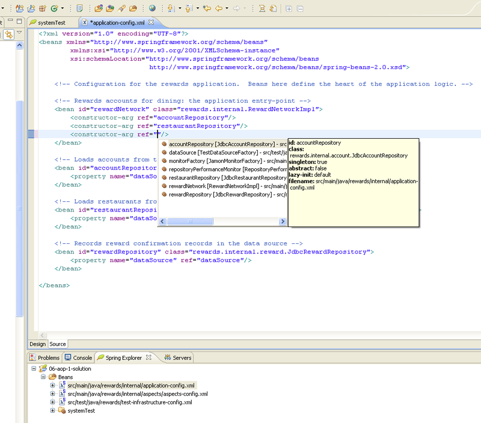

2.5.2
Copies of this document may be made for your own use and for distribution to others, provided that you do not charge any fee for such copies and further provided that each copy contains this Copyright Notice, whether distributed in print or electronically.
Table of Contents
- 前言
- 1. 简介
- 2. Spring 2.0和 2.5的新特性
- 2.1. 简介
- 2.2. 控制反转(IoC)容器
- 2.2.1. 新的bean作用域
- 2.2.2. 更简单的XML配置
- 2.2.3. 可扩展的XML编写
- 2.2.4. Annotation(注解)驱动配置
- 2.2.5. 在classpath中自动搜索组件
- 2.3. 面向切面编程(AOP)
- 2.4. 中间层
- 2.4.1. 在XML里更为简单的声明性事务配置
- 2.4.2. 对Websphere 事务管理的完整支持
- 2.4.3. JPA
- 2.4.4. 异步的JMS
- 2.4.5. JDBC
- 2.5. Web层
- 2.5.1. Spring MVC合理的默认值
- 2.5.2. Portlet 框架
- 2.5.3. 基于Annotation的控制器
- 2.5.4. Spring MVC的表单标签库
- 2.5.5. 对Tiles 2 支持
- 2.5.6. 对JSF 1.2支持
- 2.5.7. JAX-WS支持
- 2.6. 其他
- 2.6.1. 动态语言支持
- 2.6.2. 增强的测试支持
- 2.6.3. JMX 支持
- 2.6.4. 将Spring 应用程序上下文部署为JCA adapter
- 2.6.5. 计划任务
- 2.6.6. 对Java 5 (Tiger) 支持
- 2.7. 移植到Spring 2.5
- 2.7.1. 改变
- 2.7.1.1. 支持的JDK版本
- 2.7.1.2. Spring 2.5的Jar打包
- 2.7.1.3. XML配置
- 2.7.1.4. Deprecated（淘汰）的类和方法
- 2.7.1.5. Apache OJB
- 2.7.1.6. iBATIS
- 2.7.1.7. Hibernate
- 2.7.1.8. JDO
- 2.7.1.9. UrlFilenameViewController
- 2.8. 更新的样例应用
- 2.9. 改进的文档
- I. 核心技术
- 3. IoC(控制反转)容器
- 3.1. 简介
- 3.2. 基本原理 - 容器和bean
- 3.3. 依赖
- 3.3.1. 注入依赖
- 3.3.2. 依赖配置详解
- 3.3.2.1. 直接变量(基本类型、Strings类型等。)
- 3.3.2.2. 引用其它的bean（协作者）
- 3.3.2.3. 内部bean
- 3.3.2.4. 集合
- 3.3.2.5. Nulls
- 3.3.2.6. XML配置文件的简写及其他
- 3.3.2.7. 组合属性名称
- 3.3.3. 使用depends-on
- 3.3.4. 延迟初始化bean
- 3.3.5. 自动装配（autowire）协作者
- 3.3.5.1. 将bean排除在自动装配之外
- 3.3.6. 依赖检查
- 3.3.7. 方法注入
- 3.3.7.1. Lookup方法注入
- 3.3.7.2. 自定义方法的替代方案
- 3.4. Bean的作用域
- 3.4.1. Singleton作用域
- 3.4.2. Prototype作用域
- 3.4.3. Singleton beans和prototype-bean的依赖
- 3.4.4. 其他作用域
- 3.4.4.1. 初始化web配置
- 3.4.4.2. Request作用域
- 3.4.4.3. Session作用域
- 3.4.4.4. global session作用域
- 3.4.4.5. 作用域bean与依赖
- 3.4.5. 自定义作用域
- 3.5. 定制bean特性
- 3.5.1. 生命周期回调
- 3.5.1.1. 初始化回调
- 3.5.1.2. 析构回调
- 3.5.1.3. 缺省的初始化和析构方法
- 3.5.1.4. 组合生命周期机制
- 3.5.1.5. 在非web应用中优雅地关闭Spring IoC容器
- 3.5.2. 了解自己
- 3.5.2.1. BeanFactoryAware
- 3.5.2.2. BeanNameAware
- 3.6. bean定义的继承
- 3.7. 容器扩展点
- 3.7.1. 用BeanPostProcessor定制bean
- 3.7.1.1. 使用BeanPostProcessor的Hello World示例
- 3.7.1.2. RequiredAnnotationBeanPostProcessor示例
- 3.7.2. 用BeanFactoryPostProcessor定制配置元数据
- 3.7.2.1. PropertyPlaceholderConfigurer示例
- 3.7.2.2. PropertyOverrideConfigurer示例
- 3.7.3. 使用FactoryBean定制实例化逻辑
- 3.8. The ApplicationContext
- 3.8.1. BeanFactory 还是 ApplicationContext?
- 3.8.2. 利用MessageSource实现国际化
- 3.8.3. 事件
- 3.8.4. 底层资源的访问
- 3.8.5. ApplicationContext在WEB应用中的实例化
- 3.9. 粘合代码和可怕的singleton
- 3.10. 以J2EE RAR文件的形式部署Spring ApplicationContext
- 3.11. 基于注解（Annotation-based）的配置
- 3.11.1. @Autowired
- 3.11.2. 基于注解的自动连接微调
- 3.11.3. CustomAutowireConfigurer
- 3.11.4. @Resource
- 3.11.5. @PostConstruct 与 @PreDestroy
- 3.12. 对受管组件的Classpath扫描
- 3.12.1. @Component和更多典型化注解
- 3.12.2. 自动检测组件
- 3.12.3. 使用过滤器自定义扫描
- 3.12.4. 自动检测组件的命名
- 3.12.5. 为自动检测的组件提供一个作用域
- 3.12.6. 用注解提供限定符元数据
- 3.13. 注册一个LoadTimeWeaver
- 4. 资源
- 4.1. 简介
- 4.2. Resource接口
- 4.3. 内置 Resource 实现
- 4.3.1. UrlResource
- 4.3.2. ClassPathResource
- 4.3.3. FileSystemResource
- 4.3.4. ServletContextResource
- 4.3.5. InputStreamResource
- 4.3.6. ByteArrayResource
- 4.4. ResourceLoader接口
- 4.5. ResourceLoaderAware 接口
- 4.6. 把Resource作为属性来配置
- 4.7. Application context 和Resource 路径
- 4.7.1. 构造application context
- 4.7.2. Application context构造器中资源路径的通配符
- 4.7.2.1. Ant风格的pattern
- 4.7.2.2. classpath*: 前缀
- 4.7.2.3. 其他关于通配符的说明
- 4.7.3. FileSystemResource 说明
- 5. 校验，数据绑定，BeanWrapper，与属性编辑器
- 5.1. 简介
- 5.2. 使用Spring的Validator接口进行校验
- 5.3. 从错误代码到错误信息
- 5.4. Bean处理和BeanWrapper
- 5.4.1. 设置和获取属性值以及嵌套属性
- 5.4.2. 内建的PropertyEditor实现
- 5.4.2.1. 注册用户自定义的PropertyEditor
- 6. 使用Spring进行面向切面编程（AOP）
- 6.1. 简介
- 6.1.1. AOP概念
- 6.1.2. Spring AOP的功能和目标
- 6.1.3. AOP代理
- 6.2. @AspectJ支持
- 6.2.1. 启用@AspectJ支持
- 6.2.2. 声明一个切面
- 6.2.3. 声明一个切入点（pointcut）
- 6.2.3.1. 切入点指示符（PCD）的支持
- 6.2.3.2. 组合切入点表达式
- 6.2.3.3. 共享通用切入点定义
- 6.2.3.4. 示例
- 6.2.4. 声明通知
- 6.2.4.1. 前置通知
- 6.2.4.2. 后置通知（After returning advice）
- 6.2.4.3. 异常通知（After throwing advice）
- 6.2.4.4. 最终通知（After (finally) advice）
- 6.2.4.5. 环绕通知
- 6.2.4.6. 通知参数（Advice parameters）
- 6.2.4.7. 通知顺序
- 6.2.5. 引入（Introduction）
- 6.2.6. 切面实例化模型
- 6.2.7. 例子
- 6.3. 基于Schema的AOP支持
- 6.4. AOP声明风格的选择
- 6.4.1. Spring AOP还是完全用AspectJ？
- 6.4.2. Spring AOP中使用@AspectJ还是XML？
- 6.5. 混合切面类型
- 6.6. 代理机制
- 6.6.1. 理解AOP代理
- 6.7. 以编程方式创建@AspectJ代理
- 6.8. 在Spring应用中使用AspectJ
- 6.8.1. 在Spring中使用AspectJ进行domain object的依赖注入
- 6.8.1.1. @Configurable对象的单元测试
- 6.8.1.2. Working with multiple application contexts
- 6.8.2. Spring中其他的AspectJ切面
- 6.8.3. 使用Spring IoC来配置AspectJ的切面
- 6.8.4. 在Spring应用中使用AspectJ加载时织入（LTW）
- 6.8.4.1. 第一个例子
- 6.8.4.2. 切面
- 6.8.4.3. 'META-INF/aop.xml'
- 6.8.4.4. 相关类库（JARS）
- 6.8.4.5. Spring配置
- 6.8.4.6. 特定环境的配置
- 6.9. 更多资源
- 7. Spring AOP APIs
- 7.1. 简介
- 7.2. Spring中的切入点API
- 7.3. Spring的通知API
- 7.4. Spring里的Advisor API
- 7.5. 使用ProxyFactoryBean创建AOP代理
- 7.5.1. 基础
- 7.5.2. JavaBean属性
- 7.5.3. 基于JDK和CGLIB的代理
- 7.5.4. 对接口进行代理
- 7.5.5. 对类进行代理
- 7.5.6. 使用“全局”通知器
- 7.6. 简化代理定义
- 7.7. 使用ProxyFactory通过编程创建AOP代理
- 7.8. 操作被通知对象
- 7.9. 使用“自动代理（autoproxy）”功能
- 7.9.1. 自动代理bean定义
- 7.9.1.1. BeanNameAutoProxyCreator
- 7.9.1.2. DefaultAdvisorAutoProxyCreator
- 7.9.1.3. AbstractAdvisorAutoProxyCreator
- 7.9.2. 使用元数据驱动的自动代理
- 7.10. 使用TargetSource
- 7.10.1. 热交换目标源
- 7.10.2. 池化目标源
- 7.10.3. 原型目标源
- 7.10.4. ThreadLocal目标源
- 7.11. 定义新的Advice类型
- 7.12. 更多资源
- 8. 测试
- 8.1. 简介
- 8.2. 单元测试
- 8.2.1. Mock对象
- 8.2.1.1. JNDI
- 8.2.1.2. Servlet API
- 8.2.1.3. Portlet API
- 8.2.2. 单元测试支持类
- 8.2.2.1. 通用工具类
- 8.2.2.2. Spring MVC
- 8.3. 集成测试
- 8.3.1. 概览
- 8.3.2. 使用哪个支持框架
- 8.3.3. 通用目标
- 8.3.3.1. 上下文管理及缓存
- 8.3.3.2. 测试fixtures依赖注入
- 8.3.3.3. 事务管理
- 8.3.3.4. 集成测试支持类
- 8.3.4. JDBC测试支持
- 8.3.5. 常用注解
- 8.3.6. JUnit 3.8遗留支持
- 8.3.6.1. 上下文管理及缓存
- 8.3.6.2. 测试fixture依赖注入
- 8.3.6.3. 事务管理
- 8.3.6.4. JUnit 3.8 遗留支持类
- 8.3.6.5. Java 5+ 专有支持
- 8.3.7. Spring TestContext Framework
- 8.3.7.1. 主要的抽象
- 8.3.7.2. 上下文管理和缓存
- 8.3.7.3. 测试fixture的依赖注入
- 8.3.7.4. 事务管理
- 8.3.7.5. TestContext支持类
- 8.3.7.6. TestContext框架注解支持
- 8.3.8. PetClinic示例
- 8.4. 更多资源
- II. 中间层数据访问
- 9. 事务管理
- 9.1. 简介
- 9.2. 动机
- 9.3. 关键抽象
- 9.4. 使用资源同步的事务
- 9.4.1. 高层次方案
- 9.4.2. 低层次方案
- 9.4.3. TransactionAwareDataSourceProxy
- 9.5. 声明式事务管理
- 9.5.1. 理解Spring的声明式事务管理实现
- 9.5.2. 第一个例子
- 9.5.3. 回滚
- 9.5.4. 为不同的bean配置不同的事务语义
- 9.5.5. <tx:advice/> 有关的设置
- 9.5.6. 使用 @Transactional
- 9.5.6.1. @Transactional 有关的设置
- 9.5.7. 事务传播
- 9.5.7.1. required
- 9.5.7.2. RequiresNew
- 9.5.7.3. Nested
- 9.5.8. 通知事务操作
- 9.5.9. 结合AspectJ使用 @Transactional
- 9.6. 编程式事务管理
- 9.6.1. 使用TransactionTemplate
- 9.6.1.1. 指定事务设置
- 9.6.2. 使用PlatformTransactionManager
- 9.7. 选择编程式事务管理还是声明式事务管理
- 9.8. 与特定应用服务器集成
- 9.8.1. IBM WebSphere
- 9.8.2. BEA WebLogic
- 9.8.3. Oracle OC4J
- 9.9. 常见问题的解决方法
- 9.10. 更多的资源
- 10. DAO支持
- 10.1. 简介
- 10.2. 一致的异常层次
- 10.3. 一致的DAO支持抽象类
- 11. 使用JDBC进行数据访问
- 11.1. 简介
- 11.1.1. 选择一种工作模式
- 11.1.2. Spring JDBC包结构
- 11.2. 利用JDBC核心类控制JDBC的基本操作和错误处理
- 11.2.1. JdbcTemplate类
- 11.2.1.1. 一些示例
- 11.2.1.2. JdbcTemplate 的最佳实践
- 11.2.2. NamedParameterJdbcTemplate类
- 11.2.3. SimpleJdbcTemplate类
- 11.2.4. DataSource接口
- 11.2.5. SQLExceptionTranslator接口
- 11.2.6. 执行SQL语句
- 11.2.7. 执行查询
- 11.2.8. 更新数据库
- 11.2.9. 获取自动生成的主键
- 11.3. 控制数据库连接
- 11.3.1. DataSourceUtils类
- 11.3.2. SmartDataSource接口
- 11.3.3. AbstractDataSource类
- 11.3.4. SingleConnectionDataSource类
- 11.3.5. DriverManagerDataSource类
- 11.3.6. TransactionAwareDataSourceProxy类
- 11.3.7. DataSourceTransactionManager类
- 11.3.8. NativeJdbcExtractor
- 11.4. JDBC批量操作
- 11.4.1. 使用JdbcTemplate进行批量操作
- 11.4.2. 使用SimpleJdbcTemplate进行批量操作
- 11.5. 通过使用SimpleJdbc类简化JDBC操作
- 11.5.1. 使用SimpleJdbcInsert插入数据
- 11.5.2. 使用SimpleJdbcInsert来获取自动生成的主键
- 11.5.3. 指定SimpleJdbcInsert所使用的字段
- 11.5.4. 使用SqlParameterSource提供参数值
- 11.5.5. 使用SimpleJdbcCall调用存储过程
- 11.5.6. 声明SimpleJdbcCall使用的参数
- 11.5.7. 如何定义SqlParameters
- 11.5.8. 使用SimpleJdbcCall调用内置函数
- 11.5.9. 使用SimpleJdbcCall返回的ResultSet/REF Cursor
- 11.6. 用Java对象来表达JDBC操作
- 11.6.1. SqlQuery类
- 11.6.2. MappingSqlQuery类
- 11.6.3. SqlUpdate类
- 11.6.4. StoredProcedure类
- 11.6.5. SqlFunction类
- 11.7. 参数和数据处理的基本原则
- 11.7.1. 为参数设置SQL类型信息
- 11.7.2. 处理BLOB 和 CLOB对象
- 11.7.3. 在IN语句中传入一组参数值
- 11.7.4. 处理复杂类型的存储过程调用
- 12. 使用ORM工具进行数据访问
- 12.1. 简介
- 12.2. Hibernate
- 12.2.1. 资源管理
- 12.2.2. 在Spring容器中创建 SessionFactory
- 12.2.3. The HibernateTemplate
- 12.2.4. 不使用回调的基于Spring的DAO实现
- 12.2.5. 基于Hibernate3的原生API实现DAO
- 12.2.6. 编程式的事务划分
- 12.2.7. 声明式的事务划分
- 12.2.8. 事务管理策略
- 12.2.9. 容器资源 vs 本地资源
- 12.2.10. 在应用服务器中使用Hibernate的注意事项
- 12.3. JDO
- 12.3.1. 建立PersistenceManagerFactory
- 12.3.2. JdoTemplate和JdoDaoSupport
- 12.3.3. 基于原生的JDO API实现DAO
- 12.3.4. 事务管理
- 12.3.5. JdoDialect
- 12.4. Oracle TopLink
- 12.4.1. SessionFactory 抽象层
- 12.4.2. TopLinkTemplate and TopLinkDaoSupport
- 12.4.3. 基于原生的TopLink API的DAO实现
- 12.4.4. 事务管理
- 12.5. iBATIS SQL Maps
- 12.5.1. 创建SqlMapClient
- 12.5.2. 使用 SqlMapClientTemplate 和 SqlMapClientDaoSupport
- 12.5.3. 基于原生的iBATIS API的DAO实现
- 12.6. JPA
- 12.6.1. 在Spring环境中建立JPA
- 12.6.1.1. LocalEntityManagerFactoryBean
- 12.6.1.2. 从JNDI中获取 EntityManagerFactory
- 12.6.1.3. LocalContainerEntityManagerFactoryBean
- 12.6.1.4. 处理多持久化单元
- 12.6.2. JpaTemplate 和 JpaDaoSupport
- 12.6.3. 基于原生的JPA实现DAO
- 12.6.4. 异常转化
- 12.7. 事务管理
- 12.8. JpaDialect
- III. The Web
- 13. Web MVC framework Web框架
- 13.1. 概述
- 13.1.1. 与其他MVC实现框架的集成
- 13.1.2. Spring Web MVC框架的特点
- 13.2. DispatcherServlet
- 13.3. 控制器
- 13.3.1. AbstractController 和 WebContentGenerator
- 13.3.2. 其它的简单控制器
- 13.3.3. MultiActionController
- 13.3.4. 命令控制器
- 13.4. 处理器映射（handler mapping）
- 13.4.1. BeanNameUrlHandlerMapping
- 13.4.2. SimpleUrlHandlerMapping
- 13.4.3. 拦截器（HandlerInterceptor）
- 13.5. 视图与视图解析
- 13.5.1. 视图解析器（ViewResolver）
- 13.5.2. 视图解析链
- 13.5.3. 重定向（Rediret）到另一个视图
- 13.5.3.1. RedirectView
- 13.5.3.2. redirect:前缀
- 13.5.3.3. forward:前缀
- 13.6. 本地化解析器
- 13.6.1. AcceptHeaderLocaleResolver
- 13.6.2. CookieLocaleResolver
- 13.6.3. SessionLocaleResolver
- 13.6.4. LocaleChangeInterceptor
- 13.7. 使用主题
- 13.8. Spring对分段文件上传（multipart file upload）的支持
- 13.8.1. 介绍
- 13.8.2. 使用MultipartResolver
- 13.8.3. 在表单中处理分段文件上传
- 13.9. 使用Spring的表单标签库
- 13.9.1. 配置
- 13.9.2. form标签
- 13.9.3. input标签
- 13.9.4. checkbox标签
- 13.9.5. checkboxes标签
- 13.9.6. radiobutton标签
- 13.9.7. radiobuttons标签
- 13.9.8. password标签
- 13.9.9. select标签
- 13.9.10. option标签
- 13.9.11. options标签
- 13.9.12. textarea标签
- 13.9.13. hidden标签
- 13.9.14. errors标签
- 13.10. 处理异常
- 13.11. 惯例优先原则（convention over configuration）
- 13.11.1. 对控制器的支持：ControllerClassNameHandlerMapping
- 13.11.2. 对模型的支持：ModelMap（ModelAndView）
- 13.11.3. 对视图的支持：RequestToViewNameTranslator
- 13.12. 基于注解的控制器配置
- 13.12.1. 建立dispatcher实现注解支持
- 13.12.2. 使用@Controller定义一个控制器
- 13.12.3. 使用@RequestMapping映射请求
- 13.12.4. 使用@RequestParam绑定请求参数到方法参数
- 13.12.5. 使用@ModelAttribute提供一个从模型到数据的链接
- 13.12.6. 使用@SessionAttributes指定存储在会话中的属性
- 13.12.7. 自定义WebDataBinder初始化
- 13.12.7.1. 使用@InitBinder自定义数据绑定
- 13.12.7.2. 配置一个定制的WebBindingInitializer
- 13.13. 更多资源
- 14. 集成视图技术
- 14.1. 简介
- 14.2. JSP和JSTL
- 14.2.1. 视图解析器
- 14.2.2. 'Plain-old' JSPs versus JSTL 'Plain-old' JSP与JSTL
- 14.2.3. 帮助简化开发的额外的标签
- 14.3. Tiles
- 14.3.1. 需要的资源
- 14.3.2. 如何集成Tiles
- 14.3.2.1. UrlBasedViewResolver类
- 14.3.2.2. ResourceBundleViewResolver类
- 14.3.2.3. SimpleSpringPreparerFactory 和 SpringBeanPreparerFactory
- 14.4. Velocity和FreeMarker
- 14.4.1. 需要的资源
- 14.4.2. Context 配置
- 14.4.3. 创建模板
- 14.4.4. 高级配置
- 14.4.4.1. velocity.properties
- 14.4.4.2. FreeMarker
- 14.4.5. 绑定支持和表单处理
- 14.4.5.1. 用于绑定的宏
- 14.4.5.2. 简单绑定
- 14.4.5.3. 表单输入生成宏
- 14.4.5.4. 重载HTML转码行为并使你的标签符合XHTML
- 14.5. XSLT
- 14.5.1. 写在段首
- 14.5.1.1. Bean 定义
- 14.5.1.2. 标准MVC控制器代码
- 14.5.1.3. 把模型数据转化为XML
- 14.5.1.4. 定义视图属性
- 14.5.1.5. 文档转换
- 14.5.2. 小结
- 14.6. 文档视图（PDF/Excel）
- 14.7. JasperReports
- 14.7.1. 依赖的资源
- 14.7.2. 配置
- 14.7.2.1. 配置ViewResolver
- 14.7.2.2. 配置View
- 14.7.2.3. 关于报表文件
- 14.7.2.4. 使用 JasperReportsMultiFormatView
- 14.7.3. 构造ModelAndView
- 14.7.4. 使用子报表
- 14.7.5. 配置Exporter的参数
- 15. 集成其它Web框架
- 15.1. 简介
- 15.2. 通用配置
- 15.3. JavaServer Faces
- 15.3.1. DelegatingVariableResolver
- 15.3.2. FacesContextUtils
- 15.4. Struts
- 15.4.1. ContextLoaderPlugin
- 15.4.1.1. DelegatingRequestProcessor
- 15.4.1.2. DelegatingActionProxy
- 15.4.2. ActionSupport Classes
- 15.5. Tapestry
- 15.5.1. 注入 Spring 托管的 beans
- 15.5.1.1. 将 Spring Beans 注入到 Tapestry 页面中
- 15.5.1.2. 组件定义文件
- 15.5.1.3. 添加抽象访问方法
- 15.5.1.4. 将 Spring Beans 注入到 Tapestry 页面中 - Tapestry 4.0+ 风格
- 15.6. WebWork
- 15.7. 更多资源
- 16. Portlet MVC框架
- 16.1. 介绍
- 16.1.1. 控制器 - MVC中的C
- 16.1.2. 视图 - MVC中的V
- 16.1.3. Web作用范围的Bean
- 16.2. DispatcherPortlet
- 16.3. ViewRendererServlet
- 16.4. 控制器
- 16.4.1. AbstractController 和 PortletContentGenerator
- 16.4.2. 其它简单的控制器
- 16.4.3. Command控制器
- 16.4.4. PortletWrappingController
- 16.5. 处理器映射
- 16.5.1. PortletModeHandlerMapping
- 16.5.2. ParameterHandlerMapping
- 16.5.3. PortletModeParameterHandlerMapping
- 16.5.4. 增加 HandlerInterceptors
- 16.5.5. HandlerInterceptorAdapter
- 16.5.6. ParameterMappingInterceptor
- 16.6. 视图和它们的解析
- 16.7. Multipart文件上传支持
- 16.7.1. 使用 PortletMultipartResolver
- 16.7.2. 处理表单里的文件上传
- 16.8. 异常处理
- 16.9. Portlet应用的部署
- IV. 整合
- 17. 使用Spring进行远程访问与Web服务
- 17.1. 简介
- 17.2. 使用RMI暴露服务
- 17.2.1. 使用RmiServiceExporter暴露服务
- 17.2.2. 在客户端链接服务
- 17.3. 使用Hessian或者Burlap通过HTTP远程调用服务
- 17.3.1. 为Hessian和co.配置DispatcherServlet
- 17.3.2. 使用HessianServiceExporter暴露你的bean
- 17.3.3. 在客户端连接服务
- 17.3.4. 使用Burlap
- 17.3.5. 对通过Hessian或Burlap暴露的服务使用HTTP Basic认证
- 17.4. 使用HTTP调用器暴露服务
- 17.4.1. Exposing the service object
- 17.4.2. 在客户端连接服务
- 17.5. Web Services
- 17.5.1. 使用JAX-RPC暴露基于servlet的web服务
- 17.5.2. 使用JAX-RPC访问web服务
- 17.5.3. 注册JAX-RPC Bean映射
- 17.5.4. 注册自己的JAX-RPC 处理器
- 17.5.5. 使用JAX-WS暴露基于servlet的web服务
- 17.5.6. 使用JAX-WS暴露单独web服务
- 17.5.7. 使用Spring支持的JAX-WS RI来暴露服务
- 17.5.8. 使用JAX-WS访问web服务
- 17.5.9. 使用XFire来暴露Web服务
- 17.6. JMS
- 17.7. 对远程接口不提供自动探测实现
- 17.8. 在选择这些技术时的一些考虑
- 18. Enterprise Java Beans (EJB) 集成
- 18.1. 简介
- 18.2. 访问EJB
- 18.2.1. 概念
- 18.2.2. 访问本地的无状态Session Bean(SLSB)
- 18.2.3. 访问远程SLSB
- 18.2.4. Accessing EJB 2.x SLSBs versus EJB 3 SLSBs
- 18.3. 使用Spring提供的辅助类实现EJB组件
- 18.3.1. EJB 2.x base classes
- 18.3.2. EJB 3 注入拦截
- 19. JMS (Java Message Service)
- 19.1. 简介
- 19.2. 使用Spring JMS
- 19.2.1. JmsTemplate
- 19.2.2. 连接工厂
- 19.2.3. 目的地管理
- 19.2.4. 消息侦听容器
- 19.2.4.1. SimpleMessageListenerContainer
- 19.2.4.2. DefaultMessageListenerContainer
- 19.2.4.3. ServerSessionMessageListenerContainer
- 19.2.5. 事务管理
- 19.3. 发送消息
- 19.3.1. 使用消息转换器
- 19.3.2. SessionCallback 和 ProducerCallback
- 19.4. 接收消息
- 19.4.1. 同步接收
- 19.4.2. 异步接收 - 消息驱动的POJO
- 19.4.3. SessionAwareMessageListener接口
- 19.4.4. MessageListenerAdapter
- 19.4.5. 事务中的消息处理
- 19.5. JCA消息端点的支持
- 19.6. JMS命名空间支持
- 20. JMX
- 20.1. 介绍
- 20.2. 将Bean暴露为JMX
- 20.2.1. 创建MBeanServer
- 20.2.2. 重用原有的MBeanServer
- 20.2.3. 延迟初始化的MBean
- 20.2.4. MBean的自动注册
- 20.2.5. 控制注册行为
- 20.3. 控制Bean的管理接口
- 20.3.1. MBeanInfoAssembler接口
- 20.3.2. 使用源码级元数据
- 20.3.3. 使用JDK 5.0的注解
- 20.3.4. 源代码级的元数据类型
- 20.3.5. AutodetectCapableMBeanInfoAssembler接口
- 20.3.6. 用Java接口定义管理接口
- 20.3.7. 使用MethodNameBasedMBeanInfoAssembler
- 20.4. 控制Bean的ObjectName
- 20.4.1. 从Properties读取Properties
- 20.4.2. 使用MetadataNamingStrategy
- 20.4.3. <context:mbean-export/>元素
- 20.5. JSR-160连接器
- 20.5.1. 服务器端连接器
- 20.5.2. 客户端连接器
- 20.5.3. 基于Burlap/Hessian/SOAP的JMX
- 20.6. 通过代理访问MBean
- 20.7. 通知
- 20.8. 更多资源
- 21. JCA CCI
- 21.1. 简介
- 21.2. 配置CCI
- 21.2.1. 连接器配置
- 21.2.2. 在Spring中配置ConnectionFactory
- 21.2.3. 配置CCI连接
- 21.2.4. 使用一个 CCI 单连接
- 21.3. 使用Spring的 CCI访问支持
- 21.3.1. 记录转换
- 21.3.2. CciTemplate类
- 21.3.3. DAO支持
- 21.3.4. 自动输出记录生成
- 21.3.5. 总结
- 21.3.6. 直接使用一个CCI Connection接口和Interaction接口
- 21.3.7. CciTemplate 使用示例
- 21.4. 建模CCI访问为操作对象
- 21.4.1. MappingRecordOperation
- 21.4.2. MappingCommAreaOperation
- 21.4.3. 自动生成输出记录
- 21.4.4. 总结
- 21.4.5. MappingRecordOperation 使用示例
- 21.4.6. MappingCommAreaOperation 使用示例
- 21.5. 事务
- 22. Spring邮件抽象层
- 22.1. 简介
- 22.2. 使用Spring邮件抽象
- 22.3. 使用MimeMessageHelper
- 22.3.1. 发送附件和嵌入式资源(inline resources)
- 22.3.2. 使用模板来创建邮件内容
- 22.3.2.1. 一个基于Velocity的示例
- 23. Spring中的定时调度(Scheduling)和线程池(Thread Pooling)
- 23.1. 简介
- 23.2. 使用OpenSymphony Quartz 调度器
- 23.2.1. 使用JobDetailBean
- 23.2.2. 使用 MethodInvokingJobDetailFactoryBean
- 23.2.3. 使用triggers和SchedulerFactoryBean来包装任务
- 23.3. 使用JDK Timer支持类
- 23.3.1. 创建定制的timers
- 23.3.2. 使用 MethodInvokingTimerTaskFactoryBean类
- 23.3.3. 最后：使用TimerFactoryBean来设置任务
- 23.4. SpringTaskExecutor抽象
- 23.4.1. TaskExecutor接口
- 23.4.2. TaskExecutor类型
- 23.4.3. 使用TaskExecutor
- 24. 动态语言支持
- 24.1. 介绍
- 24.2. 第一个示例
- 24.3. 定义动态语言支持的bean
- 24.3.1. 公共概念
- 24.3.1.1. <lang:language/> 元素
- 24.3.1.2. Refreshable bean
- 24.3.1.3. 内置动态语言源文件
- 24.3.1.4. 理解dynamic-language-backed bean上下文中的构造器注入
- 24.3.2. JRuby beans
- 24.3.3. Groovy beans
- 24.3.3.1. 通过回调定制Groovy对象
- 24.3.4. BeanShell beans
- 24.4. 场景
- 24.4.1. Spring MVC控制器的脚本化
- 24.4.2. Validator的脚本化
- 24.5. Bits and bobs
- 24.5.1. AOP - 通知脚本化bean
- 24.5.2. 作用域
- 24.6. 更多的资源
- 25. 注解和源代码级的元数据支持
- 25.1. 简介
- 25.2. Spring的元数据支持
- 25.3. 注解
- 25.3.1. @Required
- 25.3.2. Spring中的其它@Annotations
- 25.4. Jakarta Commons Attributes集成
- 25.5. 元数据和Spring AOP自动代理
- V. 示例程序
- 26. 演示案例
- 26.1. 介绍
- 26.2. 使用动态语言实现的Spring MVC控制器
- 26.2.1. 构建与部署
- 26.3. 使用SimpleJdbcTemplate和@Repository实现DAO
- 26.3.1. 域对象
- 26.3.2. Data Access Object
- 26.3.3. 构建
- A. XML Schema-based configuration
- A.1. Introduction
- A.2. XML Schema-based configuration
- A.2.1. Referencing the schemas
- A.2.2. The util schema
- A.2.2.1. <util:constant/>
- A.2.2.2. <util:property-path/>
- A.2.2.3. <util:properties/>
- A.2.2.4. <util:list/>
- A.2.2.5. <util:map/>
- A.2.2.6. <util:set/>
- A.2.3. The jee schema
- A.2.3.1. <jee:jndi-lookup/> (simple)
- A.2.3.2. <jee:jndi-lookup/> (with single JNDI environment setting)
- A.2.3.3. <jee:jndi-lookup/> (with multiple JNDI environment settings)
- A.2.3.4. <jee:jndi-lookup/> (complex)
- A.2.3.5. <jee:local-slsb/> (simple)
- A.2.3.6. <jee:local-slsb/> (complex)
- A.2.3.7. <jee:remote-slsb/>
- A.2.4. The lang schema
- A.2.5. The jms schema
- A.2.6. The tx (transaction) schema
- A.2.7. The aop schema
- A.2.8. The context schema
- A.2.8.1. <property-placeholder/>
- A.2.8.2. <annotation-config/>
- A.2.8.3. <component-scan/>
- A.2.8.4. <load-time-weaver/>
- A.2.8.5. <spring-configured/>
- A.2.8.6. <mbean-export/>
- A.2.9. The tool schema
- A.2.10. The beans schema
- A.3. Setting up your IDE
- A.3.1. Setting up Eclipse
- A.3.2. Setting up IntelliJ IDEA
- A.3.3. Integration issues
- B. Extensible XML authoring
- B.1. Introduction
- B.2. Authoring the schema
- B.3. Coding a NamespaceHandler
- B.4. Coding a BeanDefinitionParser
- B.5. Registering the handler and the schema
- B.5.1. 'META-INF/spring.handlers'
- B.5.2. 'META-INF/spring.schemas'
- B.6. Using a custom extension in your Spring XML configuration
- B.7. Meatier examples
- B.8. Further Resources
- C. spring-beans-2.0.dtd
- D. spring.tld
- D.1. Introduction
- D.2. The bind tag
- D.3. The escapeBody tag
- D.4. The hasBindErrors tag
- D.5. The htmlEscape tag
- D.6. The message tag
- D.7. The nestedPath tag
- D.8. The theme tag
- D.9. The transform tag
- E. spring-form.tld
- E.1. Introduction
- E.2. The checkbox tag
- E.3. The checkboxes tag
- E.4. The errors tag
- E.5. The form tag
- E.6. The hidden tag
- E.7. The input tag
- E.8. The label tag
- E.9. The option tag
- E.10. The options tag
- E.11. The password tag
- E.12. The radiobutton tag
- E.13. The radiobuttons tag
- E.14. The select tag
- E.15. The textarea tag
- F. Spring 2.5开发手册中文化项目
即使有好工具和好技术，开发软件仍然是比较困难的。有一些平台，它们包打天下， 但实际上很沉重、难以控制，在开发过程中效率不高，却让开发软件变得更加困难。 Spring为编写企业应用程序提供了轻量的解决方案，同时仍然支持使用声明式事务、 用RMI或web service远程调用、以及使用多种方式来将数据持久化到数据库。Spring提供了全功能的 MVC framework， 以及透明集成AOP到你的软件中的能力。
Spring可能是你的企业应用程序所需要的一站式解决方案， 但Spring仍然是模块化的，允许你只使用你所需的哪些部分，而无需附加上其他部分。 你可以使用 IoC容器，在其上使用Struts，但是你也可以选择使用 Hibernate 整合代码或者 JDBC 抽象层。 我们将Spring设计为非侵入式的（并且以后也是如此），这意味着应用基本上不需要依赖框架本身 （或者肯定是最小的，取决于所使用的部分）。
这份手册提供Spring的功能参考指南。由于本文档也需要大量的工作，如果你有任何要求或者意见， 请发送到用户邮件列表，或者提交到http://forum.springframework.org/支持论坛。
另外，必须感谢Christian Bauer(来自Hibernate团队) ，他改写了DocBook-XSL软件来创建Hibernate参考手册，我们才得以创建这份文档。 也需要感谢Russell Healy为本手册的部分内容进行的详细而极富价值的审核。
Java应用（从applets的小范围到全套n层服务端企业应用）是一种典型的依赖型应用，它就是由一些互相适当地协作的对象构成的。因此，我们说这些对象间存在依赖关系。
Java 语言和java平台在架构应用与建立应用方面，提供着丰富的功能。从非常基础的基本数据类型和Class（即定义新类）组成的程序块，到建立具有丰富的特 性的应用服务器和web框架都有着很多的方法。一方面，可以通过抽象的显著特性让基础的程序块组成在一起成为一个连贯的整体。这样，构建一个应用（或者多 个应用）的工作就可以交给架构师或者开发人员去做。因此，我们就可以清晰的知道哪些业务需要哪些Classes和对象组成，哪些设计模式可以应用在哪些业 务上面。 例如：Factory、Abstract Factory、Builder、Decorator 和 Service Locator 这些模式（列举的只是少数）在软件开发行业被普遍认可和肯定（或许这就是为什么这些模式被定型的原因）。 这固然是件好事，不过这些模式只是一个有名字的，有说明的，知道最好用在什么地方的，解决应用中什么问题的最佳实践而已。 在本章节的最后，用“... 说明 ...”给出了模式说明。 通常，模式书籍与wikis通常都列出了你可以获得的最佳实践，不过，希望你思考之后，在你自己的应用中 实现自己的模式。
Spring 的IoC控件主要专注于如何利用classes、对象和服务去组成一个企业级应用，通过规范的方式，将各种不同的控件整合成一个完整的应用。Spring 中使用了很多被实践证明的最佳实践和正规的设计模式，并且进行了编码实现。如果你是一个，构架师或者开发人员完全可以取出它们集成到你自己的应用之中。这 对于那些使用了Spring Framework的组织和机构来说，在spring基础上实现应用不仅可以构建优秀的，可维护的应用并对Spring的设计进行验证，确实是一件好事情。
Spring框架包含许多特性，并被很好地组织在下图所示的六个模块中。本节将依次介绍每个模块。

Spring框架概述
Core 封装包是框架的最基础部分，提供IoC和依赖注入特性。这里的基础概念是BeanFactory，它提供对Factory模式的经典实现来消除对程序性单例模式的需要，并真正地允许你从程序逻辑中分离出依赖关系和配置。
Context(上下文) 封装包构筑于Core封 装包的坚固基础上:它提供了用一种框架风格的方式来访问对象，有些像JNDI注册表。Context封装包继承了beans包的功能，还增加了国际化 （I18N）（用于规范resource bundle）,事件传播，资源装载，以及透明创建上下文，例如通过servlet容器。
DAO 提供了JDBC的抽象层，它可消除冗长的JDBC编码和解析数据库厂商特有的错误代码。 并且，JDBC 封装包还提供了一种比编程性更好的声明性事务管理方法，不仅仅是实现了特定接口，而且对所有的POJOs（plain old Java objects）都适用。
ORM 封装包提供了常用的“对象/关系”映射APIs的集成层。 其中包括JPA、JDO、Hibernate 和 iBatis 。利用ORM封装包，可以混合使用所有Spring提供的特性进行“对象/关系”映射，如前边提到的简单声明性事务管理。
Spring的 AOP 封装包提供了符合 AOP Alliance规 范的面向方面的编程（aspect-oriented programming）实现，让你可以定义，例如方法拦截器（method-interceptors）和切点（pointcuts），从逻辑上讲，从 而减弱代码的功能耦合，清晰的被分离开。而且，利用source-level的元数据功能，还可以将各种行为信息合并到你的代码中，这有点象.Net的 attribute的概念。
Spring中的 Web 包提供了基础的针对Web开发的集成特性，例如多方文件上传，利用Servlet listeners进行IoC容器初始化和针对Web的application context。当与WebWork或Struts一起使用Spring时，这个包使Spring可与其他框架结合。
Spring中的 MVC 封装包提供了Web应用的Model-View-Controller（MVC）实现。Spring的MVC框架并不是仅仅提供一种传统的实现，它提供了一种 清晰的 分离模型，在领域模型代码和web form之间。并且，还可以借助Spring框架的其他特性。
借助搭积木方式来解释一下各种情景下使用Spring的情况，从简单的Applet一直到完整的使用Spring的事务管理功能和Web框架的企业应用。

典型的完整Spring Web应用
通过用Spring的 声明事务管理特性，Web应用可以做到完全事务性，就像使用EJB提供的那种容器管理的事务一样。 所有自定义的业务逻辑可以通过简单的POJO来实现，并利用Spring的IoC容器进行管理。对于其他的服务，比如发送email和不依赖web层的校验信息，还可以让你自己决定在哪里执行校验规则。 Spring本身的ORM支持可以和JPA、Hibernate、JDO以及iBatis集成起来，例如使用Hibernate，你可复用已经存在的映射文件与标准的Hibernate SessionFactory 配置。用控制器去无缝整合web层和领域模型，消除对 ActionForms 的依赖，或者避免了其他class为领域模型转换HTTP参数的需要。
使用了第三方框架的Spring中间层
有的时候，现有情况不允许你彻底地从一种框架切换到另一种框架。然而，Spring却 不需要 强制你使用它的全部，Spring不是一种 全有全无 的解决方案。 如果，现有的应用使用了WebWork、Struts、Tapestry或其他的UI框架作为前端程序，完全可以只与Spring的事务特性进行集成。 只需要使用 ApplicationContext 来挂接你的业务逻辑和通过 WebApplicationContext 来集成你的web层前端程序。
远程使用场景
当你需要通过WebService来访问你的现有代码时，你可使用Spring提供的 Hessian-、Burlap-、Rmi- 为前缀的接口或者 JaxRpcProxyFactory 这个代理类。你会发现，远程访问现有应用程序不再那么困难了。

EJBs-包装现有的POJOs
Spring还为EJB提供了 数据访问和抽象层，让你可以复用已存在的POJO并将他们包装在无状态SessionBean中，以便在可能需要声明式安全（EJB中的安全管理，译者注）的非安全的Web应用中使用。
如果你已经用了一段时间的Spring Framework，那你将发现Spring经历了两次大的修订: 一次是2006年10月发布的Spring 2.0, 另一次是2007年11月发布 Spring 2.5 。
本章是对Spring 2.0与2.5新特性与改进特性的向导。我们希望提供一个高阶的概述使那些有经验的Spring架构师与开发人员能很快熟悉Spring 2.x的新功能。 如果想了解关于特性更多更深层的信息，请参考在本章里超链接的相应部分。
Spring 2.0 相当大的改进之一就是Spring的IoC容器。
Spring 上个版本的IoC容器支持两个不同的bean作用域（单例与原型）。Spring 2.0改进了这一点，不仅提供了一些依赖于Spring部署环境（比如说，在web环境中的request和session作用域bean）的额外的作用 域,而且提供了所谓的'钩子'（'hooks'）（因为找不到更好的表达）使Spring用户可以创造自己的作用域。
应该注意的是，即使单例与原型作用域beans的基本（内在）实现发生了变化，上述变化对最终用户来说是透明的...现有的配置不需要改变或放弃。
在标题为 Section 3.4, “Bean的作用域” 的部分有对新增的作用域与原有作用域的详细描述。
多亏了新的基于XML Schema的XML配置语法的产生，Spring的XML配置变的更加简单了。如果你想充分利用Spring提供的新标签（Spring团队当然建议你这么做，因为他们使配置变的不再繁琐，更加易于阅读），请阅读标题为 Appendix A, XML Schema-based configuration 的部分。
相关提示，有一个新的更新过的Spring 2.0的DTD。如果你不能使用基于Schema的XML配置，你可以使用它。下面给出了DOCTYPE声明，如果有兴趣的读者可以详细阅读Spring 2.0发布包的 'dist/resources'目录中的'spring-beans-2.0.dtd' DTD。
<!DOCTYPE beans PUBLIC "-//SPRING//DTD BEAN 2.0//EN" "http://www.springframework.org/dtd/spring-beans-2.0.dtd">
XML配置不仅更加易于书写，而且也具有可扩展性。
这 里'可扩展性'的含义是，作为一个应用程序开发人员，或着（更可能）作为第三方框架或产品的供应商，可以开发自定义标签，供其他开发人员把这些标签嵌入到 自己的Spring配置文件里。你可以在组件的特定配置中定义你自己的DSL（domain specific language，这个词在这里用得比较宽泛）。
对于开发人员或者在项目中运用Spring的企业架构师来说，实现自定义Spring标签可能不是每个人都感兴趣的。我们期待着第三方供应商能够对开发在Spring配置文件里使用的自定义配置标签予于足够的关注。
可扩展的配置机制在 Appendix B, Extensible XML authoring 里有更充分的描述。
Spring 2.0 引入了一些用于配置的annotation, 包括 @Transactional, @Required and @PersistenceContext /@PersistenceUnit.
Spring 2.5 引入了用于配置的完整的Annotation集合: @Autowired，以及对JSR-250注解@Resource, @PostConstruct and @PreDestroy的支持。
Annotation驱动的bean 配置在Section 3.11, “基于注解（Annotation-based）的配置”中讨论。也请查阅对Spring MVC的annotation的支持Section 2.5.3, “基于Annotation的控制器”。
Spring2.5 引入了组件搜索功能：在classpath中自动搜索带有annotation的组件。典型的，下列组件类会注解为stereotype: @Component, @Repository, @Service, @Controller. 取决于程序的上下文配置，这些组件会被自动搜索到，并且转变为Spring bean定义，而不需要为每个类都进行明确的配置。
Annotation-driven bean configuration is discussed in Section 3.12.1, “@Component和更多典型化注解”.
Annotation驱动的bean配置在Section 3.12.1, “@Component和更多典型化注解”讨论。
Spring 2.0在AOP上有很大的改进。Spring AOP框架本身就十分易于用XML配置，不再那么繁琐；Spring 2.0集成了AspectJ 切入点（pointcut）语言和 @AspectJ 切面（aspect）声明类型。 标题为 Chapter 6, 使用Spring进行面向切面编程（AOP） 的部分专门描述这个新支持。
Spring 2.0引入了新的模式，支持定义从常规Java对象中发展中来的切面。 此支持充分利用了AspectJ切入点语言，提供了完整类型的通知（advice）（也就是没有多余转换和 Object[] 参数操作）。 标题为 Section 6.3, “基于Schema的AOP支持” 的部分详细描述了该支持的细节。
Spring 2.0同样支持使用@AspectJ注解定义的切面。这些切面可以在AspectJ与Spring AOP中共享，仅仅需要（老实说!）一些简单的配置。 在标题为 Section 6.2, “@AspectJ支持” 的部分讨论了对@AspectJ切面的支持。
Spring 2.5 加入了对bean(...)pointcut 元素的支持，在 spring定义的bean命名中对指定的命名进行匹配。细节请参阅 Section 6.2.3.1, “切入点指示符（PCD）的支持” 。
Spring 2.5支持对AspectJ装载时织入的显式支持，作为基于proxy的AOP框架的补充。新的context:load-time-weaver配置元素自动激活定义在AspectJ的META-INF/aop.xml配置文件中的AspectJ方面，通过在底层ClassLoader中注册的一个转换器，把它们应用于当前应用程序上下文中。注意这仅在支持类转换器(class transformation)的环境中才能运作。 参阅Section 6.8.4, “在Spring应用中使用AspectJ加载时织入（LTW）”，有对其能力和限制的描述。
Spring 2.0关于事务的配置方式发生了重大的变化。早先的1.2.x版本的配置方式仍然有效（并且受支持），但是新的方式明显更加简洁，并成为最推荐的方式。 Spring 2.0 同时提供了AspectJ切面库，你可以使用它来生成更漂亮的事务性对象 - 甚至可以不是由Spring IoC容器产生的。
Spring 2.5在装载时植入外还支持方便的注解驱动的事务管理，这是通过context:load-time-weaver 和tx:annotation-driven mode="aspectj"的联合使用进行的。
标题为 Chapter 9, 事务管理 的部分包含所有的细节。
Spring 2.5 明确支持IBM的WebSphere Application Server,特别是WebSphere's transaction manager. Transaction suspension(事务挂起）现在通过使用WebSphere新的UOWManager API得到了完整支持，此API在on WAS 6.0.2.19+ and 6.0.1.9+ 可用。
因此如果你在WebSphere Application Server中运行基于Spring的应用程序，我们高度建议你使用Spring 2.5的WebSphereUowTransactionManager作为你选择的PlatformTransactionManager。这也是 IBM官方的建议。
要自动探测底层的JTA 事务平台，可以使用Spring 2.5的新 tx:jta-transaction-manager 配置元素。它会自动探测BEA WebLogic和IBM WebSphere,注册正确的PlatformTransactionManager。
Spring 2.0提供了JPA抽象层，在所起的作用与常规使用模式上，类似于Spring的JDBC抽象层。
如果你对使用实现JPA作为自己持久层的基础感兴趣，标题为 Section 12.6, “JPA” 的部分专门描述了在这个领域Spring的支持与附加值。
Spring 2.5对OpenJPA的支持升级到了OpenJPA 1.0，支持savepoint这样的高级特性。
在Spring 2.0之前，Spring的JMS的作用局限于发送消息和同步接收消息。 这个功能（封装在 JmsTemplate 类中）当然是很好的， 但是，它没有满足异步消息接收的需要。
Spring 2.0现在提供对异步消息接收的完整支持。在标题为 Section 19.4.2, “异步接收 - 消息驱动的POJO” 的部分有详细的描述。
在Spring 2.5中， JCA风格的异步消息监听器设置也通过GenericMessageEndpointManager工具得到了支持。这是对标准JMS监听器工具的补充，允许对ActionMQ和JORAM这些消息broker进行更深入的集成。参见Section 19.5, “JCA消息端点的支持”。
Spring 2.5 还引入了一个XML namespace来简化JMS配置，可以对大量监听器进行简明配置。这一命名空间支持标准的JMS监听器和JCA setup风格，在配置时只有很小的改变。参阅Section 19.6, “JMS命名空间支持”。
在Spring的JDBC支持库中，有几个小的(但同样值得注意的)新类。首先，NamedParameterJdbcTemplate， 提供了在编写JDBC语句时，对使用命名参数（与之相对的是编写JDBC语句时只使用常规的占位符（'?'））的支持。
另一个新类，SimpleJdbcTemplate， 致力于在使用Java 5+ (Tiger)开发时更加简单地使用JdbcTemplate。
Spring 2.5显著的扩充了SimpleJdbcTemplate的功能，引入了SimpleJdbcCall 和SimpleJdbcInsert操作对象。
在Spring 2.0里，web层支持得到了 充分地 改进和扩展，在Spring 2.5中引入了基于注解的controller。
对于很多项目而言，遵守建立好的规范，使用合理的默认值，是项目所必须的... 现在在SpringMVC里，惯例优先（convention-over-configuration）的观点有了明确的支持。 这就意味着当你为控制器和视图建立一系列的命名规范时，你可以 充分 减少XML配置的数量，包括设置处理映射、视图解析、ModelAndView的实例等等。 对于开发快速原型来说，这有非常大的优势，并且越过代码库可以产生一定的连续性（通常是良好的）。
在标题为 Section 13.11, “惯例优先原则（convention over configuration）” 的部分，可以发现对Spring MVC的惯例优先支持的详细内容。
Spring 2.0 设计了一种概念上类似于Spring MVC框架的Porlet框架。标题为 Chapter 16, Portlet MVC框架 的部分可以找到详细的介绍。
Spring 2.5 为MVC 控制器引入了一种基于Annotation(注解）的编程模型, 使用@RequestMapping, @RequestParam, @ModelAttribute等 等注解。 对SevletMVC和PortletMVC来说，注解都是支持的。用这种方式实现的Controller不需要显式继承基类或者声明接口了。更好的是， 它们不再需要像通常那样依赖于Servlet或Portlet API，虽然如果需要他们还是可以很容易的访问Servlet或者Portlet工具。 更多细节请参阅 Section 13.12, “基于注解的控制器配置”。
Spring MVC丰富的JSP标签库 来自 JIRA，其中的绝大部分是Spring用户（范围很广的用户）通过投票方式产生的。
Spring 2.0拥有一个丰富的JSP标签库，在使用Spring MVC时，编写JSP页面变得更加简单；Spring团队自信地认为它将满足所有在JIRA上投票的开发人员的需要。在标题为 Section 13.9, “使用Spring的表单标签库” 的部分描述了新的标签库，标题为 Appendix E, spring-form.tld 的附录部分是对所有新标签的快速指南。
Spring 2.5 加入了对tiles 2的支持,它是流行的Tiles 模板框架的下一代。它接替了Spring对Tiles 1的正式支持，Strutcs 1.x包含Tiles 1。细节请参阅Section 14.3, “Tiles”。
Spring 2.5 支持JSF 1.2，提供了DelegatingVariableResolver的一个变种，以SpringBeanFacesELResolver的形式。
最后这一部分列出所有其他的Spring 2.0/2.5的新功能或改进过的功能。
Spring 2.0现在支持用非Java语言编写的bean，当前支持的动态语言包括JRuby，Groovy和BeanShell。标题为 Chapter 24, 动态语言支持 部分描述了动态语言支持的细节。
Spring 2.5 提高了动态语言支持，加入了autowiring和对刚发布的JRuby 1.0的支持。
Spring 2.5 引入了Spring TestContext Framework, 它提供了注解(annotation)驱动的单元和集成测试支持，它是现存的测试框架的混合。不同的测试框架可以使用同样的技术和基于注解的配置，例如，JUnit 3.8环境也可以用于使用JUnit 4.4或TestNG编写的测试。
除了提供通用并且可扩展的测试基础设备，Spring TestContext Framework提供了可以立刻使用的针对Spring的集成测试功能，例如context management and caching(上下文管理与缓存), dependency injection of test fixtures（测试夹具的DI）, 和 transactional test management（事务测试管理） ，使用默认rollback语义。
想知道这些新的测试支持能为你编写单元和集成测试带来多大的好处？请参阅Section 8.3.7, “Spring TestContext Framework”，这是更新过的测试章节。
Spring Framework开始支持通知(Notification)； 还可以声明式地控制MBean在一个MBeanServer上的注册行为。
除此之外，Spring 2.5还提供了context:mbean-export配置元素，便于注册使用注解标注的bean 类，它会检查Spring的@ManagedResource 注解。
Spring 2.5支持将Spring应用程序上下文配置成为JCA 资源适配器(JCA resource adapter)，打包为JCA RAR文件。这允许孤立的应用程序模块部署进J2EE服务器，访问所有的服务器基础设施，例如执行计划任务，监听消息等等。
Spring 2.0 提供了一种对计划任务的抽象。对于感兴趣的开发人员， Section 23.4, “SpringTaskExecutor抽象” 提供了所有的细节。
TaskExecutor抽象层在Spring内部也同样美被使用，例如，异步JMS支持。在Spring 2.5中，在对JCA环境支持中也使用到了。
下面的列表列出了在Spring 2.0和2.5中对新的Java 5的支持部分的文档。
最后这部分包含一些细节问题，在你从Spring 1.2/2.0升级到Spring 2.5时可能遇到。
从Spring 2.0.x应用程序升级到Spring 2.5只需要简单的把Spring 2.5的jar复制到你应用程序目录结构中的合适位置即可。我们高度建议任何运行在JDK 1.4.2或更高版本的Spring 2.0应用程序升级到Spring 2.5，特别是运行在Java 5或更高版本上的，Spring 2.5带来了巨大的配置便利和性能提高。
从Spring 1.2.x升级是否平滑取决于你在代码中使用了多少Spring API。Spring 2.0删除了在Spring 1.2.x代码中标注为“deprecated”的绝大部分类和方法，因此如果你使用了这些类或者方法，你当然得使用替代的类和方法（下面有一个列表）。
在配置方面，Spring 1.2.x风格的XML配置是100%信心保证和Spring 2.5兼容的。当然如果你还在使用Spring 1.2.x DTD，你没办法使用一些新的Spring 2.0功能(例如scopes ， easier AOP 和 transaction configuration)，但是没有什么会出错。
建 议的升级策略是将Spring 2.5 jar放入，以得到新版本的好处（例如bug修正，优化，等等）。然后，以一种循序渐进的方式，开始选择使用新的Spring 2.5功能和配置。例如，你可以开始用新的Spring 2风格来配置你的aspects，完全可以将其中的90%仍然使用老的Spring 1.2.x配置（引用1.2.x DTD）,剩下的10%使用新的Spring 2 配置（引用2.0/2.5 DTD或者XSD）。记住，将Spring 2.5类库替换后，你并不是非得升级你的XML配置不可。
如需了解全部变化，请参考Spring Framework 2.0发布包顶层目录里的'changelog.txt'文件。
Spring 2.5对JDK 1.3已经不再支持，因为Sun官方从2006晚期已经正式将JDK 1.3淘汰。请升级到JDK 1.4.2或更高版本。
如果你必须使用只支持JDK 1.3的应用服务器，例如WebSphere 4.0或5.0，我们建议你使用Spring Framework版本2.0.7/2.0.8，它们仍然支持JDK 1.3。
在Spring 2.5中， Spring Web MVC 不再是 'spring.jar' 文件的一部分. Spring MVC以'spring-webmvc.jar' 和'spring-webmvc-portlet.jar'文件形式在发行包的 lib/modules 目录中存在。 另外，对Struts 1.x的支持被独立成 'spring-webmvc-struts.jar'。
注意: 经常被使用的Spring的DispatcherServlet也是Spring Web MVC框架的一部分。 因此，就算你只是为了远程访问（例如，暴露Hessian或者 HTTP调用服务）而使用DispatcherServlet,你也得将'spring-webmvc.jar'(或者 'spring-webmvc-portlet/struts.jar')放到'spring.jar'旁边去。
Spring 2.0的 'spring-jmx.jar' 和 'spring-remoting.jar'已经被转移到 Spring 2.5的'spring-context.jar' (针对 JMX 和非HTTP 远程支持)，部分转移到 'spring-web.jar' (针对HTTP 远程支持)。
Spring 2.0的 'spring-support.jar' 被改名为 'spring-context-support.jar', 更好的表达其真实含义。 'spring-portlet.jar' 被改名为 'spring-webmvc-portlet.jar',表明它是Spring Web MVC framework的子模块之一。 类似的, 'spring-struts.jar' 被改为'spring-webmvc-struts.jar'。
Spring 2.0的'spring-jdo.jar', 'spring-jpa.jar', 'spring-hibernate3.jar', 'spring-toplink.jar' 和 'spring-ibatis.jar' 被合并到Spring 2.5大粒度的'spring-orm.jar'中。
Spring 2.5的 'spring-test.jar' 取代了'spring-mock.jar',表达其对test context framework的强烈关注。 注意 'spring-test.jar' 包含了上个版本 'spring-mock.jar'中的一切，因此如果是单元或集成测试，可以直接取代。
Spring 2.5的 'spring-tx.jar' 取代了 'spring-dao.jar' 和'spring-jca.jar' 文件，表达其对transaction framework的强烈关注。
Spring 2.5 将其jar文件直接作为OSGi兼容的bundle。这使得在OSGi环境中使用Spring 更加方便，不再需要定制打包了。
Spring 2.0的XSD在描述Spring XML元数据格式方面比先前的DTD更丰富。 旧的DTD仍然得到支持，但如果可能我们鼓励在bean定义文件头部引用XSD文件。
有一点被改变了，那就是定义bean作用域的方式。如果你使用的是Spring 1.2 DTD，那么你能继续用'singleton'属性。 如果你选择引用新的Spring 2.0 DTD，它不允许使用'singleton'属性， 那么可以用'scope'属性来定义bean的生命周期作用域。
一些以前被标记为@deprecated的类和方法Spring 2.0代码库中被完全删除了。 Spring团队决定把2.0版本作为一个新的开始，那些被deprecated的代码应该被除去而不是在可预见的未来继续在代码中出现。
如前所述，如需了解全部变化，请参考Spring Framework 2.0发布包顶层目录里的'changelog.txt'文件。
下面的类/接口已经从Spring 2.0的代码中删除了：
ResultReader : 使用RowMapper接口代替。
BeanFactoryBootstrap : 考虑使用一个BeanFactoryLocator 或是自定义引导类代替
Spring 2.0开始，请注意Spring主代码中的Apache OJB支持被完全删除了； 但仍然可以在Spring Modules项目中找到Apache OJB的集成库。
请注意iBATIS SQL Maps 1.3支持被完全去除了。如果你还在使用iBATIS SQL Maps 1.3， 请升级到iBATIS SQL Maps 2.0/2.1。
Spring 2.5中，对 Hibernate 2.1 和 Hibernate 3.0 的支持已经去除。请升级到Hibernate 3.1或更高版本。
如果你需要继续使用Hibernate 2.1或3.0，我们建议你继续使用Spring 2.0.7/2.0.8，这些版本仍然支持Hibernate的那些版本。
Spring 2.5中，对JDO 1.0 的支持被去除。请升级到JDO 2.0或更高版本。
如果你需要继续使用JDO 1.0，我们建议你继续使用spring 2.0.7/2.0.8，这些版本仍然支持JDO 1.0。
我们同样更新了一些样例应用以反映Spring 2.0的新特性与改进特性，请抽出时间仔细研究。 上述样例放在Spring完整发行版里的'samples'路径下 （'spring-with-dependecies.[zip|tar.gz]'），在Chapter 26, 演示案例章节中有部分文档。
Spring 2.5 附带有PetClinic和PetPortal的改进过的示例程序，彻底从头改写过，用于展示Spring 2.5的注解配置功能。它也使用了Java 5 autoboxing,泛型，varargs和对循环的强化。必须使用Java 5或者6 SDK才能构建和运行这些示例。查看PetClinic和PetPortal，来让Spring 2.5所提供的功能给你留下深刻印象吧！
Spring参考文档理所当然的进行了充分的更新，以反映上述Spring 2.0和2.5的新特性。尽管我们竭尽所能力争这份文档不会出现错误，但是人非圣贤，错误在所难免。 如果您发现了一些打印排版或者更严重的错误，并可以抽出一些空闲时间来的话， 请通过 问题提交 把错误发给Spring团队。
特别感谢Arthur Loder，谢谢他不辞辛劳地校对Spring Framework的参考文档和Javadocs。
这个开发手册的第一部分描述了Spring Framework所有使用到的技术领域。
首先是Spring Framework中的控制翻转（IoC）容器。在完整的阐述了Spring Framework的IoC容器后紧跟的是对Spring的面向方面编程（AOP）技术的全面说明。 Spring Framework拥有自己的AOP框架，这个框架在概念上是十分容易理解的，而且它成功地实现了在Java企业级开发中对AOP需求的80%左右。
开发手册中还描述了Spring与AspectJ的集成方法。 （当前来说,AspectJ是Java企业级开发领域中特性最多、最成熟的AOP实现。）
最后，Spring小组提倡在软件开发中运用测试驱动开发（TDD）方法，所以在最后涵盖了Spring对集成测试的支持（包括单元测试的最佳实践）。 Spring小组发现正确使用IoC可以让单元测试和集成测试更容易进行（在类中定义setter方法和适当的构造方法让java类更容易地与测试联系起来， 而不用设置服务定位注册或类似的东西）……希望仅专注于测试的"同学"们，这一章一定会让你有所收获。
本章覆盖了Spring框架对控制反转(Inversion of Control，IoC)[1]理论的实现。
org.springframework.beans及org.springframework.context包 是Spring IoC容器的基础。BeanFactory 提供的高级配置机制，使得管理各种对象成为可能。 ApplicationContext 是BeanFactory的扩展，功能得到了进一步增强，比如更易 与Spring AOP集成、资源处理(国际化处理)、事件传递及各种不同应用层的context实现 (如针对web应用的WebApplicationContext)。
简而言之，BeanFactory提供了配制框架及基本功能，而 ApplicationContext 则增加了更多支持企业核心内容的功能。 ApplicationContext完全由BeanFactory扩展而来， 因而BeanFactory所具备的能力和行为也适用于ApplicationContext。
本章分为两部份，第一部份讲解 BeanFactory及ApplicationContext的基本原理， 而第二部份则针对ApplicationContext的功能进行讲解。
在Spring中，那些组成你应用程序的主体(backbone)及由Spring IoC容器所管理的对象，被称之为bean。 简单地讲，bean就是由Spring容器初始化、装配及管理的对象，除此之外，bean就与应用程序中的其他对象没有什么区别了。 而bean定义以及bean相互间的依赖关系将通过配置元数据来描述。
org.springframework.beans.factory.BeanFactory 是Spring IoC容器的实际代表者，IoC容器负责容纳此前所描述的bean，并对bean进行管理。
在Spring中，BeanFactory是IoC容器的核心接口。 它的职责包括：实例化、定位、配置应用程序中的对象及建立这些对象间的依赖。
Spring为我们提供了许多易用的BeanFactory实现， XmlBeanFactory就是最常用的一个。该实现将以XML方式描述组成应用的对象 以及对象间的依赖关系。XmlBeanFactory类将获取此XML配 置元数据，并用它来构建一个完全可配置的系统或应用。

Spring IoC 容器
从上图可以看到，Spring IoC容器将读取配置元数据； 并通过它对应用中各个对象进行实例化、配置以及组装。通常情况下我们使用简单直观 的XML来作为配置元数据的描述格式。在XML配置元数据中我们可以对那些我们希望通过 Spring IoC容器管理的bean进行定义。
![[Note]](note.png) | Note |
|---|---|
到目前为止，基于XML的元数据是最常用到的配置元数据格式。然而，它并 不是唯一的描述格式。Spring IoC容器在这一点上是 完全开放的。由于采用基于XML的配置元数据格式非常简单， 因此 本章节的大部分内容将采用该格式来说明Spring IoC容器的关键概念和功能 同时你也可以在Section 3.11, “基于注解（Annotation-based）的配置”这一节中 看到Spring容器支持的另一种元数据格式的详细内容。 | |
在大多数的应用程序中，并不需要用显式的代码去实例化一个或多个的Spring IoC 容器实例。例如，在web应用程序中，我们只需要在web.xml中添加 (大约)8 行简单的XML描述符即可(参见Section 3.8.5, “ApplicationContext在WEB应用中的实例化”)。
Spring IoC容器至少包含一个bean定义，但大多数情况下会有多个bean定义。当使用 基于XML的配置元数据时，将在顶层的<beans/>元素中配置一个 或多个<bean/>元素。
bean定义与应用程序中实际使用的对象一一对应。通常情况下bean的定义包括：服务 层对象、数据访问层对象（DAO）、类似Struts Action的 表示层对象、Hibernate SessionFactory对象、JMS Queue对象等等。通常bean的定义并不与容器中的领域 对象相同，因为领域对象的创建和加载必须依赖具体的DAO和业务逻辑。.
以下是一个基于XML的配置元数据的基本结构：
<?xml version="1.0" encoding="UTF-8"?>
<beans xmlns="http://www.springframework.org/schema/beans"
xmlns:xsi="http://www.w3.org/2001/XMLSchema-instance"
xsi:schemaLocation="http://www.springframework.org/schema/beans
http://www.springframework.org/schema/beans/spring-beans-2.5.xsd">
<bean id="..." class="...">
<!-- collaborators and configuration for this bean go here -->
</bean>
<bean id="..." class="...">
<!-- collaborators and configuration for this bean go here -->
</bean>
<!-- more bean definitions go here -->
</beans>Spring IoC容器的实例化非常简单，如下面的例子：
ApplicationContext context = new ClassPathXmlApplicationContext(
new String[] {"services.xml", "daos.xml"});
// an ApplicationContext is also a BeanFactory (via inheritance)
BeanFactory factory = context;将XML配置文件分拆成多个部分是非常有用的。为了加载多个XML文件生成一个 ApplicationContext实例，可以将文件路径作为字符串数组传给ApplicationContext构造器 。而bean factory将通过调用bean defintion reader从多个文件中读取bean定义。
通常情况下，Spring团队倾向于上述做法，因为这样各个配置并不会查觉到它们 与其他配置文件的组合。另外一种方法是使用一个或多个的<import/>元素 来从另外一个或多个文件加载bean定义。所有的<import/>元素必 须在<bean/>元素之前完成bean定义的导入。 让我们看个例子：
<beans>
<import resource="services.xml"/>
<import resource="resources/messageSource.xml"/>
<import resource="/resources/themeSource.xml"/>
<bean id="bean1" class="..."/>
<bean id="bean2" class="..."/>
</beans>在上面的例子中，我们从3个外部文件：services.xml、 messageSource.xml及themeSource.xml 来加载bean定义。这里采用的都是相对路径，因此，此例中的services.xml 一定要与导入文件放在同一目录或类路径，而messageSource.xm l和themeSource.xml的文件位置必须放在导入文件所 在目录下的resources目录中。正如你所看到的那样，开头的斜杠 ‘/’实际上可忽略。因此不用斜杠‘/’可能会更好一点。根据Spring XML配置文件的 Schema(或DTD)，被导入文件必须是完全有效的XML bean定义文件，且根节点必须为 <beans/> 元素。
Spring IoC容器将管理一个或多个bean，这些bean 将通过配置文件中的bean定义被创建(在XML格式中为<bean/> 元素)。
在容器内部，这些bean定义由BeanDefinition 对象来表示，该定义将包含以下信息：
全限定类名：这通常就是已定义bean的实际实现类。
bean行为的定义，这些定义将决定bean在容器中的行为（作用域、生命周期回调等等）
对其他bean的引用，这些引用bean也可以称之为协作bean（collaborators） 或依赖bean（dependencies）.
创建bean实例时的其他配置设置。比如使用bean来定义连接池，可以通过属性或者构 造参数指定连接数，以及连接池大小限制等。
上述内容直接被翻译为每个bean定义包含的一组properties。下面的表格列出了部分 内容的详细链接：
Table 3.1. bean定义
| 名称 | 链接 |
|---|---|
| class | |
| name | |
| scope | |
| constructor arguments | |
| properties | |
| autowiring mode | |
| dependency checking mode | |
| lazy-initialization mode | |
| initialization method | |
| destruction method |
除了通过bean定义来描述要创建的指定bean的属性之外，某些 BeanFactory的实现也允许将那些非BeanFactory创建的、已有的用户 对象注册到容器中，比如使用DefaultListableBeanFactory 的registerSingleton(..) 方法。不过大多数应用还是采用 元数据定义为主。
每个bean都有一个或多个id(或称之为标识符或名称，在术语 上可以理解成一回事)。这些id在当前IoC容器中必须唯一。如果 一个bean有多个id，那么其他的id在本质上将被认为是别名。
当使用基于XML的配置元数据时，将通过id或 name属性来指定bean标识符。id属性具有唯一性， 而且是一个真正的XML ID属性，因此其他xml元素在引用该id时，可以利用XML解析器的 验证功能。通常情况下最好为bean指定一个id。尽管XML规范规定了XML ID命名的有效 字符，但是bean标识符的定义不受该限制，因为除了使用指定的XML字符来作为id，还可 以为bean指定别名，要实现这一点可以在name属性中使用逗号、 冒号或者空格将多个id分隔。
值得注意的是，为一个bean提供一个name并不是必须的，如果没有指定，那么容 器将为其生成一个惟一的name。对于不指定name属性的原因我们会在后面介绍(比如 内部bean就不需要)。
在对bean进行定义时，除了使用id属性来指定名称 之外，为了提供多个名称，需要通过name属性来加以指定 。而所有的这些名称都指向同一个bean，在某些情况下提供别名非常有用，比如 为了让应用的每一个组件能更容易的对公共组件进行引用。
然而，在定义bean时就指定所有的别名并不是总是恰当的。有时我们期望 能在当前位置为那些在别处定义的bean引入别名。在XML配置文件中，可用 <alias/> 元素来完成bean别名的定义。如：
<alias name="fromName" alias="toName"/>
这里如果在容器中存在名为fromName的bean定义， 在增加别名定义之后，也可以用toName来引用。
考虑一个更为具体的例子，组件A在XML配置文件中定义了一个名为 componentA-dataSource的DataSource bean。但组件B却想在其XML文件中 以componentB-dataSource的名字来引用此bean。而且在主程序MyApp的XML配 置文件中，希望以myApp-dataSource的名字来引用此bean。最后容器加载三个 XML文件来生成最终的ApplicationContext，在此情形下，可通过在MyApp XML 文件中添加下列alias元素来实现：
<alias name="componentA-dataSource" alias="componentB-dataSource"/> <alias name="componentA-dataSource" alias="myApp-dataSource" />
这样一来，每个组件及主程序就可通过唯一名字来引用同一个数据源而互不干扰。
从本质上来说，bean定义描述了如何创建一个或多个对象实例。当需要的时候， 容器会从bean定义列表中取得一个指定的bean定义，并根据bean定义里面的配置元数据 使用反射机制来创建（或取得）一个实际的对象。
当采用XML描述配置元数据时，将通过<bean/>元素的 class属性来指定实例化对象的类型。class 属性 (对应BeanDefinition实例的 Class属性)通常是必须的(不过也有两种例外的情形，见 Section 3.2.3.2.3, “使用实例工厂方法实例化”和 Section 3.6, “bean定义的继承”)。class属性主要有两种用途 ：在大多数情况下，容器将直接通过反射调用指定类的构造器来创建bean(这有点类似于 在Java代码中使用new操作符)；在极少数情况下，容器将调用 类的静态工厂方法来创建bean实例，class 属性将用来指定实际具有静态工厂方法的类(至于调用静态工厂 方法创建的对象类型是当前class还是其他的class则无关紧要)。
当采用构造器来创建bean实例时，Spring对class并没有特殊的要求， 我们通常使用的class都适用。也就是说，被创建的类并不需要实现任何特定的 接口，或以特定的方式编码，只要指定bean的class属性即可。不过根据所采用 的IoC类型，class可能需要一个默认的空构造器。
此外，IoC容器不仅限于管理JavaBean，它可以管理任意 的类。不过大多数使用Spring的人喜欢使用实际的JavaBean(具有默认的(无参)构造器 及setter和getter方法)，但在容器中使用非bean形式(non-bean style)的类也是可 以的。比如遗留系统中的连接池，很显然它与JavaBean规范不符，但Spring也能管理它。
当使用基于XML的元数据配置文件，可以这样来指定bean类：
<bean id="exampleBean" class="examples.ExampleBean"/> <bean name="anotherExample" class="examples.ExampleBeanTwo"/>
给构造函数指定参数以及为bean实例设置属性将在随后的 部分中谈及。
当采用静态工厂方法创建bean时，除了需要指定class 属性外，还需要通过factory-method属性来指定创建bean实例 的工厂方法。Spring将调用此方法(其可选参数接下来介绍)返回实例对象，就此而言， 跟通过普通构造器创建类实例没什么两样。
下面的bean定义展示了如何通过工厂方法来创建bean实例。注意，此定义并 未指定返回对象的类型，仅指定该类包含的工厂方法。在此例中， createInstance()必须是一个static方法。
<bean id="exampleBean"
class="examples.ExampleBean2"
factory-method="createInstance"/>给工厂方法指定参数以及为bean实例设置属性将在随后的部份中谈及。
与 使用静态工厂方法实例化类似，用来进行实例化的非静态实例工厂方法位 于另外一个bean中，容器将调用该bean的工厂方法来创建一个新的bean实例。为使 用此机制，class属性必须为空，而factory-bean 属性必须指定为当前(或其祖先)容器中包含工厂方法的bean的名称，而该 工厂bean的工厂方法本身必须通过factory-method属性来设定。
<!-- the factory bean, which contains a method called createInstance() --> <bean id="serviceLocator" class="com.foo.DefaultServiceLocator"> <!-- inject any dependencies required by this locator bean --> </bean> <!-- the bean to be created via the factory bean --> <bean id="exampleBean" factory-bean="serviceLocator" factory-method="createInstance"/>
虽然设置bean属性 的机制仍然在这里被提及，但隐式的做法是由工厂bean自己来管理以及通过依 赖注入(DI)来进行配置。
| Note |
|---|---|
Spring文档中的factory bean指的是配置在Spring容器中通过使用 实例 或 静态工厂方法创建对象的一种bean。而文档中的FactoryBean （注意首字母大写）指的是Spring特有的 FactoryBean。 | |
从本质上讲，BeanFactory仅仅只是一个 维护bean定义以及相互依赖关系的高级工厂接口。通过BeanFactory 我们可以访问bean定义。下面的例子创建了一个bean工厂，此工厂 将从xml文件中读取bean定义：
Resource res = new FileSystemResource("beans.xml");
BeanFactory factory = new XmlBeanFactory(res);基本上就这些了，接着使用getBean(String) 方法就可以取得bean的实例；BeanFactory 提供的方法极其简单。 BeanFactory接口提供 了非常多的方法，但是对于我们的应用来说，最好永远不要调用它们，当然也包括 使用getBean(String)方法，这样可以避免我们对 Spring API的依赖。
典 型的企业应用不会只由单一的对象（或Spring的术语bean)组成。毫无疑问，即使最简单的系统也需要多个对象共同来展示给用户一个整体的应用。接下 来的的内容除了阐述如何单独定义一系列bean外，还将描述如何让这些bean对象一起协同工作来实现一个完整的真实应用。
依赖注入（DI）背后的基本原理是对象之间的依赖关系（即一起工作的其它对象）只会通过以下几种方式来实现：构造器的参数、工厂方法的参数，或给由构造函数或者工厂方法创建的对象设置属性。因此，容器的工作就是创建bean时注入那些依赖关系。相对于由bean自己来控制其实例化、直接在构造器中指定依赖关系或者类似服务定位器（Service Locator）模式这3种自主控制依赖关系注入的方法来说，控制从根本上发生了倒转，这也正是控制反转（Inversion of Control， IoC） 名字的由来。
应用DI原则后，代码将更加清晰。而且当bean自己不再担心对象之间的依赖关系（甚至不知道依赖的定义指定地方和依赖的实际类）之后，实现更高层次的松耦合将易如反掌。DI主要有两种注入方式，即Setter注入和构造器注入
。基于构造器的DI通过调用带参数的构造器来实现，每个参数代表着一个依赖。此外，还可通过给stattic工厂方法传参数来构造bean。接下来的介绍将认为给构造器传参与给静态工厂方法传参是类似的。下面展示了只能使用构造器参数来注入依赖关系的例子。请注意，这个类并没有什么特别之处。
public class SimpleMovieLister {
// the SimpleMovieLister has a dependency on a MovieFinder
private MovieFinder movieFinder;
// a constructor so that the Spring container can 'inject' a MovieFinder
public SimpleMovieLister(MovieFinder movieFinder) {
this.movieFinder = movieFinder;
}
// business logic that actually 'uses' the injected MovieFinder is omitted...
}构造器参数解析根据参数类型进行匹配，如果bean的构造器参数类型定义非常明确，那么在bean被实例化的时候，bean定义中构造器参数的定义顺序就是这些参数的顺序，依次进行匹配，比如下面的代码
package x.y;
public class Foo {
public Foo(Bar bar, Baz baz) {
// ...
}
}上述例子中由于构造参数非常明确（这里我们假定 Bar和 Baz之间不存在继承关系）。因此下面的配置即使没有明确指定构造参数顺序（和类型），也会工作的很好。
<beans>
<bean name="foo" class="x.y.Foo">
<constructor-arg>
<bean class="x.y.Bar"/>
</constructor-arg>
<constructor-arg>
<bean class="x.y.Baz"/>
</constructor-arg>
</bean>
</beans>我们再来看另一个bean，该bean的构造参数类型已知，匹配也没有问题(跟前面的例子一样)。但是当使用简单类型时，比如<value>true<value>，Spring将无法知道该值的类型。不借助其他帮助，他将无法仅仅根据参数类型进行匹配，比如下面的这个例子：
package examples;
public class ExampleBean {
// No. of years to the calculate the Ultimate Answer
private int years;
// The Answer to Life, the Universe, and Everything
private String ultimateAnswer;
public ExampleBean(int years, String ultimateAnswer) {
this.years = years;
this.ultimateAnswer = ultimateAnswer;
}
}针对上面的场景可以通过使用'type'属性来显式指定那些简单类型的构造参数的类型，比如：
<bean id="exampleBean" class="examples.ExampleBean"> <constructor-arg type="int" value="7500000"/> <constructor-arg type="java.lang.String" value="42"/> </bean>
通过调用无参构造器或无参static工厂方法实例化bean之后，调用该bean的setter方法，即可实现基于setter的DI。
下面的例子将展示只使用setter注入依赖。注意，这个类并没有什么特别之处，它就是普通的Java类。
public class SimpleMovieLister {
// the SimpleMovieLister has a dependency on the MovieFinder
private MovieFinder movieFinder;
// a setter method so that the Spring container can 'inject' a MovieFinder
public void setMovieFinder(MovieFinder movieFinder) {
this.movieFinder = movieFinder;
}
// business logic that actually 'uses' the injected MovieFinder is omitted...
}BeanFactory对于它所管理的bean提供两种注入依赖方式（实际上它也支持同时使用构造器注入和Setter方式注入依赖）。需要注入的依赖将保存在BeanDefinition中，它能根据指定的PropertyEditor实现将属性从一种格式转换成另外一种格式。然而，大部份的Spring用户并不需要直接以编程的方式处理这些类，而是采用XML的方式来进行定义，在内部这些定义将被转换成相应类的实例，并最终得到一个Spring IoC容器实例。
处理bean依赖关系通常按以下步骤进行：
根据定义bean的配置（文件）创建并初始化BeanFactory实例（大部份的Spring用户使用支持XML格式配置文件的BeanFactory或ApplicationContext实现）。
每个bean的依赖将以属性、构造器参数、或静态工厂方法参数的形式出现。当这些bean被实际创建时，这些依赖也将会提供给该bean。
每个属性或构造器参数既可以是一个实际的值，也可以是对该容器中另一个bean的引用。
每个指定的属性或构造器参数值必须能够被转换成特定的格式或构造参数所需的类型。默认情况下，Spring会以String类型提供值转换成各种内置类型，比如int、long、String、boolean等。
Spring会在容器被创建时验证容器中每个bean的配置，包括验证那些bean所引用的属性是否指向一个有效的bean（即被引用的bean也在容器中被定义）。然而，在bean被实际创建之前，bean的属性并不会被设置。对于那些singleton类型和被设置为提前实例化的bean（比如ApplicationContext中的singleton bean）而言，bean实例将与容器同时被创建。而另外一些bean则会在需要的时候被创建，伴随着bean被实际创建，作为该bean的依赖bean以及依赖bean的依赖bean（依此类推）也将被创建和分配。
通 常情况下，你可以信赖Spring，它会在容器加载时发现配置错误（比如对无效bean的引用以及循环依赖）。Spring会在bean创建时才去设置属 性和依赖关系（只在需要时创建所依赖的其他对象）。这意味着即使Spring容器被正确加载，当获取一个bean实例时，如果在创建bean或者设置依赖 时出现问题，仍然会抛出一个异常。因缺少或设置了一个无效属性而导致抛出一个异常的情况的确是存在的。因为一些配置问题而导致潜在的可见性被延迟，所以在 默认情况下，ApplicationContext实现中的bean采用提前实例化的singleton模式。在实际需要之前创建这些bean将带来时间与内存的开销。而这样做的好处就是ApplicationContext被加载的时候可以尽早的发现一些配置的问题。不过用户也可以根据需要采用延迟实例化来替代默认的singleton模式。
如果撇开循环依赖不谈，当协作bean被注入到依赖bean时，协作bean必须在依赖bean之前完全配置好。例如bean A对bean B存在依赖关系，那么Spring IoC容器在调用bean A的setter方法之前，bean B必须被完全配置，这里所谓完全配置的意思就是bean将被实例化（如果不是采用提前实例化的singleton模式），相关的依赖也将被设置好，而且所有相关的lifecycle方法（如IntializingBean的init方法以及callback方法）也将被调用。
首先是一个用XML格式定义的Setter DI例子。相关的XML配置如下：
<bean id="exampleBean" class="examples.ExampleBean"> <!-- setter injection using the nested <ref/> element --> <property name="beanOne"><ref bean="anotherExampleBean"/></property> <!-- setter injection using the neater 'ref' attribute --> <property name="beanTwo" ref="yetAnotherBean"/> <property name="integerProperty" value="1"/> </bean> <bean id="anotherExampleBean" class="examples.AnotherBean"/> <bean id="yetAnotherBean" class="examples.YetAnotherBean"/>
public class ExampleBean {
private AnotherBean beanOne;
private YetAnotherBean beanTwo;
private int i;
public void setBeanOne(AnotherBean beanOne) {
this.beanOne = beanOne;
}
public void setBeanTwo(YetAnotherBean beanTwo) {
this.beanTwo = beanTwo;
}
public void setIntegerProperty(int i) {
this.i = i;
}
}正如你所看到的，bean类中的setter方法与xml文件中配置的属性是一一对应的。接着是构造器注入的例子：
<bean id="exampleBean" class="examples.ExampleBean"> <!-- constructor injection using the nested <ref/> element --> <constructor-arg> <ref bean="anotherExampleBean"/> </constructor-arg> <!-- constructor injection using the neater 'ref' attribute --> <constructor-arg ref="yetAnotherBean"/> <constructor-arg type="int" value="1"/> </bean> <bean id="anotherExampleBean" class="examples.AnotherBean"/> <bean id="yetAnotherBean" class="examples.YetAnotherBean"/>
public class ExampleBean {
private AnotherBean beanOne;
private YetAnotherBean beanTwo;
private int i;
public ExampleBean(
AnotherBean anotherBean, YetAnotherBean yetAnotherBean, int i) {
this.beanOne = anotherBean;
this.beanTwo = yetAnotherBean;
this.i = i;
}
}如你所见，在xml bean定义中指定的构造器参数将被用来作为传递给类ExampleBean构造器的参数。
现在来研究一个替代构造器的方法，采用static工厂方法返回对象实例：
<bean id="exampleBean" class="examples.ExampleBean"
factory-method="createInstance">
<constructor-arg ref="anotherExampleBean"/>
<constructor-arg ref="yetAnotherBean"/>
<constructor-arg value="1"/>
</bean>
<bean id="anotherExampleBean" class="examples.AnotherBean"/>
<bean id="yetAnotherBean" class="examples.YetAnotherBean"/>public class ExampleBean {
// a private constructor
private ExampleBean(...) {
...
}
// a static factory method; the arguments to this method can be
// considered the dependencies of the bean that is returned,
// regardless of how those arguments are actually used.
public static ExampleBean createInstance (
AnotherBean anotherBean, YetAnotherBean yetAnotherBean, int i) {
ExampleBean eb = new ExampleBean (...);
// some other operations...
return eb;
}
}请注意，传给static工厂方法的参数由constructor-arg元素提供，这与使用构造器注入时完全一样。而且，重要的是，工厂方法所返回的实例的类型并不一定要与包含static工厂方法的类类型一致。尽管在此例子中它的确是这样。非静态的实例工厂方法与此相同（除了使用factory-bean属性替代class属性外），因而不在此细述。
正如前面章节所提到的，bean的属性及构造器参数既可以引用容器中的其他bean，也可以是内联（inline）bean。在spring的XML配置中使用<property/>和<constructor-arg/>元素定义。
<value/>元素通过人可以理解的字符串来指定属性或构造器参数的值。正如前面所提到的，JavaBean PropertyEditor将用于把字符串从java.lang.String类型转化为实际的属性或参数类型。
<bean id="myDataSource" class="org.apache.commons.dbcp.BasicDataSource" destroy-method="close">
<!-- results in a setDriverClassName(String) call -->
<property name="driverClassName">
<value>com.mysql.jdbc.Driver</value>
</property>
<property name="url">
<value>jdbc:mysql://localhost:3306/mydb</value>
</property>
<property name="username">
<value>root</value>
</property>
<property name="password">
<value>masterkaoli</value>
</property>
</bean><property/> 和<constructor-arg/> 元素中也可以使用'value' 属性，这样会使我们的配置更简洁，比如下面的配置：
<bean id="myDataSource" class="org.apache.commons.dbcp.BasicDataSource" destroy-method="close">
<!-- results in a setDriverClassName(String) call -->
<property name="driverClassName" value="com.mysql.jdbc.Driver"/>
<property name="url" value="jdbc:mysql://localhost:3306/mydb"/>
<property name="username" value="root"/>
<property name="password" value="masterkaoli"/>
</bean>Spring团队更倾向采用属性方式（使用<value/>元素）来定义value值。当然我们也可以按照下面这种方式配置一个java.util.Properties实例：
<bean id="mappings" class="org.springframework.beans.factory.config.PropertyPlaceholderConfigurer">
<!-- typed as a java.util.Properties -->
<property name="properties">
<value>
jdbc.driver.className=com.mysql.jdbc.Driver
jdbc.url=jdbc:mysql://localhost:3306/mydb
</value>
</property>
</bean>看到什么了吗？如果采用上面的配置，Spring容器将使用JavaBean PropertyEditor把<value/>元素中的文本转换为一个java.util.Properties实例。由于这种做法的简单，因此Spring团队在很多地方也会采用内嵌的<value/>元素来代替value属性。
idref元素用来将容器内其它bean的id传给<constructor-arg/> 或 <property/>元素，同时提供错误验证功能。
<bean id="theTargetBean" class="..."/>
<bean id="theClientBean" class="...">
<property name="targetName">
<idref bean="theTargetBean" />
</property>
</bean>上述bean定义片段完全地等同于（在运行时）以下的片段：
<bean id="theTargetBean" class="..." />
<bean id="client" class="...">
<property name="targetName" value="theTargetBean" />
</bean>第一种形式比第二种更可取的主要原因是，使用idref标记允许容器在部署时 验证所被引用的bean是否存在。而第二种方式中，传给client bean的targetName属性值并没有被验证。任何的输入错误仅在client bean实际实例化时才会被发现（可能伴随着致命的错误）。如果client bean 是prototype类型的bean，则此输入错误（及由此导致的异常）可能在容器部署很久以后才会被发现。
此外，如果被引用的bean在同一XML文件内，且bean名字就是bean id，那么可以使用local属性，此属性允许XML解析器在解析XML文件时对引用的bean进行验证。
<property name="targetName">
<!-- a bean with an id of 'theTargetBean' must exist; otherwise an XML exception will be thrown -->
<idref local="theTargetBean"/>
</property>上面的例子中，与在ProxyFactoryBean bean定义中使用<idref/>元素指定AOP interceptor的相同之处在于：如果使用<idref/>元素指定拦截器名字，可以避免因一时疏忽导致的拦截器ID拼写错误。
在<constructor-arg/>或<property/>元素内部还可以使用ref元 素。该元素用来将bean中指定属性的值设置为对容器中的另外一个bean的引用。如前所述，该引用bean将被作为依赖注入，而且在注入之前会被初始化 （如果是singleton bean则已被容器初始化）。尽管都是对另外一个对象的引用，但是通过id/name指向另外一个对象却有三种不同的形式，不同的形式将决定如何处理作用 域及验证。
第一种形式也是最常见的形式是通过使用<ref/>标记指定bean属性的目标bean，通过该标签可以引用同一容器或父容器内的任何bean（无论是否在同一XML文件中）。XML 'bean'元素的值既可以是指定bean的id值也可以是其name值。
<ref bean="someBean"/>
第二种形式是使用ref的local属性指定目标bean，它可以利用XML解析器来验证所引用的bean是否存在同一文件中。local属性值必须是目标bean的id属性值。如果在同一配置文件中没有找到引用的bean，XML解析器将抛出一个例外。如果目标bean是在同一文件内，使用local方式就是最好的选择（为了尽早地发现错误）。
<ref local="someBean"/>
第三种方式是通过使用ref的parent属性来引用当前容器的父容器中的bean。parent属性值既可以是目标bean的id值，也可以是name属性值。而且目标bean必须在当前容器的父容器中。使用parent属性的主要用途是为了用某个与父容器中的bean同名的代理来包装父容器中的一个bean(例如，子上下文中的一个bean定义覆盖了他的父bean)。
<!-- in the parent context --> <bean id="accountService" class="com.foo.SimpleAccountService"> <!-- insert dependencies as required as here --> </bean>
<!-- in the child (descendant) context --> <bean id="accountService" <-- notice that the name of this bean is the same as the name of the 'parent' bean class="org.springframework.aop.framework.ProxyFactoryBean"> <property name="target"> <ref parent="accountService"/> <-- notice how we refer to the parent bean </property> <!-- insert other configuration and dependencies as required as here --> </bean>
所谓的内部bean（inner bean）是指在一个bean的<property/>或 <constructor-arg/>元素中使用<bean/>元素定义的bean。内部bean定义不需要有id或name属性，即使指定id 或 name属性值也将会被容器忽略。
<bean id="outer" class="..."> <!-- instead of using a reference to a target bean, simply define the target bean inline --> <property name="target"> <bean class="com.example.Person"> <!-- this is the inner bean --> <property name="name" value="Fiona Apple"/> <property name="age" value="25"/> </bean> </property> </bean>
注意：内部bean中的scope标记及id或name属性将被忽略。内部bean总是匿名的且它们总是prototype模式的。同时将内部bean注入到包含该内部bean之外的bean是不可能的。
通过<list/>、<set/>、<map/>及<props/>元素可以定义和设置与Java Collection类型对应List、Set、Map及Properties的值。
<bean id="moreComplexObject" class="example.ComplexObject"> <!-- results in a setAdminEmails(java.util.Properties) call --> <property name="adminEmails"> <props> <prop key="administrator">administrator@example.org</prop> <prop key="support">support@example.org</prop> <prop key="development">development@example.org</prop> </props> </property> <!-- results in a setSomeList(java.util.List) call --> <property name="someList"> <list> <value>a list element followed by a reference</value> <ref bean="myDataSource" /> </list> </property> <!-- results in a setSomeMap(java.util.Map) call --> <property name="someMap"> <map> <entry> <key> <value>an entry</value> </key> <value>just some string</value> </entry> <entry> <key> <value>a ref</value> </key> <ref bean="myDataSource" /> </entry> </map> </property> <!-- results in a setSomeSet(java.util.Set) call --> <property name="someSet"> <set> <value>just some string</value> <ref bean="myDataSource" /> </set> </property> </bean>
注意：map的key或value值，或set的value值还可以是以下元素：
bean | ref | idref | list | set | map | props | value | null
从2.0开始，Spring IoC容器将支持集合的合并。这样我们可以定义parent-style和child-style的<list/>、<map/>、<set/>或<props/>元素，子集合的值从其父集合继承和覆盖而来；也就是说，父子集合元素合并后的值就是子集合中的最终结果，而且子集合中的元素值将覆盖父集全中对应的值。
请注意，关于合并的这部分利用了parent-child bean机制。此内容将在后面介绍，不熟悉父子bean的读者可参见Section 3.6, “bean定义的继承”。
Find below an example of the collection merging feature:
下面的例子展示了集合合并特性：
<beans>
<bean id="parent" abstract="true" class="example.ComplexObject">
<property name="adminEmails">
<props>
<prop key="administrator">administrator@example.com</prop>
<prop key="support">support@example.com</prop>
</props>
</property>
</bean>
<bean id="child" parent="parent">
<property name="adminEmails">
<!-- the merge is specified on the *child* collection definition -->
<props merge="true">
<prop key="sales">sales@example.com</prop>
<prop key="support">support@example.co.uk</prop>
</props>
</property>
</bean>
<beans>在上面的例子中，childbean的adminEmails属性的<props/>元素上使用了merge=true属性。当child bean被容器实际解析及实例化时，其 adminEmails将与父集合的adminEmails属性进行合并。
administrator=administrator@example.com sales=sales@example.com support=support@example.co.uk
注意到这里子bean的Properties集合将从父<props/>继承所有属性元素。同时子bean的support值将覆盖父集合的相应值。
对于<list/>、<map/>及<set/>集合类型的合并处理都基本类似，在某个方面<list/>元素比较特殊，这涉及到List集合本身的语义学，就拿维护一个有序集合中的值来说，父bean的列表内容将排在子bean列表内容的前面。对于Map、Set及Properties集合类型没有顺序的概念，因此作为相关的Map、Set及Properties实现基础的集合类型在容器内部没有排序的语义。
最后需要指出的一点就是，合并功能仅在Spring 2.0（及随后的版本中）可用。不同的集合类型是不能合并（如map和 list是不能合并的），否则将会抛出相应的Exception。merge属性必须在继承的子bean中定义，而在父bean的集合属性上指定的merge属性将被忽略。
你若有幸在使用Java5 或Java 6，那么你可以使用强类型集合(支持泛型)。比如，声明一个只能包含String类型元素的Collection。假若使用Spring来给bean注入强类型的Collection，那就可以利用Spring的类型转换能，当向强类型Collection中添加元素前，这些元素将被转换。
public class Foo {
private Map<String, Float> accounts;
public void setAccounts(Map<String, Float> accounts) {
this.accounts = accounts;
}
}<beans>
<bean id="foo" class="x.y.Foo">
<property name="accounts">
<map>
<entry key="one" value="9.99"/>
<entry key="two" value="2.75"/>
<entry key="six" value="3.99"/>
</map>
</property>
</bean>
</beans>在foobean的accounts属性被注入之前，通过反射，利用强类型Map<String, Float>的泛型信息，Spring的底层类型转换机制将会把各种value元素值转换为Float类型，因此字符串9.99、2.75及3.99就会被转换为实际的Float类型。
<null/>用于处理null值。Spring会把属性的空参数当作空字符串处理。以下的xml片断将email属性设为空字符串。
<bean class="ExampleBean"> <property name="email"><value/></property> </bean>
这等同于Java代码： exampleBean.setEmail("")。 而null值则可以使用<null>元素可用来表示。例如：
<bean class="ExampleBean"> <property name="email"><null/></property> </bean>
上述的配置等同于Java代码：exampleBean.setEmail(null)。
配置元数据冗长不是什么好事情，因此我们将通过下面的方式来对配置进行“减肥”，第一种做法就是通过使用<property/>来定义值和对其他bean的引用，另一个做法就是采用不同的属性定义格式。
<property/>、<constructor-arg/>及<entry/>元素都支持value属性（attribute），它可以用来替代内嵌的<value/>元素。因而，以下的代码：
<property name="myProperty"> <value>hello</value> </property>
<constructor-arg> <value>hello</value> </constructor-arg>
<entry key="myKey"> <value>hello</value> </entry>
等同于：
<property name="myProperty" value="hello"/>
<constructor-arg value="hello"/>
<entry key="myKey" value="hello"/>
The <property/> and <constructor-arg/> elements support a similar shortcut 'ref' attribute which may be used instead of a full nested <ref/> element. Therefore, the following:
<property/>和<constructor-arg/>支持类似ref的简写属性，它可用来替代整个内嵌的<ref/>元素。因而，以下的代码：
<property name="myProperty"> <ref bean="myBean"> </property>
<constructor-arg> <ref bean="myBean"> </constructor-arg>
等同于：
<property name="myProperty" ref="myBean"/>
<constructor-arg ref="myBean"/>
注意，尽管存在等同于<ref bean="xxx"> 元素的简写形式，但并没有<ref local="xxx">的简写形式，为了对当前xml中bean的引用，你只能使用完整的形式。
最后，map中entry元素的简写形式为key/key-ref 和 value /value-ref属性，因而，以下的代码：
<entry>
<key>
<ref bean="myKeyBean" />
</key>
<ref bean="myValueBean" />
</entry>等同于：
<entry key-ref="myKeyBean" value-ref="myValueBean"/>
再次强调，只有<ref bean="xxx">元素的简写形式，没有<ref local="xxx">的简写形式。
给XML配置文件"减肥"的另一个选择就是使用p名称空间，从 2.0开始，Spring支持使用名称空间的可扩展配置格式。这些名称空间都是基于一种XML Schema定义。事实上，我们所看到的所有bean的配置格式都是基于一个 XML Schema文档。
特定的名称空间并不需要定义在一个XSD文件中，它只在Spring内核中存在。我们所说的p名称空间就是这样，它不需要一个schema定义，与我们前面采用<property/>元素定义bean的属性不同的是，当我们采用了p名称空间，我们就可以在bean元素中使用属性（attribute）来描述bean的property值。
下面的两段XML配置文件中都是用来定义同一个bean：一个采用的是标准的XML格式，一个是采用p名称空间。
<beans xmlns="http://www.springframework.org/schema/beans"
xmlns:xsi="http://www.w3.org/2001/XMLSchema-instance"
xmlns:p="http://www.springframework.org/schema/p"
xsi:schemaLocation="http://www.springframework.org/schema/beans
http://www.springframework.org/schema/beans/spring-beans-2.5.xsd">
<bean name="classic" class="com.example.ExampleBean">
<property name="email" value="foo@bar.com/>
</bean>
<bean name="p-namespace" class="com.example.ExampleBean"
p:email="foo@bar.com"/>
</beans>从 上面的bean定义中，我们采用p名称空间的方式包含了一个叫email的属性，而Spring会知道我们的bean包含了一个属性（property） 定义。我们前面说了，p名称空间是不需要schema定义的，因此属性（attribute）的名字就是你bean的property的名字。
This next example includes two more bean definitions that both have a reference to another bean:
下面的例子包含了两个bean定义，它们都引用了另一个bean
<beans xmlns="http://www.springframework.org/schema/beans"
xmlns:xsi="http://www.w3.org/2001/XMLSchema-instance"
xmlns:p="http://www.springframework.org/schema/p"
xsi:schemaLocation="http://www.springframework.org/schema/beans
http://www.springframework.org/schema/beans/spring-beans-2.5.xsd">
<bean name="john-classic" class="com.example.Person">
<property name="name" value="John Doe"/>
<property name="spouse" ref="jane"/>
</bean>
<bean name="john-modern"
class="com.example.Person"
p:name="John Doe"
p:spouse-ref="jane"/>
<bean name="jane" class="com.example.Person">
<property name="name" value="Jane Doe"/>
</bean>
</beans>As you can see, this example doesn't only include a property value using the p-namespace, but also uses a special format to declare property references. Whereas the first bean definition uses <property name="spouse" ref="jane"/> to create a reference from bean john to bean jane, the second bean definition uses p:spouse-ref="jane" as an attribute to do the exact same thing. In this case 'spouse' is the property name whereas the '-ref' part indicates that this is not a straight value but rather a reference to another bean.
上面的例子不仅使用p名称空间包含了一个属性（property）值，而且使用了一个特殊的格式声明了一个属性引用。在第一个bean定义中使用了<property name="spouse" ref="jane"/>来建立beanjohn到beanjane的引用，而第二个bean定义则采用p:spouse-ref="jane"属性（attribute）的方式达到了同样的目的。在这个例子中，"spouse"是属性（property）名，而"-ref“则用来说明该属性不是一个具体的值而是对另外一个bean的引用。
| Note |
|---|---|
需要注意的是，p名称空间没有标准的XML格式定义灵活，比如说，bean的属性名是以Ref结尾的，那么采用p名称空间定义就会导致冲突，而采用标准的XML格式定义则不会出现这种问题。这里我们提醒大家在项目中还是仔细权衡来决定到底采用那种方式，同时也可以在团队成员都理解不同的定义方式的基础上，在项目中根据需要同时选择三种定义方式。 | |
当设置bean的组合属性时，除了最后一个属性外，只要其他属性值不为null，组合或嵌套属性名是完全合法的。例如，下面bean的定义：
<bean id="foo" class="foo.Bar"> <property name="fred.bob.sammy" value="123" /> </bean>
foo bean有个fred属性，此属性有个bob属性，而bob属性又有个sammy属性，最后把sammy属性设置为123。为了让此定义能工作， foo的fred属性及fred的bob属性在bean被构造后都必须非空，否则将抛出NullPointerException异常。
多数情况下，一个bean对另一个bean的依赖最简单的做法就是将一个bean设置为另外一个bean的属性。在xml配置文件中最常见的就是使用 <ref/>元素。在少数情况下，有时候bean之间的依赖关系并不是那么的直接（例如，当类中的静态块的初始化被时，如数据库驱动的注册）。depends-on属性可以用于当前bean初始化之前显式地强制一个或多个bean被初始化。下面的例子中使用了depends-on属性来指定一个bean的依赖。
<bean id="beanOne" class="ExampleBean" depends-on="manager"/> <bean id="manager" class="ManagerBean" />
若需要表达对多个bean的依赖，可以在'depends-on'中将指定的多个bean名字用分隔符进行分隔，分隔符可以是逗号、空格及分号等。下面的例子中使用了'depends-on'来表达对多个bean的依赖。
<bean id="beanOne" class="ExampleBean" depends-on="manager,accountDao"> <property name="manager" ref="manager" /> </bean> <bean id="manager" class="ManagerBean" /> <bean id="accountDao" class="x.y.jdbc.JdbcAccountDao" />
| Note |
|---|---|
“depends-on”属性不仅用来指定初始化时的依赖，同时也用来指定相应的销毁时的依赖（该依赖只针对singletonbean）。depends-on属性中指定的依赖bean会在相关bean销毁之前被销毁，从而可以让用户控制销毁顺序。 | |
ApplicationContext实现的默认行为就是在启动时将所有singleton bean提前进行实例化。提前实例化意味着作为初始化过程的一部分，ApplicationContext实例会创建并配置所有的singleton bean。通常情况下这是件好事，因为这样在配置中的任何错误就会即刻被发现（否则的话可能要花几个小时甚至几天）。
有时候这种默认处理可能并不是你想要的。如果你不想让一个singleton bean在ApplicationContext初始化时被提前实例化，那么可以将bean设置为延迟实例化。一个延迟初始化bean将告诉IoC 容器是在启动时还是在第一次被用到时实例化。
在XML配置文件中，延迟初始化将通过<bean/>元素中的lazy-init属性来进行控制。例如：
<bean id="lazy" class="com.foo.ExpensiveToCreateBean" lazy-init="true"/>
<bean name="not.lazy" class="com.foo.AnotherBean"/>当ApplicationContext实现加载上述配置时，设置为lazy的bean将不会在ApplicationContext启动时提前被实例化，而not.lazy却会被提前实例化。
需要说明的是，如果一个bean被设置为延迟初始化，而另一个非延迟初始化的singleton bean依赖于它，那么当ApplicationContext提 前实例化singleton bean时，它必须也确保所有上述singleton 依赖bean也被预先初始化，当然也包括设置为延迟实例化的bean。因此，如果Ioc容器在启动的时候创建了那些设置为延迟实例化的bean的实例，你 也不要觉得奇怪，因为那些延迟初始化的bean可能在配置的某个地方被注入到了一个非延迟初始化singleton bean里面。
在容器层次上通过在<beans/>元素上使用'default-lazy-init'属性来控制延迟初始化也是可能的。如下面的配置：
<beans default-lazy-init="true">
<!-- no beans will be pre-instantiated... -->
</beans>Spring IoC容器可以自动装配（autowire）相互协作bean之间的关联关系。因此，如果可能的话，可以自动让Spring通过检查BeanFactory中 的内容，来替我们指定bean的协作者（其他被依赖的bean）。autowire一共有五种类型。由于autowire可以针对单个bean进行设置， 因此可以让有些bean使用autowire，有些bean不采用。autowire的方便之处在减少或者消除属性或构造器参数的设置，这样可以给我们的 配置文件减减肥！[2] 在xml配置文件中，可以在<bean/>元素中使用autowire属性指定:
Table 3.2. Autowiring modes
| 模式 | 说明 |
|---|---|
| no | |
| byName | 根据属性名自动装配。此选项将检查容器并根据名字查找与属性完全一致的bean，并将其与属性自动装配。例如，在bean定义中将autowire设置为by name，而该bean包含master属性（同时提供setMaster(..)方法），Spring就会查找名为master的bean定义，并用它来装配给master属性。 |
| byType | 如果容器中存在一个与指定属性类型相同的bean，那么将与该属性自动装配。如果存在多个该类型的bean，那么将会抛出异常，并指出不能使用byType方式进行自动装配。若没有找到相匹配的bean，则什么事都不发生，属性也不会被设置。如果你不希望这样，那么可以通过设置dependency-check="objects"让Spring抛出异常。 |
| constructor | 与byType的方式类似，不同之处在于它应用于构造器参数。如果在容器中没有找到与构造器参数类型一致的bean，那么将会抛出异常。 |
| autodetect | 通过bean类的自省机制（introspection）来决定是使用constructor还是byType方式进行自动装配。如果发现默认的构造器，那么将使用byType方式。 |
如果直接使用property和constructor-arg注入依赖的话，那么将总是覆盖自动装配。而且目前也不支持简单类型的自动装配，这里所说的简单类型包括基本类型、String、Class以及简单类型的数组（这一点已经被设计，将考虑作为一个功能提供）。byType和constructor自动装配模式也可用于数组和指定类型的集合。在这种情况下容器中的所有匹配的自动装配对象将被用于满足各种依赖。对于key值类型为 String的强类型Map也可以被自动装配。一个自动装配的Map的value值将由所匹配类型的bean所填充。而Map的key值则是相应的bean的名字。
自动装配还可以与依赖检查结合使用，这样依赖检查将在自动装配完成之后被执行。
理解自动装配的优缺点是很重要的。其中优点包括：
自动装配能显著减少配置的数量。不过，采用bean模板（见这里）也可以达到同样的目的。
自动装配可以使配置与java代码同步更新。例如，如果你需要给一个java类增加一个依赖，那么该依赖将被自动实现而不需要修改配置。因此强烈推荐在开发过程中采用自动装配，而在系统趋于稳定的时候改为显式装配的方式。
自动装配的一些缺点：
尽管自动装配比显式装配更神奇，但是，正如上面所提到的，Spring会尽量避免在装配不明确的时候进行猜测，因为装配不明确可能出现难以预料的结果，而且Spring所管理的对象之间的关联关系也不再能清晰的进行文档化。
对于那些根据Spring配置文件生成文档的工具来说，自动装配将会使这些工具没法生成依赖信息。
另 一个问题需要注意的是，当根据类型进行自动装配的时候，容器中可能存在多个bean定义跟自动装配的setter方法和构造器参数类型匹配。虽然对于数 组、集合以及Map，不存在这个问题，但是对于单值依赖来说，就会存在模棱两可的问题。如果bean定义不唯一，装配时就会抛出异常，面对这种场景我们有 几个方案进行选择：第一个方案就是弃自动装配而改用显式装配；第二个方案就是在bean定义中通过设置'autowire-candidate'属性为'false'来将该bean排除在自动装配候选名单之外（详情见接下来的章节）；第三个方案是通过在bean定义中设置'primary'属性为'true'来将该bean设置为首选自动装配bean。最后，对于使用Java 5的用户来说，可能会使用注解的形式来配置bean，关于这方面的内容可见Section 3.11, “基于注解（Annotation-based）的配置”。
但决定是否使用自动装配式时，没有绝对的对错。考虑项目的实际是最好的办法。比如项目通常不使用自动装配，那么使用它来仅仅装配2个bean定义是很让人困惑的。
你也可以针对单个bean设置其是否为被自动装配对象。当采用XML格式配置bean时，<bean/>元素的 autowire-candidate属性可被设为false，这样容器在查找自动装配对象时将不考虑该bean。
另一个做法就是使用对bean名字进行模式匹配来对自动装配进行限制。其做法是在<beans/>元素的'default-autowire-candidates'属性中进行设置。比如，将自动装配限制在名字以'Repository'结尾的bean，那么可以设置为"*Repository“。对于多个匹配模式则可以使用逗号进行分隔。注意，如果在bean定义中的'autowire-candidate'属性显式的设置为'true' 或 'false'，那么该容器在自动装配的时候优先采用该属性的设置，而模式匹配将不起作用。
对于那些从来就不会被其它bean采用自动装配的方式来注入的bean而言，这是有用的。不过这并不意味着被排除的bean自己就不能使用自动装配来注入其他bean，它是可以的，或者更准确地说，应该是它不会被考虑作为其他bean自动装配的候选者。
Spring除了能对容器中bean的依赖设置进行检查外，还可以检查bean定义中实际属性值的设置，当然也包括采用自动装配方式设置属性值的检查。
当 需要确保bean的所有属性值（或者属性类型）被正确设置的时候，那么这个功能会非常有用。当然，在很多情况下，bean类的某些属性会具有默认值，或者 有些属性并不会在所有场景下使用，因此这项功能会存在一定的局限性。就像自动装配一样，依赖检查也可以针对每一个bean进行设置。依赖检查默认为not，它有几种不同的使用模式，在xml配置文件中，可以在bean定义中为dependency-check属性使用以下几种值：
Table 3.3. 依赖检查方式
| 模式 | 说明 |
|---|---|
| none | 没有依赖检查，如果bean的属性没有值的话可以不用设置。 |
| simple | 对于原始类型及集合（除协作者外的一切东西）执行依赖检查 |
| object | 仅对协作者执行依赖检查 |
| all | 对协作者，原始类型及集合执行依赖检查 |
假若你在使用Java 5，可以采用源代码级的注解（annotations）来进行配置，关于这方面的内容可以在Section 25.3.1, “@Required”这一节找到。
在大部分情况下，容器中的bean都是singleton类 型的。如果一个singleton bean要引用另外一个singleton bean，或者一个非singleton bean要引用另外一个非singleton bean时，通常情况下将一个bean定义为另一个bean的property值就可以了。不过对于具有不同生命周期的bean来说这样做就会有问题了， 比如在调用一个singleton类型bean A的某个方法时，需要引用另一个非singleton（prototype）类型的bean B，对于bean A来说，容器只会创建一次，这样就没法在需要的时候每次让容器为bean A提供一个新的的bean B实例。
上述问题的一个解决办法就是放弃控制反转。通过实现BeanFactoryAware接口（见这里）让bean A能够感知bean 容器，并且在需要的时候通过使用getBean("B")方式（见这里）向容器请求一个新的bean B实例。看下下面这个例子，其中故意使用了这种方法：
// a class that uses a stateful Command-style class to perform some processing package fiona.apple; // lots of Spring-API imports import org.springframework.beans.BeansException; import org.springframework.beans.factory.BeanFactory; import org.springframework.beans.factory.BeanFactoryAware; public class CommandManager implements BeanFactoryAware { private BeanFactory beanFactory; public Object process(Map commandState) { // grab a new instance of the appropriate Command Command command = createCommand(); // set the state on the (hopefully brand new) Command instance command.setState(commandState); return command.execute(); } // the Command returned here could be an implementation that executes asynchronously, or whatever protected Command createCommand() { return (Command) this.beanFactory.getBean("command"); // notice the Spring API dependency } public void setBeanFactory(BeanFactory beanFactory) throws BeansException { this.beanFactory = beanFactory; } }
上面的例子显然不是最好的，因为业务代码和Spring Framework产生了耦合。方法注入，作为Spring IoC容器的一种高级特性，可以以一种干净的方法来处理这种情况。
Lookup方法注入利用了容器的覆盖受容器管理的bean方 法的能力，从而返回指定名字的bean实例。在上述场景中，Lookup方法注入适用于原型bean。Lookup方法注入的内部机制是Spring利用 了CGLIB库在运行时生成二进制代码功能，通过动态创建Lookup方法bean的子类而达到复写Lookup方法的目的。
如果你看下上个代码段中的代码(CommandManager类)，Spring容器动态覆盖了createCommand()方法的实现。你的CommandManager类不会有一点对Spring的依赖，在下面这个例子中也是一样的：
package fiona.apple; // no more Spring imports! public abstract class CommandManager { public Object process(Object commandState) { // grab a new instance of the appropriate Command interface Command command = createCommand(); // set the state on the (hopefully brand new) Command instance command.setState(commandState); return command.execute(); } // okay... but where is the implementation of this method? protected abstract Command createCommand(); }
在包含被注入方法的客户类中(此处是CommandManager)，此方法的定义必须按以下形式进行：
<public|protected> [abstract] <return-type> theMethodName(no-arguments);如果方法是抽象的，动态生成的子类会实现该方法。否则，动态生成的子类会覆盖类里的具体方法。让我们来看个例子：
<!-- a stateful bean deployed as a prototype (non-singleton) --> <bean id="command" class="fiona.apple.AsyncCommand" scope="prototype"> <!-- inject dependencies here as required --> </bean> <!-- commandProcessor uses statefulCommandHelper --> <bean id="commandManager" class="fiona.apple.CommandManager"> <lookup-method name="createCommand" bean="command"/> </bean>
在上面的例子中，标识为commandManager的bean在需要一个新的command bean实例时，会调用createCommand方法。重要的一点是，必须将command部署为prototype。当然也可以指定为singleton，如果是这样的话，那么每次将返回相同的command bean实例！
请注意，为了让这个动态子类得以正常工作，需要把CGLIB的jar文件放在classpath里。另外，Spring容器要子类化的类不能是final的，要覆盖的方法也不能是final的。同样的，要测试一个包含抽象方法的类也稍微有些不同，你需要自己编写它的子类提供该抽象方法的桩实现。最后，作为方法注入目标的bean不能是序列化的(serialized)。
![[Tip]](tip.png) | Tip |
|---|---|
有兴趣的读者也许已经发现ServiceLocatorFactoryBean(在org.springframework.beans.factory.config包里)的用法和ObjectFactoryCreatingFactoryBean的有些相似，不同的是它允许你指定自己的lookup接口，不一定非要用Spring的lookup接口，比如ObjectFactory。要详细了解这种方法请参考ServiceLocatorFactoryBean的Javadocs(它的确减少了对Spring的耦合)。 | |
比起Lookup 方法注入来，还有一种很少用到的方法注入形式，该注入能使用bean的另一个方法实现去替换自定义的方法。除非你真的需要该功能，否则可以略过本节。
当使用基于XML配置元数据文件时，可以在bean定义中使用replaced-method元素来达到用另一个方法来取代已有方法的目的。考虑下面的类，我们将覆盖computeValue方法：
public class MyValueCalculator {
public String computeValue(String input) {
// some real code...
}
// some other methods...
}实现org.springframework.beans.factory.support.MethodReplacer接口的类提供了新的方法定义。
/** meant to be used to override the existing computeValue(String) implementation in MyValueCalculator */ public class ReplacementComputeValue implements MethodReplacer { public Object reimplement(Object o, Method m, Object[] args) throws Throwable { // get the input value, work with it, and return a computed result String input = (String) args[0]; ... return ...; } }
下面的bean定义中指定了要配置的原始类和将要覆写的方法：
<bean id="myValueCalculator class="x.y.z.MyValueCalculator">
<!-- arbitrary method replacement -->
<replaced-method name="computeValue" replacer="replacementComputeValue">
<arg-type>String</arg-type>
</replaced-method>
</bean>
<bean id="replacementComputeValue" class="a.b.c.ReplacementComputeValue"/>在<replaced-method/>元素内可包含一个或多个<arg-type/>元素，这些元素用来标明被覆写的方法签名。只有被覆写（override）的方法存在重载（overload）的情况（同名的多个方法变体）才会使用方法签名。为了方便，参数的类型字符串可以采用全限定类名的简写。例如，下面的字符串都表示参数类型为java.lang.String。
java.lang.String
String
Str参数的个数通常足够用来区别每个可能的选择，这个捷径能减少很多键盘输入的工作，它允许你只输入最短的匹配参数类型的字符串。
创建一个bean定义，其实质是用该bean定义对应的类来创建真正实例的“配方(recipe)”。把bean定义看成一个配方很有意义，它与class很类似，只根据一张“处方”就可以创建多个实例。
你不仅可以控制注入到对象中的各种依赖和配置值，还可以控制该对象的作用域。这样你可以灵活选择所建对象的作用域，而不必在Java Class级定义作用域。Spring Framework支持五种作用域（其中有三种只能用在基于web的Spring ApplicationContext）。
内置支持的作用域分列如下：
Table 3.4. Bean作用域
| 作用域 | 描述 |
|---|---|
在每个Spring IoC容器中一个bean定义对应一个对象实例。 | |
一个bean定义对应多个对象实例。 | |
在一次HTTP请求中，一个bean定义对应一个实例；即每次HTTP请求将会有各自的bean实例， 它们依据某个bean定义创建而成。该作用域仅在基于web的Spring ApplicationContext情形下有效。 | |
在一个HTTP Session中，一个bean定义对应一个实例。该作用域仅在基于web的Spring ApplicationContext情形下有效。 | |
在一个全局的HTTP Session中，一个bean定义对应一个实例。典型情况下，仅在使用portlet context的时候有效。该作用域仅在基于web的Spring ApplicationContext情形下有效。 |
当一个bean的作用域为singleton, 那么Spring IoC容器中只会存在一个共享的bean实例，并且所有对bean的请求，只要id与该bean定义相匹配，则只会返回bean的同一实例。
换言之，当把一个bean定义设置为singlton作用域时，Spring IoC容器只会创建该bean定义的唯一实例。这个单一实例会被存储到单例缓存（singleton cache）中，并且所有针对该bean的后续请求和引用都将返回被缓存的对象实例。

请注意Spring的singleton bean概念与“四人帮”（GoF）模式一书中定义的Singleton模式是完全不同的。经典的GoF Singleton模式中所谓的对象范围是指在每一个ClassLoader中指定class创建的实例有且仅有一个。把Spring的singleton作用域描述成一个container对应一个bean实例最为贴切。亦即，假如在单个Spring容器内定义了某个指定class的bean，那么Spring容器将会创建一个且仅有一个由该bean定义指定的类实例。Singleton作用域是Spring中的缺省作用域。要在XML中将bean定义成singleton，可以这样配置：
<bean id="accountService" class="com.foo.DefaultAccountService"/> <!-- the following is equivalent, though redundant (singleton scope is the default); using spring-beans-2.0.dtd --> <bean id="accountService" class="com.foo.DefaultAccountService" scope="singleton"/> <!-- the following is equivalent and preserved for backward compatibility in spring-beans.dtd --> <bean id="accountService" class="com.foo.DefaultAccountService" singleton="true"/>
Prototype作用域的bean会导致在每次对该bean请求（将其注入到另一个bean中，或者以程序的方式调用容器的getBean()方法）时都会创建一个新的bean实例。根据经验，对有状态的bean应该使用prototype作用域，而对无状态的bean则应该使用singleton作用域。
下图演示了Spring的prototype作用域。请注意，通常情况下，DAO不会被配置成prototype，因为DAO通常不会持有任何会话状态，因此应该使用singleton作用域。

要在XML中将bean定义成prototype，可以这样配置：
<!-- using spring-beans-2.0.dtd --> <bean id="accountService" class="com.foo.DefaultAccountService" scope="prototype"/> <!-- the following is equivalent and preserved for backward compatibility in spring-beans.dtd --> <bean id="accountService" class="com.foo.DefaultAccountService" singleton="false"/>
对于prototype作用域的bean，有一点非常重要，那就是Spring不能对一个prototype bean的整个生命周期负责：容器在初始化、配置、装饰或者是装配完一个prototype实例后，将它交给客户端，随后就对该prototype实例不 闻不问了。不管何种作用域，容器都会调用所有对象的初始化生命周期回调方法。但对prototype而言，任何配置好的析构生命周期回调方法都将不会被调用。清除prototype作用域的对象并释放任何prototype bean所持有的昂贵资源，都是客户端代码的职责。（让Spring容器释放被prototype作用域bean占用资源的一种可行方式是，通过使用bean的后置处理器，该处理器持有要被清除的bean的引用。）
谈及prototype作用域的bean时，在某些方面你可以将Spring容器的角色看作是Java new操作的替代者。任何迟于该时间点的生命周期事宜都得交由客户端来处理。（在Section 3.5.1, “生命周期回调”一节中会进一步讲述Spring容器中的bean生命周期。）
当使用依赖于prototype bean的singleton-scoped bean时，请注意依赖是在实例化时处理的。这也就是说，如果要把一个prototype-scoped bean注入到singleton-scoped bean，实际上只是实例化一个新的prototype bean注入到 singleton bean...但这是全部。这种情况下，singleton-scoped bean获得的prototype实例是唯一的。
然 而，你可能需要在运行期让singleton-scoped bean每次都获得prototype-scoped bean的新实例。在这种情况下，只将prototype-scoped bean注入到你的singleton bean中是没有用的，因为正如上文所说的，仅仅在当Spring容器实例化singleton bean并且处理注入的依赖时，生成唯一实例。如果你需要在运行期一次又一次的生成(prototype) bean的新实例，你可以参考Section 3.3.7, “方法注入”
| 向后兼容性：在XML中指定生命周期作用域 |
|---|---|
如果你在bean定义文件中引用'spring-beans.dtd' DTD， 要显式说明bean的生命周期作用域你必须使用"singleton"属性(记住singleton生命周期作用域是默认的)。 如果引用的是'spring-beans-2.0.dtd' DTD或者是Spring 2.0 XSD schema， 那么需要使用"scope"属性(因为"singleton"属性被删除了， 新的DTD和XSD文件使用"scope"属性) 简单地说，如果你用"singleton"属性那么就必须在那个文件里 引用'spring-beans.dtd' DTD。 如果你用"scope"属性那么必须 在那个文件里引用'spring-beans-2.0.dtd' DTD 或'spring-beans-2.0.xsd' XSD。 | |
其他作用域，即request、session以及global session 仅在基于web的应用中使用（不必关心你所采用的是什么web应用框架）。
| Note |
|---|---|
下面介绍的作用域仅仅在使用基于web的Spring ApplicationContext实现（如XmlWebApplicationContext）时有用。 如果在普通的Spring IoC容器中，比如像XmlBeanFactory或ClassPathXmlApplicationContext， 尝试使用这些作用域，你将会得到一个IllegalStateException异常（未知的bean作用域）。 | |
要使用request、session和 global session作用域的bean（即具有web作用域的bean）， 在开始设置bean定义之前，还要做少量的初始配置。请注意，假如你只想要“常规的”作用域，（singleton和prototype），就不需要这一额外的设置。
在目前的情况下，根据你的特定servlet环境，有多种方法来完成这一初始设置...
如果你用Spring Web MVC，即用SpringDispatcherServlet或DispatcherPortlet来处理请求，则不需要做特别的配置：DispatcherServlet 和 DispatcherPortlet已经处理了所有有关的状态
当使用了Spring's DispatcherServlet以外的Servlet 2.4及以上的Web容器时（如使用JSF或Struts），你需要在Web应用的'web.xml'文件中增加 javax.servlet.ServletRequestListener 定义
<web-app>
...
<listener>
<listener-class>org.springframework.web.context.request.RequestContextListener</listener-class>
</listener>
...
</web-app>如果你用的是早期版本的web容器（Servlet 2.4以前的版本），那么你要使用一个javax.servlet.Filter的实现。请看下面的web.xml配置片段：
<web-app>
..
<filter>
<filter-name>requestContextFilter</filter-name>
<filter-class>org.springframework.web.filter.RequestContextFilter</filter-class>
</filter>
<filter-mapping>
<filter-name>requestContextFilter</filter-name>
<url-pattern>/*</url-pattern>
</filter-mapping>
...
</web-app>RequestContextListener和RequestContextFilter两个类做的都是同样的工作： 将HTTP request对象绑定到为该请求提供服务的Thread。 这使得具有request和session作用域的bean能够在后面的调用链中被访问到。
考虑下面bean定义：
<bean id="loginAction" class="com.foo.LoginAction" scope="request"/>
针对每次HTTP请求，Spring容器会根据loginAction bean定义创建一个全新的LoginAction bean实例， 且该loginAction bean实例仅在当前HTTP request内有效，因此可以根据需要放心的更改所建实例的内部状态， 而其他请求中根据loginAction bean定义创建的实例，将不会看到这些特定于某个请求的状态变化。 当处理请求结束，request作用域的bean实例将被销毁。
考虑下面bean定义：
<bean id="userPreferences" class="com.foo.UserPreferences" scope="session"/>
针对某个HTTP Session，Spring容器会根据userPreferences bean定义创建一个全新的userPreferences bean实例， 且该userPreferences bean仅在当前HTTP Session内有效。 与request作用域一样，你可以根据需要放心的更改所创建实例的内部状态，而别的HTTP Session中根据userPreferences创建的实例， 将不会看到这些特定于某个HTTP Session的状态变化。 当HTTP Session最终被废弃的时候，在该HTTP Session作用域内的bean也会被废弃掉。
考虑下面bean定义：
<bean id="userPreferences" class="com.foo.UserPreferences" scope="globalSession"/>
global session作用域类似于标准的HTTP Session作用域，不过它仅仅在基于portlet的web应用中才有意义。Portlet规范定义了全局Session的概念，它被所有构成某个portlet web应用的各种不同的portlet所共享。在global session作用域中定义的bean被限定于全局portlet Session的生命周期范围内。
请注意，假如你在编写一个标准的基于Servlet的web应用，并且定义了一个或多个具有global session作用域的bean，系统会使用标准的HTTP Session作用域，并且不会引起任何错误。
能够在HTTP request或者Session（甚至自定义） 作用域中定义bean固然很好，但是Spring IoC容器除了管理对象（bean）的实例化，同时还负责协作者（或者叫依赖）的实例化。如果你打算将一个Http request范围的bean注入到另一个bean中，那么需要注入一个AOP代理来替代被注入的作用域bean。也就是说，你需要注入一个代理对象，该 对象具有与被代理对象一样的公共接口，而容器则可以足够智能的从相关作用域中（比如一个HTTP request）获取到真实的目标对象，并把方法调用委派给实际的对象。
| Note |
|---|---|
<aop:scoped-proxy/> 不能和作用域为singleton或prototype的bean一起使用。为singleton bean创建一个scoped proxy将抛出BeanCreationException异常。 | |
让我们看一下将相关作用域bean作为依赖的配置，配置并不复杂（只有一行），但是对理解“为何这么做”以及“如何做”是很重要的。
<?xml version="1.0" encoding="UTF-8"?>
<beans xmlns="http://www.springframework.org/schema/beans"
xmlns:xsi="http://www.w3.org/2001/XMLSchema-instance"
xmlns:aop="http://www.springframework.org/schema/aop"
xsi:schemaLocation="
http://www.springframework.org/schema/beans http://www.springframework.org/schema/beans/spring-beans-2.5.xsd
http://www.springframework.org/schema/aop http://www.springframework.org/schema/aop/spring-aop-2.5.xsd">
<!-- a HTTP Session-scoped bean exposed as a proxy -->
<bean id="userPreferences" class="com.foo.UserPreferences" scope="session">
<!-- this next element effects the proxying of the surrounding bean -->
<aop:scoped-proxy/>
</bean>
<!-- a singleton-scoped bean injected with a proxy to the above bean -->
<bean id="userService" class="com.foo.SimpleUserService">
<!-- a reference to the proxied
'userPreferences' bean -->
<property name="userPreferences" ref="userPreferences"/>
</bean>
</beans>
要创建这样的代理，只需要在Bean作用域定义中增加一个<aop:scoped-proxy/>子元素(为了让容器可以有效的使用基于类（而不是接口）的代理，你需要在classpath中加入CGLIB包， 并且要使用Appendix A, XML Schema-based configuration配置方式)。为什么在request,session, globalSession 和 '自定义作用域' 需要<aop:scoped-proxy/>元素？在下面配置片段中可以找到解释(注意下面 'userPreferences' Bean定义是不完整的):
<bean id="userPreferences" class="com.foo.UserPreferences" scope="session"/>
<bean id="userManager" class="com.foo.UserManager">
<property name="userPreferences" ref="userPreferences"/>
</bean>从上述配置中可以很明显的看到singleton bean userManager被注入了一个指向HTTP Session作用域bean userPreferences的引用。singleton userManager bean会被容器仅实例化一次，并且其依赖（即userPreferences bean）也仅被注入一次。这意味着，userManager在理论上只会操作同一个userPreferences对象，即原先被注入的那个bean。而注入一个HTTP Session作用域的bean作为依赖，有违我们的初衷。因为我们想要的只是一个userManager对象，在它进入一个HTTP Session生命周期时，我们希望去使用一个HTTP Session的userPreferences对象。
当注入某种类型对象时，该对象实现了和UserPreferences类一样的公共接口（即UserPreferences实例）。并且不论我们底层选择了何种作用域机制（HTTP request、Session等等），容器都会足够智能的获取到真正的 UserPreferences对象，因此我们需要将该对象的代理注入到userManager bean中, 而userManager bean并不会意识到它所持有的是一个指向UserPreferences引用的代理。在本例中，当UserManager实例调用了一个使用UserPreferences对象的方法时，实际调用的是代理对象的方法。随后代理对象会从HTTP Session获取真正的UserPreferences对象，并将方法调用委派给获取到的实际的UserPreferences对象。
这就是当把request-, session-, 和 globalSession-scoped beans 注入到协作对象中时，需要以下的正确而完整的配置：
<bean id="userPreferences" class="com.foo.UserPreferences" scope="session">
<aop:scoped-proxy/>
</bean>
<bean id="userManager" class="com.foo.UserManager">
<property name="userPreferences" ref="userPreferences"/>
</bean>默认情况下，当一个bean有<aop:scoped-proxy/>标记时，Spring容器将为它创建一个基于CGLIB的类代理，这意味着你需要 将CGLIB库添加到应用的classpath中。
注意：CGLIB代理仅仅拦截public方法的调用！对于非public的方法调用，不会对目标对象产生委托。
你可以将<aop:scoped-proxy/>的属性'proxy-target-class'设置为'false'来选择标准JDK推荐的基于接口的代理，这样就不需要在应用的classpath中增加额外的库。但是，这就意味着类必须实现至少一个接口。并且所有的协作者必须通过某一个 接口来引用bean。
<!-- DefaultUserPreferences implements the UserPreferences interface --> <bean id="userPreferences" class="com.foo.DefaultUserPreferences" scope="session"> <aop:scoped-proxy proxy-target-class="false" /> </bean> <bean id="userManager" class="com.foo.UserManager"> <property name="userPreferences" ref="userPreferences"/> </bean>
题为Section 6.6, “代理机制”的章节也可以有助于理解对选择基于类还是基于接口的代理的细微差别。
在Spring 2.0中，Spring的bean作用域机制是可以扩展的。这意味着，你不仅可以使用Spring提供的预定义bean作用域；还可以定义自己的作用域，甚至重新定义现有的作用域（不提倡这么做，而且你不能覆盖内置的singleton和prototype作用域）。
作用域是由org.springframework.beans.factory.config.Scope接口定义的。要将你自己的自定义作用域集成到Spring容器中，需要实现该接口。你可能想参考Spring框架本身提供的Scope实现来了解如何创建自己的实现，Scope Javadoc展示了创建自定义作用域的实现的更多细节
Scope接口提供了四个方法来处理获取对象，移除对象和必要的时候'销毁'对象。
第一个方法可以从作用域中获取对象。例如，Session作用域的实现会返回一个session-scoped bean(如果不存在，则返回一个绑定了Session引用的新实例)。
Object get(String name, ObjectFactory objectFactory)
第二个方法可以从作用域中移除对象。例如，session作用域的实现可以从session中移除并返回session-scoped bean(如果没有找到相应名称的对象昂，则可以返回null)。
Object remove(String name)
第三个方法是注册作用域析构的回调方法，当作用域销毁或作用域中的某个对象销毁时候会执行。请参考Javadoc或Spring Scope的实现获得更多析构回调的信息。
void registerDestructionCallback(String name, Runnable destructionCallback)
The last method deals with obtaining the conversation identifier for the underlying scope. This identifier is different for each scope. For a session for example, this can be the session identifier.
最后一个方法处理作用域的会话标识。对每一个作用域来说标识是不一样的。例如，对于session，将获得session标识
String getConversationId()
在你编写和测试完一个或多个自定义Scope实现后，你需要让Spring容器装配你的作用域。把一个新的Scope 注册到Spring 容器中的核心方法定义在ConfigurableBeanFactory接口中，下面就是这个方法的示例：
void registerScope(String scopeName, Scope scope);
registerScope(..) 方法的第一个参数是一个作用域的唯一名称，例如，Spring 容器中的'singleton'和'prototype'。registerScope(..) 方法的第二个参数是你要注册和使用的自定义Scope的实例。
假如你实现了自定义的Scope，并像下面例子一样进行了注册：
// note: the ThreadScope class does not ship with the Spring Framework Scope customScope = new ThreadScope(); beanFactory.registerScope("thread", scope);
你可以象下面一样来创建自定义作用域的规则：
<bean id="..." class="..." scope="thread"/>有了自定义作用域的实现，你将不仅仅可以使用以上的注册方式，还可以使用CustomScopeConfigurer类来进行声明式注册，
以下是使用CustomScopeConfigurer来进行声明式注册的自定义作用域的例子：
<?xml version="1.0" encoding="UTF-8"?>
<beans xmlns="http://www.springframework.org/schema/beans"
xmlns:xsi="http://www.w3.org/2001/XMLSchema-instance"
xmlns:aop="http://www.springframework.org/schema/aop"
xsi:schemaLocation="
http://www.springframework.org/schema/beans http://www.springframework.org/schema/beans/spring-beans-2.5.xsd
http://www.springframework.org/schema/aop http://www.springframework.org/schema/aop/spring-aop-2.5.xsd">
<bean class="org.springframework.beans.factory.config.CustomScopeConfigurer">
<property name="scopes">
<map>
<entry key="thread">
<bean class="com.foo.ThreadScope"/>
</entry>
</map>
</property>
</bean>
<bean id="bar" class="x.y.Bar" scope="thread">
<property name="name" value="Rick"/>
<aop:scoped-proxy/>
</bean>
<bean id="foo" class="x.y.Foo">
<property name="bar" ref="bar"/>
</bean>
</beans>Spring提供了几个标志接口（marker interface），这些接口用来改变容器中bean的行为；它们包括InitializingBean和DisposableBean。实现这两个接口的bean在初始化和析构时容器会调用前者的afterPropertiesSet()方法，以及后者的destroy()方法。
Spring在内部使用BeanPostProcessor实现来处理它能找到的任何标志接口并调用相应的方法。如果你需要自定义特性或者生命周期行为，你可以实现自己的 BeanPostProcessor。关于这方面更多的内容可以看Section 3.7, “容器扩展点”。
下面讲述了几个生命周期标志接口。在附录中会提供相关的示意图来展示Spring如何管理bean，以及生命周期特性如何改变bean的内在特性。
实现org.springframework.beans.factory.InitializingBean接口允许容器在设置好bean的所有必要属性后，执行初始化事宜。InitializingBean接口仅指定了一个方法：
void afterPropertiesSet() throws Exception;
通常，要避免使用InitializingBean接口并且不鼓励使用该接口，因为这样会将代码和Spring耦合起来，有一个可选的方案是，可以在Bean定义中指定一个普通的初始化方法，然后在XML配置文件中通过指定init-method属性来完成。如下面的定义所示：
<bean id="exampleInitBean" class="examples.ExampleBean" init-method="init"/>
public class ExampleBean {
public void init() {
// do some initialization work
}
}...效果与下面完全一样...
<bean id="exampleInitBean" class="examples.AnotherExampleBean"/>
public class AnotherExampleBean implements InitializingBean {
public void afterPropertiesSet() {
// do some initialization work
}
}... 但是没有将代码与Spring耦合在一起。
实现org.springframework.beans.factory.DisposableBean接口的bean允许在容器销毁该bean的时候获得一次回调。DisposableBean接口也只规定了一个方法：
void destroy() throws Exception;
通常，要避免使用DisposableBean标志接口而且不鼓励使用该接口，因为这样会将代码与Spring耦合在一起，有一个可选的方案是，在bean定义中指定一个普通的析构方法，然后在XML配置文件中通过指定destroy-method属性来完成。如下面的定义所示：
<bean id="exampleInitBean" class="examples.ExampleBean" destroy-method="cleanup"/>
public class ExampleBean {
public void cleanup() {
// do some destruction work (like releasing pooled connections)
}
}...效果与下面完全一样...
<bean id="exampleInitBean" class="examples.AnotherExampleBean"/>
public class AnotherExampleBean implements DisposableBean {
public void destroy() {
// do some destruction work (like releasing pooled connections)
}
}... 但是没有将代码与Spring耦合在一起。
如果有人没有采用Spring所指定的InitializingBean和DisposableBean回调接口来编写初始化和析构方法回调，会发现自己正在编写的方法，其名称莫过于init()， initialize()，dispose()等等。这种生命周期回调方法的名称最好在一个项目范围内标准化，这样团队中的开发人员就可以使用同样的方法名称，并且确保了某种程度的一致性。
Spring容器通过配置可以实现对每个 bean初始化时的查找和销毁时的回调调用。这也就是说，一个应用的开发者可以借助于初始化的回调方法init() 轻松的写一个类（不必想XML配置文件那样为每个bean都配置一个'init-method="init"'属性）。Spring IoC容器在创建bean的时候将调用这个方法 （这和之前描述的标准生命周期回调一致）。
为了完全弄清如何使用该特性，让我们看一个例子。出于示范的目的，假设一个项目的编码规范中约定所有的初始化回调方法都被命名为init()而析构回调方法被命名为destroy()。遵循此规则写成的类如下所示：
public class DefaultBlogService implements BlogService {
private BlogDao blogDao;
public void setBlogDao(BlogDao blogDao) {
this.blogDao = blogDao;
}
// this is (unsurprisingly) the initialization callback method
public void init() {
if (this.blogDao == null) {
throw new IllegalStateException("The [blogDao] property must be set.");
}
}
}<beans default-init-method="init">
<bean id="blogService" class="com.foo.DefaultBlogService">
<property name="blogDao" ref="blogDao" />
</bean>
</beans>注意在顶级的<beans/>元素中的'default-init-method'属性。这个属性的含义是Spring IoC容器在bean创建和装配的时候会将'init'方法作为实例化回调方法。如果类有这个方法，则会在适当的时候执行。
销毁回调方法配置是相同的 (XML配置)，在顶级的<beans/>元素中使用 'default-destroy-method' 属性。
使用这个功能可以把你从位每个bean指定初始化和销毁回调的繁杂工作中解救出来。为了一致性，应该强制性的为初始化和销毁回调方法采用一致的命名规则。
当已经存在的类的初始化方法的命名规则与惯例有差异的时候，你应该始终使用<bean/>元素中的'init-method'和'destroy-method'属性(在XML配置中)来覆盖默认的方式。
最后，请注意Spring容器保证在bean的所有依赖都满足后立即执行配置的初始化回调。这意味着初始化回调在原生bean上调用，这也意味着这个时候任何诸如AOP拦截器之类的将不能被应用。一个目标bean是首先完全创建，然后才 应用诸如AOP代理等拦截器链。注意，如果目标bean和代理是分开定义了，你的代码甚至可以绕开代理直接和原生bean通信。因此，在初始化方法上使用 拦截器将产生未知的结果，因为这将目标bean和它的代理/拦截器的生命周期绑定并且留下了和初始bean直接通信这样奇怪的方式。
As of Spring 2.5, there are three options for controlling bean lifecycle behavior: the InitializingBean and DisposableBean callback interfaces; custom init() and destroy() methods; and the @PostConstruct and @PreDestroy annotations.
在Spring2.5中有三种方式可以控制bean的生命周期行为： InitializingBean 和 DisposableBean 回调接口;自定义init() 和 destroy() 方法; @PostConstruct 和@PreDestroy annotations.
当组合不同的生命周期机制时 - 例如，类层次中使用了不同的生命周期机制 - 开发者必须注意这些机制的应用顺序，下面是初始化方法中的顺序：
@PostConstruct元注释
InitializingBean的afterPropertiesSet()定义
自定义init()方法配置
析构方法调用顺序是相同的:
@PreDestroy元注释
DisposableBean的destroy()定义
自定义destroy()方法
| Note |
|---|---|
如果bean存在多种的生命周期机制配置并且每种机制都配置为不同的方法名， 那所有配置的方法将会按照上面的顺利执行。然而如果配置了相同的方法名 - 例如， init()初始化方法 - 采用多种机制配置后，只会执行一次。 | |
| Note |
|---|---|
在基于web的ApplicationContext实现中已有相应的代码来处理关闭web应用时如何恰当地关闭Spring IoC容器。 | |
如 果你正在一个非web应用的环境下使用Spring的IoC容器，例如在桌面富客户端环境下，你想让容器优雅的关闭，并调用singleton bean上的相应析构回调方法，你需要在JVM里注册一个“关闭钩子”（shutdown hook）。这一点非常容易做到，并且将会确保你的Spring IoC容器被恰当关闭，以及所有由单例持有的资源都会被释放（当然，为你的单例配置销毁回调，并正确实现销毁回调方法，依然是你的工作）。
为了注册“关闭钩子”，你只需要简单地调用在AbstractApplicationContext实现中的registerShutdownHook()方法即可。也就是：
import org.springframework.context.support.AbstractApplicationContext;
import org.springframework.context.support.ClassPathXmlApplicationContext;
public final class Boot {
public static void main(final String[] args) throws Exception {
AbstractApplicationContext ctx
= new ClassPathXmlApplicationContext(new String []{"beans.xml"});
// add a shutdown hook for the above context...
ctx.registerShutdownHook();
// app runs here...
// main method exits, hook is called prior to the app shutting down...
}
}对于实现了org.springframework.beans.factory.BeanFactoryAware接口的类，当它被BeanFactory创建后，它会拥有一个指向创建它的BeanFactory的引用。
public interface BeanFactoryAware {
void setBeanFactory(BeanFactory beanFactory) throws BeansException;
}这样bean可以以编程的方式操控创建它们的BeanFactory， 当然我们可以将引用的BeanFactory造型（cast）为已知的子类型来获得更多的功能。它主要用于通过编程来取得BeanFactory所管理的 其他bean。虽然在有些场景下这个功能很有用，但是一般来说应该尽量避免使用，因为这样将使代码与Spring耦合在一起，而且也有违反转控制的原则 （协作者应该作为属性提供给bean）。
与BeanFactoryAware等效的另一种选择是使用org.springframework.beans.factory.config.ObjectFactoryCreatingFactoryBean。不过该方法依然没有降低与Spring的耦合，但是它并没有像BeanFactoryAware那样，违反IoC原则。）
ObjectFactoryCreatingFactoryBean是 FactoryBean 的一个实现，它返回一个指向工厂对象的引用，该对象将执行bean的查找。ObjectFactoryCreatingFactoryBean类实现了BeanFactoryAware接口；被实际注入到客户端bean的是ObjectFactory接口的一个实例。这是Spring提供的一个接口（因而依旧没有完全与Spring解耦），客户端可以使用ObjectFactory的getObject()方法来查找bean（在其背后，ObjectFactory实例只是简单的将调用委派给BeanFactory，让其根据bean的名称执行实际的查找）。你要做的全部事情就是给ObjectFactoryCreatingFactoryBean提供待查找bean的名字。让我们看一个例子：
package x.y;
public class NewsFeed {
private String news;
public void setNews(String news) {
this.news = news;
}
public String getNews() {
return this.toString() + ": '" + news + "'";
}
}package x.y;
import org.springframework.beans.factory.ObjectFactory;
public class NewsFeedManager {
private ObjectFactory factory;
public void setFactory(ObjectFactory factory) {
this.factory = factory;
}
public void printNews() {
// here is where the lookup is performed; note that there is no
// need to hard code the name of the bean that is being looked up...
NewsFeed news = (NewsFeed) factory.getObject();
System.out.println(news.getNews());
}
}下述是XML配置：
<beans>
<bean id="newsFeedManager" class="x.y.NewsFeedManager">
<property name="factory">
<bean
class="org.springframework.beans.factory.config.ObjectFactoryCreatingFactoryBean">
<property name="targetBeanName">
<idref local="newsFeed" />
</property>
</bean>
</property>
</bean>
<bean id="newsFeed" class="x.y.NewsFeed" scope="prototype">
<property name="news" value="... that's fit to print!" />
</bean>
</beans>这里有一个测试用的小程序：在NewsFeedManager的printNews()方法里，每次针对被注入的ObjectFactory的调用，实际上返回的是一个新的（prototype）newsFeed bean实例。
import org.springframework.context.ApplicationContext;
import org.springframework.context.support.ClassPathXmlApplicationContext;
import x.y.NewsFeedManager;
public class Main {
public static void main(String[] args) throws Exception {
ApplicationContext ctx = new ClassPathXmlApplicationContext("beans.xml");
NewsFeedManager manager = (NewsFeedManager) ctx.getBean("newsFeedManager");
manager.printNews();
manager.printNews();
}
}上述程序的执行输出如下所示（当然，返回结果会根据你机器的不同而不同）
x.y.NewsFeed@1292d26: '... that's fit to print!' x.y.NewsFeed@5329c5: '... that's fit to print!'
在Spring2.5中，可以利用BeanFactory的自动装配作为实现 BeanFactoryAware接口的可选方式。 "传统"的constructor和byType 自动装配模式（在Section 3.3.5, “自动装配（autowire）协作者”中有描述）对无论是构造器参数或setter方法都能提供 BeanFactory类型的 依赖。这有更多的灵活性（包括自动装配属性和多参数方法）。如果使用新的基于元注释的自动装配特性，只要属性、 构造器、方法包含有@Autowired元注释时，BeanFactory将会自动装配到对应的属性、构造器、方法中。请参阅Section 3.11.1, “@Autowired”。
在 bean定义中包含了大量的配置信息，其中包括容器相关的信息（比如初始化方法、静态工厂方法名等等）以及构造器参数和属性值。子bean定义就是从父 bean定义继承配置数据的bean定义。它可以覆盖父bean的一些值，或者添加一些它需要的值。使用父/子bean定义的形式可以节省很多的输入工 作。实际上，这就是一种模板形式。
当以编程的方式使用BeanFactory时，子bean定义用ChildBeanDefinition类表示。大多数用户从来不需要以这个方式使用它们，而是以类似XmlBeanFactory中的声明方式去配置bean定义。当使用基于XML的配置元数据时，给'parent'属性指定值，意味着子bean定义的声明。
<bean id="inheritedTestBean" abstract="true"
class="org.springframework.beans.TestBean">
<property name="name" value="parent"/>
<property name="age" value="1"/>
</bean>
<bean id="inheritsWithDifferentClass"
class="org.springframework.beans.DerivedTestBean"
parent="inheritedTestBean" init-method="initialize">
<property name="name" value="override"/>
<!-- the age property value of 1 will be inherited from parent -->
</bean>如果子bean定义没有指定class属性，它将使用父bean定义的class属性，当然也可以覆盖它。在后面一种情况中，子bean的class属性值必须同父bean兼容，也就是说它必须接受父bean的属性值。
一个子bean定义可以从父bean继承构造器参数值、属性值以及覆盖父bean的方法，并且可以有选择地增加新的值。如果指定了init-method，destroy-method和/或静态factory-method，它们就会覆盖父bean相应的设置。
剩余的设置将总是从子bean定义处得到：依赖、自动装配模式、依赖检查、singleton、作用域和延迟初始化。
注意在上面的例子中，我们使用abstract属性显式地将父bean定义标记为抽象的。下面是个父bean定义并没有指定class属性的例子，其中父bean必须显式地标上abstract：
<bean id="inheritedTestBeanWithoutClass" abstract="true">
<property name="name" value="parent"/>
<property name="age" value="1"/>
</bean>
<bean id="inheritsWithClass" class="org.springframework.beans.DerivedTestBean"
parent="inheritedTestBeanWithoutClass" init-method="initialize">
<property name="name" value="override"/>
<!-- age will inherit the value of 1 from the parent bean definition-->
</bean>由于这样的父bean是不完整的，而且还被显式标记为抽象的，因而它无法得到自己的实例。抽象bean定义可作为子bean定义的模板。若要尝试单独使用这样的父bean（比如将它作为其他bean的ref属性而引用，或者直接使用这个父bean的id作为参数调用getBean()方法），将会导致错误。同样地，容器内部的preInstantiateSingletons()方法会完全忽略abstract的bean定义。
| Note |
|---|---|
默认情况下，ApplicationContext（不是BeanFactory）会预实例化所有singleton的bean。因此很重要的一点是：如果你只想把一个（父）bean定义当作模板使用，而它又指定了class属性，那么你就得将'abstract'属性设置为'true'，否则应用上下文将会（试着）预实例化抽象bean。 | |
Spring框架的IoC容器被设计为可扩展的。通常我们并不需要子类化各个BeanFactory或ApplicationContext实现类。而通过plugin各种集成接口实现来进行扩展。下面几节专门描述这些不同的集成接口。
我们关注的第一个扩展点是BeanPostProcessor接口。它定义了几个回调方法，实现该接口可提供自定义（或默认地来覆盖容器）的实例化逻辑、依赖解析逻辑等。如果你想在Spring容器完成bean的实例化、配置和其它的初始化后执行一些自定义逻辑，你可以插入一个或多个的BeanPostProcessor实现。
如果配置了多个BeanPostProcessor，那么可以通过设置'order'属性来控制BeanPostProcessor的执行次序（仅当BeanPostProcessor实现了Ordered接口时，你才可以设置此属性，因此在编写自己的BeanPostProcessor实现时，就得考虑是否需要实现Ordered接口）；请参考BeanPostProcessor和Ordered接口的JavaDoc以获取更详细的信息。
| Note |
|---|---|
BeanPostProcessor可以对bean（或对象）的多个实例进行操作；也就是说，Spring IoC容器会为你实例化bean，然后BeanPostProcessor去处理它。 如果你想修改实际的bean定义，则会用到BeanFactoryPostProcessor（详情见Section 3.7.2, “用BeanFactoryPostProcessor定制配置元数据”）。 BeanPostProcessor的作用域是容器级的，它只和所在容器有关。如果你在容器中定义了BeanPostProcessor，它仅仅对此容器中的bean进行后置处理。BeanPostProcessor将不会对定义在另一个容器中的bean进行后置处理，即使这两个容器都处在同一层次上。 | |
org.springframework.beans.factory.config.BeanPostProcessor接口有两个回调方法可供使用。当一个该接口的实现类被注册（如何使这个注册生效请见下文）为容器的后置处理器(post-processor)后，对于由此容器所创建的每个bean实例在初始化方法（如afterPropertiesSet和 任意已声明的init方法）调用前，后置处理器都会从容器中分别获取一个回调。后置处理器可以随意对这个bean实例执行它所期望的动作，包括完全忽略此 回调。一个bean后置处理器通常用来检查标志接口，或者做一些诸如将一个bean包装成一个proxy的事情；一些Spring AOP的底层处理也是通过实现bean后置处理器来执行代理包装逻辑。
重要的一点是，BeanFactory和ApplicationContext对待bean后置处理器稍有不同。ApplicationContext会自动检测在配置文件中实现了BeanPostProcessor接口的所有bean，并把它们注册为后置处理器，然后在容器创建bean的适当时候调用它。部署一个后置处理器同部署其他的bean并没有什么区别。而使用BeanFactory实现的时候，bean 后置处理器必须通过下面类似的代码显式地去注册：
ConfigurableBeanFactory factory = new XmlBeanFactory(...);
// now register any needed BeanPostProcessor instances
MyBeanPostProcessor postProcessor = new MyBeanPostProcessor();
factory.addBeanPostProcessor(postProcessor);
// now start using the factory因为显式注册的步骤不是很方便，这也是为什么在各种Spring应用中首选ApplicationContext的一个原因，特别是在使用BeanPostProcessor时。
| BeanPostProcessors和AOP自动代理(auto-proxying) |
|---|---|
实现了BeanPostProcessor 接口的类是特殊的, 会被容器特别对待. 所有 BeanPostProcessors和直接引用的bean 会作为ApplicationContext一部分在启动时初始化, 然后所有的BeanPostProcessors会注册入一个列表并应用于之后的bean。AOP自动代理实现了BeanPostProcessor，所以BeanPostProcessors或bean的直接引用不会被自动代理(因此不会被aspects"织入")。 对这些bean来说，你可能看到下面的日志信息：“Bean 'foo' is not eligible for getting processed by all BeanPostProcessors (如：不能被auto_proxying)” | |
关于如何在ApplicationContext中编写、注册并使用BeanPostProcessor，会在接下的例子中演示。
第一个实例似乎不太吸引人，但是它适合用来阐述BeanPostProcessor的基本用法。我们所有的工作是编写一个BeanPostProcessor的实现，它仅仅在容器创建每个bean时调用bean的toString()方法并且将结果打印到系统控制台。它是没有很大的用处，但是可以让我们对BeanPostProcessor有一个基本概念。
下面是BeanPostProcessor具体实现类的定义：
package scripting;
import org.springframework.beans.factory.config.BeanPostProcessor;
import org.springframework.beans.BeansException;
public class InstantiationTracingBeanPostProcessor implements BeanPostProcessor {
// simply return the instantiated bean as-is
public Object postProcessBeforeInitialization(Object bean, String beanName) throws BeansException {
return bean; // we could potentially return any object reference here...
}
public Object postProcessAfterInitialization(Object bean, String beanName) throws BeansException {
System.out.println("Bean '" + beanName + "' created : " + bean.toString());
return bean;
}
}<?xml version="1.0" encoding="UTF-8"?>
<beans xmlns="http://www.springframework.org/schema/beans"
xmlns:xsi="http://www.w3.org/2001/XMLSchema-instance"
xmlns:lang="http://www.springframework.org/schema/lang"
xsi:schemaLocation="
http://www.springframework.org/schema/beans http://www.springframework.org/schema/beans/spring-beans-2.5.xsd
http://www.springframework.org/schema/lang http://www.springframework.org/schema/lang/spring-lang-2.5.xsd">
<lang:groovy id="messenger"
script-source="classpath:org/springframework/scripting/groovy/Messenger.groovy">
<lang:property name="message" value="Fiona Apple Is Just So Dreamy."/>
</lang:groovy>
<!--
when the above bean ('messenger') is instantiated, this custom
BeanPostProcessor implementation will output the fact to the system console
-->
<bean class="scripting.InstantiationTracingBeanPostProcessor"/>
</beans>注意InstantiationTracingBeanPostProcessor是如此简单，甚至没有名字，由于被定义成一个bean，因而它跟其它的bean没什么两样（上面的配置中也定义了由Groovy脚本支持的bean，Spring2.0动态语言支持的细节请见Chapter 24, 动态语言支持）。
下面是测试代码：
import org.springframework.context.ApplicationContext;
import org.springframework.context.support.ClassPathXmlApplicationContext;
import org.springframework.scripting.Messenger;
public final class Boot {
public static void main(final String[] args) throws Exception {
ApplicationContext ctx = new ClassPathXmlApplicationContext("scripting/beans.xml");
Messenger messenger = (Messenger) ctx.getBean("messenger");
System.out.println(messenger);
}
}上面程序执行时的输出将是（或象）下面这样：
Bean 'messenger' created : org.springframework.scripting.groovy.GroovyMessenger@272961 org.springframework.scripting.groovy.GroovyMessenger@272961
在Spring的BeanPostProcessor实现中调用标志接口或使用注解是扩展Spring IoC容器的常用方法。对于注解的用法详见Section 25.3.1, “@Required”，这里没有做深入的说明。通过定制BeanPostProcessor实现，可以使用注解来指定各种JavaBean属性值并在发布的时候被注入相应的bean中。
我们将看到的下一个扩展点是org.springframework.beans.factory.config.BeanFactoryPostProcessor。这个接口跟BeanPostProcessor类似，BeanFactoryPostProcessor可以对bean的定义（配置元数据）进行处理。也就是说，Spring IoC容器允许BeanFactoryPostProcessor在容器实际实例化任何其它的bean之前读取配置元数据，并有可能修改它。
如果你愿意，你可以配置多个BeanFactoryPostProcessor。你还能通过设置'order'属性来控制BeanFactoryPostProcessor的执行次序（仅当BeanFactoryPostProcessor实现了Ordered接口时你才可以设置此属性，因此在实现BeanFactoryPostProcessor时，就应当考虑实现Ordered接口）；请参考BeanFactoryPostProcessor和Ordered接口的JavaDoc以获取更详细的信息。
| Note |
|---|---|
如果你想改变实际的bean实例（例如从配置元数据创建的对象），那么你最好使用BeanPostProcessor（见上面Section 3.7.1, “用BeanPostProcessor定制bean”中的描述） 同样地，BeanFactoryPostProcessor的作用域范围是容器级的。它只和你所使用的容器有关。如果你在容器中定义一个BeanFactoryPostProcessor，它仅仅对此容器中的bean进行后置处理。BeanFactoryPostProcessor不会对定义在另一个容器中的bean进行后置处理，即使这两个容器都是在同一层次上。 | |
bean工厂后置处理器可以手工（如果是BeanFactory）或自动（如果是ApplicationContext）地施加某些变化给定义在容器中的配置元数据。Spring自带了许多bean工厂后置处理器，比如下面将提到的PropertyResourceConfigurer和PropertyPlaceholderConfigurer以及BeanNameAutoProxyCreator，它们用于对bean进行事务性包装或者使用其他的proxy进行包装。BeanFactoryPostProcessor也能被用来添加自定义属性编辑器。
在一个BeanFactory中，应用BeanFactoryPostProcessor的过程是手工的，如下所示：
XmlBeanFactory factory = new XmlBeanFactory(new FileSystemResource("beans.xml"));
// bring in some property values from a Properties file
PropertyPlaceholderConfigurer cfg = new PropertyPlaceholderConfigurer();
cfg.setLocation(new FileSystemResource("jdbc.properties"));
// now actually do the replacement
cfg.postProcessBeanFactory(factory);因为显式注册的步骤不是很方便，这也是为什么在不同的Spring应用中首选ApplicationContext的原因，特别是在使用BeanFactoryPostProcessor时。
ApplicationContext会检测部署在它之上实现了BeanFactoryPostProcessor接口的bean，并在适当的时候会自动调用bean工厂后置处理器。部署一个后置处理器同部属其他的bean并没有什么区别。
| Note |
|---|---|
正如BeanPostProcessor的情况一样，请不要将BeanFactoryPostProcessors标记为延迟加载。如果你这样做，Spring容器将不会注册它们，自定义逻辑就无法实现。如果你在<beans/>元素的定义中使用了'default-lazy-init'属性，请确信你的各个BeanFactoryPostProcessor标记为'lazy-init="false"'。 | |
PropertyPlaceholderConfigurer是个bean工厂后置处理器的实现，可以将BeanFactory定义中的一些属性值放到另一个单独的标准Java Properties文件中。这就允许用户在部署应用时只需要在属性文件中对一些关键属性（例如数据库URL，用户名和密码）进行修改，而不用对主XML定义文件或容器所用文件进行复杂和危险的修改。
考虑下面的XML配置元数据定义，它用占位符定义了DataSource。我们在外部的Properties文件中配置一些相关的属性。在运行时，我们为元数据提供一个PropertyPlaceholderConfigurer，它将会替换dataSource的属性值。
<bean class="org.springframework.beans.factory.config.PropertyPlaceholderConfigurer">
<property name="locations">
<value>classpath:com/foo/jdbc.properties</value>
</property>
</bean>
<bean id="dataSource" destroy-method="close"
class="org.apache.commons.dbcp.BasicDataSource">
<property name="driverClassName" value="${jdbc.driverClassName}"/>
<property name="url" value="${jdbc.url}"/>
<property name="username" value="${jdbc.username}"/>
<property name="password" value="${jdbc.password}"/>
</bean>实际的值来自于另一个标准Java Properties格式的文件：
jdbc.driverClassName=org.hsqldb.jdbcDriver jdbc.url=jdbc:hsqldb:hsql://production:9002 jdbc.username=sa jdbc.password=root
在Spring 2.5中，context名字空间可能采用单一元素属性占位符的方式(多个路径提供一个逗号分隔的列表)
<context:property-placeholder location="classpath:com/foo/jdbc.properties"/>
PropertyPlaceholderConfigurer如果在指定的Properties文件中找不到你想使用的属性，它还会在Java的System类属性中查找。这个行为可以通过设置systemPropertiesMode属性来定制，它有三个值：让配置一直覆盖、让它永不覆盖及让它仅仅在属性文件中找不到该属性时才覆盖。请参考PropertiesPlaceholderConfigurer的JavaDoc以获得更多的信息。
| 类名替代 |
|---|---|
PropertyPlaceholderConfigurer可以在必须在运行时选择一个特性实现类时可以用来替代类名。例如： <bean class="org.springframework.beans.factory.config.PropertyPlaceholderConfigurer">
<property name="locations">
<value>classpath:com/foo/strategy.properties</value>
</property>
<property name="properties">
<value>custom.strategy.class=com.foo.DefaultStrategy</value>
</property>
</bean>
<bean id="serviceStrategy" class="${custom.strategy.class}"/>如果类在运行时无法变为有效。则这个bean会创建失败（当对非延迟实例化bean执行ApplicationContext的preInstantiateSingletons()方法的情况下）。 | |
另一个bean工厂后置处理器PropertyOverrideConfigurer类似于PropertyPlaceholderConfigurer。但是与后者相比，前者对于bean属性可以有缺省值或者根本没有值。如果起覆盖作用的Properties文件没有某个bean属性的内容，那么将使用缺省的上下文定义。
bean工厂并不会意识到被覆盖，所以仅仅察看XML定义文件并不能立刻知道覆盖配置是否被使用了。在多个PropertyOverrideConfigurer实例中对一个bean属性定义了不同的值时，最后定义的值将被使用（由于覆盖机制）。
Properties文件的配置应该是如下的格式：
beanName.property=value
An example properties file might look like this:
一个properties文件可能是下面这样的：
dataSource.driverClassName=com.mysql.jdbc.Driver dataSource.url=jdbc:mysql:mydb
这个示例文件可用在这样一个bean容器：包含一个名为dataSource的bean，并且这个bean有driver和url属性。
注意它也支持组合的属性名称，只要路径中每个组件除了最后要被覆盖的属性外全都是非空的（比如通过构造器来初始化），在下例中：
foo.fred.bob.sammy=123
... the sammy property of the bob property of the fred property of the foo bean is being set to the scalar value 123.
foo bean的fred属性的bob属性的sammy属性被设置为数值123。
工厂bean需要实现org.springframework.beans.factory.FactoryBean接口。
FactoryBean接口是插入到Spring IoC容器用来定制实例化逻辑的一个接口点。如果你有一些复杂的初始化代码用Java可以更好来表示，而不是用(可能)冗长的XML，那么你就可以创建你自己的FactoryBean，并在那个类中写入复杂的初始化动作，然后把你定制的FactoryBean插入容器中。
FactoryBean接口提供三个方法：
Object getObject()：返回一个由这个工厂创建的对象实例。这个实例可能被共享（取决于isSingleton()的返回值是singleton或prototype）。
boolean isSingleton()：如果要让这个FactoryBean创建的对象实例为singleton则返回true，否则返回false。
Class getObjectType()：返回通过getObject()方法返回的对象类型，如果该类型无法预料则返回null。
在Spring框架中FactoryBean的概念和接口被用于多个地方；在本文写作时，Spring本身提供的FactoryBean接口实现超过了50个。
最后，有时需要向容器请求一个真实的FactoryBean实例本身，而不是它创建的bean。这可以通过在FactoryBean（包括ApplicationContext）调用getBean方法时在bean id前加'&'(没有单引号)来完成。因此对于一个假定id为myBean的FactoryBean，在容器上调用getBean("myBean")将返回FactoryBean创建的bean实例，但是调用getBean("&myBean")将返回FactoryBean本身的实例。
beans包提供了以编程的方式管理和操控bean的基本功能，而context包下的ApplicationContext以一种更加面向框架的方式增强了BeanFactory的功能。多数用户可以采用声明的方式来使用ApplicationContext，甚至不用手动创建它，而通过ContextLoader这样的支持类，把它作为J2EE web应用的一部分自动启动。当然，我们仍然可以采用编程的方式创建一个ApplicationContext。
context包的核心是ApplicationContext接口。它由BeanFactory接口派生而来，因而提供了BeanFactory所有的功能。为了以一种更向面向框架的方式工作以及对上下文进行分层和实现继承，context包还提供了以下的功能：
MessageSource, 提供国际化的消息访问
资源访问，如URL和文件
事件传播，实现了ApplicationListener接口的bean
载入多个（有继承关系）上下文 ，使得每一个上下文都专注于一个特定的层次，比如应用的web层
简单的说：除非你有更好的理由，否则尽量使用ApplicationContext，下面是对于哪些"为什么"等等更深入的建议
ApplicationContext包含BeanFactory的所有功能。通常建议比BeanFactory优先，除非有一些限制的场合如字节长度对内存有很大的影响时（Applet）。然后，绝大多数"典型的"企业应用和系统，ApplicationContext就是你需要使用的。Spring2.0及以上版本，大量使用了link linkend="beans-factory-extension-bpp">BeanPostProcessor扩展（以便应用代理等功能），如果你选择BeanFactory则无法使用相当多的支持功能，如事务和AOP，这可能会导致混乱，因为配置并没有错误。
下面的功能矩阵列出了BeanFactory提供的功能和ApplicationContext提供的功能（包括其实现）。（下一节更深度的描述了ApplicationContext比BeanFactory更强的功能。）
ApplicationContext接口扩展了MessageSource接口，因而提供了消息处理的功能（i18n或者国际化）。与HierarchicalMessageSource一起使用，它还能够处理嵌套的消息，这些是Spring提供的处理消息的基本接口。让我们快速浏览一下它所定义的方法：
String getMessage(String code, Object[] args, String default, Locale loc)：用来从MessageSource获取消息的基本方法。如果在指定的locale中没有找到消息，则使用默认的消息。args中的参数将使用标准类库中的MessageFormat来作消息中替换值。
String getMessage(String code, Object[] args, Locale loc)：本质上和上一个方法相同，其区别在：没有指定默认值，如果没找到消息，会抛出一个NoSuchMessageException异常。
String getMessage(MessageSourceResolvable resolvable, Locale locale)：上面方法中所使用的属性都封装到一个MessageSourceResolvable实现中，而本方法可以指定MessageSourceResolvable实现。
当一个ApplicationContext被加载时，它会自动在context中查找已定义为MessageSource类型的bean。此bean的名称须为messageSource。如果找到，那么所有对上述方法的调用将被委托给该bean。否则ApplicationContext会在其父类中查找是否含有同名的bean。如果有，就把它作为MessageSource。如果它最终没有找到任何的消息源，一个空的StaticMessageSource将会被实例化，使它能够接受上述方法的调用。
Spring目前提供了两个MessageSource的实现:ResourceBundleMessageSource和StaticMessageSource。它们都继承NestingMessageSource以便能够处理嵌套的消息。StaticMessageSource很少被使用，但能以编程的方式向消息源添加消息。ResourceBundleMessageSource会用得更多一些，为此提供了一下示例：
<beans>
<bean id="messageSource"
class="org.springframework.context.support.ResourceBundleMessageSource">
<property name="basenames">
<list>
<value>format</value>
<value>exceptions</value>
<value>windows</value>
</list>
</property>
</bean>
</beans>这段配置假定在你的classpath中有三个资源文件（resource bundle），它们是format， exceptions和windows。通过ResourceBundle，使用JDK中解析消息的标准方式，来处理任何解析消息的请求。出于示例的目的，假定上面的两个资源文件的内容为…
# in 'format.properties'
message=Alligators rock!# in 'exceptions.properties'
argument.required=The '{0}' argument is required.下面是测试代码。因为ApplicationContext实现也都实现了MessageSource接口，所以能被转型为MessageSource接口
public static void main(String[] args) {
MessageSource resources = new ClassPathXmlApplicationContext("beans.xml");
String message = resources.getMessage("message", null, "Default", null);
System.out.println(message);
}上述程序的输出结果将会是...
Alligators rock!
总而言之，我们在'beans.xml'的文件中（在classpath根目录下）定义了一个messageSource bean，通过它的basenames属性引用多个资源文件；而basenames属性值由list元素所指定的三个值传入，它们以文件的形式存在并被放置在classpath的根目录下（分别为format.properties，exceptions.properties和windows.properties）。
再分析个例子，这次我们将着眼于传递参数给查找的消息，这些参数将被转换为字符串并插入到已查找到的消息中的占位符（译注：资源文件中花括号里的数字即为占位符）。
<beans>
<!-- this MessageSource is being used in a web application -->
<bean id="messageSource" class="org.springframework.context.support.ResourceBundleMessageSource">
<property name="baseName" value="WEB-INF/test-messages"/>
</bean>
<!-- let's inject the above MessageSource into this POJO -->
<bean id="example" class="com.foo.Example">
<property name="messages" ref="messageSource"/>
</bean>
</beans>public class Example {
private MessageSource messages;
public void setMessages(MessageSource messages) {
this.messages = messages;
}
public void execute() {
String message = this.messages.getMessage("argument.required",
new Object [] {"userDao"}, "Required", null);
System.out.println(message);
}
}调用execute()方法的输出结果是...
The 'userDao' argument is required.
对于国际化（i18n），Spring中不同的MessageResource实现与JDK标准ResourceBundle中的locale解析规则一样。比如在上面例子中定义的messageSource bean，如果你想解析British (en-GB) locale的消息，那么需要创建format_en_GB.properties，exceptions_en_GB.properties和windows_en_GB.properties三个资源文件。
Locale解析通常由应用程序根据运行环境来指定。出于示例的目的，我们对将要处理的(British)消息手工指定locale参数值。
# in 'exceptions_en_GB.properties'
argument.required=Ebagum lad, the '{0}' argument is required, I say, required.public static void main(final String[] args) {
MessageSource resources = new ClassPathXmlApplicationContext("beans.xml");
String message = resources.getMessage("argument.required",
new Object [] {"userDao"}, "Required", Locale.UK);
System.out.println(message);
}上述程序运行时的输出结果是...
Ebagum lad, the 'userDao' argument is required, I say, required.
MessageSourceAware接口还能用于获取任何已定义的MessageSource引用。任何实现了MessageSourceAware接口的bean将在创建和配置的时候与MessageSource一同被注入。
ApplicationContext中的事件处理是通过ApplicationEvent类和ApplicationListener接口来提供的。如果在上下文中部署一个实现了ApplicationListener接口的bean，那么每当一个ApplicationEvent发布到ApplicationContext时，这个bean就得到通知。实质上，这是标准的Observer设计模式。Spring提供了三个标准事件：
Table 3.6. 内置事件
| 事件 | 解释 |
|---|---|
| ContextRefreshedEvent | 当ApplicationContext初始化或刷新时发送的事件。如使用ConfigurableApplicationContext接口的refresh()方法。这里的初始化意味着：所有的bean被装载，后处理bean被检测和激活，singleton被预实例化，以及ApplicationContext已就绪可用。刷新在context关闭会触发多次。选择ApplicationContext可以提供“热”刷新的功能(如：XmlWebApplicationContext 可以但是GenericApplicationContext 则不可以.) |
| ContextStartedEvent | 当ApplicationContext启动时发送的事件,使用ConfigurableApplicationContext接口的start()方法。这里"启动"意味着生命周期 beans将获得一个确实的启动信号。这经常使用在确实停止后重新启动的场合，但也可以用在启动一个没有被配置为自动启动的组件中(如：在完成初始化后还没有启动)。 |
| ContextStoppedEvent | 当使用ConfigurableApplicationContext接口的stop() 方法使ApplicationContext停止时候发送的事件。这里"停止"意味着生命周期 beans将获得一个确实的停止信号. 停止的context可以通过调用start()来重新启动。 |
| ContextClosedEvent | 当使用ConfigurableApplicationContext接口close() 方法使ApplicationContext 关闭时候发送的事件。 这里关闭意味着所有的singleton bean都被销毁。关闭的context不能刷新和重新启动。 |
| RequestHandledEvent | web特性的事件通告所有的bean有一个http request（将在request结束后才会发送）。注意这种事件只兼容于使用SpringDispatcherServlet兼容的web应用。 |
只要在ApplicationContext调用publishEvent()方法可以很方便的实现自定义事件，将一个实现了ApplicationEvent的自定义事件类作为参数就可以了。事件监听器同步的接收事件。这意味着publishEvent()方法将被阻塞，直到所有的监听器都处理完事件(可以通过一个ApplicationEventMulticaster的实现提供可选的事件发送策略)。此外，如果事务context可用，监听器会接收到一含有发送者事务context的事件。
看一个例子,首先是ApplicationContext:
<bean id="emailer" class="example.EmailBean">
<property name="blackList">
<list>
<value>black@list.org</value>
<value>white@list.org</value>
<value>john@doe.org</value>
</list>
</property>
</bean>
<bean id="blackListListener" class="example.BlackListNotifier">
<property name="notificationAddress" value="spam@list.org"/>
</bean>再看一下实际的类:
public class EmailBean implements ApplicationContextAware {
private List blackList;
private ApplicationContext ctx;
public void setBlackList(List blackList) {
this.blackList = blackList;
}
public void setApplicationContext(ApplicationContext ctx) {
this.ctx = ctx;
}
public void sendEmail(String address, String text) {
if (blackList.contains(address)) {
BlackListEvent event = new BlackListEvent(address, text);
ctx.publishEvent(event);
return;
}
// send email...
}
}public class BlackListNotifier implements ApplicationListener {
private String notificationAddress;
public void setNotificationAddress(String notificationAddress) {
this.notificationAddress = notificationAddress;
}
public void onApplicationEvent(ApplicationEvent event) {
if (event instanceof BlackListEvent) {
// notify appropriate person...
}
}
}当然，这个例子可以使用更好的方法实现（如采用AOP特性） ，但应该足以说明事件的基本机制。
为了更好的使用和理解应用上下文，通常用户应当对Spring的Resource有所了解，详见Chapter 4, 资源
应用上下文同时也是个资源加载器（ResourceLoader），能被用来加载多个Resource。一个Resource实质上可以当成一个java.net.URL，可被用来从大多数位置以透明的方式获取底层的资源，包括从classpath、文件系统位置、任何以标准URL描述的位置以及其它一些变种。如果资源位置串是一个没有任何前缀的简单路径，这些资源来自何处取决于实际应用上下文的类型。
为了让bean能访问静态资源，可以象其它属性一样注入Resource。被注入的Resource属性值可以是简单的路径字符串，ApplicationContext会使用已注册的PropertyEditor，来将字符串转换为实际的Resource对象。
ApplicationContext构造器的路径就是实际的资源串，根据不同的上下文实现，字符串可视为不同的形式（例如：ClassPathXmlApplicationContext会把路径字符串看作一个classpath路径）。然而，它也可以使用特定的前缀来强制地从classpath或URL加载bean定义文件，而不管实际的上下文类型。
与BeanFactory通常以编程的方式被创建不同的是，ApplicationContext能以声明的方式创建，如使用ContextLoader。当然你也可以使用ApplicationContext的实现之一来以编程的方式创建ApplicationContext实例。首先，让我们先分析ContextLoader接口及其实现。
ContextLoader机制有两种方式，ContextLoaderListener 和ContextLoaderServlet， 他们功能相同但是listener不能在Servlet2.3容器下使用。Servlet2.4规范中servlet context listeners需要在web应用启动并能处理初始请求时立即运行。(servlet context listener关闭的时候也是相同的)。servlet context listener是初始化Spring ApplicationContext理想的方式。你可能愿意选择ContextLoaderListener，虽然是一样的，但决定权在于你。你可以查看ContextLoaderServlet的Javadoc来获得更详细的信息。
可以象下面所示例的一样使用ContextLoaderListener注册一个ApplicationContext
<context-param> <param-name>contextConfigLocation</param-name> <param-value>/WEB-INF/daoContext.xml /WEB-INF/applicationContext.xml</param-value> </context-param> <listener> <listener-class>org.springframework.web.context.ContextLoaderListener</listener-class> </listener> <!-- or use the ContextLoaderServlet instead of the above listener <servlet> <servlet-name>context</servlet-name> <servlet-class>org.springframework.web.context.ContextLoaderServlet</servlet-class> <load-on-startup>1</load-on-startup> </servlet> -->
监听器首先检查contextConfigLocation参数，如果它不存在，它将使用/WEB-INF/applicationContext.xml作为默认值。如果已存在，它将使用分隔符（逗号、冒号或空格）将字符串分解成应用上下文件位置路径。可以支持ant-风格的路径模式，如/WEB-INF/*Context.xml(WEB-INF文件夹下所有以"Context.xml"结尾的文件)。或者/WEB-INF/**/*Context.xml(WEB-INF文件夹及子文件夹下的以"Context.xml"结尾的文件)。
ContextLoaderServlet同ContextLoaderListener一样使用'contextConfigLocation'参数。
一 个应用中的大多数代码最好写成依赖注入（控制反转）的风格，这样代码就和Spring IoC容器无关，它们在被创建时从容器得到自己的依赖，并且完全不知道容器的存在。然而，对于少量需要与其它代码粘合的粘合层代码来说，有时候就需要以一 种singleton（或者类似singleton）的方式来访问Spring IoC容器。例如，第三方的代码可能试图（以Class.forName()的 方式）直接构造一个新的对象，但无法强制它们从Spring IoC容器中得到这些对象。如果第三方代码构造的对象只是一个小stub或proxy，并且使用singleton方式访问Spring IoC容器来获得真正的对象，那么大多数的代码（由容器产生的对象）仍然可以使用控制反转。因此大多数的代码依然不需要知道容器的存在，或者它如何被访 问，并保持与其它代码的解耦，这样所带来的益处是很显然的。EJB也可以使用这种stub/proxy方案代理到由Spring IoC容器产生的普通的Java实现对象。虽然理想情况下Spring IoC容器不需要是singleton，但是如果每个bean使用它自己的non-singleton的Spring IoC容器（当在Spring IoC容器中使用bean时，如Hibernate SessionFactory），对于内存使用或初始化次数都是不切实际。
另 一个例子，在一个多层的复杂的J2EE应用中（比如不同的JAR，EJB，以及WAR打包成一个EAR），每一层都有自己的Spring IoC容器定义（有效地组成一个层次结构），如果顶层只有一个web-app（WAR）的话，比较好的做法是简单地创建一个由不同层的XML定义文件组成 的组合Spring IoC容器。所有不同的Spring IoC容器实现都可以以这种方式从多个定义文件构造出来。但是，如果在顶层有多个兄弟web-apps，为每一个web-app创建一个Spring IoC容器，而每个ApplicationContext都包含大部分相同的底层的bean定义。因而就会因内存使用，建bean的多个复本会花很长时间 初始化（比如Hibernate SessionFactory），以及其它可能产生的副作用而产生问题。作为另一可选的方案，象ContextSingletonBeanFactoryLocator和SingletonBeanFactoryLocator的类可以在需要的时候以有效的singleton方式，加载多层次的（比如一个是另一个的父亲）Spring IoC容器，这些将会作为web应用的Spring IoC容器的父容器。由此底层的bean定义只在需要的时候加载（并且只被加载一次）。
你可以查看SingletonBeanFactoryLocator和ContextSingletonBeanFactoryLocator的JavaDoc来获得详细的例子。正如在EJB那章所提到的，Spring为EJB提供方便使用的基类，通常使用一个non-singleton的BeanFactoryLocator实现，这样在需要时就可以很容易地被SingletonBeanFactoryLocator和ContextSingletonBeanFactoryLocator替换。
自 从Spring 2.5之后，我们就可以RAR文件的形式部署Spring ApplicationContext，该文件将应用上下文，所有需要的bean以及JARs文件封装到一个J2EE RAR部署单元中。这与引导启动一个独立的 ApplicationContext 是一样的，只是它要寄居于J2EE环境内，以便能够访问J2EE服务器提供的基本功能。这种RAR的部署对于那些常见的应用场景准备以一种更加“自然”的 方式去部署一个没有头(headless)的WAR文件——就是说：一个没有任何HTTP入口点，而只用于在J2EE环境中启动一个Spring ApplicationContext的WAR文件。
RAR部署对于那些不需要任何HTTP入口点而仅包含消息节点与任务安排等的应用上下 文来说非常理想。在这样的上下文中的Beans可以使用应用服务器资源，例如JTA事务管理，绑定到JNDI的JDBC数据源，JMS ConnectionFactory实例，同时这些beans还可以注册到平台上的JMX服务器——所有这些都通过Spring标准的事务管理与JNDI 以及JMX支持的功能来实现的。应用组件也可以通过Spring的TaskExecutor 接口与应用服务器的JCA WorkManager进行交互。
查看SpringContextResourceAdapter类的JavaDoc，以了解关于RAR部署的配置细节。
对于简单的部署，您要做的事情如下：将所有应用类打包成RAR文件（此文件是标准的 JAR 文件，只是扩展名不同），将所有需要的jars包添加到该RAR文件的根目录中，添加一个”META-INF/ra.xml“部署描述符（参见SpringContextResourceAdapter的JavaDoc）及相应的Spring XML bean定义文件（典型情况下为"META-INF/applicationContext.xml"）最后把这个 RAR 文件放到您的应用服务器的部署目录中！
注意：这 个RAR部署单元一般是自包含的；他们没有将组件暴露给“外部”世界，甚至也没有暴露给应用中的其他模块。我们一般使用JMS（多个模块共享）与基于 RAR的ApplicationContext进行交互。例如调度任务，对新加入文件系统的文件作出反应（或者类似的）。实际上，如果需要考虑到外界的同 步访问，它可以导出RMI端点，这个过程也同样适用于同一台机器上的其他应用模块。
在Section 3.7.1.2, “RequiredAnnotationBeanPostProcessor示例”一节中我们提到了基于注解的配置方式，使用BeanPostProcessor与注解是 Spring IoC 容器的一个普通扩展方法。例如，Spring 2.0 对必须的属性引入了@Required注解。在 Spring 2.5中已经可以用注解的方式去驱动 Spring 的依赖注射了。更重要的是，@Autowired注解提供了与Section 3.3.5, “自动装配（autowire）协作者”一节中描述的同样功能，并且提供了更细致的控制与更好的适应性。Spring 2.5 也支持 JSR-250 中的一些注解，例如@Resource，@PostConstruct，以及@PreDestroy。当然，要使注解可用，您必须使用 Java 5 (Tiger)或更新的版本，以使得可以访问源代码层次的注解。这些注解可以被注册为独立 bean 的定义，但它们也可以被隐式地注册，通过基于 XML 的配置方式，如下例（请注意包含 'context' 命名空间）：
<?xml version="1.0" encoding="UTF-8"?>
<beans xmlns="http://www.springframework.org/schema/beans"
xmlns:xsi="http://www.w3.org/2001/XMLSchema-instance"
xmlns:context="http://www.springframework.org/schema/context"
xsi:schemaLocation="http://www.springframework.org/schema/beans
http://www.springframework.org/schema/beans/spring-beans-2.5.xsd
http://www.springframework.org/schema/context
http://www.springframework.org/schema/context/spring-context-2.5.xsd">
<context:annotation-config/>
</beans>（隐式注册 post-processors 包括了 AutowiredAnnotationBeanPostProcessor，CommonAnnotationBeanPostProcessor，PersistenceAnnotationBeanPostProcessor，也包括了前面提到的 RequiredAnnotationBeanPostProcessor。）
@Autowired 注解可以用于“传统的”setter 方法，如下例：
public class SimpleMovieLister {
private MovieFinder movieFinder;
@Autowired
public void setMovieFinder(MovieFinder movieFinder) {
this.movieFinder = movieFinder;
}
// ...
}这个注解也可以用于以属性为参数／多个参数的方法
public class MovieRecommender {
private MovieCatalog movieCatalog;
private CustomerPreferenceDao customerPreferenceDao;
@Autowired
public void prepare(MovieCatalog movieCatalog, CustomerPreferenceDao customerPreferenceDao) {
this.movieCatalog = movieCatalog;
this.customerPreferenceDao = customerPreferenceDao;
}
// ...
}@Autowired注解甚至可以用于构造器与字段：
public class MovieRecommender {
@Autowired
private MovieCatalog movieCatalog;
private CustomerPreferenceDao customerPreferenceDao;
@Autowired
public MovieRecommender(CustomerPreferenceDao customerPreferenceDao) {
this.customerPreferenceDao = customerPreferenceDao;
}
// ...
}也可以一种提供来自ApplicationContext的特殊类型的所有 beans，注解字段或者方法，例如：
public class MovieRecommender {
@Autowired
private MovieCatalog[] movieCatalogs;
// ...
}这同样适用于集合类型：
public class MovieRecommender {
private Set<MovieCatalog> movieCatalogs;
@Autowired
public void setMovieCatalogs(Set<MovieCatalog> movieCatalogs) {
this.movieCatalogs = movieCatalogs;
}
// ...
}甚至是 Maps 也可以这样注解，只要这个 Map 的 key 类型为 String。这个 Map 的 values 应该是已知的类型，并且 keys 应该包含符合 bean 的命名：
public class MovieRecommender {
private Map<String, MovieCatalog> movieCatalogs;
@Autowired
public void setMovieCatalogs(Map<String, MovieCatalog> movieCatalogs) {
this.movieCatalogs = movieCatalogs;
}
// ...
}在缺省情况下，当出现0个候选的 beans时自动连接将失败；缺省行为把连接方法，构造器，字段假设为 required 的依赖。这样的行为如下所示：
public class SimpleMovieLister {
private MovieFinder movieFinder;
@Autowired(required=false)
public void setMovieFinder(MovieFinder movieFinder) {
this.movieFinder = movieFinder;
}
// ...
} | Note |
|---|---|
虽然当 一个类只有一个连接构造器时它将被标记为 required， 但是还是可以标记多个构造器的。在这种情况下，每一个构造器都有可能被认为是连接构造器， Spring 将会把依赖关系能够满足的构造器认为是greediest 的构造器。 | |
@Autowired也能用于总所周知的“可解决的依赖”：BeanFactory接口，ApplicationContext接口，ResourceLoader接口，ApplicationEventPublisher接口，还有MessageSource接口。这些接口（还有它们的扩展，例如ConfigurableApplicationContext或者ResourcePatternResolver）将可以自动解决依赖，没有任何特殊必须的其它步骤需要。
public class MovieRecommender {
@Autowired
private ApplicationContext context;
public MovieRecommender() {
}
// ...
}因为通过类型的自动连接可能会有多个候选，因此经常需要在选择过程中加以控制。一种方法去完成这个控制就是使用@Qualifier注解。在最简单的情况下，您能够通过命名方式去实现这个自动连接：
public class MovieRecommender {
@Autowired
@Qualifier("mainCatalog")
private MovieCatalog movieCatalog;
// ...
}@Qualifier注解也能够被指定为构造器的参数或者方法的参数：
public class MovieRecommender {
private MovieCatalog movieCatalog;
private CustomerPreferenceDao customerPreferenceDao;
@Autowired
public void prepare(@Qualifier("mainCatalog") MovieCatalog movieCatalog, CustomerPreferenceDao customerPreferenceDao) {
this.movieCatalog = movieCatalog;
this.customerPreferenceDao = customerPreferenceDao;
}
// ...
}您也可以创建您自定义的限定器注解。您只要在定义一个注解时提供@Qualifier注解就可以了：
@Target({ElementType.FIELD, ElementType.PARAMETER})
@Retention(RetentionPolicy.RUNTIME)
@Qualifier
public @interface Genre {
String value();
}然后您就能够将这个自定义的限定器与参数用于自动连接的字段：
public class MovieRecommender {
@Autowired
@Genre("Action")
private MovieCatalog actionCatalog;
private MovieCatalog comedyCatalog;
@Autowired
public void setComedyCatalog(@Genre("Comedy") MovieCatalog comedyCatalog) {
this.comedyCatalog = comedyCatalog;
}
// ...
}下一步就是提供信息给候选的 bean 的定义。您能够添加<qualifier/>标签作为<bean/>标签的子元素，然后指定'type'还有'value'以匹配您的自定义限定器注解。类型必须匹配注解的全名，或者是一个不危险的、方便一点的名字，您也可以使用“短” 类名。参看下例：
<?xml version="1.0" encoding="UTF-8"?>
<beans xmlns="http://www.springframework.org/schema/beans"
xmlns:xsi="http://www.w3.org/2001/XMLSchema-instance"
xmlns:context="http://www.springframework.org/schema/context"
xsi:schemaLocation="
http://www.springframework.org/schema/beans http://www.springframework.org/schema/beans/spring-beans-2.5.xsd
http://www.springframework.org/schema/context http://www.springframework.org/schema/context/spring-context-2.5.xsd">
<context:annotation-config/>
<bean class="example.SimpleMovieCatalog">
<qualifier type="Genre" value="Action"/>
<!-- inject any dependencies required by this bean -->
</bean>
<bean class="example.SimpleMovieCatalog">
<qualifier type="example.Genre" value="Comedy"/>
<!-- inject any dependencies required by this bean -->
</bean>
<bean id="movieRecommender" class="example.MovieRecommender"/>
</beans>
在下一节，题目是Section 3.12, “对受管组件的Classpath扫描”，您将看到使用XML提供给限定器元数据且基于注解的可选解决方案。特别地，请参看：Section 3.12.6, “用注解提供限定符元数据”。
在某些情况下，有足够充分的理由去使用不带值的注解。这使得注解可以提供更多解决不同类型依赖的能力。例如，在 Internet 连接不可用时，您可以提供一个离线的搜索目录。首先就要定义一个简单的注解：
@Target({ElementType.FIELD, ElementType.PARAMETER})
@Retention(RetentionPolicy.RUNTIME)
@Qualifier
public @interface Offline {
}然后添加这个注解给字段作为自动连接：
public class MovieRecommender {
@Autowired
@Offline
private MovieCatalog offlineCatalog;
// ...
}现在，这个 bean 的定影只组要一个限定器了：
<bean class="example.SimpleMovieCatalog">
<qualifier type="Offline"/>
<!-- inject any dependencies required by this bean -->
</bean>另外，也可以定制自己的限定器注解去使用命名的属性或者简单的'value'属性。如果自动连接时多个属性值被指定给了一个字段或者参数，那么一个 bean 的定义必须全部匹配这些属性的值。例如，考虑如下的注解定义：
@Target({ElementType.FIELD, ElementType.PARAMETER})
@Retention(RetentionPolicy.RUNTIME)
@Qualifier
public @interface MovieQualifier {
String genre();
Format format();
}在这种情况下，Format是一个枚举：
public enum Format {
VHS, DVD, BLURAY
}这些字段将与自定义的限定器进行自动连接，包括了每个属性的值：'genre' 以及 'format'。
public class MovieRecommender {
@Autowired
@MovieQualifier(format=Format.VHS, genre="Action")
private MovieCatalog actionVhsCatalog;
@Autowired
@MovieQualifier(format=Format.VHS, genre="Comedy")
private MovieCatalog comedyVhsCatalog;
@Autowired
@MovieQualifier(format=Format.DVD, genre="Action")
private MovieCatalog actionDvdCatalog;
@Autowired
@MovieQualifier(format=Format.BLURAY, genre="Comedy")
private MovieCatalog comedyBluRayCatalog;
// ...
}最终，这个 bean 的定义应该与限定器匹配的值。这个列子将说明bean 的元属性可以用于替代<qualifier/>的子元素。那样的话，<qualifier/>以及它的属性将优先考虑，但是如果没有限定器的话（参看如下定义的后两个 bean ），自动连接机制将取消以<meta/>标签标记的值。
<?xml version="1.0" encoding="UTF-8"?>
<beans xmlns="http://www.springframework.org/schema/beans"
xmlns:xsi="http://www.w3.org/2001/XMLSchema-instance"
xmlns:context="http://www.springframework.org/schema/context"
xsi:schemaLocation="
http://www.springframework.org/schema/beans http://www.springframework.org/schema/beans/spring-beans-2.5.xsd
http://www.springframework.org/schema/context http://www.springframework.org/schema/context/spring-context-2.5.xsd">
<context:annotation-config/>
<bean class="example.SimpleMovieCatalog">
<qualifier type="MovieQualifier">
<attribute name="format" value="VHS"/>
<attribute name="genre" value="Action"/>
</qualifier>
<!-- inject any dependencies required by this bean -->
</bean>
<bean class="example.SimpleMovieCatalog">
<qualifier type="MovieQualifier">
<attribute name="format" value="VHS"/>
<attribute name="genre" value="Comedy"/>
</qualifier>
<!-- inject any dependencies required by this bean -->
</bean>
<bean class="example.SimpleMovieCatalog">
<meta key="format" value="DVD"/>
<meta key="genre" value="Action"/>
<!-- inject any dependencies required by this bean -->
</bean>
<bean class="example.SimpleMovieCatalog">
<meta key="format" value="BLURAY"/>
<meta key="genre" value="Comedy"/>
<!-- inject any dependencies required by this bean -->
</bean>
</beans>CustomAutowireConfigurer是一个BeanFactoryPostProcessor，它可以使得在自动连接过程中做更多的自定义选择。特殊地，它允许您注册您自己的自定义限定器注解类型，甚至是它们没有使用 Spring 的@Qualifier注解标注它们自己。
<bean id="customAutowireConfigurer" class="org.springframework.beans.factory.annotation.CustomAutowireConfigurer">
<property name="customQualifierTypes">
<set>
<value>example.CustomQualifier</value>
</set>
</property>
</bean>请注意，AutowireCandidateResolver的实现将依赖于 Java 版本。如果在 Java 5 以下，限定器注解是不被支持的，因此自动连接后选将被'autowire-candidate'的值或者在<beans/>中元素'default-autowire-candidates'可用的模式所决定。如果运行在 Java 5 或者更新的版本上，@Qualifier注解或者任何自定义并在CustomAutowireConfigurer上注册过的注解都将正常工作。
忽略 Java 版本，决定“主要”的后选（当多个 beans 都配置为自动连接后选时）都是一样的：在这些后选中只要一个 bean 的'primary'属性定义为'true'即可。
Spring 也提供了使用 JSR-250 bean 属性支持的注射方式。这是一种在 Java EE 5 与 Java 6 中普遍使用的方式（例如，在 JSF 1.2 中映射 beans 或者 JAX-WS 2.0 端点），对于Spring 托管的对象 Spring 可以以这种方式支持映射。
@Resource有一个‘name’属性，缺省时，Spring 将这个值解释为要注射的 bean 的名字。换句话说，如果遵循by-name的语法，如下例：
public class SimpleMovieLister {
private MovieFinder movieFinder;
@Resource(name="myMovieFinder")
public void setMovieFinder(MovieFinder movieFinder) {
this.movieFinder = movieFinder;
}
}如 果没有显式地给出名字，缺省的名字将继承于字段名或者 setter 方法名：如果是字段名，它将简化或者等价于字段名；如果是 setter 方法名，它将等价于 bean 属性名。下面这个例子使用名字 "movieFinder" 注射到它的 setter 方法：
public class SimpleMovieLister {
private MovieFinder movieFinder;
@Resource
public void setMovieFinder(MovieFinder movieFinder) {
this.movieFinder = movieFinder;
}
} | Note |
|---|---|
注解提供的名字将被BeanFactory解析为 bean 名。请注意，这些名字也可能通过 JNDI 被解析（需要配置 Spring 的SimpleJndiBeanFactory）。不过，建议您依靠缺省行为与 Spring 的 JNDI 查找功能。 | |
与@Autowired类似，@Resource可以回退为与标准 bean 类型匹配（例如，使用原始类型匹配取代特殊命名 bean）来解决著名的"resolvable dependencies"：BeanFactory 接口，ApplicationContext 接口，ResourceLoader 接口，ApplicationEventPublisher 接口以及 MessageSource 接口。请注意：这只有适用于未指定命名的@Resource！
下面的例子有一个customerPreferenceDao字段，首先要查找一个名叫 “customerPreferenceDao” 的 bean，然后回退为一个原始类型以匹配类型CustomerPreferenceDao。"context" 字段将基于已知解决的依赖类型ApplicationContext而被注入。
public class MovieRecommender {
@Resource
private CustomerPreferenceDao customerPreferenceDao;
@Resource
private ApplicationContext context;
public MovieRecommender() {
}
// ...
}CommonAnnotationBeanPostProcessor 不只是能识别@Resource注解，而且也能识别 JSR-250 lifecycle注解。在 Spring 2.5 中，这些注解的描述请参看initialization callbacks 与 destruction callbacks节。CommonAnnotationBeanPostProcessor已经在 Spring 的ApplicationContext中注册，当一个方法带有这些注解之一时，将被在其生命周期与 Spring 生命周期接口的方法或者显式声明回调方法同一刻上调用。下面的例子里，缓存将预置于初始化与销毁阶段。
public class CachingMovieLister {
@PostConstruct
public void populateMovieCache() {
// populates the movie cache upon initialization...
}
@PreDestroy
public void clearMovieCache() {
// clears the movie cache upon destruction...
}
} | Note |
|---|---|
关于组合不同的生命周期机制，请查看Section 3.5.1.4, “组合生命周期机制”。 | |
到目前为止本章中的大多数例子都使用XML来指定配置元数据， 这些元数据会生成Spring容器中的每个BeanDefinition。 上一节(Section 3.11, “基于注解（Annotation-based）的配置”)演示了如何使用代码级注解来提供大量配置元数据。 然而，即使是在那些例子中，“基础”bean定义还是显式地定义在XML文件中，注解只是用来驱动依赖注入的。 本节中会介绍一种方法，通过扫描classpath并匹配过滤器来隐式地检测候选组件 (candidate components)。
从Spring 2.0开始，引入了@Repository注解， 用它来标记充当储存库(又称 Data Access Object或DAO)角色或典型的类。利用这个标记可以做很多事， 其中之一就是对Section 12.6.4, “异常转化”中描述的异常进行自动转换。
Spring 2.5引入了更多典型化注解(stereotype annotations)： @Component、@Service和 @Controller。 @Component是所有受Spring管理组件的通用形式； 而@Repository、@Service和 @Controller则是@Component的细化， 用来表示更具体的用例(例如，分别对应了持久化层、服务层和表现层)。也就是说， 你能用@Component来注解你的组件类， 但如果用@Repository、@Service 或@Controller来注解它们，你的类也许能更好地被工具处理，或与切面进行关联。 例如，这些典型化注解可以成为理想的切入点目标。当然，在Spring Framework以后的版本中， @Repository、@Service和 @Controller也许还能携带更多语义。如此一来，如果你正在考虑服务层中是该用 @Component还是@Service， 那@Service显然是更好的选择。同样的，就像前面说的那样， @Repository已经能在持久化层中进行异常转换时被作为标记使用了。
Spring可以自动检测“被典型化”(stereotyped)的类，在ApplicationContext 中注册相应的BeanDefinition。例如，下面的这两个类就满足这种自动检测的要求：
@Service
public class SimpleMovieLister {
private MovieFinder movieFinder;
@Autowired
public SimpleMovieLister(MovieFinder movieFinder) {
this.movieFinder = movieFinder;
}
}@Repository
public class JpaMovieFinder implements MovieFinder {
// implementation elided for clarity
}要检测这些类并注册相应的bean，需要在XML中包含以下元素，其中'basePackage'是两个类的公共父包 (或者可以用逗号分隔的列表来分别指定包含各个类的包)。
<?xml version="1.0" encoding="UTF-8"?>
<beans xmlns="http://www.springframework.org/schema/beans"
xmlns:xsi="http://www.w3.org/2001/XMLSchema-instance"
xmlns:context="http://www.springframework.org/schema/context"
xsi:schemaLocation="http://www.springframework.org/schema/beans
http://www.springframework.org/schema/beans/spring-beans-2.5.xsd
http://www.springframework.org/schema/context
http://www.springframework.org/schema/context/spring-context-2.5.xsd">
<context:component-scan base-package="org.example"/>
</beans>此外，在使用组件扫描元素时，AutowiredAnnotationBeanPostProcessor 和CommonAnnotationBeanPostProcessor会隐式地被包括进来。 也就是说，连个组件都会被自动检测并织入 - 所有这一切都不需要在XML中提供任何bean配置元数据。
| Note |
|---|---|
通过加入值为'false'的annotation-config属性可以禁止注册这些后置处理器。 | |
默认情况下，用@Component、 @Repository、@Service或 @Controller (或本身使用了@Component注解的自定义注解) 注解的类是唯一会被检测到的候选组件。但是可以很方便地通过自定义过滤器来改变并扩展这一行为。 可以用'component-scan'的include-filter或 exclude-filter子元素来进行添加。 每个过滤器元素都要求有'type'和'expression'属性。 下面给出了四个已有的可选过滤器。
Table 3.7. 过滤器类型
| 过滤器类型 | 表达式范例 |
|---|---|
| annotation | org.example.SomeAnnotation |
| assignable | org.example.SomeClass |
| regex | org\.example\.Default.* |
| aspectj | org.example..*Service+ |
下面这个XML配置会忽略所有的@Repository注解并用“stub”储存库代替。
<beans ...>
<context:component-scan base-package="org.example">
<context:include-filter type="regex" expression=".*Stub.*Repository"/>
<context:exclude-filter type="annotation" expression="org.springframework.stereotype.Repository"/>
</context:component-scan>
</beans> | Note |
|---|---|
你也可以用<component-scan/>元素的use-default-filters="false" 属性来禁用默认的过滤器。这会关闭对使用了@Component、 @Repository、@Service或 @Controller的类的自动检测。 | |
当一个组件在某个扫描过程中被自动检测到时，会根据那个扫描器的BeanNameGenerator 策略生成它的bean名称。默认情况下，任何包含name值的Spring“典型”注解 (@Component、@Repository、 @Service和@Controller) 会把那个名字提供给相关的bean定义。如果这个注解不包含name值或是其他检测到的组件 (比如被自定义过滤器发现的)，默认bean名称生成器会返回小写开头的非限定(non-qualified)类名。 例如，如果发现了下面这两个组件，它们的名字会是'myMovieLister'和'movieFinderImpl'：
@Service("myMovieLister")
public class SimpleMovieLister {
// ...
}@Repository
public class MovieFinderImpl implements MovieFinder {
// ...
} | Note |
|---|---|
如果你不想使用默认bean命名策略，可以提供一个自定义的命名策略。首先实现 BeanNameGenerator 接口，确认包含了一个默认的无参数构造方法。然后在配置扫描器时提供一个全限定(fully-qualified)类名： | |
<beans ...>
<context:component-scan base-package="org.example"
name-generator="org.example.MyNameGenerator" />
</beans>作为一条常规，当其他组件可能会显式地引用一个组件时可以考虑用注解来指定名称。 另一方面，当容器负责织入时，自动生成的名称就足够了。
通常受Spring管理的组件，默认或者最常用的作用域是“singleton”。然而，有时也会需要其他的作用域。 因此Spring 2.5还引入了一个新的@Scope注解。只要在注解中提供作用域的名称就行了， 比方说：
@Scope("prototype")
@Repository
public class MovieFinderImpl implements MovieFinder {
// ...
} | Note |
|---|---|
如果你想提供一个自定义的作用域解析策略，不使用基于注解的方法，实现ScopeMetadataResolver 接口，确认包含一个默认的没有参数的构造方法。然后在配置扫描器时提供全限定类名： | |
<beans ...>
<context:component-scan base-package="org.example"
scope-resolver="org.example.MyScopeResolver" />
</beans>当使用某些非singleton的作用域时，可能需要为这些作用域中的对象生成代理。 原因在标题为Section 3.4.4.5, “作用域bean与依赖”的章节中已经说过了。 为了这个目的，'component-scan'元素有一个scoped-proxy属性。 三个可能值是：'no'、'interfaces'和'targetClass'。比方说，下面的配置会产生标准的JDK动态代理：
<beans ...>
<context:component-scan base-package="org.example"
scoped-proxy="interfaces" />
</beans>在名为Section 3.11.2, “基于注解的自动连接微调”的章节里引入了@Qualifier注解。 那节的例子中演示了@Qualifier注解的用法，以及如何用自定义限定符注解在自动织入解析时提供精细控制。 那些例子是基于XML bean定义的，所以限定符元数据是在XML中由'bean'元素的 'qualifier'或'meta'子元素提供。使用classpath扫描来自动检测组件时， 限定符元数据可以由候选类上的类别级(type-level)注解来提供。下面的三个例子就演示了这个技术。
@Component @Qualifier("Action") public class ActionMovieCatalog implements MovieCatalog { // ... }
@Component @Genre("Action") public class ActionMovieCatalog implements MovieCatalog { // ... }
@Component @Offline public class CachingMovieCatalog implements MovieCatalog { // ... }
| Note |
|---|---|
| 和其他大多数基于注解的东西一样，请牢记注解元数据是绑定到类定义上的， 而XML则允许多个相同类型的bean根据限定符元数据提供多种选择， 因为元数据是由每个实例提供的，而不是每个类。 | |
Spring 2.5引入的context名字空间提供了一个load-time-weaver元素。
<beans ...>
<context:load-time-weaver/>
</beans>在一个基于XML的Spring配置文件中加入这个元素能为ApplicationContext 激活一个Spring LoadTimeWeaver。 那个ApplicationContext中的任何bean都可以实现 LoadTimeWeaverAware，从而收到一个加载时织入器(load-time weaver)的实例。 这在与Spring JPA支持结合时特别有用，JPA类转换需要加载时织入。 请查看LocalContainerEntityManagerFactoryBean的Javadoc以获得详细信息。 想要更多地了解AspectJ加载时织入的话，请参考Section 6.8.4, “在Spring应用中使用AspectJ加载时织入（LTW）”。
Java标准的 java.net.URL类和多种URL前缀处理类并不能很好地满足所有底层资源访问的需要。比如，还没有能从类路径或者相对于ServletContext 的路径中获得资源的标准URL实现。虽然能为特定的URL前缀注册新的处理类(类似已有前缀 http: 的处理类)，但是这样做通常比较复杂，而且URL接口还缺少一些有用的功能，比如检查指向的资源是否存在的方法。
Spring的 Resource 接口是为了提供更强的访问底层资源能力的抽象。
public interface InputStreamSource {
boolean exists();
boolean isOpen();
URL getURL() throws IOException;
File getFile() throws IOException;
Resource createRelative(String relativePath) throws IOException;
String getFilename();
String getDescription();
}public interface InputStreamSource {
InputStream getInputStream() throws IOException;
}Resource 接口一些比较重要的方法如下：
getInputStream(): 定位并打开资源，返回读取此资源的一个 InputStream。每次调用预期会返回一个新的 InputStream，由调用者负责关闭这个流。
exists(): 返回标识这个资源在物理上是否的确存在的 boolean 值。
isOpen(): 返回标识这个资源是否有已打开流的处理类的 boolean 值。如果为 true，则此InputStream 就不能被多次读取， 而且只能被读取一次然后关闭以避免资源泄漏。除了 InputStreamResource，常见的resource实现都会返回 false。
getDescription(): 返回资源的描述，一般在与此资源相关的错误输出时使用。此描述通常是完整的文件名或实际的URL地址。
其它方法让你获得表示该资源的实际的 URL 或 File 对象(如果隐含的实现支持该方法并保持一致的话)。
Spring自身处理资源请求的多种方法声明中将Resource 抽象作为参数而广泛地使用。 Spring APIs中的一些其它方法(比如许多ApplicationContext的实现构造函数)，使用普通格式的 String 来创建与context相符的Resource，也可以使用特殊的路径String前缀来让调用者指定创建和使用特定的 Resource 实现。
Resource不仅被Spring自身大量地使用，它也非常适合在你自己的代码中独立作为辅助类使用。 用户代码甚至可以在不用关心Spring其它部分的情况下访问资源。这样的确会造成代码与Spring之间的耦合，但也仅仅是与很少量的辅助类耦合。这些类可以作为比 URL 更有效的替代，而且与为这个目的而使用其它类库基本相似。
需要注意的是 Resource 抽象并没有改变功能：它尽量使用封装。 比如 UrlResource 封装了URL，然后使用被封装的 URL 来工作。
Spring提供了很多 Resource 的实现：
UrlResource 封装了java.net.URL，它能够被用来访问任何通过URL可以获得的对象，例如：文件、HTTP对象、FTP对象等。所有的URL都有个标准的 String表示，这些标准前缀可以标识不同的URL类型，包括file:访问文件系统路径，http: 通过HTTP协议访问的资源，ftp: 通过FTP访问的资源等等。
UrlResource 对象可以在Java代码中显式地使用 UrlResource 构造函数来创建。但更多的是通过调用带表示路径的 String 参数的API函数隐式地创建。在后一种情况下，JavaBeans的 PropertyEditor 会最终决定哪种类型的 Resource 被创建。如果这个字符串包含一些众所周知的前缀，比如 classpath:，它就会创建一个对应的已串行化的 Resource。 然而，如果不能分辨出这个前缀，就会假定它是个标准的URL字符串，然后创建UrlResource。
这个类标识从classpath获得的资源。它会使用线程context的类加载器(class loader)、给定的类加载器或者用来载入资源的给定类。
如果类路径上的资源存在于文件系统里，这个 Resource 的实现会提供类似于java.io.File的功能。而如果资源是存在于还未解开(被servlet引擎或其它的环境解开)的jar包中，这些 Resource 实现会提供类似于java.net.URL 的功能。
ClassPathResource对象可以在Java代码中显式地使用ClassPathResource 构造函数来创建。但更多的是通过调用带表示路径的String参数的API函数隐式地创建。在后一种情况下，JavaBeans的 PropertyEditor 会分辨字符串中 classpath: 前缀，然后相应创建 ClassPathResource。
这是为 ServletContext 资源提供的 Resource 实现，它负责解析相关web应用根目录中的相对路径。
它始终支持以流和URL的方式访问。 但是只有当web应用包被解开并且资源在文件系统的物理路径上时，才允许以 java.io.File 方式访问。是否解开并且在文件系统中访问，还是直接从JAR包访问或以其它方式访问如DB(这是可以想象的)，仅取决于Servlet容器。
这是为给定的 InputStream 而准备的 Resource 实现。它只有在没有其它合适的 Resource 实现时才使用。而且，只要有可能就尽量使用 ByteArrayResource 或者其它基于文件的Resource 实现。
与其它 Resource 实现不同的是，这是个 已经 打开资源的描述符-因此 isOpen() 函数返回 true。 如果你需要在其它位置保持这个资源的描述符或者多次读取一个流，请不要使用它。
ResourceLoader 接口由能返回(或者载入)Resource 实例的对象来实现。
public interface ResourceLoader {
Resource getResource(String location);
}所有的application context都实现了 ResourceLoader 接口， 因此它们可以用来获取Resource 实例。
当你调用特定application context的 getResource() 方法， 而且资源路径并没有特定的前缀时，你将获得与该application context相应的 Resource 类型。例如：假定下面的代码片断是基于ClassPathXmlApplicationContext 实例上执行的：
Resource template = ctx.getResource("some/resource/path/myTemplate.txt");这将返回ClassPathResource；如果是基于FileSystemXmlApplicationContext 实例上执行的，那你将获得FileSystemResource。而对于 WebApplicationContext 你将获得ServletContextResource，依此类推。
这样你可以在特定的application context中用流行的方法载入资源。
另一方面，无论什么类型的application context， 你可以通过使用特定的前缀 classpath: 强制使用ClassPathResource。
Resource template = ctx.getResource("classpath:some/resource/path/myTemplate.txt");同样的，你可以用任何标准的 java.net.URL 前缀，强制使用 UrlResource ：
Resource template = ctx.getResource("file:/some/resource/path/myTemplate.txt");Resource template = ctx.getResource("http://myhost.com/resource/path/myTemplate.txt");下面的表格概述了 String 到 Resource 的转换规则：
Table 4.1. Resource strings
| 前缀 | 例子 | 说明 |
|---|---|---|
classpath: | classpath:com/myapp/config.xml | 从classpath中加载。 |
file: | file:/data/config.xml | 作为 URL 从文件系统中加载。[a] |
http: | http://myserver/logo.png | 作为 URL 加载。 |
(none) | /data/config.xml | 根据 ApplicationContext 进行判断。 |
[a] 参考标题为 Section 4.7.3, “FileSystemResource 说明” 的章节。 | ||
ResourceLoaderAware是特殊的标记接口，它希望拥有一个ResourceLoader 引用的对象。
public interface ResourceLoaderAware {
void setResourceLoader(ResourceLoader resourceLoader);
}当实现了 ResourceLoaderAware接口的类部署到application context(比如受Spring管理的bean)中时，它会被application context识别为 ResourceLoaderAware。 接着application context会调用setResourceLoader(ResourceLoader)方法，并把自身作为参数传入该方法(记住，所有Spring里的application context都实现了ResourceLoader接口)。
既然 ApplicationContext 就是ResourceLoader，那么该bean就可以实现 ApplicationContextAware接口并直接使用所提供的application context来载入资源，但是通常更适合使用特定的满足所有需要的 ResourceLoader实现。 这样一来，代码只需要依赖于可以看作辅助接口的资源载入接口，而不用依赖于整个Spring ApplicationContext 接口。
从Spring 2.5开始, 你可以使用ResourceLoader 的自动装配来代替实现 ResourceLoaderAware 接口。“传统的” constructor及 byType的自动装配模式 (Section 3.3.5, “自动装配（autowire）协作者”已有论述)现在可以分别为构造方法参数及setter方法参数提供 ResourceLoader 类型的依赖。请使用新式的基于注解的自动装配特性以提供更大的灵活性（包括装配属性及多个方法参数的能力）。在这种情况下，只要属性、构造方法或者方法被 @Autowired注解修饰，ResourceLoader 就会被装配到需要ResourceLoader类型的属性、构造方法参数或者方法参数中。请查看章节 Section 3.11.1, “@Autowired”以了解进一步的信息。
如果bean自身希望通过一些动态方式决定和提供资源路径，那么让这个bean通过 ResourceLoader 接口去载入资源就很有意义了。考虑一个载入某类模板的例子，其中需要哪种特殊类型由用户的角色决定。 如果同时资源是静态的，完全不使用 ResourceLoader 接口很有意义， 这样只需让这些bean暴露所需的 Resource 属性，并保证他们会被注入。
让注入这些属性的工作变得如此容易的原因是，所有的application context注册并使用了能把 String 路径变为 Resource 对象的特殊 PropertyEditor JavaBeans。因此如果 myBean 有 Resource 类型的template属性， 那它就能够使用简单的字符串配置该资源，如下所示：
<bean id="myBean" class="..."> <property name="template" value="some/resource/path/myTemplate.txt"/> </bean>
可以看到资源路径没有前缀，因为application context本身要被作为 ResourceLoader 使用，这个资源会被载入为ClassPathResource、 FileSystemResource、 ServletContextResource等等，这取决于context类型。
如果有必要强制使用特殊的 Resource 类型，那你就可以使用前缀。下面的两个例子说明了如何强制使用 ClassPathResource 和 UrlResource (其中的第二个被用来访问文件系统中的文件)。
<property name="template" value="classpath:some/resource/path/myTemplate.txt">
<property name="template" value="file:/some/resource/path/myTemplate.txt"/>
application context构造器通常使用字符串或字符串数组作为资源(比如组成context定义 的XML文件)的定位路径。
当这样的定位路径没有前缀时，指定的 Resource 类型会通过这个路径来被创建并被用来载入bean的定义，这都取决于你所指定的application context。例如，如果你使用下面的代码来创建ClassPathXmlApplicationContext ：
ApplicationContext ctx = new ClassPathXmlApplicationContext("conf/appContext.xml");这些Bean的定义会通过classpath载入并使用ClassPathResource。而如果你象下面这么创建FileSystemXmlApplicationContext：
ApplicationContext ctx =
new FileSystemXmlApplicationContext("conf/appContext.xml");这些Bean的定义会通过文件系统从相对于当前工作目录中被载入。
请注意如果定位路径使用classpath前缀或标准的URL前缀，那它就会覆盖默认的Resource 类型。因此下面的FileSystemXmlApplicationContext...
ApplicationContext ctx =
new FileSystemXmlApplicationContext("classpath:conf/appContext.xml");...实际上会通过classpath载入其bean定义。然而它仍是个FileSystemXmlApplicationContext。 如果后面它被当作ResourceLoader 来使用，那么任何没有使用前缀的路径依然会被当作一个文件系统路径。
ClassPathXmlApplicationContext 提供了多种构造方法以便于初始化。但其核心是，如果我们仅仅提供由XML文件名组成的字符串数组(没有完整路径信息)， 而且还提供了Class；那么该ClassPathXmlApplicationContext就 会从给定的类中抽取路径信息。
希望通过一个示例把这些阐述清楚。假设有这样的目录结构：
com/
foo/
services.xml
daos.xml
MessengerService.class由 'services.xml' 和 'daos.xml' 中定义的bean组成的 ClassPathXmlApplicationContext 实例会象这样地来实例化...
ApplicationContext ctx = new ClassPathXmlApplicationContext(
new String[] {"services.xml", "daos.xml"}, MessengerService.class);欲了解 ClassPathXmlApplicationContext 多种构造方法的细节，请参考它的Javadocs。
Application context构造器中资源路径的值可以是简单的路径(就像上面的那样)，即一对一映射到一个目标资源； 或者可以包含特殊的"classpath*:"前缀和Ant风格的正则表达式(用Spring的 PathMatcher 工具来匹配)。 后面的二者都可以使用通配符。
该机制的一个用处就是做组件类型的应用组装。所有的组件都可以用通用的定位路径“发布”context定义片断， 这样当使用相同的 classpath*: 前缀创建最终的application context时，所有的组件片断都会被自动装入。
请注意，这个通配符只在application context构造器的资源路径中 (或直接在类的层次中使用 PathMatcher 工具时)有效， 它会在构造时进行解析。这与 Resource 类型本身没有关联。因为同一时刻只能指向一个资源，所以不能使用 classpath*: 前缀来构造实际的Resource。
在包含Ant风格的pattern时，例如：
/WEB-INF/*-context.xml
com/mycompany/**/applicationContext.xml
file:C:/some/path/*-context.xml
classpath:com/mycompany/**/applicationContext.xml解析器会进行一个预先定义的复杂的过程去试图解析通配符。 它根据路径中最后一个非通配符片断产生一个Resource并从中获得一个URL。 如果这个URL不是一个"jar:" URL或特定容器的变量(例如WebLogic中的 "zip:"，WebSphere中的"wsjar"等等)， 那么可以从中获得一个java.io.File， 并用它从文件系统中解析通配符。如果是一个jar URL，解析器可以从中取得一个 java.net.JarURLConnection，或者手工解析该jar URL， 随后遍历jar文件以解析通配符。
如果给定的路径已经是一个文件URL(可以是显式的或者是隐式的)， 由于基本的ResourceLoader是针对文件系统的，那么通配符一定能够移植。
如果给定的路径是一个classpath的位置，那么解析器必须通过一个 Classloader.getResource() 调用获得最后一个 非通配符路径片断的URL。因为这仅仅是一个路径的节点(不是最终的文件)， 所以它并未确切定义(在 ClassLoader Javadocs里) 此处究竟会返回什么类型的URL。一般情况下，当classpath资源解析为一个文件系统位置时， 返回一个代表目录的 java.io.File；当解析为jar位置时， 返回某类jar URL。当然，这个操作涉及到可移植性。
如果从最后一个非通配符片断中获得一个jar URL，那么解析器一定能从中取得一个 java.net.JarURLConnection，或者手动解析jar URL以遍历jar文件， 从而解析通配符。这一操作在大多数环境中能正常工作，不过也有例外， 因此我们强烈建议特定环境中的jar资源通配符解析应在正式使用前要经过彻底测试。
当构造基于XML的application context时，路径字符串可能使用特殊的 classpath*: 前缀：
ApplicationContext ctx =
new ClassPathXmlApplicationContext("classpath*:conf/appContext.xml");此前缀表示所有与给定名称匹配的classpath资源都应该被获取(其中，这经常会在调用 ClassLoader.getResources(...)) 时发生)，并接着将那些资源全并成最终的application context定义。
| Classpath*: 的可移植性 |
|---|---|
带通配符的classpath依赖于底层classloader的 getResources() 方法。 现在大多数的应用服务器提供自己的classloader实现，它们在处理jar文件时的行为也许会有所不同。 要测试 classpath*: 是否有效，可以简单地用classloader从classpath中的jar文件里加载一个文件： getClass().getClassLoader().getResources("<someFileInsideTheJar>")。 针对两个不同位置但有相同名字的文件来运行测试。如果结果不对，那么就查看一下应用服务器的文档， 特别是那些可能影响classloader行为的设置。 | |
"classpath*:"前缀也能在位置路径的其他部分结合PathMatcher pattern一起使用，例如"classpath*:META-INF/*-beans.xml"。在这里， 解析策略很简单：对最后一个非通配符路径片断使用一个ClassLoader.getResources()调用， 从类加载层次中获得所有满足的资源，随后针对子路径的通配符， 将同一个PathMatcher解析策略运用于每个资源之上。
请注意如果目标文件不是在文件系统中，那么"classpath*:" 在结合Ant风格的pattern时必须在pattern开始前包含至少一个根路径才能保证其正确性。 像"classpath*:*.xml"这样的pattern不能从jar文件的根目录取得文件， 而只能从这个根目录的子目录中获得文件。这个问题源自JDK中 ClassLoader.getResources() 方法的一个局限性，即该方法在传入空String(指示要搜索的潜在根目录)时只返回文件系统位置。
如果搜索的根包在多个类路径位置上，带"classpath:"的Ant风格pattern 资源不能保证一定可以找到匹配的资源。这是因为像
com/mycompany/package1/service-context.xml
这样的资源只可能在一个位置，但如果要解析的是如下路径
classpath:com/mycompany/**/service-context.xml
解析器会排除getResource("com/mycompany");返回的(第一个)URL。 如果这个基础包节点存在于多个classloader位置，最终要找的资源未必会被发现。 因此在这种情况中最好在这个Ant风格的pattern中使用"classpath*:"， 这样就会搜索包含根包在内所有类路径。
一个并没有与 FileSystemApplicationContext 绑定的 FileSystemResource(也就是说FileSystemApplicationContext 并不是真正的ResourceLoader)，会象你期望的那样分辨绝对和相对路径。 相对路径是相对于当前的工作目录，而绝对路径是相对与文件系统的根目录。
为了向前兼容的目的，当 FileSystemApplicationContext 是个 ResourceLoader 时它会发生变化。FileSystemApplicationContext 会简单地让所有绑定的 FileSystemResource 实例把绝对路径都当成相对路径， 而不管它们是否以反斜杠开头。也就是说，下面的含义是相同的：
ApplicationContext ctx =
new FileSystemXmlApplicationContext("conf/context.xml");ApplicationContext ctx =
new FileSystemXmlApplicationContext("/conf/context.xml");下面的也一样：(虽然把它们区分开来也很有意义，但其中的一个是相对路径而另一个则是绝对路径)。
FileSystemXmlApplicationContext ctx = ...;
ctx.getResource("some/resource/path/myTemplate.txt");FileSystemXmlApplicationContext ctx = ...;
ctx.getResource("/some/resource/path/myTemplate.txt");实际上如果的确需要使用绝对路径，那你最好就不要使用 FileSystemResource 或 FileSystemXmlApplicationContext来确定绝对路径。我们可以通过使用 file: URL前缀来强制使用UrlResource。
// actual context type doesn't matter, the Resource will always be UrlResource
ctx.getResource("file:/some/resource/path/myTemplate.txt");// force this FileSystemXmlApplicationContext to load it's definition via a UrlResource
ApplicationContext ctx =
new FileSystemXmlApplicationContext("file:/conf/context.xml");对是否把校验当作业务逻辑这个问题，存在着正和反两种意见，而Spring提供的验证模式(和数据绑定)的设计对这两种意见都不排斥。特别是，校验应该不应该被强制绑定在Web层，而且应该很容易本地化并且可以方便地加入新的验证逻辑。基于上述的考虑，Spring提供了一个Validator接口。这是一个基础的接口并且适用于应用程序的任何一个层面。
数据绑定（Data binding）非常有用，它可以动态把用户输入与应用程序的域模型（或者你用于处理用户输入的对象）绑定起来。Spring针对此提供了所谓的DataBinder来完成这一功能。由Validator和DataBinder组成的validation验证包，主要被用于Spring的MVC框架。当然，他们同样可以被用于其他需要的地方。
BeanWrapper作为一个基础组件被用在了Spring框架中的很多地方。不过，你可能很少会需要直接使用BeanWrapper。由于这是一篇参考文档，因而我们觉得对此稍作解释还是有必要的。我们在这一章节里对BeanWrapper的说明，或许到了你日后试图进行类似对象与数据之间的绑定这种与BeanWrapper非常相关的操作时会有一些帮助。
Spring大量地使用了PropertyEditor（属性编辑器）。PropertyEditor的概念是JavaBean规范的一部分。正如上面提到的BeanWrapper一样，由于它与BeanWrapper以及DataBinder三者之间有着密切的联系，我们在这里同样对PropertyEditor作一番解释。
你可以使用Spring提供的validator接口进行对象的校验。Validator接口与Errors协同工作，在Spring做校验的时候，它会将所有的校验错误汇总到Errors对象中去。
来看这个简单的数据对象：
public class Person {
private String name;
private int age;
// the usual getters and setters...
}实现org.springframework.validation.Validator接口中的两个方法，我们将为对Person类加上校验行为：
supports(Class)：表示这个Validator是否支持该Class的实例？
validate(Object, org.springframework.validation.Errors)：对提供的对象进行校验，并将校验的错误注册到传入的Errors 对象中。
实现一个Validator也比较简单，尤其是当你学会了Spring所提供的ValidationUtils以后。我们一起来看一下如何才能创建一个校验器。
public class PersonValidator implements Validator {
/**
* This Validator validates just Person instances
*/
public boolean supports(Class clazz) {
return Person.class.equals(clazz);
}
public void validate(Object obj, Errors e) {
ValidationUtils.rejectIfEmpty(e, "name", "name.empty");
Person p = (Person) obj;
if (p.getAge() < 0) {
e.rejectValue("age", "negativevalue");
} else if (p.getAge() > 110) {
e.rejectValue("age", "too.darn.old");
}
}
}如你所见，我们使用了ValidationUtils中的一个静态方法rejectIfEmpty(..)来对name属性进行校验，假若'name'属性是 null 或者空字符串的话，就拒绝验证通过 。请参照ValidationUtils相关的JavaDoc，查看一下除了例子中介绍过的之外其他的一些功能。
对复杂对象来说，实现Validator类来验证其内置的属性类当然也是可行的，但是为每个内置类的示例实现Validator可能是个更好的主意。关于这样的一个'rich'这样的例子是Customer类，它包含两个String属性(first name 和second name)，还有一个复杂的Address对象。Address对象可能独立于Customer对象，因此独立实现了一个AddressValidator。假若你希望你的CustomerValidator重用AddressValidator内部的逻辑，但是又不想通过拷贝粘贴来实现，你可以在你的CustomerValidator中依赖注入AddressValidator对象，或者创建一个。然后这样用：
public class CustomerValidator implements Validator {
private final Validator addressValidator;
public CustomerValidator(Validator addressValidator) {
if (addressValidator == null) {
throw new IllegalArgumentException("The supplied [Validator] is required and must not be null.");
}
if (!addressValidator.supports(Address.class)) {
throw new IllegalArgumentException(
"The supplied [Validator] must support the validation of [Address] instances.");
}
this.addressValidator = addressValidator;
}
/**
* This Validator validates Customer instances, and any subclasses of Customer too
*/
public boolean supports(Class clazz) {
return Customer.class.isAssignableFrom(clazz);
}
public void validate(Object target, Errors errors) {
ValidationUtils.rejectIfEmptyOrWhitespace(errors, "firstName", "field.required");
ValidationUtils.rejectIfEmptyOrWhitespace(errors, "surname", "field.required");
Customer customer = (Customer) target;
try {
errors.pushNestedPath("address");
ValidationUtils.invokeValidator(this.addressValidator, customer.getAddress(), errors);
} finally {
errors.popNestedPath();
}
}
}验证错误会被报告到传来的Errors对象中。在Spring Web MVC中，你可以使用<spring:bind/>标签来检查错误信息，当然你也可以自行处理错误。可以在它的Javadoc中找到它提供的方法的描述。
我们已经讨论了数据绑定和校验。最后我们来讨论一下与校验错误相对应的错误信息输出。在先前的示例中，我们对name和age字段进行了校验并发现了错误。如果我们想用MessageSource来输出错误信息，当某个字段校验出错时（在这个例子中是name和age）我们输出的是错误代码。无论你直接或者间接使用示例中的ValidationUtils 类来调用Errors接口中rejectValue方法或者任何一个其它的reject方法，底层的实现不仅为你注册了你传入的代码，还同时为你注册了许多额外的错误代码信息。而你使用的MessageCodesResolver将决定究竟注册什么样的错误代码。默认情况下，将会使用DefaultMessageCodesResolver。回到前面的例子，使用DefaultMessageCodesResolver，不仅会为你注册你提供的错误代码信息，同时还包含了你传入到reject方法中的字段信息。所以在这个例子中，你通过rejectValue("age", "too.darn.old")来注册一个字段校验错误。Spring不仅为你注册了too.darn.old这个代码，同时还为你注册了too.darn.old.age和too.darn.old.age.int来分别表示字段名称和字段的类型。这种是现实为了方面开发者来定位错误信息。
更多有关MessageCodesResolver的信息以及默认的策略可以在线访问相应的JavaDocs： MessageCodesResolver 和 DefaultMessageCodesResolver 。
org.springframework.beans包遵循Sun发布的JavaBean标准。JavaBean是一个简单的含有一个默认无参数构造函数的Java类， 这个类中的属性遵循一定的命名规范，且具有setter和getter方法。例如，某个类拥有一个叫做bingoMadness的属性，并同时具有与该属性对应的setter方法：setBingoMadness(..)和getter方法：getBingoMadness()。如果你需要了解JavaBean规范的详细信息可以访问Sun的网站 (java.sun.com/products/javabeans)。
这个包中的一个非常重要的类就是BeanWrapper接口以及它对应的实现(BeanWrapperImpl)。根据JavaDoc中的说明，BeanWrapper提供了设置和获取属性值（单个的或者是批量的），获取属性描述信息、查询只读或者可写属性等功能。不仅如此，BeanWrapper还支持嵌套属性，你可以不受嵌套深度限制对子属性的值进行设置。所以，BeanWrapper无需任何辅助代码就可以支持标准JavaBean的PropertyChangeListeners和VetoableChangeListeners。除此之外，BeanWrapper还提供了设置索引属性的支持。通常情况下，我们不在应用程序中直接使用BeanWrapper而是使用DataBinder 和BeanFactory。
BeanWrapper这个名字本身就暗示了它的功能：封装了一个bean的行为，诸如设置和获取属性值等。
设置和获取属性可以通过使用重载的setPropertyValue(s)和getPropertyValue(s)方法来完成。在Spring自带的JavaDoc中对它们有详细的描述。值得一提的是，在这其中存在一些针对对象属性的潜在约定规则。下面是一些例子：
Table 5.1. 属性示例
| 表达式 | 说明 |
|---|---|
| name | 表明属性name与方法getName() 或 isName() 及 setName(..)相对应。 |
| account.name | 指向属性account的嵌套属性name，与之对应的是getAccount().setName()和getAccount().getName() |
| account[2] | 指向索引属性account的第三个元素，索引属性可能是一个数组（array），列表（list）或其它天然有序的容器。 |
| account[COMPANYNAME] | 指向一个Map实体account中以COMPANYNAME作为键值（key）所对应的值 |
在下面的例子中你将看到一些使用BeanWrapper设置属性的例子。
如果你不打算直接使用BeanWrapper，这部分不是很重要。如果你仅仅使用DataBinder和BeanFactory或者他们的扩展实现，你可以跳过这部分直接阅读PropertyEditor的部分。
考虑下面两个类：
public class Company {
private String name;
private Employee managingDirector;
public String getName() {
return this.name;
}
public void setName(String name) {
this.name = name;
}
public Employee getManagingDirector() {
return this.managingDirector;
}
public void setManagingDirector(Employee managingDirector) {
this.managingDirector = managingDirector;
}
}public class Employee {
private String name;
private float salary;
public String getName() {
return this.name;
}
public void setName(String name) {
this.name = name;
}
public float getSalary() {
return salary;
}
public void setSalary(float salary) {
this.salary = salary;
}
}下面的代码片断展示了如何获取和设置上面两个示例类 Companies和Employees的属性：
BeanWrapper company = BeanWrapperImpl(new Company()); // setting the company name.. company.setPropertyValue("name", "Some Company Inc."); // ... can also be done like this: PropertyValue value = new PropertyValue("name", "Some Company Inc."); company.setPropertyValue(value); // ok, let's create the director and tie it to the company: BeanWrapper jim = BeanWrapperImpl(new Employee()); jim.setPropertyValue("name", "Jim Stravinsky"); company.setPropertyValue("managingDirector", jim.getWrappedInstance()); // retrieving the salary of the managingDirector through the company Float salary = (Float) company.getPropertyValue("managingDirector.salary");
Spring大量使用了PropertyEditor以在Object和 String之间进行有效地转化。仔细想想，有时换一种方式来展示属性的确要比直接用对象自身更容易让人理解。例如，Date可以表示成人们易读的方式（如String的方式，'2007-14-09'），与此同时我们可以将这种人们比较容易理解的形式转化为原有的原始Date类型（甚至对于任何人们输入的可理解的日期形式都可以转化成相应的Date对象）。要做到这点，可以通过注册一个用户定制编辑器（类型为java.beans.PropertyEditor）来完成。注册一个用户自定义的编辑器可以告诉BeanWrapper我们将要把属性转换为哪种类型。正如在先前章节提到的，另外一种选择是在特定的IoC 容器中完成注册。你可以从Sun提供的java.beans包的JavaDoc中了解到更多PropertyEditors的细节。
属性编辑器主要应用在以下两个方面：
使用PropertyEditors设置Bean属性。当你在XML文件中声明的bean的属性类型为java.lang.String时，Spring将使用ClassEditor将String解析成Class对象（如果setter方法需要一个Class参数的话）。
在Spring MVC架构中使用各种PropertyEditors来解析HTTP请求中的参数。你可以用各种CommandController的子类来进行手工绑定。
Spring提供了许多内建的PropertyEditors可以简化我们的工作。下面的列表列出了所有Spring自带的PropertyEditor，它们都位于org.springframework.beans.PropertyEditors包内。它们中的大多数已经默认在BeanWrapperImpl的实现类中注册好了。作为可配置的选项，你也可以注册你自己的属性编辑器实现去覆盖那些默认编辑器。
Table 5.2. 内建的PropertyEditors
| 类名 | 说明 |
|---|---|
| ByteArrayPropertyEditor | byte数组编辑器。字符串将被简单转化成他们相应的byte形式。在BeanWrapperImpl中已经默认注册好了。 |
| ClassEditor | 将以字符串形式出现的类名解析成为真实的Class对象或者其他相关形式。当这个Class没有被找到，会抛出一个IllegalArgumentException的异常，在BeanWrapperImpl中已经默认注册好了。 |
| CustomBooleanEditor | 为Boolean类型属性定制的属性编辑器。在BeanWrapperImpl中已经默认注册好了，但可以被用户自定义的编辑器实例覆盖其行为。 |
| CustomCollectionEditor | 集合(Collection)编辑器，将任何源集合(Collection)转化成目标的集合类型的对象。 |
| CustomDateEditor | 为java.util.Date类型定制的属性编辑器，支持用户自定义的DateFormat。默认没有被BeanWrapperImpl注册，需要用户通过指定恰当的format类型来注册。 |
| CustomNumberEditor | 为Integer， Long， Float， Double等Number的子类定制的属性编辑器。在BeanWrapperImpl中已经默认注册好了，但可以被用户自己定义的编辑器实例覆盖其行为。 |
| FileEditor | 能够将字符串转化成java.io.File对象，在BeanWrapperImpl中已经默认注册好了。 |
| InputStreamEditor | 一个单向的属性编辑器，能够把文本字符串转化成InputStream（通过ResourceEditor和 Resource作为中介），因而InputStream属性可以直接被设置成字符串。注意在默认情况下，这个属性编辑器不会为你关闭InputStream。在BeanWrapperImpl中已经默认注册好了。 |
| LocaleEditor | 在String对象和Locale 对象之间互相转化。（String的形式为[语言]_[国家]_[变量]，这与Local对象的toString()方法得到的结果相同）在BeanWrapperImpl中已经默认注册好了。 |
| PatternEditor | 可以将字符串转化为JDK 1.5的 Pattern对象，反之亦然。 |
| PropertiesEditor | 能将String转化为Properties对象（由JavaDoc规定的java.lang.Properties类型的格式）。在BeanWrapperImpl中已经默认注册好了。 |
| StringTrimmerEditor | 一个用于修剪(trim)String类型的属性编辑器，具有将一个空字符串转化为null值的选项。默认没有注册，必须由用户在需要的时候自行注册。 |
| URLEditor | 能将String表示的URL转化为一个具体的URL对象。在BeanWrapperImpl中已经默认注册好了。 |
Spring使用java.beans.PropertyEditorManager来为可能需要的属性编辑器设置查询路径。查询路径同时包含了sun.bean.editors，这个包中定义了很多PropertyEditor的具体实现，包括Font、Color以及绝大多数的基本类型的具体实现。同样值得注意的是，标准的JavaBean基础构架能够自动识别PropertyEditor类（无需做额外的注册工作），前提条件是，类和处理这个类的Editor位于同一级包结构，而Editor的命名遵循了在类名后加了“Editor”的规则。举例来说，当FooEditor和Foo在同一级别包下的时候，FooEditor能够识别Foo类并作为它的PropertyEditor。
com
chank
pop
Foo
FooEditor // the PropertyEditor for the Foo class注意，你同样可以使用标准的BeanInfo JavaBean机制(详情见这里)。在下面的例子中，你可以看到一个通过使用BeanInfo机制来为相关类的属性明确定义一个或者多个PropertyEditor实例。
com
chank
pop
Foo
FooBeanInfo // the BeanInfo for the Foo class下面就是FooBeanInfo类的源码，它将CustomNumberEditor与Foo中的age属性联系在了一起。
public class FooBeanInfo extends SimpleBeanInfo {
public PropertyDescriptor[] getPropertyDescriptors() {
try {
final PropertyEditor numberPE = new CustomNumberEditor(Integer.class, true);
PropertyDescriptor ageDescriptor = new PropertyDescriptor("age", Foo.class) {
public PropertyEditor createPropertyEditor(Object bean) {
return numberPE;
};
};
return new PropertyDescriptor[] { ageDescriptor };
}
catch (IntrospectionException ex) {
throw new Error(ex.toString());
}
}
}当以一个字符串值来设置bean属性时，Spring IoC 容器最终使用标准的JavaBean PropertyEditor来将这些字符串转化成复杂的数据类型。Spring预先注册了一些PropertyEditor(举例来说，将一个以字符串表示的Class转化成Class对象)。除此之外，Java标准的JavaBean PropertyEditor会识别在同一包结构下的类和它对应的命名恰当的Editor，并自动将其作为这个类的的Editor。
如果你想注册自己定义的PropertyEditor，那么有几种不同的机制供君选择。其中，最原始的手工方式是在你有一个BeanFactory的引用实例时，使用ConfigurableBeanFactory的registerCustomEditor()方法。当然，通常这种方法不够方便，因而并不推荐使用。另外一个简便的方法是使用一个称之为CustomEditorConfigurer的特殊的bean factory后置处理器。尽管bean factory的后置处理器可以半手工化的与BeanFactory实现一起使用，但是它存在着一个嵌套属性的建立方式。因此，强烈推荐的一种做法是与ApplicationContext一起来使用它。这样就能使之与其他的bean一样以类似的方式部署同时被容器所感知并使用。
注意所有的bean factory和application context都会自动地使用一系列的内置属性编辑器，通过BeanWrapper来处理属性的转化。在这里列出一些在BeanWrapper中注册的标准的属性编辑器。除此之外，ApplicationContext覆盖了一些默认行为，并为之增加了许多编辑器来处理在某种意义上合适于特定的application context类型的资源查找。
标准的JavaBean的PropertyEditor实例将以String表示的值转化成实际复杂的数据类型。CustomEditorConfigurer作为一个bean factory的后置处理器，能够便捷地将一些额外的PropertyEditor实例加入到ApplicationContext中去。
考虑用户定义的类ExoticType和DependsOnExoticType，其中，后者需要将前者设置为它的属性：
package example;
public class ExoticType {
private String name;
public ExoticType(String name) {
this.name = name;
}
}
public class DependsOnExoticType {
private ExoticType type;
public void setType(ExoticType type) {
this.type = type;
}
}在一切建立起来以后，我们希望通过指定一个字符串来设置type属性的值，然后PropertyEditor将在幕后帮你将其转化为实际的ExoticType对象：
<bean id="sample" class="example.DependsOnExoticType">
<property name="type" value="aNameForExoticType"/>
</bean>PropertyEditor的实现看上去就像这样：
// converts string representation to ExoticType object
package example;
public class ExoticTypeEditor extends PropertyEditorSupport {
private String format;
public void setFormat(String format) {
this.format = format;
}
public void setAsText(String text) {
if (format != null && format.equals("upperCase")) {
text = text.toUpperCase();
}
ExoticType type = new ExoticType(text);
setValue(type);
}
}最后，我们通过使用CustomEditorConfigurer来为ApplicationContext注册一个新的PropertyEditor，这样，我们就可以在任何需要的地方使用它了：
<bean class="org.springframework.beans.factory.config.CustomEditorConfigurer">
<property name="customEditors">
<map>
<entry key="example.ExoticType">
<bean class="example.ExoticTypeEditor">
<property name="format" value="upperCase"/>
</bean>
</entry>
</map>
</property>
</bean>将属性编辑器注册到Spring容器的另一种方式是创建并使用PropertyEditorRegistrar。 当你在不同情况下（如编写一个相应的注册器然后在多种情况下重用它）需要使用相同的属性编辑器时该接口特别有用。 PropertyEditorRegistrars与PropertyEditorRegistry接口协同工作， PropertyEditorRegistry是一个由Spring的BeanWrapper （及DataBinder）实现的一个接口。 当与CustomEditorConfigurer （在此处曾介绍过）协同使用时， PropertyEditorRegistrars尤为方便， CustomEditorConfigurer会暴露一个叫做setPropertyEditorRegistrars(..)的方法： 在这种情况下DataBinder和Spring MVC Controllers会很容易地共享加到CustomEditorConfigurer中的PropertyEditorRegistrars。 此外，自定义编辑器无需再进行同步了：每次创建bean时PropertyEditorRegistrar都会创建一个新的PropertyEditor。
通过示例最能说明PropertyEditorRegistrar的优点了。首先，你需要创建你自己的PropertyEditorRegistrar实现：
package com.foo.editors.spring;
public final class CustomPropertyEditorRegistrar implements PropertyEditorRegistrar {
public void registerCustomEditors(PropertyEditorRegistry registry) {
// it is expected that new PropertyEditor instances are created
registry.registerCustomEditor(ExoticType.class, new ExoticTypeEditor());
// you could register as many custom property editors as are required here...
}
}org.springframework.beans.support.ResourceEditorRegistrar是另一个PropertyEditorRegistrar实现的范例。请注意在registerCustomEditors(..)方法的实现中，它是如何创建每个属性编辑器的实例的。
接下来我们配置一个CustomEditorConfigurer，然后将CustomPropertyEditorRegistrar实例注入其中：
<bean class="org.springframework.beans.factory.config.CustomEditorConfigurer">
<property name="propertyEditorRegistrars">
<list>
<ref bean="customPropertyEditorRegistrar"/>
</list>
</property>
</bean>
<bean id="customPropertyEditorRegistrar" class="com.foo.editors.spring.CustomPropertyEditorRegistrar"/>最后，稍微偏离一下本章的主题，对于使用了Spring的MVC web框架的应用来说，与数据绑定Controllers （例如SimpleFormController）一同使用PropertyEditorRegistrars会非常便捷。在下面的例子中，initBinder(..)方法的实现使用了PropertyEditorRegistrar：
public final class RegisterUserController extends SimpleFormController {
private final PropertyEditorRegistrar customPropertyEditorRegistrar;
public RegisterUserController(PropertyEditorRegistrar propertyEditorRegistrar) {
this.customPropertyEditorRegistrar = propertyEditorRegistrar;
}
protected void initBinder(HttpServletRequest request, ServletRequestDataBinder binder) throws Exception {
this.customPropertyEditorRegistrar.registerCustomEditors(binder);
}
// other methods to do with registering a User
}这种注册PropertyEditor的形式使得代码非常简练（initBinder(..)的实现就一行代码而已！），同时它使得通用的PropertyEditor注册代码可被封装到一个类中，然后在需要时被多个Controllers共享。
面向切面编程（AOP）通过提供另外一种思考程序结构的途经来弥补面向对象编程（OOP）的不足。在OOP中模块化的关键单元是类（classes），而在AOP中模块化的单元则是切面。切面能对关注点进行模块化，例如横切多个类型和对象的事务管理。（在AOP术语中通常称作横切（crosscutting）关注点。）
AOP框架是Spring的一个重要组成部分。但是Spring IoC容器并不依赖于AOP，这意味着你有权利选择是否使用AOP，AOP做为Spring IoC容器的一个补充,使它成为一个强大的中间件解决方案。
AOP在Spring Framework中的作用
提供声明式企业服务，特别是为了替代EJB声明式服务。最重要的服务是声明性事务管理。
允许用户实现自定义切面，用AOP来完善OOP的使用。
如果你只打算使用通用的声明式服务或者封装好的声明式中间件服务，例如缓冲池（pooling），那么你不必与Spring AOP直接打交道，并且本章的大部分内容可以跳过了。
首先让我们从一些重要的AOP概念和术语开始。这些术语不是Spring特有的。不过AOP术语并不是特别的直观，如果Spring使用自己的术语，将会变得更加令人困惑。
切面（Aspect）：一个关注点的模块化，这个关注点可能会横切多个对象。事务管理是J2EE应用中一个关于横切关注点的很好的例子。在Spring AOP中，切面可以使用基于模式）或者基于@Aspect注解的方式来实现。
连接点（Joinpoint）：在程序执行过程中某个特定的点，比如某方法调用的时候或者处理异常的时候。在Spring AOP中，一个连接点总是表示一个方法的执行。
通知（Advice）：在切面的某个特定的连接点上执行的动作。其中包括了“around”、“before”和“after”等不同类型的通知（通知的类型将在后面部分进行讨论）。许多AOP框架（包括Spring）都是以拦截器做通知模型，并维护一个以连接点为中心的拦截器链。
切入点（Pointcut）：匹配连接点的断言。通知和一个切入点表达式关联，并在满足这个切入点的连接点上运行（例如，当执行某个特定名称的方法时）。切入点表达式如何和连接点匹配是AOP的核心：Spring缺省使用AspectJ切入点语法。
引入（Introduction）：用来给一个类型声明额外的方法或属性（也被称为连接类型声明（inter-type declaration））。Spring允许引入新的接口（以及一个对应的实现）到任何被代理的对象。例如，你可以使用引入来使一个bean实现IsModified接口，以便简化缓存机制。
目标对象（Target Object）： 被一个或者多个切面所通知的对象。也被称做被通知（advised）对象。 既然Spring AOP是通过运行时代理实现的，这个对象永远是一个被代理（proxied）对象。
AOP代理（AOP Proxy）：AOP框架创建的对象，用来实现切面契约（例如通知方法执行等等）。在Spring中，AOP代理可以是JDK动态代理或者CGLIB代理。
织入（Weaving）：把切面连接到其它的应用程序类型或者对象上，并创建一个被通知的对象。这些可以在编译时（例如使用AspectJ编译器），类加载时和运行时完成。Spring和其他纯Java AOP框架一样，在运行时完成织入。
通知类型：
前置通知（Before advice）：在某连接点之前执行的通知，但这个通知不能阻止连接点之前的执行流程（除非它抛出一个异常）。
后置通知（After returning advice）：在某连接点正常完成后执行的通知：例如，一个方法没有抛出任何异常，正常返回。
异常通知（After throwing advice）：在方法抛出异常退出时执行的通知。
最终通知（After (finally) advice）：当某连接点退出的时候执行的通知（不论是正常返回还是异常退出）。
环绕通知（Around Advice）：包围一个连接点的通知，如方法调用。这是最强大的一种通知类型。环绕通知可以在方法调用前后完成自定义的行为。它也会选择是否继续执行连接点或直接返回它自己的返回值或抛出异常来结束执行。
环 绕通知是最常用的通知类型。和AspectJ一样，Spring提供所有类型的通知，我们推荐你使用尽可能简单的通知类型来实现需要的功能。例如，如果你 只是需要一个方法的返回值来更新缓存，最好使用后置通知而不是环绕通知，尽管环绕通知也能完成同样的事情。用最合适的通知类型可以使得编程模型变得简单， 并且能够避免很多潜在的错误。比如，你不需要在JoinPoint上调用用于环绕通知的proceed()方法，就不会有调用的问题。
在Spring 2.0中，所有的通知参数都是静态类型，因此你可以使用合适的类型（例如一个方法执行后的返回值类型）作为通知的参数而不是使用Object数组。
通过切入点匹配连接点的概念是AOP的关键，这使得AOP不同于其它仅仅提供拦截功能的旧技术。 切入点使得通知可以独立对应到面向对象的层次结构中。例如，一个提供声明式事务管理 的环绕通知可以被应用到一组横跨多个对象的方法上（例如服务层的所有业务操作）。
Spring AOP使用纯Java实现。它不需要专门的编译过程。Spring AOP不需要控制类装载器层次，因此它适用于J2EE web容器或应用服务器。
Spring目前仅支持使用方法调用作为连接点（join point）（在Spring bean上通知方法的执行）。虽然可以在不影响到Spring AOP核心API的情况下加入对成员变量拦截器支持，但Spring并没有实现成员变量拦截器。如果你需要把对成员变量的访问和更新也作为通知的连接点， 可以考虑其它的语言，如AspectJ。
Spring实现AOP的方法跟其他的框架不同。Spring并不是要提供最完整的AOP实现（尽管Spring AOP有这个能力），相反的，它其实侧重于提供一种AOP实现和Spring IoC容器之间的整合，用于帮助解决在企业级开发中的常见问题。
因 此，Spring的AOP功能通常都和Spring IoC容器一起使用。切面使用普通的bean定义语法来配置（尽管Spring提供了强大的"自动代理（autoproxying）"功能）：与其他 AOP实现相比这是一个显著的区别。有些事使用Spring AOP是无法轻松或者高效完成的，比如说通知一个细粒度的对象（例如典型的域对象）：这种时候，使用AspectJ是最好的选择。不过经验告诉我们，对于 大多数在J2EE应用中适合用AOP来解决的问题，Spring AOP都提供了一个非常好的解决方案。
Spring AOP从来没有打算通过提供一种全面的AOP解决方案来与AspectJ竞争。我们相信无论是基于代理（proxy-based）的框架如Spring AOP或者是成熟的框架如AspectJ都是很有价值的，他们之间应该是互补而不是竞争的关系。Spring 2.0可以无缝的整合Spring AOP，IoC和AspectJ，使得所有的AOP应用完全融入基于Spring的应用体系。这样的集成不会影响Spring AOP API或者AOP Alliance API；Spring AOP保持了向下兼容性。下一章会详细讨论Spring AOP的API。
| Note |
|---|---|
Spring Framework一个重要的原则就是无侵入性（non-invasiveness）; 这个思想指你不应当被迫引入框架特定的类和接口到你的业务/领域模型中。然而，Spring Framework在某些地方给你一个是否引入Spring框架特定依赖到你的代码的选项： 给你这个选项的理由是因为在特定的场景中它可能仅仅是容易阅读或用这种方法编写特定的功能块。Spring Framework（几乎）一直会为你提供这种选择：从而使你能做出一个明智的决定，使它最适应你的特定用例或场景。 你可以选择 AspectJ或者Spring AOP，以及选择是使用@AspectJ注解风格还是Spring XML配置风格。事实上本章选择先介绍@AspectJ风格的方法不应当被看作是这样一个暗示：Spring小组喜欢@AspectJ注解风格更胜于 Spring XML配置。 在Section 6.4, “AOP声明风格的选择”一章有对使用各个风格理由的一个更全面的讨论。 | |
Spring缺省使用J2SE 动态代理（dynamic proxies）来作为AOP的代理。 这样任何接口（或者接口集）都可以被代理。
Spring也可以使用CGLIB代理. 对于需要代理类而不是代理接口的时候CGLIB代理是很有必要的。如果一个业务对象并没有实现一个接口，默认就会使用CGLIB。作为面向接口编程的最佳实践，业务对象通常都会实现一个或多个接口。但也有可能会强制使用CGLIB，在这种情况（希望不常有）下，你可能需要通知一个没有在接口中声明的方法，或者需要传入一个代理对象给方法作为具体类型
为了明白Spring AOP是基于代理（proxy-based）的事实，请参阅Section 6.6.1, “理解AOP代理”。
@AspectJ使用了Java 5的注解，可以将切面声明为普通的Java类。@AspectJ样式在AspectJ 5发布的AspectJ project部分中被引入。Spring 2.0使用了和AspectJ 5一样的注解，并使用AspectJ来做切入点解析和匹配。但是，AOP在运行时仍旧是纯的Spring AOP，并不依赖于AspectJ的编译器或者织入器（weaver）。
使用AspectJ的编译器或者织入器的话就可以使用完整的AspectJ语言，我们将在Section 6.8, “在Spring应用中使用AspectJ”中讨论这个问题。为了在Spring配置中使用@AspectJ切面，你首先必须启用Spring对@AspectJ切面配置的支持，并确保自动代理（autoproxying）的bean是否能被这些切面通知。自动代理是指Spring会判断一个bean是否使用了一个或多个切面通知，并据此自动生成相应的代理以拦截其方法调用，并且确保通知在需要时执行。
通过在你的Spring的配置中引入下列元素来启用Spring对@AspectJ的支持：
<aop:aspectj-autoproxy/>
我们假定你正在使用Appendix A, XML Schema-based configuration所描述的schema支持。关于如何在aop的命名空间中引入这些标签，请参见Section A.2.7, “The aop schema”
如果你正在使用DTD，你仍然可以通过在你的application context中添加如下定义来启用@AspectJ支持：
<bean class="org.springframework.aop.aspectj.annotation.AnnotationAwareAspectJAutoProxyCreator" />
你需要在你的应用程序的classpath中引入两个AspectJ库：aspectjweaver.jar和aspectjrt.jar。这些库可以在AspectJ的安装包（1.5.1或者之后的版本）的'lib'目录里找到，或者也可以在Spring-with-dependencies发布包的'lib/aspectj'目录下找到。
启用@AspectJ支持后，在application context中定义的任意带有一个@Aspect切面（拥有@Aspect注解）的bean都将被Spring自动识别并用于配置Spring AOP。以下例子展示了为完成一个不是非常有用的切面所需要的最小定义：
application context中一个常见的bean定义，它指向一个使用了@Aspect注解的bean类：
<bean id="myAspect" class="org.xyz.NotVeryUsefulAspect">
<!-- configure properties of aspect here as normal -->
</bean>
以及NotVeryUsefulAspect类的定义，使用了 org.aspectj.lang.annotation.Aspect注解。
package org.xyz;
import org.aspectj.lang.annotation.Aspect;
@Aspect
public class NotVeryUsefulAspect {
}切面（用@Aspect注解的类）和其他类一样有方法和字段定义。他们也可能包括切入点，通知和引入（inter-type）声明。
| 通知切面 |
|---|---|
在Spring AOP中，拥有切面的类本身不可能是其它切面中通知的目标。一个类上面的@Aspect注解标识它为一个切面，并且从自动代理中排除它。 | |
在前面我们提到，切入点决定了连接点关注的内容，使得我们可以控制通知什么时候执行。Spring AOP只支持Spring bean的方法执行连接点。 所以你可以把切入点看做是Spring bean上方法执行的匹配。一个切入点声明有两个部分：一个包含名字和任意参数的签名，还有一个切入点表达式，该表达式决定了我们关注那个方法的执行。在 @AspectJ注解风格的AOP中，一个切入点签名通过一个普通的方法定义来提供，并且切入点表达式使用@Pointcut注解来表示（作为切入点签名的方法必须返回void 类型）。
用一个例子能帮我们清楚的区分切入点签名和切入点表达式之间的差别，下面的例子定义了一个切入点'anyOldTransfer'，这个切入点将匹配任何名为 "transfer" 的方法的执行：
@Pointcut（"execution（* transfer（..））"）// the pointcut expression private void anyOldTransfer（） {}// the pointcut signature
切入点表达式，也就是组成@Pointcut注解的值，是正规的AspectJ 5切入点表达式。如果你想要更多了解AspectJ的切入点语言，请参见AspectJ编程指南（如果要了解基于Java 5的扩展请参阅AspectJ 5 开发手册）或者其他人写的关于AspectJ的书，例如Colyer et. al.著的“Eclipse AspectJ”或者Ramnivas Laddad著的“AspectJ in Action”。
Spring AOP支持在切入点表达式中使用如下的AspectJ切入点指示符：
execution - 匹配方法执行的连接点，这是你将会用到的Spring的最主要的切入点指示符。
within - 限定匹配特定类型的连接点（在使用Spring AOP的时候，在匹配的类型中定义的方法的执行）。
this - 限定匹配特定的连接点（使用Spring AOP的时候方法的执行），其中bean reference（Spring AOP 代理）是指定类型的实例。
target - 限定匹配特定的连接点（使用Spring AOP的时候方法的执行），其中目标对象（被代理的应用对象）是指定类型的实例。
args - 限定匹配特定的连接点（使用Spring AOP的时候方法的执行），其中参数是指定类型的实例。
@target - 限定匹配特定的连接点（使用Spring AOP的时候方法的执行），其中正执行对象的类持有指定类型的注解。
@args - 限定匹配特定的连接点（使用Spring AOP的时候方法的执行），其中实际传入参数的运行时类型持有指定类型的注解。
@within - 限定匹配特定的连接点，其中连接点所在类型已指定注解（在使用Spring AOP的时候，所执行的方法所在类型已指定注解）。
@annotation - 限定匹配特定的连接点（使用Spring AOP的时候方法的执行），其中连接点的主题持有指定的注解。
另外,Spring AOP还提供了一个名为'bean'的PCD。这个PCD允许你限定匹配连接点到一个特定名称的Spring bean，或者到一个特定名称Spring bean的集合（当使用通配符时）。'bean' PCD具有下列的格式:
bean（idOrNameOfBean）
'idOrNameOfBean'标记可以是任何Spring bean的名字：限定通配符使用'*'来提供，如果你为Spring bean制定一些命名约定，你可以非常容易地编写一个'bean' PCD表达式将它们选出来。和其它连接点指示符一样，'bean' PCD也支持&&, ||和 !逻辑操作符。
| Note |
|---|---|
请注意'bean' PCD仅仅 被Spring AOP支持而不是AspectJ. 这是Spring对AspectJ中定义的标准PCD的一个特定扩展。 'bean' PCD不仅仅可以在类型级别（被限制在基于织入AOP上）上操作而还可以在实例级别（基于Spring bean的概念）上操作。 | |
切入点表达式可以使用'&', '||' 和 '!'来组合。还可以通过名字来指向切入点表达式。以下的例子展示了三种切入点表达式： anyPublicOperation（在一个方法执行连接点代表了任意public方法的执行时匹配）；inTrading（在一个代表了在交易模块中的任意的方法执行时匹配）和 tradingOperation（在一个代表了在交易模块中的任意的公共方法执行时匹配）。
@Pointcut（"execution（public * *（..））"）
private void anyPublicOperation（） {}
@Pointcut（"within（com.xyz.someapp.trading..*"）
private void inTrading（） {}
@Pointcut（"anyPublicOperation（） && inTrading（）"）
private void tradingOperation（） {}
如 上所示，用更少的命名组件来构建更加复杂的切入点表达式是一种最佳实践。当用名字来指定切入点时使用的是常见的Java成员可视性访问规则。（比如说，你 可以在同一类型中访问私有的切入点，在继承关系中访问受保护的切入点，可以在任意地方访问公共切入点）。成员可视性访问规则不影响到切入点的匹配。
当开发企业级应用的时候，你通常会想要从几个切面来引用模块化的应用和特定操作的集合。我们推荐定义一个“SystemArchitecture”切面来捕捉通用的切入点表达式。一个典型的通用切面看起来可能像下面这样：
package com.xyz.someapp;
import org.aspectj.lang.annotation.Aspect;
import org.aspectj.lang.annotation.Pointcut;
@Aspect
public class SystemArchitecture {
/**
* A join point is in the web layer if the method is defined
* in a type in the com.xyz.someapp.web package or any sub-package
* under that.
*/
@Pointcut（"within（com.xyz.someapp.web..*）"）
public void inWebLayer（） {}
/**
* A join point is in the service layer if the method is defined
* in a type in the com.xyz.someapp.service package or any sub-package
* under that.
*/
@Pointcut（"within（com.xyz.someapp.service..*）"）
public void inServiceLayer（） {}
/**
* A join point is in the data access layer if the method is defined
* in a type in the com.xyz.someapp.dao package or any sub-package
* under that.
*/
@Pointcut（"within（com.xyz.someapp.dao..*）"）
public void inDataAccessLayer（） {}
/**
* A business service is the execution of any method defined on a service
* interface. This definition assumes that interfaces are placed in the
* "service" package, and that implementation types are in sub-packages.
*
* If you group service interfaces by functional area （for example,
* in packages com.xyz.someapp.abc.service and com.xyz.def.service） then
* the pointcut expression "execution（* com.xyz.someapp..service.*.*（..））"
* could be used instead.
*
* Alternatively, you can write the expression using the 'bean'
* PCD, like so "bean（*Service）". （This assumes that you have
* named your Spring service beans in a consistent fashion.）
*/
@Pointcut（"execution（* com.xyz.someapp.service.*.*（..））"）
public void businessService（） {}
/**
* A data access operation is the execution of any method defined on a
* dao interface. This definition assumes that interfaces are placed in the
* "dao" package, and that implementation types are in sub-packages.
*/
@Pointcut（"execution（* com.xyz.someapp.dao.*.*（..））"）
public void dataAccessOperation（） {}
}示例中的切入点定义了一个你可以在任何需要切入点表达式的地方可引用的切面。比如，为了使service层事务化，你可以写成：
<aop:config>
<aop:advisor
pointcut="com.xyz.someapp.SystemArchitecture.businessService（）"
advice-ref="tx-advice"/>
</aop:config>
<tx:advice id="tx-advice">
<tx:attributes>
<tx:method name="*" propagation="REQUIRED"/>
</tx:attributes>
</tx:advice>我们将在Section 6.3, “基于Schema的AOP支持”中讨论 <aop:config>和<aop:advisor>标签。在Chapter 9, 事务管理中讨论事务标签。
Spring AOP 用户可能会经常使用 execution切入点指示符。执行表达式的格式如下：
execution（modifiers-pattern? ret-type-pattern declaring-type-pattern? name-pattern（param-pattern）
throws-pattern?）除了返回类型模式（上面代码片断中的ret-type-pattern），名字模式和参数模式以外， 所有的部分都是可选的。返回类型模式决定了方法的返回类型必须依次匹配一个连接点。 你会使用的最频繁的返回类型模式是*，它代表了匹配任意的返回类型。 一个全限定的类型名将只会匹配返回给定类型的方法。名字模式匹配的是方法名。 你可以使用*通配符作为所有或者部分命名模式。 参数模式稍微有点复杂：()匹配了一个不接受任何参数的方法， 而(..)匹配了一个接受任意数量参数的方法（零或者更多）。 模式(*)匹配了一个接受一个任何类型的参数的方法。 模式(*,String)匹配了一个接受两个参数的方法，第一个可以是任意类型， 第二个则必须是String类型。更多的信息请参阅AspectJ编程指南中 语言语义的部分。
下面给出一些通用切入点表达式的例子。
任意公共方法的执行：
execution（public * *（..））
任何一个名字以“set”开始的方法的执行：
execution（* set*（..））
AccountService接口定义的任意方法的执行：
execution（* com.xyz.service.AccountService.*（..））
在service包中定义的任意方法的执行：
execution（* com.xyz.service.*.*（..））
在service包或其子包中定义的任意方法的执行：
execution（* com.xyz.service..*.*（..））
在service包中的任意连接点（在Spring AOP中只是方法执行）：
within（com.xyz.service.*）
在service包或其子包中的任意连接点（在Spring AOP中只是方法执行）：
within（com.xyz.service..*）
实现了AccountService接口的代理对象的任意连接点 （在Spring AOP中只是方法执行）：
this（com.xyz.service.AccountService）
'this'在绑定表单中更加常用：- 请参见后面的通知一节中了解如何使得代理对象在通知体内可用。
实现AccountService接口的目标对象的任意连接点 （在Spring AOP中只是方法执行）：
target（com.xyz.service.AccountService）
'target'在绑定表单中更加常用：- 请参见后面的通知一节中了解如何使得目标对象在通知体内可用。
任何一个只接受一个参数，并且运行时所传入的参数是Serializable 接口的连接点（在Spring AOP中只是方法执行）
args（java.io.Serializable）
'args'在绑定表单中更加常用：- 请参见后面的通知一节中了解如何使得方法参数在通知体内可用。请注意在例子中给出的切入点不同于 execution(* *(java.io.Serializable))： args版本只有在动态运行时候传入参数是Serializable时才匹配，而execution版本在方法签名中声明只有一个 Serializable类型的参数时候匹配。
目标对象中有一个 @Transactional 注解的任意连接点 （在Spring AOP中只是方法执行）
@target（org.springframework.transaction.annotation.Transactional）
'@target'在绑定表单中更加常用：- 请参见后面的通知一节中了解如何使得注解对象在通知体内可用。
任何一个目标对象声明的类型有一个 @Transactional 注解的连接点 （在Spring AOP中只是方法执行）：
@within（org.springframework.transaction.annotation.Transactional）
'@within'在绑定表单中更加常用：- 请参见后面的通知一节中了解如何使得注解对象在通知体内可用。
任何一个执行的方法有一个 @Transactional 注解的连接点 （在Spring AOP中只是方法执行）
@annotation（org.springframework.transaction.annotation.Transactional）
'@annotation'在绑定表单中更加常用：- 请参见后面的通知一节中了解如何使得注解对象在通知体内可用。
任何一个只接受一个参数，并且运行时所传入的参数类型具有@Classified 注解的连接点（在Spring AOP中只是方法执行）
@args（com.xyz.security.Classified）
'@args'在绑定表单中更加常用：- 请参见后面的通知一节中了解如何使得注解对象在通知体内可用。
任何一个在名为'tradeService'的Spring bean之上的连接点 （在Spring AOP中只是方法执行）：
bean（tradeService）
任何一个在名字匹配通配符表达式'*Service'的Spring bean之上的连接点 （在Spring AOP中只是方法执行）：
bean（*Service）
通知是跟一个切入点表达式关联起来的，并且在切入点匹配的方法执行之前或者之后或者前后运行。 切入点表达式可能是指向已命名的切入点的简单引用或者是一个已经声明过的切入点表达式。
一个切面里使用 @Before 注解声明前置通知：
import org.aspectj.lang.annotation.Aspect;
import org.aspectj.lang.annotation.Before;
@Aspect
public class BeforeExample {
@Before（"com.xyz.myapp.SystemArchitecture.dataAccessOperation（）"）
public void doAccessCheck（） {
// ...
}
}如果使用一个in-place 的切入点表达式，我们可以把上面的例子换个写法：
import org.aspectj.lang.annotation.Aspect;
import org.aspectj.lang.annotation.Before;
@Aspect
public class BeforeExample {
@Before（"execution（* com.xyz.myapp.dao.*.*（..））"）
public void doAccessCheck（） {
// ...
}
}返回后通知通常在一个匹配的方法返回的时候执行。使用 @AfterReturning 注解来声明：
import org.aspectj.lang.annotation.Aspect;
import org.aspectj.lang.annotation.AfterReturning;
@Aspect
public class AfterReturningExample {
@AfterReturning（"com.xyz.myapp.SystemArchitecture.dataAccessOperation（）"）
public void doAccessCheck（） {
// ...
}
}说明：你可以在相同的切面里定义多个通知，或者其他成员。
我们只是在展示如何定义一个简单的通知。这些例子主要的侧重点是正在讨论的问题。
有时候你需要在通知体内得到返回的值。你可以使用@AfterReturning 接口的形式来绑定返回值：
import org.aspectj.lang.annotation.Aspect;
import org.aspectj.lang.annotation.AfterReturning;
@Aspect
public class AfterReturningExample {
@AfterReturning（
pointcut="com.xyz.myapp.SystemArchitecture.dataAccessOperation（）",
returning="retVal"）
public void doAccessCheck（Object retVal） {
// ...
}
}在 returning属性中使用的名字必须对应于通知方法内的一个参数名。 当一个方法执行返回后，返回值作为相应的参数值传入通知方法。 一个returning子句也限制了只能匹配到返回指定类型值的方法。 （在本例子中，返回值是Object类，也就是说返回任意类型都会匹配）
请注意当使用后置通知时不允许返回一个完全不同的引用。
抛出异常通知在一个方法抛出异常后执行。使用@AfterThrowing注解来声明：
import org.aspectj.lang.annotation.Aspect;
import org.aspectj.lang.annotation.AfterThrowing;
@Aspect
public class AfterThrowingExample {
@AfterThrowing（"com.xyz.myapp.SystemArchitecture.dataAccessOperation（）"）
public void doRecoveryActions（） {
// ...
}
}你通常会想要限制通知只在某种特殊的异常被抛出的时候匹配，你还希望可以在通知体内得到被抛出的异常。 使用throwing属性不仅可以限制匹配的异常类型（如果你不想限制，请使用 Throwable作为异常类型），还可以将抛出的异常绑定到通知的一个参数上。
import org.aspectj.lang.annotation.Aspect;
import org.aspectj.lang.annotation.AfterThrowing;
@Aspect
public class AfterThrowingExample {
@AfterThrowing（
pointcut="com.xyz.myapp.SystemArchitecture.dataAccessOperation（）",
throwing="ex"）
public void doRecoveryActions（DataAccessException ex） {
// ...
}
}在throwing属性中使用的名字必须与通知方法内的一个参数对应。 当一个方法因抛出一个异常而中止后，这个异常将会作为那个对应的参数送至通知方法。 throwing 子句也限制了只能匹配到抛出指定异常类型的方法 （上面的示例为DataAccessException）。
不论一个方法是如何结束的，最终通知都会运行。使用@After 注解来声明。最终通知必须准备处理正常返回和异常返回两种情况。通常用它来释放资源。
import org.aspectj.lang.annotation.Aspect;
import org.aspectj.lang.annotation.After;
@Aspect
public class AfterFinallyExample {
@After（"com.xyz.myapp.SystemArchitecture.dataAccessOperation（）"）
public void doReleaseLock（） {
// ...
}
}最后一种通知是环绕通知。环绕通知在一个方法执行之前和之后执行。它使得通知有机会 在一个方法执行之前和执行之后运行。而且它可以决定这个方法在什么时候执行，如何执行，甚至是否执行。 环绕通知经常在某线程安全的环境下，你需要在一个方法执行之前和之后共享某种状态的时候使用。 请尽量使用最简单的满足你需求的通知。（比如如果简单的前置通知也可以适用的情况下不要使用环绕通知）。
环绕通知使用@Around注解来声明。通知的第一个参数必须是 ProceedingJoinPoint类型。在通知体内，调用 ProceedingJoinPoint的proceed()方法会导致 后台的连接点方法执行。proceed 方法也可能会被调用并且传入一个 Object[]对象-该数组中的值将被作为方法执行时的参数。
当传入一个Object[]对象的时候，处理的方法与通过AspectJ编译器处理环绕通知略有不同。 对于使用传统AspectJ语言写的环绕通知来说，传入参数的数量必须和传递给环绕通知的参数数量匹配 （不是后台的连接点接受的参数数量），并且特定顺序的传入参数代替了将要绑定给连接点的原始值 （如果你看不懂不用担心）。Spring采用的方法更加简单并且能更好匹配它基于代理（proxy-based）的执行语法， 如果你使用AspectJ的编译器和编织器来编译为Spring而写的@AspectJ切面和处理参数，你只需要知道这一区别即可。 有一种方法可以让你写出100%兼容Spring AOP和AspectJ的表达式，我们将会在后续的通知参数的章节中讨论它。import org.aspectj.lang.annotation.Aspect;
import org.aspectj.lang.annotation.Around;
import org.aspectj.lang.ProceedingJoinPoint;
@Aspect
public class AroundExample {
@Around（"com.xyz.myapp.SystemArchitecture.businessService（）"）
public Object doBasicProfiling（ProceedingJoinPoint pjp） throws Throwable {
// start stopwatch
Object retVal = pjp.proceed（）;
// stop stopwatch
return retVal;
}
}方法的调用者得到的返回值就是环绕通知返回的值。 例如：一个简单的缓存切面，如果缓存中有值，就返回该值，否则调用proceed()方法。 请注意proceed可能在通知体内部被调用一次，许多次，或者根本不被调用，所有这些都是合法的。
Spring 2.0 提供了完整的通知类型 - 这意味着你可以在通知签名中声明所需的参数， （就像我们在前面看到的后置和异常通知一样）而不总是使用Object[]。 我们将会看到如何使得参数和其他上下文值对通知体可用。 首先让我们看以下如何编写普通的通知以找出正在被通知的方法。
任何通知方法可以将第一个参数定义为org.aspectj.lang.JoinPoint类型 （环绕通知需要定义第一个参数为ProceedingJoinPoint类型， 它是 JoinPoint 的一个子类）。JoinPoint 接口提供了一系列有用的方法，比如 getArgs()（返回方法参数）、 getThis()（返回代理对象）、getTarget()（返回目标）、 getSignature()（返回正在被通知的方法相关信息）和 toString() （打印出正在被通知的方法的有用信息）。详细的内容请参考JavaDoc。
我们已经看到了如何绑定返回值或者异常（使用后置通知和异常通知）。为了可以在通知体内访问参数， 你可以使用args来绑定。如果在一个args表达式中应该使用类型名字的地方 使用一个参数名字，那么当通知执行的时候对应的参数值将会被传递进来。用一个例子应该会使它变得清晰。 假使你想要通知以一个Account对象作为第一个参数的DAO操作的执行， 你想要在通知体内也能访问account对象，可以编写如下的代码：
@Before（"com.xyz.myapp.SystemArchitecture.dataAccessOperation（） &&" +
"args（account,..）"）
public void validateAccount（Account account） {
// ...
}切入点表达式的 args(account,..) 部分有两个目的：首先它保证了 只会匹配那些接受至少一个参数的方法的执行，而且传入的参数必须是Account类型的实例， 其次它使得在通知体内可以通过account 参数访问实际的Account对象。
另外一个办法是定义一个切入点，这个切入点在匹配某个连接点的时候“提供”了 Account对象的值，然后直接从通知中访问那个命名切入点。看起来和下面的示例一样：
@Pointcut（"com.xyz.myapp.SystemArchitecture.dataAccessOperation（） &&" +
"args（account,..）"）
private void accountDataAccessOperation（Account account） {}
@Before（"accountDataAccessOperation（account）"）
public void validateAccount（Account account） {
// ...
}有兴趣的读者请参阅 AspectJ 编程指南了解更详细的内容。
代理对象（this）、目标对象（target） 和注解（@within, @target, @annotation, @args）都可以用一种类似的格式来绑定。 以下的例子展示了如何使用 @Auditable注解来匹配方法执行，并提取Audit代码。
首先是@Auditable注解的定义：
@Retention（RetentionPolicy.RUNTIME）
@Target（ElementType.METHOD）
public @interface Auditable {
AuditCode value（）;
}然后是匹配@Auditable方法执行的通知：
@Before（"com.xyz.lib.Pointcuts.anyPublicMethod（） && " +
"@annotation（auditable）"）
public void audit（Auditable auditable） {
AuditCode code = auditable.value（）;
// ...
}绑定在通知上的参数依赖切入点表达式的匹配名，并借此在（通知和切入点）的方法签名中声明参数名。 参数名无法 通过Java反射来获取，所以Spring AOP使用如下的策略来确定参数名字：
如果参数名字已经被用户明确指定，则使用指定的参数名： 通知和切入点注解有一个额外的"argNames"属性，该属性用来指定所注解的方法的参数名 - 这些参数名在运行时是可以 访问的。例子如下：
@Before（ value="com.xyz.lib.Pointcuts.anyPublicMethod（） && target（bean） && @annotation（auditable）", argNames="bean,auditable"） public void audit（Object bean, Auditable auditable） { AuditCode code = auditable.value（）; // ... use code and bean }如果第一个参数是JoinPoint， ProceedingJoinPoint， 或者JoinPoint.StaticPart类型， 你可以在“argNames”属性的值中省去参数的名字。例如，如果你修改前面的通知来获取连接点对象， "argNames"属性就不必包含它：
@Before（ value="com.xyz.lib.Pointcuts.anyPublicMethod（） && target（bean） && @annotation（auditable）", argNames="bean,auditable"） public void audit（JoinPoint jp, Object bean, Auditable auditable） { AuditCode code = auditable.value（）; // ... use code, bean, and jp }对于第一个JoinPoint， ProceedingJoinPoint，和 JoinPoint.StaticPart类型的参数特殊处理特别适合 没有集合其它连接上下文的通知。在这种情部下，你可以简单的省略“argNames”属性。 例如，下面的通知不需要声明“argNames”属性：
@Before（ "com.xyz.lib.Pointcuts.anyPublicMethod（）"） public void audit（JoinPoint jp） { // ... use jp }使用'argNames'属性有一点笨拙，所以如果'argNames' 属性没有被指定，Spring AOP将查看类的debug信息并尝试从本地的变量表确定参数名。只要类编译时有debug信息， （最少要有'-g:vars'）这个信息将会出现。打开这个标志编译的结果是： （1）你的代码稍微容易理解（反向工程）， （2）class文件的大小稍微有些大（通常不重要）， （3）你的编译器将不会应用优化去移除未使用的本地变量。换句话说，打开这个标志创建时你应当不会遇到困难。
如果一个@AspectJ切面已经被AspectJ编译器（ajc）编译过，即使没有debug信息， 也不需要添加argNames参数，因为编译器会保留必需的信息。如果不加上必要的debug信息来编译的话，Spring AOP将会尝试推断绑定变量到参数的配对。 （例如，要是只有一个变量被绑定到切入点表达式，通知方法只接受一个参数， 配对是显而易见的）。 如果变量的绑定不明确，将会抛出一个AmbiguousBindingException异常。
如果以上所有策略都失败了，将会抛出一个IllegalArgumentException异常。
我们之前提过我们将会讨论如何编写一个带参数的的proceed()调用， 使得在Spring AOP和AspectJ中都能正常工作。解决方法是仅仅确保通知签名按顺序绑定方法参数。例如：
@Around（"execution（List<Account> find*（..）） &&" +
"com.xyz.myapp.SystemArchitecture.inDataAccessLayer（） && " +
"args（accountHolderNamePattern）"）
public Object preProcessQueryPattern（ProceedingJoinPoint pjp, String accountHolderNamePattern）
throws Throwable {
String newPattern = preProcess（accountHolderNamePattern）;
return pjp.proceed（new Object[] {newPattern}）;
}
大多数情况下你都会这样绑定（就像上面的例子那样）。
如果有多个通知想要在同一连接点运行会发生什么？Spring AOP遵循跟AspectJ一样的优先规则来确定通知执行的顺序。 在“进入”连接点的情况下，最高优先级的通知会先执行（所以给定的两个前置通知中，优先级高的那个会先执行）。 在“退出”连接点的情况下，最高优先级的通知会最后执行。（所以给定的两个后置通知中， 优先级高的那个会第二个执行）。
当定义在不同的切面里的两个通知都需要在一个相同的连接点中运行， 那么除非你指定，否则执行的顺序是未知的。你可以通过指定优先级来控制执行顺序。 在标准的Spring方法中可以在切面类中实现org.springframework.core.Ordered 接口或者用Order注解做到这一点。在两个切面中， Ordered.getValue()方法返回值（或者注解值）较低的那个有更高的优先级。
当定义在相同的切面里的两个通知都需要在一个相同的连接点中运行， 执行的顺序是未知的（因为这里没有方法通过反射javac编译的类来获取声明顺序）。 考虑在每个切面类中按连接点压缩这些通知方法到一个通知方法，或者重构通知的片段到各自的切面类中 - 它能在切面级别进行排序。
引入（在AspectJ中被称为inter-type声明）使得一个切面可以定义被通知对象实现给定的接口， 并且可以为那些对象提供具体的实现。
使用@DeclareParents注解来定义引入。这个注解用来定义匹配的类型 拥有一个新的父类（所以有了这个名字）。比如，给定一个接口UsageTracked， 和接口的具体实现DefaultUsageTracked类， 接下来的切面声明了所有的service接口的实现都实现了UsageTracked接口。 （比如为了通过JMX输出统计信息）。
@Aspect
public class UsageTracking {
@DeclareParents（value="com.xzy.myapp.service.*+",
defaultImpl=DefaultUsageTracked.class）
public static UsageTracked mixin;
@Before（"com.xyz.myapp.SystemArchitecture.businessService（） &&" +
"this（usageTracked）"）
public void recordUsage（UsageTracked usageTracked） {
usageTracked.incrementUseCount（）;
}
}实现的接口通过被注解的字段类型来决定。@DeclareParents注解的 value属性是一个AspectJ的类型模式：- 任何匹配类型的bean都会实现 UsageTracked接口。请注意，在上面的前置通知的例子中，service beans 可以直接用作UsageTracked接口的实现。如果需要编程式的来访问一个bean， 你可以这样写：
UsageTracked usageTracked = （UsageTracked） context.getBean（"myService"）;
默认情况下，在application context中每一个切面都会有一个实例。AspectJ把这个叫做单例化模型。 也可以用其他的生命周期来定义切面：Spring支持AspectJ的 perthis 和pertarget实例化模型（现在还不支持percflow、percflowbelow 和pertypewithin）。
一个"perthis" 切面通过在@Aspect注解中指定perthis 子句来声明。让我们先来看一个例子，然后解释它是如何运作的：
@Aspect（"perthis（com.xyz.myapp.SystemArchitecture.businessService（））"）
public class MyAspect {
private int someState;
@Before（com.xyz.myapp.SystemArchitecture.businessService（））
public void recordServiceUsage（） {
// ...
}
}这个'perthis'子句的效果是每个独立的service对象执行一个业务时都会 创建一个切面实例（切入点表达式所匹配的连接点上的每一个独立的对象都会绑定到'this'上）。 在service对象上第一次调用方法的时候，切面实例将被创建。切面在service对象失效的同时失效。 在切面实例被创建前，所有的通知都不会被执行，一旦切面对象创建完成， 定义的通知将会在匹配的连接点上执行，但是只有当service对象是和切面关联的才可以。 请参阅 AspectJ 编程指南了解更多关于per-clauses的信息。
'pertarget'实例模型的跟“perthis”完全一样，只不过是为每个匹配于连接点 的独立目标对象创建一个切面实例。
现在你已经看到了每个独立的部分是如何运作的了，是时候把他们放到一起做一些有用的事情了！
因为并发的问题，有时候业务服务（business services）可能会失败（例如，死锁失败）。如果重新尝试一下， 很有可能就会成功。对于业务服务来说，重试几次是很正常的（Idempotent操作不需要用户参与，否则会得出矛盾的结论） 我们可能需要透明的重试操作以避免客户看到一个PessimisticLockingFailureException异常。 很明显，在一个横切多层的情况下，这是非常有必要的，因此通过切面来实现是很理想的。
因为我们想要重试操作，我们会需要使用到环绕通知，这样我们就可以多次调用proceed()方法。 下面是简单的切面实现：
@Aspect
public class ConcurrentOperationExecutor implements Ordered {
private static final int DEFAULT_MAX_RETRIES = 2;
private int maxRetries = DEFAULT_MAX_RETRIES;
private int order = 1;
public void setMaxRetries（int maxRetries） {
this.maxRetries = maxRetries;
}
public int getOrder（） {
return this.order;
}
public void setOrder（int order） {
this.order = order;
}
@Around（"com.xyz.myapp.SystemArchitecture.businessService（）"）
public Object doConcurrentOperation（ProceedingJoinPoint pjp） throws Throwable {
int numAttempts = 0;
PessimisticLockingFailureException lockFailureException;
do {
numAttempts++;
try {
return pjp.proceed（）;
}
catch（PessimisticLockingFailureException ex） {
lockFailureException = ex;
}
}
while（numAttempts <= this.maxRetries）;
throw lockFailureException;
}
}请注意切面实现了 Ordered 接口，这样我们就可以把切面的优先级设定为高于事务通知 （我们每次重试的时候都想要在一个全新的事务中进行）。maxRetries和order 属性都可以在Spring中配置。主要的动作在doConcurrentOperation这个环绕通知方法中发生。 请注意这个时候我们所有的businessService()方法都会使用这个重试策略。 我们首先会尝试处理，如果得到一个PessimisticLockingFailureException异常， 我们仅仅重试直到耗尽所有预设的重试次数。
对应的Spring配置如下：
<aop:aspectj-autoproxy/>
<bean id="concurrentOperationExecutor"
class="com.xyz.myapp.service.impl.ConcurrentOperationExecutor">
<property name="maxRetries" value="3"/>
<property name="order" value="100"/>
</bean>为改进切面，使之仅仅重试idempotent操作，我们可以定义一个 Idempotent注解：
@Retention（RetentionPolicy.RUNTIME）
public @interface Idempotent {
// marker annotation
}并且对service操作的实现进行注解。为了只重试idempotent操作，切面的修改只需要改写切入点表达式， 使得只匹配@Idempotent操作：
@Around（"com.xyz.myapp.SystemArchitecture.businessService（） && " +
"@annotation（com.xyz.myapp.service.Idempotent）"）
public Object doConcurrentOperation（ProceedingJoinPoint pjp） throws Throwable {
...
}如果你无法使用Java 5，或者你比较喜欢使用XML格式，Spring2.0也提供了使用新的"aop"命名空间来定义一个切面。 和使用@AspectJ风格完全一样，切入点表达式和通知类型同样得到了支持，因此在这一节中我们将着重介绍新的 语法并回顾前一节（Section 6.2, “@AspectJ支持”)对编写一个切入点表达式和绑定通知参数的讨论。
使用本章所介绍的aop命名空间标签，你需要引入Appendix A, XML Schema-based configuration中提及的spring-aop schema。 参见Section A.2.7, “The aop schema”了解如何在aop命名空间中引入标签。
在Spring的配置文件中，所有的切面和通知都必须定义在<aop:config>元素内部。 （一个application context可以包含多个 <aop:config>）。 一个<aop:config>可以包含pointcut，advisor和aspect元素 （注意这三个元素必须按照这个顺序进行声明）。
| Warning | |
|---|---|
<aop:config>风格的配置使得Spring auto-proxying机制的使用变得很笨重。如果你已经通过 BeanNameAutoProxyCreator或类似的东西显式使用auto-proxying，它可能会导致问题 （例如通知没有被织入）。 推荐的使用模式是仅仅使用<aop:config>风格， 或者仅仅使用AutoProxyCreator风格。 | |
有了schema的支持，切面就和常规的Java对象一样被定义成application context中的一个bean。 对象的字段和方法提供了状态和行为信息，XML文件则提供了切入点和通知信息。
切面使用<aop:aspect>来声明，backing bean（支持bean）通过 ref 属性来引用：
<aop:config>
<aop:aspect id="myAspect" ref="aBean">
...
</aop:aspect>
</aop:config>
<bean id="aBean" class="...">
...
</bean>切面的支持bean（上例中的"aBean"）可以象其他Spring bean一样被容器管理配置以及依赖注入。
一个命名切入点可以在<aop:config>元素中定义，这样多个切面和通知就可以共享该切入点。
一个描述service层中所有service执行的切入点可以定义如下：
<aop:config>
<aop:pointcut id="businessService"
expression="execution（* com.xyz.myapp.service.*.*（..））"/>
</aop:config>
注意切入点表达式本身使用了与Section 6.2, “@AspectJ支持”中描述的相同的AspectJ切入点表达式语言。 如果你在Java 5环境下使用基于schema的声明风格，可参考切入点表达式类型（@Aspects）中定义的命名切入点， 不过这个特性在JDK1.4及以下版本中是不可用的（因为依赖于Java 5中的AspectJ反射API）。所以在JDK 1.5中， 上面的切入点的另外一种定义形式如下：
<aop:config>
<aop:pointcut id="businessService"
expression="com.xyz.myapp.SystemArchitecture.businessService（）"/>
</aop:config>假定你有一个在Section 6.2.3.3, “共享通用切入点定义”中 描述的SystemArchitecture切面。
在切面里面声明一个切入点和声明一个顶级的切入点非常类似：
<aop:config>
<aop:aspect id="myAspect" ref="aBean">
<aop:pointcut id="businessService"
expression="execution（* com.xyz.myapp.service.*.*（..））"/>
...
</aop:aspect>
</aop:config>几乎和@AspectJ切面中的一样，使用基于schema定义风格声明的切入点可以收集(collect) 连接点上下文。例如，下面的切入点收集'this'对象作为连接点上下文并传递它给通知：
<aop:config>
<aop:aspect id="myAspect" ref="aBean">
<aop:pointcut id="businessService"
expression="execution（* com.xyz.myapp.service.*.*（..）） && this（service）"/>
<aop:before pointcut-ref="businessService" method="monitor"/>
...
</aop:aspect>
</aop:config>
通过包含匹配名字的参数，通知被声明来接收收集的连接点上下文：
public void monitor（Object service） {
...
}
当需要连接子表达式的时候，'&&'在XML中用起来非常不方便，所以关键字'and', 'or' 和 'not'可以分别用来代替'&&', '||' 和 '!'。例如，上面切入点更好的写法如下：
<aop:config>
<aop:aspect id="myAspect" ref="aBean">
<aop:pointcut id="businessService"
expression="execution（* com.xyz.myapp.service.*.*（..）） and this（service）"/>
<aop:before pointcut-ref="businessService" method="monitor"/>
...
</aop:aspect>
</aop:config>注意这种方式定义的切入点通过XML id来查找，并且不能定义切入点参数。在基于schema的定义风格中 命名切入点支持较之@AspectJ风格受到了很多的限制。
和@AspectJ风格一样，基于schema的风格也支持5种通知类型并且两者具有同样的语义。
前置通知在匹配方法执行前运行。在<aop:aspect>中使用<aop:before> 元素来声明它。
<aop:aspect id="beforeExample" ref="aBean">
<aop:before
pointcut-ref="dataAccessOperation"
method="doAccessCheck"/>
...
</aop:aspect>
这里dataAccessOperation是一个顶级（<aop:config>）切入点的id。 而要定义内置切入点，需将pointcut-ref属性替换为pointcut属性：
<aop:aspect id="beforeExample" ref="aBean">
<aop:before
pointcut="execution（* com.xyz.myapp.dao.*.*（..））"
method="doAccessCheck"/>
...
</aop:aspect>
正如我们在@AspectJ风格章节中讨论过的，使用命名切入点能够明显的提高代码的可读性。
Method属性标识了提供通知主体的方法（doAccessCheck）。 这个方法必须定义在包含通知的切面元素所引用的bean中。在一个数据访问操作执行之前 （一个方法执行由切入点表达式所匹配的连接点），切面中的"doAccessCheck"会被调用。
后置通知在匹配的方法完全执行后运行。和前置通知一样，可以在<aop:aspect> 里面声明它。例如：
<aop:aspect id="afterReturningExample" ref="aBean">
<aop:after-returning
pointcut-ref="dataAccessOperation"
method="doAccessCheck"/>
...
</aop:aspect>和@AspectJ风格一样，通知主体可以得到返回值。使用returning属性来指定传递返回值的参数名：
<aop:aspect id="afterReturningExample" ref="aBean">
<aop:after-returning
pointcut-ref="dataAccessOperation"
returning="retVal"
method="doAccessCheck"/>
...
</aop:aspect>doAccessCheck方法必须声明一个名字叫 retVal 的参数。 参数的类型依照@AfterReturning所描述的方法强制匹配。例如，方法签名可以这样声明：
public void doAccessCheck（Object retVal） {...异常通知在匹配方法抛出异常退出时执行。在<aop:aspect>中使用 after-throwing元素来声明：
<aop:aspect id="afterThrowingExample" ref="aBean">
<aop:after-throwing
pointcut-ref="dataAccessOperation"
method="doRecoveryActions"/>
...
</aop:aspect>和@AspectJ风格一样，通知主体可以得到抛出的异常。使用throwing属性来指定传递异常的参数名：
<aop:aspect id="afterThrowingExample" ref="aBean">
<aop:after-throwing
pointcut-ref="dataAccessOperation"
throwing="dataAccessEx"
method="doRecoveryActions"/>
...
</aop:aspect>doRecoveryActions方法必须声明一个名字为dataAccessEx的参数。 参数的类型依照@AfterThrowing所描述的方法强制匹配。例如：方法签名可以如下这般声明：
public void doRecoveryActions（DataAccessException dataAccessEx） {...最终通知无论如何都会在匹配方法退出后执行。使用after元素来声明它：
<aop:aspect id="afterFinallyExample" ref="aBean">
<aop:after
pointcut-ref="dataAccessOperation"
method="doReleaseLock"/>
...
</aop:aspect>环绕通知是最后一种通知类型。环绕通知在匹配方法运行期的“周围”执行。 它有机会在目标方法的前面和后面执行，并决定什么时候运行，怎么运行，甚至是否运行。 环绕通知经常在需要在一个方法执行前后共享状态信息，并且是在线程安全的情况下使用 （启动和停止一个计时器就是一个例子）。注意选择能满足你需求的最简单的通知类型； 如果简单的前置通知能做的事情就绝对不要使用环绕通知。
Around通知使用aop:around元素来声明。通知方法的第一个参数的类型必须是 ProceedingJoinPoint类型。在通知的主体中，调用 ProceedingJoinPoint的proceed()方法来执行真正的方法。 proceed方法也可能会被调用并且传入一个Object[]对象 - 该数组将作为方法执行时候的参数。参见Section 6.2.4.5, “环绕通知”中调用具有 Object[]的proceed方法。
<aop:aspect id="aroundExample" ref="aBean">
<aop:around
pointcut-ref="businessService"
method="doBasicProfiling"/>
...
</aop:aspect>doBasicProfiling通知的实现和@AspectJ中的例子完全一样（当然要去掉注解）：
public Object doBasicProfiling（ProceedingJoinPoint pjp） throws Throwable {
// start stopwatch
Object retVal = pjp.proceed（）;
// stop stopwatch
return retVal;
}Schema-based声明风格和@AspectJ一样，支持多种类型的通知：通过通知方法参数名字来匹配切入点参数。 参见Section 6.2.4.6, “通知参数（Advice parameters）”获取详细信息。如果你希望显式指定通知方法的参数名 （而不是依靠先前提及的侦测策略），可以通过通知元素的arg-names属性来实现，它的处理和 在Section 6.2.4.6.3, “确定参数名”中所描述的对通知注解中"argNames"属性的处理方式一样。 示例如下：
<aop:before pointcut="com.xyz.lib.Pointcuts.anyPublicMethod（） and @annotation（auditable）" method="audit" arg-names="auditable"/>
arg-names属性接受由逗号分割的参数名列表。
下面是个稍微复杂的基于XSD的例子，它展示了关联了多个强类型参数的环绕通知的使用。
package x.y.service;
public interface FooService {
Foo getFoo（String fooName, int age）;
}
public class DefaultFooService implements FooService {
public Foo getFoo（String name, int age） {
return new Foo（name, age）;
}
}接下来看切面。注意profile（..）方法接受多个强类型参数， 首先连接点在方法调用时执行，这个参数指明profile（..）会被用作 环绕通知：
package x.y;
import org.aspectj.lang.ProceedingJoinPoint;
import org.springframework.util.StopWatch;
public class SimpleProfiler {
public Object profile（ProceedingJoinPoint call, String name, int age） throws Throwable {
StopWatch clock = new StopWatch（
"Profiling for '" + name + "' and '" + age + "'"）;
try {
clock.start（call.toShortString（））;
return call.proceed（）;
} finally {
clock.stop（）;
System.out.println（clock.prettyPrint（））;
}
}
}最后这里是使得上面的通知针对一个特定连接点而执行所必需的XML配置：
<beans xmlns="http://www.springframework.org/schema/beans"
xmlns:xsi="http://www.w3.org/2001/XMLSchema-instance"
xmlns:aop="http://www.springframework.org/schema/aop"
xsi:schemaLocation="
http://www.springframework.org/schema/beans http://www.springframework.org/schema/beans/spring-beans-2.5.xsd
http://www.springframework.org/schema/aop http://www.springframework.org/schema/aop/spring-aop-2.5.xsd">
<!-- this is the object that will be proxied by Spring's AOP infrastructure -->
<bean id="fooService" class="x.y.service.DefaultFooService"/>
<!-- this is the actual advice itself -->
<bean id="profiler" class="x.y.SimpleProfiler"/>
<aop:config>
<aop:aspect ref="profiler">
<aop:pointcut id="theExecutionOfSomeFooServiceMethod"
expression="execution（* x.y.service.FooService.getFoo（String,int））
and args（name, age）"/>
<aop:around pointcut-ref="theExecutionOfSomeFooServiceMethod"
method="profile"/>
</aop:aspect>
</aop:config>
</beans>如果我们有下面的驱动脚本，我们将在标准输出上得到如下的输出：
import org.springframework.beans.factory.BeanFactory;
import org.springframework.context.support.ClassPathXmlApplicationContext;
import x.y.service.FooService;
public final class Boot {
public static void main（final String[] args） throws Exception {
BeanFactory ctx = new ClassPathXmlApplicationContext（"x/y/plain.xml"）;
FooService foo = （FooService） ctx.getBean（"fooService"）;
foo.getFoo（"Pengo", 12）;
}
}StopWatch 'Profiling for 'Pengo' and '12'': running time （millis） = 0 ----------------------------------------- ms % Task name ----------------------------------------- 00000 ? execution（getFoo）
当同一个切入点（执行方法）上有多个通知需要执行时，执行顺序的规则如 Section 6.2.4.7, “通知顺序”所述。切面的优先级通过给切面的支持bean增加 Order注解或者使切面的支持bean实现 Ordered接口来决定。
引入（在AspectJ中称为inter-type声明）允许一个切面声明一个通知对象实现指定接口， 并且提供了一个接口实现类来代表这些对象。
引入的定义使用aop:aspect中的aop:declare-parents元素。 该元素用于声明所匹配的类型有一个新的父类型（所以有了这个名字）。 例如，给定接口UsageTracked， 以及这个接口的一个实现类 DefaultUsageTracked， 下面的切面声明所有实现service接口的类同时实现 UsageTracked 接口。（比如为了通过JMX输出统计信息）
<aop:aspect id="usageTrackerAspect" ref="usageTracking">
<aop:declare-parents
types-matching="com.xzy.myapp.service.*+"
implement-interface="com.xyz.myapp.service.tracking.UsageTracked"
default-impl="com.xyz.myapp.service.tracking.DefaultUsageTracked"/>
<aop:before
pointcut="com.xyz.myapp.SystemArchitecture.businessService（）
and this（usageTracked）"
method="recordUsage"/>
</aop:aspect>usageTracking bean的支持类可以包含下面的方法：
public void recordUsage（UsageTracked usageTracked） {
usageTracked.incrementUseCount（）;
}要实现的接口由implement-interface属性来指定。 types-matching属性的值是一个AspectJ类型模式：任何匹配类型的bean都会实现 UsageTracked 接口。注意在上面前置通知的例子中， serevice bean可以直接用作UsageTracked接口的实现。 如果以编程形式访问一个bean，你可以这样来写：
UsageTracked usageTracked = （UsageTracked） context.getBean（"myService"）;
"advisor"这个概念来自Spring1.2对AOP的支持，而在AspectJ中没有等价的概念。 advisor就像一个小的自包含的切面，这个切面只有一个通知。切面自身通过一个bean表示， 并且必须实现一个在Section 7.3.2, “Spring里的通知类型”中描述的通知接口。 Advisor可以很好的利用AspectJ的切入点表达式。
Spring 2.0通过<aop:advisor>元素来支持advisor概念。 你将会发现大多数情况下它会和transactional advice一起使用，在Spring 2.0中它有自己的命名空间。其格式如下：
<aop:config>
<aop:pointcut id="businessService"
expression="execution（* com.xyz.myapp.service.*.*（..））"/>
<aop:advisor
pointcut-ref="businessService"
advice-ref="tx-advice"/>
</aop:config>
<tx:advice id="tx-advice">
<tx:attributes>
<tx:method name="*" propagation="REQUIRED"/>
</tx:attributes>
</tx:advice>和上面所使用的pointcut-ref属性一样，你还可以使用pointcut 属性来定义一个内联的切入点表达式。
为了定义一个advisor的优先级以便让通知具有次序，使用order属性来定义advisor中 Ordered的值 。
让我们看看Section 6.2.7, “例子”中并发锁失败重试的例子， 当使用schema重写它时是什么样子。
因为并发的问题，有时候business services可能会失败（例如，死锁失败）。如果重试操作，下一次很可能就会成功。 对于business services来说，这种情况下重试是很正常的（Idempotent操作不需要用户参与，否则会得出矛盾的结论） 我们可能需要透明的重试操作以避免客户看到一个OptimisticLockingFailureException 异常。很明显，在一个横切多层的情况下，这是非常有必要的，因此通过切面来实现是很理想的。
因为想要重试操作，我们需要使用环绕通知，这样就可以多次调用proceed()方法。 下面是简单的切面实现（只是一个schema支持的普通Java 类）：
public class ConcurrentOperationExecutor implements Ordered {
private static final int DEFAULT_MAX_RETRIES = 2;
private int maxRetries = DEFAULT_MAX_RETRIES;
private int order = 1;
public void setMaxRetries（int maxRetries） {
this.maxRetries = maxRetries;
}
public int getOrder（） {
return this.order;
}
public void setOrder（int order） {
this.order = order;
}
public Object doConcurrentOperation（ProceedingJoinPoint pjp） throws Throwable {
int numAttempts = 0;
PessimisticLockingFailureException lockFailureException;
do {
numAttempts++;
try {
return pjp.proceed（）;
}
catch（PessimisticLockingFailureException ex） {
lockFailureException = ex;
}
}
while（numAttempts <= this.maxRetries）;
throw lockFailureException;
}
}请注意切面实现了Ordered接口，这样我们就可以把切面的优先级设定为 高于事务通知（我们每次重试的时候都想要在一个全新的事务中进行）。 maxRetries 和 order 属性都可以在Spring中配置。 主要的动作在doConcurrentOperation 这个环绕通知方法中发生。 我们首先会尝试处理，如果得到一个OptimisticLockingFailureException 异常，我们仅仅重试直到耗尽所有预设的重试次数。
这个类跟我们在@AspectJ的例子中使用的是相同的，只是没有使用注解。对应的Spring配置如下：
<aop:config>
<aop:aspect id="concurrentOperationRetry" ref="concurrentOperationExecutor">
<aop:pointcut id="idempotentOperation"
expression="execution（* com.xyz.myapp.service.*.*（..））"/>
<aop:around
pointcut-ref="idempotentOperation"
method="doConcurrentOperation"/>
</aop:aspect>
</aop:config>
<bean id="concurrentOperationExecutor"
class="com.xyz.myapp.service.impl.ConcurrentOperationExecutor">
<property name="maxRetries" value="3"/>
<property name="order" value="100"/>
</bean>请注意我们现在假设所有的bussiness services都是idempotent。如果不是这样，我们可以改写切面， 通过引入一个Idempotent注解，让它只调用idempotent：
@Retention（RetentionPolicy.RUNTIME）
public @interface Idempotent {
// marker annotation
}并且对service操作的实现进行注解。这时如果你只希望改变切面重试idempotent操作， 你只需要改写切入点表达式，让其只匹配@Idempotent操作：
<aop:pointcut id="idempotentOperation"
expression="execution（* com.xyz.myapp.service.*.*（..）） and
@annotation（com.xyz.myapp.service.Idempotent）"/>当你确定切面是实现一个给定需求的最佳方法时，你如何选择是使用Spring AOP还是AspectJ，以及选择 Aspect语言（代码）风格、@AspectJ声明风格或XML风格？这个决定会受到多个因素的影响，包括应用的需求、 开发工具和小组对AOP的精通程度。
做能起作用的最简单的事。Spring AOP比完全使用AspectJ更加简单， 因为它不需要引入AspectJ的编译器／织入器到你开发和构建过程中。 如果你仅仅需要在Spring bean上通知执行操作，那么Spring AOP是合适的选择。 如果你需要通知domain对象或其它没有在Spring容器中管理的任意对象，那么你需要使用AspectJ。 如果你想通知除了简单的方法执行之外的连接点（如：调用连接点、字段get或set的连接点等等）， 也需要使用AspectJ。
当使用AspectJ时，你可以选择使用AspectJ语言（也称为“代码风格”）或@AspectJ注解风格。 很显然，如果你用的不是Java 5+那么结论是你只能使用代码风格。 如果切面在你的设计中扮演一个很大的角色，并且你能在Eclipse中使用AspectJ Development Tools (AJDT)， 那么首选AspectJ语言 :- 因为该语言专门被设计用来编写切面，所以会更清晰、更简单。如果你没有使用 Eclipse，或者在你的应用中只有很少的切面并没有作为一个主要的角色，你或许应该考虑使用@AspectJ风格 并在你的IDE中附加一个普通的Java编辑器，并且在你的构建脚本中增加切面织入（链接）的段落。
如果你选择使用Spring AOP，那么你可以选择@AspectJ或者XML风格。显然如果你不是运行 在Java 5上，XML风格是最佳选择。对于使用Java 5的项目，需要考虑多方面的折衷。
XML风格对现有的Spring用户来说更加习惯。它可以使用在任何Java级别中 （参考连接点表达式内部的命名连接点，虽然它也需要Java 5+） 并且通过纯粹的POJO来支持。当使用AOP作为工具来配置企业服务时XML会是一个很好的选择。 （一个好的例子是当你认为连接点表达式是你的配置中的一部分时，你可能想单独更改它） 对于XML风格，从你的配置中可以清晰的表明在系统中存在那些切面。
XML风格有两个缺点。第一是它不能完全将需求实现的地方封装到一个位置。 DRY原则中说系统中的每一项知识都必须具有单一、无歧义、权威的表示。 当使用XML风格时，如何实现一个需求的知识被分割到支撑类的声明中以及XML配置文件中。 当使用@AspectJ风格时就只有一个单独的模块 -切面- 信息被封装了起来。 第二是XML风格同@AspectJ风格所能表达的内容相比有更多的限制：仅仅支持"singleton"切面实例模型， 并且不能在XML中组合命名连接点的声明。例如，在@AspectJ风格中我们可以编写如下的内容：
@Pointcut(execution(* get*()))
public void propertyAccess() {}
@Pointcut(execution(org.xyz.Account+ *(..))
public void operationReturningAnAccount() {}
@Pointcut(propertyAccess() && operationReturningAnAccount())
public void accountPropertyAccess() {}在XML风格中能声明开头的两个连接点：
<aop:pointcut id="propertyAccess"
expression="execution(* get*())"/>
<aop:pointcut id="operationReturningAnAccount"
expression="execution(org.xyz.Account+ *(..))"/>但是不能通过组合这些来定义accountPropertyAccess连接点
@AspectJ风格支持其它的实例模型以及更丰富的连接点组合。它具有将切面保持为一个模块单元的优点。 还有一个优点就是@AspectJ切面能被Spring AOP和AspectJ两者都理解 - 所以如果稍后你认为你需要AspectJ的能力去实现附加的需求，那么你非常容易迁移到基于AspectJ的途径。 总而言之，我们更喜欢@AspectJ风格只要你有切面去做超出简单的“配置”企业服务之外的事情。
我们完全可以混合使用以下几种风格的切面定义：使用自动代理的@AspectJ风格的切面， schema-defined <aop:aspect>的切面，和用 <aop:advisor>声明的advisor，甚至是使用Spring 1.2风格的代理和拦截器。 由于以上几种风格的切面定义的都使用了相同的底层机制，因此可以很好的共存。
Spring AOP部分使用JDK动态代理或者CGLIB来为目标对象创建代理。（建议优先使用JDK的动态代理）
如果被代理的目标对象实现了至少一个接口，则会使用JDK动态代理。所有该目标类型实现的接口都将被代理。 若该目标对象没有实现任何接口，则创建一个CGLIB代理。
如果你希望强制使用CGLIB代理，（例如：希望代理目标对象的所有方法，而不只是实现自接口的方法） 那也可以。但是需要考虑以下问题:
无法通知（advise）Final方法，因为他们不能被覆写。
你需要将CGLIB 2二进制发行包放在classpath下面，与之相较JDK本身就提供了动态代理。 当需要CGLIB而在classpath下又没有找到CGLIB类库的话，Spring会自动提醒。
代理对象的构造器会被调用两次。这是很自然的结果因为在CGLIB代理模式下每一个代理对象都会 产生一个子类。每一个代理实例会生成两个对象：实际代理对象和它的一个实现了通知的子类实例 而是用JDK代理时不会出现这样的行为。通常情况下，调用代理类型的构造器两次并不是问题， 因为除了会发生指派外没有任何真正的逻辑被实现。
强制使用CGLIB代理需要将<aop:config>的proxy-target-class 属性设为true:
<aop:config proxy-target-class="true"> <!-- other beans defined here... --> </aop:config>
当使用@AspectJ自动代理时要强制使用CGLIB，请将<aop:aspectj-autoproxy> 的proxy-target-class属性设置为true:
<aop:aspectj-autoproxy proxy-target-class="true"/> | Note |
|---|---|
多个<aop:config/>片段在运行时被包含到一个统一的自动代理构造器中， 它为任何<aop:config/>片段（一般来自不同的XML bean定义文件）中指定的内容应用 最强的代理设置。此设置同样也适用于<tx:annotation-driven/> 和<aop:aspectj-autoproxy/>元素。 清楚地讲，在<tx:annotation-driven/>、 <aop:aspectj-autoproxy/>或者<aop:config/> 元素上使用'proxy-target-class="true"'会导致将CGLIB代理应用于此三者之上。 | |
Spring AOP是基于代理机制的。实际上在你编写自己的切面或者 使用任何由Spring框架提供的基于Spring AOP切面之前，深刻领会这一句的意思是非常重要的。
考虑如下场景，当你拿到一个无代理的、无任何特殊之处的POJO对象引用时，如以下代码段所示
public class SimplePojo implements Pojo {
public void foo() {
// this next method invocation is a direct call on the 'this' reference
this.bar();
}
public void bar() {
// some logic...
}
}当你调用一个对象引用的方法时，此对象引用上的方法直接被调用，如下所示

public class Main {
public static void main(String[] args) {
Pojo pojo = new SimplePojo();
// this is a direct method call on the 'pojo' reference
pojo.foo();
}
}当客户代码所持有的引用是一个代理的时候则略有不同了。请考虑如下图示和代码段片断

public class Main {
public static void main(String[] args) {
ProxyFactory factory = new ProxyFactory(new SimplePojo());
factory.addInterface(Pojo.class);
factory.addAdvice(new RetryAdvice());
Pojo pojo = (Pojo) factory.getProxy();
// this is a method call on the proxy!
pojo.foo();
}
}理解此处的关键是Main类main(..)方法中的客户代码 拥有一个代理的引用。这意味着对这个对象引用中方法的调用就是对代理的调用， 而这个代理能够代理所有跟特定方法调用相关的拦截器。不过，一旦调用最终抵达了目标对象 （此处为SimplePojo类的引用），任何对自身的调用例如 this.bar()或者this.foo() 将对this引用进行调用而非代理。这一点意义重大， 它意味着自我调用将不会导致和方法调用关联的通知得到执行的机会。
那好，为此要怎么办呢？最好的办法（这里使用最好这个术语不甚精确）就是重构你的代码使自我调用不会出现。 当然，这的确需要你做一些工作，但却是最好的，最少侵入性的方法。另一个方法则很可怕， 也正因为如此我几乎不愿指出这种方法。你可以象如下这样完全把业务逻辑写在你的Spring AOP类中：
public class SimplePojo implements Pojo {
public void foo() {
// this works, but... gah!
((Pojo) AopContext.currentProxy()).bar();
}
public void bar() {
// some logic...
}
}这样完全将你的代码交给了Spring AOP，并且让类本身知道它正被用于一个AOP的上下文中， 而它其中的文件直接面对AOP。当代理在被创建时也需要一些额外的配置：
public class Main {
public static void main(String[] args) {
ProxyFactory factory = new ProxyFactory(new SimplePojo());
factory.adddInterface(Pojo.class);
factory.addAdvice(new RetryAdvice());
factory.setExposeProxy(true);
Pojo pojo = (Pojo) factory.getProxy();
// this is a method call on the proxy!
pojo.foo();
}
}最后，必须注意AspectJ不存在这种自我调用的问题，因为它并不是一个基于代理的AOP框架。
除了在配置文件中使用<aop:config>或者<aop:aspectj-autoproxy>来声明切面。 同样可以通过编程方式来创建代理来通知目标对象。关于Spring AOP API的详细介绍， 请参看下一章。这里我们重点介绍自动创建代理。
类org.springframework.aop.aspectj.annotation.AspectJProxyFactory可以为一个或多个 @AspectJ切面通知的目标对象创建一个代理。该类的基本用法非常简单，示例如下。请参阅Javadoc获取更详细的信息。
// create a factory that can generate a proxy for the given target object AspectJProxyFactory factory = new AspectJProxyFactory(targetObject); // add an aspect, the class must be an @AspectJ aspect // you can call this as many times as you need with different aspects factory.addAspect(SecurityManager.class); // you can also add existing aspect instances, the type of the object supplied must be an @AspectJ aspect factory.addAspect(usageTracker); // now get the proxy object... MyInterfaceType proxy = factory.getProxy();
到目前为止本章讨论的一直是纯Spring AOP。在这一节里面我们将介绍如何使用AspectJ compiler/weaver 来代替Spring AOP或者作为它的补充，因为有些时候Spring AOP单独提供的功能也许并不能满足你的需要。
Spring提供了一个小巧的AspectJ aspect library，你可以在程序发行版本中单独使用 spring-aspects.jar文件，并将其加入到classpath下以使用其中的切面。 Section 6.8.1, “在Spring中使用AspectJ进行domain object的依赖注入”和Section 6.8.2, “Spring中其他的AspectJ切面” 讨论了该库以及如何使用该库。 Section 6.8.3, “使用Spring IoC来配置AspectJ的切面”讨论了如何对通过AspectJ compiler织入的AspectJ切面进行依赖注入。 最后Section 6.8.4, “在Spring应用中使用AspectJ加载时织入（LTW）”介绍了使用AspectJ的Spring应用程序如何进行加载期织入（load-time weaving）。
Spring容器对application context中定义的bean进行实例化和配置。同样也可以通过bean factory 来为一个已经存在且已经定义为spring bean的对象应用所包含的配置信息。 spring-aspects.jar中包含了一个annotation-driven的切面， 提供了能为任何对象进行依赖注入的能力。这样的支持旨在为 脱离容器管理而创建的对象进行依赖注入。领域对象经常处于这样的情形： 它们可能是通过new操作符创建的对象，也可能是由ORM工具查询数据库所返回的结果。
@Configurable注解标记了一个类可以通过Spring-driven方式来配置。 在最简单的情况下，我们只把它当作标记注解：
package com.xyz.myapp.domain;
import org.springframework.beans.factory.annotation.Configurable;
@Configurable
public class Account {
// ...
}当只是简单地作为一个标记接口来使用的时候，Spring将采用和该已注解的类型 （比如Account类）全名（com.xyz.myapp.domain.Account） 一致的bean原型定义来配置一个新实例。由于一个bean默认的名字就是它的全名， 所以一个比较方便的办法就是省略定义中的id属性：
<bean class="com.xyz.myapp.domain.Account" scope="prototype">
<property name="fundsTransferService" ref="fundsTransferService"/>
</bean>如果你希望明确的指定bean原型定义的名字，你可以在注解中直接定义：
package com.xyz.myapp.domain;
import org.springframework.beans.factory.annotation.Configurable;
@Configurable("account")
public class Account {
// ...
}Spring会查找名字为"account"的bean定义，并使用它作定义来配置一个新的 Account实例。
你也可以使用自动装配来避免手工指定原型定义的名字。只要设置@Configurable 注解中的autowire属性就可以让Spring进行自动装配： 指定@Configurable(autowire=Autowire.BY_TYPE)或者 @Configurable(autowire=Autowire.BY_NAME可以让自动装配分别按照类型或名字进行。 作为另外一种选择，在Spring2.5中最好是在域或方法级使用@Autowired和 @Resource为你的@Configurable beans指定 明确的、注解驱动的依赖注入。（详情请参看Section 3.11, “基于注解（Annotation-based）的配置”）
最后，你可以通过使用dependencyCheck 属性，让Spring对新创建和配置的对象的对象引用进行 依赖检查（例如：@Configurable(autowire=Autowire.BY_NAME,dependencyCheck=true)）。 如果这个属性设置为true，Spring会在配置结束后校验（除了primitives和collections类型） 所有的属性是否都被设置。
仅仅使用注解并没有做任何事情。但是spring-aspects.jar 中的AnnotationBeanConfigurerAspect会在注解存在时起作用。实质上切面指明： “在初始化一个由@Configurable 注解的新对象时， Spring按照注解中的属性来配置这个新创建的对象”。这种情况下，initialization 指新初始化的（比如用new初始化）的对象以及能进行反序列化的 Serializable对象（例如通过 readResolve()方法）。
| Note |
|---|---|
在上一段中一个关键的阶段就是“inessence”。多数情况下，“ 当从一个新对象初始化返回之后”的精确语义很不错...这种语境下， “初始化之后”的意思是依赖将在对象被构造之后注入 - 这意味着在类的构造器块中依赖将不可用。如果你希望它能在构造器代码块执行 之前被注入，并从而在构造器中使用它， 那么你需要在@Configurable接口声明上做类似的定义： @Configurable(preConstruction=true) 你可以在 AspectJ Programming Guide一书的附录中 找到更多有关在AspectJ中各种切面类型的语义信息。 | |
要实现上述的操作，已注解的类型必须由AspectJ weaver来织入 - 你可以使用一个构建时的ant/maven任务来完成 （参见AspectJ Development Environment Guide）或者使用加载时织入（参见 Section 6.8.4, “在Spring应用中使用AspectJ加载时织入（LTW）”）。 类AnnotationBeanConfigurerAspect本身也需要Spring来配置（获得bean factory的引用，使用bean factory配置新的对象）。为此Spring的 context命名空间 定义了一个非常方便的标签。只要简单的在application context配置中包含下面的内容。
<context:spring-configured/>
如果你使用DTD代替Schema，对应的定义如下：
<bean
class="org.springframework.beans.factory.aspectj.AnnotationBeanConfigurerAspect"
factory-method="aspectOf"/>在切面配置完成之前创建的@Configurable 对象实例会导致在log中留下一个warning，并且任何对于该对象的配置都不会生效。 举一个例子，一个Spring管理配置的bean在被Spring初始化的时候创建了一个domain object。 对于这样的情况，你需要定义bean属性中的"depends-on"属性来手动指定该bean依赖于configuration切面。
<bean id="myService"
class="com.xzy.myapp.service.MyService"
depends-on="org.springframework.beans.factory.aspectj.AnnotationBeanConfigurerAspect">
<!-- ... -->
</bean>提供@Configurable支持的一个目的就是使得domain object的单元测试 可以独立进行，不需要通过硬编码查找各种倚赖关系。如果@Configurable 类型没有通过AspectJ织入，则在单元测试过程中注解不会起到任何作用， 测试中你可以简单的为对象的mock或者stub属性赋值，并且和正常情况一样去使用该对象。 如果@Configurable类型通过AspectJ织入， 我们依然可以脱离容器进行单元测试，不过每次创建一个新的@Configurable 对象时都会看到一个warning，标示该对象没有被Spring配置。
AnnotationBeanConfigurerAspect通过一个AspectJ singleton切面来实现对 @Configurable的支持。一个singleton切面的作用域和一个 静态变量的作用域是一样的，那就是说，对于每一个classloader有一个切面来定义类型。 这就意味着如果你在一个classloader层次结构中定义了多个application context的时候就需要考虑 在哪里定义<aop:spring-configured/> bean和在哪个classpath下 放置spring-aspects.jar。
考虑一下典型的Spring web项目，一般都是由一个父application context定义大部分business service和 所需要的其他资源，然后每一个servlet拥有一个子application context定义。所有这些context共存于 同一个classloader体系下，因此AnnotationBeanConfigurerAspect仅保持 一个对context的引用。在这样的情况下，我们推荐在父application context中定义 <aop:spring-configured/> bean：这里所定义的service可能是 你希望注入domain object的。这样做的结果是你不能为子application context中 使用@Configurable的domain object配置bean引用（可能你也根本就不希望那么做！）。
当在一个容器中部署多个web-app的时候，请确保每一个web-application使用自己的classloader 来加载spring-aspects.jar中的类（例如将spring-aspects.jar放在WEB-INF/lib目录下）。 如果spring-aspects.jar被放在了容器的classpath下（因此也被父classloader加载），则所有的 web application将共享一个aspect实例，这可能并不是你所想要的。
除了@Configurable切面， spring-aspects.jar包含了一个AspectJ切面可以用来为 那些使用了@Transactional注解的类型和方法驱动Spring事务管理。 提供这个的主要目的是有些用户希望脱离Spring容器使用Spring的事务管理。
解析@Transactional注解的切面是 AnnotationTransactionAspect。当使用这个切面时， 你必须注解这个实现类（和/或这个类中的方法），而不是 这个类实现的接口（如果有）。AspectJ允许在接口上注解的Java规则 不被继承。
类之上的一个@Transactional注解为该类中任何 public操作的执行指定了默认的事务语义。
类内部方法上的一个@Transactional注解会覆盖类注解（如果存在） 所给定的默认的事务语义。具有public、protected和default修饰符的方法都可以被注解。 直接注解protected和default方法是让这个操作的执行获得事务划分的唯一途径。
对于AspectJ程序员，希望使用Spring管理配置和事务管理支持，不过他们不想（或者不能）使用注解， spring-aspects.jar也包含了一些抽象 切面供你继承来提供你自己的切入点定义。参见AbstractBeanConfigurerAspect 和AbstractTransactionAspect的Javadoc获取更多信息。 作为一个例子，下面的代码片断展示了如何编写一个切面，然后通过和类全名匹配的bean原型定义来 配置domian object中定义的所有实例：
public aspect DomainObjectConfiguration extends AbstractBeanConfigurerAspect {
public DomainObjectConfiguration() {
setBeanWiringInfoResolver(new ClassNameBeanWiringInfoResolver());
}
// the creation of a new bean (any object in the domain model)
protected pointcut beanCreation(Object beanInstance) :
initialization(new(..)) &&
SystemArchitecture.inDomainModel() &&
this(beanInstance);
}当在Spring application中使用AspectJ的时候，很自然的会想到用Spring来管理这些切面。 AspectJ runtime自身负责切面的创建，这意味着通过Spring来管理AspectJ 创建切面依赖于切面所使用的AspectJ instantiation model(per-clause)。
大多数AspectJ切面都是singleton切面。管理这些切面非常容易， 和通常一样创建一个bean定义引用该切面类型就可以了，并且在bean定义中包含 'factory-method="aspectOf"'这个属性。 这确保Spring从AspectJ获取切面实例而不是尝试自己去创建该实例。示例如下：
<bean id="profiler" class="com.xyz.profiler.Profiler"
factory-method="aspectOf">
<property name="profilingStrategy" ref="jamonProfilingStrategy"/>
</bean>non-singleton切面的配置稍难一点，然而它可以通过定义一个bean原型定义并且使用 spring-aspects.jar中的@Configurable支持， 当切面实例由AspectJ runtime创建后进行配置。
如果你希望一些@AspectJ切面使用AspectJ来织入（例如使用load-time织入domain object） 而另一些@AspectJ切面使用Spring AOP，并且这些切面都由Spring来管理，那你就需要告诉Spring AOP @AspectJ自动代理支持那些切面需要被自动代理。你可以通过在 <aop:aspectj-autoproxy>声明中使用一个或多个 <include/>元素。每个元素指定了一种命名格式， 只有bean命名至少符合其中一种情况下才会使用Spring AOP自动代理配置：
<aop:aspectj-autoproxy>
<aop:include name="thisBean"/>
<aop:include name="thatBean"/>
</aop:aspectj-autoproxy> | Note |
|---|---|
不要被<aop:aspectj-autoproxy/>元素的名字所误导： 用它会导致Spring AOP 代理的创建。在这中只是使用@AspectJ 类型的切面声明，但并不会涉及AspectJ运行时。 | |
加载时织入（Load-time weaving（LTW））指的是在虚拟机载入字节码文件时动态织入AspectJ切面。 本 节关注于在Spring Framework中特的定context下配置和使用LTW：并没有LTW的介绍。 关于LTW和仅使用AspectJ配置LTW的详细信息（根本不涉及Spring），请查看 LTW section of the AspectJ Development Environment Guide。
Spring框架的值添加为AspectJ LTW在动态织入过程中提供了更细粒度的控制。使用Java（5+）的代理 能使用一个叫‘Vanilla’的AspectJ LTW，这需要在启动JVM的时候将某个VM参数设置为开。 这种JVM范围的设置在一些情况下或许不错，但通常情况下显得有些粗颗粒。而用Spring的LTW能让你在 per-ClassLoader的基础上打开LTW， 这显然更加细粒度并且对“单JVM多应用”的环境更具意义（例如在一个典型应用服务器环境中一样）。
另外，在某些环境下，这能让你使用LTW而 不对应用服务器的启动脚本做任何改动，不然则需要添加 -javaagent:path/to/aspectjweaver.jar或者(以下将会提及的)-javaagent:path/to/spring-agent.jar。 开发人员只需简单修改应用上下文的一个或几个文件就能使用LTW，而不需依靠那些管理着部署配置 比如启动脚本的系统管理员。
经过以上讲解之后，先让我们来过一遍一个使用Spring的AspectJ LTW的快速示例，接着是一个 有对元素详细讲解的示例。如果想要一个完整的示例，请参看Petclinic（宠物诊所）的应用实例。
假设你是一个应用开人员，被指派诊断一个系统的若干性能问题。与其拿出性能分析工具， 我们不如开启一个简单的分析切面，使我们能很快地得到一些性能指标，这样我们就能马上 针对特定区域使用一些较细粒度的分析工具。
这就是一个分析切面。没什么特别的，只是一个快餐式的基于时间的模拟分析器， 使用类@AspectJ风格的切面声明。
package foo;
import org.aspectj.lang.ProceedingJoinPoint;
import org.aspectj.lang.annotation.Aspect;
import org.aspectj.lang.annotation.Around;
import org.aspectj.lang.annotation.Pointcut;
import org.springframework.util.StopWatch;
import org.springframework.core.annotation.Order;
@Aspect
public class ProfilingAspect {
@Around("methodsToBeProfiled()")
public Object profile(ProceedingJoinPoint pjp) throws Throwable {
StopWatch sw = new StopWatch(getClass().getSimpleName());
try {
sw.start(pjp.getSignature().getName());
return pjp.proceed();
} finally {
sw.stop();
System.out.println(sw.prettyPrint());
}
}
@Pointcut("execution(public * foo..*.*(..))")
public void methodsToBeProfiled(){}
}
我们还需要创建一个“META-INF/aop.xml”文件，以告知AspectJ weaver 我们要把ProfilingAspect织入到类中。这个文件惯例，即在Java classpath中 出现一个文件称作“META-INF/aop.xml”是标准的AspectJ。
<!DOCTYPE aspectj PUBLIC
"-//AspectJ//DTD//EN" "http://www.eclipse.org/aspectj/dtd/aspectj.dtd">
<aspectj>
<weaver>
<!-- only weave classes in our application-specific packages -->
<include within="foo.*"/>
</weaver>
<aspects>
<!-- weave in just this aspect -->
<aspect name="foo.ProfilingAspect"/>
</aspects>
</aspectj>现在来看Spring特定的配置部分。我们需要配置一个LoadTimeWeaver （稍后会有解释，暂时不多深究）。当将一个或多个“META-INF/aop.xml”文件中的切面 配置织入你的应用程序的类中时，这个加载时织入器是必须的。这样的好处是不需要很多的配置， 正如下面你看到的一样（还有另外一些参数供你指定，我们将在后面详细介绍）。
<?xml version="1.0" encoding="UTF-8"?>
<beans xmlns="http://www.springframework.org/schema/beans"
xmlns:xsi="http://www.w3.org/2001/XMLSchema-instance"
xmlns:context="http://www.springframework.org/schema/context"
xsi:schemaLocation="
http://www.springframework.org/schema/beans http://www.springframework.org/schema/beans/spring-beans-2.5.xsd
http://www.springframework.org/schema/context http://www.springframework.org/schema/context/spring-context-2.5.xsd">
<!-- a service object; we will be profiling it's methods -->
<bean id="entitlementCalculationService"
class="foo.StubEntitlementCalculationService"/>
<!-- this switches on the load-time weaving -->
<context:load-time-weaver/>
</beans>现在万事俱备 - 切面，META-INF/aop.xml文件，以及Spring的配置 - 让我们创建一个带有main(..)方法的简单驱动类来演示LTW的作用吧。
package foo;
import org.springframework.context.support.ClassPathXmlApplicationContext;
public final class Main {
public static void main(String[] args) {
ApplicationContext ctx = new ClassPathXmlApplicationContext("beans.xml", Main.class);
EntitlementCalculationService entitlementCalculationService
= (EntitlementCalculationService) ctx.getBean("entitlementCalculationService");
// the profiling aspect is 'woven' around this method execution
entitlementCalculationService.calculateEntitlement();
}
}最后还有一件事要做。此节之前的介绍说过可以有选择性的基于Spring的 per-ClassLoader来启动LTW，而且的确如此。不过，对此例来说， 我们将使用Java代理（由Spring提供）来启动LTW。这个就是用以运行上面Main 类的命令行语句：
java -javaagent:C:/projects/foo/lib/global/spring-agent.jar foo.Main
-javaagent是一个Java 5+标记，用来指定和激活 使JVM上的程序运行的代理。Spring框架装载了一个InstrumentationSavingAgent 代理，在上面的例子中被作为了-javaagent参数的值打包在 spring-agent.jar中。
Main程序运行的输出如下所示。（我已经在 calculateEntitlement()的实现中插入了Thread.sleep(..) 语句，以免让模拟分析器获取0毫秒 - 这里的01234毫秒并非是AOP引入的系统开销。）
Calculating entitlement
StopWatch 'ProfilingAspect': running time (millis) = 1234
------ ----- ----------------------------
ms % Task name
------ ----- ----------------------------
01234 100% calculateEntitlement因为这个LTW使用成熟的AspectJ，我们并不局限于通知Spring beans的方法；接下来这个稍有变化的 Main程序将生成同样的结果。
package foo;
import org.springframework.context.support.ClassPathXmlApplicationContext;
public final class Main {
public static void main(String[] args) {
new ClassPathXmlApplicationContext("beans.xml", Main.class);
EntitlementCalculationService entitlementCalculationService =
new StubEntitlementCalculationService();
// the profiling aspect will be 'woven' around this method execution
entitlementCalculationService.calculateEntitlement();
}
}注意以上程序我们只是引导了Spring容器，然后完全在Spring上下文之外创建了一个 StubEntitlementCalculationService的实例...分析通知仍然得到织入。
上面的例子虽然简单了些，但Spring中基本的LTW支持都已介绍完了， 此节余下内容将对使用这些配置和用法背后的理由作详细解释。
| Note |
|---|---|
类ProfilingAspect在此例中虽然基本但是颇为有用。这是一个很好的开发时切面的例子，开发者可以在开发过程中使用它（废话）， 然后也能从已部署到UAT或者生产环境的应用中轻易的脱离。 | |
你在LTW中使用的切面必须是AspectJ切面。你可以使用AspectJ语言或者类@AspectJ风格来编写你的切面。 后一种方式当然只能在Java 5+中使用，但它说明了你的切面可以同时对AspectJ和Spring AOP切面有效。 此外，编译后的切面类需要被注册到classpath下。
AspectJ LTW的基础设施是用一个或多个位于Java classpath上的（可以是直接的文件形式， 也可以是更典型的jar包形式）META-INF/aop.xml文件配置起来的。
有关文件的结构和内容都在AspectJ的参考文档中有详细介绍，有兴趣的读者 请参考这些资源。（很庆幸这一节比较简短，但aop.xml文件 是100% AspectJ的 - 没有任何使用Spring特定的信息或语义，因此我也没有什么可贡献的。 与其重写这些已由AspectJ开发者提供的令人满意的章节，我不如领你到这里。）
你至少需要以下类库来让Spring框架支持AspectJ LTW：
spring.jar（2.5或更高版本）
aspectjrt.jar （1.5或更高版本）
aspectjweaver.jar （1.5或更高版本）
如果你正在使用 由Spring提供的代理来激活检测（instrumentation）功能，你会需要：
spring-agent.jar
Spring LTW功能的关键组件是LoadTimeWeaver接口 （在org.springframework.instrument.classloading包中）， 以及Spring分发包中大量的实现。LoadTimeWeaver的实现负责 在运行时把一个或多个java.lang.instrument.ClassFileTransformers类添加到 ClassLoader中，这能产生各种各样有趣的应用，LTW切面恰好便是其中之一。
| Tip |
|---|---|
如果你对运行时类文件变换的思想还不熟悉，推荐你在继续之前阅读 java.lang.instrument包的Javadoc API文档。 这其实并不难-反而有些恼人-因为有用的文件并不多...关键的接口和类都将会在此节呈现给你。 | |
用XML为ApplicationContext配置一个 LoadTimeWeaver简单得只需要添加一行。 （请注意几乎肯定你需要使用ApplicationContext作为你的 Spring容器 - 一般来说只有BeanFactory是不够的， 因为LTW功能需要用到BeanFactoryPostProcessors。）
当要使用Spring框架的LTW功能时，你需要配置一个LoadTimeWeaver， 一般可以用<context:load-time-weaver/>元素来完成。 下面为一个有效的使用默认设置的<context:load-time-weaver/>定义。
<?xml version="1.0" encoding="UTF-8"?>
<beans xmlns="http://www.springframework.org/schema/beans"
xmlns:xsi="http://www.w3.org/2001/XMLSchema-instance"
xmlns:context="http://www.springframework.org/schema/context"
xsi:schemaLocation="
http://www.springframework.org/schema/beans http://www.springframework.org/schema/beans/spring-beans-2.5.xsd
http://www.springframework.org/schema/context http://www.springframework.org/schema/context/spring-context-2.5.xsd">
<context:load-time-weaver/>
</beans>上面<context:load-time-weaver/> bean的定义会自动为你定义和注册若干 特定LTW的基础设施beans，比如一个LoadTimeWeaver 和一个AspectJWeavingEnabler。请注意 <context:load-time-weaver/>是怎样在context 命名空间下被定义的；还要注意被引用的XML Schema文件只在Spring 2.5或更高版本中才可用。
上面的配置为你定义并注册了一个默认的LoadTimeWeaver bean。 默认的LoadTimeWeaver是一个 DefaultContextLoadTimeWeaver类，它更倾向于去装饰一个能自动检测的LoadTimeWeaver类：LoadTimeWeaver 的确切类型会根据你的运行时环境“自动检测”出来（概述如下表）。
Table 6.1. DefaultContextLoadTimeWeaver LoadTimeWeaversDefaultContextLoadTimeWeaver类和LoadTimeWeavers接口
| 运行时环境 | LoadTimeWeaver的接口实现 |
|---|---|
WebLogicLoadTimeWeaver | |
OC4JLoadTimeWeaver | |
GlassFish环境下 | GlassFishLoadTimeWeaver |
以SpringInstrumentationSavingAgent 启动的JVM中(java -javaagent:path/to/spring-agent.jar) | InstrumentationLoadTimeWeaver |
不过，我们更希望这些类加载器能遵循共同的规范 (例如适用TomcatInstrumentableClassLoader和Resin) | ReflectiveLoadTimeWeaver |
请注意当使用DefaultContextLoadTimeWeaver时只有 LoadTimeWeavers实现类能进行自动检测： 当然，你也可以通过指定将类的完全限定名作为<context:load-time-weaver/> 元素中weaver-class属性的值 来指定究竟想使用哪个LoadTimeWeaver的实现。如下例：
<?xml version="1.0" encoding="UTF-8"?>
<beans xmlns="http://www.springframework.org/schema/beans"
xmlns:xsi="http://www.w3.org/2001/XMLSchema-instance"
xmlns:context="http://www.springframework.org/schema/context"
xsi:schemaLocation="
http://www.springframework.org/schema/beans http://www.springframework.org/schema/beans/spring-beans-2.5.xsd
http://www.springframework.org/schema/context http://www.springframework.org/schema/context/spring-context-2.5.xsd">
<context:load-time-weaver
weaver-class="org.springframework.instrument.classloading.ReflectiveLoadTimeWeaver"/>
</beans>在<context:load-time-weaver/>元素上定义和注册的 LoadTimeWeaver接口可以在Spring容器中以 loadTimeWeaver名字找到。 记住LoadTimeWeaver接口只是作为Spring LTW基础设施的一个机制 用来添加一个或多个ClassFileTransformers的。 ClassFileTransformer类实际是利用 ClassPreProcessorAgentAdapter类（包含在 org.aspectj.weaver.loadtime中）来进行LTW的。 有关ClassPreProcessorAgentAdapter的细节请参见 类级别的javadoc，织入实际怎样生效的具体内容已经超出本节讨论范围。
让我们来讨论<context:load-time-weaver/>的最后一个属性： aspectj-weaving。 这是一个简单的LTW开关，就这么简单。 它可以接受如下所述的三种值，如果不显示设置此属性则其默认值为autodetect
这最后一节包括所有你在诸如应用服务器和web容器中使用Spring的LTW功能时需要的额外设置和配置。
你可能在各种Java应用中通过使用由Spring提供的检测代理启用Spring的LTW功能 （独立应用或者基于应用服务器的应用）。这样的话，可以通过指定 -javaagent:path/to/spring-agent.jar选项来启动虚拟机。 请注意这需要修改虚拟机的启动脚本，但在某些应用服务器环境下是禁止这么做的 （这取决于你的操作策略）。
对于部署在Apache Tomcat 5.0或更高版本上的web应用，Spring将一个 TomcatInstrumentableClassLoader注册成为web应用的类加载器。 必须的Tomcat设置如下所示，你可以把它放在Tomcat WAR包根目录下的核心文件 server.xml中或放到应用特定的META-INF/context.xml文件中。 Spring的spring-tomcat-weaver.jar需要被包含到Tomcat 的common lib路径下以确保设置生效。
<Context path="/myWebApp" docBase="/my/webApp/location">
<Loader loaderClass="org.springframework.instrument.classloading.tomcat.TomcatInstrumentableClassLoader"
useSystemClassLoaderAsParent="false"/>
</Context>
注意：当使用LTW时，我们一般推荐使用Tomcat 5.5.20或更高版本。 先前的版本对定制的ClassLoader设置会产生问题。
另外，请考虑使用在Tomcat启动脚本中（见上面）指定由Spring提供的通用虚拟机代理。 这样才能使检测功能在所有已部署的web应用中可用，无论其上运行的是哪种类加载器。
有关更多基于Tomcat织入设置的详细讨论，请参考讨论各种不同Tomcat版本内容的 Section 12.6.1.3.1, “Tomcat（5.0以上）加载时的织入配置”一节。虽然本节主要关注于 JPA persistence提供者的设置，但也谈到了Tomcat各种特定设置适用于一般加载时织入的情况。
BEA WebLogic（版本10或更高），Oracle的JavaEE容器（OC4J 10.1.3.1或更高）以及 Resin（版本3.1或更高）提供具有本地检测能力的类加载器。 Srping的原生LTW利用这些类加载器来激活AspectJ织入。你可以通过简单地激活之前提到的 context:load-time-weaver来启动LTW功能。具体来说，即你 不需要通过修改启动脚本来添加 -javaagent:path/to/spring-agent.jar。
GlassFish同样也提供了检测能力的类加载器，不过只能在它的EAR环境下使用。 对于GlassFish的web应用，可以使用跟上面tomcat相同的设置。
更多关于AspectJ的信息可以查看 AspectJ website。
Eclipse AspectJ Adrian Colyer等人编著(Addison-Wesley, 2005) 一书提供了针对AspectJ语言全面的介绍和参考。
AspectJ in Action Ramnivas Laddad编著(Manning, 2003)是一本非常出色介绍AOP的书籍； 全书着重介绍了AspectJ，但也对一些通用的AOP场景进行了比较深入的研究。
前一章介绍了Spring 2.0中提供的使用@AspectJ和基于Schema切面定义的AOP。在这个章节里，我们将讨论更底层的Spring AOP API， 以及如何在Spring 1.2应用中使用这些API。对于新的应用程序，我们推荐使用前一章介绍的Spring 2.0 AOP支持，但是当你使用已有系统时， 或是阅读书籍和文章时，很有可能会遇到Spring 1.2风格的例子。Spring 2.0是完全向前兼容Spring 1.2的， 这一章中涉及的所有内容在Spring 2.0里面得到了完全的支持。
让我们看看Spring是如何处理切入点这个重要概念的。
Spring的切入点模型使得切入点可以独立于通知（advice）类型进行重用，这就使得针对不同通知使用相同的pointcut成为可能。
org.springframework.aop.Pointcut是最核心的接口，用来将通知应用于特定的类和方法，完整的接口定义如下：
public interface Pointcut {
ClassFilter getClassFilter();
MethodMatcher getMethodMatcher();
}将Pointcut接口分割成有利于重用类和方法匹配的两部分， 以及进行更细粒度的操作组合（例如与另一个方法匹配实现进行“或操作”）。
ClassFilter接口用来将切入点限定在一个给定的类集合中。 如果matches()方法总是返回true，所有目标类都将被匹配：
public interface ClassFilter {
boolean matches(Class clazz);
}MethodMatcher接口通常更重要，完整的接口定义如下：
public interface MethodMatcher {
boolean matches(Method m, Class targetClass);
boolean isRuntime();
boolean matches(Method m, Class targetClass, Object[] args);
}matches(Method, Class)方法用来测试这个切入点是否匹配目标类的指定方法。 这将在AOP代理被创建的时候进行运算，这样可以避免在每次方法调用的时候都运算。 如果matches(Method, Class)对于一个给定的方法返回true，并且isRuntime()也返回true， 那么matches(Method, Class, Object[])将在每个方法调用的时候被调用。 这使得切入点在通知将被执行前可以查看传入到方法的参数。
大多数MethodMatcher是静态的，这意味着isRuntime()方法返回false。 在这种情况下，matches(Method, Class , Object[])永远不会被调用。
| Tip |
|---|---|
应尽可能地使切入点保持静态，这就允许AOP框架在AOP代理被创建时缓存对切入点的计算结果。 | |
Spring在切入点上支持以下运算： 或和与。
或运算表示只需有一个切入点被匹配就执行方法。
与运算表示所有的切入点都匹配的情况下才执行。
通常或运算要更有用一些。
切入点可以使用org.springframework.aop.support.Pointcuts类中的静态方法来进行组合， 或者使用同一个包内的ComposablePointcut类。不过使用AspectJ切入点表达式通常会更简单一些。
从2.0开始，Spring中使用的最重要的切入点类型是org.springframework.aop.aspectj.AspectJExpressionPointcut。 这个切入点使用AspectJ提供的库来解析满足AspectJ语法切入点表达式字符串。
可以查看前一章关于所支持的AspectJ切入点原语的讨论。
Spring提供了一些很方便的切入点实现。一些可直接使用，其它的则是切入点应用规范的子集。
静态切入点基于方法和目标类进行切入点判断，不考虑方法的参数。在多数情况下，静态切入点是高效的、最好的选择。 Spring只在第一次调用方法时运算静态切入点：以后每次调用这个方法时就不需要再运算了。
让我们考虑Spring中的一些静态切入点实现。
显而易见，一种描述静态切入点的方式是使用正则表达式。包含Spring在内的一些AOP框架都支持这种方式。 org.springframework.aop.support.Perl5RegexpMethodPointcut是一个最基本的正则表达式切入点， 它使用Perl 5正则表达式语法。Perl5RegexpMethodPointcut依赖Jakarta ORO进行正则表达式匹配。 Spring也提供了JdkRegexpMethodPointcut类，它使用JDK 1.4或更高版本里提供的正则表达式支持。
使用Perl5RegexpMethodPointcut类，你可以提供一组模式字符串。 如果其中任意一个模式匹配，切入点将被解析为true。（实际上就是这些切入点的或集。）
用法如下：
<bean id="settersAndAbsquatulatePointcut"
class="org.springframework.aop.support.Perl5RegexpMethodPointcut">
<property name="patterns">
<list>
<value>.*set.*</value>
<value>.*absquatulate</value>
</list>
</property>
</bean>
Spring提供了一个方便的类 RegexpMethodPointcutAdvisor， 它也允许我们引用一个通知（记住这里一个通知可以是拦截器，前置通知（before advice），异常通知（throws advice）等类型中的一个）。 在背后，如果使用J2SE 1.4或者以上版本，Spring将使用JdkRegexpMethodPointcut， 在之前版本的虚拟机上，Spring将退回去使用Perl5RegexpMethodPointcut。 可以通过设置perl5属性为true来强制使用Perl5RegexpMethodPointcut。 使用RegexpMethodPointcutAdvisor可以简化织入，因为一个bean可以同时作为切入点和通知器（advisor），如下所示：
<bean id="settersAndAbsquatulateAdvisor"
class="org.springframework.aop.support.RegexpMethodPointcutAdvisor">
<property name="advice">
<ref local="beanNameOfAopAllianceInterceptor"/>
</property>
<property name="patterns">
<list>
<value>.*set.*</value>
<value>.*absquatulate</value>
</list>
</property>
</bean>
RegexpMethodPointcutAdvisor可以和任何通知类型一起使用
动态切入点比起静态切入点在执行时要消耗更多的资源。它们同时计算方法参数和静态信息。 这意味着它们必须在每次方法调用时都被计算；由于参数的不同，结果不能被缓存。
动态切入点的主要例子是控制流切入点。
Spring控制流切入点在概念上和AspectJ的cflow 切入点很相似， 虽然它的功能不如后者那么强大。（目前还不能让一个切入点在另外一个切入点所匹配的连接点处执行）。 一个控制流切入点匹配当前的调用栈。例如，一个连接点被com.mycompany.web 包内的一个方法或者SomeCaller类调用，切入点就可能被激活。 控制流切入点是由org.springframework.aop.support.ControlFlowPointcut类声明的。
| Note |
|---|---|
在运行时控制流切入点的开销是非常昂贵的，甚至与其它动态切入点比起来也是如此。在Java 1.4里， 它的开销差不多是其它动态切入点的5倍。 | |
Spring提供了很多有用的切入点超类来帮助你实现你自己的切入点。
因为静态切入点是最常用的，你可能会像下面那样继承StaticMethodMatcherPointcut。这只需要实现一个抽象方法 （虽然也可以覆盖其它方法来定制行为）：
class TestStaticPointcut extends StaticMethodMatcherPointcut {
public boolean matches(Method m, Class targetClass) {
// return true if custom criteria match
}
}动态切入点也有很多超类。
你可以在使用自定义切入点的同时结合Spring 1.0 RC2和更高版本中的任意通知类型。
现在让我们看一下SPring AOP是怎样处理通知的。
每个通知都是一个Spring bean。一个通知实例既可以被所有被通知的对象共享，也可以被每个被通知对象独占。 这根据设置类共享（per-class）或基于实例（per-instance）的参数来决定。
类共享通知经常会被用到。它很适合用作通用的通知例如事务通知器（advisor）。这些通知器不依赖于代理对象的状态也不会向代理对象添加新的状态； 它们仅仅在方法和参数上起作用。
基于实例的通知很适合用作导入器来支持混合类型（mixin）。在这种情况下，通知向代理对象添加状态。
在同一个AOP代理里混合使用类共享和基于实例的通知是可能的。
Spring自带了多种通知类型，而且它们也可以被扩展来支持各种通知类型。让我们先看看基本概念和标准的通知类型。
在Spring中最基础的通知类型是拦截环绕通知（interception around advice）。
Spring里使用方法拦截的环绕通知兼容AOP联盟接口。实现环绕通知的MethodInterceptor应当实现下面的接口：
public interface MethodInterceptor extends Interceptor {
Object invoke(MethodInvocation invocation) throws Throwable;
}invoke()方法的MethodInvocation参数暴露了被调用的方法； 目标连接点；AOP代理以及传递给方法的参数。invoke()方法应该返回调用的结果：即连接点的返回值。
一个简单的MethodInterceptor实现看起来像下面这样：
public class DebugInterceptor implements MethodInterceptor {
public Object invoke(MethodInvocation invocation) throws Throwable {
System.out.println("Before: invocation=[" + invocation + "]");
Object rval = invocation.proceed();
System.out.println("Invocation returned");
return rval;
}
}注意对MethodInvocation中proceed()方法的调用。 这个方法继续运行指向连接点的拦截器链并返回proceed()的结果。大多数拦截器会调用这个方法，返回一个值。 然而，一个类似任意环绕通知的MethodInterceptor，可以返回一个不同的值或者抛出一个异常而不是调用proceed方法。 但除非你有很好的理由，否则不要考虑这样做！
| Note |
|---|---|
MethodInterceptor提供了与其它AOP联盟兼容实现的互操作性。本节的剩下部分将讨论其它的通知类型， 它们实现了通用的AOP概念，但是以一种Spring风格的方式来实现的。使用最通用的通知类型还有一个好处， 固定使用MethodInterceptor环绕通知可以让你在其它的AOP框架里运行你所定制的切面。 要注意现在切入点还不能和其它框架进行互操作，AOP联盟目前还没有定义切入点接口。 | |
一个更简单的通知类型是前置通知（before advice）。 它不需要MethodInvocation对象，因为它只是在进入方法之前被调用。
前置通知的一个主要优点是它不需要调用proceed()方法， 因此就不会发生无意间运行拦截器链失败的情况。
下面是MethodBeforeAdvice 接口。 （Spring的API设计能够为类中的成员变量提供前置通知，虽然通常对象会被应用于成员变量拦截之上，但看起来Spring并不打算实现这个功能。）
public interface MethodBeforeAdvice extends BeforeAdvice {
void before(Method m, Object[] args, Object target) throws Throwable;
}注意返回值的类型是void。前置通知可以在连接点执行之前插入自定义行为，但是不能修改连接点的返回值。 如果一个前置通知抛出异常，这将中止拦截器链的进一步执行。异常将沿着拦截器链向回传播。 如果异常是非强制检查的（unchecked）或者已经被包含在被调用方法的throws声明中，它将被直接返回给客户端； 否则它将由AOP代理包装在一个非强制检查异常中返回。
这是一个Spring前置通知的例子，它计算所有方法被调用的次数：
public class CountingBeforeAdvice implements MethodBeforeAdvice {
private int count;
public void before(Method m, Object[] args, Object target) throws Throwable {
++count;
}
public int getCount() {
return count;
}
} | Tip |
|---|---|
前置通知可以和任何切入点一起使用。 | |
如果连接点抛出异常，异常通知（throws advice）将在连接点返回后被调用。 Spring提供类型检查的异常通知（typed throws advice），这意味着org.springframework.aop.ThrowsAdvice接口不包含任何方法： 它只是一个标记接口用来标识所给对象实现了一个或者多个针对特定类型的异常通知方法。这些方法应当满足下面的格式:
afterThrowing([Method, args, target], subclassOfThrowable)
只有最后一个参数是必须的。根据异常通知方法对方法及参数的需求，方法的签名可以有一个或者四个参数。 下面是一些异常通知的例子。
当一个RemoteException（包括它的子类）被抛出时，下面的通知会被调用：
public class RemoteThrowsAdvice implements ThrowsAdvice {
public void afterThrowing(RemoteException ex) throws Throwable {
// Do something with remote exception
}
}当一个ServletException被抛出，下面的通知将被调用。 和上面的通知不同，它声明了4个参数，因此它可以访问被调用的方法，方法的参数以及目标对象：
public class ServletThrowsAdviceWithArguments implements ThrowsAdvice {
public void afterThrowing(Method m, Object[] args, Object target, ServletException ex) {
// Do something with all arguments
}
}最后一个例子说明怎样在同一个类里使用两个方法来处理 RemoteException和ServletException。可以在一个类里组合任意数量的异常通知方法。
public static class CombinedThrowsAdvice implements ThrowsAdvice {
public void afterThrowing(RemoteException ex) throws Throwable {
// Do something with remote exception
}
public void afterThrowing(Method m, Object[] args, Object target, ServletException ex) {
// Do something with all arguments
}
} | Tip |
|---|---|
异常通知可以和任何切入点一起使用。 | |
Spring中的后置通知（After Returning advice）必须实现 org.springframework.aop.AfterReturningAdvice 接口，像下面显示的那样：
public interface AfterReturningAdvice extends Advice {
void afterReturning(Object returnValue, Method m, Object[] args, Object target)
throws Throwable;
}后置通知可以访问返回值（但不能进行修改），被调用方法，方法参数以及目标对象。
下面的后置通知计算所有运行成功（没有抛出异常）的方法调用：
public class CountingAfterReturningAdvice implements AfterReturningAdvice {
private int count;
public void afterReturning(Object returnValue, Method m, Object[] args, Object target)
throws Throwable {
++count;
}
public int getCount() {
return count;
}
}这个通知不改变执行路径。如果抛出异常，它将沿着拦截器链被抛出而不是返回被调用方法的执行结果。
| Tip |
|---|---|
后置通知可以和任何切入点一起使用。 | |
Spring 把引入通知（introduction advice）作为一种特殊的拦截通知进行处理。
引入通知需要一个IntroductionAdvisor, 和一个IntroductionInterceptor, 后者实现下面的接口：
public interface IntroductionInterceptor extends MethodInterceptor {
boolean implementsInterface(Class intf);
}继承自AOP联盟MethodInterceptor 接口的invoke() 方法，必须确保实现引入： 也就是说，如果被调用的方法位于一个已经被引入接口里，这个引入拦截器将负责完成对这个方法的调用--因为它不能调用proceed()方法。
引入通知不能和任何切入点一起使用，因为它是应用在类级别而不是方法级别。 你只能通过IntroductionAdvisor来使用引入通知，这个接口包括下面的方法：
public interface IntroductionAdvisor extends Advisor, IntroductionInfo {
ClassFilter getClassFilter();
void validateInterfaces() throws IllegalArgumentException;
}
public interface IntroductionInfo {
Class[] getInterfaces();
}这里没有MethodMatcher接口，因此也就没有 Pointcut与引入通知相关联。这里只进行类过滤。
getInterfaces()方法返回这个通知器所引入的接口。
validateInterfaces()方法将被内部使用来查看被引入的接口是否能够由配置的IntroductionInterceptor来实现。
让我们看看从Spring测试集里拿来的一个简单例子。让我们假设我们希望把下面的接口引入给一个或者多个对象：
public interface Lockable {
void lock();
void unlock();
boolean locked();
}
这里描述了一个混合类型（mixin）。我们希望不论原本对象是什么类型，都把这个被通知对象转换为Lockable接口并可以调用lock和unlock 方法。 如果我们调用lock() 方法，我们希望所有的setter 方法抛出一个LockedException异常。 这样我们就可以加入一个方面来确保对象在得到通知之前是不可修改的：一个关于AOP的好例子。
首先，我们需要一个IntroductionInterceptor来做些粗活。这里，我们扩展了 org.springframework.aop.support.DelegatingIntroductionInterceptor这个方便的类。 我们能够直接实现IntroductionInterceptor接口， 但在这个例子里使用DelegatingIntroductionInterceptor是最好的选择。
DelegatingIntroductionInterceptor设计为把一个引入托管给一个实现这个接口的类， 这通过隐藏拦截的使用来实现。托管可以被设置到任何具有构造器方法的类；这里使用缺省托管(即使用无参构造器)。 因此在下面这个例子里，托管者将是DelegatingIntroductionInterceptor的子类 LockMixin。 当一个托管实现被提供，DelegatingIntroductionInterceptor实例将查找托管所实现的所有接口 （除了IntroductionInterceptor之外），并为这些接口的介绍提供支持。子类例如LockMixin 可以调用suppressInterface(Class intf) 方法来禁止那些不应该被暴露的接口。 然而，不论IntroductionInterceptor支持多少接口， IntroductionAdvisor的使用将控制哪些接口真正被暴露。 一个被引入的接口将覆盖目标对象实现的相同接口。
这样LockMixin就继承了DelegatingIntroductionInterceptor并实现了Lockable接口。 这里父类会自动选择Lockable接口并提供引入支持，因此我们不需要配置它。用这种方法我们能够引入任意数量的接口。
注意locked实例变量的用法。这有效地向目标对象增加了额外状态。
public class LockMixin extends DelegatingIntroductionInterceptor
implements Lockable {
private boolean locked;
public void lock() {
this.locked = true;
}
public void unlock() {
this.locked = false;
}
public boolean locked() {
return this.locked;
}
public Object invoke(MethodInvocation invocation) throws Throwable {
if (locked() && invocation.getMethod().getName().indexOf("set") == 0)
throw new LockedException();
return super.invoke(invocation);
}
}
覆盖invoke()方法通常是不必要的：DelegatingIntroductionInterceptor就已经够用了（如果一个方法被引入，这个实现将调用实际的托管方法，否则它将直接处理连接点）。在当前这个例子里，我们需要增加一个检查：如果处于加锁（locked）状态，没有setter方法可以被调用。
引入通知器的要求是很简单的。它的全部要求只是保持一个特定的LockMixin实例， 并说明被通知的接口 - 在这个例子里，只有一个Lockable接口。 更复杂的例子中也许会引用一个引入拦截器的（可以被定义为一个原型）： 在这种情况下，不需要对LockMixin进行相关配置， 因此我们可以简单的用new关键字来创建它。
public class LockMixinAdvisor extends DefaultIntroductionAdvisor {
public LockMixinAdvisor() {
super(new LockMixin(), Lockable.class);
}
}
我们可以很容易应用这个通知器：它不需要配置。 （然而，下面是必须记住的：不可以在没有IntroductionAdvisor的情况下使用IntroductionInterceptor。） 通常的引入通知器必须是基于实例的，因为它是有状态的。因此，对于每个被通知对象我们需要一个不同 实例的LockMixinAdvisor和LockMixin。 这种情况下通知器保存了被通知对象的部分状态。
我们能够通过使用Advised.addAdvisor() 的编程方式来应用通知器，或者像其它通知器那样（也是推荐的方式）在XML里进行配置。全部的代理创建选择（包括“自动代理创建器”）将在下面进行讨论， 看看如何正确地处理引入和有状态混合类型。
在Spring里，一个Advisor是一个仅仅包含一个通知对象和与之关联的切入点表达式的切面。
除了引入这种特殊形式，任何通知器（advisor）都可以和任何通知一起工作。 org.springframework.aop.support.DefaultPointcutAdvisor是最常用的通知器类。例如，它可以和 MethodInterceptor，BeforeAdvice或者 ThrowsAdvice一起使用。
在Spring里有可能在同一个AOP代理里混合通知器和通知类型。 例如，你可以在一个代理配置里使用一个拦截环绕通知，一个异常通知和一个前置通知：Spring将负责自动创建所需的拦截器链。
如果你正在使用Spring IoC容器（即ApplicationContext或BeanFactory）来管理你的业务对象--这正是你应该做的--你也许会想要使用Spring中关于AOP的FactoryBean。 （记住使用工厂bean引入一个间接层之后，我们就可以创建不同类型的对象了）。
| Note |
|---|---|
Spring 2.0的AOP支持也在底层使用工厂bean。 | |
在Spring里创建一个AOP代理的基本方法是使用org.springframework.aop.framework.ProxyFactoryBean。 这个类对应用的切入点和通知提供了完整的控制能力（包括它们的应用顺序）。然而如果你不需要这种控制，你会喜欢更简单的方式。
像其它的FactoryBean实现一样，ProxyFactoryBean引入了一个间接层。如果你定义一个名为foo的ProxyFactoryBean， 引用foo的对象看到的将不是ProxyFactoryBean实例本身，而是一个ProxyFactoryBean实现里getObject() 方法所创建的对象。 这个方法将创建一个AOP代理，它包装了一个目标对象。
使用ProxyFactoryBean或者其它IoC相关类带来的最重要的好处之一就是创建AOP代理，这意味着通知和切入点也可以由IoC来管理。这是一个强大的功能并使得某些特定的解决方案成为可能， 而这些用其它AOP框架很难做到。例如，一个通知也许本身也要引用应用程序对象（不仅仅是其它AOP框架中也可以访问的目标对象），这令你可以从依赖注射的可拔插特性中获益。
通常情况下Spring提供了大多数的FactoryBean实现，ProxyFactoryBean类本身也是一个JavaBean。它的属性被用来：
指定你希望代理的目标对象
指定是否使用CGLIB（查看下面叫做Section 7.5.3, “基于JDK和CGLIB的代理”的小节）。
一些主要属性从org.springframework.aop.framework.ProxyConfig里继承下来（这个类是Spring里所有AOP代理工厂的父类）。这些主要属性包括：
proxyTargetClass：这个属性为true时，目标类本身被代理而不是目标类的接口。如果这个属性值被设为true，CGLIB代理将被创建（可以参看下面名为Section 7.5.3, “基于JDK和CGLIB的代理”的章节）。
optimize：用来控制通过CGLIB创建的代理是否使用激进的优化策略。 除非完全了解AOP代理如何处理优化，否则不推荐用户使用这个设置。目前这个属性仅用于CGLIB代理； 对于JDK动态代理（缺省代理）无效。
frozen：如果一个代理配置是frozen的，就不允许对该配置进行修改。 这在简单优化和不希望调用者在代理创建后操作代理（通过Advised接口） 时很有用。缺省值为false，即可以进行类似添加附加通知的操作。
exposeProxy：决定当前代理是否被暴露在一个ThreadLocal 中以便被目标对象访问。如果目标对象需要获取代理而且exposeProxy属性被设为 true，目标对象可以使用AopContext.currentProxy()方法。
aopProxyFactory：使用AopProxyFactory的实现。这提供了一种方法来自定义是否使用动态代理，CGLIB或其它代理策略。 缺省实现将根据情况选择动态代理或者CGLIB。一般情况下应该没有使用这个属性的需要；它是被设计来在Spring 1.1中添加新的代理类型的。
ProxyFactoryBean中需要说明的其它属性包括：
proxyInterfaces：需要代理的接口名的字符串数组。 如果没有提供，将为目标类使用一个CGLIB代理（也可以查看下面名为Section 7.5.3, “基于JDK和CGLIB的代理”的章节）。
interceptorNames：Advisor的字符串数组，可以包括拦截器或其它通知的名字。 顺序是很重要的，排在前面的将被优先服务。就是说列表里的第一个拦截器将能够第一个拦截调用。
这里的名字是当前工厂中bean的名字，包括父工厂中bean的名字。这里你不能使用bean的引用因为这会导致ProxyFactoryBean忽略通知的单例设置。
你可以把一个拦截器的名字加上一个星号作为后缀（*）。这将导致这个应用程序里所有名字以星号之前部分开头的通知器都被应用。 你可以在Section 7.5.6, “使用“全局”通知器” 发现一个使用这个特性的例子。
单例：工厂是否应该返回同一个对象，不论方法getObject()被调用的多频繁。 多个FactoryBean实现都提供了这个方法。缺省值是true。 如果你希望使用有状态的通知--例如，有状态的mixin--可以把单例属性的值设置为false来使用原型通知。
这个小节作为说明性文档，解释了对于一个目标对象（需要被代理的对象），ProxyFactryBean是如何决定究竟创建一个基于JDK还是CGLIB的代理的。
| Note |
|---|---|
ProxyFactoryBean需要创建基于JDK还是CGLIB代理的具体行为在版本1.2.x和2.0中有所不同。 现在ProxyFactoryBean在关于自动检测接口方面使用了与TransactionProxyFactoryBean相似的语义。 | |
如果一个需要被代理的目标对象的类（后面将简单地称它为目标类）没有实现任何接口，那么一个基于CGLIB的代理将被创建。 这是最简单的场景，因为JDK代理是基于接口的，没有接口意味着没有使用JDK进行代理的可能。 在目标bean里将被插入探测代码，通过interceptorNames属性给出了拦截器的列表。 注意一个基于CGLIB的代理将被创建即使ProxyFactoryBean的proxyTargetClass属性被设置为false。 （很明显这种情况下对这个属性进行设置是没有意义的，最好把它从bean的定义中移除，因为虽然这只是个多余的属性，但在许多情况下会引起混淆。）
如果目标类实现了一个（或者更多）接口，那么创建代理的类型将根据ProxyFactoryBean的配置来决定。
如果ProxyFactoryBean的proxyTargetClass属性被设为true，那么一个基于CGLIB的代理将创建。 这样的规定是有意义的，遵循了最小惊讶法则（保证了设定的一致性）。甚至当ProxyFactoryBean的proxyInterfaces属性被设置为一个或者多个全限定接口名， 而proxyTargetClass属性被设置为true仍然将实际使用基于CGLIB的代理。
如果ProxyFactoryBean的proxyInterfaces属性被设置为一个或者多个全限定接口名，一个基于JDK的代理将被创建。 被创建的代理将实现所有在proxyInterfaces属性里被说明的接口； 如果目标类实现了全部在proxyInterfaces属性里说明的接口以及一些额外接口，返回的代理将只实现说明的接口而不会实现那些额外接口。
如果ProxyFactoryBean的proxyInterfaces属性没有被设置， 但是目标类实现了一个（或者更多）接口，那么ProxyFactoryBean将自动检测到这个目标类已经实现了至少一个接口， 一个基于JDK的代理将被创建。被实际代理的接口将是目标类所实现的全部接口； 实际上，这和在proxyInterfaces属性中列出目标类实现的每个接口的情况是一样的。 然而，这将显著地减少工作量以及输入错误的可能性。
让我们看一个关于ProxyFactoryBean的简单例子。这个例子涉及：
一个将被代理的目标bean。在下面的例子里这个bean是“personTarget”。
被用来提供通知的一个通知器和一个拦截器。
一个AOP代理bean的定义，它说明了目标对象（personTarget bean）以及需要代理的接口，还包括需要被应用的通知。
<bean id="personTarget" class="com.mycompany.PersonImpl">
<property name="name"><value>Tony</value></property>
<property name="age"><value>51</value></property>
</bean>
<bean id="myAdvisor" class="com.mycompany.MyAdvisor">
<property name="someProperty"><value>Custom string property value</value></property>
</bean>
<bean id="debugInterceptor" class="org.springframework.aop.interceptor.DebugInterceptor">
</bean>
<bean id="person"
class="org.springframework.aop.framework.ProxyFactoryBean">
<property name="proxyInterfaces"><value>com.mycompany.Person</value></property>
<property name="target"><ref local="personTarget"/></property>
<property name="interceptorNames">
<list>
<value>myAdvisor</value>
<value>debugInterceptor</value>
</list>
</property>
</bean>
注意interceptorNames属性接受一组字符串：当前工厂中拦截器或通知器bean的名字。 拦截器，通知器，前置, 后置和异常通知对象都可以在这里被使用。这里通知器的顺序是很重要的。
| Note |
|---|---|
你也许很奇怪为什么这个列表不保存bean的引用。理由是如果ProxyFactoryBean的singleton属性被设置为false，它必须返回独立的代理实例。 如果任何通知器本身是一个原型，则每次都返回一个独立实例，因此它必须能够从工厂里获得原型的一个实例；保存一个引用是不够的。 | |
上面“person” bean的定义可以被用来取代一个Person接口的实现，就像下面这样：
Person person = (Person) factory.getBean("person");在同一个IoC上下文中其它的bean可以对这个bean有基于类型的依赖，就像对一个普通的Java对象那样：
<bean id="personUser" class="com.mycompany.PersonUser">
<property name="person"><ref local="person" /></property>
</bean>
这个例子里的PersonUser类将暴露一个类型为Person的属性。就像我们关心的那样，AOP代理可以透明地取代一个“真实”的person接口实现。 然而，它的类将是一个动态代理类。 它可以被转型成Advised接口（将在下面讨论）。
就像下面这样，你可以使用一个匿名内部bean来隐藏目标和代理之间的区别。 仅仅ProxyFactoryBean的定义有所不同；通知的定义只是由于完整性的原因而被包括进来：
<bean id="myAdvisor" class="com.mycompany.MyAdvisor">
<property name="someProperty"><value>Custom string property value</value></property>
</bean>
<bean id="debugInterceptor" class="org.springframework.aop.interceptor.DebugInterceptor"/>
<bean id="person" class="org.springframework.aop.framework.ProxyFactoryBean">
<property name="proxyInterfaces"><value>com.mycompany.Person</value></property>
<!-- Use inner bean, not local reference to target -->
<property name="target">
<bean class="com.mycompany.PersonImpl">
<property name="name"><value>Tony</value></property>
<property name="age"><value>51</value></property>
</bean>
</property>
<property name="interceptorNames">
<list>
<value>myAdvisor</value>
<value>debugInterceptor</value>
</list>
</property>
</bean>
对于只需要一个Person类型对象的情况，这是有好处的：如果你希望阻止应用程序上下文的用户获取一个指向未通知对象的引用或者希望避免使用Spring IoC 自动织入 时的混淆。 按理说ProxyFactoryBean定义还有一个优点是它是自包含的。然而，有时能够从工厂里获取未通知的目标也是一个优点：例如，在某些测试场景里。
如果你需要代理一个类而不是代理一个或是更多接口，那么情况将是怎样？
想象在我们上面的例子里，不存在Person接口：我们需要通知一个叫做Person的类，它没有实现任何业务接口。 在这种情况下，你可以配置Spring使用CGLIB代理，而不是动态代理。这只需简单地把上面ProxyFactoryBean的proxyTargetClass属性设为true。 虽然最佳方案是面向接口编程而不是类，但在与遗留代码一起工作时，通知没有实现接口的类的能力是非常有用的。 （通常情况下，Spring没有任何规定。它只是让你很容易根据实际情况选择最好的解决方案，避免强迫使用特定方式）。
也许你希望你能够在任何情况下都强制使用CGLIB，甚至在你使用接口的时候也这样做。
CGLIB通过在运行时生成一个目标类的子类来进行代理工作。 Spring配置这个生成的子类对原始目标对象的方法调用进行托管：子类实现了装饰器（Decorator）模式，把通知织入。
CGLIB的代理活动应当对用户是透明的。然而，有一些问题需要被考虑：
Final方法不可以被通知，因为它们不能被覆盖。
你需要在你的类路径里有CGLIB 2的库；使用动态代理的话只需要JDK。
在CGLIB代理和动态代理之间的速度差别是很小的。在Spring 1.0中，动态代理会快一点点。但这点可能在将来被改变。 这种情况下，选择使用何种代理时速度不应该成为决定性的理由。
通过在一个拦截器名后添加一个星号，所有bean名字与星号之前部分相匹配的通知都将被加入到通知器链中。这让你很容易添加一组标准的“全局”通知器：
<bean id="proxy" class="org.springframework.aop.framework.ProxyFactoryBean">
<property name="target" ref="service"/>
<property name="interceptorNames">
<list>
<value>globa *</value>
</list>
</property>
</bean>
<bean id="global_debug" class="org.springframework.aop.interceptor.DebugInterceptor"/>
<bean id="global_performance" class="org.springframework.aop.interceptor.PerformanceMonitorInterceptor"/>
你也许需要许多相似的代理定义，特别是定义事务性代理的时候。使用父子bean定义，以及内部bean定义，可以让代理定义大大得到极大的简化。
首先从父bean开始，为代理bean创建bean定义模版：
<bean id="txProxyTemplate" abstract="true"
class="org.springframework.transaction.interceptor.TransactionProxyFactoryBean">
<property name="transactionManager" ref="transactionManager"/>
<property name="transactionAttributes">
<props>
<prop key="*">PROPAGATION_REQUIRED</prop>
</props>
</property>
</bean>
这个bean本身将永远不会被初始化，所以实际上是不完整的。而后每个需要创建的代理都是这个bean定义的子bean定义，它们把代理的目标类包装为一个内部bean定义，因为目标对象本身将不会被单独使用。
<bean id="myService" parent="txProxyTemplate">
<property name="target">
<bean class="org.springframework.samples.MyServiceImpl">
</bean>
</property>
</bean>当然你可以覆盖从模版中继承的属性，例如在下面这个例子里的事务传播设置：
<bean id="mySpecialService" parent="txProxyTemplate">
<property name="target">
<bean class="org.springframework.samples.MySpecialServiceImpl">
</bean>
</property>
<property name="transactionAttributes">
<props>
<prop key="get*">PROPAGATION_REQUIRED,readOnly</prop>
<prop key="find*">PROPAGATION_REQUIRED,readOnly</prop>
<prop key="load*">PROPAGATION_REQUIRED,readOnly</prop>
<prop key="store*">PROPAGATION_REQUIRED</prop>
</props>
</property>
</bean>要注意上面例子中我们已经明确地通过设定abstract属性把父bean定义标注为abstract，在前面的章节里有描述，这样它实际上不能被初始化。 缺省情况下应用程序上下文（不仅仅是bean工厂）将预先初始化所有的实例为单例。 因此下面这点是很重要的（至少对于单例bean来说），如果你有一个（父）bean定义你希望仅仅作为模版使用，而这个定义说明了一个类，你必须把abstract参数设置为true，否则应用程序上下文将试图预先初始化它。
使用Spring通过编程创建AOP代理是很容易的。这使你可以使用Spring AOP而不必依赖于Spring IoC。
下面的清单显示了如何使用一个拦截器和一个通知器来为一个目标对象来创建一个代理。目标对象实现的接口将被自动代理：
ProxyFactory factory = new ProxyFactory(myBusinessInterfaceImpl);
factory.addInterceptor(myMethodInterceptor);
factory.addAdvisor(myAdvisor);
MyBusinessInterface tb = (MyBusinessInterface) factory.getProxy();
第一步是创建一个类型为org.springframework.aop.framework.ProxyFactory的对象。 你可以像上面例子里那样使用一个目标对象来创建它，或者在一个可选的构造器里说明需要被代理的接口。
你可以添加拦截器或通知器，并在ProxyFactory的生命周期里操作它们。如果你加入一个IntroductionInterceptionAroundAdvisor，你可以让代理实现额外的接口。
在ProxyFactory里也有很方便的方法（继承自AdvisedSupport）允许你加入其它的通知类型例如前置和异常通知。 AdvisedSupport是ProxyFactory 和ProxyFactoryBean的共同父类。
| Tip |
|---|---|
在大多数应用程序里，把AOP代理的创建和IoC框架集成是最佳实践。通常情况下我们推荐你在Java代码外进行AOP的配置。 | |
在创建了AOP代理之后，你能够使用org.springframework.aop.framework.Advised接口对它们进行管理。 任何AOP代理都能够被转型为这个接口，不论它实现了哪些其它接口。这个接口包括下面的方法：
Advisor[] getAdvisors();
void addAdvice(Advice advice) throws AopConfigException;
void addAdvice(int pos, Advice advice)
throws AopConfigException;
void addAdvisor(Advisor advisor) throws AopConfigException;
void addAdvisor(int pos, Advisor advisor) throws AopConfigException;
int indexOf(Advisor advisor);
boolean removeAdvisor(Advisor advisor) throws AopConfigException;
void removeAdvisor(int index) throws AopConfigException;
boolean replaceAdvisor(Advisor a, Advisor b) throws AopConfigException;
boolean isFrozen();getAdvisors()方法将为每个已经被加入工厂的通知器，拦截器或者其它通知类型返回一个通知器。如果你曾经添加一个通知器，那么所返回的通知器将是你加入的对象。 如果你曾经加入一个拦截器或者其它通知类型，Spring将把它们包装在一个通知器里，后者使用一个永远返回true的切入点。因此如果你曾经加入一个MethodInterceptor， 返回的通知器将是一个DefaultPointcutAdvisor，它可以返回你加入的MethodInterceptor和一个匹配所有类和方法的切入点。
addAdvisor()方法可以用来添加任何通知器。通常保存切入点和通知的通知器是DefaultPointcutAdvisor，它可以用于任何通知或切入点（但不包括引入类型）。
缺省情况下，你可以加入或移除通知器或者拦截器甚至当代理已经被创建之后。唯一的限制是无法加入或者移除一个引入通知器，因为工厂中获得的已有代理不能显示接口的改变（你可以通过从工厂里获取一个新的代理来避免这个问题）。
下面是一个简单的例子，它把一个AOP代理转型为Advised接口，检查并操作它的通知：
Advised advised = (Advised) myObject;
Advisor[] advisors = advised.getAdvisors();
int oldAdvisorCount = advisors.length;
System.out.println(oldAdvisorCount + " advisors");
// Add an advice like an interceptor without a pointcut
// Will match all proxied methods
// Can use for interceptors, before, after returning or throws advice
advised.addAdvice(new DebugInterceptor());
// Add selective advice using a pointcut
advised.addAdvisor(new DefaultPointcutAdvisor(mySpecialPointcut, myAdvice));
assertEquals("Added two advisors",
oldAdvisorCount + 2, advised.getAdvisors().length);
| Note |
|---|---|
在一个实际运行的系统里，修改一个业务对象上的通知是否明智是个问题，虽然无疑在某些情况下这样做是合理的。然而这在开发中是很有用的： 例如，在测试的时候。对于希望测试的方法调用，有时我发现把测试代码加入到一个拦截器或者其它通知里是非常有用的。 （例如，通知可以与目标方法存在于同一个事务里，在把事务标记为回滚之前可以用SQL来检查数据库是否被正确的更新了。） | |
依赖于你怎样创建代理，你通常可以设置一个 frozen标志，在这种情况下 Advised的isFrozen()方法将返回true，任何增加或者移除通知的修改都会导致一个AopConfigException异常。 在某些情况下这种冻结被通知对象状态的能力是很有用的：例如，防止调用代码来移除一个进行安全检查的拦截器。在Spring 1.1中它也被用来允许激进优化，如果已经知道不需要运行时对通知进行修改的话。
到目前为止我们已经考虑了如何使用ProxyFactoryBean或者类似的工厂bean来显式创建AOP代理。
Spring也允许我们使用“自动代理”的bean定义，可以自动对被选中的bean定义进行代理。 这建立在Spring的“bean post processor”功能上，后者允许在容器加载时修改任何bean的定义。
在这个模型下，你在你的XML bean定义文件中建立一些特定的bean定义来配置自动代理功能。 这允许你仅仅声明那些将被自动代理的适当目标：你不需要使用ProxyFactoryBean。
有两种方式可以做到这点：
使用一个引用当前上下文中特定bean的自动代理创建器。
一个专用自动代理的创建需要被单独考虑；自动代理创建由源代码级别的元数据属性驱动。
org.springframework.aop.framework.autoproxy包提供了下列标准自动代理创建器。
BeanNameAutoProxyCreator为名字匹配字符串或者通配符的bean自动创建AOP代理。
<bean class="org.springframework.aop.framework.autoproxy.BeanNameAutoProxyCreator">
<property name="beanNames"><value>jdk*,onlyJdk</value></property>
<property name="interceptorNames">
<list>
<value>myInterceptor</value>
</list>
</property>
</bean>
和ProxyFactoryBean一样，这里有一个interceptorNames属性而不是一个拦截器的列表，这允许使用原型（prototype）通知器。这里的“拦截器”可以是通知器或任何通知类型。
与通常的自动代理一样，使用BeanNameAutoProxyCreator的主要目的是把相同的配置一致地应用到多个对象， 并且使用最少量的配置。一个流行的选择是把声明式事务应用到多个对象上。
那些名字匹配的Bean定义，例如上面的例子里的“jdkMyBean”和“onlyJdk”，本身只是目标类的普通bean定义。一个AOP对象将被BeanNameAutoProxyCreator自动创建。 相同的通知将被应用到全部匹配的bean上。注意如果通知器被使用（而不是像上面例子里那样使用拦截器），对于不同bean可以应用不同的切入点。
一个更加通用而且强大得多的自动代理创建器是DefaultAdvisorAutoProxyCreator。它自动应用当前上下文中适当的通知器，无需在自动代理通知器的bean定义中包括bean的名字。 比起BeanNameAutoProxyCreator，它提供了同样关于一致性配置的优点而避免了前者的重复性。
使用这个功能将涉及：
Specifying a DefaultAdvisorAutoProxyCreator bean definition.
说明一个 DefaultAdvisorAutoProxyCreator的bean定义
在同一个或者相关的上下文中说明任意数量的通知器。注意这些必须是通知器而不仅仅是拦截器或者其它通知。 这点是必要的因为必须有一个切入点被评估，以便检查每个通知候选bean定义的合适性。
DefaultAdvisorAutoProxyCreator将自动评估包括在每个通知器中的切入点， 来看看它应当应用哪个（如果有的话）通知到每个业务对象（例如例子里的“businessObject1”和“businessObject2”）。
这意味着可以向每个业务对象应用任意数量的通知器。 对于一个业务对象，如果所有通知器中的切入点都无法匹配它的任意方法，这个对象将不会被代理。当为新的业务对象加入bean定义时，如果有必要它们将自动被代理。
通常自动代理的好处是它让调用者或者被依赖对象不能得到一个没有通知过的对象。 在这个ApplicationContext上调用getBean("businessObject1")将返回一个AOP代理，而不是目标业务对象。（前面显示的“内部bean”也提供了同样的优点。）
<bean class="org.springframework.aop.framework.autoproxy.DefaultAdvisorAutoProxyCreator"/>
<bean class="org.springframework.transaction.interceptor.TransactionAttributeSourceAdvisor">
<property name="transactionInterceptor" ref="transactionInterceptor"/>
</bean>
<bean id="customAdvisor" class="com.mycompany.MyAdvisor"/>
<bean id="businessObject1" class="com.mycompany.BusinessObject1">
<!-- Properties omitted -->
</bean>
<bean id="businessObject2" class="com.mycompany.BusinessObject2"/>
如果你想要把相同的通知一致性地应用到许多业务对象上，DefaultAdvisorAutoProxyCreator是非常有用的。 一旦框架的定义已经完成，你可以简单地加入新的业务对象而不必包括特定的代理配置。你也可以很容易的去掉额外的切面--例如，跟踪或者性能监视切面--仅仅对配置作很小的修改。
DefaultAdvisorAutoProxyCreator支持过滤（通过使用一个命名约定让只有特定的通知器被评估，允许在同一个工厂里使用多个不同配置的AdvisorAutoProxyCreator）和排序。通知器可以实现org.springframework.core.Ordered接口来确保以正确的顺序被应用。 上面例子里的TransactionAttributeSourceAdvisor 有一个可配置的序号值；缺省情况下是没有排序的。
一个非常重要的自动代理类型是由元数据驱动的。这提供了一种和.NET ServicedComponents相似的编程模型。 作为使用类似EJB里的XML描述符的替代，对于事务管理和其它企业服务的配置都将被保存在源代码级别的属性里。
在这个情况下，你使用DefaultAdvisorAutoProxyCreator和可以理解元数据属性的通知器。 元数据被保存在候选通知器的切入点部分中，而不是在自动代理创建类本身。
这是一个DefaultAdvisorAutoProxyCreator的特殊例子，它本身没有什么特别。（元数据的相关代码保存在通知器的切入点里，而不是AOP框架里）。
JPetStore示例应用程序的/attributes 目录显示了如何使用参数驱动的自动代理。在这个例子里，不需要使用TransactionProxyFactoryBean。因为使用了元数据相关的切入点， 所以简单在业务对象上定义事务属性就足够了。在/WEB-INF/declarativeServices.xml里的bean定义包括了下面的片断，注意这是通用的，可以被用在JPetStore以外的地方：
<bean class="org.springframework.aop.framework.autoproxy.DefaultAdvisorAutoProxyCreator"/>
<bean class="org.springframework.transaction.interceptor.TransactionAttributeSourceAdvisor">
<property name="transactionInterceptor" ref="transactionInterceptor"/>
</bean>
<bean id="transactionInterceptor"
class="org.springframework.transaction.interceptor.TransactionInterceptor">
<property name="transactionManager" ref="transactionManager"/>
<property name="transactionAttributeSource">
<bean class="org.springframework.transaction.interceptor.AttributesTransactionAttributeSource">
<property name="attributes" ref="attributes"/>
</bean>
</property>
</bean>
<bean id="attributes" class="org.springframework.metadata.commons.CommonsAttributes"/>
DefaultAdvisorAutoProxyCreator bean定义（名字是不重要的，因此甚至可以在定义里省略它）将在当前应用程序上下文中查找所有合适的切入点。在这个例子里，TransactionAttributeSourceAdvisor类型的“transactionAdvisor”bean定义将应用到带有一个事务属性的类或方法上。 TransactionAttributeSourceAdvisor的构造器依赖于一个TransactionInterceptor。这个例子里通过自动织入解决了这个问题。AttributesTransactionAttributeSource依赖于一个org.springframework.metadata.Attributes接口的实现。 在这个代码片断里，“attributes”bean使用Jakarta Commons Attributes API来获取属性信息以满足这个要求。（应用程序代码必须已经使用Commons Attribut来es的编译任务编译过了。）
JPetStore示例应用程序的 /annotation 目录包括了一个由JDK 1.5+注解驱动的自动代理的模拟例子。 下面的配置允许自动检测Spring的Transactional注解，这可以为包含注解的bean提供隐式代理：
<bean class="org.springframework.aop.framework.autoproxy.DefaultAdvisorAutoProxyCreator"/>
<bean class="org.springframework.transaction.interceptor.TransactionAttributeSourceAdvisor">
<property name="transactionInterceptor" ref="transactionInterceptor"/>
</bean>
<bean id="transactionInterceptor"
class="org.springframework.transaction.interceptor.TransactionInterceptor">
<property name="transactionManager" ref="transactionManager"/>
<property name="transactionAttributeSource">
<bean class="org.springframework.transaction.annotation.AnnotationTransactionAttributeSource"/>
</property>
</bean>
这里定义的TransactionInterceptor依赖于一个PlatformTransactionManager定义， 后者没有被包括在这个通用的文件里（虽然它可以被包括在这里）因为它在应用程序的事务需求规范中指定（在这个例子里使用JTA，而在其它情况下，可以是Hibernate，JDO或者JDBC）：
<bean id="transactionManager"
class="org.springframework.transaction.jta.JtaTransactionManager"/> | Tip |
|---|---|
如果你只需要声明式事务管理，使用这些通用的XML定义将导致Spring自动代理所有带有事务属性的类或者方法。你将不需要直接使用AOP工作， 这个编程模型和.NET的ServicedComponents相似。 | |
这个架构是可以扩展的。可以在自定义属性的基础上进行自动代理。你所需要做的是：
定义你自己的自定义属性
使用必要的通知说明一个通知器，也包括一个切入点，后者可以被类或者方法上的自定义属性触发。 你也许能够使用已有的通知，而仅仅实现一个能够处理自定义属性的静态切入点。
可以让这些通知器对于每个被通知对象（例如，mixins）都是唯一的：仅仅需要在bean定义中被定义为原型而不是单例。 例如，在上面所显示的Spring测试集中的LockMixin引入拦截器可以和一个属性驱动的切入点联合定位一个mixin， 像这里显示的这样。我们使用通用的DefaultPointcutAdvisor，使用JavaBean属性进行配置：
<bean id="lockMixin" class="org.springframework.aop.LockMixin"
scope="prototype"/>
<bean id="lockableAdvisor" class="org.springframework.aop.support.DefaultPointcutAdvisor"
scope="prototype">
<property name="pointcut" ref="myAttributeAwarePointcut"/>
<property name="advice" ref="lockMixin"/>
</bean>
<bean id="anyBean" class="anyclass" ...
如果参数相关的切入点匹配anyBean或其它bean定义里的任何方法，mixin将被应用。 注意lockMixin和lockableAdvisor的定义都是原型。 myAttributeAwarePointcut切入点可以是个单例，因为它没有为单个被通知对象保持状态。
Spring提供了TargetSource的概念，由org.springframework.aop.TargetSource接口进行描述。 这个接口负责返回一个实现连接点的“目标对象（target object）”。每当AOP代理处理一个方法调用时都会向TargetSource的实现请求一个目标实例。
使用Spring AOP的开发者通常不需要直接和TargetSource打交道，但这提供了一种强大的方式来支持池化（pooling），热交换（hot swappable）和其它高级目标。 例如，一个使用池来管理实例的TargetSource可以为每个调用返回一个不同的目标实例。
如果你不指定一个TargetSource，一个缺省实现将被使用，它包装一个本地对象。对于每次调用它将返回相同的目标（像你期望的那样）。
让我们看看Spring提供的标准目标源（target source）以及如何使用它们。
| Tip |
|---|---|
当使用一个自定义的目标源，你的目标通常需要是一个原型而不是一个单例的bean定义。这允许Spring在必要时创建新的目标实例。 | |
org.springframework.aop.target.HotSwappableTargetSource允许当调用者保持引用的时候，切换一个AOP代理的目标。
修改目标源的目标将立即生效。 HotSwappableTargetSource是线程安全的。
你可以通过HotSwappableTargetSource的 swap()方法来改变目标，就像下面那样：
HotSwappableTargetSource swapper =
(HotSwappableTargetSource) beanFactory.getBean("swapper");
Object oldTarget = swapper.swap(newTarget);
所需的XML定义看起来像下面这样：
<bean id="initialTarget" class="mycompany.OldTarget"/>
<bean id="swapper" class="org.springframework.aop.target.HotSwappableTargetSource">
<constructor-arg ref="initialTarget"/>
</bean>
<bean id="swappable" class="org.springframework.aop.framework.ProxyFactoryBean">
<property name="targetSource" ref="swapper"/>
</bean>
上面的swap()调用修改了swappable bean的目标。保持对这个bean的引用的客户将不知道发生了这个修改，但是将可以立即点击新的目标。
这个例子没有添加任何通知--也不必为使用一个TargetSource添加任何通知--当然任何TargetSource都可以与任意通知联合使用。
使用一个池化目标源提供了和无状态session EJB类似的编程模型，它维护一个包括相同实例的池，方法调用结束后将把对象释放回池中。
Spring池化和SLSB池化之间的一个决定性区别是Spring池化功能可以用于任何POJO。就像Spring通常情况下那样，这个服务是非侵入式的。
Spring对Jakarta Commons Pool 1.3提供了开箱即用的支持，后者提供了一个相当有效的池化实现。要使用这个特性，你需要在应用程序路径中存在commons-pool的Jar文件。 也可以通过继承org.springframework.aop.target.AbstractPoolingTargetSource来支持其它的池化API。
下面是示例配置：
<bean id="businessObjectTarget" class="com.mycompany.MyBusinessObject"
scope="prototype">
... properties omitted
</bean>
<bean id="poolTargetSource" class="org.springframework.aop.target.CommonsPoolTargetSource">
<property name="targetBeanName" value="businessObjectTarget"/>
<property name="maxSize" value="25"/>
</bean>
<bean id="businessObject" class="org.springframework.aop.framework.ProxyFactoryBean">
<property name="targetSource" ref="poolTargetSource"/>
<property name="interceptorNames" value="myInterceptor"/>
</bean>
注意目标对象--例子里的“businessObjectTarget”--必须是个原型。 这允许PoolingTargetSource的实现在必要时为目标创建新的实例来增大池的容量。 查看AbstractPoolingTargetSource和你想要使用的具体子类的Javadoc获取更多关于它属性的信息：maxSize是最基础的，而且永远都要求被提供。
在这个例子里，“myInterceptor”是一个拦截器的名字，这个拦截器需要在同一个IoC上下文中被定义。然而，定义对拦截器进行池化是不必要的。 如果你想要的只是池化而没有其它通知，就不要设置interceptorNames属性。
可以配置Spring来把任何被池化对象转型到org.springframework.aop.target.PoolingConfig接口， 这通过一个introduction暴露配置以及当前池的大小。你需要像这样定义一个通知器：
<bean id="poolConfigAdvisor" class="org.springframework.beans.factory.config.MethodInvokingFactoryBean">
<property name="targetObject" ref="poolTargetSource"/>
<property name="targetMethod" value="getPoolingConfigMixin"/>
</bean>
这个通知器可以通过调用AbstractPoolingTargetSource类上的一个方便的方法来获得，因此这里使用MethodInvokingFactoryBean。 这个通知器名（这里是“poolConfigAdvisor”）必须在提供被池化对象的ProxyFactoryBean里的拦截器名列表里中。
转型看起来像这样：
PoolingConfig conf = (PoolingConfig) beanFactory.getBean("businessObject");
System.out.println("Max pool size is " + conf.getMaxSize()); | Note |
|---|---|
池化无状态服务对象通常是不必要的。我们不认为这（池化）应当是缺省的选择，因为多数无状态对象是先天线程安全的，如果资源被缓存，那么对实例进行池化会引起很多问题。 | |
使用自动代理时池化更加简单。可以为任何自动代理创建器设置所使用的TargetSource
建立一个“原型”目标源和池化TargetSource很相似。在这个例子里，当每次方法调用时，将创建一个目标的新实例。 虽然在新版本的JVM中创建一个新对象的代价并不高，但是把新对象织入（满足它的IoC依赖）可能是很昂贵的。因此如果没有很好的理由，你不应该使用这个方法。
为了做到这点，你可以把上面的poolTargetSource定义修改成下面的形式。（为了清楚说明，修改了bean的名字。）
<bean id="prototypeTargetSource" class="org.springframework.aop.target.PrototypeTargetSource">
<property name="targetBeanName" ref="businessObjectTarget"/>
</bean>这里只有一个属性：目标bean的名字。TargetSource的实现使用继承来确保命名的一致性。就像池化目标源那样，目标bean必须是一个原型的bean定义。
如果你需要为每个进来的请求（即每个线程）创建一个对象，ThreadLocal目标源是很有用的。 ThreadLocal的概念提供了一个JDK范围的功能，这可以为一个线程透明的保存资源。建立一个 ThreadLocalTargetSource的过程和其它目标源几乎完全一样：
<bean id="threadlocalTargetSource" class="org.springframework.aop.target.ThreadLocalTargetSource">
<property name="targetBeanName" value="businessObjectTarget"/>
</bean> | Note |
|---|---|
如果不正确的在一个多线程和多类加载器的环境里使用ThreadLocal，将带来严重的问题（可能潜在地导致内存泄漏）。 永远记住应该把一个threadlocal包装在其它的类里，并永远不要直接使用ThreadLocal本身（当然是除了threadlocal包装类之外）。 同时，永远记住正确的设置（set）和取消（unset）（后者仅仅需要调用ThreadLocal.set(null)）绑定到线程的本地资源。 取消在任何情况下都应该进行，否则也许会导致错误的行为。Spring的ThreadLocal支持将为你处理这个问题，所以如果没有其它正确的处理代码，永远应该考虑使用这个功能。 | |
Spring AOP被设计为可扩展的。通过在内部使用拦截实现策略，你可以支持已有的环绕通知，前置通知，异常通知和后置通知之外的任意通知类型，它是开箱即用的。
org.springframework.aop.framework.adapter包是一个SPI包，它允许添加新的自定义通知类型而无需修改核心框架。 对于自定义Advice类型的唯一的限制是它必须实现org.aopalliance.aop.Advice这个标记接口。
请参考org.springframework.aop.framework.adapter包的Javadoc来了解进一步的信息。
Spring团队认为测试是整个企业软件开发必不可少的一部分。有关企业软件测试的详细讨论已经超出了本章的范围，这里主要关注采用IoC原则给单元测试带来的价值以及Spring框架在集成测试中带来的切实好处。
采用依赖注射的一个主要好处是你的代码对容器的依赖将比传统J2EE开发小的多。无需Spring或任何其他容器，只要简单地通过 new 操作符即可实例化对象，通过这种方式,组成你应用的POJO对象就可以使用JUnit或TestNG进行测试了。你可以使用Mock对象(或者其他很多有价值的测试技术来进行隔离测试)。如果你的应用在架构上遵循了Spring的建议，那么你的代码将会有清晰的层次和高度的模块化，这些都将大大方便单元测试。例如，在单元测试中你可以通过stub(占位)或者mock(模仿)DAO或者Repository(库)接口的方式，来测试服务层对象，而无需访问持久化数据。
真正的单元测试运行起来通常都非常迅速，因为没有应用服务器，数据库，ORM工具等运行设施需要设置。因此在你的开发方法论中，正确对待单元测试可以大大提高你的生产力。如果你有一些基于IoC的应用，那通常并不需要专门的一章“测试”来帮助你编写有效的 单元 测试。但为了一些特定的单元测试场景，Spring框架提供了如下mock对象和测试支持类：
org.springframework.mock.jndi 包里有一个JNDI SPI的实现，它可以用来搭建一个为测试套件或单机应用所使用的简单JNDI环境。例如，与相同的JNDI名称绑定的测试代码中的<font></font>JDBC DataSource，就像在J2EE容器中一样，应用代码和配置都可以无需修改在测试场景重用。
org.springframework.mock.web 包有一组Servlet API 的很详尽的mock对象，主要面向Spring Web MVC 框架，能方便的测试web上下文和控制器。这些mock对象通常比使用动态mock对象更方便（例如 EasyMock) 或已有的Servlet API mock对象(如 MockObjects).
org.springframework.test.util包内有ReflectionTestUtils。 它是基于反射的工具方法集，用在单元测试和集成测试场景中。开发者可以在测试应用代码时，设置非public 的字段或者调用非public的 setter方法，例如：
ORM框架如JPA和Hibernate能够使用 public Setter方法访问private或protected字段以获得一个域实例的属性
Spring支持如@Autowired和@Resource注解来提供private或protected字段、setter方法和配置方法的依赖注入
org.springframework.test.web包含有AbstractModelAndViewTests类，它可以作为基于JUnit 3.8的单元测试基类来处理Spring MVC ModelAndView对象。当基于Java 1.4 或更高的版本（例如与JUnit 4+, TestNG等绑定）时，你可以选择使用ModelAndViewAssert类（在相同包中）来测试 ModelAndView相关功能。
提示: 根据你的测试环境，可以扩展 AbstractModelAndViewTests或直接使用 ModelAndViewAssert，然后使用 MockHttpServletRequest, MockHttpSession等。这些类在org.springframework.mock.web 包中，用来测试Spring MVC Controller.
能够无需部署到你的应用服务器上或连接其它企业架构就实现集成测试是非常重要的。这可以让你来进行以下测试：
正确配置Spring IoC 容器上下文。
使用JDBC或ORM工具的数据访问。可能包括如SQL脚本，Hibernate query，JPA 实体映射等的正确性验证。
Spring框架提供集成测试的一流支持，相关类打包在spring-test.jar类库中。在这个类库中，你可以找到org.springframework.test包， 有很多方便使用Spring容器进行集成测试的类，而且同时不依赖应用服务器或其它部署环境。这些测试会比单元测试慢，但会比Cactus（译者 注：Apache测试服务端Java代码的工具http://jakarta.apache.org/cactus/index.html ）测试或依靠部署到一个应用服务器上来进行远程测试要快捷的多。
在2.5版本之前，Spring已经提供了面向JUnit 3.8的单元测试支持. 在2.5版本中, Spring 提供了单元和集成测试支持 Spring TestContext框架。 它是实际测试框架的混合体，因此能够帮助在多个测试环境包括JUnit 3.8,JUnit 4.4, TestNG等中进行测试。 注意Spring TestContext框架需要Java 5+支持.
Spring团队推荐使用Spring TestContext框架 来进行所有新的单元测试和集成测试，以包括ApplicationContext或需要事务管理的情况。 但如果你开发在Java5之前的环境上，就需要继续使用JUnit 3.8遗留支持. 另外，显式 JPA集成测试支持 依赖于shadow class载入来进行JPA类测试(class instrumentation)目前只能与JUnit 3.8遗留支持相容。 如果你要测试的JPA提供者不需要class instrumentation，就推荐使用TestContext框架。
Spring集成测试支持框架提供了一些通用目标，包括：
跨越各个测试案例执行期的Spring IoC容器缓存。
测试fixture实例的依赖注入 (这很爽)。
适合集成测试的事务管理(这更加爽)。
Spring特有的支持类在编写集成测试时真的很有用。
下面的章节具体描述每一个目标并提供指向特定支持框架的信息的链接。
Spring集成测试支持框架提供了ApplicationContext的持久化载入和这些上下文的缓存机制。 对已载入上下文的缓存是很重要的，因为如果你是在一个大型的项目中，启动时间会成为一个问题——不是因为Spring本身的开销， 而是因为靠Spring容器来初始化的对象需要很长时间。比如一个有50-100 Hibernate映射文件的项目可能需要10-20秒来载入映射文件， 而每次单一测试fixture的每个单一测试前都要这样的时间开销，减慢了整体的测试进度进而降低效率。
测试类通常会提供一个数组来包含XML配置元数据的资源路径——通常是classpath——来配置应用。这通常和web.xml或其它部署描述中指定的配置路径是相同或相近的。
默认情况下,一旦载入，ApplicationContext将在每次测试中重用。 这样启动的开销将只需要一次（每个测试fixture），接下来的测试执行就会快得多。 在一些少见的会“污染”应用上下文的案例中需要重新载入—— 例如，改变一个bean定义或应用对象的状态—— Spring的测试支持提供了在执行下一个测试前让测试fixture重新载入配置并重建应用上下文的机制。
上下文管理和缓存使用：
当Spring集成测试支持框架载入你的应用上下文时，它们能通过依赖注入选择性配置测试类实例。 这提供了一个方便的机制来使用预先在应用上下文中配置的bean来搭建测试fixture。 很大的好处就是你可以在各种测试场景中重用应用上下文(例如配置Spring管理的对象图， 事务代理DataSource等)，从而能避免为单个的测试案例重复进行测试fixture搭建。
作为例子，考虑一个场景：我们有一个HibernateTitleDao类来实现数据访问逻辑，假设是Title域对象。我们希望编写测试所有以下方面的集成测试：
Spring配置: 最基本的，是否所有与HibernateTitleDao bean相关的配置都是正确和存在的？
Hibernate映射配置文件: 是否所有映射都是正确的并且lazy-loading设置也到位了？
HibernateTitleDao逻辑：是否类的已配置示例的实现与预期相同？
测试fixtures依赖注入使用：
访问实际数据库的测试的一个通常问题是对持久化状态的影响。 即使你使用开发数据库，状态的改变也可能影响后面的测试。而且很多操作 —— 如插入或修改持久化数据 —— 不能在事务外完成（或验证）。
Spring集成测试支持框架满足了这些需求。默认情况下，对每次测试它们会创建并回滚事务。 你编写代码可以假定事务已经存在。如果你在测试中调用事务代理对象，它们将根据配置的事务语义正常响应。 另外，如果测试方法在事务内删除了选定表的数据，这个事务会默认回滚，数据库也将回到测试执行前的状态。 事务支持通过在测试应用上下文中定义的PlatformTransactionManager bean提供。
如果你希望事务被提交 —— 不常见,但可能你希望特定的测试插入或修改数据库 —— Spring集成测试支持框架 可以通过调用一个继承下来的钩子(Hook)方法或声明特定注解来让事务提交而不是回滚。
事务管理使用:
Spring集成测试支持框架提供了几个abstract支持类来简化编写集成测试。 这些测试基类提供了定义良好的测试框架钩子，比如方便的变量实例和方法，来访问以下对象：
ApplicationContext: 用来进行显式bean查找或整体测试上下文状态。
JdbcTemplate或SimpleJdbcTemplate: 用来查询并确认状态。 例如，你可能需要在创建对象并通过ORM工具持久化到数据库中的测试案例运行前后进行查询，以确认数据在数据库中存在了。 (Spring将确保查询在同一个事务范围内运行。) 你需要通知ORM工具来'flush'变化以确保正常工作， 例如使用Hibernate Session接口的flush()方法。
你经常会提供一个应用范围的超类来为多个集成测试提供有用的实例变量。
支持类：
org.springframework.test.jdbc包含有SimpleJdbcTestUtils类，它 是一个基于Java5的JDBC相关工具方法集，用来简化标准数据库测试场景。注意AbstractTransactionalJUnit38SpringContextTests, AbstractTransactionalJUnit4SpringContextTests, 和AbstractTransactionalTestNGSpringContextTests 提供了简便的方法来内部代理到SimpleJdbcTestUtils。
Spring框架在org.springframework.test.annotation 包中提供了常用的Spring特定的注解集，如果你在Java5或以上版本开发，可以在测试中使用它。
@IfProfileValue
提示一下，注解测试只针对特定的测试环境。 如果配置的ProfileValueSource类返回对应的提供者的名称值， 这个测试就可以启动。这个注解可以应用到一个类或者单独的方法。
@IfProfileValue(name="java.vendor", value="Sun Microsystems Inc.") public void testProcessWhichRunsOnlyOnSunJvm() { // some logic that should run only on Java VMs from Sun Microsystems }同时@IfProfileValue可配置一个值列表 (使用OR 语义) 来在JUnit环境中获得TestNG的测试组支持。 看下面的例子：
@IfProfileValue(name="test-groups", values={"unit-tests", "integration-tests"}) public void testProcessWhichRunsForUnitOrIntegrationTestGroups() { // some logic that should run only for unit and integration test groups }@ProfileValueSourceConfiguration
类级别注解用来指定当通过@IfProfileValue注解获取已配置的profile值时使用何种ProfileValueSource。 如果@ProfileValueSourceConfiguration没有在测试中声明，将默认使用SystemProfileValueSource。
@ProfileValueSourceConfiguration(CustomProfileValueSource.class) public class CustomProfileValueSourceTests { // class body... }@DirtiesContext
在测试方法上出现这个注解时，表明底层Spring容器在该方法的执行中被“污染”，从而必须在方法执行结束后重新创建（无论该测试是否通过）。
@DirtiesContext public void testProcessWhichDirtiesAppCtx() { // some logic that results in the Spring container being dirtied }@ExpectedException
表明被注解方法预期在执行中抛出一个异常。预期异常的类型在注解中给定。如果该异常的实例在测试方法执行中被抛出， 则测试通过。同样的如果该异常实例没有在测试方法执行时抛出，则测试失败。
@ExpectedException(SomeBusinessException.class) public void testProcessRainyDayScenario() { // some logic that should result in an Exception being thrown }@Timed
表明被注解的测试方法必须在规定的时间区间内执行完成（以毫秒记）。如果测试执行时间超过了规定的时间区间，测试就失败了。
注意该时间区间包括测试方法本身的执行，任何重复测试（参见 @Repeat），还有任何测试fixture的set up或tear down时间。
@Timed(millis=1000) public void testProcessWithOneSecondTimeout() { // some logic that should not take longer than 1 second to execute }@Repeat
表明被注解的测试方法必须重复执行。执行的次数在注解中声明。
注意重复执行范围包括包括测试方法本身的执行，以及任何测试fixture的set up或tear down。
@Repeat(10) public void testProcessRepeatedly() { // ... }@Rollback
表明被注解方法的事务在完成后是否需要被回滚。 如果true，事务将被回滚，否则事务将被提交。 使用@Rollback接口来在类级别覆写配置的默认回滚标志。
@Rollback(false) public void testProcessWithoutRollback() { // ... }@NotTransactional
出现该注解表明测试方法必须不在事务中执行。
@NotTransactional public void testProcessWithoutTransaction() { // ... }
注解支持：
JUnit 3.8遗留支持： 所有上面列举的注解都被支持，但必须与AbstractAnnotationAwareTransactionalTests类联合使用，以保证这些注解能起作用。
TestContext框架： 支持上面列举的所有注解，而且提供了额外的TestContext特定注解 (例如@ContextConfiguration、@BeforeTransaction等等)。 注意，但是一些注解只有与JUnit联合使用时(例如，基于SpringJUnit4ClassRunner 或JUnit 3.8以及JUnit 4.4的测试类)。 详细内容参见TestContext框架章节。
Spring JUnit 3.8 遗留支持类打包在org.springframework.test包中。 这个包提供了有用的JUnit TestCase超类， 扩展它可以在容器外集成测试中引入Spring ApplicationContext类或在测试方法级别获得事务支持。
AbstractSingleSpringContextTests为基于JUnit 3.8的测试案例提供了上下文管理和缓存支持。 它暴露了一个protected方法来给子类覆写以提供上下文定义文件的路径：
protected String[] getConfigLocations()
这个方法的实现必须提供包含XML配置元数据的资源路径 —— 通常是类路径 —— 的一个数组。 这和在web.xml或其它部署配置中的资源路径是相同的或基本相同的。 作为可选方案，你也可以覆写下面的方法。详细内容参见相关JavaDoc。
protected String[] getConfigPaths()
protected String getConfigPath()
默认情况下，一旦配置文件被载入就会在每个测试案例中重用。 这样构建的开销只会产生一次（每个测试fixture），然后后面的测试执行会快速的多。 在较少的情况下测试可能“污染”应用上下文，需要重新载入 —— 例如， 改变一个bean定义或应用对象状态 —— 你可以调用AbstractSingleSpringContextTests类中的 setDirty()方法来让测试fixture在执行下一个测试案例时重新载 AbstractAnnotationAwareTransactionalTests类， 你可以使用@DirtiesContext来对测试方法进行注解以达到同样的效果。
当AbstractDependencyInjectionSpringContextTests类(及其子类)载入你的应用上下文时， 它们可以通过Setter注入选择性配置你的测试类实例。你需要做的仅仅是定义实例变量和相应的setter方法。 AbstractDependencyInjectionSpringContextTests将在getConfigLocations()方法定义的配置文件集中自动查找相应对象。
假定这样一个场景，我们有一个HibernateTitleDao类(在通常目标章节详述)。 让我们看基于JUnit 3.8 的测试类实现本身(我们很快将看看配置本身)。
public final class HibernateTitleDaoTests extends AbstractDependencyInjectionSpringContextTests { // this instance will be (automatically) dependency injected private HibernateTitleDao titleDao; // a setter method to enable DI of the 'titleDao' instance variable public void setTitleDao(HibernateTitleDao titleDao) { this.titleDao = titleDao; } public void testLoadTitle() throws Exception { Title title = this.titleDao.loadTitle(new Long(10)); assertNotNull(title); } // specifies the Spring configuration to load for this test fixture protected String[] getConfigLocations() { return new String[] { "classpath:com/foo/daos.xml" }; } }
这个文件被getConfigLocations()方法指定(比如，"classpath:com/foo/daos.xml") 像这样：
<?xml version="1.0" encoding="UTF-8"?>
<beans xmlns="http://www.springframework.org/schema/beans"
xmlns:xsi="http://www.w3.org/2001/XMLSchema-instance"
xsi:schemaLocation="http://www.springframework.org/schema/beans
http://www.springframework.org/schema/beans/spring-beans-2.5.xsd">
<!-- this bean will be injected into the HibernateTitleDaoTests class -->
<bean id="titleDao" class="com.foo.dao.hibernate.HibernateTitleDao">
<property name="sessionFactory" ref="sessionFactory"/>
</bean>
<bean id="sessionFactory" class="org.springframework.orm.hibernate3.LocalSessionFactoryBean">
<!-- dependencies elided for clarity -->
</bean>
</beans>AbstractDependencyInjectionSpringContextTests类使用按类型自动装配。 因此如果你有多个bean定义是相同的类型，就不能在这些bean中使用这种方法。 这种情况下，你可以使用继承的applicationContext实例变量并实现显式的查找（比如）， 调用applicationContext.getBean("titleDao")方法。
如果你不希望在测试案例中使用依赖注入，只要不声明任何public setter方法就可以简单实现。 作为替代的，你可以扩展AbstractSpringContextTests - 在org.springframework.test 包中的JUnit 3.8集成测试支持类层次的根 - 它仅仅包含了一些载入Spring上下文的简单方法，而且不在测试fixture中使用依赖注入。
如果不管何种原因，你的测试fixture中没有setter方法，Spring可以对protected字段进行依赖注入。 下面是前面使用字段级注入示例的新版本（Spring XML文件无需改变，仅仅需要改变测试fixture）。
public final class HibernateTitleDaoTests extends AbstractDependencyInjectionSpringContextTests { public HibernateTitleDaoTests() { // switch on field level injection setPopulateProtectedVariables(true); } // this instance will be (automatically) dependency injected protected HibernateTitleDao titleDao; public void testLoadTitle() throws Exception { Title title = this.titleDao.loadTitle(new Long(10)); assertNotNull(title); } // specifies the Spring configuration to load for this test fixture protected String[] getConfigLocations() { return new String[] { "classpath:com/foo/daos.xml" }; } }
在字段注入的情况下，不能使用自动装配：protected 实例变量被作为已配置的Spring容器的bean 查找名。
AbstractTransactionalSpringContextTests类 依赖于应用上下文中定义的PlatformTransactionManager bean。 名字是无关紧要的，因为使用了按类型自动装配.
通常你会扩展其子类AbstractTransactionalDataSourceSpringContextTests。 这个类也需要在应用上下文中有一个DataSource bean定义(同样可以是任意名称)。 它创建一个JdbcTemplate实例变量，可以用来方便的查询和删除选定表的内容（ 请记住默认情况下事务将被回滚，因而这样做是安全的）。
如果你希望编程式提交事务 —— 不常见但对于特殊的插入数据库的测试很有用 —— 你可以调用继承自AbstractTransactionalSpringContextTests类的setComplete() 方法。 这将使事务提交而不是回滚。作为可替代的，如果你在Java 5或更高环境中开发扩展AbstractAnnotationAwareTransactionalTests类， 你可以使用@Rollback(false)来注解测试方法，以通过配置获得相同的效果。
通过调用endTransaction()方法，这里可以在测试案例完成时中止一个事务。 默认将回滚事务，除非前面调用了setComplete()方法。 这个特性当你希望测试‘断连接’的 数据对象行为是很有用，比如事务外的web或远程使用的Hibernate映射实体。 通常懒加载错误只有通过UI测试发现。如果你调用endTransaction()方法 可以保证JUnit测试时UI操作的正确性。
当你扩展 AbstractTransactionalDataSourceSpringContextTests类时，你将需要访问下面protected 实例变量:
applicationContext(ConfigurableApplicationContext): 继承自AbstractSingleSpringContextTests类。使用它可以进行显式bean查找或测试整个的上下文状态。
jdbcTemplate: 继承自AbstractTransactionalDataSourceSpringContextTests类， 用于查询已确认状态。 例如,应用代码要创建一个对象，然后使用ORM工具将其持久化，这时你想在测试代码执行前后对其进行查询，以确定数据是否插入到数据库中（Spring会 保证该查询运行在相同事务内）。你需要告诉你的ORM工具‘清空’其改变以正确完成任务，例如，使用HibernateSession接口的flush()方法。
在上述常用注解之外， org.springframework.test.annotation包也有一个抽象 JUnit TestCase类来提供注解驱动的集成测试支持。
AbstractAnnotationAwareTransactionalTests类扩展了AbstractTransactionalDataSourceSpringContextTests类， 并通过扩展fixture引入一些（Spring专有）的注解。AbstractAnnotationAwareTransactionalTests 支持所有常用注解章节中列举的注解， 而且包括Spring的@Transactional注解，以显式配置事务语义。
org.springframework.test.jpa包提供了基于Java 持久化API(JPA)的测试支持类。
AbstractJpaTests是一个方便的JPA相关测试的支持类， 它提供了和AbstractTransactionalDataSourceSpringContextTests相同的功能和即使在进行JPA规范需要的性能测试时也相同的性能。 它暴露了一个EntityManagerFactory接口和一个共享的EntityManager接口。 需要注入一个EntityManagerFactory接口， 以及通过超类获得DataSource接口和JpaTransactionManager接口。
AbstractAspectjJpaTests类是AbstractJpaTests的子类， 它激活了AspectJ 的装载期织入并能够让AspectJ指定一个自定义的aop.xml文件路径。
Spring TestContext Framework (在org.springframework.test.context包中) 提供了一般的、注解驱动的单元和集成测试支持，它对使用的测试框架不做要求，可以使用JUnit 3.8、JUnit 4.4, TestNG 5.5等等。 TestContext框架也强调了约定优于配置的重要性，它提供了合理的默认值，同时也可以通过基于注解的配置进行改写。
除了一般的测试基础设施外，TestContext框架还以抽象支持类的形式对JUnit 3.8、JUnit 4.4和TestNG 5.5提供了显式的支持。 针对JUnit 4.4，该框架还提供了一个自定义的Runner，这使得用户无需继承特定的类就可以编写测试类了。
以下章节给出了TestContext框架的内部概览。 如果你仅仅关注如何使用该框架而不是使用你自己的监听器去扩展它，那么请直接跳到配置(上下文管理和缓存、 依赖注入、事务管理)、 支持类及注解支持章节。
框架的核心包括TestContext和TestContextManager类以及TestExecutionListener接口。 每次测试都会创建TestContextManager。TestContextManager管理了一个TestContext， 它负责持有当前测试的上下文。TestContextManager还负责在测试执行过程中更新TestContext的状态并代理到TestExecutionListener， 它用来监测测试实际的执行（如提供依赖注入、管理事务等等）。请查看JavaDoc及Spring测试套件以获得进一步的信息和各种配置示例。
TestContext：封装测试执行的上下文，与当前使用的测试框架无关。
TestContextManager：Spring TestContext Framework的主入口点， 负责管理单独的TestContext并在定义好的执行点上向所有注册的TestExecutionListener发出事件通知： 测试实例的准备，先于特定的测试框架的前置方法，迟于后置方法。
TestExecutionListener：定义了一个监听器API与TestContextManager发布的测试执行事件进行交互， 而该监听器就是注册到这个TestContextManager上的。
Spring提供了TestExecutionListener的三个实现， 他们都是使用默认值进行配置的(通过@TestExecutionListeners注解)： DependencyInjectionTestExecutionListener、DirtiesContextTestExecutionListener及TransactionalTestExecutionListener， 他们对测试实例提供了依赖注入支持，处理@DirtiesContext注解，并分别使用默认的回滚语义对测试提供事务支持。
以下三个章节讲述了如何通过注解配置TestContext框架并提供了使用该框架编写真实的单元和集成测试的示例。
每个TestContext都会为其所负责的测试实例提供上下文和缓存管理。 测试实例不会自动访问配置好的ApplicationContext；然而，如果一个测试类实现了ApplicationContextAware接口， 那么测试实例就会拥有一个对ApplicationContext的引用（假如默认已经配置好了DependencyInjectionTestExecutionListener）。 AbstractJUnit38SpringContextTests、 AbstractJUnit4SpringContextTests及AbstractTestNGSpringContextTests已经实现了ApplicationContextAware， 因此自带了上述功能。
与JUnit 3.8遗留支持不同，使用TestContext框架的测试类无需重写任何protected成员方法来配置应用上下文。 只需在类层次上声明@ContextConfiguration注解就可以完成配置。 如果你的测试类没有显式声明任何应用上下文资源的位置，那么配置好的ContextLoader就会决定如何以及是否从默认的集合位置上加载一个上下文。 例如，GenericXmlContextLoader - 默认的ContextLoader - 会基于测试类的名字产生一个默认的位置。 如果类名叫做com.example.MyTest，那么GenericXmlContextLoader就会从"classpath:/com/example/MyTest-context.xml"加载应用上下文。
package com.example; @RunWith(SpringJUnit4ClassRunner.class) // ApplicationContext will be loaded from "classpath:/com/example/MyTest-context.xml" @ContextConfiguration public class MyTest { // class body... }
如果默认位置不适合你的需求，你可以使用一个包含了XML配置元数据的资源位置的数组来配置@ContextConfiguration的locations属性 （假如已经配置好了一个可以使用XML的ContextLoader）- 一般在classpath上，该属性被用来配置应用程序。 这就和在web.xml或者其他部署配置中指定配置列表时，方法完全一样，或者几乎一样。 作为另外一种选择，你可以实现并配置自己的ContextLoader
@RunWith(SpringJUnit4ClassRunner.class) // ApplicationContext will be loaded from "/applicationContext.xml" and "/applicationContext-test.xml" // in the root of the classpath @ContextConfiguration(locations={"/applicationContext.xml", "/applicationContext-test.xml"}) public class MyTest { // class body... }
@ContextConfiguration还提供了一个boolean类型的inheritLocations属性以表明是否继承父类的locations。 其默认值是true，表明一个被注解的类会继承被注解的父类中定义的资源位置。 特别地，一个被注解的类的资源位置会附加到其被注解的父类中的资源位置列表上。这样子类就可以继承资源位置列表。 在下面的例子中，将按顺序从"/base-context.xml"和"/extended-context.xml"中加载针对ExtendedTest的ApplicationContext。 所以定义在"/extended-context.xml"中的Beans会覆盖掉定义在"/base-context.xml"中的Beans。
@RunWith(SpringJUnit4ClassRunner.class) // ApplicationContext will be loaded from "/base-context.xml" in the root of the classpath @ContextConfiguration(locations={"/base-context.xml"}) public class BaseTest { // class body... } // ApplicationContext will be loaded from "/base-context.xml" and "/extended-context.xml" // in the root of the classpath @ContextConfiguration(locations={"/extended-context.xml"}) public class ExtendedTest extends BaseTest { // class body... }
如果将inheritLocations设为false，那么就会屏蔽掉父类的资源位置，然后可以替换父类中定义的任何资源位置。
默认情况下, 配置好的ApplicationContext一旦被加载就会重用到每个测试上。这样设置的成本仅产生一次（每个测试fixture）， 随后测试的执行就会很快了。在某些不太可能发生的情况下，一个测试可能会破坏应用上下文， 这时它需要重新加载 - 例如，通过改变应用对象的bean定义或者状态 - 你可以使用@DirtiesContext （假设默认已经配置了DirtiesContextTestExecutionListener）来注解测试方法使得测试fixture重新加载配置文件并在测试下次执行前重新构建应用上下文。
当你配置DependencyInjectionTestExecutionListener时 - 它会被默认配置 - 通过@TestExecutionListeners注解， 你的测试实例依赖的bean会被注入，而这些bean是通过@ContextConfiguration使用Setter注入、Field注入或者两者都有来注入的， 到底使用哪种方式取决于你选择的注解以及你将它们放到setter方法中还是属性中。为了与Spring 2.5的注解保持一致， 你可以选择Spring的@Autowired注解或者JSR 250中的@Resource注解。其语义对于Spring框架来说都是一致的。 例如， 如果你喜欢 按类型自动织入， 那么请使用@Autowired来注解你的settter方法或者属性。另一方面，如果你喜欢按名字注入， 那么请使用@Resource来注解你的settter方法或者属性。
| Tip |
|---|---|
TestContext框架没有监测测试实例的实例化方式。所以对构造方法使用@Autowired将毫无意义。 | |
既然@Autowired执行按类型自动编织， 那么如果你有相同类型的多个bean定义的话，对那些特定的bean就不能使用该方式。在这种情况下， 你可以使用@Resource按名字注入。另外，如果你的测试类实现了ApplicationContextAware， 就可以直接访问ApplicationContext并调用applicationContext.getBean("titleDao")执行一个显式的查找。
如果你不想让你的测试实例使用依赖注入，只要不将@Autowired或者@Resource注解到任何属性或者setter方法上就行了。 另一种方式，你可以使用@TestExecutionListeners并忽略掉监听器列表中的DependencyInjectionTestExecutionListener.class就可以完全禁用依赖注入。
考虑如下场景：我们有一个类，名字叫HibernateTitleDao（通用目标章节已经进行了介绍）。 首先，让我们看看基于JUnit 4.4的测试类的实现，它使用@Autowired进行属性注入（在所有示例代码之后我们会查看应用上下文的配置）。 注意：下面代码的依赖注入行为并不是特定于JUnit 4.4的。同样的依赖注入技术可以使用在任何测试框架中。
@RunWith(SpringJUnit4ClassRunner.class) // specifies the Spring configuration to load for this test fixture @ContextConfiguration(locations={"daos.xml"}) public final class HibernateTitleDaoTests { // this instance will be dependency injected by type @Autowired private HibernateTitleDao titleDao; public void testLoadTitle() throws Exception { Title title = this.titleDao.loadTitle(new Long(10)); assertNotNull(title); } }
此外，我们可以使用@Autowired进行setter注入。
@RunWith(SpringJUnit4ClassRunner.class) // specifies the Spring configuration to load for this test fixture @ContextConfiguration(locations={"daos.xml"}) public final class HibernateTitleDaoTests { // this instance will be dependency injected by type private HibernateTitleDao titleDao; @Autowired public void setTitleDao(HibernateTitleDao titleDao) { this.titleDao = titleDao; } public void testLoadTitle() throws Exception { Title title = this.titleDao.loadTitle(new Long(10)); assertNotNull(title); } }
现在让我们看看使用@Resource进行属性注入的一个示例。
@RunWith(SpringJUnit4ClassRunner.class) // specifies the Spring configuration to load for this test fixture @ContextConfiguration(locations={"daos.xml"}) public final class HibernateTitleDaoTests { // this instance will be dependency injected by name @Resource private HibernateTitleDao titleDao; public void testLoadTitle() throws Exception { Title title = this.titleDao.loadTitle(new Long(10)); assertNotNull(title); } }
最后，这是使用@Resource进行setter注入的一个示例。
@RunWith(SpringJUnit4ClassRunner.class) // specifies the Spring configuration to load for this test fixture @ContextConfiguration(locations={"daos.xml"}) public final class HibernateTitleDaoTests { // this instance will be dependency injected by name private HibernateTitleDao titleDao; @Resource public void setTitleDao(HibernateTitleDao titleDao) { this.titleDao = titleDao; } public void testLoadTitle() throws Exception { Title title = this.titleDao.loadTitle(new Long(10)); assertNotNull(title); } }
上面的代码使用了相同的XML上下文文件，@ContextConfiguration注解使用了这些信息(如 "daos.xml")，它是这样的：
<?xml version="1.0" encoding="UTF-8"?>
<beans xmlns="http://www.springframework.org/schema/beans"
xmlns:xsi="http://www.w3.org/2001/XMLSchema-instance"
xsi:schemaLocation="http://www.springframework.org/schema/beans
http://www.springframework.org/schema/beans/spring-beans-2.5.xsd">
<!-- this bean will be injected into the HibernateTitleDaoTests class -->
<bean id="titleDao" class="com.foo.dao.hibernate.HibernateTitleDao">
<property name="sessionFactory" ref="sessionFactory"/>
</bean>
<bean id="sessionFactory" class="org.springframework.orm.hibernate3.LocalSessionFactoryBean">
<!-- dependencies elided for clarity -->
</bean>
</beans>在TestContext框架中，事务是由TransactionalTestExecutionListener进行管理的， 默认情况下这是通过@TestExecutionListeners注解进行配置的， 即使你没有在测试类中显式声明 @TestExecutionListeners注解。 为了支持事务，你必须通过@ContextConfiguration在应用上下文中加载一个PlatformTransactionManager bean。 此外，你必须在类或方法层次上声明一个@Transactional。
请参考TestContext框架的注解支持中的@TransactionConfiguration以了解类层次的事务配置（例如为事务管理器设置bean名称以及默认的回滚标志）。
为每个测试方法配置事务时有几种选项。如果对于整个类来说事务不可用，那么可以使用@Transactional来显式注解方法。 与此类似，如果对于整个类来说事务可用，那么可以使用@NotTransactional来注解方法表明不为该方法增加事务。 你可以使用@Rollback注解覆盖类级别的默认的回滚设置进而针对一个特定的测试方法控制其事务的提交。
请注意，AbstractTransactionalJUnit38SpringContextTests、 AbstractTransactionalJUnit4SpringContextTests 及 AbstractTransactionalTestNGSpringContextTests已经在类级别预先配置好了事务支持。
偶尔你需要在一个事务性测试方法前、后执行某些代码，而这些代码是处在事务上下文之外的，例如， 在测试执行前去验证初始的数据库状态或者在测试执行后验证期待的事务提交行为（举例来说，该测试被配置为不进行回滚的）。 支持@BeforeTransaction和@AfterTransaction注解的TransactionalTestExecutionListener正好适用于这种情况。 使用这些注解之一来注解测试类中任何的public void方法， 同时TransactionalTestExecutionListener会保证你的事务方法之前的代码或者事务方法之后的代码会在正确的时间执行。
| Tip |
|---|---|
任意前置方法 (如使用JUnit 4的@Before所注解的方法)和后置方法 (如使用JUnit 4的@After所注解的方法)都会在一个事务中得到执行。 此外，使用 @NotTransactional注解的测试不会执行@BeforeTransaction或@AfterTransaction所注解的方法。 | |
下面的基于JUnit 4的示例展示了一个假想的集成测试场景，重点阐述了事务相关的注解。请查看参考手册的TestContext框架注解支持章节以了解进一步的信息和配置示例。
@RunWith(SpringJUnit4ClassRunner.class) @ContextConfiguration @TransactionConfiguration(transactionManager="txMgr", defaultRollback=false) @Transactional public class FictitiousTransactionalTest { @BeforeTransaction public void verifyInitialDatabaseState() { // logic to verify the initial state before a transaction is started } @Before public void setUpTestDataWithinTransaction() { // set up test data within the transaction } @Test // overrides the class-level defaultRollback setting @Rollback(true) public void modifyDatabaseWithinTransaction() { // logic which uses the test data and modifies database state } @After public void tearDownWithinTransaction() { // execute "tear down" logic within the transaction } @AfterTransaction public void verifyFinalDatabaseState() { // logic to verify the final state after transaction has rolled back } @Test @NotTransactional public void performNonDatabaseRelatedAction() { // logic which does not modify database state } }
org.springframework.test.context.junit38包为基于JUnit 3.8的测试用例提供了支持类。
AbstractJUnit38SpringContextTests：
对集成了Spring TestContext Framework与JUnit 3.8环境中的ApplicationContext测试支持的TestCase进行了抽象。 当你继承AbstractJUnit38SpringContextTests类时，你就可以访问到protected的成员变量：
applicationContext：使用它进行显式的bean查找或者测试整个上下文的状态。
AbstractTransactionalJUnit38SpringContextTests：
对为JDBC访问增加便捷功能的AbstractJUnit38SpringContextTests的事务扩展进行抽象。 需要在ApplicationContext中定义一个javax.sql.DataSource bean和一个PlatformTransactionManager bean。 当你继承AbstractTransactionalJUnit38SpringContextTests类时，你就可以访问到protected的成员变量：
applicationContext：从AbstractJUnit38SpringContextTests父类继承。使用它执行bean的查找或者测试整个上下文的状态
simpleJdbcTemplate：在查询以确认状态时非常有用。例如，应用代码要创建一个对象，然后使用ORM工具将其持久化， 这时你想在测试代码执行前后对其进行查询，以确定数据是否插入到数据库中（Spring会保证该查询运行在相同事务内）。 你需要告诉你的ORM工具‘flush’其改变以正确完成任务，例如，使用HibernateSession接口的flush()方法。
org.springframework.test.context.junit4包为基于JUnit 4.4的测试用例提供了支持类。
AbstractJUnit4SpringContextTests：
对集成了Spring TestContext Framework与JUnit 4.4环境中的ApplicationContext测试支持的基本测试类进行了抽取。
当你继承AbstractJUnit4SpringContextTests时，你就可以访问到protected的成员变量：
applicationContext：使用它进行显式的bean查找或者测试整个上下文的状态。
AbstractTransactionalJUnit4SpringContextTests：
对为JDBC访问增加便捷功能的AbstractJUnit4SpringContextTests的事务扩展进行抽象。 需要在ApplicationContext中定义一个javax.sql.DataSource bean和一个PlatformTransactionManager bean。
当你继承AbstractTransactionalJUnit4SpringContextTests类时，你就可以访问到下列protected的成员变量：
applicationContext：继承自父类AbstractJUnit4SpringContextTests。 使用它执行bean的查找或者测试整个上下文的状态
simpleJdbcTemplate：当通过查询来确认状态时非常有用。例如，应用代码要创建一个对象， 然后使用ORM工具将其持久化，这时你想在测试代码执行前后对其进行查询，以确定数据是否插入到数据库中。 （Spring会保证该查询运行在相同事务内。）你需要告诉你的ORM工具‘flush’其改变以正确完成任务，例如， 使用HibernateSession接口的flush()方法。
| Tip |
|---|---|
这些类仅仅为扩展提供了方便。 如果你不想将你的测试类绑定到Spring的类上 - 例如，如果你要直接扩展你想测试的类 - 只需要通过@RunWith(SpringJUnit4ClassRunner.class)、 @ContextConfiguration、@TestExecutionListeners等注解来配置你自己的测试类就可以了。 | |
Spring TestContext Framework通过一个可定制的运行器提供了与JUnit 4.4的完全集成。 通过使用@Runwith(SpringJUnit4ClassRunner.class)来注解测试类，开发者可以实现标准的JUnit 4.4单元和集成测试， 同时还能获得TestContext框架的好处，如对加载应用上下文的支持，测试实例的依赖注入，执行事务性测试方法等等。 下面的代码清单显示了使用定制的Spring Runner来配置一个测试类的最小需求。 注意，我们使用一个空的列表来配置@TestExecutionListeners以便禁用默认的监听器， 否则需要通过@ContextConfiguration配置一个 ApplicationContext。
@RunWith(SpringJUnit4ClassRunner.class)
@TestExecutionListeners({})
public class SimpleTest {
@Test
public void testMethod() {
// execute test logic...
}
}org.springframework.test.context.testng包为基于TestNG的测试用例提供了支持类。
AbstractTestNGSpringContextTests：
对集成了Spring TestContext Framework与TestNG环境中的ApplicationContext测试支持的基础测试类进行了抽象。
当你继承AbstractTestNGSpringContextTests时，就可以访问到下列protected的成员变量：
applicationContext：使用它进行显式的bean查找或者测试整个上下文的状态。
AbstractTransactionalTestNGSpringContextTests：
对为JDBC访问增加便捷功能的AbstractTestNGSpringContextTests的事务扩展进行抽象。 需要在ApplicationContext中定义一个javax.sql.DataSource bean和一个PlatformTransactionManager bean。
当你继承AbstractTransactionalTestNGSpringContextTests类时，就可以访问下列protected的成员变量：
applicationContext：继承自父类AbstractTestNGSpringContextTests。使用它执行bean的查找或者测试整个上下文的状态。
simpleJdbcTemplate：当通过查询来确认状态时非常有用。例如，应用代码要创建一个对象， 然后使用ORM工具将其持久化，这时你想在测试代码执行前后对其进行查询，以确定数据是否插入到数据库中。（Spring会保证该查询运行在相同事务内。） 你需要告诉你的ORM工具‘flush’其改变以正确完成任务，例如，使用HibernateSession接口的flush()方法。
| Tip |
|---|---|
这些类仅仅为扩展提供了方便。 如果你不想将你的测试类绑定到Spring的类上 - 例如，如果你要直接扩展你想测试的类 - 只需要通过 @ContextConfiguration、@TestExecutionListeners等注解来配置你自己的测试类就可以了。 并使用TestContextManager来手工监测你的测试类。 请查看AbstractTestNGSpringContextTests的源代码以了解如何检测你自己的测试类。 | |
Spring TestContext Framework支持通用注解章节提到的所有注解。 然而下面的这些注解只有配合JUnit才能使用（比如搭配SpringJUnit4ClassRunner或者 JUnit 3.8及JUnit 4.4支持类）。
@IfProfileValue
@ProfileValueSourceConfiguration
@ExpectedException
协同使用Spring的@ExpectedException注解与JUnit 4的@Test(expected=...)会导致一个不可避免的冲突。 因此当与JUnit 4集成时，开发者必须选择其中一个，在这种情况下建议使用显式的JUnit 4配置。
@Timed
Spring的@Timed注解与JUnit 4的@Test(timeout=...)支持具有不同的语义。 特别地，鉴于JUnit 4处理测试执行超时（如通过在一个单独的线程中执行测试方法）的方式， 我们不可能在一个事务上下文中的测试方法上使用JUnit的@Test(timeout=...)配置。因此， 如果你想将一个测试方法配置成计时且具事务性的， 你就必须联合使用Spring的@Timed及@Transactional注解。 还值得注意的是@Test(timeout=...)只管测试方法本身执行的次数，如果超出的话立刻就会失败； 然而，@Timed关注的是测试执行的总时间（包括建立和销毁操作以及重复），并且不会令测试失败。
@Repeat
Spring TestContext Framework还支持下面这些非特定于测试的注解，并且保持其语义不变。
@Autowired
@Qualifier
@Resource (javax.annotation)如果JSR-250可用
@PersistenceContext (javax.persistence)如果JPA可用
@PersistenceUnit (javax.persistence)如果JPA可用
@Required
@Transactional
下面的列表包含了特定于Spring TestContext Framework的所有注解。请查看相应的JavaDoc以了解进一步的信息，包括默认的属性值等等。
@ContextConfiguration
定义类级别的元数据以决定如何加载和配置ApplicationContext。特别地， @ContextConfiguration定义了要加载的应用上下文资源位置以及用来加载上下文的ContextLoader策略。
@ContextConfiguration(locations={"example/test-context.xml"}, loader=CustomContextLoader.class) public class CustomConfiguredApplicationContextTests { // class body... }注意：@ContextConfiguration默认情况下为继承的资源位置提供了支持。 查看上下文管理和缓存章节及JavaDoc来了解更多的示例和细节信息。
@TestExecutionListeners
定义类级别的元数据，TestExecutionListeners会使用TestContextManager进行注册。 通常，@TestExecutionListeners与@ContextConfiguration会搭配使用。
@ContextConfiguration @TestExecutionListeners({CustomTestExecutionListener.class, AnotherTestExecutionListener.class}) public class CustomTestExecutionListenerTests { // class body... }注意：@TestExecutionListeners默认情况下为继承的监听器提供了支持。查看JavaDoc来了解更多的示例和细节信息。
@TransactionConfiguration
为配置事务性测试定义了类级别的元数据。特别地，如果需要的PlatformTransactionManager不是“transactionManager”的话， 那么可以显式配置驱动事务的PlatformTransactionManager的bean名字。此外， 可以将defaultRollback标志改为false。通常， @TransactionConfiguration与@ContextConfiguration搭配使用。
@ContextConfiguration @TransactionConfiguration(transactionManager="txMgr", defaultRollback=false) public class CustomConfiguredTransactionalTests { // class body... }@BeforeTransaction
表明被注解的public void方法应该在测试方法的事务开始之前执行， 该事务是通过@Transactional注解来配置的。
@BeforeTransaction public void beforeTransaction() { // logic to be executed before a transaction is started }@AfterTransaction
表明被注解的public void方法应该在测试方法的事务结束之后执行， 该事务是通过@Transactional注解来配置的。
@AfterTransaction public void afterTransaction() { // logic to be executed after a transaction has ended }
在Spring的完整发行包里包含了PetClinic示例应用，它以JUnit 4.4环境阐述了Spring TestContext Framework的几个特性。 大多数功能包含在AbstractClinicTests里，部分内容列举如下：
@ContextConfiguration public abstract class AbstractClinicTests extends AbstractTransactionalJUnit4SpringContextTests { @Autowired protected Clinic clinic; @Test public void getVets() { Collection<Vet> vets = this.clinic.getVets(); assertEquals("JDBC query must show the same number of vets", super.countRowsInTable("VETS"), vets.size()); Vet v1 = EntityUtils.getById(vets, Vet.class, 2); assertEquals("Leary", v1.getLastName()); assertEquals(1, v1.getNrOfSpecialties()); assertEquals("radiology", (v1.getSpecialties().get(0)).getName()); // ... } // ... }
注意：
该测试用例继承了AbstractTransactionalJUnit4SpringContextTests类， 从这里它继承了针对依赖注入的配置（通过DependencyInjectionTestExecutionListener）和事务性行为（通过TransactionalTestExecutionListener）。
clinic成员变量 - 要测试的应用程序对象 - 是通过@Autowired进行依赖注入的。
testGetVets()方法说明如何使用继承下来的countRowsInTable()方法来轻松验证表中的行数， 进而测试应用代码的正确行为。这点允许实现更强大的测试，减少了对确切测试数据的依赖。例如，无需打断测试就可以向数据库中增加新行。
像很多使用数据库的集成测试一样，AbstractClinicTests中的大多数测试依赖于测试运行前数据库中已有的最小量的数据。 但是你可能在测试用例中改变数据库——当然，在同一个事务中。
PetClinic应用支持三种数据访问技术 - JDBC、Hibernate及JPA。无需任何特定的资源位置， 只要声明了@ContextConfiguration，那么AbstractClinicTests类就会从默认位置加载其应用上下文， 该默认位置为"AbstractClinicTests-context.xml"，这里声明了一个通用的DataSource。 子类指定了额外的上下文位置，这就要求它必须声明一个PlatformTransactionManager和Clinic的一个具体实现。
例如，PetClinic测试的Hibernate实现包含以下实现。针对这个例子请注意，HibernateClinicTests没有包含一行代码： 我们只需声明@ContextConfiguration并且测试继承于AbstractClinicTests。 既然无需任何特定的资源位置就可以声明@ContextConfiguration， 那么Spring TestContext Framework就会从"AbstractClinicTests-context.xml" (例如继承的位置)和 "HibernateClinicTests-context.xml"中加载应用上下文， 同时"HibernateClinicTests-context.xml" 中定义的bean会覆盖掉"AbstractClinicTests-context.xml"中定义的bean。
@ContextConfiguration
public class HibernateClinicTests extends AbstractClinicTests { }
正如你在PetClinic应用中所看到的，Spring配置文件被划分成多个文件。对于大型应用来说都是这样做的， 配置位置通常被指定在一个针对该应用程序集成测试的通用基类中。 这样的基类还可以增加有用的实例变量 - 很自然地由依赖注入组装 - 例如使用Hibernate的应用中的HibernateTemplate。
从长远来看，集成测试中的Spring配置文件应该与部署环境中的一样。一个可能的不同点是数据库连接池和事务基础设施。 如果你正部署到一个完整的应用服务器上，那你可能会使用其连接池（通过JNDI访问）和JTA实现。 这样依赖，在生产阶段你会使用JndiObjectFactoryBean来获得DataSource和JtaTransactionManager。 在容器外的集成测试中无法使用JNDI和JTA，因此你应该为他们使用一个替代的组合， 如Commons DBCP BasicDataSource和DataSourceTransactionManager或者HibernateTransactionManager。 你可以将这种不同的行为放到一个单独的XML文件中，在应用服务器和独立于其他配置的'本地'配置中自由选择，这不会在测试和产品环境中造成差异。 此外，建议使用属性文件来存放连接信息：请查看PetClinic应用以了解这些。
本章包括关于一般性测试的更多信息。
JUnit 主页。Spring框架的单元测试套件是以JUnit 3.8作为测试框架而编写的。
TestNG 主页。TestNG是一个测试框架，其灵感来源于JUnit 3.8，并增加了对Java 5注解、测试组、数据驱动的测试、分布式测试等的支持。
Mock Objects 主页。Mock Objects是一种在测试驱动开发的条件下改进代码设计的一种技术。
EasyMock 主页。Spring框架在其测试套件中大量使用了EasyMock。
JMock 主页。JMock是一个使用mock对象支持Java代码的测试驱动开发的库。
DbUnit 主页。DbUnit是JUnit的一个扩展（使用Ant也可以运行它），其目标在于数据库驱动的项目，它在测试运行期间将你的数据库放置在一个已知的状态。
Grinder 主页。Grinder是一个基于Java的压力测试框架。
开发手册的这一部分关注于中间层开发，并明确描述了这一层的数据访问职责。
首先，详细阐述了Spring全面的事务管理支持，随后，详细说明了Spring Framework如何支持多种中间层数据访问的框架和技术。
Spring框架引人注目的重要因素之一是它全面的事务支持。Spring框架提供了一致的事务管理抽象，这带来了以下好处：
这章被分成几个小节，每一节将描述一种Spring框架事务支持的附加值或技术。本章末尾讨论了一些关于事务管理的最佳实践（比如，如何在编程式和声明式事务管理之间做选择）。
传统上，J2EE开发者有两个事务管理的选择： 全局 或 本地 事务。全局事务由应用服务器管理，使用JTA。局部事务是和资源相关的，比如一个和JDBC连接关联的事务。这个选择有深刻的含义。例如，全局事务可以用 于多个事务性的资源（典型例子是关系数据库和消息队列）。使用局部事务，应用服务器不需要参与事务管理，并且不能帮助确保跨越多个资源（需要指出的是多数 应用使用单一事务性的资源）的事务的正确性。
全局事务. 全局事务有一个重大的缺陷，代码需要使用JTA：一个笨重的API（部分是因为它的异常模型）。此外，JTA的UserTransaction通常需要从JNDI获得，这意味着我们为了JTA，需要 同时 使用JNDI 和 JTA。显然全部使用全局事务限制了应用代码的重用性，因为JTA通常只在应用服务器的环境中才能使用。 以前，使用全局事务的首选方式是通过EJB的 CMT（容器管理事务）：CMT是 声明式事务管理 的一种形式（区别于 编程式事务管理）。 EJB的CMT不需要任何和事务相关的JNDI查找，虽然使用EJB本身肯定需要使用JNDI。它消除了大多数（不是全部）硬编码的方式去控制事务。重大 的缺陷是CMT绑定在JTA和应用服务器环境上，并且只有我们选择使用EJB实现业务逻辑，或者至少处于一个事务化EJB的外观（Facade）后才能使 用它。EJB有如此多的诟病，尤其是存在其它声明式事务管理时，EJB不是一个吸引人的建议。
本地事务. 本地事务容易使用，但也有明显的缺点：它们不能用于多个事务性资源。例如，使用JDBC连接事务管理的代码不能用于全局的JTA事务中。另一个缺点是局部事务趋向于入侵式的编程模型。
Spring解决了这些问题。它使应用开发者能够使用在 任何环境 下使用 一致 的编程模型。你可以只写一次你的代码，这在不同环境下的不同事务管理策略中很有益处。Spring框架同时提供声明式和编程式事务管理。声明事务管理是多数使用者的首选，在多数情况下是被推荐使用的。
使用编程式事务管理，开发者直接使用Spring框架事务抽象，这个抽象可以使用在任何底层事务基础之上。使用首选的声明式模型，开发者通常书写很少的或没有与事务相关的代码，因此不依赖Spring框架或任何其他事务API。
Spring事务抽象的关键是事务策略的概念。这个概念由org.springframework.transaction.PlatformTransactionManager接口定义如下：
public interface PlatformTransactionManager {
TransactionStatus getTransaction(TransactionDefinition definition)
throws TransactionException;
void commit(TransactionStatus status) throws TransactionException;
void rollback(TransactionStatus status) throws TransactionException;
}这首先是一个SPI接口，虽然它也可以在 编程 中使用。注意按照Spring框架的哲学，PlatformTransactionManager 是一个 接口。因而如果需要它可以很容易地被模拟和桩化。它也没有和一个查找策略如JNDI捆绑在一起：PlatformTransactionManager 的实现定义和其他Spring IoC容器中的对象一样。这个好处使得即使使用JTA，也是一个很有价值的抽象：事务代码可以比直接使用JTA更加容易测试。
继续Spring哲学，可由任何 PlatformTransactionManager 的接口方法抛出的 TransactionException 是unchecked exception（继承自java.lang.RuntimeException）的。底层的事务失败几乎总是致命的。很少情况下应用程序代码可以从它们中恢复，不过应用开发者依然可以捕获并处理TransactionException，他们可以自由决定怎么干。
getTransaction(..)方法根据一个类型为 TransactionDefinition 的参数返回一个 TransactionStatus 对象。返回的 TransactionStatus 对象可能代表一个新的或已经存在的事务（如果在当前调用堆栈有一个符合条件的事务。如同J2EE事务环境，一个 TransactionStatus 也是和执行 线程 绑定的）。
TransactionDefinition接口指定：
事务隔离：当前事务和其它事务的隔离的程度。例如，这个事务能否看到其他事务未提交的写数据？
事务传播：通常在一个事务中执行的所有代码都会在这个事务中运行。但是，如果一个事务上下文已经存在，有几个选项可以指定一个事务性方法的执行行为：例如，简单地在现有的事务中继续运行（大多数情况）；或者挂起现有事务，创建一个新的事务。Spring提供EJB CMT中常见的事务传播选项。
事务超时: 事务在超时前能运行多久（自动被底层的事务基础设施回滚）。
只读状态: 只读事务不修改任何数据。只读事务在某些情况下（例如当使用Hibernate时），是一种非常有用的优化。
这些设置反映了标准概念。如果需要，请查阅讨论事务隔离层次和其他核心事务概念的资源：理解这些概念在使用Spring框架和其他事务管理解决方案时是非常关键的。
TransactionStatus 接口为处理事务的代码提供一个简单的控制事务执行和查询事务状态的方法。这个概念应该是熟悉的，因为它们在所有的事务API中是相同的:
public interface TransactionStatus {
boolean isNewTransaction();
void setRollbackOnly();
boolean isRollbackOnly();
}使用Spring时，无论你选择编程式还是声明式的事务管理，定义一个正确的 PlatformTransactionManager 实现都是至关重要的。按照Spring的良好风格，这种重要定义都是通过IoC实现的。
一般来说，选择PlatformTransactionManager实现时需要知道当前的工作环境，如JDBC、JTA、Hibernate等。下面的例子来自Spring示例应用——jPetStore——中的dataAccessContext-local.xml文件，其中展示了一个局部PlatformTransactionManager实现是怎么定义的（仅限于纯粹JDBC环境）
我们必须先定义一个JDBC DataSource，然后使用Spring的DataSourceTransactionManager，并传入指向DataSource的引用。
<bean id="dataSource" class="org.apache.commons.dbcp.BasicDataSource" destroy-method="close">
<property name="driverClassName" value="${jdbc.driverClassName}" />
<property name="url" value="${jdbc.url}" />
<property name="username" value="${jdbc.username}" />
<property name="password" value="${jdbc.password}" />
</bean>PlatformTransactionManager bean的定义如下：
<bean id="txManager" class="org.springframework.jdbc.datasource.DataSourceTransactionManager"> <property name="dataSource" ref="dataSource"/> </bean>
如果我们在J2EE容器里使用JTA，就像示例中 'dataAccessContext-jta.xml' 文件所示，我们将通过JNDI和Spring的 JtaTransactionManager 来获取一个容器管理的 DataSource。JtaTransactionManager 不需要知道 DataSource 和其他特定的资源，因为它将使用容器提供的全局事务管理。
<?xml version="1.0" encoding="UTF-8"?>
<beans xmlns="http://www.springframework.org/schema/beans"
xmlns:xsi="http://www.w3.org/2001/XMLSchema-instance"
xmlns:jee="http://www.springframework.org/schema/jee"
xsi:schemaLocation="
http://www.springframework.org/schema/beans http://www.springframework.org/schema/beans/spring-beans-2.0.xsd
http://www.springframework.org/schema/jee http://www.springframework.org/schema/jee/spring-jee-2.0.xsd">
<jee:jndi-lookup id="dataSource" jndi-name="jdbc/jpetstore"/>
<bean id="txManager" class="org.springframework.transaction.jta.JtaTransactionManager" />
<!-- other <bean/> definitions here -->
</beans> | Note |
|---|---|
上面 'dataSource' 的bean定义使用了 'jee' 名称空间下的 <jndi-lookup/> 标签。想了解更多的配置信息, 请看 Appendix A, XML Schema-based configuration，关于 <jee/> 标签的信息，可参考 Section A.2.3, “The jee schema” 节。 | |
我们也可以很容易地使用Hibernate局部事务，就像下面的Spring框架的 PetClinic 示例应用中的例子一样）。这种情况下，我们需要定义一个Hibernate的 LocalSessionFactoryBean，应用程序从中获取到Hibernate Session 实例。
DataSource 的bean定义同上例类似（这里不再展示）。不过，如果是一个JEE容器提供的 DataSource，它将由JEE容器自身，而不是Spring框架来管理事务。
这种情况中'txManager' bean的类型为 HibernateTransactionManager。同样地，DataSourceTransactionManager 需要一个指向 DataSource 的引用，而 HibernateTransactionManager 需要一个指向 SessionFactory 的引用。
<bean id="sessionFactory" class="org.springframework.orm.hibernate.LocalSessionFactoryBean">
<property name="dataSource" ref="dataSource" />
<property name="mappingResources">
<list>
<value>org/springframework/samples/petclinic/hibernate/petclinic.hbm.xml</value>
</list>
</property>
<property name="hibernateProperties">
<value>
hibernate.dialect=${hibernate.dialect}
</value>
</property>
</bean>
<bean id="txManager" class="org.springframework.orm.hibernate.HibernateTransactionManager">
<property name="sessionFactory" ref="sessionFactory" />
</bean>我们可以简单地使用 JtaTransactionManager 来处理Hibernate事务和JTA事务，就像我们处理JDBC，或者任何其它的资源策略一样。
<bean id="txManager" class="org.springframework.transaction.jta.JtaTransactionManager"/>
注意任何资源的JTA配置都是这样的，因为它们都是全局事务，可以支持任何事务性资源。
在所有这些情况下，应用程序代码根本不需要做任何改动。我们仅仅通过改变配置就可以改变事务管理方式，即使这些更改是在局部事务和全局事务间切换。
现在应该比较清楚的是：不同的事务管理器是如何创建的，以及它们如何被连接到相应的需要被同步到事务的资源上（例如，DataSourceTransactionManager 对应到JDBC DataSource， HibernateTransactionManager 对应到Hibernate的 SessionFactory 等）。可是，剩下的问题是，直接或间接地使用一种持久化API（JDBC、Hibernate、JDO等）的应用代码，如何确保通过相关的 PlatformTransactionManager 来恰当地获取并操作资源，来满足事务同步，这些操作包括：创建、复用、清理 和 触发（可能没有）。
首选的方法是使用Spring的高层持久化集成API。这种方式不会替换原始的API，而是在内部封装了资源创建、复用、清理、事务同步以及异常映射等功能，这样用户的数据访问代码就不必关心这些，而集中精力于自己的持久化逻辑。通常，对所有持久化API都采用这种 模板 方法，包括 JdbcTemplate、HibernateTemplate和JdoTemplate类（这些在这份参考文档后面的章节中详细叙述）。
在较低层次上，有以下这些类：DataSourceUtils（针对JDBC），SessionFactoryUtils（针对Hibernate），PersistenceManagerFactoryUtils（针对JDO）等等。当对应用代码来说，直接同原始持久化API特有的资源类型打交道是更好的选择时，这些类确保应用代码获取到正确的Spring框架所管理的bean，事务被正确同步，处理过程中的异常被映射到一致的API。
例如，在JDBC环境下，你不再使用传统的调用 DataSource 的 getConnection() 方法的方式，而是使用Spring的 org.springframework.jdbc.datasource.DataSourceUtils，像这样：
Connection conn = DataSourceUtils.getConnection(dataSource);
如 果已有一个事务及与之关联的connection存在，该实例将被返回。否则，该方法调用将触发起一个新的connection的创建动作，该 connection（可选地）被同步到任何现有的事务，并可以在同一事务范围内被后续的调用复用。正如上面提到的，这个过程有一个额外的好处，就是任何 SQLException将被包装为Spring框架的 CannotGetJdbcConnectionException，该类是Spring框架的unchecked的DataAccessExceptions层次体系中的一员。这将给你比从 SQLException 中简单所得更多的信息，而且保证了跨数据库——甚至其他持久化技术——的移植性。
应该指出的是，这些类同样可以在没有Spring事务管理的环境中工作良好（事务同步能力是可选的），所以无论你是否使用Spring的事务管理，你都可以使用这些类。
当然，一旦你用过Spring的JDBC支持或Hibernate支持，你一般就不再会选择 DataSourceUtils 或是别的辅助类了，因为你会更乐意与Spring抽象一起工作，而不是直接使用相关的API。例如，如果你使用Spring的 JdbcTemplate 或 jdbc.object 包来简化使用JDBC，Spring会在幕后替你正确地获取连接，而你不需要写任何特殊代码。
Spring的声明式事务管理是通过Spring AOP实现的，因为事务方面的代码与Spring绑定并以一种样板式风格使用， 不过尽管如此，你一般并不需要理解AOP概念就可以有效地使用Spirng的声明式事务管理。
从考虑EJB CMT和Spring声明式事务管理的相似以及不同之处出发是很有益的。它们的基本方法是相似的： 都可以指定事务管理到单独的方法；如果需要可以在事务上下文调用 setRollbackOnly() 方法。不同之处在于：
不像EJB CMT绑定在JTA上，Spring声明式事务管理可以在任何环境下使用。只需更改配置文件， 它就可以和JDBC、JDO、Hibernate或其他的事务机制一起工作。
Spring的声明式事务管理可以被应用到任何类（以及那个类的实例）上，不仅仅是像EJB那样的特殊类。
Spring提供了声明式的 回滚规则：EJB没有对应的特性，我们将在下面讨论。回滚可以声明式的控制，不仅仅是编程式的。
Spring允许你通过AOP定制事务行为。例如，如果需要，你可以在事务回滚中插入定制的行为。 你也可以增加任意的通知，就象事务通知一样。使用EJB CMT，除了使用setRollbackOnly()，你没有办法能够影响容器的事务管理。
Spring不提供高端应用服务器提供的跨越远程调用的事务上下文传播。如果你需要这些特性，我们推荐你使用EJB。 然而，不要轻易使用这些特性。因为通常我们并不希望事务跨越远程调用。
回滚规则的概念比较重要：它使我们能够指定什么样的异常（和throwable）将导致自动回滚。 我们在配置文件中声明式地指定，无须在Java代码中。同时，我们仍旧可以通过调用 TransactionStatus 的 setRollbackOnly() 方法编程式地回滚当前事务。通常，我们定义一条规则， 声明 MyApplicationException 必须总是导致事务回滚。 这种方式带来了显著的好处，它使你的业务对象不必依赖于事务设施。典型的例子是你不必在代码中导入Spring API，事务等。
对EJB来说，默认的行为是EJB容器在遇到 系统异常（通常指运行时异常）时自动回滚当前事务。 EJB CMT遇到 应用异常（例如，除了 java.rmi.RemoteException 外别的checked exception）时并不会自动回滚。 默认式Spring处理声明式事务管理的规则遵守EJB习惯（只在遇到unchecked exceptions时自动回滚），但通常定制这条规则会更有用。
本节的目的是消除与使用声明式事务管理有关的神秘性。简单点儿总是好的，这份参考文档只是告诉你给你的类加上@Transactional注解，在配置文件中添加（'<tx:annotation-driven/>'）行，然后期望你理解整个过程是怎么工作的。此节讲述Spring的声明式事务管理内部的工作机制，以帮助你在面对事务相关的问题时不至于误入迷途，回朔到上游平静的水域。
在理解Spring的声明式事务管理方面最重要的概念是：Spring的事务管理是通过AOP代理实现的。 其中的事务通知由元数据（目前基于XML或注解）驱动。 代理对象与事务元数据结合产生了一个AOP代理，它使用一个PlatformTransactionManager 实现品配合TransactionInterceptor，在方法调用前后实施事务。
| Note |
|---|---|
尽管使用Spring声明式事务管理不需要AOP（尤其是Spring AOP）的知识，但了解这些是很有帮助的。你可以在 Chapter 6, 使用Spring进行面向切面编程（AOP） 章找到关于Spring AOP的全部内容。 | |
概念上来说，在事务代理上调用方法的工作过程看起来像这样：

请看下面的接口和它的实现。这个例子的意图是介绍概念，使用 Foo 和 Bar 这样的名字只是为了让你关注于事务的用法，而不是领域模型。
// 我们想做成事务性的服务接口
package x.y.service;
public interface FooService {
Foo getFoo(String fooName);
Foo getFoo(String fooName, String barName);
void insertFoo(Foo foo);
void updateFoo(Foo foo);
}// 上述接口的一个实现
package x.y.service;
public class DefaultFooService implements FooService {
public Foo getFoo(String fooName) {
throw new UnsupportedOperationException();
}
public Foo getFoo(String fooName, String barName) {
throw new UnsupportedOperationException();
}
public void insertFoo(Foo foo) {
throw new UnsupportedOperationException();
}
public void updateFoo(Foo foo) {
throw new UnsupportedOperationException();
}
}（对该例的目的来说，上例中实现类（DefaultFooService）的每个方法在其方法体中抛出 UnsupportedOperationException 的做法是恰当的，我们可以看到，事务被创建出来， 响应 UnsupportedOperationException 的抛出，然后回滚。）
我们假定，FooService的前两个方法（getFoo(String) 和getFoo(String, String)）必须执行在只读事务上下文中，其他的方法（insertFoo(Foo)和 updateFoo(Foo)）必须执行在可读写事务上下文中。不要想着一次理解下面的配置，所有内容都会在后面的章节详细讨论。
<!-- from the file 'context.xml' --> <?xml version="1.0" encoding="UTF-8"?> <beans xmlns="http://www.springframework.org/schema/beans" xmlns:xsi="http://www.w3.org/2001/XMLSchema-instance" xmlns:aop="http://www.springframework.org/schema/aop" xmlns:tx="http://www.springframework.org/schema/tx" xsi:schemaLocation=" http://www.springframework.org/schema/beans http://www.springframework.org/schema/beans/spring-beans-2.5.xsd http://www.springframework.org/schema/tx http://www.springframework.org/schema/tx/spring-tx-2.5.xsd http://www.springframework.org/schema/aop http://www.springframework.org/schema/aop/spring-aop-2.5.xsd"> <!-- this is the service object that we want to make transactional --> <bean id="fooService" class="x.y.service.DefaultFooService"/> <!-- the transactional advice (what 'happens'; see the <aop:advisor/> bean below) --> <tx:advice id="txAdvice" transaction-manager="txManager"> <!-- the transactional semantics... --> <tx:attributes> <!-- all methods starting with 'get' are read-only --> <tx:method name="get*" read-only="true"/> <!-- other methods use the default transaction settings (see below) --> <tx:method name="*"/> </tx:attributes> </tx:advice> <!-- ensure that the above transactional advice runs for any execution of an operation defined by the FooService interface --> <aop:config> <aop:pointcut id="fooServiceOperation" expression="execution(* x.y.service.FooService.*(..))"/> <aop:advisor advice-ref="txAdvice" pointcut-ref="fooServiceOperation"/> </aop:config> <!-- don't forget the DataSource --> <bean id="dataSource" class="org.apache.commons.dbcp.BasicDataSource" destroy-method="close"> <property name="driverClassName" value="oracle.jdbc.driver.OracleDriver"/> <property name="url" value="jdbc:oracle:thin:@rj-t42:1521:elvis"/> <property name="username" value="scott"/> <property name="password" value="tiger"/> </bean> <!-- similarly, don't forget the PlatformTransactionManager --> <bean id="txManager" class="org.springframework.jdbc.datasource.DataSourceTransactionManager"> <property name="dataSource" ref="dataSource"/> </bean> <!-- other <bean/> definitions here --> </beans>
我们来分析一下上面的配置。我们要把一个服务对象（'fooService' bean）做成事务性的。 我们想施加的事务语义封装在<tx:advice/>定义中。<tx:advice/> “把所有以 'get' 开头的方法看做执行在只读事务上下文中， 其余的方法执行在默认语义的事务上下文中”。 其中的 'transaction-manager' 属性被设置为一个指向 PlatformTransactionManager bean的名字（这里指 'txManager'）， 该bean将会真正管理事务。
| Tip |
|---|---|
事实上，如果 PlatformTransactionManager bean的名字是 'transactionManager' 的话，你的事务通知（<tx:advice/>）中的 'transaction-manager' 属性可以忽略。否则你则需要像上例那样明确指定。 | |
配置中最后一段是 <aop:config/> 的定义， 它确保由 'txAdvice' bean定义的事务通知在应用中合适的点被执行。 首先我们定义了 一个切面，它匹配 FooService 接口定义的所有操作， 我们把该切面叫做 'fooServiceOperation'。然后我们用一个通知器（advisor）把这个切面与 'txAdvice' 绑定在一起， 表示当 'fooServiceOperation' 执行时，'txAdvice' 定义的通知逻辑将被执行。
<aop:pointcut/> 元素定义是AspectJ的切面表示法，可参考Spring 2.0 Chapter 6, 使用Spring进行面向切面编程（AOP）章获得更详细的内容。
一个普遍性的需求是让整个服务层成为事务性的。满足该需求的最好方式是让切面表达式匹配服务层的所有操作方法。例如：
<aop:config> <aop:pointcut id="fooServiceMethods" expression="execution(* x.y.service.*.*(..))"/> <aop:advisor advice-ref="txAdvice" pointcut-ref="fooServiceMethods"/> </aop:config>
（这个例子中假定你所有的服务接口定义在 'x.y.service' 包中。你同样可以参考 Chapter 6, 使用Spring进行面向切面编程（AOP） 章获得更详细内容。）
现在，既然我们已经分析了整个配置，你可能会问了，“好吧，但是所有这些配置做了什么？”。
上面的配置将为'fooService' bean创建一个代理对象，这个代理对象被装配了事务通知，所以当它的相应方法被调用时，一个事务将被启动、挂起、被标记为只读，或者其它（根据该方法所配置的事务语义）。我们来看看下面的例子，测试一下上面的配置。
public final class Boot {
public static void main(final String[] args) throws Exception {
ApplicationContext ctx = new ClassPathXmlApplicationContext("context.xml", Boot.class);
FooService fooService = (FooService) ctx.getBean("fooService");
fooService.insertFoo (new Foo());
}
}运行上面程序的输出结果看起来像这样（注意为了清楚起见，Log4J的消息和从 DefaultFooService 的 insertFoo(..) 方法抛出的 UnsupportedOperationException 异常堆栈信息被省略了）。
<!-- Spring容器开始启动... --> [AspectJInvocationContextExposingAdvisorAutoProxyCreator] - Creating implicit proxy for bean 'fooService' with 0 common interceptors and 1 specific interceptors <!-- the DefaultFooService is actually proxied --> [JdkDynamicAopProxy] - Creating JDK dynamic proxy for [x.y.service.DefaultFooService] <!-- ... the insertFoo(..) method is now being invoked on the proxy --> [TransactionInterceptor] - Getting transaction for x.y.service.FooService.insertFoo <!-- the transactional advice kicks in here... --> [DataSourceTransactionManager] - Creating new transaction with name [x.y.service.FooService.insertFoo] [DataSourceTransactionManager] - Acquired Connection [org.apache.commons.dbcp.PoolableConnection@a53de4] for JDBC transaction <!-- the insertFoo(..) method from DefaultFooService throws an exception... --> [RuleBasedTransactionAttribute] - Applying rules to determine whether transaction should rollback on java.lang.UnsupportedOperationException [TransactionInterceptor] - Invoking rollback for transaction on x.y.service.FooService.insertFoo due to throwable [java.lang.UnsupportedOperationException] <!-- and the transaction is rolled back (by default, RuntimeException instances cause rollback) --> [DataSourceTransactionManager] - Rolling back JDBC transaction on Connection [org.apache.commons.dbcp.PoolableConnection@a53de4] [DataSourceTransactionManager] - Releasing JDBC Connection after transaction [DataSourceUtils] - Returning JDBC Connection to DataSource Exception in thread "main" java.lang.UnsupportedOperationException at x.y.service.DefaultFooService.insertFoo(DefaultFooService.java:14) <!-- AOP infrastructure stack trace elements removed for clarity --> at $Proxy0.insertFoo(Unknown Source) at Boot.main(Boot.java:11)
在前面的章节里，概述了如何在你的应用中用声明的风格为类（特别是服务层的类）指定事务配置。 这一章将描述如何使用一个简单的声明式配置来控制事务的回滚。
我们推荐做法是在Spring框架的事务架构里指出当context的事务里的代码抛出 Exception 时事务进行回滚。Spring框架的事务基础架构代码将从调用的堆栈里捕获到任何未处理的 Exception，并将标识事务将回滚。
然而，请注意Spring框架的事务基础架构代码将默认地 只 在抛出运行时和unchecked exceptions时才标识事务回滚。 也就是说，当抛出一个 RuntimeException 或其子类例的实例时。（Errors 也一样 - 默认地 - 标识事务回滚。）从事务方法中抛出的Checked exceptions将 不 被标识进行事务回滚。
可以配置哪些 Exception类型将被标识进行事务回滚。 下面的XML配置片断里示范了如何配置一个用于回滚的checked、应用程序特定的 Exception 类型。
<tx:advice id="txAdvice" transaction-manager="txManager">
<tx:attributes>
<tx:method name="get*" read-only="true" rollback-for="NoProductInStockException"/>
<tx:method name="*"/>
</tx:attributes>
</tx:advice>有时候你不想在异常抛出的时候回滚事务，就可以使用“不回滚规则”。 在下面的例子中，我们告诉Spring 框架即使遇到没有经过处理的InstrumentNotFoundException异常，也不要回滚事务。
<tx:advice id="txAdvice">
<tx:attributes>
<tx:method name="updateStock" no-rollback-for="InstrumentNotFoundException"/>
<tx:method name="*"/>
</tx:attributes>
</tx:advice>当Spring框架捕获到一个异常后会检查配置回滚规则来决定是不是要回滚事务，这时候会遵循最匹配的规则。 所以在下面这种配置中，除了InstrumentNotFoundException这种类型的异常不会导致事务回滚以外，其他任何类型的异常都会。
<tx:advice id="txAdvice"> <tx:attributes> <tx:method name="*" rollback-for="Throwable" no-rollback-for="InstrumentNotFoundException"/> </tx:attributes> </tx:advice>
第二种方法是通过 编程式 方式来指定回滚事务。 虽然写法非常的简单，但是这个方法是高侵入性的，并且使你的代码与Spring框架的事务架构高度耦合。 下面的代码片断里示范了Spring框架管理事务的编程式回滚：
public void resolvePosition() {
try {
// some business logic...
} catch (NoProductInStockException ex) {
// trigger rollback programmatically
TransactionAspectSupport.currentTransactionStatus().setRollbackOnly();
}
}强烈推荐你尽可能地使用声明式事务回滚方法。 编程式方法的回滚对你来说是可见，如果你需要它你就可以使用，但是使用它就直接违反了在你的应用中使用一个纯基于POJO的模型。
现在让我们考虑一下这样的场景，假设你有许多服务对象，你想为他们分别设置 完全不同 的事务语义。 在Spring中，你可以通过分别定义特定的 <aop:advisor/> 元素， 让每个advisor采用不同的 'pointcut' 和 'advice-ref' 属性，来达到目的。
让我们假定你所有的服务层类定义在以 'x.y.service' 为根的包内。 为了让service包（或子包）下所有名字以 'Service' 结尾的类的对象拥有默认的事务语义，你可以做如下的配置：
<?xml version="1.0" encoding="UTF-8"?>
<beans xmlns="http://www.springframework.org/schema/beans"
xmlns:xsi="http://www.w3.org/2001/XMLSchema-instance"
xmlns:aop="http://www.springframework.org/schema/aop"
xmlns:tx="http://www.springframework.org/schema/tx"
xsi:schemaLocation="
http://www.springframework.org/schema/beans http://www.springframework.org/schema/beans/spring-beans-2.5.xsd
http://www.springframework.org/schema/tx http://www.springframework.org/schema/tx/spring-tx-2.5.xsd
http://www.springframework.org/schema/aop http://www.springframework.org/schema/aop/spring-aop-2.5.xsd">
<aop:config>
<aop:pointcut id="serviceOperation"
expression="execution(* x.y.service..*Service.*(..))"/>
<aop:advisor pointcut-ref="serviceOperation" advice-ref="txAdvice"/>
</aop:config>
<!-- these two beans will be transactional... -->
<bean id="fooService" class="x.y.service.DefaultFooService"/>
<bean id="barService" class="x.y.service.extras.SimpleBarService"/>
<!-- ... and these two beans won't -->
<bean id="anotherService" class="org.xyz.SomeService"/> <!-- (not in the right package) -->
<bean id="barManager" class="x.y.service.SimpleBarManager"/> <!-- (doesn't end in 'Service') -->
<tx:advice id="txAdvice">
<tx:attributes>
<tx:method name="get*" read-only="true"/>
<tx:method name="*"/>
</tx:attributes>
</tx:advice>
<!-- other transaction infrastructure beans such as a PlatformTransactionManager omitted... -->
</beans>下面的配置示例演示了两个拥有完全不同的事务配置的bean。
<?xml version="1.0" encoding="UTF-8"?>
<beans xmlns="http://www.springframework.org/schema/beans"
xmlns:xsi="http://www.w3.org/2001/XMLSchema-instance"
xmlns:aop="http://www.springframework.org/schema/aop"
xmlns:tx="http://www.springframework.org/schema/tx"
xsi:schemaLocation="
http://www.springframework.org/schema/beans http://www.springframework.org/schema/beans/spring-beans-2.5.xsd
http://www.springframework.org/schema/tx http://www.springframework.org/schema/tx/spring-tx-2.5.xsd
http://www.springframework.org/schema/aop http://www.springframework.org/schema/aop/spring-aop-2.5.xsd">
<aop:config>
<aop:pointcut id="defaultServiceOperation"
expression="execution(* x.y.service.*Service.*(..))"/>
<aop:pointcut id="noTxServiceOperation"
expression="execution(* x.y.service.ddl.DefaultDdlManager.*(..))"/>
<aop:advisor pointcut-ref="defaultServiceOperation" advice-ref="defaultTxAdvice"/>
<aop:advisor pointcut-ref="noTxServiceOperation" advice-ref="noTxAdvice"/>
</aop:config>
<!-- this bean will be transactional (see the 'defaultServiceOperation' pointcut) -->
<bean id="fooService" class="x.y.service.DefaultFooService"/>
<!-- this bean will also be transactional, but with totally different transactional settings -->
<bean id="anotherFooService" class="x.y.service.ddl.DefaultDdlManager"/>
<tx:advice id="defaultTxAdvice">
<tx:attributes>
<tx:method name="get*" read-only="true"/>
<tx:method name="*"/>
</tx:attributes>
</tx:advice>
<tx:advice id="noTxAdvice">
<tx:attributes>
<tx:method name="*" propagation="NEVER"/>
</tx:attributes>
</tx:advice>
<!-- other transaction infrastructure beans such as a PlatformTransactionManager omitted... -->
</beans>这一节里将描述通过 <tx:advice/> 标签来指定不同的事务性设置。默认的 <tx:advice/> 设置如下：
事务传播设置 是 REQUIRED
隔离级别是DEFAULT
事务是 读/写
事务超时默认是依赖于事务系统的，或者事务超时没有被支持。
任何 RuntimeException 将触发事务回滚，但是任何 checked Exception 将不触发事务回滚
这些默认的设置当然也是可以被改变的。 <tx:advice/> 和 <tx:attributes/> 标签里的 <tx:method/> 各种属性设置总结如下：
Table 9.1. <tx:method/> 有关的设置
| 属性 | 是否需要？ | 默认值 | 描述 |
|---|---|---|---|
| name | 是 | 与事务属性关联的方法名。通配符（*）可以用来指定一批关联到相同的事务属性的方法。 如：'get*'、'handle*'、'on*Event'等等。 | |
| propagation | 不 | REQUIRED | 事务传播行为 |
| isolation | 不 | DEFAULT | 事务隔离级别 |
| timeout | 不 | -1 | 事务超时的时间（以秒为单位） |
| read-only | 不 | false | 事务是否只读？ |
| rollback-for | 不 | 将被触发进行回滚的 Exception(s)；以逗号分开。 如：'com.foo.MyBusinessException,ServletException' | |
| no-rollback-for | 不 | 不 被触发进行回滚的 Exception(s)；以逗号分开。 如：'com.foo.MyBusinessException,ServletException' |
在写代码的时候，不可能对事务的名字有个很清晰的认识，这里的名字是指会在事务监视器（比如WebLogic的事务管理器）或者日志输出中显示的名字， 对于声明式的事务设置，事务名字总是包含完整包名的类名加上"."和方法名，比如 'com.foo.BusinessService.handlePayment'.
| Note |
|---|---|
@Transactional 注解及其支持类所提供的功能最低要求使用Java 5（Tiger）。 | |
除了基于XML文件的声明式事务配置外，你也可以采用基于注解式的事务配置方法。直接在Java源代码中声明事务语义的做法让事务声明和将受其影响的代码距离更近了，而且一般来说不会有不恰当的耦合的风险，因为，使用事务性的代码几乎总是被部署在事务环境中。
下面的例子很好地演示了 @Transactional 注解的易用性，随后解释其中的细节。先看看其中的类定义：
// the service class that we want to make transactional @Transactional public class DefaultFooService implements FooService { Foo getFoo(String fooName); Foo getFoo(String fooName, String barName); void insertFoo(Foo foo); void updateFoo(Foo foo); }
当上述的POJO定义在Spring IoC容器里时，上述bean实例仅仅通过一 行xml配置就可以使它具有事务性的。如下：
<!-- from the file 'context.xml' --> <?xml version="1.0" encoding="UTF-8"?> <beans xmlns="http://www.springframework.org/schema/beans" xmlns:xsi="http://www.w3.org/2001/XMLSchema-instance" xmlns:aop="http://www.springframework.org/schema/aop" xmlns:tx="http://www.springframework.org/schema/tx" xsi:schemaLocation=" http://www.springframework.org/schema/beans http://www.springframework.org/schema/beans/spring-beans-2.5.xsd http://www.springframework.org/schema/tx http://www.springframework.org/schema/tx/spring-tx-2.5.xsd http://www.springframework.org/schema/aop http://www.springframework.org/schema/aop/spring-aop-2.5.xsd"> <!-- this is the service object that we want to make transactional --> <bean id="fooService" class="x.y.service.DefaultFooService"/> <!-- enable the configuration of transactional behavior based on annotations --> <tx:annotation-driven transaction-manager="txManager"/> <!-- a PlatformTransactionManager is still required --> <bean id="txManager" class="org.springframework.jdbc.datasource.DataSourceTransactionManager"> <!-- (this dependency is defined somewhere else) --> <property name="dataSource" ref="dataSource"/> </bean> <!-- other <bean/> definitions here --> </beans>
| Tip |
|---|---|
实际上，如果你用 'transactionManager' 来定义 PlatformTransactionManager bean的名字的话，你就可以忽略 <tx:annotation-driven/> 标签里的 'transaction-manager' 属性。 如果 PlatformTransactionManager bean你要通过其它名称来注入的话，你必须用 'transaction-manager' 属性来指定它，如上所示。 | |
@Transactional 注解可以被应用于接口定义和接口方法、类定义和类的 public 方法上。 然而，请注意只是使用 @Transactional 注解并不会启用事务行为， 它仅仅 是一种元数据，能够被可以识别 @Transactional 注解和上述的配置适当的具有事务行为的beans所使用。上面的例子中，其实正是 <tx:annotation-driven/>元素的出现 开启 了事务行为。
Spring团队的建议是你只在具体的类上使用 @Transactional 注解， 而不要注解在接口上。你当然可以在接口（或接口方法）上使用 @Transactional 注解， 但是这只有在你使用基于接口的代理时它才会生效。因为注解是 不能继承 的， 这就意味着如果你正在使用基于类的代理时，事务的设置将不能被基于类的代理所识别，而且对象也不会被事务代理所包装 （这是很糟糕的）。 因此，请接受Spring团队的建议，在具体的类（包括该类的方法）上使用 @Transactional 注解。
注意：在代理模式下（默认的情况），只有从代理传过来的‘外部’方法调用才会被拦截。 这就意味着‘自我调用’是不会触发事务的，比如说，一个在目标对象中调用目标对象其他方法的方法是不会触发一个事务的，即使这个方法被标记为 @Transactional!
如果你期望‘自我调用’被事务覆盖到，可以考虑使用AspectJ 模式（如下所示）。在这种情况下，一开始就没有任何代理的存在； 为了把@Transactional的方法变成运行时的行为，目标类会被‘编织’起来（比如修改它的字节码）。
Table 9.2. <tx:annotation-driven/> 设置
| 属性 | 默认值 | 描述 |
|---|---|---|
| transaction-manager | transactionManager | 使用的事务管理器的名字。只有像在上面的例子那样，事务管理器不是 transactionManager的情况下才需要。 |
| mode | proxy | 默认的模式“proxy”会用Spring的AOP框架来代理注解过的bean（就像在前面讨论过的那样， 下面代理的语义只对通过代理传递过来的方法调用起效）。 另一种可行的模式"aspectj"会使用Spring的AspectJ事务切面来编织类（通过修改目标对象的字节码应用到任何方法调用上）。 AspectJ织入需要在classpath中有spring-aspects.jar这个文件，并且启用装载时织入 (或者编译时织入). (关于如何设置装载时编织的详情请参见 Section 6.8.4.5, “Spring配置” ) |
| proxy-target-class | false | 只对代理模式有效。控制那些为使用@Transactional借口来注解类而创建的事务性代理。 如果 "proxy-target-class" 属性被设为 "true"， 那么基于类的代理就会被创建。如果 "proxy-target-class"属性被设为 "false" 或者没设，那么基于借口的标准JDK代理就会被创建 (关于不同代理类型的解释请参见 Section 6.6, “代理机制” ) |
| order | Ordered.LOWEST_PRECEDENCE | 定义事务通知的顺序会作用到使用@Transactional注解的bean上。 更多的关于AOP通知顺序的定义可以在章节(参见 Section 6.2.4.7, “通知顺序”)。 请注意如果不指定任何顺序将会把决定权交给AOP子系统。 |
| Note |
|---|---|
在<tx:annotation-driven/>元素上的"proxy-target-class" 属性 控制了有什么类型的事务性代理会为使用@Transactional 来注解的类创建代理。 如果"proxy-target-class" 属性被设为"true"，那么基于类的代理就会被创建。 如果"proxy-target-class" 属性被设为"false" 或者没设，那么会创建基于接口的标准JDK代理。（关于不同代理类型的解释请参见 Section 6.6, “代理机制”) | |
在多数情形下，方法的事务设置将被优先执行。在下列情况下，例如： DefaultFooService 类在类的级别上被注解为只读事务，但是，这个类中的 updateFoo(Foo) 方法的 @Transactional 注解的事务设置将优先于类级别注解的事务设置。
@Transactional(readOnly = true)
public class DefaultFooService implements FooService {
public Foo getFoo(String fooName) {
// do something
}
// these settings have precedence for this method
@Transactional(readOnly = false, propagation = Propagation.REQUIRES_NEW)
public void updateFoo(Foo foo) {
// do something
}
}@Transactional 注解是用来指定接口、类或方法必须拥有事务语义的元数据。 如：“当一个方法开始调用时就开启一个新的只读事务，并停止掉任何现存的事务”。 默认的 @Transactional 设置如下：
事务传播设置是 PROPAGATION_REQUIRED
事务隔离级别是 ISOLATION_DEFAULT
事务是 读/写
事务超时默认是依赖于事务系统的，或者事务超时没有被支持。
任何 RuntimeException 将触发事务回滚，但是任何 checked Exception 将不触发事务回滚
这些默认的设置当然也是可以被改变的。 @Transactional 注解的各种属性设置总结如下：
Table 9.3. @Transactional 注解的属性
| 属性 | 类型 | 描述 |
|---|---|---|
| propagation | 枚举型：Propagation | 可选的传播性设置 |
| isolation | 枚举型：Isolation | 可选的隔离性级别（默认值：ISOLATION_DEFAULT） |
| readOnly | 布尔型 | 读写型事务 vs. 只读型事务 |
| timeout | int型（以秒为单位） | 事务超时 |
| rollbackFor | 一组 Class 类的实例，必须是Throwable 的子类 | 一组异常类，遇到时 必须 进行回滚。默认情况下checked exceptions不进行回滚，仅unchecked exceptions（即RuntimeException的子类）才进行事务回滚。 |
| rollbackForClassname | 一组 Class 类的名字，必须是Throwable的子类 | 一组异常类名，遇到时 必须 进行回滚 |
| noRollbackFor | 一组 Class 类的实例，必须是Throwable 的子类 | 一组异常类，遇到时 必须不 回滚。 |
| noRollbackForClassname | 一组 Class 类的名字，必须是Throwable 的子类 | 一组异常类，遇到时 必须不 回滚 |
在写代码的时候，不可能对事务的名字有个很清晰的认识，这里的名字是指会在事务监视器（比如WebLogic的事务管理器）或者日志输出中显示的名字， 对于声明式的事务设置，事务名字总是全限定名+"."+事务通知的类的方法名。比如BusinessService类的handlePayment(..)方法启动了一个事务，事务的名称是：
com.foo.BusinessService.handlePayment
请注意这部分的Spring参考文档不是 事务传播的介绍， 而是详细介绍了在Spring中与事务传播相关的一些语义。
在由Spring管理的事务中，请记住 物理 和 逻辑 事务存在的差异， 以及传播设置是如何影响到这些差异的。

PROPAGATION_REQUIRED
当事务传播被设置PROPAGATION_REQUIRED的时候， 会为每一个被应用到的方法创建一个逻辑事务作用域。 每一个这样的逻辑事务作用域都可以自主地决定rollback-only状态，当这样的逻辑事务作用域被外部的一个逻辑事务作用域所包含的时候， 他们在逻辑上是独立的。当然了，对于正常的 PROPAGATION_REQUIRED设置来说，他会被映射到相同的物理事务上。 所以一个标记有rollback-only的内部逻辑事务作用域的确会影响到外部的逻辑事务作用域（就像你所预料的那样）。
然而，当内部的事务作用域标记为rollback-only，同时外部的事务作用域并没有决定要回滚， 这样的回滚是意料不到的（静悄悄地由内部事务作用域触发的）： 一个对应的UnexpectedRollbackException 异常会在这个时候被抛出。这是 可以预料到的行为， 只有这样，这个事务的调用者才不会被误导，在事务没有提交的情况下误以为事务已经提交。所以如果内部的事务（外部的调用者并不知情）标记该事务为 rollback-only，而外部的调用者却依旧在不知情的情况下提交后，它需要收到一个 UnexpectedRollbackException 异常来清楚的了解事务并没有提交而是发生了回滚。

PROPAGATION_REQUIRES_NEW
PROPAGATION_REQUIRES_NEW，与之前相反，为每一个相关的事务作用域使用了一个完全 独立的事务。在这种情况下，物理事务也将是不同的，因此外部事务可以不受内部事务回滚状态的影响独立提交或者回滚。
考虑一下这样的情况，如果你希望 同时执行事务性通知（advice）和一些基本的剖析（profiling）通知。 那么，在<tx:annotation-driven/>环境中该怎么做？
我们调用 updateFoo(Foo) 方法时希望这样：
配置的剖析切面（profiling aspect）开始启动，
然后进入事务通知（根据配置创建一个新事务或加入一个已经存在的事务），
然后执行原始对象的方法，
然后事务提交（我们假定这里一切正常），
最后剖析切面报告整个事务方法执行过程花了多少时间。
| Note |
|---|---|
这章不会专门讲述AOP的所有细节（除了应用于事务方面的之外）。 请参考 Chapter 6, 使用Spring进行面向切面编程（AOP） 章节以获得对各种AOP配置及其一般概念的详细叙述。 | |
这里有一份简单的剖析切面（profiling aspect）的代码。 （请注意，通知的顺序是由 Ordered 接口来控制的。 要想了解更多细节，请参考 Section 6.2.4.7, “通知顺序” 节。）
package x.y;
import org.aspectj.lang.ProceedingJoinPoint;
import org.springframework.util.StopWatch;
import org.springframework.core.Ordered;
public class SimpleProfiler implements Ordered {
private int order;
// allows us to control the ordering of advice
public int getOrder() {
return this.order;
}
public void setOrder(int order) {
this.order = order;
}
// this method is the around advice
public Object profile(ProceedingJoinPoint call) throws Throwable {
Object returnValue;
StopWatch clock = new StopWatch(getClass().getName());
try {
clock.start(call.toShortString());
returnValue = call.proceed();
} finally {
clock.stop();
System.out.println(clock.prettyPrint());
}
return returnValue;
}
}
<?xml version="1.0" encoding="UTF-8"?>
<beans xmlns="http://www.springframework.org/schema/beans"
xmlns:xsi="http://www.w3.org/2001/XMLSchema-instance"
xmlns:aop="http://www.springframework.org/schema/aop"
xmlns:tx="http://www.springframework.org/schema/tx"
xsi:schemaLocation="
http://www.springframework.org/schema/beans http://www.springframework.org/schema/beans/spring-beans-2.5.xsd
http://www.springframework.org/schema/tx http://www.springframework.org/schema/tx/spring-tx-2.5.xsd
http://www.springframework.org/schema/aop http://www.springframework.org/schema/aop/spring-aop-2.5.xsd">
<bean id="fooService" class="x.y.service.DefaultFooService"/>
<!-- this is the aspect -->
<bean id="profiler" class="x.y.SimpleProfiler">
<!-- execute before the transactional advice (hence the lower order number) -->
<property name="order" value="1"/>
</bean>
<tx:annotation-driven transaction-manager="txManager" order="200"/>
<aop:config>
<!-- this advice will execute around the transactional advice -->
<aop:aspect id="profilingAspect" ref="profiler">
<aop:pointcut id="serviceMethodWithReturnValue"
expression="execution(!void x.y..*Service.*(..))"/>
<aop:around method="profile" pointcut-ref="serviceMethodWithReturnValue"/>
</aop:aspect>
</aop:config>
<bean id="dataSource" class="org.apache.commons.dbcp.BasicDataSource" destroy-method="close">
<property name="driverClassName" value="oracle.jdbc.driver.OracleDriver"/>
<property name="url" value="jdbc:oracle:thin:@rj-t42:1521:elvis"/>
<property name="username" value="scott"/>
<property name="password" value="tiger"/>
</bean>
<bean id="txManager" class="org.springframework.jdbc.datasource.DataSourceTransactionManager">
<property name="dataSource" ref="dataSource"/>
</bean>
</beans>上面配置的结果将获得到一个拥有剖析和事务方面的 按那样的顺序 应用于它上面的 'fooService' bean。 许多附加的方面的配置将一起达到这样的效果。
最后，下面的一些示例演示了使用纯XML声明的方法来达到上面一样的设置效果。
<?xml version="1.0" encoding="UTF-8"?>
<beans xmlns="http://www.springframework.org/schema/beans"
xmlns:xsi="http://www.w3.org/2001/XMLSchema-instance"
xmlns:aop="http://www.springframework.org/schema/aop"
xmlns:tx="http://www.springframework.org/schema/tx"
xsi:schemaLocation="
http://www.springframework.org/schema/beans http://www.springframework.org/schema/beans/spring-beans-2.5.xsd
http://www.springframework.org/schema/tx http://www.springframework.org/schema/tx/spring-tx-2.5.xsd
http://www.springframework.org/schema/aop http://www.springframework.org/schema/aop/spring-aop-2.5.xsd">
<bean id="fooService" class="x.y.service.DefaultFooService"/>
<!-- the profiling advice -->
<bean id="profiler" class="x.y.SimpleProfiler">
<!-- execute before the transactional advice (hence the lower order number) -->
<property name="order" value="1"/>
</bean>
<aop:config>
<aop:pointcut id="entryPointMethod" expression="execution(* x.y..*Service.*(..))"/>
<!-- will execute after the profiling advice (c.f. the order attribute) -->
<aop:advisor
advice-ref="txAdvice"
pointcut-ref="entryPointMethod"
order="2"/> <!-- order value is higher than the profiling aspect -->
<aop:aspect id="profilingAspect" ref="profiler">
<aop:pointcut id="serviceMethodWithReturnValue"
expression="execution(!void x.y..*Service.*(..))"/>
<aop:around method="profile" pointcut-ref="serviceMethodWithReturnValue"/>
</aop:aspect>
</aop:config>
<tx:advice id="txAdvice" transaction-manager="txManager">
<tx:attributes>
<tx:method name="get*" read-only="true"/>
<tx:method name="*"/>
</tx:attributes>
</tx:advice>
<!-- other <bean/> definitions such as a DataSource and a PlatformTransactionManager here -->
</beans>上面配置的结果是创建了一个 'fooService' bean，剖析方面和事务方面被 依照顺序 施加其上。如果我们希望剖析通知在目标方法执行之前 后于 事务通知执行，而且在目标方法执行之后 先于 事务通知，我们可以简单地交换两个通知bean的order值。
如果配置中包含更多的方面，它们将以同样的方式受到影响。
通过AspectJ切面，你也可以在Spring容器之外使用Spring框架的 @Transactional 功能。要使用这项功能你必须先给相应的类和方法加上 @Transactional注解，然后把 spring-aspects.jar 文件中定义的 org.springframework.transaction.aspectj.AnnotationTransactionAspect 切面连接进（织入）你的应用。同样，该切面必须配置一个事务管理器。你当然可以通过Spring框架容器来处理注入，但因为我们这里关注于在Spring容器之外运行应用，我们将向你展示如何通过手动书写代码来完成。
| Note |
|---|---|
在我们继续之前，你可能需要好好读一下前面的Section 9.5.6, “使用 @Transactional” 和 Chapter 6, 使用Spring进行面向切面编程（AOP） 两章。 | |
// construct an appropriate transaction manager DataSourceTransactionManager txManager = new DataSourceTransactionManager(getDataSource()); // configure the AnnotationTransactionAspect to use it; this must be done before executing any transactional methods AnnotationTransactionAspect.aspectOf().setTransactionManager(txManager);
| Note |
|---|---|
使用此切面（aspect），你必须在 实现 类（和/或类里的方法）、而 不是 类的任何所实现的接口上面进行注解。AspectJ遵循Java的接口上的注解 不被继承 的规则。 | |
定义在类上的 @Transactional 注解指定了类中所有方法执行时的默认事务语义。
定义在类的方法上的 @Transactional 注解将覆盖掉类上注解的所指定的默认事务语义（如过存在的话）。 所有的方法都可以注解，不管它的可见度是什么样的。
要把 AnnotationTransactionAspect 织入你的应用，你或者基于AspectJ构建你的应用（参考 AspectJ Development Guide），或者采取“载入时织入”（load-time weaving），参考 Section 6.8.4, “在Spring应用中使用AspectJ加载时织入（LTW）” 获得关于使用AspectJ进行“载入时织入”的讨论。
Spring提供两种方式的编程式事务管理：
使用 TransactionTemplate
直接使用一个 PlatformTransactionManager 实现
如果你选择编程式事务管理，Spring小组推荐使用 TransactionTemplate。 第二种方法则类似使用JTA的 UserTransaction API （除了异常处理的部分稍微简单点）。
TransactionTemplate 采用与Spring中别的 模板 同样的方法， 如 JdbcTemplate 。它使用回调机制，将应用代码从样板式的资源获取和释放代码中解放出来， 这样写出的代码是目的驱动的，把精力集中在开发者想要做的事情上。
| Note |
|---|---|
就像你马上要在后面的例子中看到的那样， 使用 TransactionTemplate 绝对会增加你的代码与Spring的事务框架和API间的耦合。 到底编程式事务管理是不是适合你的项目需要由你自己来决定。 | |
应用的代码必须在一个事务性的上下文中执行，这样就会像这样一样显式的使用TransactionTemplate。你作为一个应用程序员， 会写一个 TransactionCallback 的实现， (通常会用匿名类来实现 )这样的实现会包含所以你需要在该事务上下文中执行的代码。 然后你会把一个你自己实现TransactionCallback的实例传递给TransactionTemplate暴露的execute(..) 方法。
public class SimpleService implements Service {
// single TransactionTemplate shared amongst all methods in this instance
private final TransactionTemplate transactionTemplate;
// use constructor-injection to supply the PlatformTransactionManager
public SimpleService(PlatformTransactionManager transactionManager) {
Assert.notNull(transactionManager, "The 'transactionManager' argument must not be null.");
this.transactionTemplate = new TransactionTemplate(transactionManager);
}
public Object someServiceMethod() {
return transactionTemplate.execute(new TransactionCallback() {
// the code in this method executes in a transactional context
public Object doInTransaction(TransactionStatus status) {
updateOperation1();
return resultOfUpdateOperation2();
}
});
}
}如果不需要返回值，更方便的方式是创建一个 TransactionCallbackWithoutResult 的匿名类，如下：
transactionTemplate.execute(new TransactionCallbackWithoutResult() {
protected void doInTransactionWithoutResult(TransactionStatus status) {
updateOperation1();
updateOperation2();
}
});回调方法内的代码可以通过调用 TransactionStatus 对象的 setRollbackOnly() 方法来回滚事务。
transactionTemplate.execute(new TransactionCallbackWithoutResult() {
protected void doInTransactionWithoutResult(TransactionStatus status) {
try {
updateOperation1();
updateOperation2();
} catch (SomeBusinessExeption ex) {
status.setRollbackOnly();
}
}
});诸如传播模式、隔离等级、超时等等的事务设置都可以在TransactionTemplate中或者通过配置或者编程式地实现。 TransactionTemplate实例默认继承了默认事务设置。 下面有个编程式的为一个特定的TransactionTemplate定制事务设置的例子。
public class SimpleService implements Service {
private final TransactionTemplate transactionTemplate;
public SimpleService(PlatformTransactionManager transactionManager) {
Assert.notNull(transactionManager, "The 'transactionManager' argument must not be null.");
this.transactionTemplate = new TransactionTemplate(transactionManager);
// the transaction settings can be set here explicitly if so desired
this.transactionTemplate.setIsolationLevel(TransactionDefinition.ISOLATION_READ_UNCOMMITTED);
this.transactionTemplate.setTimeout(30); // 30 seconds
// and so forth...
}
}在下面的例子中，我们将会演示如何使用Spring XML配置来定制TransactionTemplate的事务属性。 'sharedTransactionTemplate'可以被注入到所有需要的服务中去。
<bean id="sharedTransactionTemplate"
class="org.springframework.transaction.support.TransactionTemplate">
<property name="isolationLevelName" value="ISOLATION_READ_UNCOMMITTED"/>
<property name="timeout" value="30"/>
</bean>"最后，TransactionTemplate 类的实例是线程安全的，任何状态都不会被保存。 TransactionTemplate 实例 的确会 维护配置状态，所以当一些类选择共享一个单独的 TransactionTemplate实例时， 如果一个类需要使用不同配置的TransactionTemplate(比如，不同的隔离等级)， 那就需要创建和使用两个不同的TransactionTemplate。
你也可以使用 org.springframework.transaction.PlatformTransactionManager 来直接管理你的事务。只需通过bean的引用，简单的把你在使用的PlatformTransactionManager 传递给你的bean。 然后，使用TransactionDefinition和TransactionStatus对象， 你可以启动，回滚和提交事务。
DefaultTransactionDefinition def = new DefaultTransactionDefinition(); // explicitly setting the transaction name is something that can only be done programmatically def.setName("SomeTxName"); def.setPropagationBehavior(TransactionDefinition.PROPAGATION_REQUIRED); TransactionStatus status = txManager.getTransaction(def); try { // execute your business logic here } catch (MyException ex) { txManager.rollback(status); throw ex; } txManager.commit(status);
当你只有很少的事务操作时，编程式事务管理通常比较合适。例如，如果你有一个Web应用，其中只有特定的更新操作有事务要求， 你可能不愿使用Spring或其他技术设置事务代理。这种情况下，使用 TransactionTemplate 可能 是个好办法。 只有编程式事务管理才能显式的设置事务名称。
另一方面，如果你的应用中存在大量事务操作，那么声明式事务管理通常是值得的。它将事务管理与业务逻辑分离， 而且在Spring中配置也不难。使用Spring，而不是EJB CMT，声明式事务管理在配置上的成本极大地降低了。
一般来说，Spring的事务抽象与应用服务器是无关的。此外，使用Spring的 JtaTransactionManager 类时， 一种可选的方式是通过JNDI查询获得JTA UserTransaction 和 TransactionManager 对象， 其中后者可以被设置为自动探测，这时针对不同的应用服务器有不同的方式。能够直接访问 TransactionManager， 确实在很大程度上增强了事务语义，可以参考 JtaTransactionManager 类的javadoc获得更多细节。
当在J2EE应用服务器上运行时，Spring的JtaTransactionManager是一个标准的选择，它在已知的所有通用服务器上都能正常工作。 它的一些诸如事务挂起等高级功能也可以在无须特殊配置的情况下在已知的许多服务器上工作（包括 GlassFish、JBoss、Geronimo和Oracle OC4J）， 然而，为了完全支持事务挂起等高级功能，Spring为IBM WebSphere 、BEA WebLogic以及Oracle OC4J提供了特殊支持。我们会在后面的章节中讨论这个话题.
在标准的场景中，包括 WebLogic、WebSphere和OC4J，请考虑简单的使用'<tx:jta-transaction-manager/>'配置元素。 它会自动检测底层所使用的服务器以此来选择最合适的事务管理器。 这意味着你不需要显式的为服务器配置特殊的适配器（就像在后面的部分讨论的那样），选择会自动完成， 并且如果找不到的话会启用标准的 JtaTransactionManager来管理。
在WebSphere 6.0以及后续版本中，推荐使用的Spring JTA 事务管理器是WebSphereUowTransactionManager。 这个适配器充分利用了WebSphere应用服务器 （6.0.2.19 以及更高的版本和6.1.0.9以及更高的版本）中提供的 UOWManager API。 通过使用这个适配器，Spring驱动的事务挂起（PROPAGATION_REQUIRES_NEW发起的挂起/恢复）得到了IBM的官方支持。
在WebSphere 5.1环境下，你可以使用Spring的 WebSphereTransactionManagerFactoryBean 类。 这是一个工厂类，通过WebSphere的 静态 访问方法获取到JTA TransactionManager 实例。 一旦通过工厂bean获取到JTA TransactionManager 实例， 就可以使用该实例装配一个Spring的 JtaTransactionManager bean， 它封装了JTA UserTransaction，提供增强的事务语义。请参考相关javadoc以获得完整信息。
请注意WebSphereTransactionManagerFactoryBean虽然可以在WAS 5.1和6.0上正常工作，但是并没有得到官方的正式支持。 如果需要运行在WAS6.0或者更高的版本上，请参考上面的WebSphereUowTransactionManager部分。
在一个使用WebLogic 8.1或更高版本的环境中，你一般会优先选用特定于WebLogic的 WebLogicJtaTransactionManager 类。 来取代JtaTransactionManager 类。在WebLogic环境中，该类提供了对Spring事务定义的完全支持，超过了标准的JTA语义。 它的特性包括：支持事务名，支持为每个事务定义隔离级别，以及在任何环境下正确地恢复事务的能力。
你需要按照需求仔细地选择 正确的PlatformTransactionManager 实现。 只要使用得当就可以得到一个Spring提供的直观的、可移植的抽象层。如果你使用全局事务， 你必须为所有事务操作使用Spring的org.springframework.transaction.jta.JtaTransactionManager类 （或 特定于某种应用服务器的子类）。 否则Spring将试图在像容器数据源这样的资源上执行局部事务。这样的局部事务没有任何意义，优秀的应用服务器会把这些情况视为错误。
从下面的链接中你可以找到更多关于Spring框架事务支持方面的资源
来自 InfoQ 的 Java事务设计策略（Java Transaction Design Strategies） 是一本介绍Java事务方面相当好的书。 同时它也包含了如何在Spring框架和EJB3中配置与使用事务的对比示例。
Spring提供的DAO(数据访问对象)支持目的是便于以一致的方式使用不同的数据访问技术， 如JDBC，Hibernate或者JDO等。它不仅可以让你方便地在这些持久化技术间切换， 而且让你在编码的时候不用考虑处理各种技术中特定的异常。
Spring提供了一种方便的方法，把特定于某种技术的异常，如SQLException， 转化为自己的异常，这种异常属于以DataAccessException 为根的异常层次。这些异常封装了原始异常对象，这样就不会有丢失任何错误信息的风险。
除了对JDBC异常的封装，Spring也对Hibernate异常进行了封装，把它们从一种专有的checked异常 （Hibernate3.0以前的版本），转化为一系列抽象的运行时异常。对JDO也是这样。 它可以让你轻松处理大多数持久化异常（这些异常大多是不可恢复的，而且只出现在特定 的层次），而不再需要在DAO中编写讨厌的样板式的catch/throw代码块和异常声明。你仍然可以在需要 的地方捕获并处理这些异常。就像我们上面提到的，JDBC异常（包括特定于某种数据库 方言的异常）也可以被转化为同样的异常层次，这意味着你可以在一致的编程模型下，通 过JDBC来执行某些操作。
上述情况适用于Spring支持的各种ORM框架的模板类。如果使用基于拦截器的类，你在应用中 就得自己小心处理HibernateException、 JDOException等，最好是委托给 SessionFactoryUtils的 convertHibernateAccessException、 convertJdoAccessException等方法。这些方法可以把相应的异常转 化为与org.springframework.dao中定义的异常层次相兼容的异常。 其中JDOException属unchecked异常，它们也可以被简单地抛出， 但这样做在异常处理方面牺牲了通用的DAO抽象。
下图展示了Spring提供的异常层次。 （注意图上所包含的异常类只是整个庞大的DataAccessException 异常层次中的一部分。）

为了便于以一种一致的方式使用各种数据访问技术，如JDBC、JDO和Hibernate， Spring提供了一套抽象DAO类供你扩展。这些抽象类提供了一些方法，通过它们你可以 获得与数据访问技术相关的数据源和其他配置信息。
JdbcDaoSupport - JDBC数据访问对象的基类。 需要一个DataSource，同时为子类提供 JdbcTemplate。
HibernateDaoSupport - Hibernate数据访问对象的基类。 需要一个SessionFactory，同时为子类提供 HibernateTemplate。也可以选择直接通过 提供一个HibernateTemplate来初始化， 这样就可以重用后者的设置，例如SessionFactory， flush模式，异常翻译器（exception translator）等等。
JdoDaoSupport - JDO数据访问对象的基类。 需要设置一个PersistenceManagerFactory， 同时为子类提供JdoTemplate。
JpaDaoSupport - JPA数据访问对象的基类。 需要一个EntityManagerFactory，同时 为子类提供JpaTemplate。
Spring JDBC抽象框架所带来的价值将在以下几个方面得以体现：（注：使用了Spring JDBC抽象框架之后，应用开发人员只需要完成斜体字部分的编码工作。）
定义数据库连接参数
打开数据库连接
声明SQL语句
预编译并执行SQL语句
遍历查询结果（如果需要的话）
处理每一次遍历操作
处理抛出的任何异常
处理事务
关闭数据库连接
Spring将替我们完成所有使用JDBC API进行开发的单调乏味的、底层细节处理工作。
使用Spring进行基本的JDBC访问数据库有多种选择。Spring至少提供了三种不同的工作模式：JdbcTemplate, 一个在Spring2.5中新提供的SimpleJdbc类能够更好的处理数据库元数据; 还有一种称之为RDBMS Object的风格的面向对象封装方式, 有点类似于JDO的查询设计。 我们在这里简要列举你采取某一种工作方式的主要理由. 不过请注意, 即使你选择了其中的一种工作模式, 你依然可以在你的代码中混用其他任何一种模式以获取其带来的好处和优势。 所有的工作模式都必须要求JDBC 2.0以上的数据库驱动的支持, 其中一些高级的功能可能需要JDBC 3.0以上的数据库驱动支持。
JdbcTemplate - 这是经典的也是最常用的Spring对于JDBC访问的方案。这也是最低级别的封装, 其他的工作模式事实上在底层使用了JdbcTemplate作为其底层的实现基础。JdbcTemplate在JDK 1.4以上的环境上工作得很好。
NamedParameterJdbcTemplate - 对JdbcTemplate做了封装，提供了更加便捷的基于命名参数的使用方式而不是传统的JDBC所使用的“?”作为参数的占位符。这种方式在你需要为某个SQL指定许多个参数时，显得更加直观而易用。该特性必须工作在JDK 1.4以上。
SimpleJdbcTemplate - 这个类结合了JdbcTemplate和NamedParameterJdbcTemplate的最常用的功能，同时它也利用了一些Java 5的特性所带来的优势，例如泛型、varargs和autoboxing等，从而提供了更加简便的API访问方式。需要工作在Java 5以上的环境中。
SimpleJdbcInsert 和 SimpleJdbcCall - 这两个类可以充分利用数据库元数据的特性来简化配置。通过使用这两个类进行编程，你可以仅仅提供数据库表名或者存储过程的名称以及一个Map作为参数。其 中Map的key需要与数据库表中的字段保持一致。这两个类通常和SimpleJdbcTemplate配合使用。这两个类需要工作在JDK 5以上，同时数据库需要提供足够的元数据信息。
RDBMS 对象包括MappingSqlQuery, SqlUpdate and StoredProcedure - 这种方式允许你在初始化你的数据访问层时创建可重用并且线程安全的对象。该对象在你定义了你的查询语句，声明查询参数并编译相应的Query之后被模型化。一旦模型化完成，任何执行函数就可以传入不同的参数对之进行多次调用。这种方式需要工作在JDK 1.4以上。
Spring Framework的JDBC抽象框架由四个包构成：core、 dataSource、object以及support。
org.springframework.jdbc.core包由JdbcTemplate类以及相关的回调接口（callback interface）和类组成。 org.springframework.jdbc.core.simple 子包则包含了 SimpleJdbcTemplate 类以及相关的SimpleJdbcInsert 类和SimpleJdbcCall 类。 org.springframework.jdbc.core.namedparam 子包则包含了NamedParameterJdbcTemplate 类以及其相关的支持类。
org.springframework.jdbc.datasource包提供了一些工具类来简化对DataSource的访问。同时提供了多种简单的DataSource实现。这些实现可以脱离J2EE容器进行独立测试和运行。 这些工具类提供了一些静态方法，允许你通过JNDI来获取数据库连接和关闭连接。同时支持绑定到当前线程的数据库连接。例如使用DataSourceTransactionManager。
接着org.springframework.jdbc.object包包含了一些类，用于将RDBMS查询、更新以及存储过程表述为一些可重用的、线程安全的对象。这种方式通过JDO进行模型化，不过这些通过查询返回的对象是与数据库脱离的对象。 这种对于JDBC的高层次的封装是基于org.springframework.jdbc.core包对JDBC的低层次封装之上的。
最后，org.springframework.jdbc.support包定义了SQLException转化类以及一些其他的工具类。
在JDBC调用过程中所抛出的异常都会被转化为在org.springframework.dao包 中定义的异常。也就是说，凡是使用Spring的JDBC封装层的代码无需实现任何JDBC或者RDBMS相关的异常处理。所有的这些被转化的异常都是 unchecked异常，因而也给了你一种额外的选择，你可以抓住这些异常，从而转化成其他类型的异常被允许调用者传播。
JdbcTemplate是core包的核心类。它替我们完成了资源的创建以及释放工作，从而简化了我们对JDBC的使用。 它还可以帮助我们避免一些常见的错误，比如忘记关闭数据库连接。 JdbcTemplate将完成JDBC核心处理流程，比如SQL语句的创建、执行，而把SQL语句的生成以及查询结果的提取工作留给我们的应用代码。 它可以完成SQL查询、更新以及调用存储过程，可以对ResultSet进行遍历并加以提取。 它还可以捕获JDBC异常并将其转换成org.springframework.dao包中定义的，通用的，信息更丰富的异常。
使用JdbcTemplate进行编码只需要根据明确定义的一组契约来实现回调接口。 PreparedStatementCreator回调接口通过给定的Connection创建一个PreparedStatement，包含SQL和任何相关的参数。 CallableStatementCreateor实现同样的处理，只不过它创建的是CallableStatement。 RowCallbackHandler接口则从数据集的每一行中提取值。
我们可以在DAO实现类中通过传递一个DataSource引用来完成JdbcTemplate的实例化，也可以在Spring的IoC容器中配置一个JdbcTemplate的bean并赋予DAO实现类作为一个实例。 需要注意的是DataSource在Spring的IoC容器中总是配制成一个bean，第一种情况下，DataSource bean将传递给service，第二种情况下DataSource bean传递给JdbcTemplate bean。
最后，JdbcTemplate中使用的所有SQL将会以“DEBUG”级别记入日志（一般情况下日志的category是JdbcTemplate相应的全限定类名，不过如果需要对JdbcTemplate进行定制的话，可能是它的子类名）。
下面是一些使用JdbcTemplate类的示例。（这些示例并不是完整展示所有的JdbcTemplate所暴露出来的功能。请查看与之相关的Javadoc）。
一个简单的例子用于展示如何获取一个表中的所有行数。
int rowCount = this.jdbcTemplate.queryForInt("select count(0) from t_accrual");一个简单的例子展示如何进行参数绑定。
int countOfActorsNamedJoe = this.jdbcTemplate.queryForInt(
"select count(0) from t_actors where first_name = ?", new Object[]{"Joe"});查询一个String。
String surname = (String) this.jdbcTemplate.queryForObject(
"select surname from t_actor where id = ?",
new Object[]{new Long(1212)}, String.class);查询并将结果记录为一个简单的数据模型。
Actor actor = (Actor) this.jdbcTemplate.queryForObject(
"select first_name, surname from t_actor where id = ?",
new Object[]{new Long(1212)},
new RowMapper() {
public Object mapRow(ResultSet rs, int rowNum) throws SQLException {
Actor actor = new Actor();
actor.setFirstName(rs.getString("first_name"));
actor.setSurname(rs.getString("surname"));
return actor;
}
});查询并组装多个数据模型。
Collection actors = this.jdbcTemplate.query(
"select first_name, surname from t_actor",
new RowMapper() {
public Object mapRow(ResultSet rs, int rowNum) throws SQLException {
Actor actor = new Actor();
actor.setFirstName(rs.getString("first_name"));
actor.setSurname(rs.getString("surname"));
return actor;
}
});如果最后2个示例中的代码出现在同一段程序中，我们有必要去掉这些重复的RowMapper匿名类代码，将这些代码抽取到一个单独的类中（通常是一个静态的内部类）。 这样，这个内部类就可以在DAO的方法中被共享。因而，最后2个示例写成如下的形式将更加好：
public Collection findAllActors() {
return this.jdbcTemplate.query( "select first_name, surname from t_actor", new ActorMapper());
}
private static final class ActorMapper implements RowMapper {
public Object mapRow(ResultSet rs, int rowNum) throws SQLException {
Actor actor = new Actor();
actor.setFirstName(rs.getString("first_name"));
actor.setSurname(rs.getString("surname"));
return actor;
}
}this.jdbcTemplate.update(
"insert into t_actor (first_name, surname) values (?, ?)",
new Object[] {"Leonor", "Watling"});this.jdbcTemplate.update(
"update t_actor set weapon = ? where id = ?",
new Object[] {"Banjo", new Long(5276)});this.jdbcTemplate.update(
"delete from actor where id = ?",
new Object[] {new Long.valueOf(actorId)});execute(..)方法可以被用作执行任何类型的SQL，甚至是DDL语句。 这个方法的实现需要传入一个回调接口、需要绑定的参数数组等作为参数。
this.jdbcTemplate.execute("create table mytable (id integer, name varchar(100))");调用一个简单的存储过程（更多复杂的存储过程支持请参见存储过程支持）。
this.jdbcTemplate.update(
"call SUPPORT.REFRESH_ACTORS_SUMMARY(?)",
new Object[]{Long.valueOf(unionId)});JdbcTemplate类的实例是线程安全的实例。这一点非常重要，正因为如此，你可以配置一个简单的JdbcTemplate实例，并将这个“共享的”、“安全的”实例注入到不同的DAO类中去。 另外， JdbcTemplate 是有状态的，因为他所维护的DataSource 实例是有状态的，但是这种状态是无法变化的。
使用JdbcTemplate的一个常见的最佳实践（同时也是SimpleJdbcTemplate和NamedParameterJdbcTemplate 类的最佳实践）就是在Spring配置文件中配置一个DataSource实例，然后将这个共享的DataSource实例助于到你的DAO中去。 而JdbcTemplate的实例将在DataSource的setter方法中被创建。这样的话，DAO可能看上去像这样：
public class JdbcCorporateEventDao implements CorporateEventDao {
private JdbcTemplate jdbcTemplate;
public void setDataSource(DataSource dataSource) {
this.jdbcTemplate = new JdbcTemplate(dataSource);
}
// JDBC-backed implementations of the methods on the CorporateEventDao follow...
}相关的配置看上去就像这样。
<?xml version="1.0" encoding="UTF-8"?>
<beans xmlns="http://www.springframework.org/schema/beans"
xmlns:xsi="http://www.w3.org/2001/XMLSchema-instance"
xsi:schemaLocation="http://www.springframework.org/schema/beans
http://www.springframework.org/schema/beans/spring-beans-2.5.xsd">
<bean id="corporateEventDao" class="com.example.JdbcCorporateEventDao">
<property name="dataSource" ref="dataSource"/>
</bean>
<!-- the DataSource (parameterized for configuration via a PropertyPlaceHolderConfigurer) -->
<bean id="dataSource" destroy-method="close" class="org.apache.commons.dbcp.BasicDataSource">
<property name="driverClassName" value="${jdbc.driverClassName}"/>
<property name="url" value="${jdbc.url}"/>
<property name="username" value="${jdbc.username}"/>
<property name="password" value="${jdbc.password}"/>
</bean>
</beans>如果你使用Spring提供的JdbcDaoSupport类，并且你的那些基于JDBC的DAO都继承自这个类，那么你会自动地从JdbcDaoSupport类中继承了setDataSource(..)方法。 是否将你的DAO类继承自这些类完全取决于你自己的决定，事实上这并不是必须的，如果你看一下JdbcDaoSupport类你会发现，这里只是提供了一个简便的方式而已。
无论你是否使用上述这种初始化方式，都无需在执行某些SQL操作时多次创建一个JdbcTemplate实例。记住，一旦JdbcTemplate被创建，他是一个线程安全的对象。 一个你需要创建多次JdbcTemplate实例的理由可能在于，你的应用需要访问多个不同的数据库，从而需要不同的DataSources来创建不同的JdbcTemplates实例。
NamedParameterJdbcTemplate类为JDBC操作增加了命名参数的特性支持，而不是传统的使用（'?'）作为参数的占位符。NamedParameterJdbcTemplate类对JdbcTemplate类进行了封装， 在底层，JdbcTemplate完成了多数的工作。这一个章节将主要描述NamedParameterJdbcTemplate类与JdbcTemplate类的一些区别，也就是使用命名参数进行JDBC操作。
// some JDBC-backed DAO class...
private NamedParameterJdbcTemplate namedParameterJdbcTemplate;
public void setDataSource(DataSource dataSource) {
this.namedParameterJdbcTemplate = new NamedParameterJdbcTemplate(dataSource);
}
public int countOfActorsByFirstName(String firstName) {
String sql = "select count(0) from T_ACTOR where first_name = :first_name";
SqlParameterSource namedParameters = new MapSqlParameterSource("first_name", firstName);
return namedParameterJdbcTemplate.queryForInt(sql, namedParameters);
}注意这里在'sql'中使用了命名参数作为变量，而这个名称所对应的值被定义在传入的'namedParameters' 中作为参数（也可以传入到MapSqlParameterSource中作为参数）。
你也可以传入许多命名参数以及他们所对应的值，以Map的方式，作为键值对传入到NamedParameterJdbcTemplate中。 （其余的被NamedParameterJdbcOperations所暴露的接口以及NamedParameterJdbcTemplate实现类遵循了类似的方式，此处不包含相关内容）。
// some JDBC-backed DAO class...
private NamedParameterJdbcTemplate namedParameterJdbcTemplate;
public void setDataSource(DataSource dataSource) {
this.namedParameterJdbcTemplate = new NamedParameterJdbcTemplate(dataSource);
}
public int countOfActorsByFirstName(String firstName) {
String sql = "select count(0) from T_ACTOR where first_name = :first_name";
Map namedParameters = Collections.singletonMap("first_name", firstName);
return this.namedParameterJdbcTemplate.queryForInt(sql, namedParameters);
}NamedParameterJdbcTemplate类所具备的另外一个比较好的特性就是可以接收SqlParameterSource作为传入参数 (这个类位于相同的包定义中)。 你已经在先前的一个例子中看到了这个接口的一个具体实现类。（ MapSqlParameterSource类）。而SqlParameterSource 这个接口对于NamedParameterJdbcTemplate类的操作而言是一个传入的参数。MapSqlParameterSource只是一个非常简单的实现，使用了java.util.Map作为转接器， 其中，Map中的Key表示参数名称，而Map中的Value表示参数值。
另外一个SqlParameterSource 的实现类是BeanPropertySqlParameterSource。这个类对传统的Java进行了封装（也就是那些符合JavaBean标准的类）， 并且使用了JavaBean的属性作为参数的名称和值。
public class Actor {
private Long id;
private String firstName;
private String lastName;
public String getFirstName() {
return this.firstName;
}
public String getLastName() {
return this.lastName;
}
public Long getId() {
return this.id;
}
// setters omitted...
}// some JDBC-backed DAO class... private NamedParameterJdbcTemplate namedParameterJdbcTemplate; public void setDataSource(DataSource dataSource) { this.namedParameterJdbcTemplate = new NamedParameterJdbcTemplate(dataSource); } public int countOfActors(Actor exampleActor) { // notice how the named parameters match the properties of the above 'Actor' class String sql = "select count(0) from T_ACTOR where first_name = :firstName and last_name = :lastName"; SqlParameterSource namedParameters = new BeanPropertySqlParameterSource(exampleActor); return this.namedParameterJdbcTemplate.queryForInt(sql, namedParameters); }
注意，NamedParameterJdbcTemplate类只是封装了JdbcTemplate模板； 因而如果你需要访问相应被封装的JdbcTemplate类，并访问一些只有在JdbcTemplate中拥有的功能，你需要使用getJdbcOperations()方法来进行访问。
请参照Section 11.2.1.2, “JdbcTemplate 的最佳实践”来获取一些使用NamedParameterJdbcTemplate的最佳实践。
| Note |
|---|---|
SimpleJdbcTemplate所提供的一些特性必须工作在Java 5及以上版本。 | |
SimpleJdbcTemplate类是对JdbcTemplate类进行的封装，从而可以充分利用Java 5所带来的varargs和autoboxing等特性。 SimpleJdbcTemplate类完全利用了Java 5语法所带来的蜜糖效应。凡是使用过Java 5的程序员们如果要从Java 5迁移回之前的JDK版本，无疑会发现这些特性所带来的蜜糖效应。
“before and after”示例可以成为SimpleJdbcTemplate类所带来的蜜糖效应的最佳诠释。 下面的代码示例首先展示了使用传统的JdbcTemplate进行JDBC访问的代码，接着是使用SimpleJdbcTemplate类做同样的事情。
// classic JdbcTemplate-style... private JdbcTemplate jdbcTemplate; public void setDataSource(DataSource dataSource) { this.jdbcTemplate = new JdbcTemplate(dataSource); } public Actor findActor(long id) { String sql = "select id, first_name, last_name from T_ACTOR where id = ?"; RowMapper mapper = new RowMapper() { public Object mapRow(ResultSet rs, int rowNum) throws SQLException { Actor actor = new Actor(); actor.setId(rs.getLong("id")); actor.setFirstName(rs.getString("first_name")); actor.setLastName(rs.getString("last_name")); return actor; } }; // notice the cast, the wrapping up of the 'id' argument // in an array, and the boxing of the 'id' argument as a reference type return (Actor) jdbcTemplate.queryForObject(sql, mapper, new Object[] {Long.valueOf(id)}); }
下面是同样的逻辑，使用了SimpleJdbcTemplate；可以看到代码“干净”多了：
// SimpleJdbcTemplate-style... private SimpleJdbcTemplate simpleJdbcTemplate; public void setDataSource(DataSource dataSource) { this.simpleJdbcTemplate = new SimpleJdbcTemplate(dataSource); } public Actor findActor(long id) { String sql = "select id, first_name, last_name from T_ACTOR where id = ?"; ParameterizedRowMapper<Actor> mapper = new ParameterizedRowMapper<Actor>() { // notice the return type with respect to Java 5 covariant return types public Actor mapRow(ResultSet rs, int rowNum) throws SQLException { Actor actor = new Actor(); actor.setId(rs.getLong("id")); actor.setFirstName(rs.getString("first_name")); actor.setLastName(rs.getString("last_name")); return actor; } }; return this.simpleJdbcTemplate.queryForObject(sql, mapper, id); }
请同样参照Section 11.2.1.2, “JdbcTemplate 的最佳实践”来获取一些SimpleJdbcTemplate的最佳实践
| Note |
|---|---|
SimpleJdbcTemplate只是提供了JdbcTemplate所提供的功能的子类。 如果你需要使用JdbcTemplate的方法，而这些方法又没有在SimpleJdbcTemplate中定义，你需要调用getJdbcOperations()方法 获取相应的方法调用。JdbcOperations接口中定义的方法需要在这边做强制转化才能使用。 | |
为了从数据库中取得数据，我们首先需要获取一个数据库连接。Spring通过DataSource对象来完成这个工作。 DataSource是JDBC规范的一部分，它被视为一个通用的数据库连接工厂。通过使用DataSource， Container或Framework可以将连接池以及事务管理的细节从应用代码中分离出来。 作为一个开发人员，在开发和测试产品的过程中，你可能需要知道连接数据库的细节。但在产品实施时，你不需要知道这些细节。通常数据库管理员会帮你设置好数据源。
在使用Spring JDBC时，你既可以通过JNDI获得数据源，也可以自行配置数据源（使用Spring提供的DataSource实现类）。使用后者可以更方便的脱离Web容器来进行单元测试。 这里我们将使用DriverManagerDataSource，不过DataSource有多种实现， 后面我们会讲到。使用DriverManagerDataSource和你以前获取一个JDBC连接 的做法没什么两样。你首先必须指定JDBC驱动程序的全限定名，这样DriverManager 才能加载JDBC驱动类，接着你必须提供一个url（因JDBC驱动而异，为了保证设置正确请参考相关JDBC驱动的文档）， 最后你必须提供一个用户连接数据库的用户名和密码。下面我们将通过一个例子来说明如何配置一个DriverManagerDataSource：
DriverManagerDataSource dataSource = new DriverManagerDataSource();
dataSource.setDriverClassName("org.hsqldb.jdbcDriver");
dataSource.setUrl("jdbc:hsqldb:hsql://localhost:");
dataSource.setUsername("sa");
dataSource.setPassword("");SQLExceptionTranslator是一个接口，如果你需要在 SQLException和org.springframework.dao.DataAccessException之间作转换，那么必须实现该接口。 转换器类的实现可以采用一般通用的做法(比如使用JDBC的SQLState code)，如果为了使转换更准确，也可以进行定制（比如使用Oracle的error code）。
SQLErrorCodeSQLExceptionTranslator是SQLExceptionTranslator的默认实现。 该实现使用指定数据库厂商的error code，比采用SQLState更精确。转换过程基于一个JavaBean（类型为SQLErrorCodes）中的error code。 这个JavaBean由SQLErrorCodesFactory工厂类创建，其中的内容来自于 “sql-error-codes.xml”配置文件。该文件中的数据库厂商代码基于 Database MetaData 信息中的DatabaseProductName，从而配合当前数据库的使用。
SQLErrorCodeSQLExceptionTranslator使用以下的匹配规则：
首先检查是否存在完成定制转换的子类实现。通常SQLErrorCodeSQLExceptionTranslator 这个类可以作为一个具体类使用，不需要进行定制，那么这个规则将不适用。
接着将SQLException的error code与错误代码集中的error code进行匹配。 默认情况下错误代码集将从SQLErrorCodesFactory取得。 错误代码集来自classpath下的sql-error-codes.xml文件，它们将与数据库metadata信息中的database name进行映射。
使用fallback翻译器。SQLStateSQLExceptionTranslator类是缺省的fallback翻译器。
SQLErrorCodeSQLExceptionTranslator可以采用下面的方式进行扩展：
public class MySQLErrorCodesTranslator extends SQLErrorCodeSQLExceptionTranslator {
protected DataAccessException customTranslate(String task, String sql, SQLException sqlex) {
if (sqlex.getErrorCode() == -12345) {
return new DeadlockLoserDataAccessException(task, sqlex);
}
return null;
}
}在上面的这个例子中，error code为'-12345'的SQLException将采用该转换器进行转换，而其他的error code将由默认的转换器进行转换。 为了使用该转换器，必须将其作为参数传递给JdbcTemplate类的setExceptionTranslator方法，并在需要使用这个转换器器的数据 存取操作中使用该JdbcTemplate。下面的例子演示了如何使用该定制转换器：
// create a JdbcTemplate and set data source JdbcTemplate jt = new JdbcTemplate(); jt.setDataSource(dataSource); // create a custom translator and set the DataSource for the default translation lookup MySQLErrorCodesTransalator tr = new MySQLErrorCodesTransalator(); tr.setDataSource(dataSource); jt.setExceptionTranslator(tr); // use the JdbcTemplate for this SqlUpdate SqlUpdate su = new SqlUpdate(); su.setJdbcTemplate(jt); su.setSql("update orders set shipping_charge = shipping_charge * 1.05"); su.compile(); su.update();
在上面的定制转换器中，我们给它注入了一个数据源，因为我们仍然需要 使用默认的转换器从sql-error-codes.xml中获取错误代码集。
我们仅需要非常少的代码就可以达到执行SQL语句的目的，一旦获得一个 DataSource和一个JdbcTemplate， 我们就可以使用JdbcTemplate提供的丰富功能实现我们的操作。下面的例子使用了极少的代码完成创建一张表的工作。
import javax.sql.DataSource;
import org.springframework.jdbc.core.JdbcTemplate;
public class ExecuteAStatement {
private JdbcTemplate jdbcTemplate;
public void setDataSource(DataSource dataSource) {
this.jdbcTemplate = new JdbcTemplate(dataSource);
}
public void doExecute() {
this.jdbcTemplate.execute("create table mytable (id integer, name varchar(100))");
}
}除了execute方法之外，JdbcTemplate还提供了大量的查询方法。 在这些查询方法中，有很大一部分是用来查询单值的。比如返回一个汇总（count）结果 或者从返回行结果中取得指定列的值。这时我们可以使用queryForInt(..)、 queryForLong(..)或者queryForObject(..)方法。 queryForObject方法用来将返回的JDBC类型对象转换成指定的Java对象，如果类型转换失败将抛出 InvalidDataAccessApiUsageException异常。 下面的例子演示了两个查询的用法，一个返回int值，另一个返回String。
import javax.sql.DataSource;
import org.springframework.jdbc.core.JdbcTemplate;
public class RunAQuery {
private JdbcTemplate jdbcTemplate;
public void setDataSource(DataSource dataSource) {
this.jdbcTemplate = new JdbcTemplate(dataSource);
}
public int getCount() {
return this.jdbcTemplate.queryForInt("select count(*) from mytable");
}
public String getName() {
return (String) this.jdbcTemplate.queryForObject("select name from mytable", String.class);
}
public void setDataSource(DataSource dataSource) {
this.dataSource = dataSource;
}
}除了返回单值的查询方法，JdbcTemplate还提供了一组返回List结果 的方法。List中的每一项对应查询返回结果中的一行。其中最简单的是queryForList方法， 该方法将返回一个List，该List中的每一条 记录是一个Map对象，对应应数据库中某一行；而该Map 中的每一项对应该数据库行中的某一列值。下面的代码片断接着上面的例子演示了如何用该方法返回表中所有记录：
private JdbcTemplate jdbcTemplate;
public void setDataSource(DataSource dataSource) {
this.jdbcTemplate = new JdbcTemplate(dataSource);
}
public List getList() {
return this.jdbcTemplate.queryForList("select * from mytable");
}返回的结果集类似下面这种形式：
[{name=Bob, id=1}, {name=Mary, id=2}]JdbcTemplate还提供了一些更新数据库的方法。 在下面的例子中，我们根据给定的主键值对指定的列进行更新。 例子中的SQL语句中使用了“?”占位符来接受参数（这种做法在更新和查询SQL语句中很常见）。 传递的参数值位于一个对象数组中（基本类型需要被包装成其对应的对象类型）。
import javax.sql.DataSource;
import org.springframework.jdbc.core.JdbcTemplate;
public class ExecuteAnUpdate {
private JdbcTemplate jdbcTemplate;
public void setDataSource(DataSource dataSource) {
this.jdbcTemplate = new JdbcTemplate(dataSource);
}
public void setName(int id, String name) {
this.jdbcTemplate.update(
"update mytable set name = ? where id = ?",
new Object[] {name, new Integer(id)});
}
}JdbcTemplate中有一个update方法，可以方便地从数据库中获取数据库自动创建的主键。（这是JDBC 3.0的标准 - 可以参见13.6节获取详细信息）。 这个方法使用了PreparedStatementCreator接口作为第一个参数， 可以通过这个接口的实现类来定义相应的Insert语句。另外一个参数是KeyHolder， 一旦update方法成功，这个参数将包含生成的主键。这里对于创建合适的PreparedStatement并没有一个统一的标准。（这也解释了函数签名如此定义的原因）。下面是一个在Oracle上运行良好的示例，它可能在其他平台上无法工作：
final String INSERT_SQL = "insert into my_test (name) values(?)";
final String name = "Rob";
KeyHolder keyHolder = new GeneratedKeyHolder();
jdbcTemplate.update(
new PreparedStatementCreator() {
public PreparedStatement createPreparedStatement(Connection connection) throws SQLException {
PreparedStatement ps =
connection.prepareStatement(INSERT_SQL, new String[] {"id"});
ps.setString(1, name);
return ps;
}
},
keyHolder);
// keyHolder.getKey() now contains the generated keyDataSourceUtils作为一个帮助类提供易用且强大的数据库访问能力， 我们可以使用该类提供的静态方法从JNDI获取数据库连接以及在必要的时候关闭之。 它提供支持线程绑定的数据库连接（比如使用DataSourceTransactionManager的时候，将把数据库连接绑定到当前的线程上）。
SmartDataSource是DataSource 接口的一个扩展，用来提供数据库连接。使用该接口的类在指定的操作之后可以检查是否需要关闭连接。该接口在某些情况下非常有用，比如有些情况需要重用数据库连接。
AbstractDataSource是一个实现了DataSource 接口的abstract基类。它实现了DataSource接口的 一些无关痛痒的方法，如果你需要实现自己的DataSource，那么可以继承该类。
SingleConnectionDataSource是SmartDataSource接口 的一个实现，其内部包装了一个单连接。该连接在使用之后将不会关闭，很显然它不能在多线程的环境下使用。
当客户端代码调用close方法的时候，如果它总是假设数据库连接来自连接池（就像使用持久化工具时一样）， 你应该将suppressClose设置为true。这样，通过该类获取的将是代理连接（禁止关闭）而不是原有的物理连接。 需要注意的是，我们不能把使用该类获取的数据库连接造型（cast）为Oracle Connection之类的本地数据库连接。
SingleConnectionDataSource主要在测试的时候使用。它使得测试代码很容易脱离应用服务器而在一个简单的JNDI环境下运行。 与DriverManagerDataSource不同的是，它始终只会使用同一个数据库连接，从而避免每次建立物理连接的开销。
DriverManagerDataSource类实现了 SmartDataSource接口。可以使用bean properties来设置JDBC Driver属性，该类每次返回的都是一个新的连接。
该类主要在测试以及脱离J2EE容器的独立环境中使用。它既可以用来在application context中作为一个DataSource bean，也可以在简单的JNDI环境下使用。 由于Connection.close()仅仅只是简单的关闭数据库连接，因此任何能够获取DataSource的持久化代码都能很好的工作。不过使用JavaBean风格的连接池 （比如commons-dbcp）也并非难事。即使是在测试环境下，使用连接池也是一种比使用DriverManagerDataSource更好的做法。
TransactionAwareDataSourceProxy作为目标DataSource的一个代理， 在对目标DataSource包装的同时，还增加了Spring的事务管理能力， 在这一点上，这个类的功能非常像J2EE服务器所提供的事务化的JNDI DataSource。
| Note |
|---|---|
该类几乎很少被用到，除非现有代码在被调用的时候需要一个标准的 JDBC DataSource接口实现作为参数。 这种情况下，这个类可以使现有代码参与Spring的事务管理。通常最好的做法是使用更高层的抽象 来对数据源进行管理，比如JdbcTemplate和DataSourceUtils等等。 | |
如果需要更详细的资料，请参考 TransactionAwareDataSourceProxy JavaDocs。
DataSourceTransactionManager类是 PlatformTransactionManager接口的一个实现，用于处理单JDBC数据源。 它将从指定DataSource取得的JDBC连接绑定到当前线程，因此它也支持了每个数据源对应到一个线程。
我们推荐在应用代码中使用DataSourceUtils.getConnection(DataSource)来获取 JDBC连接，而不是使用J2EE标准的DataSource.getConnection。因为前者将抛出 unchecked的org.springframework.dao异常，而不是checked的 SQLException异常。Spring Framework中所有的类（比如 JdbcTemplate）都采用这种做法。如果不需要和这个 DataSourceTransactionManager类一起使用，DataSourceUtils 提供的功能跟一般的数据库连接策略没有什么两样，因此它可以在任何场景下使用。
DataSourceTransactionManager类支持定制隔离级别，以及对SQL语句查询超时的设定。 为了支持后者，应用代码必须使用JdbcTemplate或者在每次创建SQL语句时调用DataSourceUtils.applyTransactionTimeout(..)方法。
在使用单个数据源的情形下，你可以用DataSourceTransactionManager来替代JtaTransactionManager， 因为DataSourceTransactionManager不需要容器支持JTA。如果你使用DataSourceUtils.getConnection(DataSource)来获取 JDBC连接，二者之间的切换只需要更改一些配置。最后需要注意的一点就是JtaTransactionManager不支持隔离级别的定制！
有时我们需要执行特殊的，由特定厂商提供的与标准JDBC的API不同的JDBC方法。此时，当我们在某个应用服务器上运行包装了这些厂商各自实现的Connection, Statement和ResultSet对象的DataSource 时，可能会遇到一些问题。如果你要访问这些对象，你可以配置一个包含NativeJdbcExtractor的JdbcTemplate或者OracleLobHandler。
NativeJdbcExtractor根据执行环境的不同，会有不同的风格的实现：
SimpleNativeJdbcExtractor
C3P0NativeJdbcExtractor
CommonsDbcpNativeJdbcExtractor
JBossNativeJdbcExtractor
WebLogicNativeJdbcExtractor
WebSphereNativeJdbcExtractor
XAPoolNativeJdbcExtractor
通常来说SimpleNativeJdbcExtractor类对于绝大多数环境，已经足以屏蔽 Connection 对象。可以参见Java Docs获取详细信息。
绝大多数JDBC驱动针对批量调用相同的prepared statement对象提供了性能提升。通过将这些更新操作封装到一个批量操作中，可以大量减少与数据库的操作频繁度。 本章节将详细描述使用JdbcTemplate或者SimpleJdbcTemplate进行批量操作的流程。
JdbcTemplate的批量操作特性需要实现特定的接口BatchPreparedStatementSetter来进行的, 通过实现这个接口，并将其传入batchUpdate方法进行调用。 这个接口有两个方法需要实现。一个叫做getBatchSize来提供当前需要批量操作的数量。另外一个方法是setValues 允许你为prepared statement设置参数。这个方法将在整个过程中被调用的次数，则取决于你在getBatchSize中所指定的大小。 下面的示例展示了根据传入的list参数更新actor表，而传入的list同时作为批量操作的参数。
public class JdbcActorDao implements ActorDao {
private JdbcTemplate jdbcTemplate;
public void setDataSource(DataSource dataSource) {
this.jdbcTemplate = new JdbcTemplate(dataSource);
}
public int[] batchUpdate(final List actors) {
int[] updateCounts = jdbcTemplate.batchUpdate(
"update t_actor set first_name = ?, last_name = ? where id = ?",
new BatchPreparedStatementSetter() {
public void setValues(PreparedStatement ps, int i) throws SQLException {
ps.setString(1, ((Actor)actors.get(i)).getFirstName());
ps.setString(2, ((Actor)actors.get(i)).getLastName());
ps.setLong(3, ((Actor)actors.get(i)).getId().longValue());
}
public int getBatchSize() {
return actors.size();
}
} );
return updateCounts;
}
// ... additional methods
}如果你是通过读取文件进行批量操作，那么你可能需要一个特定的批量操作的数量，不过最后一次的批量操作，你可能没有那么多数量的记录。 在这种情况下，你可以实现InterruptibleBatchPreparedStatementSetter接口，从而允许你在某些情况中断批量操作，isBatchExhausted 方法允许你指定一个终止批量操作的信号量。
SimpleJdbcTemplate类 提供了另外一种批量操作的方式。无需实现一个特定的接口，你只需要提供所有在调用过程中要用到的参数，框架会遍历这些参数值，并使用内置的 prepared statement类进行批量操作。API将根据你是否使用命名参数而有所不同。对于使用命名参数的情况，你需要提供一个SqlParameterSource的数组, 其中的每个元素将将作为批量操作的参数。 你可以使用SqlParameterSource.createBatch方法，通过传入一个JavaBean的数组或者一个包含了参数键值对的Map数组来创建这个数组。
下面的示例展示了使用命名参数进行批量更新的方法：
public class JdbcActorDao implements ActorDao {
private SimpleJdbcTemplate simpleJdbcTemplate;
public void setDataSource(DataSource dataSource) {
this.simpleJdbcTemplate = new SimpleJdbcTemplate(dataSource);
}
public int[] batchUpdate(final List<Actor> actors) {
SqlParameterSource[] batch = SqlParameterSourceUtils.createBatch(actors.toArray());
int[] updateCounts = simpleJdbcTemplate.batchUpdate(
"update t_actor set first_name = :firstName, last_name = :lastName where id = :id",
batch);
return updateCounts;
}
// ... additional methods
}对于使用传统的“?”作为参数占位符的情况，你可以传入一个List，包含了所有需要进行批量更新的对象。这样的对象数组必须与每个SQL Statement的占位符以及他们在SQL Statement中出现的位置一一对应。
下面是同样的例子，使用的传统的“?”作为参数占位符：
public class JdbcActorDao implements ActorDao {
private SimpleJdbcTemplate simpleJdbcTemplate;
public void setDataSource(DataSource dataSource) {
this.simpleJdbcTemplate = new SimpleJdbcTemplate(dataSource);
}
public int[] batchUpdate(final List<Actor> actors) {
List<Object[]> batch = new ArrayList<Object[]>();
for (Actor actor : actors) {
Object[] values = new Object[] {
actor.getFirstName(),
actor.getLastName(),
actor.getId()};
batch.add(values);
}
int[] updateCounts = simpleJdbcTemplate.batchUpdate(
"update t_actor set first_name = ?, last_name = ? where id = ?",
batch);
return updateCounts;
}
// ... additional methods
}所有的批量更新的方法都会返回一组int的数组，表示在整个操作过程中有多少记录被批量更新。 这个数量是由JDBC驱动所返回的，有时这个返回并不可靠，尤其对于某些JDBC驱动只是简单的返回-2作为返回值。
SimpleJdbcInsert类和SimpleJdbcCall类主要利用了JDBC驱动所提供的数据库元数据的一些特性来简化数据库操作配置。 这意味着你可以尽可能的简化你的数据库操作配置。当然，你可以可以将元数据处理的特性关闭，从而在你的代码中详细指定这些特性。
让我们从SimpleJdbcInsert类开始。我们将尽可能使用最少量的配置。SimpleJdbcInsert类必须在数据访问层的初始化方法中被初始化。 在这个例子中，初始化方法为setDataSource方法。你无需继承自SimpleJdbcInsert 类，只需要创建一个新的实例，并通过withTableName方法设置table名称。 这个类使用了“fluid”模式返回SimpleJdbcInsert，从而你可以访问到所有的可以进行配置的方法。在这个例子中，我们只使用了一个方法，稍后我们会看到更多的配置方法。
public class JdbcActorDao implements ActorDao {
private SimpleJdbcTemplate simpleJdbcTemplate;
private SimpleJdbcInsert insertActor;
public void setDataSource(DataSource dataSource) {
this.simpleJdbcTemplate = new SimpleJdbcTemplate(dataSource);
this.insertActor =
new SimpleJdbcInsert(dataSource).withTableName("t_actor");
}
public void add(Actor actor) {
Map<String, Object> parameters = new HashMap<String, Object>(3);
parameters.put("id", actor.getId());
parameters.put("first_name", actor.getFirstName());
parameters.put("last_name", actor.getLastName());
insertActor.execute(parameters);
}
// ... additional methods
}这个方法通过接收 java.utils.Map 作为它唯一的参数。 在这里需要重点注意的是，在Map中的所有的key，必须和数据库中定义的列名完全匹配。这是因为我们是通过读取元数据来构造实际的Insert语句的。
接下来，我们对于同样的插入语句，我们并不传入id，而是通过数据库自动获取主键的方式来创建新的Actor对象并插入数据库。 当我们创建SimpleJdbcInsert实例时, 我们不仅需要指定表名，同时我们通过usingGeneratedKeyColumns方法指定需要数据库自动生成主键的列名。
public class JdbcActorDao implements ActorDao {
private SimpleJdbcTemplate simpleJdbcTemplate;
private SimpleJdbcInsert insertActor;
public void setDataSource(DataSource dataSource) {
this.simpleJdbcTemplate = new SimpleJdbcTemplate(dataSource);
this.insertActor =
new SimpleJdbcInsert(dataSource)
.withTableName("t_actor")
.usingGeneratedKeyColumns("id");
}
public void add(Actor actor) {
Map<String, Object> parameters = new HashMap<String, Object>(2);
parameters.put("first_name", actor.getFirstName());
parameters.put("last_name", actor.getLastName());
Number newId = insertActor.executeAndReturnKey(parameters);
actor.setId(newId.longValue());
}
// ... additional methods
}这样我们可以看到与之前执行的insert操作的不同之处在于，我们无需添加id到参数的Map中去，只需要调用executeReturningKey方法。 这个方法将返回一个java.lang.Number对象，我们可以使用这个对象来创建一个字符类型的实例作为我们的域模型的属性。 有一点很重要的地方需要注意，我们无法依赖所有的数据库来返回我们指定的Java类型，因为我们只知道这些对象的基类是java.lang.Number。 如果你有联合主键或者那些非数字类型的主键需要生成，那么你可以使用executeReturningKeyHolder方法返回的KeyHolder对象。
通过指定所使用的字段名称，可以使SimpleJdbcInsert仅使用这些字段作为insert语句所使用的字段。这可以通过usingColumns方法进行配置。
public class JdbcActorDao implements ActorDao {
private SimpleJdbcTemplate simpleJdbcTemplate;
private SimpleJdbcInsert insertActor;
public void setDataSource(DataSource dataSource) {
this.simpleJdbcTemplate = new SimpleJdbcTemplate(dataSource);
this.insertActor =
new SimpleJdbcInsert(dataSource)
.withTableName("t_actor")
.usingColumns("first_name", "last_name")
.usingGeneratedKeyColumns("id");
}
public void add(Actor actor) {
Map<String, Object> parameters = new HashMap<String, Object>(2);
parameters.put("first_name", actor.getFirstName());
parameters.put("last_name", actor.getLastName());
Number newId = insertActor.executeAndReturnKey(parameters);
actor.setId(newId.longValue());
}
// ... additional methods
}执行这样的insert语句所使用的字段，与之前我们所依赖的数据库元数据是一致的。
使用Map来指定参数值有时候工作得非常好，但是这并不是最简单的使用方式。Spring提供了一些其他的SqlParameterSource实现类来指定参数值。 我们首先可以看看BeanPropertySqlParameterSource类，这是一个非常简便的指定参数的实现类，只要你有一个符合JavaBean规范的类就行了。它将使用其中的getter方法来获取参数值。 下面是一个例子：
public class JdbcActorDao implements ActorDao {
private SimpleJdbcTemplate simpleJdbcTemplate;
private SimpleJdbcInsert insertActor;
public void setDataSource(DataSource dataSource) {
this.simpleJdbcTemplate = new SimpleJdbcTemplate(dataSource);
this.insertActor =
new SimpleJdbcInsert(dataSource)
.withTableName("t_actor")
.usingGeneratedKeyColumns("id");
}
public void add(Actor actor) {
SqlParameterSource parameters = new BeanPropertySqlParameterSource(actor);
Number newId = insertActor.executeAndReturnKey(parameters);
actor.setId(newId.longValue());
}
// ... additional methods
}另外一个实现类：MapSqlParameterSource也使用Map来指定参数，但是他另外提供了一个非常简便的addValue方法，可以被连续调用，来增加参数。
public class JdbcActorDao implements ActorDao {
private SimpleJdbcTemplate simpleJdbcTemplate;
private SimpleJdbcInsert insertActor;
public void setDataSource(DataSource dataSource) {
this.simpleJdbcTemplate = new SimpleJdbcTemplate(dataSource);
this.insertActor =
new SimpleJdbcInsert(dataSource)
.withTableName("t_actor")
.usingGeneratedKeyColumns("id");
}
public void add(Actor actor) {
SqlParameterSource parameters = new MapSqlParameterSource()
.addValue("first_name", actor.getFirstName())
.addValue("last_name", actor.getLastName());
Number newId = insertActor.executeAndReturnKey(parameters);
actor.setId(newId.longValue());
}
// ... additional methods
}正如你看到的，配置是一样的，区别只是切换了不同的提供参数的实现方式来执行调用。
接下来我们把我们的关注点放在使用 SimpleJdbcCall 来进行存储过程的调用上。 设计这个类的目的在于使得调用存储过程尽可能简单。它同样利用的数据库元数据的特性来查找传入的参数和返回值。 这意味着你无需明确声明那些参数。当然，如果你喜欢，可以依然声明这些参数，尤其对于某些参数，你无法直接将他们映射到Java类上，例如ARRAY类型和STRUCT类型的参数。 在我们的第一个示例中，我们可以看到一个简单的存储过程调用，它仅仅返回VARCHAR和DATE类型。 这里，我特地为Actor类增加了一个birthDate的属性，从而可以使得返回值拥有不同的数据类型。 这个存储过程读取actor的主键，并返回first_name，last_name，和birth_date字段作为返回值。 下面是这个存储过程的源码，它可以工作在MySQL数据库上：
CREATE PROCEDURE read_actor ( IN in_id INTEGER, OUT out_first_name VARCHAR(100), OUT out_last_name VARCHAR(100), OUT out_birth_date DATE) BEGIN SELECT first_name, last_name, birth_date INTO out_first_name, out_last_name, out_birth_date FROM t_actor where id = in_id; END;
正如你看到的，这里有四个参数，其中一个是传入的参数“in_id”，表示了Actor的主键，剩下的参数是作为读取数据库表中的数据所返回的返回值。
SimpleJdbcCall的声明与SimpleJdbcInsert类似，你无需继承这个类，而只需要在初始化方法中进行初始化。 在这里例子中，我们只需要指定存储过程的名称。
public class JdbcActorDao implements ActorDao {
private SimpleJdbcTemplate simpleJdbcTemplate;
private SimpleJdbcCall procReadActor;
public void setDataSource(DataSource dataSource) {
this.simpleJdbcTemplate = new SimpleJdbcTemplate(dataSource);
this.procReadActor =
new SimpleJdbcCall(dataSource)
.withProcedureName("read_actor");
}
public Actor readActor(Long id) {
SqlParameterSource in = new MapSqlParameterSource()
.addValue("in_id", id);
Map out = procReadActor.execute(in);
Actor actor = new Actor();
actor.setId(id);
actor.setFirstName((String) out.get("out_first_name"));
actor.setLastName((String) out.get("out_last_name"));
actor.setBirthDate((Date) out.get("out_birth_date"));
return actor;
}
// ... additional methods
}通过SimpleJdbcCall执行存储过程需要创建一个SqlParameterSource的实现类来指定传入的参数。 需要注意的是，传入参数的名称与存储过程中定义的名称必须保持一致。这里，我们无需保持一致，因为我们使用数据库的元数据信息来决定我们需要什么样的数据库对象。 当然，你在源代码中所指定的名称可能和数据库中完全不同，有的数据库会把这些名称全部转化成大写，而有些数据库会把这些名称转化为小写。
execute方法接收传入的参数，并返回一个Map作为返回值，这个Map包含所有在存储过程中指定的参数名称作为key。 在这个例子中，他们分别是out_first_name，out_last_name和 out_birth_date。
execute方法的最后部分是使用存储过程所返回的值创建一个新的Actor实例。 同样的，这里我们将名称与存储过程中定义的名称保持一致非常重要。在这个例子中，在返回的Map中所定义的key值和数据库的存储过程中定义的值一致。 你可能需要在这里指定Spring使用Jakarta Commons提供的CaseInsensitiveMap。这样做，你需要在创建你自己的JdbcTemplate类时，设置setResultsMapCaseInsensitive属性为True。 然后，你将这个自定义的JdbcTemplate传入SimpleJdbcCall的构造函数。当然，你需要把commons-collections.jar加入到classpath中去。 下面是配置示例：
public class JdbcActorDao implements ActorDao {
private SimpleJdbcCall procReadActor;
public void setDataSource(DataSource dataSource) {
JdbcTemplate jdbcTemplate = new JdbcTemplate(dataSource);
jdbcTemplate.setResultsMapCaseInsensitive(true);
this.procReadActor =
new SimpleJdbcCall(jdbcTemplate)
.withProcedureName("read_actor");
}
// ... additional methods
}通过这样的配置，你就可以无需担心返回参数值的大小写问题。
你已经看到如何通过元数据来简化参数配置，但是你也可以明确地指定这些参数。可以在创建SimpleJdbcCall时，通过使用declareParameters方法来声明参数。 这个方法接收一组SqlParameter对象作为参数。我们可以参照下一个章节，如何创建SqlParameter。
我们可以有选择性的显示声明一个、多个、甚至所有的参数。参数元数据在这里会被同时使用。 通过调用withoutProcedureColumnMetaDataAccess方法，我们可以指定数据库忽略所有的元数据处理并使用显示声明的参数。 另外一种情况是，其中的某些参数值具有默认的返回值，我们需要在返回值中指定这些返回值。为了实现这个特性，我们可以使用useInParameterNames来指定一组需要被包含的参数名称。
这是一个完整的声明存储过程调用的例子：
public class JdbcActorDao implements ActorDao {
private SimpleJdbcCall procReadActor;
public void setDataSource(DataSource dataSource) {
JdbcTemplate jdbcTemplate = new JdbcTemplate(dataSource);
jdbcTemplate.setResultsMapCaseInsensitive(true);
this.procReadActor =
new SimpleJdbcCall(jdbcTemplate)
.withProcedureName("read_actor")
.withoutProcedureColumnMetaDataAccess()
.useInParameterNames("in_id")
.declareParameters(
new SqlParameter("in_id", Types.NUMERIC),
new SqlOutParameter("out_first_name", Types.VARCHAR),
new SqlOutParameter("out_last_name", Types.VARCHAR),
new SqlOutParameter("out_birth_date", Types.DATE)
);
}
// ... additional methods
}执行和最终的返回处理是相同的，我们在这里只是明确声明了参数类型，而不是依赖数据库元数据特性。 这一点很重要，尤其对于那些数据库并不支持元数据的情况。当前，我们支持元数据的特性的数据包含：Apache Derby、DB2、MySQL、 Microsoft SQL Server、Oracle和Sybase。我们同时对某些数据库内置函数支持元数据特性：MySQL、Microsoft SQL Server和Oracle。
为SimpleJdbc类或者后续章节提到的RDBMS操作指定参数，你需要使用SqlParameter或者他的子类。 你可以通过指定参数名称以及对应的SQL类型并传入构造函数作为参数来指定SqlParameter，其中，SQL类型是java.sql.Types中所定义的常量。 我们已经看到过类似的声明：
new SqlParameter("in_id", Types.NUMERIC),
new SqlOutParameter("out_first_name", Types.VARCHAR),
第一行的SqlParameter定义了一个传入参数。传入参数可以在所有的存储过程中使用，也可以在稍后章节中提到的SqlQuery类及其子类中使用。
第二行SqlOutParameter定义了一个返回值。它可以被存储过程调用所使用。当然，还有一个SqlInOutParameter类，可以用于输入输出参数。 也就是说，它既是一个传入参数，也是一个返回值。
除了参数名称和SQL类型，你还可以声明一些其他额外的选项。对于传入参数，你可以为numeric数据类型指定精度，或者对于特定的数据库指定特殊类型。 对于返回值，你可以提供一个RowMapper接口来处理所有从REF cursor返回的列。另外一个选项是指定一个SqlReturnType类，从而可以定制返回值的处理方式。
内置函数的调用几乎和存储过程的调用是一样的。唯一的不同在于，你需要声明的是一个函数的名称而不是存储过程的名称。 这可以通过withFunctionName方法来完成。使用这个方法，表明你的调用是一个函数。你所指定的这个函数名称将被作为调用对象。 同时有一个叫做executeFunction的方法，将获得特定的Java类型的函数调用的返回值。 此时，你无需通过返回的Map来获取返回值。另外有一个类似的便捷方法executeObject用于存储过程，但是他只能处理单个返回值的情况。 下面的示例展示了一个叫做get_actor_name 的函数调用，返回actor的完整的名称。 这个函数将工作在MySQL数据库上。
CREATE FUNCTION get_actor_name (in_id INTEGER)
RETURNS VARCHAR(200) READS SQL DATA
BEGIN
DECLARE out_name VARCHAR(200);
SELECT concat(first_name, ' ', last_name)
INTO out_name
FROM t_actor where id = in_id;
RETURN out_name;
END;
调用这个函数，我们依然在初始化方法中创建SimpleJdbcCall
public class JdbcActorDao implements ActorDao {
private SimpleJdbcTemplate simpleJdbcTemplate;
private SimpleJdbcCall funcGetActorName;
public void setDataSource(DataSource dataSource) {
this.simpleJdbcTemplate = new SimpleJdbcTemplate(dataSource);
JdbcTemplate jdbcTemplate = new JdbcTemplate(dataSource);
jdbcTemplate.setResultsMapCaseInsensitive(true);
this.funcGetActorName =
new SimpleJdbcCall(jdbcTemplate)
.withFunctionName("get_actor_name");
}
public String getActorName(Long id) {
SqlParameterSource in = new MapSqlParameterSource()
.addValue("in_id", id);
String name = funcGetActorName.executeFunction(String.class, in);
return name;
}
// ... additional methods
}被调用的函数返回一个String类型。
期望通过调用存储过程或者函数来返回ResultSet一直是一个问题。一些数据库在JDBC结果处理中返回结果集，而另外一些数据库则需要明确指定返回值的类型。 无论哪种方法，都需要在循环遍历结果集时，做出一些额外的工作，从而处理每一条记录。 通过SimpleJdbcCall，你可以使用returningResultSet方法，并定义一个RowMapper的实现类来处理特定的返回值。 当结果集在返回结果处理过程中没有被定义名称时，返回的结果集必须与定义的RowMapper的实现类指定的顺序保持一致。 而指定的名字也会被用作返回结果集中的名称。
在这个例子中，我们将使用一个存储过程，它并不接收任何参数，返回t_actor表中的所有的行，下面是MySQL数据库中的存储过程源码：
CREATE PROCEDURE read_all_actors() BEGIN SELECT a.id, a.first_name, a.last_name, a.birth_date FROM t_actor a; END;
要调用这个存储过程，我们需要定义一个RowMapper的实现类。我们所使用的类遵循JavaBean的规范，所以我们可以使用ParameterizedBeanPropertyRowMapper作为实现类。 通过将相应的class类作为参数传入到newInstance方法中，我们可以创建这个实现类。
public class JdbcActorDao implements ActorDao {
private SimpleJdbcTemplate simpleJdbcTemplate;
private SimpleJdbcCall procReadAllActors;
public void setDataSource(DataSource dataSource) {
this.simpleJdbcTemplate = new SimpleJdbcTemplate(dataSource);
JdbcTemplate jdbcTemplate = new JdbcTemplate(dataSource);
jdbcTemplate.setResultsMapCaseInsensitive(true);
this.procReadAllActors =
new SimpleJdbcCall(jdbcTemplate)
.withProcedureName("read_all_actors")
.returningResultSet("actors",
ParameterizedBeanPropertyRowMapper.newInstance(Actor.class));
}
public List getActorsList() {
Map m = procReadAllActors.execute(new HashMap<String, Object>(0));
return (List) m.get("actors");
}
// ... additional methods
}这个函数调用传入一个空的Map进入，因为这里不需要任何的参数传入。而函数调用所返回的结果集将返回的是Actors列表。
org.springframework.jdbc.object包下的类允许用户以更加 面向对象的方式去访问数据库。比如说，用户可以执行查询并返回一个list， 该list作为一个结果集将把从数据库中取出的列数据映射到业务对象的属性上。 用户也可以执行存储过程，以及运行更新、删除以及插入SQL语句。
| Note |
|---|---|
在许多Spring开发人员中间存在有一种观点，那就是下面将要提到的各种RDBMS操作类 （StoredProcedure类除外） 通常也可以直接使用JdbcTemplate相关的方法来替换。 相对于把一个查询操作封装成一个类而言，直接调用JdbcTemplate方法将更简单而且更容易理解。 必须强调的一点是，这仅仅只是一种观点而已， 如果你认为你可以从直接使用RDBMS操作类中获取一些额外的好处，你不妨根据自己的需要和喜好进行不同的选择。 | |
SqlQuery是一个可重用、线程安全的类，它封装了一个SQL查询。 其子类必须实现newResultReader()方法，该方法用来在遍历 ResultSet的时候能使用一个类来保存结果。 我们很少需要直接使用SqlQuery，因为其子类 MappingSqlQuery作为一个更加易用的实现能够将结果集中的行映射为Java对象。 SqlQuery还有另外两个扩展分别是 MappingSqlQueryWithParameters和UpdatableSqlQuery。
MappingSqlQuery是一个可重用的查询抽象类，其具体类必须实现 mapRow(ResultSet, int)抽象方法来将结果集中的每一行转换成Java对象。 下面这个例子演示了一个定制查询，它将从客户表中取得的数据映射到一个Customer类实例。
private class CustomerMappingQuery extends MappingSqlQuery {
public CustomerMappingQuery(DataSource ds) {
super(ds, "SELECT id, name FROM customer WHERE id = ?");
super.declareParameter(new SqlParameter("id", Types.INTEGER));
compile();
}
public Object mapRow(ResultSet rs, int rowNumber) throws SQLException {
Customer cust = new Customer();
cust.setId((Integer) rs.getObject("id"));
cust.setName(rs.getString("name"));
return cust;
}
}在上面的例子中，我们为用户查询提供了一个构造函数并为构造函数传递了一个 DataSource参数。在构造函数里面我们把 DataSource和一个用来返回查询结果的SQL语句作为参数 调用父类的构造函数。SQL语句将被用于生成一个PreparedStatement对象， 因此它可以包含占位符来传递参数。而每一个SQL语句的参数必须通过调用 declareParameter方法来进行声明，该方法需要一个 SqlParameter（封装了一个字段名字和一个 java.sql.Types中定义的JDBC类型）对象作为参数。 所有参数定义完之后，我们调用compile()方法来对SQL语句进行预编译。
public Customer getCustomer(Integer id) {
CustomerMappingQuery custQry = new CustomerMappingQuery(dataSource);
Object[] parms = new Object[1];
parms[0] = id;
List customers = custQry.execute(parms);
if (customers.size() > 0) {
return (Customer) customers.get(0);
}
else {
return null;
}
}在上面的例子中，getCustomer方法通过传递惟一参数id来返回一个客户对象。 该方法内部在创建CustomerMappingQuery实例之后， 我们创建了一个对象数组用来包含要传递的查询参数。这里我们只有唯一的一个 Integer参数。执行CustomerMappingQuery的 execute方法之后，我们得到了一个List，该List中包含一个 Customer对象，如果有对象满足查询条件的话。
SqlUpdate类封装了一个可重复使用的SQL更新操作。 跟所有RdbmsOperation类一样，SqlUpdate可以在SQL中定义参数。 该类提供了一系列update()方法，就像SqlQuery提供的一系列execute()方法一样。 SqlUpdate是一个具体的类。通过在SQL语句中定义参数，这个类可以支持不同的更新方法，我们一般不需要通过继承来实现定制。
import java.sql.Types;
import javax.sql.DataSource;
import org.springframework.jdbc.core.SqlParameter;
import org.springframework.jdbc.object.SqlUpdate;
public class UpdateCreditRating extends SqlUpdate {
public UpdateCreditRating(DataSource ds) {
setDataSource(ds);
setSql("update customer set credit_rating = ? where id = ?");
declareParameter(new SqlParameter(Types.NUMERIC));
declareParameter(new SqlParameter(Types.NUMERIC));
compile();
}
/**
* @param id for the Customer to be updated
* @param rating the new value for credit rating
* @return number of rows updated
*/
public int run(int id, int rating) {
Object[] params =
new Object[] {
new Integer(rating),
new Integer(id)};
return update(params);
}
}StoredProcedure类是一个抽象基类，它是对RDBMS存储过程的一种抽象。 该类提供了多种execute(..)方法，不过这些方法的访问类型都是protected的。
从父类继承的sql属性用来指定RDBMS存储过程的名字。 尽管该类提供了许多必须在JDBC3.0下使用的功能，但是我们更关注的是JDBC 3.0中引入的命名参数特性。
下面的程序演示了如何调用Oracle中的sysdate()函数。 这里我们创建了一个继承StoredProcedure的子类，虽然它没有输入参数， 但是我必须通过使用SqlOutParameter来声明一个日期类型的输出参数。 execute()方法将返回一个map，map中的每个entry是一个用参数名作key，以输出参数为value的名值对。
import java.sql.Types;
import java.util.HashMap;
import java.util.Iterator;
import java.util.Map;
import javax.sql.DataSource;
import org.springframework.jdbc.core.SqlOutParameter;
import org.springframework.jdbc.datasource.*;
import org.springframework.jdbc.object.StoredProcedure;
public class TestStoredProcedure {
public static void main(String[] args) {
TestStoredProcedure t = new TestStoredProcedure();
t.test();
System.out.println("Done!");
}
void test() {
DriverManagerDataSource ds = new DriverManagerDataSource();
ds.setDriverClassName("oracle.jdbc.OracleDriver");
ds.setUrl("jdbc:oracle:thin:@localhost:1521:mydb");
ds.setUsername("scott");
ds.setPassword("tiger");
MyStoredProcedure sproc = new MyStoredProcedure(ds);
Map results = sproc.execute();
printMap(results);
}
private class MyStoredProcedure extends StoredProcedure {
private static final String SQL = "sysdate";
public MyStoredProcedure(DataSource ds) {
setDataSource(ds);
setFunction(true);
setSql(SQL);
declareParameter(new SqlOutParameter("date", Types.DATE));
compile();
}
public Map execute() {
// the 'sysdate' sproc has no input parameters, so an empty Map is supplied...
return execute(new HashMap());
}
}
private static void printMap(Map results) {
for (Iterator it = results.entrySet().iterator(); it.hasNext(); ) {
System.out.println(it.next());
}
}
}下面是StoredProcedure的另一个例子，它使用了两个Oracle游标类型的输出参数。
import oracle.jdbc.driver.OracleTypes;
import org.springframework.jdbc.core.SqlOutParameter;
import org.springframework.jdbc.object.StoredProcedure;
import javax.sql.DataSource;
import java.util.HashMap;
import java.util.Map;
public class TitlesAndGenresStoredProcedure extends StoredProcedure {
private static final String SPROC_NAME = "AllTitlesAndGenres";
public TitlesAndGenresStoredProcedure(DataSource dataSource) {
super(dataSource, SPROC_NAME);
declareParameter(new SqlOutParameter("titles", OracleTypes.CURSOR, new TitleMapper()));
declareParameter(new SqlOutParameter("genres", OracleTypes.CURSOR, new GenreMapper()));
compile();
}
public Map execute() {
// again, this sproc has no input parameters, so an empty Map is supplied...
return super.execute(new HashMap());
}
}值得注意的是TitlesAndGenresStoredProcedure构造函数中 declareParameter(..)的SqlOutParameter参数， 该参数使用了RowMapper接口的实现。这是一种非常方便而强大的重用方式。 下面我们来看一下RowMapper的两个具体实现。
首先是TitleMapper类，它简单的把ResultSet中的每一行映射为一个TitleDomain Object。
import com.foo.sprocs.domain.Title;
import org.springframework.jdbc.core.RowMapper;
import java.sql.ResultSet;
import java.sql.SQLException;
public final class TitleMapper implements RowMapper {
public Object mapRow(ResultSet rs, int rowNum) throws SQLException {
Title title = new Title();
title.setId(rs.getLong("id"));
title.setName(rs.getString("name"));
return title;
}
}另一个是GenreMapper类，也是非常简单的将ResultSet中的每一行映射为一个GenreDomain Object。
import org.springframework.jdbc.core.RowMapper;
import java.sql.ResultSet;
import java.sql.SQLException;
import com.foo.domain.Genre;
public final class GenreMapper implements RowMapper {
public Object mapRow(ResultSet rs, int rowNum) throws SQLException {
return new Genre(rs.getString("name"));
}
}如果你需要给存储过程传输入参数（这些输入参数是在RDBMS存储过程中定义好了的）， 则需要提供一个指定类型的execute(..)方法， 该方法将调用基类的protected execute(Map parameters)方法。例如：
import oracle.jdbc.driver.OracleTypes;
import org.springframework.jdbc.core.SqlOutParameter;
import org.springframework.jdbc.object.StoredProcedure;
import javax.sql.DataSource;
import java.util.HashMap;
import java.util.Map;
public class TitlesAfterDateStoredProcedure extends StoredProcedure {
private static final String SPROC_NAME = "TitlesAfterDate";
private static final String CUTOFF_DATE_PARAM = "cutoffDate";
public TitlesAfterDateStoredProcedure(DataSource dataSource) {
super(dataSource, SPROC_NAME);
declareParameter(new SqlParameter(CUTOFF_DATE_PARAM, Types.DATE);
declareParameter(new SqlOutParameter("titles", OracleTypes.CURSOR, new TitleMapper()));
compile();
}
public Map execute(Date cutoffDate) {
Map inputs = new HashMap();
inputs.put(CUTOFF_DATE_PARAM, cutoffDate);
return super.execute(inputs);
}
}SqlFunction RDBMS操作类封装了一个SQL“函数”包装器（wrapper）， 该包装器适用于查询并返回一个单行结果集。默认返回的是一个int值， 不过我们可以采用类似JdbcTemplate中的queryForXxx 做法自己实现来返回其它类型。SqlFunction优势在于我们不必创建 JdbcTemplate，这些它都在内部替我们做了。
该类的主要用途是调用SQL函数来返回一个单值的结果集，比如类似“select user()”、 “select sysdate from dual”的查询。如果需要调用更复杂的存储函数， （可以为这种类型的处理使用StoredProcedure或SqlCall）。
SqlFunction是一个具体类，通常我们不需要它的子类。 其用法是创建该类的实例，然后声明SQL语句以及参数就可以调用相关的run方法去多次执行函数。 下面的例子用来返回指定表的记录行数：
public int countRows() {
SqlFunction sf = new SqlFunction(dataSource, "select count(*) from mytable");
sf.compile();
return sf.run();
}在Spring的JDBC框架的所有工作模式中贯彻了一些与参数和数据处理相关的基本原则。
多数情况下，Spring会根据传入的参数值来设定相应的SQL类型。有时，我们有必要明确指定传入参数所代表的SQL类型，这一点对于正确设置NULL值的时候可能比较有用。
另外还有一些其他的不同方面的作用:
多数JdbcTemplate的update或者query方法会接收一个额外的int数组构成的参数。 这个数组需要提供的是使用java.sql.Types中所定义的SQL类型。而这个数组中定义的类型需要与每个传入的参数所对应。
你可以使用SqlParameterValue对参数进行额外的封装从而包装更多的参数信息。通过传入参数值和对应的SQL类型作为构造函数的参数，你可以创建这个类的一个实例。 你也可以为numeric的值提供一些额外的精度要求。
对于那些使用命名参数的情况，你可以使用SqlParameterSource、BeanPropertySqlParameterSource或者MapSqlParameterSource类。 他们都具备了为命名参数注册SQL类型的功能。
你可以在数据库中存储图像、二进制对象或者大文本等对象。这些较大的二进制对象被称之为BLOB类型，而对应的大文本对象被称之为CLOB对象。 Spring允许你使用JdbcTemplate、更高层次封装的RDBMS对象和SimpleJdbc类对这些大对象进行操作。 所有的这些操作方式都实现了LobHandler接口来处理LOB类型的数据。 LobHandler接口提供了访问LobCreator的方法，通过调用getLobCreator，你可以创建一个新的LOB类型的数据。
LobCreator/LobHandler接口针对LOB类型的数据操作提供了下列支持：
BLOB
byte[] – getBlobAsBytes and setBlobAsBytes
byte[] – getBlobAsBytes 和 setBlobAsBytes
InputStream – getBlobAsBinaryStream and setBlobAsBinaryStream
InputStream – getBlobAsBinaryStream和setBlobAsBinaryStream
CLOB
String – getClobAsString and setClobAsString
String – getClobAsString和setClobAsString
InputStream – getClobAsAsciiStream and setClobAsAsciiStream
InputStream – getClobAsAsciiStream和setClobAsAsciiStream
Reader – getClobAsCharacterStream and setClobAsCharacterStream
Reader – getClobAsCharacterStream和setClobAsCharacterStream
现在我们通过一个示例来展示如何创建一个BLOB数据并插入数据库。稍后的例子，我们将展示如何从数据库中将BLOB数据读取出来。
这个例子使用JdbcTemplate和一个AbstractLobCreatingPreparedStatementCallback的实现类。 这里唯一需要实现的方法就是"setValues"。在这个方法中，将提供一个LobCreator接口，被用作在你的插入语句中设置LOB字段的值。
我们假设有一个变量叫做“lobHandler”已经被设置到DefaultLobHandler的实例中。当然，这是由注入完成的。
final File blobIn = new File("spring2004.jpg");
final InputStream blobIs = new FileInputStream(blobIn);
final File clobIn = new File("large.txt");
final InputStream clobIs = new FileInputStream(clobIn);
final InputStreamReader clobReader = new InputStreamReader(clobIs);
jdbcTemplate.execute(
"INSERT INTO lob_table (id, a_clob, a_blob) VALUES (?, ?, ?)",
new AbstractLobCreatingPreparedStatementCallback(lobhandler) {  protected void setValues(PreparedStatement ps, LobCreator lobCreator)
throws SQLException {
ps.setLong(1, 1L);
lobCreator.setClobAsCharacterStream(ps, 2, clobReader, (int)clobIn.length());
protected void setValues(PreparedStatement ps, LobCreator lobCreator)
throws SQLException {
ps.setLong(1, 1L);
lobCreator.setClobAsCharacterStream(ps, 2, clobReader, (int)clobIn.length());  lobCreator.setBlobAsBinaryStream(ps, 3, blobIs, (int)blobIn.length());
lobCreator.setBlobAsBinaryStream(ps, 3, blobIs, (int)blobIn.length());  }
}
);
blobIs.close();
clobReader.close();
}
}
);
blobIs.close();
clobReader.close(); | 我们在这里使用的lobHandler实现类是一个普通的DefaultLobHandler |
| 使用setClobAsCharacterStream，我们传入CLOB的内容 |
| 使用setBlobAsBinartStream，我们传入BLOB的内容 |
现在我们来示范从数据库中读取LOB数据。我们这里再次使用JdbcTempate并使用相同的DefaultLobHandler实例。
List l = jdbcTemplate.query("select id, a_clob, a_blob from lob_table",
new RowMapper() {
public Object mapRow(ResultSet rs, int i) throws SQLException {
Map results = new HashMap();
String clobText = lobHandler.getClobAsString(rs, "a_clob");
results.put("CLOB", clobText);
byte[] blobBytes = lobHandler.getBlobAsBytes(rs, "a_blob");
results.put("BLOB", blobBytes);
return results;
}
});
| 使用getClobAsString 获取CLOB内容 |
| 使用getBlobAsBytes获取BLOB内容 |
SQL标准允许基于一个带参数列表的表达式进行查询。一个典型的例子可能像这样："select * from T_ACTOR where id in (1, 2, 3)"。 不过这种参数列表的方式并不能直接被JDBC标准所支持 - 因为并不存在这种声明一个列表参数作为占位符的方式。 你不得不为此写多个占位符来表示多个参数，或者当你知道占位符的数量时，你可以动态构建SQL字符串。 NamedParameterJdbcTemplate和SimpleJdbcTemplate中所提供的命名参数的特性，采用的是后面一种做法。 当你传入参数时，你需要传入一个java.util.List类型，支持基本类型。而这个list将会在SQL执行时替换占位符并传入参数。
| Note |
|---|---|
在使用IN语句时，当你传入大批量的值时要小心，JDBC标准并不确保超过100个元素在IN语句中。 有不少数据库可以超出这个值的限制，但是不同的数据库会有不同的数量限制，比如Oracle的限制数量是1000个。 | |
除了基本类型之外，你还可以创建一个java.util.List的对象数组，这可以让你支持在IN表达式中编写多重表达式，例如"select * from T_ACTOR where (id, last_name) in ((1, 'Johnson'), (2, 'Harrop'))". 当然，这样做的前提是数据库底层的语法支持。
当调用存储过程时，有时需要使用数据库特定的复杂类型。为了适应这些类型，Spring提供了SqlReturnType类来处理存储过程的返回值，而使用SqlTypeValue来处理传入的参数。
下面这个例子，将Oracle的STRUCT对象作为返回值，这是一个由用户自定义的“ITEM_TYPE”。 SqlReturnType接口有唯一的方法“getTypeValue”需要被实现。而这个接口的实现将被用作SqlOutParameter声明的一部分。
declareParameter(new SqlOutParameter("item", OracleTypes.STRUCT, "ITEM_TYPE",
new SqlReturnType() {
public Object getTypeValue(CallableStatement cs, int colIndx, int sqlType, String typeName)
throws SQLException {
STRUCT struct = (STRUCT)cs.getObject(colIndx);
Object[] attr = struct.getAttributes();
TestItem item = new TestItem();
item.setId(((Number) attr[0]).longValue());
item.setDescription((String)attr[1]);
item.setExpirationDate((java.util.Date)attr[2]);
return item;
}
}));通过Java代码调用存储过程使用SqlTypeValue来传入一个TestItem作为参数。 SqlTypeValue接口有一个方法"createTypeValue"需要被实现。 一个活动的数据库连接也同时被传入，它将被用作创建数据库特定的对象，类似StructDescriptor和ArrayDescriptor
SqlTypeValue value = new AbstractSqlTypeValue() {
protected Object createTypeValue(Connection conn, int sqlType, String typeName) throws SQLException {
StructDescriptor itemDescriptor = new StructDescriptor(typeName, conn);
Struct item = new STRUCT(itemDescriptor, conn,
new Object[] {
testItem.getId(),
testItem.getDescription(),
new java.sql.Date(testItem.getExpirationDate().getTime())
});
return item;
}
};这里的SqlTypeValue 现在可以被加入到作为参数的Map中去，从而可以执行相应的存储过程。
Spring Framework在资源管理，DAO实现支持以及事务策略等方面提供了与 Hibernate、JDO、Oracle TopLink、iBATIS SQL Mappings 以及 JPA 的集成。 以Hibernate为例，Spring通过使用许多IoC的便捷特性对它提供了一流的支持，帮助你处理很多典型的Hibernate整合的问题。 所有用于支持O/R（对象关系）映射的包，都遵循Spring通用的事务和DAO异常体系。通常来说有两种不同的整合风格：你可以使用Spring提供的DAO模板，或者直接使用Hibernate/JDO/TopLink等工具的原生API编写DAO。 无论采取哪种风格，这些DAO都可以通过IoC进行配置，并参与到Spring的资源和事务管理中去。
当用户选择O/R Mapping来创建数据访问的应用时，Spring提供了强大的支持。 首先应该了解的是，一旦使用了Spring对O/R Mapping的支持，你不需要亲自做所有的事情。 无论如何，在决定花费力气并冒着风险去构造类似的内部底层架构之前，我们都建议你考虑和使用Spring的解决方案。 无论您采用何种技术，Spring对大部分O/R Mapping的支持都可以以library的形式被调用，因为所有的内容都被设计成一组可重用的JavaBeans。 在Spring的IoC容器中使用这些类，更是有着配置和部署简单的好处。 因而，在这一章中你看到的大多数例子都是在Spring容器中进行的配置。
使用Spring Framework构建你的O/R Mapping DAO的好处包括：
便于测试。 Spring的IoC方式使得替换不同的实现和配置变得非常简单， 这些内容包括：Hibernate SessionFactory 实例的位置，JDBC DataSource实例，事务管理器以及映射对象的实现（如果需要）等。这样也就很容易隔离并测试持久化相关的代码的各个部分。
通用数据访问异常封装。 Spring能够封装你所选择的O/R Mapping工具所抛出的异常， 将它们从专有的（潜在的checked）异常转化为一组抽象的runtime DataAccessException体系。 这可以使你仅需要在恰当的应用程序层次去处理大部分不可恢复的持久层异常，从而避免了很多令人讨厌的catch/throw以及异常声明。 当然，你还是可以在你需要的地方捕捉和处理异常。回想一下JDBC异常（包括与DB相关的Dialect）被转变为同样的异常体系，这就意味着你可以在一致的编程模型中处理JDBC操作。
通用的资源管理。 Spring的application context能够处理诸如Hibernate的 SessionFactory实例， JDBC的 DataSource实例，iBATIS的SQL Maps配置对象以及其他相关资源的定位和配置。 这样，这些配置的值很容易被管理和修改。Spring提供了简单、高效、安全的对持久层资源的处理。 以Hibernate为例，通常在使用Hibernate时，需要使用同一个Hibernate Session 实例以确保高效和恰当地事务处理。 Spring让我们能够很容易透明地创建并绑定一个 Session 到当前线程。 你可以使用以下两种办法之一：通过使用一个外部的template包装类在Java代码层次实现， 或者通过Hibernate的 SessionFactory 暴露当前 Session 对象（对于那些建立在Hibernate原生的API上的DAO）。 这样，对于任何的事务环境（本地事务或者JTA），Spring解决了许多在典型Hibernate使用中不断出现的这样那样的问题。
完整的事务管理。 Spring允许你封装你的O/R Mapping代码， 这可以通过声明式的AOP方法拦截器或者在Java代码级别上使用一个外部的template包装类。 无论使用哪一种方式，事务控制都会帮助你做相关处理，例如一旦有异常发生时的事务操作（rollback等）。 正如我们下面要讨论的一样，你能够使用和替换各种事务管理器，却不会使你的Hibernate/JDO相关的代码受到影响。 例如，不管采用本地事务还是JTA，完整的Service层的代码（如声明式事务管理）在这种场景下都是相同的。 作为一个附加的功能，JDBC相关的代码能够在事务级别上与你所使用的O/R映射代码无缝整合。 这一功能对于那些诸如批量处理、BLOB的操作等并不适合采用O/R Mapping操作的，但是需要与ORM操作一起参与相同的事务来说是相当有用的。
在Spring发布包中的PetClinic提供了各种可选择的DAO实现和application context对JDBC、Hibernate、Oracle TopLink和JPA的配置。 因而PetClinic能够作为一个Spring的web应用示例程序来描述Hibernate、TopLink和JPA的使用方法的。它同时涵盖了声明式事务中不同事务策略的配置。
JPetStore示例主要举例说明了iBATIS SQL Maps在Spring环境中的使用。它同时包含了两套不同的Web层选择，一套基于Spring Web MVC，而另外一套则基于Struts。
除了Spring自身提供的示例之外，有很多其他的基于Spring的O/R Mapping的示例，他们由各自的供应商提供。 例如：JDO的JPOX实现（http://www.jpox.org/）以及Kodo（http://www.bea.com/kodo）。
我们将首先从Hibernate3 （http://www.hibernate.org/）开始，通过讲解Hibernate在Spring环境中的使用来阐述Spring框架对于O/R Mapping工具的整合方式。 本章节将涉及到许多细节问题，并向你展示各种不同的DAO实现方式和事务划分。这其中的绝大多数模式能够被Spring支持的其他O/R Mapping工具所使用。 这一章节的其他部分将为你讲述其他的O/R Mapping技术，并给出一些简短的例子。
注意：Spring2.5版本需要Hibernate3.1或更高版本，不再提供对Hibernate2.1与Hibernate3.0版本的支持。
典型的业务程序经常会被重复的资源管理代码搞得混乱。很多项目都试图创建自己的方案来解决这个问题，有时会为了编程方便而牺牲恰当的错误处理。 对于恰当的资源管理，Spring提倡一种瞩目而又简洁的解决方案：使用模板化的IoC，诸如基础构建类、回调接口以及使用AOP拦截器。 基础构建类负责恰当的资源处理，以及将特定的异常代码转换为unchecked exception体系。Spring引进了DAO异常体系，可适用于任何数据访问策略。 对于直接使用JDBC的情况，前面章节提到的 JdbcTemplate 类负责处理connection，并正确地把 SQLException 转换为 DataAccessException 体系，包括将与数据库相关的SQL错误代码变成有意义的异常类。 Spring同时通过它们各自的事务管理器支持JTA和JDBC事务。
Spring同样也提供了对Hibernate和JDO的支持，包括 HibernateTemplate / JdoTemplate 类似于 JdbcTemplate， HibernateInterceptor / JdoInterceptor 以及一个 Hibernate / JDO 事务管理器。 这样做的主要目的是为了能够清晰地划分应用程序层次而不管使用何种数据访问和事务管理技术，从而降低各个应用程序对象之间的耦合。 业务逻辑不再依赖于特定的数据访问与事务策略；不再有硬编码的资源查找、不再有难以替换的singletons、不再有用户自定义的服务注册。 Spring提供了一个简单且稳固的方案使得各种应用逻辑对象连接在一起，使这些对象可重用，并尽可能不依赖容器。 所有的数据访问技术都能独立使用，但是他们在Spring提供的基于XML配置且无需依赖Spring的普通JavaBean下会与application Context整合的更好。 在典型的Spring应用程序中，很多重要的对象都是JavaBeans：数据访问template、数据访问对象（使用template）、事务管理器、业务逻辑对象（使用数据访问对象和事务管理器）、web视图解析器、web控制器（使用业务服务）等等。
为了避免硬编码的资源查找与应用程序对象紧密耦合，Spring允许你在Spring容器中以bean的方式定义诸如JDBC DataSource或者Hibernate SessionFactory 的数据访问资源。 任何需要进行资源访问的应用程序对象只需要持有这些事先定义好的实例的引用（DAO定义在下一章节介绍），下面的代码演示如何创建一个JDBC DataSource 和Hibernate SessionFactory
<beans>
<bean id="myDataSource" class="org.apache.commons.dbcp.BasicDataSource" destroy-method="close">
<property name="driverClassName" value="org.hsqldb.jdbcDriver"/>
<property name="url" value="jdbc:hsqldb:hsql://localhost:9001"/>
<property name="username" value="sa"/>
<property name="password" value=""/>
</bean>
<bean id="mySessionFactory" class="org.springframework.orm.hibernate3.LocalSessionFactoryBean">
<property name="dataSource" ref="myDataSource"/>
<property name="mappingResources">
<list>
<value>product.hbm.xml</value>
</list>
</property>
<property name="hibernateProperties">
<value>
hibernate.dialect=org.hibernate.dialect.HSQLDialect
</value>
</property>
</bean>
</beans>将一个本地定义的，如Jakarta Commons DBCP的 BasicDataSource 切换为一个JNDI定位的DataSource（通常由应用程序服务器管理），仅仅需要改变配置:
<beans>
<bean id="myDataSource" class="org.springframework.jndi.JndiObjectFactoryBean">
<property name="jndiName" value="java:comp/env/jdbc/myds"/>
</bean>
</beans>通过使用Spring的 JndiObjectFactoryBean 来暴露和获，你也可以访问一个JNDI定位的Hibernate SessionFactory。 当然，如果在EJB上下文之外，这是不必要的。
对于特定的数据访问对象或业务对象的方法，基本的模板编程模型看起来像下面所示的代码那样。 对于这些外部对象来说，没有任何实现特定接口的约束，仅仅要求提供一个Hibernate SessionFactory。 它可以从任何地方得到，不过比较适宜的方法是从Spring的IoC容器中取得bean的引用：通过简单的 setSessionFactory(..) 这个bean的setter方法。 下面的代码片段展示了在Spring容器中一个DAO的定义，它引用了上面定义的 SessionFactory，同时展示了一个DAO方法的具体实现。
<beans>
<bean id="myProductDao" class="product.ProductDaoImpl">
<property name="sessionFactory" ref="mySessionFactory"/>
</bean>
</beans>public class ProductDaoImpl implements ProductDao {
private HibernateTemplate hibernateTemplate;
public void setSessionFactory(SessionFactory sessionFactory) {
this.hibernateTemplate = new HibernateTemplate(sessionFactory);
}
public Collection loadProductsByCategory(String category) throws DataAccessException {
return this.hibernateTemplate.find("from test.Product product where product.category=?", category);
}
}除了很多类似上例中易用的方法外，HibernateTemplate类提供了大量方法对应Hibernate Session接口中暴露的方法。当你需要使用的Session方法没有在HibernateTemplate中提供时，可以通过下面提供的基于回调的方案来实现。
public class ProductDaoImpl implements ProductDao {
private HibernateTemplate hibernateTemplate;
public void setSessionFactory(SessionFactory sessionFactory) {
this.hibernateTemplate = new HibernateTemplate(sessionFactory);
}
public Collection loadProductsByCategory(final String category) throws DataAccessException {
return this.hibernateTemplate.execute(new HibernateCallback() {
public Object doInHibernate(Session session) {
Criteria criteria = session.createCriteria(Product.class);
criteria.add(Expression.eq("category", category));
criteria.setMaxResults(6);
return criteria.list();
}
};
}
}一个回调实现能够有效地在任何Hibernate数据访问中使用。HibernateTemplate 会确保当前Hibernate的 Session 实例的正确打开和关闭，并直接参与到事务管理中去。 Template实例不仅是线程安全的，同时它也是可重用的。因而他们可以作为外部对象的实例变量而被持有。对于那些简单的诸如find、load、saveOrUpdate或者delete操作的调用，HibernateTemplate 提供可选择的快捷函数来替换这种回调的实现。 不仅如此，Spring还提供了一个简便的 HibernateDaoSupport 基类，这个类提供了 setSessionFactory(..) 方法来接受一个 SessionFactory 对象，同时提供了 getSessionFactory() 和 getHibernateTemplate() 方法给子类使用。 综合了这些，对于那些典型的业务需求，就有了一个非常简单的DAO实现:
public class ProductDaoImpl extends HibernateDaoSupport implements ProductDao {
public Collection loadProductsByCategory(String category) throws DataAccessException {
return this.getHibernateTemplate().find(
"from test.Product product where product.category=?", category);
}
}作为不使用Spring的 HibernateTemplate 来实现DAO的替代解决方案，你依然可以用传统的编程风格来编写你的数据访问代码。 无需将你的Hibernate访问代码包装在一个回调中，只需符合Spring的通用的 DataAccessException 异常体系。 HibernateDaoSupport 基类提供了访问与当前事务绑定的 Session 对象的函数，因而能保证在这种情况下异常的正确转化。 类似的函数同样可以在 SessionFactoryUtils 类中找到，但他们以静态方法的形式出现。 值得注意的是，通常将 'false' 作为参数值（表示是否允许创建）传递给 getSession(..) 方法进行调用。 此时，整个调用将在同一个事务内完成（它的整个生命周期由事务控制，避免了关闭返回的 Session 的需要）。
public class HibernateProductDao extends HibernateDaoSupport implements ProductDao {
public Collection loadProductsByCategory(String category) throws DataAccessException, MyException {
Session session = getSession(false);
try {
Query query = session.createQuery("from test.Product product where product.category=?");
query.setString(0, category);
List result = query.list();
if (result == null) {
throw new MyException("No search results.");
}
return result;
}
catch (HibernateException ex) {
throw convertHibernateAccessException(ex);
}
}
}这种直接使用Hibernate访问代码的好处在于它允许你在数据访问代码中抛出 任何 checked exception，而 HibernateTemplate 却受限于回调中的unchecked exception。 注意，你通常可以将这些应用程序的异常处理推迟到回调函数之后，这样，你依然可以正常使用 HibernateTemplate。 一般来说，HibernateTemplate 类所提供的许多方法在许多情况下看上去更简单和便捷。
Hibernate3 引入了一个新的特性：“带上下文环境的Session”。 这一特性使得Hibernate自身具备了每个事务绑定当前 Session 对象的功能。 这与Spring中每个Hibernate的 Session 与事务同步的功能大致相同。一个相应的基于原生的Hibernate API的DAO实现正如下例所示：
public class ProductDaoImpl implements ProductDao {
private SessionFactory sessionFactory;
public void setSessionFactory(SessionFactory sessionFactory) {
this.sessionFactory = sessionFactory;
}
public Collection loadProductsByCategory(String category) {
return this.sessionFactory.getCurrentSession()
.createQuery("from test.Product product where product.category=?")
.setParameter(0, category)
.list();
}
}这种风格与你在Hibernate文档和示例中见到的非常类似，除了DAO实现类中持有了一个 SessionFactory 的实例变量。 我们强烈推荐这种基于实例变量的DAO构建方式，而不是使用那种过去由Hibernate的示例程序中提到的 静态的 HibernateUtil 类。 （通常来说，不要在静态变量中保存任何资源信息除非 确实 有这个必要）。
上述DAO遵循依赖注入模式：它如同使用Spring的 HibernateTemplate 进行编程那样，适合在Spring IoC容器中进行配置。 当然，这样的DAO还可以建立在一个普通的Java类中（诸如在Unit Test中）: 仅仅需要初始化这个类， 调用 setSessionFactory(..) 方法设置你所期望的工厂资源。 以Spring的bean的定义方式，它看上去就像这样：
<beans>
<bean id="myProductDao" class="product.ProductDaoImpl">
<property name="sessionFactory" ref="mySessionFactory"/>
</bean>
</beans>这种DAO访问方式的主要优势在于它仅仅依赖于Hibernate API本身而无需引入任何Spring的类。 从无入侵性的角度来看，这一点非常吸引人。对于Hibernate开发人员来说也无疑更加自然。
然而，这样的DAO访问方式会抛出原生 HibernateException （这是一个无需声明或捕获的unchecked exception）， 这意味着，DAO的调用者只能以致命的错误来处理这些异常，除非完全依赖Hibernate自身的异常体系。 因而，除非你将DAO的调用者绑定到具体的实现策略上去，否则你将无法捕获特定的异常原因，诸如乐观锁异常。 这种折中平衡或许可以被接受，如果你的应用完全基于Hibernate或者无需进行特殊的异常处理。
幸运的是，Spring的 LocalSessionFactoryBean 可以在任何Spring的事务管理策略下， 提供对Hibernate的 SessionFactory.getCurrentSession() 方法的支持，它将返回当前受Spring事务管理（甚至是 HibernateTransactionManager 管理的）的 Session 对象。 当然，该函数的标准行为依然有效：返回当前与正在进行的JTA事务（无论是Spring的 JtaTransactionManager、EJB CMT或者普通的JTA）绑定的 Session 对象。
总体来说，DAO可以基于Hibernate3的原生API实现，同时，它依旧需要能够参与到Spring的事务管理中。
我们可以在这些低层次的数据访问服务之上的应用程序进行更高层次的事务划分，从而让事务能够横跨多个操作。 这里对于相关的业务逻辑对象同样没有实现接口的限制，它只需要一个Spring的 PlatformTransactionManager。 同SessionFactory一样，它可以来自任何地方，但是最好是一个经由 setTransactionManager(..) 方法注入的bean的引用，正如使用 setProductDao 方法来设置 productDAO 一样。 下面演示了在Spring的application context中定义一个事务管理器和一个业务对象，以及具体的业务方法实现：
<beans>
<bean id="myTxManager" class="org.springframework.orm.hibernate3.HibernateTransactionManager">
<property name="sessionFactory" ref="mySessionFactory"/>
</bean>
<bean id="myProductService" class="product.ProductServiceImpl">
<property name="transactionManager" ref="myTxManager"/>
<property name="productDao" ref="myProductDao"/>
</bean>
</beans>public class ProductServiceImpl implements ProductService {
private TransactionTemplate transactionTemplate;
private ProductDao productDao;
public void setTransactionManager(PlatformTransactionManager transactionManager) {
this.transactionTemplate = new TransactionTemplate(transactionManager);
}
public void setProductDao(ProductDao productDao) {
this.productDao = productDao;
}
public void increasePriceOfAllProductsInCategory(final String category) {
this.transactionTemplate.execute(new TransactionCallbackWithoutResult() {
public void doInTransactionWithoutResult(TransactionStatus status) {
List productsToChange = this.productDao.loadProductsByCategory(category);
// do the price increase...
}
}
);
}
}作为可选方案，我们可以使用Spring声明式的事务支持。声明式的事务支持通过配置Spring容器中的AOP Transaction Interceptor来替换事务划分的硬编码。 这将使你可以从每个业务方法中重复的事务划分代码中解放出来，真正专注于为你的应用添加有价值的业务逻辑代码。此外，类似传播行为和隔离级别等事务语义能够在配置文件中改变，而不会影响具体的业务对象实现。
<beans>
<bean id="myTxManager" class="org.springframework.orm.hibernate3.HibernateTransactionManager">
<property name="sessionFactory" ref="mySessionFactory"/>
</bean>
<bean id="myProductService" class="org.springframework.aop.framework.ProxyFactoryBean">
<property name="proxyInterfaces" value="product.ProductService"/>
<property name="target">
<bean class="product.DefaultProductService">
<property name="productDao" ref="myProductDao"/>
</bean>
</property>
<property name="interceptorNames">
<list>
<value>myTxInterceptor</value> <!-- the transaction interceptor (configured elsewhere) -->
</list>
</property>
</bean>
</beans>public class ProductServiceImpl implements ProductService {
private ProductDao productDao;
public void setProductDao(ProductDao productDao) {
this.productDao = productDao;
}
// notice the absence of transaction demarcation code in this method
// Spring's declarative transaction infrastructure will be demarcating transactions on your behalf
public void increasePriceOfAllProductsInCategory(final String category) {
List productsToChange = this.productDao.loadProductsByCategory(category);
// ...
}
}Spring的 TransactionInterceptor 允许任何应用程序的checked exception在回调代码中抛出，而 TransactionTemplate 在回调中则严格要求被封装成unchecked exception。 TransactionTemplate 会在一个unchecked exception抛出时，或者当事务被应用程序通过 TransactionStatus 标记为rollback-only时触发一个数据库回滚操作。 TransactionInterceptor 默认进行同样的操作，但是它允许对每个方法配置自己的rollback策略。
下面列出的高级别的声明式的事务管理方案并没有使用 ProxyFactoryBean，它将使那些大量的业务对象需要被纳入到事务管理中时的配置变得非常简单。
| Note |
|---|---|
在你打算继续阅读下一部分之前，我们 强烈 推荐你想去阅读 Section 9.5, “声明式事务管理” 这一章节。 | |
<?xml version="1.0" encoding="UTF-8"?>
<beans xmlns="http://www.springframework.org/schema/beans"
xmlns:xsi="http://www.w3.org/2001/XMLSchema-instance"
xmlns:aop="http://www.springframework.org/schema/aop"
xmlns:tx="http://www.springframework.org/schema/tx"
xsi:schemaLocation="
http://www.springframework.org/schema/beans http://www.springframework.org/schema/beans/spring-beans-2.5.xsd
http://www.springframework.org/schema/tx http://www.springframework.org/schema/tx/spring-tx-2.5.xsd
http://www.springframework.org/schema/aop http://www.springframework.org/schema/aop/spring-aop-2.5.xsd">
<!-- SessionFactory, DataSource, etc. omitted -->
<bean id="myTxManager" class="org.springframework.orm.hibernate3.HibernateTransactionManager">
<property name="sessionFactory" ref="mySessionFactory"/>
</bean>
<aop:config>
<aop:pointcut id="productServiceMethods" expression="execution(* product.ProductService.*(..))"/>
<aop:advisor advice-ref="txAdvice" pointcut-ref="productServiceMethods"/>
</aop:config>
<tx:advice id="txAdvice" transaction-manager="myTxManager">
<tx:attributes>
<tx:method name="increasePrice*" propagation="REQUIRED"/>
<tx:method name="someOtherBusinessMethod" propagation="REQUIRES_NEW"/>
<tx:method name="*" propagation="SUPPORTS" read-only="true"/>
</tx:attributes>
</tx:advice>
<bean id="myProductService" class="product.SimpleProductService">
<property name="productDao" ref="myProductDao"/>
</bean>
</beans>TransactionTemplate 和 TransactionInterceptor 都将真正的事务处理委托给一个 PlatformTransactionManager 实例来处理。 在Hibernate应用中，它可以是一个 HibernateTransactionManager（对于单独一个的Hibernate SessionFactory 使用一个 ThreadLocal 的 Session）或一个 JtaTransactionManager（代理给容器的JTA子系统）。 你甚至可以使用自定义的 PlatformTransactionManager 的实现。因而，在你的应用碰到了特定的分布式事务的部署需求时（类似将原来的Hibernate事务管理转变为JTA），仅仅需要改变配置而已：简单将Hibernate的事务管理器替换成JTA事务实现。 任何的事务划分和数据访问的代码都无需因此而改变，因为他们仅仅使用了通用的事务管理API。
对于横跨多个Hibernate SessionFacotry的分布式事务，只需简单地将 JtaTransactionManager 同多个 LocalSessionFactoryBean 的定义结合起来作为事务策略。 你的每一个DAO通过bean属性得到各自的 SessionFactory 引用。如果所有的底层JDBC数据源都是支持事务的容器，那么只要业务对象使用了 JtaTransactionManager 作为事务策略，它就可以横跨多个DAO和多个session factories来划分事务，而不需要做任何特殊处理。
<beans>
<bean id="myDataSource1" class="org.springframework.jndi.JndiObjectFactoryBean">
<property name="jndiName value="java:comp/env/jdbc/myds1"/>
</bean>
<bean id="myDataSource2" class="org.springframework.jndi.JndiObjectFactoryBean">
<property name="jndiName" value="java:comp/env/jdbc/myds2"/>
</bean>
<bean id="mySessionFactory1" class="org.springframework.orm.hibernate3.LocalSessionFactoryBean">
<property name="dataSource" ref="myDataSource1"/>
<property name="mappingResources">
<list>
<value>product.hbm.xml</value>
</list>
</property>
<property name="hibernateProperties">
<value>
hibernate.dialect=org.hibernate.dialect.MySQLDialect
hibernate.show_sql=true
</value>
</property>
</bean>
<bean id="mySessionFactory2" class="org.springframework.orm.hibernate3.LocalSessionFactoryBean">
<property name="dataSource" ref="myDataSource2"/>
<property name="mappingResources">
<list>
<value>inventory.hbm.xml</value>
</list>
</property>
<property name="hibernateProperties">
<value>
hibernate.dialect=org.hibernate.dialect.OracleDialect
</value>
</property>
</bean>
<bean id="myTxManager" class="org.springframework.transaction.jta.JtaTransactionManager"/>
<bean id="myProductDao" class="product.ProductDaoImpl">
<property name="sessionFactory" ref="mySessionFactory1"/>
</bean>
<bean id="myInventoryDao" class="product.InventoryDaoImpl">
<property name="sessionFactory" ref="mySessionFactory2"/>
</bean>
<!-- this shows the Spring 1.x style of declarative transaction configuration -->
<!-- it is totally supported, 100% legal in Spring 2.x, but see also above for the sleeker, Spring 2.0 style -->
<bean id="myProductService"
class="org.springframework.transaction.interceptor.TransactionProxyFactoryBean">
<property name="transactionManager" ref="myTxManager"/>
<property name="target">
<bean class="product.ProductServiceImpl">
<property name="productDao" ref="myProductDao"/>
<property name="inventoryDao" ref="myInventoryDao"/>
</bean>
</property>
<property name="transactionAttributes">
<props>
<prop key="increasePrice*">PROPAGATION_REQUIRED</prop>
<prop key="someOtherBusinessMethod">PROPAGATION_REQUIRES_NEW</prop>
<prop key="*">PROPAGATION_SUPPORTS,readOnly</prop>
</props>
</property>
</bean>
</beans>HibernateTransactionManager 和 JtaTransactionManager 都允许恰当的JVM级别的Hibernate缓存处理，而无需使用与容器相关的事务管理器或JCA连接器。（只要不是由EJB发起的事务）
对于特定的 DataSource，HibernateTransactionManager 能够为普通的JDBC访问代码提供Hibernate所使用的 Connection。 这一功能允许你可以完全混和使用Hibernate/JDBC进行数据访问而无需依赖JTA在高层次代码中进行事务划分，只要你依然访问的是同一个数据库！ HibernateTransactionManager 能够自动地将Hibernate事务暴露为JDBC事务，如果你通过设置 DataSource来建立SessionFactory 对象（通过设置 LocalSessionFactoryBean 中的“dataSource”属性）。 另外一种配置方法是通过设置 HibernateTransactionManager 的“dataSource”属性，明确指定事务需要暴露的 DataSource。
Spring的资源管理允许你简单地在一个JNDI的 SessionFactory 和一个本地的 SessionFactory 之间切换而无需更改任何一行应用程序代码。 把资源定义放在容器中还是放在应用程序本地中主要是由使用的事务策略决定的。与Spring定义的本地 SessionFactory 相比，一个手工注册的JNDI SessionFactory 并没有体现出多大的优势。 通过Hibernate的JCA连接器来部署一个 SessionFactory 提供了能使之参与到J2EE服务器管理架构的增值服务，不过除此之外也并没有增加实际的价值。
Spring对事务管理的支持有一个非常重要的好处：它不依赖于任何容器。使用非JTA的任何其他事务策略的配置，程序也能在独立的测试环境下正常工作。 尤其对于那些典型的单数据库事务情况下，这将是一个非常轻量级而又强大的JTA替代方案。当你使用一个本地的EJB SLSB来驱动事务时，即时你可能只访问一个数据库而且仅仅通过CMT使用SLSB的声明性事务，你仍然要依赖于EJB容器和JTA。 使用编程式JTA替换方案依然需要J2EE环境，JTA不仅对于JTA本身，还对于JNDI的 DataSource 实例引入了容器依赖。 对于非Spring环境的JTA驱动的Hibernate事务，你必须使用Hibernate JCA连接器或者额外的Hibernate事务代码及 TransactionManagerLookup 配置，来恰当地处理JVM级别的缓存。
Spring驱动的事务管理与本地定义的 SessionFactory 能够工作得非常好，就像使用本地的JDBC DataSource 一样，当然前提必须是访问单个数据库。 因此当你真正面对分布式事务的需求时，可以马上回到Spring的JTA事务。必须要注意，一个JCA连接器需要特定容器的部署步骤，而且首先容器要支持JCA。 这要比使用本地资源定义和Spring驱动事务来部署一个简单的Web应用麻烦得多。而且你通常需要特定企业版本的容器，但是像类似WebLogic的Express版本并不提供JCA。 一个仅使用本地资源并且针对一个数据库的事务操作的Spring应用将可以在任何一种J2EE的Web容器中工作（不需要JTA、JCA或者EJB），比如Tomcat、Resin甚至普通的Jetty。 除此之外，这样的中间层可以在桌面应用或测试用例中被简单地重用。
考虑一下所有的情况：如果你不使用EJB，坚持使用本地 SessionFactory 以及Spring的 HibernateTransactionManager 或者 JtaTransactionManager， 你将获得包括适当的JVM级别上的缓存以及分布式事务在内的所有好处，而不会有任何容器部署的麻烦。通过JCA连接器的Hibernate的 SessionFactory 的JNDI注册仅仅在EJB中使用会带来好处。
在一些具有非常严格的 XADataSource 实现的JTA环境中（目前来说只是WebLogic和WebSphere的某些版本）当你将Hibernate配置成不感知JTA PlatformTransactionManager 对象时，容器可能会在应用服务器日志中报出一些警告和异常。 这些警告和异常通常会说：“正在被访问的连接不再有效，或者JDBC连接不再有效，可能由于事务不再处于激活状态”。下面是一个从WebLogic上抛出的异常：
java.sql.SQLException: The transaction is no longer active - status: 'Committed'. No further JDBC access is allowed within this transaction.
这样的错误警告很容易解决：只要简单的把Hibernate配置成感知到JTA PlatformTransactionManager 实例的存在即可，同时将他们进行同步（与Spring同步）。可以有两种方法达到这种效果：
如果你已经在application context中定义并获取了JTA PlatformTransactionManager 对象（或许来自通过 JndiObjectFactoryBean 得到的JNDI）并已经将它注入到类似Spring的 JtaTransactionManager 中， 那么最简单的方式就是指定这个bean的引用作为 LocalSessionFactoryBean 的 jtaTransactionManager 属性。Spring将使这个对象被Hibernate所感知。
多数情况下，你还没有得到JTA的 PlatformTransactionManager 实例（由于Spring的 JtaTransactionManager 能够自己找到它），所以你需要自行配置Hibernate并直接寻找资源。 正如Hibernate文档中提到的，这可以通过在Hibernate配置一个应用服务器特定的 TransactionManagerLookup 类来完成。
对于恰当的使用方法，你无需了解更多的东西。但是我们在这里将描述一下，对于将Hibernate配置为感知或者不感知JTA的 PlatformTransactionManager 对象这两种情况下，整个事务的执行顺序。
Hibernate被配置成不感知JTA PlatformTransactionManager 的情况下，当一个JTA事务提交时，整个事件的执行顺序如下：
JTA 事务提交
Spring的 JtaTransactionManager 同步到JTA事务，它被JTA事务管理器通过调用 afterCompletion 执行回调。
在所有其他活动中，这将由Spring向Hibernate触发一个回调，通过Hibernate的 afterTransactionCompletion 回调（用于清除Hibernate缓存），然后紧跟着一个明确的Hibernate Session的 close() 调用。 这将使Hibernate试图去关闭JDBC的Connection。
在某些环境中，Connection.close() 的调用将会触发一个警告或者错误信息。 这是由于特定的应用服务器将不再考虑 Connection 的可用性，因为此时事务已经被提交了。
在Hibernate被配置成感知JTA的 PlatformTransactionManager 的情况下，当一个JTA事务提交时，整个事件的执行顺序如下：
JTA 事务准备提交
Spring的 JtaTransactionManager 同步到JTA事务，因而它被JTA事务管理器通过调用 beforeCompletion 执行回调。
Spring能感知到Hibernate自身被同步到JTA Transaction，因而表现得与先前那种情况有所不同。 假设Hibernate的 Session 需要被关闭，Spring将负责关闭它。
JTA 事务提交
Hibernate将与JTA transaction进行同步，因而它被JTA事务管理器通过调用 afterCompletion 执行回调，并且适时地清除缓存。
Spring支持标准的JDO 1.0/2.0 API作为数据访问策略，同样遵循类似于Spring对Hibernate的支持风格。对应的支持与整合类位于 org.springframework.orm.jdo 包中。
Spring提供了一个 LocalPersistenceManagerFactoryBean 类，允许你通过Spring的application context来定义一个本地的JDO PersistenceManagerFactory：
<beans>
<bean id="myPmf" class="org.springframework.orm.jdo.LocalPersistenceManagerFactoryBean">
<property name="configLocation" value="classpath:kodo.properties"/>
</bean>
</beans>作为可选方案，PersistenceManagerFactory 也可以通过直接实例化一个 PersistenceManagerFactory 的实现类得到。 一个JDO PersistenceManagerFactory 的实现类遵循JavaBeans的模式，它非常像一个JDBC DataSource 的实现类，这使得它天然的非常适合作为一个Spring的bean定义。 这种创建风格通常支持一个Spring定义的JDBC DataSource，将它传入到对应的实现类的connectionFactory的属性中进行bean的创建。具体的例子参见开源的JDO实现JPOX（http://www.jpox.org）：
<beans>
<bean id="dataSource" class="org.apache.commons.dbcp.BasicDataSource" destroy-method="close">
<property name="driverClassName" value="${jdbc.driverClassName}"/>
<property name="url" value="${jdbc.url}"/>
<property name="username" value="${jdbc.username}"/>
<property name="password" value="${jdbc.password}"/>
</bean>
<bean id="myPmf" class="org.jpox.PersistenceManagerFactoryImpl" destroy-method="close">
<property name="connectionFactory" ref="dataSource"/>
<property name="nontransactionalRead" value="true"/>
</bean>
</beans>一个JDO的 PersistenceManagerFactory 能够同样在一个J2EE应用服务器的JNDI环境下被创建。 这通常由特定的JDO实现所提供的JCA连接器来完成。Spring标准的 JndiObjectFactoryBean 也能够被用来获取和暴露这个 PersistenceManagerFactory。 当然，通常在一个EJB环境之外，在JNDI中持有 PersistenceManagerFactory 的实例没有什么特别吸引人的好处，因而我们一般只在有非常充足的理由时选择这种建立方式。 请参看Hibernate章节中“容器资源 vs 本地资源”这一节的讨论，那里的讨论同样适用于JDO。
每一个基于JDO的DAO类都需要通过IoC来注入一个 PersistenceManagerFactory。 这样的DAO类可以在 PersistenceManagerFactory 的帮助下来操作原生的JDO API进行编程， 但是通常来说我们更愿意使用Spring提供的 JdoTemplate：
<beans>
<bean id="myProductDao" class="product.ProductDaoImpl">
<property name="persistenceManagerFactory" ref="myPmf"/>
</bean>
</beans>public class ProductDaoImpl implements ProductDao {
private JdoTemplate jdoTemplate;
public void setPersistenceManagerFactory(PersistenceManagerFactory pmf) {
this.jdoTemplate = new JdoTemplate(pmf);
}
public Collection loadProductsByCategory(final String category) throws DataAccessException {
return (Collection) this.jdoTemplate.execute(new JdoCallback() {
public Object doInJdo(PersistenceManager pm) throws JDOException {
Query query = pm.newQuery(Product.class, "category = pCategory");
query.declareParameters("String pCategory");
List result = query.execute(category);
// do some further stuff with the result list
return result;
}
});
}
}一个回调的实现能够有效地在任何JDO数据访问中使用。 JdoTemplate 会确保当前的 PersistenceManager 对象的正确打开和关闭，并自动参与到事务管理中去。 Template实例不仅是线程安全的，同时它也是可重用的，因而他们可以作为外部对象的实例变量而被持有。 对于那些简单的诸如 find、load、 makePersistent 或者 delete 操作的调用， JdoTemplate 提供可选择的快捷函数来替换这种回调的实现。 不仅如此，Spring还提供了一个简便的 JdoDaoSupport 基类， 这个类提供了 setPersistenceManagerFactory(..) 方法来接受一个 PersistenceManagerFactory 对象， 同时提供了 getPersistenceManagerFactory() 和 getJdoTemplate() 给子类使用。 综合了这些，对于那些典型的业务需求，就有了一个非常简单的DAO实现：
public class ProductDaoImpl extends JdoDaoSupport implements ProductDao {
public Collection loadProductsByCategory(String category) throws DataAccessException {
return getJdoTemplate().find(
Product.class, "category = pCategory", "String category", new Object[] {category});
}
}作为不使用Spring的 JdoTemplate 来实现DAO的替代解决方案，你依然可以通过在原生JDO API的级别对那些基于Spring的DAO进行编程，此时你必须明确地打开和关闭一个 PersistenceManager。 正如在相应的Hibernate章节描述的一样，这种做法的主要优点在于你的数据访问代码可以在整个过程中抛出checked exceptions。JdoDaoSupport 为这种情况提供了多种函数支持， 包括获取和释放一个具备事务管理功能的 PersistenceManager 和相关的异常转化。
我们可以直接操作JDO API来实现DAO，通过直接使用一个注入的 PersistenceManagerFactory，而无需对Spring产生的任何依赖。 一个相应的DAO实现看上去就像下面这样：
public class ProductDaoImpl implements ProductDao {
private PersistenceManagerFactory persistenceManagerFactory;
public void setPersistenceManagerFactory(PersistenceManagerFactory pmf) {
this.persistenceManagerFactory = pmf;
}
public Collection loadProductsByCategory(String category) {
PersistenceManager pm = this.persistenceManagerFactory.getPersistenceManager();
try {
Query query = pm.newQuery(Product.class, "category = pCategory");
query.declareParameters("String pCategory");
return query.execute(category);
}
finally {
pm.close();
}
}
}上面我们所列出的DAO完全遵循IoC，它如同使用Spring的 JdoTemplate 进行编码那样，非常适合在Spring容器中进行配置：
<beans>
<bean id="myProductDao" class="product.ProductDaoImpl">
<property name="persistenceManagerFactory" ref="myPmf"/>
</bean>
</beans>这类DAO的主要问题在于他们每次总是从工厂中得到一个新的 PersistenceManager 实例。为了依然能够访问受到Spring管理的、具备事务管理功能的 PersistenceManager， 不妨考虑一下在目标 PersistenceManagerFactory 之前， 定义一个 TransactionAwarePersistenceManagerFactoryProxy（Spring已经提供）， 然后将这个代理注入到你的DAO中去。
<beans>
<bean id="myPmfProxy"
class="org.springframework.orm.jdo.TransactionAwarePersistenceManagerFactoryProxy">
<property name="targetPersistenceManagerFactory" ref="myPmf"/>
</bean>
<bean id="myProductDao" class="product.ProductDaoImpl">
<property name="persistenceManagerFactory" ref="myPmfProxy"/>
</bean>
</beans>这样，你的数据访问代码就可以通过 PersistenceManagerFactory.getPersistenceManager() 方法得到一个具备事务管理功能的 PersistenceManager。 而这一方法将通过代理类的处理：在从工厂获取一个新的 PersistenceManager 实例之前检查一下当前具备事务管理功能的 PersistenceManager， 如果这是一个具备事务管理功能的 PersistenceManager， close() 调用在此时将被忽略。
如果你的数据访问代码总是在一个处于活跃状态的事务中执行（或者至少在一个活跃的事务同步中）， 那么你能够非常安全地忽略 PersistenceManager.close() 的调用和整个 finally 块的代码。这将使你的DAO实现变得比较简洁：
public class ProductDaoImpl implements ProductDao {
private PersistenceManagerFactory persistenceManagerFactory;
public void setPersistenceManagerFactory(PersistenceManagerFactory pmf) {
this.persistenceManagerFactory = pmf;
}
public Collection loadProductsByCategory(String category) {
PersistenceManager pm = this.persistenceManagerFactory.getPersistenceManager();
Query query = pm.newQuery(Product.class, "category = pCategory");
query.declareParameters("String pCategory");
return query.execute(category);
}
}对于这种依赖于活跃事务的DAO，比较推荐的做法是将 TransactionAwarePersistenceManagerFactoryProxy 中的"allowCreate"标志关闭，从而强制活跃事务。
<beans>
<bean id="myPmfProxy"
class="org.springframework.orm.jdo.TransactionAwarePersistenceManagerFactoryProxy">
<property name="targetPersistenceManagerFactory" ref="myPmf"/>
<property name="allowCreate" value="false"/>
</bean>
<bean id="myProductDao" class="product.ProductDaoImpl">
<property name="persistenceManagerFactory" ref="myPmfProxy"/>
</bean>
</beans>这种DAO访问方式的主要优势在于它仅仅依赖于JDO API本身而无需引入任何的Spring的类。 从无入侵性的角度来看，这一点非常吸引人。同时，对于JDO开发人员来说也更自然。
然而，这样的DAO访问方式会抛出 JDOException， 这是一个无需声明或捕获的unchecked exception。这意味着，DAO的调用者只能以普通的错误来处理这些异常， 除非完全依赖JDO自身的异常体系。因而，除非你将DAO的调用者绑定到具体的实现策略上去， 否则你将无法捕获特定的异常原因（诸如乐观锁异常）。这种折中平衡或许可以被接受， 如果你的应用完全基于JDO或者无需进行特殊的异常处理。
总体来说，DAO可以基于JDO的原生API实现，同时，它依旧需要能够参与到Spring的事务管理中。 这对于那些已经对JDO非常熟悉的人来说很有吸引力，因为这种方式更加自然。 不过，这种DAO将抛出 JDOException，因而， 如果有必要的话需要明确地去做由 JDOException 到Spring的 DataAccessException 的转化。
将事务管理纳入到Service操作的执行中，你可以使用Spring通用的声明式的事务管理功能， 参加下面的例子：
<?xml version="1.0" encoding="UTF-8"?>
<beans
xmlns="http://www.springframework.org/schema/beans"
xmlns:xsi="http://www.w3.org/2001/XMLSchema-instance"
xmlns:aop="http://www.springframework.org/schema/aop"
xmlns:tx="http://www.springframework.org/schema/tx"
xsi:schemaLocation="
http://www.springframework.org/schema/beans http://www.springframework.org/schema/beans/spring-beans-2.5.xsd
http://www.springframework.org/schema/tx http://www.springframework.org/schema/tx/spring-tx-2.5.xsd
http://www.springframework.org/schema/aop http://www.springframework.org/schema/aop/spring-aop-2.5.xsd">
<bean id="myTxManager" class="org.springframework.orm.jdo.JdoTransactionManager">
<property name="persistenceManagerFactory" ref="myPmf"/>
</bean>
<bean id="myProductService" class="product.ProductServiceImpl">
<property name="productDao" ref="myProductDao"/>
</bean>
<tx:advice id="txAdvice" transaction-manager="txManager">
<tx:attributes>
<tx:method name="increasePrice*" propagation="REQUIRED"/>
<tx:method name="someOtherBusinessMethod" propagation="REQUIRES_NEW"/>
<tx:method name="*" propagation="SUPPORTS" read-only="true"/>
</tx:attributes>
</tx:advice>
<aop:config>
<aop:pointcut id="productServiceMethods" expression="execution(* product.ProductService.*(..))"/>
<aop:advisor advice-ref="txAdvice" pointcut-ref="productServiceMethods"/>
</aop:config>
</beans>注意，JDO要求你必须在一个活跃的事务中修改一个持久化对象。 与Hibernate相比，在JDO中并没有一种类似脱离事务刷出（non-transactional flush）的概念。 基于这种原因，你所选择的JDO实现需要被建立在特定的环境中，尤其是它需要为JTA同步做明确的创建， 由此来自行检测一个JTA事务。这一点对于本地事务不是必要的，由于它已经被Spring的 JdoTransactionManager 处理，但是对于需要参与到JTA事务中的情况，是必须的 （无论是由Spring的 JtaTransactionManager、EJB CMT或者普通的JTA所驱动的事务）。
JdoTransactionManager 能够将一个JDO事务暴露给访问相同的JDBC DataSource 的JDBC访问代码。前提条件是，被注册的 JdoDialect 能够支持获取底层的JDBC Connection。 这一功能默认被基于JDBC的JDO 2.0 实现。对于JDO 1.0的实现，必须注册一个用户自定义的 JdoDialect。具体参见下一节有关 JdoDialect 的机制。
作为高级特性，JdoTemplate 和 interfacename 都支持一个用户自定义的 JdoDialect 作为“jdoDialect”的bean属性进行注入。 在这种情况下，DAO将不再接收 PersistenceManagerFactory 的引用作为参数， 而是接收一个完整的 JdoTemplate 实例（也就是将它注入到 JdoDaoSupport 的"jdoTemplate"属性中去）。一个 JdoDialect 实现能够激活一些由Spring支持的高级特性，这通常由特定的实现供应商指定：
执行特定的事务语义（例如用户自定义的事务隔离级别和事务超时）
获取具备事务功能的JDBC Connection （暴露给基于JDBC的DAO）
应用查询超时功能（自动地从Spring管理的事务超时中计算）
及时刷出 PersistenceManager （使得事务变化对于基于JDBC的数据访问代码可见）
从 JDOExceptions 到Spring的 DataAccessExceptions 的高级转化
这对于JDO 1.0的实现有特别的价值，由于这些特性都没有在其标准的API中包含。 对于JDO 2.0，其中的绝大多数的特性已经以标准的方式被支持。因而，Spring的 DefaultJdoDialect 在默认情况下（Spring 1.2后）使用相应的JDO 2.0 API函数。对于特殊的事务语义和异常的高级转化这样的高级特性， 获取和使用JDO实现供应商特定的 JdoDialect 子类还是比较有价值的。
更多有关它的操作以及它如何在Spring的JDO支持中使用的详细信息请参看 JdoDialect 的Javadoc。
Spring从Spring 1.2版本开始支持Oracle TopLink （http://www.oracle.com/technology/products/ias/toplink） 作为数据访问策略，同样遵循类似于Spring对Hibernate的支持风格。Spring对其的支持包括 TopLink 9.0.4（Spring 1.2支持的产品版本）和TopLink 10.1.3（Spring 1.2支持的，依然处于beta版）。 对应的支持与整合类位于 org.springframework.orm.toplink 包中。
TopLink支持由Spring和Oracle TopLink团队共同开发。 非常感谢TopLink团队，尤其是Jim Clark，替我们阐明了所有方面的细节！
TopLink本身并没有提供SessionFactory抽象层逻辑，多线程的数据访问是建立在中央 ServerSession 上的。对于单线程访问， 这个中央 ServerSession 会为它一个 ClientSession 的实例供其使用。为了提供灵活便捷的创建选项， Spring为TopLink定义了一个 SessionFactory 接口， 从而使你可以任意地在不同的 Session 创建策略之间进行切换。
作为一个一站式的商店，Spring提供了一个 LocalSessionFactoryBean 类， 允许你以bean风格的配置方式来定义一个TopLink的 SessionFactory。 需要进行配置的地方主要是TopLink session配置文件，通常来说还需配置一个受到Spring管理的JDBC DataSource。
<beans>
<bean id="dataSource" class="org.apache.commons.dbcp.BasicDataSource" destroy-method="close">
<property name="driverClassName" value="${jdbc.driverClassName}"/>
<property name="url" value="${jdbc.url}"/>
<property name="username" value="${jdbc.username}"/>
<property name="password" value="${jdbc.password}"/>
</bean>
<bean id="mySessionFactory" class="org.springframework.orm.toplink.LocalSessionFactoryBean">
<property name="configLocation" value="toplink-sessions.xml"/>
<property name="dataSource" ref="dataSource"/>
</bean>
</beans><toplink-configuration>
<session>
<name>Session</name>
<project-xml>toplink-mappings.xml</project-xml>
<session-type>
<server-session/>
</session-type>
<enable-logging>true</enable-logging>
<logging-options/>
</session>
</toplink-configuration>通常情况下，LocalSessionFactoryBean 在底层将持有一个多线程的TopLink ServerSession 并创建合适的客户端 Session： 它或者是一个普通的 Session（典型情况） —— 一个受管理的 ClientSession； 或者是一个具备事务功能的 Session （后者主要在Spring内部对TopLink的支持中被使用）。 还有一种情况，LocalSessionFactoryBean 可能会持有一个单线程的TopLink的 DatabaseSession，这是非常特殊的情况了。
每个基于TopLink的DAO将通过IoC被注入一个 SessionFactory， 你可以通过Setter方式注入，也可以用构造函数方式注入。这样的DAO可以直接操作原生的TopLink API，通过 SessionFactory 来获取一个 Session， 但是通常情况下，你更愿意使用Spring的 TopLinkTemplate：
<beans>
<bean id="myProductDao" class="product.ProductDaoImpl">
<property name="sessionFactory" ref="mySessionFactory"/>
</bean>
</beans>public class TopLinkProductDao implements ProductDao {
private TopLinkTemplate tlTemplate;
public void setSessionFactory(SessionFactory sessionFactory) {
this.tlTemplate = new TopLinkTemplate(sessionFactory);
}
public Collection loadProductsByCategory(final String category) throws DataAccessException {
return (Collection) this.tlTemplate.execute(new TopLinkCallback() {
public Object doInTopLink(Session session) throws TopLinkException {
ReadAllQuery findOwnersQuery = new ReadAllQuery(Product.class);
findOwnersQuery.addArgument("Category");
ExpressionBuilder builder = this.findOwnersQuery.getExpressionBuilder();
findOwnersQuery.setSelectionCriteria(
builder.get("category").like(builder.getParameter("Category")));
Vector args = new Vector();
args.add(category);
List result = session.executeQuery(findOwnersQuery, args);
// do some further stuff with the result list
return result;
}
});
}
}一个回调的实现能够有效地在任何TopLink数据访问中使用。TopLinkTemplate 会确保当前的 Session 对象的正确打开和关闭，并自动参与到事务管理中去。 Template实例不仅是线程安全的，同时它也是可重用的。因而他们可以作为外部对象的实例变量而被持有。对于那些简单的诸如 executeQuery、readAll、readById 和 merge 操作的调用，TopLinkTemplate （译者注：原文误写成JdoTemplate）提供可选择的快捷函数来替换这种回调的实现。 不仅如此，Spring还提供了一个简便的 TopLinkDaoSupport 基类，这个类提供了 setSessionFactory(..) 方法来接受一个 SessionFactory 对象，同时提供了 getSessionFactory() 和 getTopLinkTemplate() 方法给子类使用。综合了这些，对于那些典型的业务需求，就有了一个非常简单的DAO实现。
public class ProductDaoImpl extends TopLinkDaoSupport implements ProductDao {
public Collection loadProductsByCategory(String category) throws DataAccessException {
ReadAllQuery findOwnersQuery = new ReadAllQuery(Product.class);
findOwnersQuery.addArgument("Category");
ExpressionBuilder builder = this.findOwnersQuery.getExpressionBuilder();
findOwnersQuery.setSelectionCriteria(
builder.get("category").like(builder.getParameter("Category")));
return getTopLinkTemplate().executeQuery(findOwnersQuery, new Object[] {category});
}
}边注：TopLink查询对象是线程安全的，并且能够在DAO层被缓存。在一开始被创建时以实例变量的方式被保持。
作为不使用Spring的 TopLinkTemplate 来实现DAO的替代解决方案， 你依然可以通过原生TopLink API对那些基于Spring的DAO进行编程，此时你必须明确地打开和关 闭一个 Session。正如在相应的Hibernate章节描述的 一样，这种做法的主要优点在于你的数据访问代码可以在整个过程中抛出checked exceptions。 TopLinkDaoSupport 为这种情况提供了多种函数支持，包括获取和释放 一个具备事务的 Session 并做相关的异常转化。
我们可以直接操作TopLink API来实现DAO，直接使用一个注入的 Session 而无需对Spring产生的任何依赖。它通常基于一个由 LocalSessionFactoryBean 定义的 SessionFactory，并通过Spring的 TransactionAwareSessionAdapter 暴露成为一个 Session 类型的引用。
TopLink的 Session 接口中定义的 getActiveSession() 方法将返回当前具备事务管理功能的 Session 对象。如果当前没有处于活跃状态的事务， 这个函数将返回一个共享的TopLink的 ServerSession，也就是说， 这种情况应该只是一个直接使用的只读访问。另外还有一个 getActiveUnitOfWork() 方法, 返回TopLink的与当前事务绑定的 UnitOfWork （如果没有当前事务则返回 null）。
一个相应的DAO实现类看上去就像下面那样:
public class ProductDaoImpl implements ProductDao {
private Session session;
public void setSession(Session session) {
this.session = session;
}
public Collection loadProductsByCategory(String category) {
ReadAllQuery findOwnersQuery = new ReadAllQuery(Product.class);
findOwnersQuery.addArgument("Category");
ExpressionBuilder builder = this.findOwnersQuery.getExpressionBuilder();
findOwnersQuery.setSelectionCriteria(
builder.get("category").like(builder.getParameter("Category")));
Vector args = new Vector();
args.add(category);
return session.getActiveSession().executeQuery(findOwnersQuery, args);
}
}上面我们所列出的DAO完全遵循IoC：它如同使用Spring的 TopLinkTemplate 进行编码那样，非常适合在application context中进行配置。Spring的 TransactionAwareSessionAdapter 将暴露一个 Session 类型的bean的引用，并传入到DAO中去：
<beans>
<bean id="mySessionAdapter"
class="org.springframework.orm.toplink.support.TransactionAwareSessionAdapter">
<property name="sessionFactory" ref="mySessionFactory"/>
</bean>
<bean id="myProductDao" class="product.ProductDaoImpl">
<property name="session" ref="mySessionAdapter"/>
</bean>
</beans>这种DAO风格的主要好处在于它仅仅依赖于TopLink自身的API，而无需引入任何的Spring 的类。从无入侵性的角度来看，这一点非常吸引人。同时，对于TopLink的开发人员来说也更自然。
然而，这样的DAO访问方式会抛出 TopLinkException （这是一个无需声明或捕获的unchecked exception），这意味着，DAO的调用者只能以普通的 错误来处理这些异常，除非完全依赖TopLink自身的异常体系。因而，除非你将DAO的调用者绑定 到具体的实现策略上去，否则你将无法捕获特定的异常原因（诸如乐观锁异常）。这种折中平衡或许 可以被接受，如果你的应用完全基于TopLink或者无需进行特殊的异常处理。
这样的DAO风格有一个不利因素在于TopLink的标准的 getActiveSession() 函数仅仅在JTA事务中有效。而对于其他的事务管理策略尤其时本地的TopLink事务，它将 无法 工作。
幸运的是，Spring的 TransactionAwareSessionAdapter 为TopLink的 ServerSession 暴露了一个相应的代理类。 这个代理类能够在任何的事务策略之上支持TopLink的 Session.getActiveSession() 和 Session.getActiveUnitOfWork() 函数，返回当前收到Spring管理 （即便由 TopLinkTransactionManager 管理）的具备事务管理功能的 Session 实例。当然，这个函数的标准行为依然有效： 返回与当前的JTA事务绑定的 Session 对象。 （无论这个JTA事务是由Spring的 JtaTransactionManager、 EJB CMT或者普通的JTA所驱动的事务）。
总体来说，DAO可以基于TopLink的原生API实现，同时，它依旧需要能够参与到Spring的事务管理中。 这对于那些已经对TopLink非常熟悉的人来说很有吸引力，因为这种方式更加自然。不过，这种DAO将抛出 TopLinkException，因而，如果有必要的话需要明确地去做由 TopLinkException 到Spring的 DataAccessException 的转化。
将事务管理纳入到Service操作的执行中，你可以使用Spring通用的声明式的事务管理功能，参加下面的例子：
<?xml version="1.0" encoding="UTF-8"?>
<beans
xmlns="http://www.springframework.org/schema/beans"
xmlns:xsi="http://www.w3.org/2001/XMLSchema-instance"
xmlns:aop="http://www.springframework.org/schema/aop"
xmlns:tx="http://www.springframework.org/schema/tx"
xsi:schemaLocation="
http://www.springframework.org/schema/beans http://www.springframework.org/schema/beans/spring-beans-2.5.xsd
http://www.springframework.org/schema/tx http://www.springframework.org/schema/tx/spring-tx-2.5.xsd
http://www.springframework.org/schema/aop http://www.springframework.org/schema/aop/spring-aop-2.5.xsd">
<bean id="myTxManager" class="org.springframework.orm.toplink.TopLinkTransactionManager">
<property name="sessionFactory" ref="mySessionFactory"/>
</bean>
<bean id="myProductService" class="product.ProductServiceImpl">
<property name="productDao" ref="myProductDao"/>
</bean>
<aop:config>
<aop:pointcut id="productServiceMethods" expression="execution(* product.ProductService.*(..))"/>
<aop:advisor advice-ref="txAdvice" pointcut-ref="productServiceMethods"/>
</aop:config>
<tx:advice id="txAdvice" transaction-manager="myTxManager">
<tx:attributes>
<tx:method name="increasePrice*" propagation="REQUIRED"/>
<tx:method name="someOtherBusinessMethod" propagation="REQUIRES_NEW"/>
<tx:method name="*" propagation="SUPPORTS" read-only="true"/>
</tx:attributes>
</tx:advice>
</beans>注意，TopLink要求你必须在一个活跃的 工作单元（UnitOfWork） 中修改一个持久化对象（你通常不能修改由普通的TopLink的 Session 查询返回的对象，因为这些对象通常是一些从二级缓存中读出的只读对象）。与Hibernate相比， 在TopLink中并没有一种类似脱离事务刷出（non-transactional flush）的概念。基于这 种原因，TopLink需要被建立在特定的环境中，尤其是它需要为JTA同步做明确的创建，由此来 自行检测一个JTA事务以及暴露一个相应的活跃的 Session 和 UnitOfWork。这一点对于本地事务不是必要的，由于它已经被 Spring的 TopLinkTransactionManager 处理，但是对于 需要参与到JTA事务中的情况，是必须的（无论是由Spring的 JtaTransactionManager、EJB CMT或者普通的JTA所驱动的事务）。
在你的基于TopLink的DAO代码中，你可以使用 Session.getActiveUnitOfWork() 方法来访问当前的 UnitOfWork 并通过它来执行写操作。这将只在一个活跃的事务中有效 （在一个收到Spring管理的事务或者JTA事务中）。对于特殊的需求，你同样可以获取单独的 UnitOfWork 实例，它将不参与到当前的事务中去，不过这种情况非常少。
TopLinkTransactionManager 能够将一个TopLink事务暴露给 访问相同的JDBC DataSource 的JDBC访问代码。 前提条件是，TopLink在底层是以JDBC方式工作的并且能够暴露底层的JDBC Connection。 这种情况下，用于暴露事务的 DataSource 必须被明确指定， 它是无法被自动检测到的。
在Spring框架中，iBatis的支持很类似JDBC或者Hibernate的支持，因为它和JDBC或Hibernate一样支持相同的模板式编程， iBatis的支持能与Spring的异常体系一起工作并让你享用所有Spring的Ioc特点。
事务管理可以由Spring标准机制进行处理。对于iBATIS来说没有特别的事务策略，除了JDBC Connection 以外，也没有特别的事务资源。因此，Spring 标准的JDBC DataSourceTransactionManager 或者 JtaTransactionManager 已经能够完全足够了。
| Note |
|---|---|
Spring的确支持iBatis的1.x和2.x.但是，只有iBatis 2.x的支持包含在核心Spring发布版本中。 iBatis1.x的支持类被转移到Spring 2.0的Spring Modules project，你可以在那里找到文档指导。 | |
如果我们希望使用iBATIS 2.x来映射刚才的那个Account类，则需要创建这样一个SQL map Account.xml：
<sqlMap namespace="Account">
<resultMap id="result" class="examples.Account">
<result property="name" column="NAME" columnIndex="1"/>
<result property="email" column="EMAIL" columnIndex="2"/>
</resultMap>
<select id="getAccountByEmail" resultMap="result">
select ACCOUNT.NAME, ACCOUNT.EMAIL
from ACCOUNT
where ACCOUNT.EMAIL = #value#
</select>
<insert id="insertAccount">
insert into ACCOUNT (NAME, EMAIL) values (#name#, #email#)
</insert>
</sqlMap>iBATIS2的配置文件看起来像这样：
<sqlMapConfig> <sqlMap resource="example/Account.xml"/> </sqlMapConfig>
记住iBATIS从CLASSPATH下加载资源，所以必须确保 Account.xml 在CLASSPATH下。
我们可以使用Spring container中的 SqlMapClientFactoryBean。 注意iBATIS SQL Map 2.x中，JDBC DataSource 通常由 SqlMapClientFactoryBean 指定，并开启了延迟加载。
<beans>
<bean id="dataSource" class="org.apache.commons.dbcp.BasicDataSource" destroy-method="close">
<property name="driverClassName" value="${jdbc.driverClassName}"/>
<property name="url" value="${jdbc.url}"/>
<property name="username" value="${jdbc.username}"/>
<property name="password" value="${jdbc.password}"/>
</bean>
<bean id="sqlMapClient" class="org.springframework.orm.ibatis.SqlMapClientFactoryBean">
<property name="configLocation" value="WEB-INF/sqlmap-config.xml"/>
<property name="dataSource" ref="dataSource"/>
</bean>
</beans>SqlMapClientDaoSupport 提供了类似 SqlMapDaoSupport 的功能。我们可以继承它来实现我们自己的DAO：
public class SqlMapAccountDao extends SqlMapClientDaoSupport implements AccountDao {
public Account getAccount(String email) throws DataAccessException {
return (Account) getSqlMapClientTemplate().queryForObject("getAccountByEmail", email);
}
public void insertAccount(Account account) throws DataAccessException {
getSqlMapClientTemplate().update("insertAccount", account);
}
}我们可以在application context中创建了 SqlMapAccountDao 并且注入 SqlMapClient 实例，这样我们就可以在DAO中使用预先配置的 SqlMapClientTemplate 来执行查询了：
<beans>
<bean id="accountDao" class="example.SqlMapAccountDao">
<property name="sqlMapClient" ref="sqlMapClient"/>
</bean>
</beans>注意 SqlMapTemplate 实例也可以手工创建，使用 SqlMapClient 作为构造函数参数。 SqlMapClientDaoSupport 基类为我们预先初始化了一个 SqlMapClientTemplate 实例。
SqlMapClientTemplate 还提供了一个通用的 execute 方法，将用户自定义的 SqlMapClientCallback 的实现作为参数。举例来说，这可以实现批量操作：
public class SqlMapAccountDao extends SqlMapClientDaoSupport implements AccountDao {
public void insertAccount(Account account) throws DataAccessException {
getSqlMapClientTemplate().execute(new SqlMapClientCallback() {
public Object doInSqlMapClient(SqlMapExecutor executor) throws SQLException {
executor.startBatch();
executor.update("insertAccount", account);
executor.update("insertAddress", account.getAddress());
executor.executeBatch();
}
});
}
}一般来说，任何由 SqlMapExecutor API提供的操作组合都以这样的回调形式被使用。 而在这个过程中产生的任何 SQLException 都将被自动地转化为Spring的通用的 DataAccessException 异常体系。
你也可以基于原生的iBATIS API来编程，而无需对Spring产生任何依赖。直接使用注入的 SqlMapClient。一个相应的DAO实现类看上去就像下面这样：
public class SqlMapAccountDao implements AccountDao {
private SqlMapClient sqlMapClient;
public void setSqlMapClient(SqlMapClient sqlMapClient) {
this.sqlMapClient = sqlMapClient;
}
public Account getAccount(String email) {
try {
return (Account) this.sqlMapClient.queryForObject("getAccountByEmail", email);
}
catch (SQLException ex) {
throw new MyDaoException(ex);
}
}
public void insertAccount(Account account) throws DataAccessException {
try {
this.sqlMapClient.update("insertAccount", account);
}
catch (SQLException ex) {
throw new MyDaoException(ex);
}
}
}在这种情况下，由iBATIS API抛出的 SQLException 异常需要以 用户自定义的方式进行处理：通常封装成为你的应用程序自身的DAO异常。在application context 中进行的整合看上去依然像以前一样，这是由于基于原生的iBATIS的DAO依然遵循IoC的模式：
<beans>
<bean id="accountDao" class="example.SqlMapAccountDao">
<property name="sqlMapClient" ref="sqlMapClient"/>
</bean>
</beans>（org.springframework.orm.jpa 包下的）Spring JPA以类似整合Hibernate或者JDO的方式， 提供了对 Java Persistence API 的全面支持，同时为提供附加的特性，必须了解底层的实现。
Spring JPA 提供了三种方法创建JPA EntityManagerFactory：
LocalEntityManagerFactoryBean负责创建一个适合于仅使用JPA进行数据访问的环境的 EntityManager。 Factory bean将使用JPA PersistenceProvider 类的自动检测机制（根据JPA的 Java SE启动），而在绝大多数情况下，只需要指定persistence unit名称：
<beans>
<bean id="entityManagerFactory" class="org.springframework.orm.jpa.LocalEntityManagerFactoryBean">
<property name="persistenceUnitName" value="myPersistenceUnit"/>
</bean>
</beans>这种JPA部署方式最为简单，但却最受限制。例如，不能连接到现有的JDBCDataSource， 并且不支持全局事务。甚至，持久化类的织入（字节码转换）也是特定于提供者的，经常需要在启动时指定一个特定的JVM代理。 总之，这种方法实际上只适用于独立的应用程序和测试环境（这正是JPA规范设计它的原因）。
仅在简单部署环境中只使用这种方式，比如独立的应用程序和集成测试。
从JNDI获取 EntityManagerFactory （例如在Java EE 5环境中），仅通过修改XML配置即可实现：
<beans>
<jee:jndi-lookup id="entityManagerFactory" jndi-name="persistence/myPersistenceUnit"/>
</beans>在标准的Java EE 5启动过程中，Java EE服务器自动检测持久化单元（例如应用程序文件包中的META-INF/persistence.xml） ，以及Java EE部署描述符中定义给那些持久化单元命名上下文位置的环境的persistence-unit-ref项（例如web.xml）。
在这种情况下，整个持久化单元部署，包括持久化类的织入（字码码转换）都取决于Java EE服务器。 JDBC DataSource 通过在META-INF/persistence.xml 文件中的JNDI位置进行定义；EntityManager事务与服务器的JTA子系统整合。Spring仅仅用获得的EntityManagerFactory, 通过依赖注入将它传递给应用程序对象，并为它管理事务（一般通过JtaTransactionManager）。
注意，如果在同一个应用程序中使用了多个持久化单元，JNDI获取的这种持久化单元的bean名称 应该与应用程序用来引用它们的持久化单元名称相符（例如@PersistenceUnit和 @PersistenceContext注解）。
在部署到Java EE 5服务器时使用该方法。关于如何将自定义JPA提供者部署到服务器，以及允许使用服务器提供的缺省提供者之外的JPA提供者，请查看服务器文档的相关说明。
LocalContainerEntityManagerFactoryBean 提供了对JPA EntityManagerFactory 的全面控制，非常适合那种需要细粒度定制的环境。LocalContainerEntityManagerFactoryBean 将基于 persistence.xml 文件创建 PersistenceUnitInfo 类，并提供 dataSourceLookup 策略和 loadTimeWeaver。 因此它可以在JNDI之外的用户定义的数据源之上工作，并控制织入流程。
<beans>
<bean id="entityManagerFactory" class="org.springframework.orm.jpa.LocalContainerEntityManagerFactoryBean">
<property name="dataSource" ref="someDataSource"/>
<property name="loadTimeWeaver">
<bean class="org.springframework.instrument.classloading.InstrumentationLoadTimeWeaver"/>
</property>
</bean>
</beans>这是最为强大的JPA配置方式，允许在应用程序中灵活进行本地配置。它支持连接现有JDBC DataSource ， 支持本地事务和全局事务等等。然而，它也将需求强加到了运行时环境中，例如，如果持久化提供者需要字节码转换，则必须有织入ClassLoader的能力。
注意，这个选项可能与Java EE 5服务器内建的JPA功能相冲突。因此，当运行在完全Java EE 5环境中时， 要考虑从JNDI获取EntityManagerFactory。另一种可以替代的方法是，在 LocalContainerEntityManagerFactoryBean定义中通过“persistenceXmlLocation”指定相关位置， 例如“META-INF/my-persistence.xml”，并且只将包含该名称的描述符放在应用程序包文件中。因为Java EE 5服务器将只 查找默认的META-INF/persistence.xml文件，它会忽略这种定制的持久化单元，因而避免与前面Spring 驱动的JPA配置冲突。（例如，适用于Rdsin 3.1）。
在基于Spring的应用程序环境中使用该方式可获得全部JPA功能。这包括web容器，如Tomcat， 以及独立的应用程序和包含复杂持久化需求的集成测试。
LoadTimeWeaver 接口由Spring提供，允许JPA ClassTransformer 实例 能够根据环境（web容器/应用服务器）以特定的方式插入。 通过Java 5 代理挂钩 ClassTransformers经常是无效的 —— 代理通常在 整个虚拟机 环境下工作，并且监控 每一个 被加载的类 —— 这在生产环境下一般是不提倡的。
Spring提供了大量用于不同环境的 LoadTimeWeaver 实现类， 允许 ClassTransformer 实例能够仅用于每个classloader ，而不是每个虚拟机。
接下来的一节将讨论在Tomcat以及使用Spring的VM代理情况下的典型JPA织入配置。关于设置常用加载时织入的详细内容， 请参见AOP一章中的Section 6.8.4.5, “Spring配置”一节，它涵盖了Tomcat、VM代理以及WebLogic、OC4J、GlassFish和Resin。
Apache Tomcat 缺省的ClassLoader（类装载器）并不支持类的切换， 但是它允许使用用户自定义的类装载器。Spring提供了 TomcatInstrumentableClassLoader 类 （在org.springframework.instrument.classloading.tomcat 包中），这个类继承自Tomcat的类装载器 （WebappClassLoader）并且允许JPA ClassTransformer 的实例来“增强”所有由它加载的类。 简单说，JPA转化器（JPA transformer）仅仅在（使用 TomcatInstrumentableClassLoader 的）特定web应用程序中才能被使用。
为使用用户自定义的类装载器：
将 spring-tomcat-weaver.jar 复制到 $CATALINA_HOME/server/lib 下 （其中$CATALINA_HOME 表示Tomcat的安装路径）。
通过修改web application context使Tomcat使用用户自定义的类装载器（而不是默认的类装载器）：
<Context path="/myWebApp" docBase="/my/webApp/location"> <Loader loaderClass="org.springframework.instrument.classloading.tomcat.TomcatInstrumentableClassLoader"/> </Context>Tomcat 5.0.x 和 5.5.x 系列支持多个上下文路径（context locations）： 服务器配置文件($CATALINA_HOME/conf/server.xml)， 默认的上下文配置（$CATALINA_HOME/conf/context.xml）会影响所有被部署的web应用程序、 单独部署在Server端的web应用程序的配置（$CATALINA_HOME/conf/[enginename]/[hostname]/my-webapp-context.xml） 或者与web应用程序一起（your-webapp.war/META-INF/context.xml）。从效率的角度说， 我们推荐在web-app的内部配置的方式，因为仅仅使用JPA的应用程序会使用用户自定义的类装载器。 更多具体有关可用的上下文路径的内容请参见Tomcat 5.x的文档。
注意，5.5.20之前的版本有一个XML配置解析的bug，造成 server.xml 中无法使用Loader标签，无论是否指定了classloader，也不管这个classloader是官方的还是自定义的。
如果你正在使用的是Tomcat 5.5.20以上的版本，就可以将useSystemClassLoaderAsParent设置成 false来解决这个问题：
<Context path="/myWebApp" docBase="/my/webApp/location"> <Loader loaderClass="org.springframework.instrument.classloading.tomcat.TomcatInstrumentableClassLoader" useSystemClassLoaderAsParent="false"/> </Context>
将spring-tomcat-weaver.jar复制到$CATALINA_HOME/lib (where $CATALINA_HOME表示Tomcat安装根目录的位置）。
通过编辑web应用程序上下文文件，使Tomcat使用自定义的ClassLoader（而不是默认的ClassLoader）：
<Context path="/myWebApp" docBase="/my/webApp/location"> <Loader loaderClass="org.springframework.instrument.classloading.tomcat.TomcatInstrumentableClassLoader"/> </Context>Tomcat 6.0.x (类似于5.0.x/5.5.x)系列支持几种上下文路径：（context locations）： 服务器配置文件($CATALINA_HOME/conf/server.xml)， 默认的上下文配置（$CATALINA_HOME/conf/context.xml）会影响所有被部署的web应用程序、 单独部署在Server端的web应用程序的配置（$CATALINA_HOME/conf/[enginename]/[hostname]/my-webapp-context.xml） 或者与web应用程序一起（your-webapp.war/META-INF/context.xml）。从效率的角度说， 我们推荐在web-app的内部配置的方式，因为仅仅使用JPA的应用程序会使用用户自定义的类装载器。 更多具体有关可用的上下文路径的内容请参见Tomcat 5.x documentation。
Tomcat 5.0.x/5.5.x
Tomcat 6.0.x
所有Tomcat版本所需的最后一步，是在配置LocalContainerEntityManagerFactoryBean的时，使用 相应的LoadTimeWeaver：
<bean id="emf" class="org.springframework.orm.jpa.LocalContainerEntityManagerFactoryBean">
<property name="loadTimeWeaver">
<bean class="org.springframework.instrument.classloading.ReflectiveLoadTimeWeaver"/>
</property>
</bean>利用这种方法，依赖工具的JPA应用程序无需代理就可以在Tomcat上运行。这在宿主应用程序依赖不同的JPA实现时尤为重要， 因为JPA转化器只适用于ClassLoader级别，它们之间是彼此隔离的。
| Note |
|---|---|
如果Tomcat使用TopLink作为JPA提供者，请将核心的toplink jar包放在$CATALINA_HOME/shared/lib文件夹中，而不再放到war中。 | |
对于需要类工具，同时现有的LoadTimeWeaver实现不提供这种支持的环境，JDK代理是唯一的解决方案。对于这种情况，Spring提供了 需要特定于Spring（但非常常用）的VM代理（spring-agent.jar）的InstrumentationLoadTimeWeaver：
<bean id="emf" class="org.springframework.orm.jpa.LocalContainerEntityManagerFactoryBean">
<property name="loadTimeWeaver">
<bean class="org.springframework.instrument.classloading.InstrumentationLoadTimeWeaver"/>
</property>
</bean>请注意在启动虚拟机时，同时启动Spring代理，方法是提供下列JVM选项：
-javaagent:/path/to/spring-agent.jar
自Spring 2.5，可以使用context:load-time-weaver元素来配置 上下文范围的LoadTimeWeaver了。这种“全局”织入器由所有JPA LocalContainerEntityManagerFactoryBeans自动拣选。
这是配置加载时织入器的推荐方法，提供平台（ebLogic, OC4J, GlassFish, Tomcat, Resin, VM agent）的自动检测，以及织入器到所有织入器知道的bean的自动传播。
<context:load-time-weaver/>
<bean id="emf" class="org.springframework.orm.jpa.LocalContainerEntityManagerFactoryBean">
...
</bean>关于如何建立常用加载时织入的详细内容，请参见Section 6.8.4.5, “Spring配置”一节，它涵盖了 Tomcat、VM代理，以及WebLogic, OC4J, GlassFish和Resin。
对于那些依靠多个持久化单元位置(例如存放在classpath中的多个jar中)的应用程序， Spring提供了作为中央仓库的PersistenceUnitManager， 避免了持久化单元查找过程(的潜在开销)。缺省实现允许指定多个位置 (默认情况下classpath会搜索META-INF/persistence.xml文件)，它们会被解析然后通过持久化单元名称被获取：
<bean id="pum" class="org.springframework.orm.jpa.persistenceunit.DefaultPersistenceUnitManager">
<property name="persistenceXmlLocation">
<list>
<value>org/springframework/orm/jpa/domain/persistence-multi.xml</value>
<value>classpath:/my/package/**/custom-persistence.xml</value>
<value>classpath*:META-INF/persistence.xml</value>
</list>
</property>
<property name="dataSources">
<map>
<entry key="localDataSource" value-ref="local-db"/>
<entry key="remoteDataSource" value-ref="remote-db"/>
</map>
</property>
<!-- if no datasource is specified, use this one -->
<property name="defaultDataSource" ref="remoteDataSource"/>
</bean>
<bean id="emf" class="org.springframework.orm.jpa.LocalContainerEntityManagerFactoryBean">
<property name="persistenceUnitManager" ref="pum"/>
</bean>要注意的是，缺省实现允许在将持久化单元信息传入JPA provider之前用 PersistenceUnitPostProcessor(它允许选择持久化单元)修改它们， 传入的过程可以是通过属性声明式地传入(影响其中所有的单元)或编程式地传入。 如果没有指定persistenceUnitManager，LocalContainerEntityManagerFactoryBean 会创建一个并在内部使用它。
每个基于JPA的DAO都将通过依赖注入接收一个 EntityManagerFactory 实例。 这样的DAO可以通过指定的 EntityManagerFactory 来操作原生JPA的API进行数据访问， 也可以直接使用Spring的 JpaTemplate：
<beans>
<bean id="myProductDao" class="product.ProductDaoImpl">
<property name="entityManagerFactory" ref="entityManagerFactory"/>
</bean>
</beans>public class JpaProductDao implements ProductDao {
private JpaTemplate jpaTemplate;
public void setEntityManagerFactory(EntityManagerFactory emf) {
this.jpaTemplate = new JpaTemplate(emf);
}
public Collection loadProductsByCategory(final String category) throws DataAccessException {
return (Collection) this.jpaTemplate.execute(new JpaCallback() {
public Object doInJpa(EntityManager em) throws PersistenceException {
Query query = em.createQuery("from Product as p where p.category = :category");
query.setParameter("category", category);
List result = query.getResultList();
// do some further processing with the result list
return result;
}
});
}
}JpaCallback 实现允许任意类型的JPA数据访问。 JpaTemplate 将确保 EntityManager 正确地打开和关闭，并且能够自动地参与到事务中去。 除此之外，JpaTemplate 能够恰当地处理异常，确保资源的及时清理以及必要时的事务回滚。 Template实例不仅是线程安全的，而且它是可重用的，因而它能够作为实例变量被一个类持有。 注意， JpaTemplate 提供了简单的诸如find、load、merge等操作的快捷函数来替代默认的回调实现。
不仅如此，Spring还提供了一个方便的 JpaDaoSupport 基类，提供了 get/setEntityManagerFactory 方法以及 getJpaTemplate() 方法供子类调用：
public class ProductDaoImpl extends JpaDaoSupport implements ProductDao {
public Collection loadProductsByCategory(String category) throws DataAccessException {
Map<String, String> params = new HashMap<String, String>();
params.put("category", category);
return getJpaTemplate().findByNamedParams("from Product as p where p.category = :category", params);
}
}除了直接使用Spring的 JpaTemplate之外，也可以使用原生JPA的API来实现基于Spring的DAO， 此时你需要自行明确地处理EntityManager。正如在相应的Hibernate章节描述的一样，这种做法的主要优 点在于你的数据访问代码可以在整个过程中抛出checked exceptions。JpaDaoSupport 为这种情况提 供了多种函数支持，包括获取和释放一个具备事务管理功能的 EntityManager 和相关的异常转化。
JpaTemplate主要以JdoTemplate和HibernateTemplate的同胞而存在，为使用它的人们提供相同的风格。 对于新启动的项目，要考虑采用原生的JPA风格编写数据访问对象的代码，基于通过JPA@PersistenceContext注解 获取的一个“共享EntityManager”引用（利用Spring的PersistenceAnnotationBeanPostProcessor；详情如下。）
| Note |
|---|---|
虽然EntityManagerFactory实例是线程安全的， 但EntityManager实例确实不是这样。被注入的JPA EntityManager的行为和从应用服务器JNDI环境中获取的没有区别， 和JPA规范定义的一样。如果存在一个被注入的JPA EntityManager， 它会代理对当前事务化的EntityManager的所有调用； 否则每个操作都会创建一个EntityManager，确保线程安全。 | |
你完全可以使用原生的JPA的API进行编程，而无需对Spring产生任何依赖，这可以通过一个被注入的 EntityManagerFactory 或 EntityManager 来完成。 注意，如果 PersistenceAnnotationBeanPostProcessor 被启用，Spring就能够识别字段或者方法级别的 @PersistenceUnit 和 @PersistenceContext 注解。相应的DAO实现看起来像这样：
public class ProductDaoImpl implements ProductDao {
private EntityManagerFactory emf;
@PersistenceUnit
public void setEntityManagerFactory(EntityManagerFactory emf) {
this.emf = emf;
}
public Collection loadProductsByCategory(String category) {
EntityManager em = this.emf.createEntityManager();
try {
Query query = em.createQuery("from Product as p where p.category = ?1");
query.setParameter(1, category);
return query.getResultList();
}
finally {
if (em != null) {
em.close();
}
}
}
}上述的DAO不对Spring产生任何依赖，而它就如同使用Spring的 JpaTemplate 那样，仍然非常适合 在Spring的application context中进行配置。此外，这样的DAO可以利用注解来要求缺省EntityManagerFactory 的注入：
<beans>
<!-- bean post-processor for JPA annotations -->
<bean class="org.springframework.orm.jpa.support.PersistenceAnnotationBeanPostProcessor"/>
<bean id="myProductDao" class="product.ProductDaoImpl"/>
</beans>注意：作为显式定义PersistenceAnnotationBeanPostProcessor的另一种方法， 可以考虑在应用程序上下文配置中使用Spring 2.5的context:annotation-config XML元素。 它会自动为基于注解的配置注册Spring所有标准的后置处理器（包括CommonAnnotationBeanPostProcessor等等）。
<beans>
<!-- post-processors for all standard config annotations -->
<context:annotation-config/>
<bean id="myProductDao" class="product.ProductDaoImpl"/>
</beans>这类DAO的主要问题在于每次总是从工厂中获取一个新的 EntityManager 实例。 这一点可以通过对 EntityManager 而不是factory进行注入来解决：
public class ProductDaoImpl implements ProductDao {
@PersistenceContext
private EntityManager em;
public Collection loadProductsByCategory(String category) {
Query query = em.createQuery("from Product as p where p.category = :category");
query.setParameter("category", category);
return query.getResultList();
}
}注意：@PersistenceContext注解有一个可选的属性type，它的默认值是 PersistenceContextType.TRANSACTION。该默认需要你接收一个“共享EntityManager”代理。 另一种方式，PersistenceContextType.EXTENDED则完全不同：它会产生一个所谓的“扩展EntityManager”, 这个不是线程安全的，因此不应该用在当前被访问的组件中，例如Spring管理的singleton bean。 扩展的EntityManager只能用在有状态的组件中，例如，在会话中，EntityManager的生命周期与当前事务无关，完全取决于应用程序。
被注入的 EntityManager 由Spring管理（能够感知当前的事务）。 值得注意的是，即使这种新的实现更倾向于方法级别的注入（使用 EntityManager 而不是 EntityManagerFactory）， 对于注解的使用，application context的XML配置则无需任何改变。
这种DAO风格的主要优点在于它仅仅依赖JPA，而无需依赖任何的Spring的类。除此之外，由于JPA的注解可被理解，注入能够被Spring容器自动应用。 从无入侵性的角度来说，这一点非常有吸引力，它对于JPA开发者来说也更自然。
然而，DAO不仅会抛出普通的 PersistenceException 异常（这是一个无需声明和捕获的unchecked exception）， 还会抛出诸如 IllegalArgumentException 和 IllegalStateException 之类的异常。 这意味着，DAO的调用者只能以普通的错误来处理这些异常，除非完全依赖JPA自身的异常体系。因而，除非你将DAO的调用者绑定到具体的实现策略上去， 否则将无法捕获特定的异常原因（诸如乐观锁异常）。这种折中平衡或许可以被接受，如果你的应用完全基于JPA或者无需进行特殊的异常处理。不过， Spring提供了一个允许你进行透明的异常转化的解决方案：通过使用 @Repository 注解：
@Repository
public class ProductDaoImpl implements ProductDao {
// class body here...
}<beans>
<!-- Exception translation bean post processor -->
<bean class="org.springframework.dao.annotation.PersistenceExceptionTranslationPostProcessor"/>
<bean id="myProductDao" class="product.ProductDaoImpl"/>
</beans>后置处理器将自动地寻找所有的异常转化器（PersistenceExceptionTranslator 接口的实现）， 并通知所有标有 @Repository 注解的bean，从而能够使得被找到的异常转化器能够在抛出异常时进行相应的异常转化工作。
总之：DAO能够基于普通的Java持久层API和注解来实现，但同样也能享受到由Spring管理事务、IoC和透明的异常转化 （转化成为Spring的异常体系）等好处。
将事务管理纳入到Service操作的执行中，你可以使用Spring通用的声明式的事务管理功能。例如：
<?xml version="1.0" encoding="UTF-8"?>
<beans xmlns="http://www.springframework.org/schema/beans"
xmlns:xsi="http://www.w3.org/2001/XMLSchema-instance"
xmlns:aop="http://www.springframework.org/schema/aop"
xmlns:tx="http://www.springframework.org/schema/tx"
xsi:schemaLocation="
http://www.springframework.org/schema/beans http://www.springframework.org/schema/beans/spring-beans-2.5.xsd
http://www.springframework.org/schema/tx http://www.springframework.org/schema/tx/spring-tx-2.5.xsd
http://www.springframework.org/schema/aop http://www.springframework.org/schema/aop/spring-aop-2.5.xsd">
<bean id="myTxManager" class="org.springframework.orm.jpa.JpaTransactionManager">
<property name="entityManagerFactory" ref="myEmf"/>
</bean>
<bean id="myProductService" class="product.ProductServiceImpl">
<property name="productDao" ref="myProductDao"/>
</bean>
<aop:config>
<aop:pointcut id="productServiceMethods" expression="execution(* product.ProductService.*(..))"/>
<aop:advisor advice-ref="txAdvice" pointcut-ref="productServiceMethods"/>
</aop:config>
<tx:advice id="txAdvice" transaction-manager="myTxManager">
<tx:attributes>
<tx:method name="increasePrice*" propagation="REQUIRED"/>
<tx:method name="someOtherBusinessMethod" propagation="REQUIRES_NEW"/>
<tx:method name="*" propagation="SUPPORTS" read-only="true"/>
</tx:attributes>
</tx:advice>
</beans>Spring JPA允许将一个已配置的JpaTransactionManager暴露一个JPA事务给访问同一个JDBC DataSource 的JDBC访问代码， 前提条件是，被注册的 JpaDialect 能够支持获取底层的JDBC Connection。 Spring提供了针对Toplink和Hibernate的JPA实现的Dialect。具体参见下一节有关 JpaDialect 的机制。
作为一个高级特性，JpaTemplate、JpaTransactionManager 和 AbstractEntityManagerFactoryBean 的子类支持用户自定义的 JpaDialect 作为"jpaDialect"的bean属性进行注入。在这种情况下，DAO将不再接收 EntityManagerFactory 的引用 作为参数，而是接收一个完整的 JpaTemplate（也就是将它注入到 JpaDaoSupport 的"jpaTemplate"属性中去）。JpaDialect 实现能够激活一些由Spring支持的高级特性，这通常由特定的 实现供应商指定：
使用特定的事务语义（例如用户自定义的事务隔离级别和事务超时）
获取具备事务功能的Connection对象（暴露给基于JDBC的DAO）
从 PersistenceExceptions 到Spring的 DataAccessExceptions 高级转化
这对于特殊的事务语义和异常的高级转化这样的高级特性特别有价值。注意，所用的默认实现（DefaultJpaDialect） 并不提供任何特殊的功能，如果需要上述的特殊功能，必须指定相应的Dialect。
更多有关它的操作以及它如何在Spring的JPA支持中使用的详细信息请参见 JpaDialect 的Javadoc。
参考手册这部分涵括了Sprint Framework对表现层（特别是基于web的表现层）的支持。
在这章的前两节介绍了Spring Framework自己的web框架，Spring Web MVC， 这部分中剩下的一些章节介绍了Spring Framework与其他web实现的整合技术， 例如 Struts 和 JSF（作为范例，仅列出两个）。
这部分以Spring的MVC Portlet框架 作为结束。
Spring的web框架围绕DispatcherServlet设计。 DispatcherServlet的作用是将请求分发到不同的处理器。 Spring的web框架包括可配置的处理器（handler）映射、视图（view）解析、本地化（local）解析、 主题（theme）解析以及对文件上传的支持。Spring的Web框架中缺省的处理器是Controller 接口，这是一个非常简单的接口，仅包含ModelAndView handleRequest(request, response) 方法。可以通过实现这个接口来创建自己的控制器（也可以称之为处理器），但是更推荐继承Spring提供的一系列控制器， 比如AbstractController、AbstractCommandController 和SimpleFormController。注意，需要选择正确的基类：如果没有表单，就不需要一个FormController。 这是和Struts的一个主要区别。
| Tip |
|---|---|
从Spring 2.5开始，使用Java 5或者以上版本的用户可以采用基于注解的controller方式。 在实现传统的Controller及其子类时这是一种更好的替换方案， 其中提供了更为灵活的处理multi-action的能力。更多信息请参考Section 13.12, “基于注解的控制器配置”。 | |
Spring Web MVC允许使用任何对象作为命令对象（或表单对象）- 不必实现某个特定于框架的接口或从某个基类继承。 Spring的数据绑定相当灵活，例如，它认为类型不匹配这样的错误应该是应用级的验证错误，而不是系统错误。 所以你不需要为了保证表单内容的正确提交，而重复定义一个和业务对象有相同属性的表单对象来处理简单的无 类型字符串或者对字符串进行转换。这也是和Struts相比的另一个重要区别，Struts是围绕 Action和ActionForm等基类构建的。
和WebWork相比，Spring将对象细分成更多不同的角色：控制器（ Controller）、可选的命令对象（Command Object）或表单对象（Form Object）， 以及传递到视图的模型（Model）。模型不仅包含命令对象或表单对象，而且也可以包含任何引用数据。 相比之下，WebWork的Action将所有的这些角色都合并在一个单独的对象里。 虽然WebWork的确允许在表单中使用现有的业务对象，但是必须把它们定义成相应的Action 类的bean属性。更重要的是，在进行视图层（View）运算和表单赋值时，WebWork使用的是同一个处理请求的 Action实例。因此，引用数据也需要被定义成Action 的bean属性。这样一个对象就承担了太多的角色（当然，对于这个观点仍有争议）。
Spring的视图解析相当灵活。一个控制器甚至可以直接向response输出一个视图 （此时控制器返回ModelAndView的值必须是null）。在一般的情况下，一个ModelAndView 实例包含一个视图名字和一个类型为Map的model， 一个model是一些以bean的名字为key，以bean对象（可以是命令或form，也可以是其他的JavaBean） 为value的键值对。对视图名称的解析处理也是高度可配置的，可以通过bean的名字、属性文件或者自定义的 ViewResolver实现来进行解析。实际上基于 Map的model（也就是MVC中的M）是高度抽象的，适用于各种表现层技术。 也就是说，任何表现层都可以直接和Spring集成，无论是JSP、Velocity还是其它表现层技术。 Map model可以被转换成合适的格式，比如JSP request attribute或者Velocity template model。
由于种种原因，许多团队倾向于使用其他的web框架。比如，某些团队已经在其他的技术和工具方面进行了 投入，他们希望充分利用已有的经验。另外，Struts不仅有大量的书籍和工具，而且有许多开发人员都熟悉它。 因此，如果能忍受Struts的架构性缺陷，它仍然是web层一个不错的选择。WebWork和其它的web框架也是这样。
如果不打算使用Spring的web MVC框架，但仍希望使用Spring提供的其它功能， 可以很容易地将所选择的web框架和Spring结合起来。只需通过Spring的 ContextLoadListener启动一个root application context，就可以在 Struts或WebWork的Action中，通过ServletContext属性 （或者Spring提供的相应辅助方法）进行访问。请注意我们没有提到任何具体的“plugins”，因此也你不 需要任何专门的集成工具。从web层的角度看，可以以root application context实例为入口，把Spring作为一个library使用。
即便不使用Spring的web MVC，仍可以使用Spring提供的服务以及所有注册的bean。 在这里，Spring不会和Struts或WebWork竞争，它只是提供这些纯粹的web MVC框架所没有的功能， 例如：bean的配置、数据访问和事务处理。因此可以使用Spring的中间层或者数据访问层来增强你的应用， 比如你可能只需要JDBC或Hibernate事务抽象。
Spring的web模块提供了大量独特的功能，包括:
清晰的角色划分：控制器（controller）、验证器（validator）、 命令对象（command object）、表单对象（form object）、模型对象（model object）、 Servlet分发器（DispatcherServlet）、 处理器映射（handler mapping）、视图解析器（view resolver）等等。 每一个角色都可以由一个专门的对象来实现。
强大而直接的配置方式：将框架类和应用程序类都能作为JavaBean配置，支持跨多个context的引用，例如，在web控制器中对业务对象和验证器（validator）的引用。
可适配、非侵入：可以根据不同的应用场景，选择合适的控制器子类 （simple型、command型、form型、wizard型、multi-action型或者自定义），而不是从单一控制器 （比如Action/ActionForm）继承。
可重用的业务代码：可以使用现有的业务对象作为命令或表单对象，而不需要去扩展某个特定框架的基类。
可定制的绑定（binding） 和验证（validation）：比如将类型不匹配作为应用级的验证错误， 这可以保存错误的值。再比如本地化的日期和数字绑定等等。在其他某些框架中，你只能使用字符串表单对象， 需要手动解析它并转换到业务对象。
可定制的handler mapping和view resolution：Spring提供从最简单的URL映射， 到复杂的、专用的定制策略。与某些web MVC框架强制开发人员使用单一特定技术相比，Spring显得更加灵活。
灵活的model转换：在Springweb框架中，使用基于Map的 键/值对来达到轻易地与各种视图技术的集成。
可定制的本地化和主题（theme）解析：支持在JSP中可选择地使用Spring标签库、支持JSTL、支持Velocity（不需要额外的中间层）等等。
简单而强大的JSP标签库（Spring Tag Library）：支持包括诸如数据绑定和主题（theme） 之类的许多功能。它提供在标记方面的最大灵活性。如欲了解详情，请参阅附录Appendix D, spring.tld
JSP表单标签库：在Spring2.0中引入的表单标签库，使得在JSP中编写 表单更加容易。如欲了解标签库详情，请参阅附录Appendix E, spring-form.tld
Spring Bean的生命周期可以被限制在当前的HTTP Request或者HTTP Session。 准确的说，这并非Spring MVC框架本身特性，而应归属于Sping MVC使用的WebApplicationContext容器。 该功能在Section 3.4.4, “其他作用域”有详细描述。
与其它web MVC框架一样，Spring的web MVC框架是一个请求驱动的web框架，其设计围绕一个中心的servlet进行， 它能将请求分发给控制器，并提供其它功能帮助web应用开发。然而，Spring的DispatcherServlet 所做的不仅仅是这些，它和Spring的IoC容器完全集成在一起，从而允许你使用Spring的其它功能。
下图展示了Spring Web MVC DispatcherServlet处理请求的流程。 熟悉设计模式的读者可能会发现DispatcherServlet应用了“ Front Controller”模式（很多其他的主流web框架也都用到了该模式）。

Spring Web MVC请求处理流程
DispatcherServlet实际上是一个Servlet （它继承了HttpServlet）。与其它Servlet一样， DispatcherServlet定义在web应用的web.xml文件中。 DispatcherServlet处理的请求必须在同一个web.xml文件里使用url-mapping定义映射。 下面的例子演示了如何配置DispatcherServlet。
<web-app>
<servlet>
<servlet-name>example</servlet-name>
<servlet-class>org.springframework.web.servlet.DispatcherServlet</servlet-class>
<load-on-startup>1</load-on-startup>
</servlet>
<servlet-mapping>
<servlet-name>example</servlet-name>
<url-pattern>*.form</url-pattern>
</servlet-mapping>
</web-app>在上面的例子里，所有以.form结尾的请求都会由名为 example的DispatcherServlet处理。这只是配置Spring Web MVC 的第一步。接下来需要配置DispatcherServlet本身和Spring Web MVC 框架用到的其他的bean。
正如在Section 3.8, “The ApplicationContext”中所描述的，Spring中的 ApplicationContext实例可以被限制在不同的作用域（scope）中。在web MVC框架中，每个 DispatcherServlet有它自己的WebApplicationContext ，这个context继承了根 WebApplicationContext 的所有bean定义。这些继承的bean也可以在每个serlvet自己的所属的域中被覆盖（override），覆盖后的bean 可以被设置成只有这个servlet实例自己才可以使用的属性。

Spring Web MVC中的Context体系
在DispatcherServlet的初始化过程中，框架会在web应用的 WEB-INF文件夹下寻找名为[servlet-name]-servlet.xml 的配置文件，生成文件中定义的bean。这些bean会覆盖在全局范围（global cope）中定义的同名的bean。
下面这个例子展示了在web.xml中DispatcherServlet的配置：
<web-app>
...
<servlet>
<servlet-name>golfing</servlet-name>
<servlet-class>org.springframework.web.servlet.DispatcherServlet</servlet-class>
<load-on-startup>1</load-on-startup>
</servlet>
<servlet-mapping>
<servlet-name>golfing</servlet-name>
<url-pattern>*.do</url-pattern>
</servlet-mapping>
</web-app>上述servlet配置完成后，还需要配置/WEB-INF/ golfing-servlet.xml文件。golfing-servlet.xml这个文件应该声明在 Spring Web MVC 框架中需要的bean。 这个文件的路径也可以通过web.xml中servlet 的初始化参数来更改（详情见下面的例子）。
WebApplicationContext仅仅是一个拥有web应用必要功能的普通 ApplicationContext。它与一个标准的 ApplicationContext的不同之处在于，它能够解析theme （参考Section 13.7, “使用主题”），并且它知道自己与哪个servlet相关联 （通过ServletContext）。WebApplicationContext 被绑定在ServletContext上，需要时，可以使用 RequestContextUtils提供的静态方法找到WebApplicationContext。
Spring的DispatcherServlet有一组特殊的bean， 用来处理请求和渲染相应的视图。这些bean包含在Spring的框架里，可以在 WebApplicationContext中配置，配置方式与配置其它bean相同。这些bean 中的每一个都在下文作详细描述。此刻读者只需知道它们的存在，以便我们继续对DispatcherServlet 进行讨论。对大多数bean，Spring都提供了合理的缺省值，所以在开始阶段，你不必担心如何对其进行配置。
Table 13.1. WebApplicationContext中特殊的bean
| Bean类型 | 描述 |
|---|---|
| 控制器（Controllers） | 控制器 实现的是MVC中的C 。 |
| 处理器映射（Handler mapping） | 处理器映射包含预处理器（pre-processor）， 后置处理器（post-processor）和控制器的列表，它们在符合某种条件时才被执行（例如符合控制器指定的URL）。 |
| 视图解析器（View resolvers） | 视图解析器 可以将视图名解析为对应的视图。 |
| 本地化解析器（Locale resolver） | 本地化解析器能够解析用户正在使用的本地化设置，以提供国际化视图。 |
| 主题解析器（Theme resolver） | 主题解析器能够解析你的web应用所使用的主题，以提供个性化的布局。 |
| 文件上传解析器（Multipart File resolver） | 文件上传解析器提供HTML表单文件上传功能。 |
| 处理器异常解析器(Handler exception resolver(s)) | 处理器异常解析器可以将异常对应到视图，或者实现更加复杂的异常处理逻辑。 |
DispatcherServlet配置完成后，当相应的请求到达时，处理就开始了。 下面的列表描述了DispatcherServlet处理请求的全过程：
找到WebApplicationContext并将其绑定到请求的一个属性上， 以便控制器和处理链上的其它处理器能使用WebApplicationContext。 默认的属性名为DispatcherServlet.WEB_APPLICATION_CONTEXT_ATTRIBUTE。
将本地化解析器（localResolver）绑定到请求上，这样使得处理链上的处理器在处理请求（准备数据、显示视图等等） 时能进行本地化处理。若不使用本地化解析器，也不会有任何副作用，因此如果不需要本地化解析，忽略它即可。
将主题解析器绑定到请求上，这样视图可以决定使用哪个主题。如果你不需要主题，可以忽略它，不会有任何影响。
如果上传文件解析器被指定，Spring会检查每个接收到的请求是否存在上传文件，如果存在， 这个请求将被封装成MultipartHttpServletRequest以便被处理链中的其它处理器使用 （关于文件上传的更多内容请参考Section 13.8.2, “使用MultipartResolver”）。
找到合适的处理器，执行和这个处理器相关的执行链（预处理器，后置处理器，控制器），以便为视图准备模型数据（用于渲染）。
如果模型数据被返回，就使用配置在WebApplicationContext中的视图解析器显示视图， 否则视图不会被显示。有多种原因可以导致返回的数据模型为空，比如预处理器或后处理器可能截取了请求，这可能是出于安全原因， 也可能是请求已经被处理，没有必要再处理一次。
请求处理过程中抛出的异常，可以被任何定义在WebApplicationContext中的异常解析器所获取。 使用这些异常解析器，可以在异常抛出时根据需要定义特定行为。
Spring的DispatcherServlet也支持返回Servlet API定义的last-modification-date。 决定某个请求的最后修改日期很简单：DispatcherServlet会首先寻找一个合适的handler mapping，检查从中取得指定的处理器是否实现了 LastModified接口，如果是，将调用long getLastModified(request)方法，并将结果返回给客户端。
可以通过两种方式定制Spring的DispatcherServlet：在web.xml文件中增加添加context参数， 或servlet初始化参数。下面是可能用到的参数。
Table 13.2. DispatcherServlet初始化参数
| 参数 | 描述 |
|---|---|
| contextClass | 实现WebApplicationContext接口的类，当前的servlet用它来创建上下文。如果这个参数没有指定， 默认使用XmlWebApplicationContext。 |
| contextConfigLocation | 传给上下文实例（由contextClass指定）的字符串，用来指定上下文的位置。这个字符串可以被分成多个字符串（使用逗号作为分隔符） 来支持多个上下文（在多上下文的情况下，如果同一个bean被定义两次，后面一个优先）。 |
| namespace | WebApplicationContext命名空间。默认值是[server-name]-servlet。 |
控制器的概念是MVC设计模式的一部分（确切地说，是MVC中的C）。应用程序的行为通常被定义为服务接口， 而控制器使得用户可以访问应用所提供的服务。控制器解析用户输入，并将其转换成合理的模型数据，从而可以进一步由视图展示给用户。 Spring以一种抽象的方式实现了控制器概念，这样可以支持不同类型的控制器。Spring本身包含表单控制器、命令控制器、向导型控制器等多种多样的控制器。
Spring控制器架构的基础是org.springframework.mvc.Controller接口，其代码如下：
public interface Controller {
/**
* Process the request and return a ModelAndView object which the DispatcherServlet
* will render.
*/
ModelAndView handleRequest(
HttpServletRequest request,
HttpServletResponse response) throws Exception;
}可以发现Controller接口仅仅声明了一个方法，它负责处理请求并返回合适的模型和视图。Spring MVC实现的基础 就是这三个概念：Mdel、View（ModelAndView）以及 Controller。虽然 Controller接口是完全抽象的，但Spring也提供了许多你可能会用到的控制器。Controller接口仅仅定义了每个控制器都必须提供的基本功能： 处理请求并返回一个模型和一个视图。
为提供一套基础设施，所有的Spring控制器都继承了 AbstractController ，AbstractController 提供了诸如缓存支持和mimetype设置这样的功能。
Table 13.3. AbstractController提供的功能
| 功能 | 描述 |
|---|---|
| supportedMethods | 指定这个控制器应该接受什么样的请求方法。通常它被设置成同时支持GET和POST，但是可以选择你想支持的方法。如果控制器不支持请求发送的方法， 客户端会得到通知（通常是抛出一个ServletException）。 |
| requiresSession | 表明这个控制器是否需要HTTP session才能正常工作。如果控制器在没有session的情况下接收到请求，客户端会因为抛出ServletException 而得到通知。 |
| synchronizeOnSession | 指定controller是否同步用户的HTTP session。 |
| cacheSeconds | 指定controller通知客户端对数据内容缓存的秒数，一般为大于零的整数。默认值为-1，即不缓存。 |
| useExpiresHeader | 指定Controller在响应请求时是否兼容HTTP 1.0 Expires header。缺省值为true。 |
| useCacheHeader | 指定Controller在相应请求时是否兼容HTTP 1.1 Cache-Control header。默认值为true。 |
当从AbstractController继承时，只需要实现handleRequestInternal(HttpServletRequest, HttpServletResponse)抽象方法，该方法将用来实现自定义的逻辑，并返回一个ModelAndView对象。下面这个简单的例子演示 了如何从AbstractController继承以及如何在applicationContext.xml中进行配置。
package samples;
public class SampleController extends AbstractController {
public ModelAndView handleRequestInternal(
HttpServletRequest request,
HttpServletResponse response) throws Exception {
ModelAndView mav = new ModelAndView("hello");
mav.addObject("message", "Hello World!");
return mav;
}
}<bean id="sampleController" class="samples.SampleController">
<property name="cacheSeconds" value="120"/>
</bean>要让该简单控制器工作， 除创建一个handler mapping（请参考Section 13.4, “处理器映射（handler mapping）”一节）外， 需要的全部就是上面的类和在web application context中的声明。 该controller在再次检查前，通知客户端将响应数据缓存2分钟，并返回使用硬编码的视图名（尽管这样做不好）。
尽管可以继承AbstractController来实现自己的控制器，不过Spring提供的众多控制器减轻了我们开发简单MVC应用时的负担。 ParameterizableViewController基本上和上面例子中的一样，不同的是，可以在application context中指定返回的视图名称（从而 避免了在Java代码中的硬编码）。
UrlFilenameViewController会检查URL，获取文件请求的文件名，并把它作为视图名加以使用。。例如， http://www.springframework.org/index.html对应的视图文件名是index。
Spring提供了MultiActionController来将多个请求处理方法合并在一个控制器里，这样可以把相关功能组合在一起。 （如果你很熟悉Struts，会发现这与Struts的DispatchAction很像） MultiActionController位于org.springframework.web.mvc.multiaction包中，它可以定义页面请求到控制器方法名的映射， 然后在处理相应请求时调用该方法。当你有很多比较小的且相关的功能时使用MultiActionController很方便，这样就不必为每个小功能创建 一个单独的Controller了。但是一般来说MultiActionController不适合处理复杂逻辑，或者完全不相关 的功能，这时应该坚持使用标准方法，当在一个控制器存在大量公共的行为，但是有多个调用入口时，使用MultiActionController就特别方便。
MultiActionController有两种使用方式：一是创建MultiActionController的子类，并指定将被 MethodNameResolver解析的方法（这种情况下不需要这个delegate参数）；二是定义一个委托对象， MethodNameResolver解析出目标方法后将调用该对象的相应方法。这种情况下需要定义MultiActionController 的实例并将委托对象作为协作者注入（可通过构造参数或者setDelegate方法）。
MultiActionController需要一种策略，使其可以通过解析请求信息来获得要调用的方法。这个解析策略由 MethodNameResolver接口定义。MultiActionController提供了'methodNameResolver' 属性使得你可以注入需要的MethodNameResolver。在自己的MultiActionController（或者前面说的委托对象） 上定义的请求处理方法必须符合如下签名：
// 'anyMeaningfulName'指任意方法名
public [ModelAndView | Map | void] anyMeaningfulName(HttpServletRequest, HttpServletResponse [,HttpSession] [,AnyObject])上述方法的详细信息可参考 MultiActionController类 Javadoc。如果打算使用MultiActionController，那最好看看它的Javadoc。不过，下面提供了 一些关于合法的请求处理方法的基本例子。
标准格式（跟Controller接口定义的一样）。
public ModelAndView displayCatalog(HttpServletRequest, HttpServletResponse)
下面这个方法接收Login参数，该参数中包含从请求中抽取出来的信息。
public ModelAndView login(HttpServletRequest, HttpServletResponse, Login)
下面这个方法要求请求中已经存在合法的session对象。
public ModelAndView viewCart(HttpServletRequest, HttpServletResponse, HttpSession)
下面这个方法接受一个Product参数，这个参数包含从请求中抽取出来的信息，并且要求请求中已经存在一个 合法的session对象。注意参数的顺序很重要：session必须是第三个参数，而绑定参数必须是final的，并位于session之后。
public ModelAndView updateCart(HttpServletRequest, HttpServletResponse, HttpSession, Product)
下面这个方法声明返回void类型，这说明它会直接写response。
public void home(HttpServletRequest, HttpServletResponse)
下面这个方法返回Map，表明视图解析器应该从请求中抽取视图名，而返回数据将被放入model （参考Section 13.11, “惯例优先原则（convention over configuration）”）。
public Map list(HttpServletRequest, HttpServletResponse)
MethodNameResolver负责从请求中解析出需要调用的方法名称。Spring本身已经提供了一系列 MethodNameResolver的实现，当然也可以编写自己的实现。注意，如果没有明确注入自己的实现，Spring默认使用 InternalPathMethodNameResolver。
InternalPathMethodNameResolver -从请求路径中获取文件名作为方法名
比如，http://www.sf.net/testing.view的请求会调用testing(HttpServletRequest,HttpServletResponse)方法。
ParameterMethodNameResolver - 解析请求参数，并将它作为方法名。
比如，对应http://www.sf.net/index.view?method=testIt的请求，会调用 testIt(HttpServletRequest, HttpServletResponse)方法)。使用paramName属性定义要使用的请求参数名称。
PropertiesMethodNameResolver - 使用用户自定义的属性（Properties）对象，将请求的URL映射到方法名。比如，当属性中包含 /index/welcome.html=doIt时，对/index/welcome.html 的请求会调用 doIt(HttpServletRequest, HttpServletResponse)方法。 PropertiesMethodNameResolver内部使用了 Spring的PathMatcher，所以支持路径通配符，比如上边那个URL写成/**/welcom?.html也是可以的。
可以声明自己的方法来处理请求处理过程中产生的Exceptions。该方法的签名与请求处理方法的签名类似：第一个参数必须是 HttpServletRequest，第二个参数必须是HttpServletResponse。不过与请求处理 方法不同的是，该方法的名字可以任意，具体匹配策略由该方法的第三个参数（参数类型必须是一种Exception）决定。Spring根据最接近的 异常类型进行匹配。下面是一个这种异常处理方法签名的例子：
public ModelAndView processException(HttpServletRequest, HttpServletResponse, IllegalArgumentException)
我们来看一个例子，其中展示了MultiActionController与ParameterMethodNameResolver一同使用的委托方式。
<bean id="paramMultiController"
class="org.springframework.web.servlet.mvc.multiaction.MultiActionController">
<property name="methodNameResolver">
<bean class="org.springframework.web.servlet.mvc.multiaction.ParameterMethodNameResolver">
<property name="paramName" value="method"/>
</bean>
</property>
<property name="delegate">
<bean class="samples.SampleDelegate"/>
</property>
</bean>
}public class SampleDelegate {
public ModelAndView retrieveIndex(HttpServletRequest req, HttpServletResponse resp) {
return new ModelAndView("index", "date", new Long(System.currentTimeMillis()));
}
}当使用上述的委托方式时，我们需要配置PropertiesMethodNameResolver，来完成与我们定义的方法的任意数量的URL的匹配。
<bean id="propsResolver"
class="org....mvc.multiaction.PropertiesMethodNameResolver">
<property name="mappings">
<value>
/index/welcome.html=retrieveIndex
/**/notwelcome.html=retrieveIndex
/*/user?.html=retrieveIndex
</value>
</property>
</bean>
<bean id="paramMultiController" class="org....mvc.multiaction.MultiActionController">
<property name="methodNameResolver" ref="propsResolver"/>
<property name="delegate">
<bean class="samples.SampleDelegate"/>
</property>
</bean>Spring的command controllers是Spring MVC的重要部分。 命令控制器提供了一种和数据对象交互的方式，并动态地将来自HttpServletRequest的参数绑定到指定的数据对象上。 它的功能和Struts中的ActionForm有点像，不过在Spring中，不需要实现任何接口来实现数据绑定。 首先，让我们看一下有哪些可以使用的命令控制器：
AbstractCommandController － 可以使用该抽象命令控制器来创建自己的命令控制器，它能够将请求参数绑定到指定的命令对象。 这个类并不提供任何表单功能，但是它提供验证功能，并且让你在控制器中去实现如何处理由请求参数值产生的命令对象。
AbstractFormController － 一个支持表单提交的抽象控制器类。 使用这个控制器，可以定义表单，并使用从控制器获取的数据对象构建表单。 当用户输入表单内容，AbstractFormController将用户输入的内容绑定到命令对象，验证表单内容， 并将该对象交给控制器，完成相应的操作。它支持的功能有防止重复提交、表单验证以及一般的表单处理流程。 子类需要实现自己的方法来指定采用哪个视图来显示输入表单，哪个视图显示表单正确提交后的结果。 如果需要表单，但不想在应用上下文中指定显示给用户的视图，可使用该控制器。
SimpleFormController － 这是一个form controller，当需要根据命令对象来创建相应的form的时候，该类可以提供更多的支持。 可以为其指定一个命令对象，显示表单的视图名，当表单提交成功后显示给用户的视图名等等。
AbstractWizardFormController － 这是一个抽象类，继承这个类需要实现validatePage()、processFinish() 和processCancel() 方法。
你有可能也需要写一个contractor，它至少需要调用setPages()和setCommandName()方法。setPages()的参数是一个String数组，这个数组包含了组成向导的视图名。 setCommandName()的参数是一个String，该参数将用来在视图中调用你的命令对象。
和AbstractFormController的实例一样, 需要使用命令对象（其实就是一个JavaBean， 这个bean中包含了表单的信息）。 这里有两个选择：在构造函数中调用setCommandClass()方法（参数是命令对象的类名），或者实现formBackingObject()方法。
AbstractWizardFormController 有多个可以覆写（override）的方法。 最有用的一个是referenceData(..)。 这个方法允许把模型数据以Map的格式传递给视图；getTargetPage() 允许动态地更改向导的页面顺序， 或者直接跳过某些页面；onBindAndValidate() 允许覆写内置的绑定和验证流程。
最后，我们有必要提一下setAllowDirtyBack() 和setAllowDirtyForward()两个方法。 可以在getTargetPage()中调用这两个方法，这两个方法将决定在当前页面验证失败时，是否允许向导前移和后退。
AbstractWizardFormController的更完整的方法列表请参考JavaDoc。 在Spring发行版本附带的例子jPetStore中，有一个关于向导实现的例子： org.springframework.samples.jpetstore.web.spring.OrderFormController。
通过处理器映射，可以将web请求映射到正确的处理器（handler）上。 Spring内置了很多处理器映射策略，例如：SimpleUrlHandlerMapping或者BeanNameUrlHandlerMapping。 现在我们先来看一下HandlerMapping的基本概念。
HandlerMapping的基本功能是将请求传递到HandlerExecutionChain上。 首先，这个HandlerExecutionChain必须包含一个能处理该请求的处理器。 其次，这个链也可以包含一系列可以拦截请求的拦截器。 当收到请求时，DispatcherServlet将请求交给处理器映射，让它检查请求并找到一个适当的HandlerExecutionChain。 然后，DispatcherServlet执行定义在链中的处理器和拦截器（interceptor）。
在处理器映射中通过配置拦截器（包括处理器执行前、执行后、或者执行前后运行拦截器）将使其功能更强大。 同时也可以通过自定义HandlerMapping来支持更多的功能。 比如，一个自定义的处理器映射不仅可以根据请求的URL，而且还可以根据和请求相关的特定session状态来选择处理器。
下面我们将讲述Spring中最常用的两个处理器映射。 它们都是AbstractHandlerMapping的子类，同时继承了下面这些属性：
interceptors： 在映射中使用的拦截器列表。 HandlerInterceptor将在Section 13.4.3, “拦截器（HandlerInterceptor）”这一节讲述。
defaultHandler： 缺省的处理器。 当没有合适的处理器可以匹配请求时，该处理器就会被使用。
order： 根据每个映射的order属性值 (由org.springframework.core.Ordered 接口定义)，Spring 将上下文中可用的映射进行排序，然后选用第一个和请求匹配的处理器。
alwaysUseFullPath：如果这个属性被设成true，Spring 将会使用绝对路径在当前的servlet context中寻找合适的处理器。 这个属性的默认值是false，在这种情况下，Spring会使用当前servlet context中的相对路径。 例如，如果一个servlet在servlet-mapping中用的值是/testing/*，当alwaysUseFullPath 设成true时， 处理器映射中的URL格式应该使用/testing/viewPage.html，当这个属性设成false，同一个URL应该写成 /viewPage.html。
urlDecode：这个属性的默认值是true，和2.5版本一样。 如果想比较编码后的路径，可以把这个属性设为false。 不过，需要注意的是，HttpServletRequest总是返回解码后的servlet路径， 与编码后的格式进行比较时可能不会匹配。
lazyInitHandlers：这个属性允许设置是否延迟singleton处理器的初始化工作（prototype处理器的初始化都是延迟的)。 这个属性的默认值是false。
（注意：最后三个属性只有org.springframework.web.servlet.handler.AbstractUrlHandlerMapping的子类才有。）
BeanNameUrlHandlerMapping是一个简单但很强大的处理器映射，它将收到的HTTP请求映射到bean的名称（这些bean需要在web应用上下文中定义）。 例如，为了实现一个用户新建账号的功能，我们提供了FormController （关于CommandController和FormController请参考Section 13.3.4, “命令控制器”）和显示表单的JSP视图（或Velocity模版）。 当使用BeanNameUrlHandlerMapping时，我们用如下方式将包含http://samples.com/editaccount.form的访问请求映射到指定的FormController上：
<beans>
<bean id="handlerMapping" class="org.springframework.web.servlet.handler.BeanNameUrlHandlerMapping"/>
<bean name="/editaccount.form" class="org.springframework.web.servlet.mvc.SimpleFormController">
<property name="formView" value="account"/>
<property name="successView" value="account-created"/>
<property name="commandName" value="account"/>
<property name="commandClass" value="samples.Account"/>
</bean>
<beans>所有对/editaccount.form的请求就会由上面的FormController处理。 当然我们得在web.xml中定义servlet-mapping，接受所有以.form结尾的请求。
<web-app>
...
<servlet>
<servlet-name>sample</servlet-name>
<servlet-class>org.springframework.web.servlet.DispatcherServlet</servlet-class>
<load-on-startup>1</load-on-startup>
</servlet>
<!-- maps the sample dispatcher to *.form -->
<servlet-mapping>
<servlet-name>sample</servlet-name>
<url-pattern>*.form</url-pattern>
</servlet-mapping>
...
</web-app> | Note |
|---|---|
要使用BeanNameUrlHandlerMapping，无须（如上所示）在web应用上下文中定义它。 缺省情况下，如果在上下文中没有找到处理器映射，DispatcherServlet会为你创建一个BeanNameUrlHandlerMapping！ | |
另一个更加强大的处理器映射是SimpleUrlHandlerMapping。 它在应用上下文中可以进行配置，并且有Ant风格的路径匹配功能。 （请参考org.springframework.util.PathMatcher的JavaDoc）。下面几个例子可以帮助理解：
<web-app>
...
<servlet>
<servlet-name>sample</servlet-name>
<servlet-class>org.springframework.web.servlet.DispatcherServlet</servlet-class>
<load-on-startup>1</load-on-startup>
</servlet>
<!-- maps the sample dispatcher to *.form -->
<servlet-mapping>
<servlet-name>sample</servlet-name>
<url-pattern>*.form</url-pattern>
</servlet-mapping>
<!-- maps the sample dispatcher to *.html -->
<servlet-mapping>
<servlet-name>sample</servlet-name>
<url-pattern>*.html</url-pattern>
</servlet-mapping>
...
</web-app>上面的web.xml设置允许所有以.html和.form结尾的请求都由这个sample DispatcherServlet处理。
<beans>
<!-- no 'id' required, HandlerMapping beans are automatically detected by the DispatcherServlet -->
<bean class="org.springframework.web.servlet.handler.SimpleUrlHandlerMapping">
<property name="mappings">
<value>
/*/account.form=editAccountFormController
/*/editaccount.form=editAccountFormController
/ex/view*.html=helpController
/**/help.html=helpController
</value>
</property>
</bean>
<bean id="helpController"
class="org.springframework.web.servlet.mvc.UrlFilenameViewController"/>
<bean id="editAccountFormController"
class="org.springframework.web.servlet.mvc.SimpleFormController">
<property name="formView" value="account"/>
<property name="successView" value="account-created"/>
<property name="commandName" value="Account"/>
<property name="commandClass" value="samples.Account"/>
</bean>
<beans>这个处理器映射首先将对所有目录中文件名为help.html的请求传递给helpController。 helpController是一个UrlFilenameViewController （要了解更多关于控制器的信息，请参阅Section 13.3, “控制器”）。 对ex目录中所有以view开始，以.html 结尾的请求都会被传递给helpController。 同样的，我们也为editAccountFormController定义了两个映射。
Spring的处理器映射支持拦截器。当你想要为某些请求提供特殊功能时，例如对用户进行身份认证，这就非常有用。
处理器映射中的拦截器必须实现org.springframework.web.servlet包中的HandlerInterceptor接口。 这个接口定义了三个方法，一个在处理器执行前被调用，一个在处理器执行后被调用，另一个在整个请求处理完后调用。 这三个方法提供你足够的灵活度做任何处理前后的操作。
preHandle(..)方法有一个boolean返回值。 使用这个值，可以调整执行链的行为。 当返回true时，处理器执行链将继续执行，当返回false时，DispatcherServlet认为该拦截器已经处理完了请求（比如显示正确的视图），而不继续执行执行链中的其它拦截器和处理器。
下面的例子提供了一个拦截器，它拦截所有请求，如果当前时间不是在上午9点到下午6点，它将用户重定向到某个页面。
<beans>
<bean id="handlerMapping"
class="org.springframework.web.servlet.handler.SimpleUrlHandlerMapping">
<property name="interceptors">
<list>
<ref bean="officeHoursInterceptor"/>
</list>
</property>
<property name="mappings">
<value>
/*.form=editAccountFormController
/*.view=editAccountFormController
</value>
</property>
</bean>
<bean id="officeHoursInterceptor"
class="samples.TimeBasedAccessInterceptor">
<property name="openingTime" value="9"/>
<property name="closingTime" value="18"/>
</bean>
<beans>package samples;
public class TimeBasedAccessInterceptor extends HandlerInterceptorAdapter {
private int openingTime;
private int closingTime;
public void setOpeningTime(int openingTime) {
this.openingTime = openingTime;
}
public void setClosingTime(int closingTime) {
this.closingTime = closingTime;
}
public boolean preHandle(
HttpServletRequest request,
HttpServletResponse response,
Object handler) throws Exception {
Calendar cal = Calendar.getInstance();
int hour = cal.get(HOUR_OF_DAY);
if (openingTime <= hour < closingTime) {
return true;
} else {
response.sendRedirect("http://host.com/outsideOfficeHours.html");
return false;
}
}
}所有的请求都将被TimeBasedAccessInterceptor截获， 如果当前时间不在上班时间，用户会被重定向到一个静态html页面，提供诸如只有上班时间才能访问网站之类的告示。
Spring还提供了一个adapter类HandlerInterceptorAdapter让用户更方便的扩展HandlerInterceptor接口。
所有web应用的MVC框架都有它们定位视图的方式。 Spring提供了视图解析器供你在浏览器显示模型数据，而不必被束缚在特定的视图技术上。 Spring内置了对JSP，Velocity模版和XSLT视图的支持。 Chapter 14, 集成视图技术这一章详细说明了Spring如何与不同的视图技术集成。
ViewResolver和View是Spring的视图处理方式中特别重要的两个接口。 ViewResolver提供了从视图名称到实际视图的映射。 View处理请求的准备工作，并将该请求提交给某种具体的视图技术。
正如前面（Section 13.3, “控制器”）所讨论的， SpringWeb框架的所有控制器都返回一个ModelAndView实例。 Sprnig中的视图以名字为标识，视图解析器通过名字来解析视图。Spring提供了多种视图解析器。我们将举例加以说明。
Table 13.4. 视图解析器
| ViewResolver | 描述 |
|---|---|
| AbstractCachingViewResolver | 抽象视图解析器实现了对视图的缓存。在视图被使用之前，通常需要进行一些准备工作。 从它继承的视图解析器将对要解析的视图进行缓存。 |
| XmlViewResolver | XmlViewResolver实现ViewResolver，支持XML格式的配置文件。 该配置文件必须采用与Spring XML Bean Factory相同的DTD。默认的配置文件是 /WEB-INF/views.xml。 |
| ResourceBundleViewResolver | ResourceBundleViewResolver实现ViewResolver， 在一个ResourceBundle中寻找所需bean的定义。 这个bundle通常定义在一个位于classpath中的属性文件中。默认的属性文件是views.properties。 |
| UrlBasedViewResolver | UrlBasedViewResolver实现ViewResolver， 将视图名直接解析成对应的URL，不需要显式的映射定义。 如果你的视图名和视图资源的名字是一致的，就可使用该解析器，而无需进行映射。 |
| InternalResourceViewResolver | 作为UrlBasedViewResolver的子类， 它支持InternalResourceView（对Servlet和JSP的包装）， 以及其子类JstlView和TilesView。 通过setViewClass方法，可以指定用于该解析器生成视图使用的视图类。 更多信息请参考UrlBasedViewResolver的Javadoc。 |
| VelocityViewResolver / FreeMarkerViewResolver | 作为UrlBasedViewResolver的子类， 它能支持VelocityView（对Velocity模版的包装）和FreeMarkerView以及它们的子类。 |
举例来说，当使用JSP作为视图层技术时，就可以使用UrlBasedViewResolver。 这个视图解析器会将视图名解析成URL，并将请求传递给RequestDispatcher来显示视图。
<bean id="viewResolver"
class="org.springframework.web.servlet.view.UrlBasedViewResolver">
<property name="prefix" value="/WEB-INF/jsp/"/>
<property name="suffix" value=".jsp"/>
</bean>当返回的视图名为test时， 这个视图解析器将请求传递给RequestDispatcher，RequestDispatcher再将请求传递给/WEB-INF/jsp/test.jsp。
当在一个web应用中混合使用不同的视图技术时，可以使用ResourceBundleViewResolver：
<bean id="viewResolver"
class="org.springframework.web.servlet.view.ResourceBundleViewResolver">
<property name="basename" value="views"/>
<property name="defaultParentView" value="parentView"/>
</bean>ResourceBundleViewResolver通过basename所指定的ResourceBundle解析视图名。 对每个待解析的视图，ResourceBundle里的[视图名].class所对应的值就是实现该视图的类。 同样，[视图名].url所对应的值是该视图所对应的URL。 从上面的例子里能够发现，可以指定一个parent view，其它的视图都可以从parent view扩展。用这种方法，可以声明一个默认的视图。
关于视图缓存的注意事项 － 继承AbstractCachingViewResolver的解析器可以缓存它曾经解析过的视图。 当使用某些视图技术时，这可以大幅度的提升性能。 也可以关掉缓存功能，只要把cache属性设成false就可以了。 而且，如果需要在系统运行时动态地更新某些视图（比如，当一个Velocity模板被修改了）， 可以调用removeFromCache(String viewName, Locale loc)方法来达到目的。
Spring支持多个视图解析器一起使用。可以把它们当作一个解析链。 这样有很多好处，比如在特定情况下重新定义某些视图。 定义视图解析链很容易，只要在应用上下文中定义多个解析器就可以了。 必要时，也可以通过order属性来声明每个解析器的序列。 要记住的是，某个解析器的order越高, 它在解析链中的位置越靠后。
下面这个例子展示了一个包含两个解析器的解析链。 一个是InternalResourceViewResolver，这个解析器总是被自动的放到链的末端。 另一个是XmlViewResolver，它支持解析Excel视图（而InternalResourceViewResolver不可以）。
<bean id="jspViewResolver" class="org.springframework.web.servlet.view.InternalResourceViewResolver">
<property name="viewClass" value="org.springframework.web.servlet.view.JstlView"/>
<property name="prefix" value="/WEB-INF/jsp/"/>
<property name="suffix" value=".jsp"/>
</bean>
<bean id="excelViewResolver" class="org.springframework.web.servlet.view.XmlViewResolver">
<property name="order" value="1"/>
<property name="location" value="/WEB-INF/views.xml"/>
</bean>
<!-- in views.xml -->
<beans>
<bean name="report" class="org.springframework.example.ReportExcelView"/>
</beans>如果某个解析器没有找到合适的视图，Spring会在上下文中寻找是否配置了其它的解析器。 如果有，它会继续进行解析，否则，Srping会抛出一个Exception。
要记住，当一个视图解析器找不到合适的视图时，它可能 返回null值。 但是，不是每个解析器都这么做。这是因为，在某些情况下，解析器可能无法侦测出符合要求的视图是否存在。 比如，InternalResourceViewResolver在内部调用了RequestDispatcher。 请求分发是检查一个JSP文件是否存在的唯一方法，不幸的是，这个方法只能用一次。 同样的问题在VelocityViewResolver和其它解析器中也有。 当使用这些解析器时，最好仔细阅读它们的Javadoc，看看需要的解析器是否无法发现不存在的视图。 这个问题产生的副作用是，如果InternalResourceViewResolver解析器没有放在链的末端， InternalResourceViewResolver后面的那些解析器根本得不到使用， 因为InternalResourceViewResolver总是返回一个视图！
在前面我们提到过，一个控制器通常会返回视图名，然后由视图解析器解析到某种视图实现。 对于像JSP这样实际上由Servlet/JSP引擎处理的视图， 我们通常使用InternalResourceViewResolver和InternalResourceView。 这种视图实现最终会调用Servlet API的RequestDispatcher.forward(..)方法或RequestDispatcher.include()方法将用户指向最终页面。 对于别的视图技术而言（比如Velocity、XSLT等等），视图本身就会生成返回给用户的内容。
有些时候，在视图显示以前，我们可能需要给用户发一个HTTP redirect重定向指令。 比如，一个控制器成功的处理了一个表单提交（数据以HTTP POST的方式发送），它最终可能委托给另一个控制器来完成剩下的工作。 在这种情况下，如果我们使用内部forward，接手工作的那个控制器将会得到所有以POST方式提交的表单数据， 这可能会引起潜在的混淆，干扰那个控制器的正常工作。 另一个在显示视图之前返回HTTP redirect的原因是这可以防止用户重复提交同一表单。 具体一点讲，浏览器先用POST的方式提交表单,然后它接收到重定向的指令，它继续用GET的方式去下载新的页面。 从浏览器的角度看，这个新的页面不是POST的返回结果，而是GET的。 这样，用户不可能在点击刷新的时候不小心再次提交表单，因为刷新的结果是再次用GET 去下载表单提交后的结果页面，而不是重新提交初始的POST数据。
在控制器中强制重定向的方法之一是让控制器创建并返回一个Spring的RedirectView的实例。 在这种情况下，DispatcherServlet不会使用通常的视图解析机制， 既然它已经拿到了一个（重定向）视图，它就让这个视图去完成余下的工作。
RedirectView会调用HttpServletResponse.sendRedirect()方法， 其结果是给用户的浏览器发回一个HTTP redirect。所有的模型属性都被转换成以HTTP请求的访问参数。 这意味着这个模型只能包含可以被简便的转换成string形式的HTTP请求访问参数的对象，比如String或者可以被转换成String的类型。
如果使用RedirectView视图，并且它是由控制器创建的， 重定向的URL最好是用Spring所提供的IoC功能注射到控制器中。 这样这个URL就可以和视图名一起在上下文中被声明，而不是固化在控制器内。
尽管使用RedirectView帮我们达到了目的，但是如果控制器生成RedirectView的话， 控制器不可避免地要知道某个请求的结果是让用户重定向到另一个页面。这不是最佳的实现，因为这使得系统不同模块之间结合得过于紧密。 其实控制器不应该过问返回结果是如何生成的，通常情况下，它应该只关心注入给它的视图名称。
解决上述问题的方法是依靠redirect:前缀。 如果返回的视图名包含redirect:前缀，UrlBasedViewResolver （以及它的子类） 会知道系统要生成一个HTTP redirect。 视图名其余的部分会被当作重定向URL。
这样做的最终结果跟控制器返回RedirectView是一样的，但现在控制器只需要和逻辑上的视图名打交道。 redirect:/my/response/controller.html这个逻辑视图名中的URL是当前servlet context中的相对路径。 与之相比，redirect:http://myhost.com/some/arbitrary/path.html中的URL是绝对路径。 重要的是，只要这个重定向视图名和其他视图名以相同的方式注入到控制器中，控制器根本不知道重定向是否发生。
类似的，我们也可以使用包含有forward:前缀的视图名。 这些视图名会被UrlBasedViewResolver和它的子类正确解析。 解析的内部实现是生成一个InternalResourceView， 这个视图最终会调用RequestDispatcher.forward()方法，将forward视图名的其余部分作为URL。 所以，当使用InternalResourceViewResolver/InternalResourceView， 并且你所用的视图技术是JSP时，你没有必要使用这个前缀。 但是，当你主要使用其它的视图技术，但仍需要对Servlet/JSP engine处理的页面强制forward时， 这个forward前缀还是很有用的（但就这个问题而言，如果不想使用forward前缀，也可以使用视图解析链）。
和redirect:前缀一样，如果含有forward前缀的视图名和其他视图名一样被注入控制器， 控制器根本不需要知道在处理响应的过程中是否发生任何特殊情况。
Spring架构的绝大部分都支持国际化，Spring的web MVC框架也不例外。 DispatcherServlet 允许使用客户端本地化信息自动解析消息。 这个工作由LocaleResolver对象完成。
当收到请求时，DispatcherServlet查找一个本地化解析器，如果找到，就使用它设置本地化信息。 通过RequestContext.getLocale()方法，总可以获取由本地化解析器解析的客户端的本地化信息。
除自动的本地化解析以外，还可以将一个拦截器置于处理器映射中（参考 Section 13.4.3, “拦截器（HandlerInterceptor）”）， 以便在某种环境下可以改变本地化信息，例如，可以基于请求中的参数变更本地化信息。
本地化解析器和拦截器都定义在org.springframework.web.servlet.i18n包中， 可以在应用的上下文中配置它们。下文介绍了一些Spring提供的本地化解析器。
这个本地化解析器检查请求中客户端浏览器发送的accept-language头信息， 通常这个HTTP Header包含客户端操作系统的本地化信息。
这个本地化解析器检查客户端中的Cookie是否包含本地化信息。 如果有的话，就使用。当配置这个解析器的时候，可以指定cookie名，以及cookie的最长生存期（Max Age）。 下面这个例子定义了一个CookieLocaleResolver。
<bean id="localeResolver" class="org.springframework.web.servlet.i18n.CookieLocaleResolver">
<property name="cookieName" value="clientlanguage"/>
<!-- in seconds. If set to -1, the cookie is not persisted (deleted when browser shuts down) -->
<property name="cookieMaxAge" value="100000">
</bean>可以使用LocaleChangeInterceptor修改本地化信息。 这个拦截器需要被添加到处理器映射中（参考Section 13.4, “处理器映射（handler mapping）”）。 它可以侦测请求中某个特定的参数，然后调用上下文中的LocaleResolver中的 setLocale()方法，相应地修改本地化信息。
<bean id="localeChangeInterceptor"
class="org.springframework.web.servlet.i18n.LocaleChangeInterceptor">
<property name="paramName" value="siteLanguage"/>
</bean>
<bean id="localeResolver"
class="org.springframework.web.servlet.i18n.CookieLocaleResolver"/>
<bean id="urlMapping"
class="org.springframework.web.servlet.handler.SimpleUrlHandlerMapping">
<property name="interceptors">
<list>
<ref bean="localeChangeInterceptor"/>
</list>
</property>
<property name="mappings">
<value>/**/*.view=someController</value>
</property>
</bean>在上面这个例子中，所有对*.view资源的请求，只要包含参数siteLanguage， 都会改变本地化信息。比如下面这个请求http://www.sf.net/home.view?siteLanguage=nl会将网站语言修改为荷兰语。
Sping的web MVC框架允许你通过主题（theme）来控制网页的风格，这将进一步改善用户的体验。 简单来说，一个主题就是一组静态的资源（比如样式表和图片），它们可以影响应用程序的视觉效果。
为了在web应用中使用主题，需要设置org.springframework.ui.context.ThemeSource。 WebApplicationContext是从ThemeSource扩展而来， 但是它本身并没有实现ThemeSource定义的方法，它把这些任务转交给别的专用模块。 如果没有明确设置，真正实现ThemeSource的类是org.springframework.ui.context.support.ResourceBundleThemeSource。 这个类在classpath的根部（比如在/WEB-INF/classes目录下）寻找合适的属性文件来完成配置。 如果想自己实现ThemeSource接口， 或者需要配置ResourceBundleThemeSource所需的属性文件的前缀名（basename prefix）， 可以在应用上下文中定义一个名为"themeSource"的bean（注意，必须用这个名字）。 web application context会自动检测并使用这个bean。
在使用ResourceBundleThemeSource时，每个主题是用一个属性文件来配置的。 这个属性文件中列举了构成一个主题所需的资源。比如:
styleSheet=/themes/cool/style.css background=/themes/cool/img/coolBg.jpg
这些属性的名字应该和视图中的某些主题元素（themed element）一一对应。 在JSP视图中，这些元素通常用spring:theme标签声明（这个标签的用法和spring:message很相似）。 下文这个JSP片段使用了我们在前面定义的主题：
<%@ taglib prefix="spring" uri="http://www.springframework.org/tags"%>
<html>
<head>
<link rel="stylesheet" href="<spring:theme code="styleSheet"/>" type="text/css"/>
</head>
<body background="<spring:theme code="background"/>">
...
</body>
</html>除非有特殊配置，当ResourceBundleThemeSource寻找所需的属性文件时，它默认在配置的属性文件名中没有任何前缀， 也就是说，它只会在classpath的根部寻找。举例来说，如果一个主题的定义包含在cool.properties这个属性文件中， 需要把这个文件放在classpath的根部，比如在/WEB-INF/classes目录下。 同时，ResourceBundleThemeSource 使用标准的Java resource bundle管理机制， 这意味着实现主题的国际化是很容易的。 比如，/WEB-INF/classes/cool_nl.properties这个属性文件中可以指向一个显示荷兰文字的图片。
译者注：如果对ResourceBundle和它的属性文件名的规范不熟悉，请参阅JavaDoc中关于ResourceBundle.getBundle(String baseName,Locale locale)这个API。 这个baseName参数和属性文件名有一定关系。 比如，如果cool.properties这个属性文件放置在了/WEB-INF/classes/com/aa/bb/cc目录下， 那么这个baseName的值应该为com.aa.bb.cc.cool。 在这里，com.aa.bb.cc就是这个属性文件名的前缀(basename prefix)。 支持前缀的API会在前缀所声明的目录下寻找相应的文件，比如getBundle(）。 如果没有特殊的配置，ResourceBundleThemeSource不支持前缀， 在这种情况下你要把它所需要的属性文件放在/WEB-INF/classes目录下。
现在我们已经知道如何定义主题了，剩下的事就是决定该用哪个主题。 DispatcherServlet会寻找一个叫“themeResolver”的bean， 这个bean应该实现了ThemeResolver接口。 主题解析器的工作流程和LocaleResolver差不多。 它可以解析每个请求所对应的主题，也可以动态地更换主题。下面是Spring提供的几个主题解析器：
Table 13.6. ThemeResolver的实现
| Java类 | 描述 |
|---|---|
| FixedThemeResolver | 选用一个固定的主题，这个主题由“defaultThemeName”属性决定。 |
| SessionThemeResolver | 主题保存在用户的HTTP session。在每个session中，这个主题只需要被设置一次，但是每个新session的主题都要重新设置。 |
| CookieThemeResolver | 用户所选择的主题以cookie的形式存在客户端的机器上面。 |
Spring 也支持一个叫ThemeChangeInterceptor 的请求拦截器。它可以根据请求中包含的参数来动态地改变主题。
Spring支持web应用中的分段文件上传。这种支持是由即插即用的MultipartResolver来实现。 这些解析器都定义在org.springframework.web.multipart包里。 Spring提供了现成的MultipartResolver可以支持Commons FileUpload（http://jakarta.apache.org/commons/fileupload）和 COS FileUpload(http://www.servlets.com/cos)。 本章后面的部分描述了Spring是如何支持文件上传的。
通常情况下，Spring是不处理文件上传的，因为一些开发者想要自己处理它们。 如果想使用Spring的这个功能，需要在web应用的上下文中添加分段文件解析器。 这样，每个请求就会被检查是否包含文件上传。如果没有，这个请求就被正常的处理， 否则，应用上下文中已经定义的MultipartResolver就会被调用。 然后，请求中的文件属性就会像其它属性一样被处理。
下面的例子说明了如何使用CommonsMultipartResolver：
<bean id="multipartResolver"
class="org.springframework.web.multipart.commons.CommonsMultipartResolver">
<!-- one of the properties available; the maximum file size in bytes -->
<property name="maxUploadSize" value="100000"/>
</bean>下面这个例子使用CosMultipartResolver：
<bean id="multipartResolver" class="org.springframework.web.multipart.cos.CosMultipartResolver">
<!-- one of the properties available; the maximum file size in bytes -->
<property name="maxUploadSize" value="100000"/>
</bean>当然，需要在classpath中为分段文件解析器提供正确的jar文件。 如果是CommonsMultipartResolver， 需要使用commons-fileupload.jar，如果是CosMultipartResolver， 则使用cos.jar。
已经看到如何设置Spring处理文件上传请求，接下来我们看看如何使用它。 当Spring的DispatcherServlet发现文件上传请求时，它会激活定义在上下文中的解析器来处理请求。 这个解析器随后是将当前的HttpServletRequest封装成MultipartHttpServletRequest，后者支持分段文件上传。 使用MultipartHttpServletRequest，可以获取请求所包含的上传信息，甚至可以在控制器中获取分段文件的内容。
在MultipartResolver完成分段文件解析后，这个请求就会和其它请求一样被处理。 为了使用文件上传，你需要创建一个带文件上传域（upload field）的（HTML）表单，让Spring将文件绑定到你的表单上（如下所示）：
<html>
<head>
<title>Upload a file please</title>
</head>
<body>
<h1>Please upload a file</h1>
<form method="post" action="upload.form" enctype="multipart/form-data">
<input type="file" name="file"/>
<input type="submit"/>
</form>
</body>
</html>可以看到，在上面这个表单里有一个input元素，这个元素的名字（“file”）和服务器端处理这个表单的bean（在下面将会提到）中类型为byte[]的属性名相同。 在这个表单里我们也声明了编码参数（enctype="multipart/form-data"）以便让浏览器知道如何对这个文件上传表单进行编码（千万不要忘记这么做！）。
和其它不能自动转为字符串类型或者基本类型（primitive type）的属性一样，为了将上传的二进制数据存成bean的属性， 必须通过ServletRequestDatabinder注册一个属性编辑器。 Spring中内置了几个这样的编辑器，它们可以处理文件，然后将结果存成bean的属性。 比如，StringMultipartEditor可以将文件转换成一个字符串（使用用户声明的字符集）。 ByteArrayMultipartEditor可以以将文件转换为byte数组。 他们的功能和CustomDateEditor相似。
总而言之，为了使用（HTML）表单上传文件，需要声明一个解析器，一个控制器，再将文件上传的URL映射到控制器来处理这个请求。 下面是这几个bean的声明。
<beans>
<!-- lets use the Commons-based implementation of the MultipartResolver interface -->
<bean id="multipartResolver"
class="org.springframework.web.multipart.commons.CommonsMultipartResolver"/>
<bean id="urlMapping" class="org.springframework.web.servlet.handler.SimpleUrlHandlerMapping">
<property name="mappings">
<value>
/upload.form=fileUploadController
</value>
</property>
</bean>
<bean id="fileUploadController" class="examples.FileUploadController">
<property name="commandClass" value="examples.FileUploadBean"/>
<property name="formView" value="fileuploadform"/>
<property name="successView" value="confirmation"/>
</bean>
</beans>下面的代码定义了控制器和用来存放文件的那个bean。
public class FileUploadController extends SimpleFormController {
protected ModelAndView onSubmit(
HttpServletRequest request,
HttpServletResponse response,
Object command,
BindException errors) throws ServletException, IOException {
// cast the bean
FileUploadBean bean = (FileUploadBean) command;
let's see if there's content there
byte[] file = bean.getFile();
if (file == null) {
// hmm, that's strange, the user did not upload anything
}
// well, let's do nothing with the bean for now and return
return super.onSubmit(request, response, command, errors);
}
protected void initBinder(HttpServletRequest request, ServletRequestDataBinder binder)
throws ServletException {
// to actually be able to convert Multipart instance to byte[]
// we have to register a custom editor
binder.registerCustomEditor(byte[].class, new ByteArrayMultipartFileEditor());
// now Spring knows how to handle multipart object and convert them
}
}
public class FileUploadBean {
private byte[] file;
public void setFile(byte[] file) {
this.file = file;
}
public byte[] getFile() {
return file;
}
}FileUploadBean用一个byte[]类型的属性来存放文件。 前面已经提到过，通常控制器注册一个自定义的编辑器以便让Spring知道如何将解析器找到的multipart对象转换成bean指定的属性， 但在上面的例子中，我们除了将byte数组记录下来以外，没有对这个文件进行任何操作， 在实际的应用程序中你可以做任何你想做的事情（比如将文件存储在数据库中，通过电子邮件发送给某人等等）。
在下面这个例子里，上传的文件被绑定为（表单支持的）对象（form backing）的String属性：
public class FileUploadController extends SimpleFormController {
protected ModelAndView onSubmit(
HttpServletRequest request,
HttpServletResponse response,
Object command,
BindException errors) throws ServletException, IOException {
// cast the bean
FileUploadBean bean = (FileUploadBean) command;
let's see if there's content there
String file = bean.getFile();
if (file == null) {
// hmm, that's strange, the user did not upload anything
}
// well, let's do nothing with the bean for now and return
return super.onSubmit(request, response, command, errors);
}
protected void initBinder(HttpServletRequest request, ServletRequestDataBinder binder)
throws ServletException {
// to actually be able to convert Multipart instance to a String
// we have to register a custom editor
binder.registerCustomEditor(String.class, new StringMultipartFileEditor());
// now Spring knows how to handle multipart object and convert them
}
}
public class FileUploadBean {
private String file;
public void setFile(String file) {
this.file = file;
}
public String getFile() {
return file;
}
}如果仅仅是处理一个文本文件的上传，上面这个例子的做法还是合理的（但如果上传的是一张图片， 那段代码就会出问题）。
最后的解决方法就是将表单支持对象（form backing）的相关属性设成MultipartFile类型。 这样的话，没有类型转换的需要，我们也就不需要声明任何属性编辑器（PropertyEditor）。
public class FileUploadController extends SimpleFormController {
protected ModelAndView onSubmit(
HttpServletRequest request,
HttpServletResponse response,
Object command,
BindException errors) throws ServletException, IOException {
// cast the bean
FileUploadBean bean = (FileUploadBean) command;
let's see if there's content there
MultipartFile file = bean.getFile();
if (file == null) {
// hmm, that's strange, the user did not upload anything
}
// well, let's do nothing with the bean for now and return
return super.onSubmit(request, response, command, errors);
}
}
public class FileUploadBean {
private MultipartFile file;
public void setFile(MultipartFile file) {
this.file = file;
}
public MultipartFile getFile() {
return file;
}
}从2.0版本开始，如果使用JSP和Spring Web MVC的话，Spring提供了一套支持数据绑定的标签集合，用于处理表单元素。 每个标签所支持的属性集合和与其对应的HTML标签相同，这就让这些标签看起来很熟悉，而且用起来很直观。 由这些标签库生成的HTML页面符合HTML 4.01/XHTML 1.0标准。
与其它表单/输入标签库不同，Spring的表单标签库与Spring Web MVC集成在一起， 使标签可以使用命令对象（command object）和你的控制器处理的参考数据（reference data）。 就像下面这些例子展示的一样，表单标签让JSP更易于开发、阅读和维护。
让我们进入表单标签的领域，并通过一个例子研究每个标签如何使用。 当某些标签需要更进一步的解释时，我们已经把所生成的HTML片段也一起列了进来。
Spring的表单标签库包含在spring.jar中。 这个库的描述符（descriptor)叫做spring-form.tld。
要使用这个库中的标签，在JSP页面的开头加入下面声明：
<%@ taglib prefix="form" uri="http://www.springframework.org/tags/form" %>
在上面的声明中，form就是为想要使用的这个库中的标签所确定的标签命名前缀。
这个标签会生成一个HTML的“form”标签，同时为内部标签的绑定暴露了一个绑定路径（binding path）。 它把命令对象（command object）放在PageContext中，这样内部的标签就可以访问这个命令对象了。 这个库中的其他标签都是form标签的嵌套标签。
假设我们有一个叫做User的领域对象，它是一个JavaBean， 拥有诸如firstName和lastName这样的属性。 我们将把它当作返回form.jsp的表单控制器的表单支持对象（form backing object)。 下面是一个form.jsp可能的样子的例子：
<form:form>
<table>
<tr>
<td>First Name:</td>
<td><form:input path="firstName" /></td>
</tr>
<tr>
<td>Last Name:</td>
<td><form:input path="lastName" /></td>
</tr>
<tr>
<td colspan="2">
<input type="submit" value="Save Changes" />
</td>
</tr>
</table>
</form:form>上面firstName和lastName的值是从由页面控制器放置在PageContext中的命令对象中得到的。 请继续读下去来看几个关于如何使用form标签的内部标签的例子。
生成的HTML看起来就是一个标准的form：
<form method="POST">
<table>
<tr>
<td>First Name:</td>
<td><input name="firstName" type="text" value="Harry"/></td>
</tr>
<tr>
<td>Last Name:</td>
<td><input name="lastName" type="text" value="Potter"/></td>
</tr>
<tr>
<td colspan="2">
<input type="submit" value="Save Changes" />
</td>
</tr>
</table>
</form>上面的JSP有一个预设前提，就是表单支持对象（form backing）的变量名是“command”。 如果你将这个表单支持对象用其他名称加以定义（这可算是一种最佳实践），你就可以将这个命名变量绑定到表单上，如下例所示：
<form:form commandName="user">
<table>
<tr>
<td>First Name:</td>
<td><form:input path="firstName" /></td>
</tr>
<tr>
<td>Last Name:</td>
<td><form:input path="lastName" /></td>
</tr>
<tr>
<td colspan="2">
<input type="submit" value="Save Changes" />
</td>
</tr>
</table>
</form:form>这个标签生成一个“text”类型的HTML“input”标签。 关于这个标签的示例，请见Section 13.9.2, “form标签”。
这个标签生成一个“checkbox”类型的HTML“input”标签。
让我们假设我们的User有比如新闻订阅和其他一组业余爱好这样的偏好。 下面就是一个Preferences类的例子：
public class Preferences {
private boolean receiveNewsletter;
private String[] interests;
private String favouriteWord;
public boolean isReceiveNewsletter() {
return receiveNewsletter;
}
public void setReceiveNewsletter(boolean receiveNewsletter) {
this.receiveNewsletter = receiveNewsletter;
}
public String[] getInterests() {
return interests;
}
public void setInterests(String[] interests) {
this.interests = interests;
}
public String getFavouriteWord() {
return favouriteWord;
}
public void setFavouriteWord(String favouriteWord) {
this.favouriteWord = favouriteWord;
}
}form.jsp如下：
<form:form>
<table>
<tr>
<td>Subscribe to newsletter?:</td>
<%-- Approach 1: Property is of type java.lang.Boolean --%>
<td><form:checkbox path="preferences.receiveNewsletter"/></td>
</tr>
<tr>
<td>Interests:</td>
<td>
<%-- Approach 2: Property is of an array or of type java.util.Collection --%>
Quidditch: <form:checkbox path="preferences.interests" value="Quidditch"/>
Herbology: <form:checkbox path="preferences.interests" value="Herbology"/>
Defence Against the Dark Arts: <form:checkbox path="preferences.interests"
value="Defence Against the Dark Arts"/>
</td>
</tr>
<tr>
<td>Favourite Word:</td>
<td>
<%-- Approach 3: Property is of type java.lang.Object --%>
Magic: <form:checkbox path="preferences.favouriteWord" value="Magic"/>
</td>
</tr>
</table>
</form:form>有三种checkbox标签的使用方法满足你对checkbox的需求。
第一种用法：若绑定值是java.lang.Boolean类型，则值为true时，input(checkbox)就标记为选中。其value属性对应于setValue(Object)值的属性的解析值。
第二种用法：若绑定值是array或java.util.Collection类型，则当设定的setValue(Object)值出现在绑定的Collection中时，input(checkbox)就标记为选中。
第三种用法：若绑定值为其他类型，则当设定的setValue(Object)与其绑定值相等时，input(checkbox)才标记为选中。
注意，不管使用哪种方法，生成的HTML结构都是相同的。下面是包含一些checkbox的HTML片段：
<tr>
<td>Interests:</td>
<td>
Quidditch: <input name="preferences.interests" type="checkbox" value="Quidditch"/>
<input type="hidden" value="1" name="_preferences.interests"/>
Herbology: <input name="preferences.interests" type="checkbox" value="Herbology"/>
<input type="hidden" value="1" name="_preferences.interests"/>
Defence Against the Dark Arts: <input name="preferences.interests" type="checkbox"
value="Defence Against the Dark Arts"/>
<input type="hidden" value="1" name="_preferences.interests"/>
</td>
</tr>也许没有注意到的是在每个checkbox背后还隐藏了其他字段（field）。 当一个HTML页面中的checkbox没有被选中时，它的值不会在表单提交时作为HTTP请求参数的一部分发送到服务器端， 因此我们需要给这个HTML的奇怪动作想出一个变通方案，来让Spring的表单数据绑定可以工作。 checkbox标签遵循了Spring现有的惯例，就是对于每个checkbox都包含了一个下划线（"_"），再跟上一个隐藏参数。 这样一来，就相当于告诉Spring“ 这个checkbox在表单中是可见的，并且希望表单数据将要被绑定到的对象能够反映出任意的checkbox的状态”。
这个标签生成多个“checkbox”类型的HTML“input”标签。
这一节建立在上一节checkbox标签的例子之上。 有时倾向于并不在JSP页面中列出全部可能的业余爱好，而是想在运行时提供一个可用选项的清单，并把它传递给相应标签。 这就是checkboxes标签的目标。 传入一个Array、List，或者Map， 并把可用选项包含在“items”属性中。典型的情况是，这个绑定的属性是一个集合，这样它才能持有用户选择的多个值。 下面是使用了这个标签的JSP的一个例子：
<form:form>
<table>
<tr>
<td>Interests:</td>
<td>
<%-- Property is of an array or of type java.util.Collection --%>
<form:checkboxes path="preferences.interests" items="${interestList}"/>
</td>
</tr>
</table>
</form:form>这个例子假定了“interestList”是一个List，作为模型属性它包含了用于被选择的字符串的值。 而在使用一个Map的情况下，map条目的键被用作值，map条目的值被用作显示的文本标记。 也可以使用一个定制的对象，提供“itemValue”属性存放值，“itemLabel”属性存放文本标记。
这个标签生成一个“radio”类型的HTML“input”标签。
一个典型用法是把多个标签实例绑定到同一属性上，但它们有不同的值。
<tr>
<td>Sex:</td>
<td>Male: <form:radiobutton path="sex" value="M"/> <br/>
Female: <form:radiobutton path="sex" value="F"/> </td>
</tr>这个标签生成多个“radio”类型的HTML“input”标签。
正像上面提到的checkboxes标签，你可能希望传入一个运行时的变量作为可用的选项。 这种用法下就需要使用radiobuttons标签。 传入一个Array、List，或者Map， 并把可用选项包含在“items”属性中。在使用Map的情况下，map条目的键被用作值， map条目的值被用作显示的文本标记。也可以使用一个定制的对象，提供“itemValue”属性存放值，“itemLabel”属性存放文本标记。
<tr>
<td>Sex:</td>
<td><form:radiobuttons path="sex" items="${sexOptions}"/></td>
</tr>这个标签生成一个“password”类型的HTML“input”标签，并赋以绑定的值。
<tr>
<td>Password:</td>
<td>
<form:password path="password" />
</td>
</tr>请注意默认情况下，口令的值不会被显示出来。 如果一定要显示口令的值，就把“showPassword”属性的值置为true。
<tr>
<td>Password:</td>
<td>
<form:password path="password" value="^76525bvHGq" showPassword="true" />
</td>
</tr>这个标签生成一个HTML“select”元素。它支持被选中的选项的数据绑定， 也支持使用嵌套的option和options标签。
我们假设有一个User拥有多项专长。
<tr>
<td>Skills:</td>
<td><form:select path="skills" items="${skills}"/></td>
</tr>如果这个User的专长是草药学，那么“Skills”这一行的HTML源代码就如下所示：
<tr>
<td>Skills:</td>
<td><select name="skills" multiple="true">
<option value="Potions">Potions</option>
<option value="Herbology" selected="selected">Herbology</option>
<option value="Quidditch">Quidditch</option></select>
</td>
</tr>这个标签生成一个HTML的“option”。根据绑定的值，它会恰当的设置“selected”属性。
<tr>
<td>House:</td>
<td>
<form:select path="house">
<form:option value="Gryffindor"/>
<form:option value="Hufflepuff"/>
<form:option value="Ravenclaw"/>
<form:option value="Slytherin"/>
</form:select>
</td>
</tr>如果这个User的宿舍在Gryffindor（Gryffindor是哈利波特在Hogwarts的宿舍——译者注）， 那么“House”这一行的HTML源代码就如下所示：
<tr>
<td>House:</td>
<td>
<select name="house">
<option value="Gryffindor" selected="selected">Gryffindor</option>
<option value="Hufflepuff">Hufflepuff</option>
<option value="Ravenclaw">Ravenclaw</option>
<option value="Slytherin">Slytherin</option>
</select>
</td>
</tr>这个标签生成一个HTML的“option”标签的列表。根据绑定的值，它会恰当的设置“selected”属性。
<tr>
<td>Country:</td>
<td>
<form:select path="country">
<form:option value="-" label="--Please Select"/>
<form:options items="${countryList}" itemValue="code" itemLabel="name"/>
</form:select>
</td>
</tr>如果这个User生活在英国，那么“Country”这一行的HTML源代码就如下所示：
<tr>
<td>Country:</td>
<td>
<select name="country">
<option value="-">--Please Select</option>
<option value="AT">Austria</option>
<option value="UK" selected="selected">United Kingdom</option>
<option value="US">United States</option>
</select>
</td>
</tr>上面的例子展示了结合使用option标签和options标签产生相同的标准HTML， 也让你在JSP中显式的指定一个值只用于显示目的（在它所处的位置），例如例子中的默认字符串：“--Please Select”。
这个标签生成一个HTML的“textarea”。
<tr>
<td>Notes:</td>
<td><form:textarea path="notes" rows="3" cols="20" /></td>
<td><form:errors path="notes" /></td>
</tr>这个标签使用绑定的值生成类型为“hidden”的HTML“input”标签。 在生成的HTML代码中，input标签的值和表单支持对象相应属性的值保持一致。 如果要提交一个未绑定的值，就只能使用类型为“hidden”的HTML input标签了。
<form:hidden path="house" />
如果我们选择以隐藏形式提交“house”的值，HTML代码将如下所示：
<input name="house" type="hidden" value="Gryffindor"/>
这个标签通过一个HTML“span”标签展现字段的错误。它提供了访问由你的控制器或者与你的控制器关联的任何验证器产生的错误的途径。
假设我们想要在表单提交时显示所有与firstName和lastName字段有关的错误。 我们为User类的实例编写了名为UserValidator的验证器。
public class UserValidator implements Validator {
public boolean supports(Class candidate) {
return User.class.isAssignableFrom(candidate);
}
public void validate(Object obj, Errors errors) {
ValidationUtils.rejectIfEmptyOrWhitespace(errors, "firstName", "required", "Field is required.");
ValidationUtils.rejectIfEmptyOrWhitespace(errors, "lastName", "required", "Field is required.");
}
}form.jsp将如下所示：
<form:form>
<table>
<tr>
<td>First Name:</td>
<td><form:input path="firstName" /></td>
<%-- Show errors for firstName field --%>
<td><form:errors path="firstName" /></td>
</tr>
<tr>
<td>Last Name:</td>
<td><form:input path="lastName" /></td>
<%-- Show errors for lastName field --%>
<td><form:errors path="lastName" /></td>
</tr>
<tr>
<td colspan="3">
<input type="submit" value="Save Changes" />
</td>
</tr>
</table>
</form:form>如果我们提交的表单的firstName和lastName字段均为空值， HTML页面将如下所示：
<form method="POST">
<table>
<tr>
<td>First Name:</td>
<td><input name="firstName" type="text" value=""/></td>
<%-- Associated errors to firstName field displayed --%>
<td><span name="firstName.errors">Field is required.</span></td>
</tr>
<tr>
<td>Last Name:</td>
<td><input name="lastName" type="text" value=""/></td>
<%-- Associated errors to lastName field displayed --%>
<td><span name="lastName.errors">Field is required.</span></td>
</tr>
<tr>
<td colspan="3">
<input type="submit" value="Save Changes" />
</td>
</tr>
</table>
</form>如果我们想要显示一个指定页面上的所有错误清单，又该如何呢？ 下面的例子展示了errors标签也支持一些基本的通配符功能。
path="*"：显示所有错误
path="lastName*"：显示所有与lastName字段有关的错误
下面的例子将会在页面头部显示一个错误清单，后面则在每个字段旁边显示该字段特有的错误：
<form:form>
<form:errors path="*" cssClass="errorBox" />
<table>
<tr>
<td>First Name:</td>
<td><form:input path="firstName" /></td>
<td><form:errors path="firstName" /></td>
</tr>
<tr>
<td>Last Name:</td>
<td><form:input path="lastName" /></td>
<td><form:errors path="lastName" /></td>
</tr>
<tr>
<td colspan="3">
<input type="submit" value="Save Changes" />
</td>
</tr>
</table>
</form:form>HTML代码将如下所示：
<form method="POST">
<span name="*.errors" class="errorBox">Field is required.<br/>Field is required.</span>
<table>
<tr>
<td>First Name:</td>
<td><input name="firstName" type="text" value=""/></td>
<td><span name="firstName.errors">Field is required.</span></td>
</tr>
<tr>
<td>Last Name:</td>
<td><input name="lastName" type="text" value=""/></td>
<td><span name="lastName.errors">Field is required.</span></td>
</tr>
<tr>
<td colspan="3">
<input type="submit" value="Save Changes" />
</td>
</tr>
</form>当与请求匹配的控制器处理请求时，可能会发生意料之外的异常。 Spring提供了HandlerExceptionResolvers来减轻这些异常带来的痛苦。 HandlerExceptionResolvers有点像在Web应用程序描述符web.xml中定义的异常映射（exception mappings）， 但是它处理异常的方式更加灵活。它可以提供当异常被抛出时是什么处理程序在执行的信息。 更进一步，一个以编程方式处理异常的途径，让你对于在请求被指向另一个URL（与使用按servlet的异常映射的最终结果一样）之前如何恰当的响应有了更多选择。
实现HandlerExceptionResolver接口很简单， 只需实现resolveException（Exception，Handler）方法， 并返回一个ModelAndView，除此之外， 也可以直接使用SimpleMappingExceptionResolver。 这个解析器允许你取得任何可能被抛出的异常的类名，并把它映射到一个视图名。 这和Servlet API中提供的异常映射特性在功能上是相当的，但是，它还允许对来自不同处理程序的异常实现更细粒度的异常映射。
对于很多项目来说，严格遵从已有惯例和使用合理的缺省选项大概是这些项目需要的……现在Spring Web MVC明确的支持了这种惯例优先原则的主旨。 这意味着，如果建立了一套命名规范，诸如此类，就可以显著地减少系统所需配置项目的数量， 来建立处理器映射、视图解析器、ModelAndView实例，等等。 这为快速原型开发提供了很大方便。同时提供了一定程度的（通常是好事情）代码库的一致性，进而可以从中选择并发展为成型产品。
| Tip |
|---|---|
Spring分发版本包含了一个展现了惯例优先原则支持的Web应用程序，我们将在这一节描述这一原则。 这个应用程序可以在samples/showcases/mvc-convention目录中找到。 | |
惯例优先原则支持体现在MVC的三个核心领域：模型、视图和控制器。
ControllerClassNameHandlerMapping类是HandlerMapping接口的一个实现。 它使用惯例来确定请求的URL和用于处理它们的Controller实例间的映射关系。
举个例子，考虑下面的（直观的）Controller实现， 请特别注意这个类的名称。
public class ViewShoppingCartController implements Controller { public ModelAndView handleRequest(HttpServletRequest request, HttpServletResponse response) { // the implementation is not hugely important for this example... } }
下面是与之伴随的Spring Web MVC配置文件的一个片段：
<bean class="org.springframework.web.servlet.mvc.support.ControllerClassNameHandlerMapping"/>
<bean id="viewShoppingCart" class="x.y.z.ViewShoppingCartController">
<!-- inject dependencies as required... -->
</bean>ControllerClassNameHandlerMapping在它的应用上下文中找出所有不同的处理器（handler）（或Controller）bean， 并去掉名称中的Controller，来定义它的处理器映射。
让我们看更多的例子，这样其中的中心思想就马上就清楚了。
WelcomeController映射到“/welcome*”请求URL
HomeController映射到“/home*”请求URL
IndexController映射到“/index*”请求URL
RegisterController映射到“/register*”请求URL
DisplayShoppingCartController映射到“/displayshoppingcart*请求URL
（注意大小写——全部小写——对于驼峰式大小写（第一个词的首字母小写，随后的每个词首字母大写）的Controller类名。）
当控制器是MultiActionController处理器类时，生成的映射就（有一点点）更为复杂，但幸而没有更难理解。 下面例子中的几个Controller名字假设都是MultiActionController的实现。
AdminController映射到“/admin/*”请求URL
CatalogController映射到“/catalog/*”请求URL
如果遵循漂亮而且标准的规范把你的Controller实现命名为xxxController， 那么ControllerClassNameHandlerMapping将使你免于忍受必须首先定义它们， 然后还要维护冗——长——的——SimpleUrlHandlerMapping（或者类似的东西）的枯燥。
ControllerClassNameHandlerMapping是AbstractHandlerMapping的子类， 从而使你能够像对待大量其他HandlerMapping实现一样的定义HandlerInterceptor实例和其他任何东西。
ModelMap类首先是一个绚丽的Map实现， 它可以使新增的将要显示在View中（或上）的对象也遵循同一命名规范。 考虑下面的Controller实现，注意对象被加入ModelAndView， 而并没有指定任何名称。
public class DisplayShoppingCartController implements Controller {
public ModelAndView handleRequest(HttpServletRequest request, HttpServletResponse response) {
List cartItems = // get a List of CartItem objects
User user = // get the User doing the shopping
ModelAndView mav = new ModelAndView("displayShoppingCart"); <-- the logical view name
mav.addObject(cartItems); <-- look ma, no name, just the object
mav.addObject(user); <-- and again ma!
return mav;
}
}ModelAndView类使用的ModelMap类是一个自定义的Map的实现。 当有一个新对象加入的时候，它就被用于为这个对象自动生成一个键。 决定某个加入的对象的名字的策略是，当它是一个标量对象（scalar object），比如User时， 就使用这个对象所属类的简短类名。下面的几个例子中，几个为标量对象生成的名字被加入ModelMap实例中。
将会为一个新增的x.y.User实例生成“user”作为名称
将会为一个新增的x.y.Registration实例生成“registration”作为名称
将会为一个新增的x.y.Foo实例生成“foo”作为名称
将会为一个新增的java.util.HashMap实例生成“hashMap”作为名字（在这个情形下你可能想要让名字更加明确一些，因为“hashMap不太直观）。
新增null将会导致抛出一个IllegalArgumentException。 如果正在加入的这个（或这些）对象可能潜在的是null的话，就要让名字更明确一些。
在加入一个Set、List或者对象数组之后， 生成名称的策略是深入这个集合，取出集合中第一个对象的简短类名，并使用这个名称并在后面加上List。 一些例子将会让集合的名称生成方式更清晰……
将会为一个新增的包含了一个或多个x.y.User元素的x.y.User[]实例生成“userList”作为名称
将会为一个新增的包含了一个或多个x.y.User元素的x.y.Foo[]实例生成“fooList”作为名称
将会为一个新增的包含了一个或多个x.y.User元素的java.util.ArrayList实例生成“userList”作为名称
将会为一个新增的包含了一个或多个x.y.Foo元素的java.util.HashSet实例生成“fooList”作为名称
一个空java.util.ArrayList根本不会被加入（也就是说，addObject(..)调用其实什么都没做）。
RequestToViewNameTranslator接口的功能是当没有显式的提供这样一个逻辑视图名称的时候， 确定一个逻辑的View名称。 这个接口只有一个实现，精明的命名为DefaultRequestToViewNameTranslator。
为了解释DefaultRequestToViewNameTranslator将请求的URL映射到逻辑的视图名的方式， 最好还是求助于一个例子。
public class RegistrationController implements Controller {
public ModelAndView handleRequest(HttpServletRequest request, HttpServletResponse response) {
// process the request...
ModelAndView mav = new ModelAndView();
// add data as necessary to the model...
return mav;
// notice that no View or logical view name has been set
}
}<?xml version="1.0" encoding="UTF-8"?>
<!DOCTYPE beans PUBLIC "-//SPRING//DTD BEAN 2.0//EN"
"http://www.springframework.org/dtd/spring-beans-2.0.dtd">
<beans>
<!-- this bean with the well known name generates view names for us -->
<bean id="viewNameTranslator" class="org.springframework.web.servlet.view.DefaultRequestToViewNameTranslator"/>
<bean class="x.y.RegistrationController">
<!-- inject dependencies as necessary -->
</bean>
<!-- maps request URLs to Controller names -->
<bean class="org.springframework.web.servlet.mvc.support.ControllerClassNameHandlerMapping"/>
<bean id="viewResolver" class="org.springframework.web.servlet.view.InternalResourceViewResolver">
<property name="prefix" value="/WEB-INF/jsp/"/>
<property name="suffix" value=".jsp"/>
</bean>
</beans>
请注意，在这个handleRequest(..)方法的实现中， 没有在返回的ModelAndView上设置任何的View或者逻辑视图名称。 而是把从请求的URL生成一个逻辑视图名称的任务交给了DefaultRequestToViewNameTranslator。 在上面这个RegistrationController与ControllerClassNameHandlerMapping联合使用的例子中， 一个“http://localhost/registration.html”请求URL将会由DefaultRequestToViewNameTranslator生成一个“registration”逻辑视图名称。 这个逻辑视图名称接下来就会被InternalResourceViewResolver bean解析为“/WEB-INF/jsp/registration.jsp”视图。
| Tip |
|---|---|
甚至不需要显式的定义一个DefaultRequestToViewNameTranslator bean。 如果DefaultRequestToViewNameTranslator的缺省设置符合你的要求， 就可以依赖这样一个事实，Spring Web MVC的DispatcherServlet将会在没有显式配置的情况下自动的生成这个类的一个实例。 | |
当然，如果需要修改缺省设置，那么就需要显式的配置自己的DefaultRequestToViewNameTranslator bean。 关于可以设置的各种属性的细节，请参阅DefaultRequestToViewNameTranslator的相当详细的Javadoc。
现时对于一些类型的配置数据有一个趋势，就是偏爱注解方式而不是XML文件。为了方便实现，Spring现在（从2.5开始）提供了使用注解配置MVC框架下的组件的支持。
Spring 2.5为MVC控制器引入了一种基于注解的编程模型，在其中使用诸如@RequestMapping、@RequestParam、@ModelAttribute，等等。 这种注解支持在Servlet MVC和Portlet MVC中均可使用。通过这种方式实现的控制器不必由特定的基类继承而来，或者实现特定的接口。 更进一步的，它们通常并不直接依赖于Servlet或Portlet API，虽然如果需要，它们可以方便的访问Servlet或Portlet的功能。
| Tip |
|---|---|
Spring发行版本附带了PetClinic示例，它是一个在简单的表单处理的上下文中， 利用了本节中说明的注解支持的Web应用程序。 可以在“samples/petclinic”目录中找到PetClinic应用程序。 另外一个建立在基于注解的Web MVC上的示例应用程序，请见imagedb。 这个示例集中在无状态的multi-action控制器，包括多段文件上传的处理。 可以在“samples/imagedb”目录找到imagedb应用程序。 | |
下面的章节记录了这些注解以及通常如何使用它们。
只有对应的HandlerMapping（为了实现类型级别的注解）和/或HandlerAdapter（为了实现方法级别的注解）出现在dispatcher中时， @RequestMapping才会被处理。 这在DispatcherServlet和DispatcherPortlet中都是缺省的行为。
然而，如果是在定义自己的HandlerMappings或HandlerAdapters， 就需要确保一个对应的自定义的DefaultAnnotationHandlerMapping和/或AnnotationMethodHandlerAdapter同样被定义——假设想要使用@RequestMapping。
<?xml version="1.0" encoding="UTF-8"?>
<beans xmlns="http://www.springframework.org/schema/beans"
xmlns:xsi="http://www.w3.org/2001/XMLSchema-instance"
xsi:schemaLocation="http://www.springframework.org/schema/beans
http://www.springframework.org/schema/beans/spring-beans-2.5.xsd">
<bean class="org.springframework.web.servlet.mvc.DefaultAnnotationHandlerMapping"/>
<bean class="org.springframework.web.servlet.mvc.AnnotationMethodHandlerAdapter"/>
... (controller bean definitions) ...
</beans>
如果你想要自定义映射策略，显式的定义一个DefaultAnnotationHandlerMapping和/或AnnotationMethodHandlerAdapter也有实际意义。 例如，指定一个自定义的PathMatcher或者WebBindingInitializer（见下面）。
注解@Controller指明一个特定的类承担控制器的职责， 而没有扩展任何控制器基类或者引用Servlet API的必要。当然，如果需要还是可以引用特定Servlet功能。
注解@Controller的基本目标是担任所注解的类的原型的角色，指明它的职责。 Dispatcher将会在这样被注解的类中扫描映射的方法，探测注解@RequestMapping（见下一节）。
所注解的控制器bean可以被显式定义，这个过程是在dispatcher的上下文中使用一个标准的Spring bean定义完成的。 然而，@Controller原型也允许自动探测，就像Spring 2.5对探测组件的类以及为它们自动注册bean定义的普遍支持一样。
要实现对这样的所注解的控制器的自动探测，必须要向配置中加入组件扫描的部分。 通过使用在下面的XML片段中所展示出的spring-context schema，这很容易实现：
<?xml version="1.0" encoding="UTF-8"?>
<beans xmlns="http://www.springframework.org/schema/beans"
xmlns:xsi="http://www.w3.org/2001/XMLSchema-instance"
xmlns:p="http://www.springframework.org/schema/p"
xmlns:context="http://www.springframework.org/schema/context"
xsi:schemaLocation="
http://www.springframework.org/schema/beans
http://www.springframework.org/schema/beans/spring-beans-2.5.xsd
http://www.springframework.org/schema/context
http://www.springframework.org/schema/context/spring-context-2.5.xsd">
<context:component-scan base-package="org.springframework.samples.petclinic.web"/>
...
</beans>
注解@RequestMapping被用于映射如“/editPet.do”这样的URL到一个完整的类或者一个特定的处理方法。 典型的，顶层的注解映射一个特定的请求路径（或者路径模式）到一个表单控制器，另外的方法一级的注解可以缩小这个主要映射的范围，包括对于一个特定的HTTP请求方法（“GET/POST”）或者特定的HTTP请求参数。
| Tip |
|---|---|
@RequestMapping在类型一级也可以被用于Controller接口的普通实现。 在这种情况下，请求处理的代码会遵循传统的handleRequest模样，而控制器的映射将会通过一个@RequestMapping注解体现。 这对于预先构建的Controller基类，诸如SimpleFormController，也一样有效。 在下面的讨论中，我们将会关注基于通过注解实现的处理方法的控制器。 | |
下面是一个使用了这种注解的表单控制器的例子，它选自PetClinic：
@Controller @RequestMapping("/editPet.do") @SessionAttributes("pet") public class EditPetForm { private final Clinic clinic; @Autowired public EditPetForm(Clinic clinic) { this.clinic = clinic; } @ModelAttribute("types") public Collection<PetType> populatePetTypes() { return this.clinic.getPetTypes(); } @RequestMapping(method = RequestMethod.GET) public String setupForm(@RequestParam("petId") int petId, ModelMap model) { Pet pet = this.clinic.loadPet(petId); model.addAttribute("pet", pet); return "petForm"; } @RequestMapping(method = RequestMethod.POST) public String processSubmit(@ModelAttribute("pet") Pet pet, BindingResult result, SessionStatus status) { new PetValidator().validate(pet, result); if (result.hasErrors()) { return "petForm"; } else { this.clinic.storePet(pet); status.setComplete(); return "redirect:owner.do?ownerId=" + pet.getOwner().getId(); } } }
对于一个传统的multi-action控制器，由于控制器会响应多个URL，URL就通常被直接映射到方法上。 下面是一个使用了@RequestMapping的multi-action控制器的例子，它选自PetClinic：
@Controller
public class ClinicController {
private final Clinic clinic;
@Autowired
public ClinicController(Clinic clinic) {
this.clinic = clinic;
}
/**
* Custom handler for the welcome view.
* Note that this handler relies on the RequestToViewNameTranslator to
* determine the logical view name based on the request URL: "/welcome.do"
* -> "welcome".
*/
@RequestMapping("/welcome.do")
public void welcomeHandler() {
}
/**
* Custom handler for displaying vets.
* Note that this handler returns a plain {@link ModelMap} object instead of
* a ModelAndView, thus leveraging convention-based model attribute names.
* It relies on the RequestToViewNameTranslator to determine the logical
* view name based on the request URL: "/vets.do" -> "vets".
*
* @return a ModelMap with the model attributes for the view
*/
@RequestMapping("/vets.do")
public ModelMap vetsHandler() {
return new ModelMap(this.clinic.getVets());
}
/**
* Custom handler for displaying an owner.
* Note that this handler returns a plain {@link ModelMap} object instead of
* a ModelAndView, thus leveraging convention-based model attribute names.
* It relies on the RequestToViewNameTranslator to determine the logical
* view name based on the request URL: "/owner.do" -> "owner".
*
* @param ownerId the ID of the owner to display
* @return a ModelMap with the model attributes for the view
*/
@RequestMapping("/owner.do")
public ModelMap ownerHandler(@RequestParam("ownerId") int ownerId) {
return new ModelMap(this.clinic.loadOwner(ownerId));
}
}
使用@RequestMapping注解的处理器方法允许具有非常灵活的外观。 它们可以拥有下面类型的参数，在任意的顺序下（除非是对于验证结果，它需要紧跟在对应的命令对象后面，如果需要）：
请求和/或响应对象（Servlet API或者Portlet API）。 可以选择任何特定的请求/响应类型，例如，ServletRequest/HttpServletRequest或者PortletRequest/ActionRequest/RenderRequest。 注意那个Portlet的例子里，一个被显式声明了的action/render参数被用于映射特定的请求类型到一个处理方法（在没有提供其他信息来区分action和render requests的情况下）。
会话对象（Servlet API或者Portlet API）：不管是HttpSession还是PortletSession。 一个此种类型的参数将会保证出现一个对应的会话。这样就造成，这样一个参数永远也不可以是<code>null</code>。 注意会话访问可以并不是线程安全的，特别是在Servlet环境中：如果允许多个请求同时访问一个会话，就考虑把AnnotationMethodHandlerAdapter的“synchronizeOnSession”旗标置为“true”
org.springframework.web.context.request.WebRequest或org.springframework.web.context.request.NativeWebRequest。 允许像访问请求/会话属性一样的访问一般的请求参数，而不是锁定在原生的Servlet/Portlet API上。
java.util.Locale用于当前请求区域属性（由可用的最接近的区域属性解析器决定，也就是， 在Servlet环境中配置好的LocaleResolver以及在Portlet环境中的portal locale）。
java.io.InputStream/java.io.Reader用于访问请求的内容。 这将是Servlet/Portlet API暴露出的天然的InputStream/Reader。
java.io.OutputStream/java.io.Writer用于生成响应的内容。 这将是Servlet/Portlet API暴露出的天然的OutputStream/Writer。
以@RequestParam注解的参数用于访问特定的Servlet/Portlet请求参数。 参数的值将被转换为声明的方法参数类型。
java.util.Map/org.springframework.ui.Model/org.springframework.ui.ModelMap用于充实将被暴露到Web视图的隐含模型。
绑定参数到的命令/表单对象：带有自定义的类型转换的bean属性或者域，依赖于@InitBinder方法和/或HandlerAdapter配置——参见AnnotationMethodHandlerAdapter的“webBindingInitializer”属性。 这样的命令对象，包括它们的验证结果，将会暴露为模型属性，默认的会在属性注解中使用非限定的命令类名（例如，对于类型“mypackage.OrderAddress”使用“orderAddress”）。 为声明一个特定的模型属性名称指定一个参数级别的ModelAttribute注解。
org.springframework.validation.Errors/org.springframework.validation.BindingResult验证结果用于前面的一个命令/表单对象（前面紧接的参数）。
org.springframework.web.bind.support.SessionStatus状态处理用于把表单处理过程标记为已完成（触发会话属性的清理，这些会话属性是在句柄类型级别由@SessionAttributes注解指示出的）。
@RequestParam注解是用于在控制器中绑定请求参数到方法参数。
下面取自PetClinic实例程序的代码片段说明了这种用法：
@Controller
@RequestMapping("/editPet.do")
@SessionAttributes("pet")
public class EditPetForm {
// ...
@RequestMapping(method = RequestMethod.GET)
public String setupForm(@RequestParam("petId") int petId, ModelMap model) {
Pet pet = this.clinic.loadPet(petId);
model.addAttribute("pet", pet);
return "petForm";
}
// ...
使用这个注解的参数默认是必需的，但是可以把@RequestParam的required属性置为false从而让这个参数可选（例如，@RequestParam(value="id", required="false")）。
@ModelAttribute在控制器中有两种使用场景。 当作为一个方法参数时，@ModelAttribute用于映射一个模型属性到特定的注解的方法参数（见下面的processSubmit()方法）。 这是控制器获得持有表单数据的对象引用的方法。另外，这个参数也可以被声明为特定类型的表单支持对象，而不是一般的java.lang.Object，这就增加了类型安全性。
@ModelAttribute也用于在方法级别为模型提供引用数据（见下面的populatePetTypes()方法）。 在这种用法中，方法编写可以包含与上面描述的@RequestMapping注解相同的类型。
注意：使用@ModelAttribute注解的方法将会在选定的使用@RequestMapping注解的方法之前执行。 它们有效的使用特定的属性预先填充隐含的模型，这些属性常常来自一个数据库。 这样一个属性也就可以通过在选定的方法中使用@ModelAttribute注解的句柄方法参数来访问了，潜在的可以应用绑定和验证。
下面的代码片段展示了此注解的这两种用法：
@Controller
@RequestMapping("/editPet.do")
@SessionAttributes("pet")
public class EditPetForm {
// ...
@ModelAttribute("types")
public Collection<PetType> populatePetTypes() {
return this.clinic.getPetTypes();
}
@RequestMapping(method = RequestMethod.POST)
public String processSubmit(@ModelAttribute("pet") Pet pet, BindingResult result,
SessionStatus status) {
new PetValidator().validate(pet, result);
if (result.hasErrors()) {
return "petForm";
}
else {
this.clinic.storePet(pet);
status.setComplete();
return "redirect:owner.do?ownerId=" + pet.getOwner().getId();
}
}
}
类型级别的@SessionAttributes注解使用一个特定的句柄声明会话属性。 这通常会列出模型属性的名称，这些属性应被透明的保存在会话或者对话存储中，用于在后续的请求之间作为表单支持beans。
下面的代码片段展示了此注解的这种用法：
@Controller
@RequestMapping("/editPet.do")
@SessionAttributes("pet")
public class EditPetForm {
// ...
}
为了通过Spring的WebDataBinder使用PropertyEditors等自定义请求参数绑定，可以或者使用@InitBinder——在控制器之内的注解的方法， 或者通过提供一个定制的WebBindingInitializer把配置具体化。
使用@InitBinder注解控制器方法，可以在控制器类内部直接配置Web数据绑定。 @InitBinder指定初始化WebDataBinder的方法， 后者被用于填充注解的句柄方法的命令和表单对象参数。
这个init-binder方法支持@RequestMapping支持的全部参数，除了命令/表单对象和对应的验证结果对象。 Init-binder方法必须没有返回值。因此，它们常被声明为void。 典型的参数，包括 WebDataBinder以及WebRequest或者java.util.Locale，允许代码注册上下文特定的编辑器。
下面的例子说明了@InitBinder的用法，为所有的java.util.Date表单属性配置一个CustomDateEditor。
@Controller
public class MyFormController {
@InitBinder
public void initBinder(WebDataBinder binder) {
SimpleDateFormat dateFormat = new SimpleDateFormat("yyyy-MM-dd");
dateFormat.setLenient(false);
binder.registerCustomEditor(Date.class, new CustomDateEditor(dateFormat, false));
}
// ...
}
为了外化数据绑定初始化的过程，可以提供一个WebBindingInitializer接口的自定义实现。 通过为一个AnnotationMethodHandlerAdapter提供一个定制的bean配置可以使它启用，这样就覆盖了默认配置。
下面取自PetClinic应用的例子展示了一个使用WebBindingInitializer接口的自定义实现的配置——org.springframework.samples.petclinic.web.ClinicBindingInitializer， 完成多个PetClinic控制器都需要的PropertyEditors的配置。
<bean class="org.springframework.web.servlet.mvc.annotation.AnnotationMethodHandlerAdapter">
<property name="cacheSeconds" value="0" />
<property name="webBindingInitializer">
<bean class="org.springframework.samples.petclinic.web.ClinicBindingInitializer" />
</property>
</bean>
从下面的链接和指向可以找到关于Spring Web MVC的更多资源。
Spring发行版本附带了一个Spring Web MVC的教程，用逐个步骤进行的方法指导读者开发一个完整的基于Spring Web MVC的应用程序。教程位于Spring发行版本的“docs”目录。在线版本可以在Spring Framework网站上找到。
Seth Ladd和其它人合著的“Expert Spring Web MVC and WebFlow”（由Apress出版）一书是一本优秀的纸版作品，其中对Spring Web MVC的优势做了详细介绍。
Spring的一个优秀之处在于，把view层技术与MVC框架的其他部分分离开来。 例如，选择使用Velocity或者XSLT来代替已有的JSP方式只需要修改配置就可以实现。 本章涵盖了和Spring协同工作的主流view层技术并简要介绍了如何增加新的方式。 这里假设你已经熟悉 Section 13.5, “视图与视图解析” 中“mvc-view resolver”的知识，那里讲述了view层与MVC框架协作的基础。
Spring为JSP和JSTL这些view层技术提供了几个即取即用的解决方案。 使用JSP和JSTL的话，采用 WebApplicationContext 中定义的普通视图解析器即可；当然，还需要自行编写一些实际做渲染的JSP页面。 本章介绍了一些Spring提供的用于简化JSP开发的额外特性。
与在Spring中采用的任何其他视图技术一样，使用JSP方式需要一个用来解析视图的视图解析器， 常用的是在WebApplicationContext 中定义的InternalResourceViewResolver和 ResourceBundleViewResolver。
<!-- the ResourceBundleViewResolver --> <bean id="viewResolver" class="org.springframework.web.servlet.view.ResourceBundleViewResolver"> <property name="basename" value="views"/> </bean> # And a sample properties file is uses (views.properties in WEB-INF/classes): welcome.class=org.springframework.web.servlet.view.JstlView welcome.url=/WEB-INF/jsp/welcome.jsp productList.class=org.springframework.web.servlet.view.JstlView productList.url=/WEB-INF/jsp/productlist.jsp
正如你所看到的，ResourceBundleViewResolver 需要一个属性文件来定义view名称到1) class 2) URL的映射。使用 ResourceBundleViewResolver，可以只使用一个解析器来混用不同类型的视图技术。
<bean id="viewResolver" class="org.springframework.web.servlet.view.InternalResourceViewResolver"> <property name="viewClass" value="org.springframework.web.servlet.view.JstlView"/> <property name="prefix" value="/WEB-INF/jsp/"/> <property name="suffix" value=".jsp"/> </bean>
如上例所示， 用JSP时可以配置一个 InternalResourceBundleViewResolver 。 作为一个最佳实践，我们强烈推荐你用 WEB-INF下的一个目录来存放JSP文件，从而避免被客户端直接访问。
使用JSTL时，必须使用一个特别的view类JstlView ，因为JSTL需要一些准备工作，然后像i18N这样的特性才能工作。
前面的章节中提到过，Spring提供了从请求参数到命令对象的数据绑定。为了简化与数据绑定特性配合使用的JSP页面的开发，Spring提供了一些标签让事情变得更简单。这些标签都提供了 html escaping的特性，能够打开或关闭字符转码的功能。
spring.jar 包含了标签库描述符(TLD)，就好像它自己的tag。关于每个tag的更多资料请参阅附录Appendix D, spring.tld。
在使用了Spring的web项目中，很可能会用到Tiles－－就像任何其它的web层技术。下面简要讲述了如何使用。
注意： 这部分重点在于Spring中的 org.springframework.web.servlet.view.tiles2 包对Tiles 2（Tiles独立版本，要求Java 5+）的支持。在最初的 org.springframework.web.servlet.view.tiles 包中Spring同样继续支持Tiles 1.x（也可以叫“Struts Tiles”，作为Struts 1.1+的成员；兼容 Java 1.4）。
使用Tiles项目中必须得包含一些额外的资源，以下是你需要的资源列表：
Tiles version 2.0.4以及更高版本
Commons BeanUtils
Commons Digester
Commons Logging
这些资源全部包含于Spring的发行包中
使用Tiles，你必须为它配置一些包含了定义信息的文件（关于Tiles定义和其他概念的信息，可以参考 http://tiles.apache.org）。在Spring中，可以使用 TilesConfigurer来完成这项工作。看看下面这个应用上下文配置的例子：
<bean id="tilesConfigurer" class="org.springframework.web.servlet.view.tiles2.TilesConfigurer">
<property name="definitions">
<list>
<value>/WEB-INF/defs/general.xml</value>
<value>/WEB-INF/defs/widgets.xml</value>
<value>/WEB-INF/defs/administrator.xml</value>
<value>/WEB-INF/defs/customer.xml</value>
<value>/WEB-INF/defs/templates.xml</value>
</list>
</property>
</bean>正如你所看到的，有五个包含定义的文件，都放在 'WEB-INF/defs' 目录下。在WebApplicationContext 初始化的阶段，这些文件被加载，同时由 factoryClass 属性定义的工厂类被初始化。然后，定义文件中的tiles可以做为views在Spring的web 项目中使用。为使views正常工作，你必须有一个 ViewResolver，就像使用spring提供的任何其它view层技术一样。它有二种选择： UrlBasedViewResolver和ResourceBundleViewResolver。
UrlBasedViewResolver 为它解析的每个view实例化一个viewClass类的实例。
<bean id="viewResolver" class="org.springframework.web.servlet.view.UrlBasedViewResolver"> <property name="viewClass" value="org.springframework.web.servlet.view.tiles2.TilesView"/> </bean>
ResourceBundleViewResolver类 需要一个属性文件，其中包含了它需要使用的视图名和视图类：
<bean id="viewResolver" class="org.springframework.web.servlet.view.ResourceBundleViewResolver"> <property name="basename" value="views"/> </bean>
... welcomeView.class=org.springframework.web.servlet.view.tiles2.TilesView welcomeView.url=welcome (this is the name of a Tiles definition) vetsView.class=org.springframework.web.servlet.view.tiles2.TilesView vetsView.url=vetsView (again, this is the name of a Tiles definition) findOwnersForm.class=org.springframework.web.servlet.view.JstlView findOwnersForm.url=/WEB-INF/jsp/findOwners.jsp ...
正如你所看到的，使用ResourceBundleViewResolver类时，你可以混用不同的view层技术。
注意，Tiles 2的TilesView 类支持 JSTL（JSP标准标签库）的开箱即用，同时，为支持Tiles 1.x，提供一个单独的TilesJstlView子类。
作为一个高级的特性，Spring支持两个特定的Tiles 2PreparerFactory实现。如何Tiles定义文件中使用 ViewPreparer引用，详细资料查看Tiles文档。
基于指定的preparer类，指定SimpleSpringPreparerFactory 自动装配 ViewPreparer 实体，不但应用 Spring的容器回调而且应用配置Spring BeanPostProcessors。假如Spring的上下文范围 annotation-config 已经被激活，ViewPreparer 类中的注解将被自动检测到及应用。注意，在 Tiles 定义文件中预计的preparer classes，就像默认PreparerFactory所作的一样。
指定SpringBeanPreparerFactory来操作指定preparer名称，而不是类，从DispatcherServlet的应用上下文 获取相应的Spring bean。在这种情况下，完整的 bean 创建过程将在Spring应用上下文控制中，允许明确使用依赖注入，范围bean等等。 注意，需要定义为每一个preparer名称定义一个Spring bean（用于Tiles定义中）。
<bean id="tilesConfigurer" class="org.springframework.web.servlet.view.tiles2.TilesConfigurer">
<property name="definitions">
<list>
<value>/WEB-INF/defs/general.xml</value>
<value>/WEB-INF/defs/widgets.xml</value>
<value>/WEB-INF/defs/administrator.xml</value>
<value>/WEB-INF/defs/customer.xml</value>
<value>/WEB-INF/defs/templates.xml</value>
</list>
</property>
<!-- resolving preparer names as Spring bean
definition names -->
<property name="preparerFactoryClass"
value="org.springframework.web.servlet.view.tiles2.SpringBeanPreparerFactory"/>
</bean>Velocity 和FreeMarker 是两种模板语言，都可以做为view层技术在Spring MVC 应用中使用。 它们的语言风格和适用对象都很相似，这里把它们放在一起讨论。至于它们语义和语法上的不同，可以参考 FreeMarker站点。
使用Velocity或FreeMarker需要包含 velocity-1.x.x.jar 或 freemarker-2.x.jar 。另外Velocity还需要 commons-collections.jar 。一般把这些jar包放在 WEB-INF/lib 下，这样可以保证J2EE Server找到它们并加到web应用的classpath下。这里同样假设你的 'WEB-INF/lib' 目录下已有 spring.jar ！Spring的发布包中已经提供了最新的稳定版本的Velocity、FreeMarker和commons collections，可以从相应的 /lib/ 子目录下得到。如果你想在Velocity中使用Spring的dateToolAttribute或numberToolAttribute，那你还需要 velocity-tools-generic-1.x.jar
通过在 '*-servlet.xml' 中增加相关的配置bean，可以初始化相应的配置，如下：
<!-- 该bean使用一个存放模板文件的根路径来配置Velocity环境。你也可以通过指定一个属性文件来更精细地控制Velocity，但对基于文件的模板载入来说，默认的方式已相当健全 --> <bean id="velocityConfig" class="org.springframework.web.servlet.view.velocity.VelocityConfigurer"> <property name="resourceLoaderPath" value="/WEB-INF/velocity/"/> </bean> <!-- 也可以把ResourceBundle或XML文件配置到视图解析器中。如果你需要根据Locale来解析不同的视图，就需要使用resource bundle解析器。 --> <bean id="viewResolver" class="org.springframework.web.servlet.view.velocity.VelocityViewResolver"> <property name="cache" value="true"/> <property name="prefix" value=""/> <property name="suffix" value=".vm"/> </bean>
<!-- freemarker config --> <bean id="freemarkerConfig" class="org.springframework.web.servlet.view.freemarker.FreeMarkerConfigurer"> <property name="templateLoaderPath" value="/WEB-INF/freemarker/"/> </bean> <!-- 也可以把ResourceBundle或XML文件配置到视图解析器中。如果你需要根据Locale来解析不同的视图，就需要使用resource bundle解析器。 --> <bean id="viewResolver" class="org.springframework.web.servlet.view.freemarker.FreeMarkerViewResolver"> <property name="cache" value="true"/> <property name="prefix" value=""/> <property name="suffix" value=".ftl"/> </bean>
| Note |
|---|---|
对于非web应用，你需要在application context的配置文件中声明 VelocityConfigurationFactoryBean 或者 FreeMarkerConfigurationFactoryBean | |
模板文件需要存放在配置*Configurer bean时所指定的目录下，就像上面的例子所示。 这里不准备详细叙述使用这两种语言创建模板的细节，你可以参考相应的站点获取那些信息。 如果你用了我们推荐的视图解析器，你会发现从逻辑视图名到相应模板文件的映射方式与使用 InternalResourceViewResolver 处理JSP时的映射方式类似。比如若你的控制器返回了ModelAndView对象，其中包含一个叫做“welcome”的视图名，则视图解析器将试图查找 /WEB-INF/freemarker/welcome.ftl 或/WEB-INF/velocity/welcome.vm作为合适的模板。
以上着重介绍的基本配置适合大部分应用需求，然而仍然有一些不常见的或高级需求的情况，Spring提供了另外的配置选项来满足这种需求。
这个文件是可选的，不过一旦指定，其所包含的值即影响Velocity运行时状态。只有当你要做一些高级配置时才需要这个文件，这时你可以在上面定义的 VelocityConfigurer中指定它的位置。
<bean id="velocityConfig" class="org.springframework.web.servlet.view.velocity.VelocityConfigurer"> <property name="configLocation value="/WEB-INF/velocity.properties"/> </bean>
另一种方法，你可以直接在Velocity config bean的定义中指定velocity属性，来取代“configLocation”属性。
<bean id="velocityConfig" class="org.springframework.web.servlet.view.velocity.VelocityConfigurer">
<property name="velocityProperties">
<props>
<prop key="resource.loader">file</prop>
<prop key="file.resource.loader.class">
org.apache.velocity.runtime.resource.loader.FileResourceLoader
</prop>
<prop key="file.resource.loader.path">${webapp.root}/WEB-INF/velocity</prop>
<prop key="file.resource.loader.cache">false</prop>
</props>
</property>
</bean>关于Spring中Velocity的配置请参考 API文档或者参考Velocity自身文档中的例子和定义来了解如何配置 'velocity.properties'文件。
FreeMarker的'Settings'和'SharedVariables'配置可以通过直接设置 FreeMarkerConfigurer 的相应属性来传递给Spring管理的FreeMarker Configuration对象，其中 freemarkerSettings 属性需要一个java.util.Properties类型对象， freemarkerVariables需要一个 java.util.Map类型对象。
<bean id="freemarkerConfig" class="org.springframework.web.servlet.view.freemarker.FreeMarkerConfigurer">
<property name="templateLoaderPath" value="/WEB-INF/freemarker/"/>
<property name="freemarkerVariables">
<map>
<entry key="xml_escape" value-ref="fmXmlEscape"/>
</map>
</property>
</bean>
<bean id="fmXmlEscape" class="freemarker.template.utility.XmlEscape"/>关于settings和variables如何影响 Configuration 对象的细节信息，请参考FreeMarker的文档。
Spring提供了一个在JSP中使用的标签库，其中包含一个 <spring:bind/> 标签，它主要用来在表单中显示支持对象（译者注：即表单数据传输对象）的数据，并在一个 Validator （工作在Web层或业务逻辑层）校验失败时显示失败信息。 从1.1版本开始，Spring为Velocity和FreeMarker也提供了同样的功能，而且还另外提供了便于使用的宏，用来生成表单输入元素。
spring.jar文件为这两种语言维护了一套标准宏，对于正确配置的应用，它们总是可用的。
在Spring库中定义的一些宏被认为是内部的（私有的），但当宏定义中不存在这样的范围界定时， 会使得所有的宏均是可见的，能够任意调用代码和用户模板。下面的一节将集中讨论模板中可以直接调用的宏。 如果希望直接查看宏的代码，它们分别是 org.springframework.web.servlet.view.velocity 包中的spring.vm文件和 org.springframework.web.servlet.view.freemarker 包中的spring.ftl文件。
在扮演Spring表单控制器对应视图的html表单（或vm/ftl模板）里， 你可以模仿下面的代码来绑定表单数据并显示错误信息（和JSP的形式非常相似）。 注意默认情况下命令对象的名字是“command”，你可以在配置自己的表单控制器时通过设置'commandName'属性来覆盖默认值。 例子代码如下（其中的personFormV 和personFormF是前面定义的视图）：
<!-- velocity宏自动可用 --> <html> ...
<form action="" method="POST"> Name:
#springBind( "command.name" ) <input type="text"
name="${status.expression}" value="$!status.value"
/><br> #foreach($error in
$status.errorMessages) <b>$error</b>
<br> #end <br> ... <input
type="submit" value="submit"/> </form> ...
</html>
<!-- FreeMarker宏必须导入到一个名称空间，这里推荐你定义为'spring'空间
--> <#import "spring.ftl" as spring />
<html> ... <form action=""
method="POST"> Name: <@spring.bind
"command.name" /> <input type="text"
name="${spring.status.expression}"
value="${spring.status.value?default("")}"
/><br> <#list
spring.status.errorMessages as error>
<b>${error}</b> <br>
</#list> <br> ... <input
type="submit" value="submit"/> </form> ...
</html>
#springBind / <@spring.bind> 需要一个'path'属性，格式为命令对象的名字（默认值为'command'， 除非你在配置FormController的属性时改变它）后跟圆点再加上你希望绑定到的命令对象的属性名。 你也可以使用类似“command.address.street”的格式来处理嵌套对象。使用 bind宏时，HTML转码行为由web.xml中名为 defaultHtmlEscape的ServletContext参数指定。
上述宏的另一种可选形式是 #springBindEscaped / <@spring.bindEscaped> ，它另外接受一个布尔型参数，显式指定了输出值或错误信息这些状态信息时是否使用HTML转码。 附加的表单处理宏简化了HTML转码的使用，只要有可能，你就应该使用它们。关于它们的细节将在下节讲述。
为这两种语言附加的一些很方便的宏同时简化了表单绑定和表单生成（包括显示校验错误信息）。 不需要使用这些宏来生成表单输入域，它们可以被混杂并匹配到简单HTML，或者直接调用前面讲过的spring绑定宏。
下表展示了可用的宏的VTL定义和FTL定义，以及它们需要的参数。
Table 14.1. 宏定义表
| macro | VTL definition | FTL definition |
|---|---|---|
| message （输出一个根据code参数选择的资源绑定字符串） | #springMessage($code) | <@spring.message code/> |
| messageText （输出一个根据code参数选择的资源绑定字符串，找不到的话输出default参数的值） | #springMessageText($code $text) | <@spring.messageText code, text/> |
| url （在URL相对路径前面添加应用上下文根路径application context root） | #springUrl($relativeUrl) | <@spring.url relativeUrl/> |
| formInput （标准表单输入域） | #springFormInput($path $attributes) | <@spring.formInput path, attributes, fieldType/> |
| formHiddenInput * （表单隐藏输入域） | #springFormHiddenInput($path $attributes) | <@spring.formHiddenInput path, attributes/> |
| formPasswordInput *（标准表单密码输入域；注意不会为这种类型的输入域装配数据） | #springFormPasswordInput($path $attributes) | <@spring.formPasswordInput path, attributes/> |
| formTextarea （大型文本（自由格式）输入域） | #springFormTextarea($path $attributes) | <@spring.formTextarea path, attributes/> |
| formSingleSelect （单选列表框） | #springFormSingleSelect( $path $options $attributes) | <@spring.formSingleSelect path, options, attributes/> |
| formMultiSelect （多选列表框） | #springFormMultiSelect($path $options $attributes) | <@spring.formMultiSelect path, options, attributes/> |
| formRadioButtons （单选框） | #springFormRadioButtons($path $options $separator $attributes) | <@spring.formRadioButtons path, options separator, attributes/> |
| formCheckboxes （复选框） | #springFormCheckboxes($path $options $separator $attributes) | <@spring.formCheckboxes path, options, separator, attributes/> |
| showErrors （简化针对所绑定输入域的校验错误信息输出） | #springShowErrors($separator $classOrStyle) | <@spring.showErrors separator, classOrStyle/> |
* 在FTL（FreeMarker）中，这二种宏实际上并不是必需的，因为你可以使用普通的 formInput 宏，指定fieldType 参数的值为 'hidden ' 或 'password'即可 。
上面列出的所有宏的参数都具有一致的含义，如下述：
path:待绑定属性的名字（如：command.name）
选项：一个Map，其中保存了所有可从输入域中选择的值。map中的键值（keys）代表将从表单绑定到命令对象然后提交到后台的实值（values）。 存储在Map中的与相应键值对应的对象就是那些在表单上显示给用户的标签，它们可能与提交到后台的值不同。通常这样的map由控制器以引用数据的方式提 供。你可以根据需求的行为选择一种Map实现。比如对顺序要求严格时，可使用一个 SortedMap ，如一个TreeMap 加上适当的Comparator；对要求按插入顺序返回的情况，可以使用commons-collections提供的 LinkedHashMap 或LinkedMap。
分隔符：当使用多选的时候（radio buttons 或者 checkboxes），用于在列表中分隔彼此的字符序列（如 "<br>"）。
属性：一个附加的以任意标签或文本构成的字符串，出现在HTML标签内。该字符串被宏照原样输出。例如：在一个textarea标签内你可能会提供'rows="5" cols="60"'这样的属性，或者你会传递'style="border:1px solid silver"'这样的样式信息。
classOrStyle：供showErrors宏用来以这种样式显示错误信息，其中错误信息嵌套于使用该CSS类名的span标签内。如果不提供或内容为空，则错误信息嵌套于<b></b>标签内。
宏的例子在下面描述，其中一些是FTL的，一些是VTL的。两种语言之间的用法差别在旁注中解释。
<!-- 上面提到的Name域的例子，使用VTL中定义的表单宏 -->
... Name: #springFormInput("command.name"
"")<br> #springShowErrors("<br>"
"")<br>
formInput宏接受一个path参数（command.name）和一个附加的属性参数（在上例中为空）。该宏与所有其他表单生成宏一样，对 path参数代表的属性实施一种隐式绑定，这种绑定保持有效状态直到一次新的绑定开始，所以showErrors宏不再需要传递path参数——它简单地 操作最近一次绑定的属性（field）。
showErrors宏接受两个参数：分隔符（用于分隔多条错误信息的字符串）和CSS类名或样式属性。注意在FreeMarker中可以为属性参数指定默认值（这点儿Velocity做不到）。上面的两个宏调用在FTL中可以这么表达：
<@spring.formInput "command.name"/> <@spring.showErrors "<br>"/>
上面展示的用于生成name表单输入域的代码片断产生的输出如下，同时还显示了输入值为空的情况下提交表单后产生的校验错误信息（校验过程由Spring的验证框架提供）。
生成的HTML如下：
Name: <input type="text" name="name" value="" > <br> <b>required</b> <br> <br>
参数（属性）用来向textarea传递样式信息或行列数属性。
有四种用于在HTML表单中生成通用选择输入框的宏。
formSingleSelect
formMultiSelect
formRadioButtons
formCheckboxes
每个宏都将接受一个由选项值和选项标签的集合构成的Map，其中选项值和其标签可以相同。
下面展示了一个在FTL中使用radio按钮的例子。表单支撑对象（form backing object）提供了一个默认值'London'，所以该域不需要校验。当渲染表单时，整个待展现的城市列表由模型对象的'cityMap'属性以引用数据的方式提供。
... Town: <@spring.formRadioButtons "command.address.town", cityMap, "" /><br><br>
这将产生一行radio按钮—— cityMap 中一个值对应一个按钮，并以""分隔。没有额外的属性，因为宏的最后一个参数不存在。cityMap中所有的key-value都使用String类型 值。map中的key用作输入域的值（将被作为请求参数值提交到后台），value用作显示给用户的标签。上述示例中，表单支撑对象提供了一个默认值以及 三个著名城市作为可选值，它产生的HTML代码如下：
Town: <input type="radio" name="address.town" value="London"> London <input type="radio" name="address.town" value="Paris" checked="checked"> Paris <input type="radio" name="address.town" value="New York"> New York
如果你希望在应用中按照内部代码来处理城市，你得以适当的键值创建map，如下：
protected Map referenceData(HttpServletRequest
request) throws Exception { Map cityMap = new
LinkedHashMap(); cityMap.put("LDN", "London");
cityMap.put("PRS", "Paris"); cityMap.put("NYC",
"New York");
Map m = new HashMap(); m.put("cityMap",
cityMap); return m; }
现在上述代码将产生出以相关代码为值的radio按钮，同时你的用户仍能看到对他们显示友好的城市名。
Town: <input type="radio" name="address.town" value="LDN"> London <input type="radio" name="address.town" value="PRS" checked="checked"> Paris <input type="radio" name="address.town" value="NYC"> New York
缺省情况下使用上面这些宏将产生符合HTML 4.01标准的标签，并且Spring的绑定支持使用web.xml中定义的HTML转码行为。为了产生符合XHTML标准的标签以及覆盖默认的HTML 转码行为，你可以在你的模板（或者模板可见的模型对象）中指定两个变量。在模板中指定的好处是稍后的模板处理中可以为表单中不同的域指定不同的行为。
要切换到符合XHTML的输出，你可以设置model/context变量xhtmlCompliant的值为true：
## for Velocity.. #set($springXhtmlCompliant = true) <#-- for FreeMarker --> <#assign xhtmlCompliant = true in spring>
在进行完这些处理之后，由Spring宏产生的所有标签都符合XHTML标准了。
类似地，可以为每个输入域指定HTML转码行为：
<#-- 该句覆盖默认HTML转码行为 --> <#assign htmlEscape = true in spring> <#-- next field will use HTML escaping --> <@spring.formInput "command.name" /> <#assign htmlEscape = false in spring> <#-- all future fields will be bound with HTML escaping off -->
XSLT是一种用于XML的转换语言，并作为一种在web应用中使用的view层技术广为人知。 如果你的应用本来就要处理XML，或者模型数据可以很容易转化为XML，那么XSLT是一个很好的选择。 下面的内容展示了在一个Spring MVC 应用中如何生成XML格式的模型数据，并用XSLT进行转换。
这是一个很小的Spring应用的例子，它只是在 Controller 中创建一个词语列表，并将它们加至模型数据（model map）。模型数据和我们的XSLT视图名一同返回。 请参考Section 13.3, “控制器” 中关于Spring MVCController 接口的细节。XSLT视图把词语列表转化为一段简单XML，等待后续转换。
这是一个简单的Spring应用的标准配置。dispatcher servlet配置文件包含一个指向 ViewResolver的引用、URL映射和一个简单的实现了我们的词语生成逻辑的controller bean：
<bean id="homeController"class="xslt.HomeController"/>
它实现了我们的词语生成“逻辑”。
控制器逻辑封装在一个AbstractController的子类，它的handler方法定义如下：
protected ModelAndView handleRequestInternal(
HttpServletRequest request,
HttpServletResponse response) throws Exception {
Map map = new HashMap();
List wordList = new ArrayList();
wordList.add("hello");
wordList.add("world");
map.put("wordList", wordList);
return new ModelAndView("home", map);
}到目前为止，我们还没有做什么特定于XSLT的事情。在任何一种Spring MVC应用中，模型数据都以同样的方式被创建。 现在根据应用的配置，词语列表可以作为请求属性加入从而被JSP/JSTL渲染，或者通过加入 VelocityContext来被Velocity处理。 为了使用XSLT渲染它们，应该以某种方式把它们转化为XML文档。有些软件包能自动完成对象图到XML文档对象模型的转化。 但在Spring中，你有完全的自由度，能以任何方式完成从模型数据到XML的转化。 这可以防止XML转化部分在你的模型结构中占据太大的比重，使用额外工具来管理转化过程是一种风险。
为了从词语列表或任何其他模型数据创建XML文档，我们必须创建一个 org.springframework.web.servlet.view.xslt.AbstractXsltView 的子类， 通常我们也必须实现抽象方法 createXsltSource(..)s。其第一个参数即model Map。 下面是我们这个小应用中 HomePage类的完整代码:
package xslt;
// imports omitted for brevity
public class HomePage extends AbstractXsltView {
protected Source createXsltSource(Map model, String rootName, HttpServletRequest
request, HttpServletResponse response) throws Exception {
Document document = DocumentBuilderFactory.newInstance().newDocumentBuilder().newDocument();
Element root = document.createElement(rootName);
List words = (List) model.get("wordList");
for (Iterator it = words.iterator(); it.hasNext();) {
String nextWord = (String) it.next();
Element wordNode = document.createElement("word");
Text textNode = document.createTextNode(nextWord);
wordNode.appendChild(textNode);
root.appendChild(wordNode);
}
return new DOMSource(root);
}
}你可以在上述子类中定义一些传给转化对象的参数，它们由健值对（name/value pairs）构成， 其中参数名必须与XSLT模板中定义的 <xsl:param name="myParam">defaultValue</xsl:param> 一致。 为了指定这些参数，你需要覆写继承自 AbstractXsltView的getParameters() 方法并返回一个包含健值对的 Map。 如果你需要从当前请求中获取信息，你可以选择覆写 getParameters(HttpServletRequest request) 方法。（这个方法只有Spring 1.1以后的版本才支持。）
比起JSTL和Velocity，XSLT对本地货币和日期格式的支持相对较弱。 基于这点，Spring提供了一个辅助类，你可以在 createXsltSource(..) 方法中调用它来获得这样的支持。 请参考 org.springframework.web.servlet.view.xslt.FormatHelper 类的Javadoc。
对于“写在段首”中的只有一个视图的情况来说，views.properties文件（或者等价的xml文件，如果你用一种基于XML的视图解析器的话，就像在上面的Velocity例子中）看起来是这样的：
home.class=xslt.HomePage home.stylesheetLocation=/WEB-INF/xsl/home.xslt home.root=words
这里你可以看到，第一个属性 '.class' 指定了视图类，即我们的HomePage ，其中完成从模型数据到XML文档的转化。 第二个属性 'stylesheetLocation' 指定了XSLT文件的位置，它用于完成从XML到HTML的转化。 最后一个属性 '.root' 指定了用作XML文档根元素的名字，它被作为 createXsltSource(..) 方法的第二个参数传给HomePage类。
最后，我们有一段转换上述文档的XSLT代码。 正如在 'views.properties'中看到的，它被命名为 'home.xslt'，存放在war文件中的 'WEB-INF/xsl'目录下。
<?xml version="1.0" encoding="utf-8"?>
<xsl:stylesheet version="1.0" xmlns:xsl="http://www.w3.org/1999/XSL/Transform">
<xsl:output method="html" omit-xml-declaration="yes"/>
<xsl:template match="/">
<html>
<head><title>Hello!</title></head>
<body>
<h1>My First Words</h1>
<xsl:apply-templates/>
</body>
</html>
</xsl:template>
<xsl:template match="word">
<xsl:value-of select="."/><br/>
</xsl:template>
</xsl:stylesheet>下面是一个简化的WAR目录结构，其中总结了上面提到的文件和它们在WAR中的位置：
ProjectRoot | +- WebContent | +- WEB-INF | +- classes | | | +- xslt | | | | | +- HomePageController.class | | +- HomePage.class | | | +- views.properties | +- lib | | | +- spring.jar | +- xsl | | | +- home.xslt | +- frontcontroller-servlet.xml
你要确保classpath下存在XML解析器和XSLT引擎。JDK1.4默认已提供了这些，多数J2EE容器也提供，但还是要警惕，它可能是一些错误的根源。
对看模型数据输出的用户来说，返回一个HTML页面并不总是最好的方法。 Spring简化了根据模型数据动态输出PDF文档或Excel电子表格的工作。 这些文档即最终视图，它们将以适当的内容类型用流的形式从服务器输出，并在客户端PC相应地启动PDF或电子表格浏览器（希望如此）。
为了使用Excel视图，你需要把'poi'库加到classpath中；使用PDF的话需要iText.jar。它们都已经包含在Spring的主发行包里。
基于文档的视图几乎与XSLT视图的处理方式相同。 下面的内容将在前文基础上介绍，XSLT例子中的controller如何被用来渲染同一个的模型数据，分别产生PDF或Excel输出（输出文档可以用Open Office浏览和编辑）。
首先，我们修改view.properties（或等价的xml文件），增加两种文档类型的视图定义。整个文件现在看起来是这个样子：
home.class=xslt.HomePage home.stylesheetLocation=/WEB-INF/xsl/home.xslt home.root=words xl.class=excel.HomePage pdf.class=pdf.HomePage
如果你想在一个电子表格模板基础上添加模型数据，可以在视图定义中为'url'属性指定一个文件位置。
这里用的controller代码，除了视图名以外，其他的与XSLT例子中的完全一样。 当然，你可能有更聪明的做法，通过URL参数或其他方式选择视图名，这也证明了Spirng在控制器与视图的解耦方面确实非常优秀！
和在XSLT例子中一样，我们需要从适当的抽象类扩展一个具体类，以实现输出文档的行为。 对Excel来说，这意味着创建一个 org.springframework.web.servlet.view.document.AbstractExcelView （使用POI）或 org.springframework.web.servlet.view.document.AbstractJExcelView （使用JExcelApi）的子类， 并实现 buildExcelDocument方法。
下面是一段使用POI生成Excel视图的完整代码，它从模型数据中取得词语列表，把它显示为电子表格中第一栏内连续的行：
package excel;
// imports omitted for brevity
public class HomePage extends AbstractExcelView
{
protected void buildExcelDocument( Map model,
HSSFWorkbook wb, HttpServletRequest req,
HttpServletResponse resp) throws Exception {
HSSFSheet sheet; HSSFRow sheetRow; HSSFCell
cell;
// Go to the first sheet // getSheetAt: only if
wb is created from an existing document //sheet
= wb.getSheetAt( 0 ); sheet =
wb.createSheet("Spring");
sheet.setDefaultColumnWidth((short)12);
// write a text at A1 cell = getCell( sheet, 0,
0 ); setText(cell,"Spring-Excel test");
List words = (List ) model.get("wordList"); for
(int i=0; i < words.size(); i++) { cell =
getCell( sheet, 2+i, 0 ); setText(cell, (String)
words.get(i));
} } }
这是一个使用JExcelApi的版本，生成同样的Excel文件：
package excel;
// imports omitted for brevity
public class HomePage extends AbstractExcelView
{
protected void buildExcelDocument(Map model,
WritableWorkbook wb, HttpServletRequest request,
HttpServletResponse response) throws Exception {
WritableSheet sheet = wb.createSheet("Spring");
sheet.addCell(new Label(0, 0, "Spring-Excel
test");
List words = (List)model.get("wordList"); for
(int i = -; i < words.size(); i++) {
sheet.addCell(new Label(2+i, 0,
(String)words.get(i)); } } }
注意这些API间的差别。我们发现JExcelApi使用起来更直观，而且在图像处理方面更好。 但也发现使用JExcelApi处理大文件时存在内存问题。
如果你现在修改controller的代码，让它返回名为 xl 的视图（ return new ModelAndView("xl", map); ）， 然后再次运行你的应用，你会发现，当你请求同样的页面时，Excel电子表格被创建出来并自动开始下载。
生成PDF版本的词语列表就更简单了。 现在，你创建一个 org.springframework.web.servlet.view.document.AbstractPdfView 的子类，并实现 buildPdfDocument()方法，如下：
package pdf;
// imports omitted for brevity
public class PDFPage extends AbstractPdfView {
protected void buildPdfDocument( Map model,
Document doc, PdfWriter writer,
HttpServletRequest req, HttpServletResponse
resp) throws Exception {
List words = (List) model.get("wordList");
for (int i=0; i<words.size(); i++) doc.add(
new Paragraph((String) words.get(i)));
} }
同样地，修改controller，让它返回名为 pdf 的视图（ return new ModelAndView("pdf", map); ）， 运行应用并请求同样的URL，这次将会打开一个PDF文档，列出模型数据中的每个词语。
JasperReports ( http://jasperreports.sourceforge.net ) 是一个功能强大，开源的报表引擎， 支持使用一种易于理解的XML文档创建报表设计，并可以输出4种格式的报表：CSV、Excel、HTML和PDF。
应用程序需要包含最新版本的JasperReports（写本文档的时候是 0.6.1）。 JasperReports自身依赖于下面的项目:
BeanShell
Commons BeanUtils
Commons Collections
Commons Digester
Commons Logging
iText
POI
JasperReports还需要一个JAXP解析器。
要在 ApplicationContext中配置JasperReports，你必须定义一个 ViewResolver来把视图名映射到适当的视图类，这取决于你希望输出什么格式的报表。
通常，你会使用ResourceBundleViewResolver 来根据一个属性文件把视图名映射到视图类和相关文件：
<bean id="viewResolver" class="org.springframework.web.servlet.view.ResourceBundleViewResolver">
<property name="basename" value="views"/>
</bean>这里我们已经定义了一个 ResourceBundleViewResolver 的实例， 它将通过基名（base name） views 在资源文件中查找视图映射。 这个文件的详细内容将在下节内容叙述。
Spring中包含了JasperReports的五种视图实现，其中四种对应到JasperReports支持的四种输出格式，另一种支持在运行时确定输出格式。
Table 14.2. JasperReports View Classes
| 类名 | 渲染格式 |
|---|---|
| JasperReportsCsvView | CSV |
| JasperReportsHtmlView | HTML |
| JasperReportsPdfView | |
| JasperReportsXlsView | Microsoft Excel |
| JasperReportsMultiFormatView | 运行时确定格式（参考 Section 14.7.2.4, “ 使用 JasperReportsMultiFormatView ” ） |
把这些类映射到视图名和报表文件只需要简单地在前述资源文件中添加适当的条目。如下：
simpleReport.class=org.springframework.web.servlet.view.jasperreports.JasperReportsPdfView simpleReport.url=/WEB-INF/reports/DataSourceReport.jasper
这里你可以看到名为simpleReport 的视图被映射到JasperReportsPdfView 类。 这将产生PDF格式的报表输出。该视图的url属性被设置为底层报表文件的位置。
JasperReports有两种不同的报表文件：一种是设计文件，以 .jrxml 为扩展名；另一种是编译后的格式，以 .jasper 为扩展名。 通常，你使用JasperReports自带的Ant任务来把你的 .jrxml 文件编译为 .jasper 文件，然后部署到应用中。 在Spring里你可以把任一种设计文件映射到报表文件，Spring能帮你自动编译 .jrxml 文件。 但你要注意， .jrxml 被编译后即缓存起来并在整个应用活动期间有效，如果你要做一些改动，就得重启应用。
JasperReportsMultiFormatView 允许在运行时指定报表格式， 真正解析报表委托给其它JasperReports的view类 - JasperReportsMultiFormatView类简单地增加了一层包装，允许在运行时准确地指定实现。
JasperReportsMultiFormatView 类引入了两个概念：format key和discriminator key。 JasperReportsMultiFormatView 使用mapping key来查找实际实现类，而使用format key来查找mapping key。 从编程角度来说，你在model中添加一个条目，以format key作键并以mapping key作值，例如：
public ModelAndView
handleSimpleReportMulti(HttpServletRequest request,
HttpServletResponse response) throws Exception {
String uri = request.getRequestURI(); String format
= uri.substring(uri.lastIndexOf(".") + 1);
Map model = getModel(); model.put("format", format);
return new ModelAndView("simpleReportMulti", model);
}
在这个例子中，mapping key由 request URI的扩展名来决定，并以默认的format key值 format 加入了model。 如果希望使用不同的format key，你可以使用 JasperReportsMultiFormatView 类的formatKey属性来配置它。
JasperReportsMultiFormatView中默认已经配置了下列mapping key：
Table 14.3. JasperReportsMultiFormatView默认Mapping Key映射
| Mapping Key | View Class |
|---|---|
| csv | JasperReportsCsvView |
| html | JasperReportsHtmlView |
| JasperReportsPdfView | |
| xls | JasperReportsXlsView |
所以上例中一个对/foo/myReport.pdf的请求将被映射至 JasperReportsPdfView。 你可以使用 JasperReportsMultiFormatView 的formatMappings属性覆盖mapping key到视图类的映射配置。
为了以你选择的格式正确地渲染报表，你必须为Spring提供所有需要的报表数据。 对JasperReports来说，这就是报表数据源（report datasource）和参数（report parameters）。 报表参数就是一些可以加到model的 Map中的简单键值对。
当添加数据源到model中时，有两种选择。第一种是以任意值为key，添加一个 JRDataSource 或Collection 到 modelMap 。 Spring将从model中找到它并用作报表数据源。例如，你可能这样构造model：
private Map getModel() { Map model = new HashMap();
Collection beanData = getBeanData();
model.put("myBeanData", beanData); return model; }
第二种方式是以一个特定键值添加 JRDataSource 或Collection 的实例， 并把该它赋给视图类的 reportDataKey 属性。 不管哪种方式，Spring都会把 Collection 实例转化为 JRBeanCollectionDataSource 实例。例如：
private Map getModel() { Map model = new HashMap();
Collection beanData = getBeanData(); Collection
someData = getSomeData(); model.put("myBeanData",
beanData); model.put("someData", someData); return
model; }
这里你可以看到有两个 Collection 实例被加到model里。 为了确保使用正确的那个，我们得适当地改动一下视图的配置：
simpleReport.class=org.springframework.web.servlet.view.jasperreports.JasperReportsPdfView simpleReport.url=/WEB-INF/reports/DataSourceReport.jasper simpleReport.reportDataKey=myBeanData
注意当使用第一种方式时，Spring将使用它遇到的第一个 JRDataSource或 Collection 。 如果你要放置多个这样的实例到model中，你就得使用第二种方式。
JasperReports提供了对嵌入在主报表文件中的子报表的支持。有多种机制支持在报表文件中包含子报表。 最简单的方法是在设计文件中直接写入子报表的路径和SQL查询。 这种方法的缺点很明显：相关信息被硬编码进报表文件，降低了可复用性，并使报表设计难以修改。 为了克服这些，你可以声明式地配置子报表，并为其包含更多直接来自controller的数据。
使用Spring时，为了控制哪个子报表文件被包含，你的报表文件必须被配置为能够从外部来源接受子报表。 要完成这些你得在报表文件中声明一个参数，像这样：
<parameter name="ProductsSubReport" class="net.sf.jasperreports.engine.JasperReport"/>
然后，你用这个参数定义一个子报表：
<subreport> <reportElement
isPrintRepeatedValues="false" x="5" y="25"
width="325" height="20"
isRemoveLineWhenBlank="true"
backcolor="#ffcc99"/> <subreportParameter
name="City">
<subreportParameterExpression><![CDATA[$F{city}]]></subreportParameterExpression>
</subreportParameter>
<dataSourceExpression><![CDATA[$P{SubReportData}]]></dataSourceExpression>
<subreportExpression
class="net.sf.jasperreports.engine.JasperReport">
<![CDATA[$P{ProductsSubReport}]]></subreportExpression>
</subreport>
这样就定义了一个主报表文件，接受一个名为 ProductsSubReport 的参数， 它的值是一个 net.sf.jasperreports.engine.JasperReports 类型实例。 然后配置Jasper视图类时，你通过使用 subReportUrls 属性来告诉Spring载入一个报表文件并作为子报表传递给JasperReports引擎。
<property name="subReportUrls"> <map> <entry key="ProductsSubReport" value="/WEB-INF/reports/subReportChild.jrxml"/> </map> </property>
这里Map 中的key对应于报表设计文件中子报表参数的名字，它的值代表子报表文件的URL。 Spring将载入该文件，需要的话进行编译，然后以给定的key为参数名传递给JasperReports引擎。
当使用Spring配置子报表时，这一步完全是可选的。如果你喜欢，仍可以使用静态查询作为子报表的数据源。 然而，如果你希望Spring把你返回的 ModelAndView中的数据转化为 JRDataSource， 你就得告诉Spring ModelAndView 中的那个参数需要被转化。 实际操作时，你需要使用所选视图类的 subReportDataKeys 属性，为其配置一个参数名列表：
<property name="subReportDataKeys" value="SubReportData"/>
这里提供的key值必须与ModelAndView和报表设计文件中使用的key值对应。
如果你对exporter的配置有特殊要求，比如你可能要求特定页面尺寸的PDF报表， 那你可以在Spring配置文件中声明式地配置这些，通过使用视图类的 exporterParameters 属性， 该属性是Map 型值，其中的key应该是一个代表exporter参数定义的静态域的全限定名，value是要赋给参数的值。 示例如下：
<bean id="htmlReport" class="org.springframework.web.servlet.view.jasperreports.JasperReportsHtmlView"> <property name="url" value="/WEB-INF/reports/simpleReport.jrxml"/> <property name="exporterParameters"> <map> <entry key="net.sf.jasperreports.engine.export.JRHtmlExporterParameter.HTML_FOOTER"> <value>Footer by Spring! </td><td width="50%">&nbsp; </td></tr> </table></body></html> </value> </entry> </map> </property> </bean>
这里你可以看到，我们为 JasperReportsHtmlView 配置了一个exporter参数， 参数 net.sf.jasperreports.engine.export.JRHtmlExporterParameter.HTML_FOOTER 定义了结果HTML中的页脚。
本章将详细介绍Spring如何与 Struts， JSF， Tapestry以及 WebWork 等第三方框架集成。
Spring 框架最具核心价值的一个提议就是允许 选择。总的来说， Spring 不会强迫大家去使用或者是购买任何特定的架构，技术或者开发方法（虽然它肯定会有倾向性的推荐一些）。 选择架构、技术、开发方法的自由是与开发人员以及他（她）所在的开发团队戚戚相关的， 这在 Web 领域是个不争的事实。Spring 提供了自己的 Web 框架（SpringMVC）， 同时它也提供了与其它流行的 Web 框架整合的能力。这就允许开发人员充分利用已经掌握的技术， 比如某人可以使用他所熟悉的 Struts 框架，同时他也可以享受 Spring 提供的其他功能， 例如数据访问，声明式事务处理，以及灵活的配置和方便的应用集成。
上一段简单介绍了Spring的一些卖点，这章剩下的部分将集中介绍如何用 Spring 集成你所喜欢的 Web 框架。 那些从其他语言转向 Java 的开发者们经常说，Java 里面的 Web 框架是在太多了...事实的确如此； 这也意味着在一个章节里想要涵盖所有框架的细节是绝对不可能的。这一章选择了 Java 中四个最流行的 Web 框架， 首先介绍对于所有框架都适用的 Spring 配置，然后对每个支持的 Web 框架提供详细的集成选项。
请注意这一章并不解释如何使用某种特定的 Web 框架。举个例子，如果你想要使用 Struts 作为 Web 应用的表现层，在阅读本章以前，你应该已经熟悉了 Struts。 如果你想要了解那些 Web 框架的详细信息，请参考本章的结尾：Section 15.7, “更多资源”。
在深入研究如何集成受支持的 Web 框架之前，让我们先看看对所有 Web 框架都适用的 Spring 配置。（这一节同样适用于 Spring 自己的 Web 框架，SpringMVC）。
在 Spring 所支持的轻量级应用模型中，有一个概念叫“分层架构”。在经典的分层架构中， Web 层只是很多层中的一层...它是服务器端应用的一个入口，它将请求委派给定义在服务层的服务对象 （门面）以满足业务用例需求（这些是表现层技术触及不到的）。在 Spring 中，这些服务对象，以及其他的业务对象， 数据访问对象等等，都存在于一个独立的“businnes context”中，这个context不含有任何 Web 或者表现层的对象（表现层对象诸如 Spring MVC 控制器通常被配置于一个独立的“presentation context”中）。 这一节详细介绍在一个应用中如何配置一个 Spring 容器（WebApplicationContext）来容纳所有的“business beans”。
现在进入细节部分...所有你需要做的就是在 Web 应用的 web.xml 文件中声明一个 ContextLoaderListener， 并且在同一文件里增加一个 contextConfigLocation <context-param/> ， 这个声明决定了哪些 Spring XML 配置文件会被加载。
以下是 <listener/> 的配置：
<listener>
<listener-class>org.springframework.web.context.ContextLoaderListener</listener-class>
</listener> | Note |
|---|---|
Listeners 是在 Servlet API 2.3 版本中才加入的；而 listener 的启动顺序在 Servlet 2.4 版本终于明确。 如果你使用只支持 Servlet 2.2 版本的容器，你可以通过纯嵌入方式使用 ContextLoaderServlet 完成相同的功能(就启动顺序而言)。 | |
以下是 <context-param/> 的配置：
<context-param>
<param-name>contextConfigLocation</param-name>
<param-value>/WEB-INF/applicationContext*.xml</param-value>
</context-param>如果没有指定 contextConfigLocation 的context参数， ContextLoaderListener 将会查找一个名为 /WEB-INF/applicationContext.xml 的文件加载。 一旦context文件被加载，Spring 通过文件中 bean 的定义创建一个 WebApplicationContext 对象并且将它储存在 Web 应用的 ServletContext 中。
所有Java Web框架都构建在Servlet API之上，所以，可以使用下面的代码片断访问这个 由 ContextLoaderListener 创建的ApplicationContext。
WebApplicationContext ctx = WebApplicationContextUtils.getWebApplicationContext(servletContext);
WebApplicationContextUtils 这个类提供了方便的功能，这样你就不必去记 ServletContext 中属性的名字。 它的 getWebApplicationContext() 方法在 WebApplicationContext.ROOT_WEB_APPLICATION_CONTEXT_ATTRIBUTE 这个键值不对应任何对象的时候将返回 null。 不过，为了避免在应用中得到 NullPointerExceptions ，我们推荐你使用 getRequiredWebApplicationContext() 方法。 这个方法在ApplicationContext 缺失的时候会抛出一个异常。
一旦你获得了一个 WebApplicationContext 的引用， 就可以通过 bean 的名字或类型来获得它们。大多数开发人员通过名字获得 bean，然后将它们转换成相应的接口类型。
幸运的是，这一节中的大多数框架都有更简单的方法来查询 bean。我们不仅仅可以更简单地从 Spring 容器中 得到 bean，我们还可以在控制器中使用 Spring 依赖注入的特性。下面的几个小节是每种框架集成策略的详细描述。
JavaServer Faces (JSF) 是一个基于组件的，事件驱动的 Web 框架。这个框架很受欢迎。 Spring 与 JSF 集成的关键类是 DelegatingVariableResolver。
将 Spring 中间层与 JSF Web 层整合的最简单办法就是使用 DelegatingVariableResolver 类。 要在应用中配置变量解析器（Variable Resolver），你需要编辑 faces-context.xml 文件。 在 <faces-config/> 元素里面增加一个 <application/> 元素和一个 <variable-resolver/> 元素。 变量解析器的值将引用 Spring 的 DelegatingVariableResolver。例如：
<faces-config>
<application>
<variable-resolver>org.springframework.web.jsf.DelegatingVariableResolver</variable-resolver>
<locale-config>
<default-locale>en</default-locale>
<supported-locale>en</supported-locale>
<supported-locale>es</supported-locale>
</locale-config>
<message-bundle>messages</message-bundle>
</application>
</faces-config>DelegatingVariableResolver 首先会将查询请求委派到 JSF 实现的 默认的解析器中，然后才是 Spring 的“business context” WebApplicationContext。 这使得在JSF 所管理的 bean 中使用依赖注射非常容易。
JSF 所管理的 bean 都定义在 faces-config.xml 文件中。 下面例子中的 #{userManager} 是一个取自 Spring 的“business context”的 bean。
<managed-bean>
<managed-bean-name>userList</managed-bean-name>
<managed-bean-class>com.whatever.jsf.UserList</managed-bean-class>
<managed-bean-scope>request</managed-bean-scope>
<managed-property>
<property-name>userManager</property-name>
<value>#{userManager}</value>
</managed-property>
</managed-bean>如果所有属性已经映射到 faces-config.xml 文件中相关的bean， 一个自定义的 VariableResolver 也可以工作的很好。 但是有些情况下你需要显式获取一个bean。这时， FacesContextUtils 可以使这个任务变得很容易。它类似于 WebApplicationContextUtils， 不过它接受 FacesContext 而不是 ServletContext 作为参数。
ApplicationContext ctx = FacesContextUtils.getWebApplicationContext(FacesContext.getCurrentInstance());
我们推荐使用 DelegatingVariableResolver 实现 JSF 和 Spring 的集成。 如果你想要更全面的集成，可以看看 JSF-Spring 这个项目。
Struts 是 应用最广的 Java Web 开发框架，主要是因为它是最先发行的几个框架之一（2001年6月）。这个框架由 Craig McClanahan 开发完成，现在作为 Apache 软件基金会的一个开源项目。 当时，它极大地简化了 JSP/Servlet 编程范例并且赢得了大多数正在使用私人框架的开发人员的青睐。它简化了编程模型，它是开源的，它具有一个 庞大的社区，这些都使得这个项目快速成长，同时变得越来越流行。
要集成Struts 与 Spring，有两个选择：
配置 Spring 将 Action 作为 bean 托管，使用 ContextLoaderPlugin， 并且在 Spring context中设置依赖关系。
继承 Spring 的 ActionSupport 类并且 使用getWebApplicationContext() 方法获取 Spring 管理的 bean。
ContextLoaderPlugin 是 Struts 1.1+ 的插件，用来为 Struts 的 ActionServlet 加载 Spring context文件。 这个context引用 WebApplicationContext （由 ContextLoaderListener 加载） 作为它的父类。默认的context文件是映射的 Servlet 的名字，加上 -servlet.xml后缀。 如果 ActionServlet 在 web.xml 里面的定义是 <servlet-name>action</servlet-name>， 那么默认的文件就是 /WEB-INF/action-servlet.xml。
要配置这个插件，请把下面的 XML 贴到 struts-config.xml 文件中 plug-ins 部分的底端：
<plug-in className="org.springframework.web.struts.ContextLoaderPlugIn"/>
context配置文件的位置可以通过 ‘contextConfigLocation’ 属性来自定义。
<plug-in className="org.springframework.web.struts.ContextLoaderPlugIn">
<set-property property="contextConfigLocation"
value="/WEB-INF/action-servlet.xml,/WEB-INF/applicationContext.xml"/>
</plug-in>也可以使用这个插件加载所有的配置文件，这在使用测试工具（例如 StrutsTestCase）的时候特别有用。 StrutsTestCase 的 MockStrutsTestCase 不会在启动的时候初始化 Listener， 将你所有的配置文件放在plug-in里面是一种解决方案。（有个 已记录的 bug 就是针对这个问题的，但是已经被标记为“无须改正”）。
在 struts-config.xml 中配置好插件以后，你可以配置Sping来管理 Action。Spring (1.1.3以后的版本) 提供下面两种方式：
用 Spring 的DelegatingRequestProcessor重载 Struts 默认的 RequestProcessor 。
将 <action-mapping> 的 type 属性设为 DelegatingActionProxy。
这两种方法都允许在 action-servlet.xml 文件中管理你的 Action 以及依赖关系。 连接 struts-config.xml 和 action-servlet.xml 中的 Action 的桥梁 是 action-mapping 的“path”和 bean 的“name”。如果在 struts-config.xml 文件中有如下配置：
<action path="/users" .../>
你必须在 action-servlet.xml 中将 Action bean 的名字定义为 “/users”：
<bean name="/users" .../>
为了在 struts-config.xml 文件中配置 DelegatingRequestProcessor，你需要重载 <controller> 元素的 “processorClass” 属性。 下面的几行应该放在 <action-mapping> 元素的后面。
<controller>
<set-property property="processorClass"
value="org.springframework.web.struts.DelegatingRequestProcessor"/>
</controller>增加这些设置之后，不管你查询任何类型的 Action，Sping都自动在它的context配置文件中寻找。 实际上，你甚至不需要指定类型。下面两个代码片断都可以工作：
<action path="/user" type="com.whatever.struts.UserAction"/> <action path="/user"/>
如果使用 Struts 的 modules 特性，则 bean 命名必须含有 module 的前缀。 举个例子，如果一个 Action 的定义为 <action path="/user"/>，而且它的 module 前缀为“admin”， 那么它应该对应名为 <bean name="/admin/user"/> 的 bean。
| Note |
|---|---|
如果在 Struts 应用中使用了 Tiles，则需要配置 <controller> 为 DelegatingTilesRequestProcessor | |
如果你有一个自定义的 RequestProcessor 并且不能够使用 DelegatingRequestProcessor 或者 DelegatingTilesRequestProcessor，你可以使用 DelegatingActionProxy 作为你 action-mapping 中的类型。
<action path="/user" type="org.springframework.web.struts.DelegatingActionProxy"
name="userForm" scope="request" validate="false" parameter="method">
<forward name="list" path="/userList.jsp"/>
<forward name="edit" path="/userForm.jsp"/>
</action>action-servlet.xml 文件中的bean定义依然不变，不管你使用了自定义的 RequestProcessor 还是 DelegatingActionProxy。
如果把 Action 定义在Spring的context文件里，那么 Spring bean 容器的所有特性都可用了： 比如，依赖注入，再比如，为每个请求初始化一个新的 Action 实例。 如果要使用这个特性，Action bean 定义中需要声明scope="prototype"。
<bean name="/user" scope="prototype" autowire="byName"
class="org.example.web.UserAction"/>正如前面提到的，可以使用 WebApplicationContextUtils 类从 ServletContext 中获得 WebApplicationContext 。 另一个简单的办法是继承 Spring 的 Action 类。举个例子，除了继承 Struts 的 Action 之外，你也可以继承 Spring 的 ActionSupport 类。
ActionSupport 类提供了一些便利的方法，例如 getWebApplicationContext()。 下面的例子展示了如何在 Action 中使用它：
public class UserAction extends DispatchActionSupport {
public ActionForward execute(ActionMapping mapping,
ActionForm form,
HttpServletRequest request,
HttpServletResponse response) throws Exception {
if (log.isDebugEnabled()) {
log.debug("entering 'delete' method...");
}
WebApplicationContext ctx = getWebApplicationContext();
UserManager mgr = (UserManager) ctx.getBean("userManager");
// talk to manager for business logic
return mapping.findForward("success");
}
}Spring 包含了所有标准 Struts Action 的子类 - Spring 版本在类名末尾附加了 Support：
应该选择最适合你项目的集成方式。继承使得你的代码更可靠，并且你确切地知道依赖关系是如何被解析的。 另一方面，使用 ContextLoaderPlugin 允许你方便地在context XML 文件里面增加新的 依赖关系。这两种集成方法，不管哪一种 Spring 都提供了相当好用的选项。
摘自 Tapestry 主页...
“ Tapestry 是用来创建动态、健壮、高伸缩性 Web 应用的一个 Java 开源框架。 Tapestry 组件构建于标准的Java Servlet API 之上，所以它可以工作在任何 Servlet 容器或者应用服务器之上。 ”尽管 Spring 有自己的 强有力的 Web 层，但是使用 Tapestry 作为 Web 用户界面，并且结合 Spring 容器管理其他层次，在构建 J2EE 应用上具有一些独到的优势。 这一节将尝试介绍集成这两种框架的最佳实践。
一个使用 Tapestry 和 Spring 构建的 典型的 J2EE 应用通常由 Tapestry 构建一系列的用户界面（UI）层，然后通过一个或多个 Spring容器来连接底层设施。 Tapestry 的 参考手册 包含了这些最佳实践的片断。（下面引用中的 [] 部分是本章的作者所加。）
“ Tapestry 中一个非常成功的设计模式是保持简单的页面和组件，尽可能多的将任务 委派（delegate） 给 HiveMind [或者 Spring，以及其他容器] 服务。 Listener 方法应该仅仅关心如何组合成正确的信息并且将它传递给一个服务。 ”那么关键问题就是...如何将协作的服务提供给 Tapestry 页面？答案是，在理想情况下，应该将这些服务直接 注入到 Tapestry 页面中。在 Tapestry 中，你可以使用几种不同的方法 来实现依赖注入。这一节只讨论Spring 提供的依赖注入的方法。Spring-Tapestry 集成真正具有魅力的地方是 Tapestry 优雅又不失灵活的设计，它使得注入 Spring 托管的 bean 简直就像把马鞍搭在马背上一样简单。（另一个好消息是 Spring-Tapestry 集成代码的编写和维护都是由 Tapestry 的创建者 Howard M. Lewis Ship 一手操办， 所以我们应该为了这个如丝般顺畅的集成方案向他致敬。）
假设我们有下面这样一个 Spring 容器定义（使用 XML 格式）：
<?xml version="1.0" encoding="UTF-8"?>
<!DOCTYPE beans PUBLIC "-//SPRING//DTD BEAN 2.0//EN"
"http://www.springframework.org/dtd/spring-beans-2.0.dtd">
<beans>
<!-- the DataSource -->
<bean id="dataSource" class="org.springframework.jndi.JndiObjectFactoryBean">
<property name="jndiName" value="java:DefaultDS"/>
</bean>
<bean id="hibSessionFactory"
class="org.springframework.orm.hibernate3.LocalSessionFactoryBean">
<property name="dataSource" ref="dataSource"/>
</bean>
<bean id="transactionManager"
class="org.springframework.transaction.jta.JtaTransactionManager"/>
<bean id="mapper"
class="com.whatever.dataaccess.mapper.hibernate.MapperImpl">
<property name="sessionFactory" ref="hibSessionFactory"/>
</bean>
<!-- (transactional) AuthenticationService -->
<bean id="authenticationService"
class="org.springframework.transaction.interceptor.TransactionProxyFactoryBean">
<property name="transactionManager" ref="transactionManager"/>
<property name="target">
<bean class="com.whatever.services.service.user.AuthenticationServiceImpl">
<property name="mapper" ref="mapper"/>
</bean>
</property>
<property name="proxyInterfacesOnly" value="true"/>
<property name="transactionAttributes">
<value>
*=PROPAGATION_REQUIRED
</value>
</property>
</bean>
<!-- (transactional) UserService -->
<bean id="userService"
class="org.springframework.transaction.interceptor.TransactionProxyFactoryBean">
<property name="transactionManager" ref="transactionManager"/>
<property name="target">
<bean class="com.whatever.services.service.user.UserServiceImpl">
<property name="mapper" ref="mapper"/>
</bean>
</property>
<property name="proxyInterfacesOnly" value="true"/>
<property name="transactionAttributes">
<value>
*=PROPAGATION_REQUIRED
</value>
</property>
</bean>
</beans>在 Tapestry 应用中，上面的 bean 定义需要 加载到 Spring 容器中， 并且任何相关的 Tapestry 页面都需要提供（被注入） authenticationService 和 userService 这两个 bean， 它们分别实现了 AuthenticationService 和 UserService 接口。
现在，Web 应用可以通过调用 Spring 静态工具函数 WebApplicationContextUtils.getApplicationContext(servletContext) 来得到application context。这个函数的参数servletContext 是J2EE Servlet 规范所定义的 ServletContext。 这样一来，页面可以很容易地得到 UserService 的实例， 就像下面的这个例子：
WebApplicationContext appContext = WebApplicationContextUtils.getApplicationContext(
getRequestCycle().getRequestContext().getServlet().getServletContext());
UserService userService = (UserService) appContext.getBean("userService");
... some code which uses UserService这种机制可以工作...如果想进一步改进的话，我们可以将大部分的逻辑封装在页面或组件基类的一个方法中。 然而，这个机制在某些方面违背了 Spring 所倡导的IoC原则。在理想情况下，页面 不必在context中寻找某个名字的 bean。事实上，页面最好是对context一无所知。
幸运的是，有一种机制可以做到这一点。这是因为 Tapestry 已经提供了一种给页面声明属性的方法， 事实上，以声明的方式管理一个页面上的所有属性是首选的方法，这样 Tapestry 能够将属性的生命周期 作为页面和组件生命周期的一部分加以管理。
| Note |
|---|---|
下一节应用于 Tapestry 版本 < 4.0 的情况下。如果你正在使用 Tapestry 4.0+，请参考标有 Section 15.5.1.4, “将 Spring Beans 注入到 Tapestry 页面中 - Tapestry 4.0+ 风格” 的小节。 | |
首先我们需要 Tapestry 页面组件在没有 ServletContext 的情况下访问 ApplicationContext；这是因为在页面/组件生命周期里面，当我们需要访问 ApplicationContext 时，ServletContext 并不能被页面很方便的访问到，所以我们不能直接使用 WebApplicationContextUtils.getApplicationContext(servletContext)。 一种解决方法就是实现一个自定义的 Tapestry IEngine 来提供 ApplicationContext：
package com.whatever.web.xportal;
import ...
public class MyEngine extends org.apache.tapestry.engine.BaseEngine {
public static final String APPLICATION_CONTEXT_KEY = "appContext";
/**
* @see org.apache.tapestry.engine.AbstractEngine#setupForRequest(org.apache.tapestry.request.RequestContext)
*/
protected void setupForRequest(RequestContext context) {
super.setupForRequest(context);
// insert ApplicationContext in global, if not there
Map global = (Map) getGlobal();
ApplicationContext ac = (ApplicationContext) global.get(APPLICATION_CONTEXT_KEY);
if (ac == null) {
ac = WebApplicationContextUtils.getWebApplicationContext(
context.getServlet().getServletContext()
);
global.put(APPLICATION_CONTEXT_KEY, ac);
}
}
}这个引擎类将 Spring application context作为一个名为 “appContext” 的属性存放在 Tapestry 应用的 “Global” 对象中。在 Tapestry 应用定义文件中必须保证这个特殊的 IEngine 实例在这个 Tapestry 应用中被使用。 举个例子：
file: xportal.application:
<?xml version="1.0" encoding="UTF-8"?>
<!DOCTYPE application PUBLIC
"-//Apache Software Foundation//Tapestry Specification 3.0//EN"
"http://jakarta.apache.org/tapestry/dtd/Tapestry_3_0.dtd">
<application
name="Whatever xPortal"
engine-class="com.whatever.web.xportal.MyEngine">
</application>现在，我们在页面或组件定义文件（*.page 或者 *.jwc）中添加 property-specification 元素就可以 从 ApplicationContext 中获取 bean，并为这些 bean 创建页面或 组件属性。例如：
<property-specification name="userService"
type="com.whatever.services.service.user.UserService">
global.appContext.getBean("userService")
</property-specification>
<property-specification name="authenticationService"
type="com.whatever.services.service.user.AuthenticationService">
global.appContext.getBean("authenticationService")
</property-specification>在 property-specification 中定义的 OGNL 表达式使用context中的 bean 来指定属性的初始值。 整个页面定义文件如下：
<?xml version="1.0" encoding="UTF-8"?>
<!DOCTYPE page-specification PUBLIC
"-//Apache Software Foundation//Tapestry Specification 3.0//EN"
"http://jakarta.apache.org/tapestry/dtd/Tapestry_3_0.dtd">
<page-specification class="com.whatever.web.xportal.pages.Login">
<property-specification name="username" type="java.lang.String"/>
<property-specification name="password" type="java.lang.String"/>
<property-specification name="error" type="java.lang.String"/>
<property-specification name="callback" type="org.apache.tapestry.callback.ICallback" persistent="yes"/>
<property-specification name="userService"
type="com.whatever.services.service.user.UserService">
global.appContext.getBean("userService")
</property-specification>
<property-specification name="authenticationService"
type="com.whatever.services.service.user.AuthenticationService">
global.appContext.getBean("authenticationService")
</property-specification>
<bean name="delegate" class="com.whatever.web.xportal.PortalValidationDelegate"/>
<bean name="validator" class="org.apache.tapestry.valid.StringValidator" lifecycle="page">
<set-property name="required" expression="true"/>
<set-property name="clientScriptingEnabled" expression="true"/>
</bean>
<component id="inputUsername" type="ValidField">
<static-binding name="displayName" value="Username"/>
<binding name="value" expression="username"/>
<binding name="validator" expression="beans.validator"/>
</component>
<component id="inputPassword" type="ValidField">
<binding name="value" expression="password"/>
<binding name="validator" expression="beans.validator"/>
<static-binding name="displayName" value="Password"/>
<binding name="hidden" expression="true"/>
</component>
</page-specification>现在在页面或组件本身的 Java 类定义中，我们需要为刚刚定义的属性添加抽象的 getter 方法。 （这样才可以访问那些属性）。
// our UserService implementation; will come from page definition public abstract UserService getUserService(); // our AuthenticationService implementation; will come from page definition public abstract AuthenticationService getAuthenticationService();
下面这个例子总结了前面讲述的方法。这是个完整的 Java 类：
package com.whatever.web.xportal.pages;
/**
* Allows the user to login, by providing username and password.
* After successfully logging in, a cookie is placed on the client browser
* that provides the default username for future logins (the cookie
* persists for a week).
*/
public abstract class Login extends BasePage implements ErrorProperty, PageRenderListener {
/** the key under which the authenticated user object is stored in the visit as */
public static final String USER_KEY = "user";
/** The name of the cookie that identifies a user **/
private static final String COOKIE_NAME = Login.class.getName() + ".username";
private final static int ONE_WEEK = 7 * 24 * 60 * 60;
public abstract String getUsername();
public abstract void setUsername(String username);
public abstract String getPassword();
public abstract void setPassword(String password);
public abstract ICallback getCallback();
public abstract void setCallback(ICallback value);
public abstract UserService getUserService();
public abstract AuthenticationService getAuthenticationService();
protected IValidationDelegate getValidationDelegate() {
return (IValidationDelegate) getBeans().getBean("delegate");
}
protected void setErrorField(String componentId, String message) {
IFormComponent field = (IFormComponent) getComponent(componentId);
IValidationDelegate delegate = getValidationDelegate();
delegate.setFormComponent(field);
delegate.record(new ValidatorException(message));
}
/**
* Attempts to login.
* <p>
* If the user name is not known, or the password is invalid, then an error
* message is displayed.
**/
public void attemptLogin(IRequestCycle cycle) {
String password = getPassword();
// Do a little extra work to clear out the password.
setPassword(null);
IValidationDelegate delegate = getValidationDelegate();
delegate.setFormComponent((IFormComponent) getComponent("inputPassword"));
delegate.recordFieldInputValue(null);
// An error, from a validation field, may already have occurred.
if (delegate.getHasErrors()) {
return;
}
try {
User user = getAuthenticationService().login(getUsername(), getPassword());
loginUser(user, cycle);
}
catch (FailedLoginException ex) {
this.setError("Login failed: " + ex.getMessage());
return;
}
}
/**
* Sets up the {@link User} as the logged in user, creates
* a cookie for their username (for subsequent logins),
* and redirects to the appropriate page, or
* a specified page).
**/
public void loginUser(User user, IRequestCycle cycle) {
String username = user.getUsername();
// Get the visit object; this will likely force the
// creation of the visit object and an HttpSession
Map visit = (Map) getVisit();
visit.put(USER_KEY, user);
// After logging in, go to the MyLibrary page, unless otherwise specified
ICallback callback = getCallback();
if (callback == null) {
cycle.activate("Home");
}
else {
callback.performCallback(cycle);
}
IEngine engine = getEngine();
Cookie cookie = new Cookie(COOKIE_NAME, username);
cookie.setPath(engine.getServletPath());
cookie.setMaxAge(ONE_WEEK);
// Record the user's username in a cookie
cycle.getRequestContext().addCookie(cookie);
engine.forgetPage(getPageName());
}
public void pageBeginRender(PageEvent event) {
if (getUsername() == null) {
setUsername(getRequestCycle().getRequestContext().getCookieValue(COOKIE_NAME));
}
}
}在 Tapestry 4.0+ 版本中，将 Spring 托管 beans 注入到 Tapestry 页面是 非常 简单的。 只需要一个 附加函数库， 和一些（少量）的配置。 可以将这个库和Web 应用其他的库一起部署。（一般情况下是放在 WEB-INF/lib 目录下。）
你需要使用 前面介绍的方法 来创建Spring 容器。 然后就可以将 Spring 托管的 beans 非常简单的注入给 Tapestry；如果我们使用 Java 5， 我们只需要简单地给 getter 方法添加注释（annotation），就可以将 Spring 管理的 userService 和 authenticationService 对象注入给页面。 比如下面 Login 的例子：（为了保持简洁，许多的类定义在这里省略了）
package com.whatever.web.xportal.pages;
public abstract class Login extends BasePage implements ErrorProperty, PageRenderListener {
@InjectObject("spring:userService")
public abstract UserService getUserService();
@InjectObject("spring:authenticationService")
public abstract AuthenticationService getAuthenticationService();
}我们的任务基本上完成了...剩下的工作就是配置HiveMind，将存储在 ServletContext 中 的 Spring 容器配置为一个 HiveMind 服务：
<?xml version="1.0"?>
<module id="com.javaforge.tapestry.spring" version="0.1.1">
<service-point id="SpringApplicationInitializer"
interface="org.apache.tapestry.services.ApplicationInitializer"
visibility="private">
<invoke-factory>
<construct class="com.javaforge.tapestry.spring.SpringApplicationInitializer">
<set-object property="beanFactoryHolder"
value="service:hivemind.lib.DefaultSpringBeanFactoryHolder" />
</construct>
</invoke-factory>
</service-point>
<!-- Hook the Spring setup into the overall application initialization. -->
<contribution
configuration-id="tapestry.init.ApplicationInitializers">
<command id="spring-context"
object="service:SpringApplicationInitializer" />
</contribution>
</module>如果你使用 Java 5（这样就可以使用annotation），那么就是这么简单。
如果你不用 Java 5，你没法通过annotation来注释你的 Tapestry 页面； 你可以使用传统风格的 XML 来声明依赖注入；例如，在 Login 页面（或组件）的 .page 或 .jwc 文件中：
<inject property="userService" object="spring:userService"/> <inject property="authenticationService" object="spring:authenticationService"/>
在这个例子中，我们尝试使用声明的方式将定义在 Spring 容器里的 bean 提供给 Tapestry 页面。 页面类并不知道服务实现来自哪里，事实上，你也可以很容易地转换到另一个实现。这在测试中是很有用的。 这样的反向控制是 Spring 框架的主要目标和优点，我们将它拓展到了Tapestry 应用的整个 J2EE 堆栈上。
摘自 WebWork 主页...
“ WebWork 是一个 Java Web 应用开发框架。这个框架充分考虑了如何提高开发者的效率和简化代码。 它支持构建可重复使用的 UI 模版（例如表单控制），UI 主题，国际化，动态表单参数映射到 JavaBean， 健壮的客户端与服务器端校验等更多功能。 ”WebWork （在本章作者的眼中）是一个非常简洁、优雅的 Web 框架。它的架构和关键概念容易理解，并且它具有一个丰富的 标签库，漂亮的分离了校验，非常简单高效并且花不了多少时间（另外，它的文档和指南都非常完善）。
WebWork 技术堆栈的一个关键的创新就是提供 一个 IoC 容器 来管理 WebWork Action，处理“绑定（wiring）”的业务对象等等。WebWork 2.2 以前，WebWork 使用自己的 IoC 容器 （并且提供了集成点这样就可以集成其他 IoC 容器例如 Spring 来混合使用）。在WebWork 2.2中，默认使用的 IoC 容器 就是 Spring。对于 Spring 开发者来说这显然是一个好消息，因为它意味着开发人员立即就熟悉了在 WebWork 中的 IoC 配置，习惯用法等等。
根据 DRY （不要重复自己 - Don't Repeat Yourself）的原则，我们没必要再去编写自己的 Spring-WebWork 集成方法了， WebWork 团队已经写了一个。请参考在 WebWork wiki 上的 Spring-WebWork 集成页面。
注意，Spring-WebWork 集成代码是由 WebWork 开发者自行开发（并且也是由他们负责维护和改进），所以如果 遇到集成上的问题，首先请参考 WebWork 站点和论坛。也请大家在 Spring 支持论坛 上自由发表评论和查询 Spring-WebWork 集成方面的问题。
Spring不仅支持传统（基于Servlet）的Web开发，也支持JSR-168 Portlet开发。 Portlet MVC框架尽可能多地采用Web MVC框架，使用相同的底层表现层抽象和整合技术。所以， 在继续阅读本章前，务必温习Chapter 13, Web MVC framework Web框架和Chapter 14, 集成视图技术两章。
| Note |
|---|---|
请牢记，在Spring MVC中的概念和Spring Porlet MVC中的相同的同时，JSR-168 Portlet 独特的工作流程造成了一些显著的差异。 | |
Porlet工作流程和Servlet的主要差异在于，Portlet的请求处理有两个独特 的阶段：动作阶段和显示阶段。动作阶段会有“后台”数据改变或动作的代码，这些代码 只会执行一次。显示阶段会产生用户每次刷新时的看到的显示内容。重要的是， 在单个请求的整个处理过程中，动作阶段只会被执行一次，而显示阶段可能会被执行多次。 这就提供了(并且要求)在改变系统持久状态的活动和产生显示内容的活动之间 有一个清晰的分层。
这种两阶段的请求处理是JSR-168规范的一个优点，比如，可以自动地更新动态 的搜索结果，不需要用户特意去再次执行搜索。许多其它的Portlet MVC框架试图向开 发人员彻底隐藏这种两阶段处理，让框架看上去尽可能和传统的Servlet开发相同 - 在我们 看来，这种方式去掉了使用Portlet的一个主要好处，所以在Spring Portlet MVC 框架里分离的两阶段处理被保留了下来，这主要表现在，Servlet版本的MVC类将只 有一个方法来处理请求，而Portlet版本的MVC类里将会有两个方法：一个用在动作 阶段，另一个用在显示阶段。比如，在Servlet版本的 AbstractController 有 handleRequestInternal(..)方法，Portlet版本的 AbstractController有 handleActionRequestInternal(..)和 handleRenderRequestInternal(..)方法。
这个框架是围绕着分发器DispatcherPortlet设计的，分发器把请求转发给处理 器。和Web框架的DispatcherServlet一样， 这个框架还有可配置的处理器映射和视图解析，同时也支持文件上传。
Portlet MVC不支持本地化解析和主题解析 - 它们是portal/portlet容器 的范畴，并不适合放在Spring框架里。但是，Spring里所有依赖本地化(比如消息的 国际化)仍旧可以工作，因为DispatcherPortlet在以 DispatcherServlet相同的方式暴露当前的本地化信息。
缺省的处理器是一个非常简单的 Controller接口，它提供了两个方法：
void handleActionRequest(request,response)
ModelAndView handleRenderRequest(request,response)
这个框架包含了许多相同的控制器实现层次，比如， AbstractController， SimpleFormController等。它在数据绑定、命令对象使用、 模型处理和视图解析等方面和Servlet框架相同。
这个框架利用了一个特殊的桥Servlet ViewRendererServlet来使用Servlet框架里的视图显示 功能，这样，Portlet请求就被转化为Servlet请求，Portlet视图能够以通常的 Servlet底层代码来显示。这意味着，在Portlet里仍能使用当前所有的显示方法， 如JSP、Velocity等。
Spring Portlet MVC支持Web Bean，这些Bean的生命周期在于当前的HTTP请求 或HTTP Session(一般的和全局的)里，这不是 框架自身的特性，而是由使用的容器的 WebApplicationContext提供的。 Section 3.4.4, “其他作用域”详细地描述了这些Bean的作用范围。
| Note |
|---|---|
Spring发布包带有完整的Spring Portlet MVC示例，这个应用演示了所有Spring Portlet MVC框架的功能和特色。 你可以在samples/petportal目录下找到这个'petportal'应用。 | |
Portlet MVC是一个请求驱动的Web MVC框架，它围绕着Portlet设计，把请求 转发给控制器，提供了便利的Porltet应用开发功能。而且，Spring的 DispatcherPortlet功能远远不止这些，它和Spring ApplicationContext完全集成，使得开发人员 能够使用Spring其它部分的每个功能。
DispatcherPortlet和一般的Portlet一样， 在Web应用的portlet.xml中声明：
<portlet> <portlet-name>sample</portlet-name> <portlet-class>org.springframework.web.portlet.DispatcherPortlet</portlet-class> <supports> <mime-type>text/html</mime-type> <portlet-mode>view</portlet-mode> </supports> <portlet-info> <title>Sample Portlet</title> </portlet-info> </portlet>
现在需要配置DispatcherPortlet。
在Portlet MVC框架里，每个DispatcherPortlet都有自己的 WebApplicationContext，它接管了所有在根 WebApplicationContext定义的Bean。我们可以 在Portlet作用范围内对这些Bean进行重载，重载后的Bean可以定义成对于特定的Portlet实例可见。
在初始化 DispatcherPortlet时，框架会在Web应用的WEB-INF 目录下寻找[portlet-name]-portlet.xml，生成在其中定义的Bean（会覆盖在全局范围里名字相同的Bean的定义）。
DispatcherPortlet用到的配置文件位置 可以通过Portlet初始化参数来修改（下面有详细的描述）。
Spring的DispatcherPortlet会用一些特殊的Bean 来处理请求和显示视图。这些Spring包含的Bean和其它的Bean一样，可以在 WebApplicationContext里进行配置。每 个Bean下面都会有详细的描述。这里，只是让你知道它们， 我们继续讨论DispatcherPortlet。大多数的Bean都有缺省配置，所以不需要担心它们的配置。
Table 16.1. WebApplicationContext中特殊的Bean
| 名词 | 解释 |
|---|---|
| 处理器映射 | (Section 16.5, “处理器映射”) 一个前置和后置的处理器以及控制器的列表，这些控制器 通过匹配特定的条件（比如，由控制器指定的Portlet模式）， 从而得到执行。 |
| 控制器 | (Section 16.4, “控制器”)是MVC的一员， 是提供（或至少可以访问）具体功能的Bean |
| 视图解析器 | (Section 16.6, “视图和它们的解析”) 能够将 视图名字对应到视图定义。 |
| 分段(multipart)解析器 | (Section 16.7, “Multipart文件上传支持”) 能够处理 从HTML表单上传的文件 |
| 处理器异常解析器 | (Section 16.8, “异常处理”) 能够将异常对应到视图，或实现某种复杂的异常处理代码 |
在DispatcherPortlet配置好后，请求进入到特定 DispatcherPortlet时，它开始处理。下面描述了 DispatcherPortlet处理请求的完整过程：
PortletRequest.getLocale()返回 的Locale绑定在请求上，这使得在处理请求时（如显示视图、准备数据等）， 代码能够使用Locale。
如果在ActionRequest里 指定了分段解析器，框架会在请求里寻找分段，如果找到了， 会把它们包装在MultipartActionRequest 里，供在后续处理中使用。（关于分段处理的进一步信息见Section 16.7, “Multipart文件上传支持”）。
寻找合适的处理器。如果找到了，这个处理器关联的执行链 (前置处理器、后置处理器和控制器)会被按序执行来准备模型。
如果有模型返回，视图通过视图解析器进行显示，视图解析器是在 WebApplicationContext配置好的。如果没有模型 返回（可能由于预处理器或后处理器拦截了请求，比如安全原因），就不会有视图显示 因为有可能请求已经被处理了。
在WebApplicationContext里 定义的异常处理解析器能够捕获在处理请求时可能抛出的异常，借助这些解析器， 我们可以对在捕获特定异常时的操作进行自定义。
通过在portlet.xml文件里增加Context参数或者Portlet 初始化参数，可以对Spring的DispatcherPortlet进行自定义。 下面列出了几种可能。
Table 16.2. DispatcherPortlet 的初始化参数
| 参数 | 解释 |
|---|---|
| contextClass | 实现WebApplicationContext 的类，在Portlet初始化时用它初始化context。如果没有指定这个 参数，会使用XmlPortletApplicationContext。 |
| contextConfigLocation | 传给context实例(由contextClass指定) 的字符串，指明context的位置。它可以(以逗号)分隔为多个字符串来 支持多个context（在定义过两次的bean有多个context位置时， 最后的位置起作用）。 |
| namespace | WebApplicationContext 的命名空间，缺省是[portlet-name]-portlet。 |
| viewRendererUrl | ViewRendererServlet的URL， DispatcherPortlet可以访问。 (见 Section 16.3, “ViewRendererServlet”)。 |
Portlet MVC中的显示过程比Web MVC的复杂一点，为了复用所有Spring Web MVC里 的视图技术，必须把 PortletRequest / PortletResponse 转换到 HttpServletRequest / HttpServletResponse，然后调用 View的 render方法。为此，DispatcherPortlet 使用了一个特殊的servlet：ViewRendererServlet。
为了DispatcherPortlet能够显示， 必须在web.xml文件里为你的web应用声明一个 ViewRendererServlet的实例，如下：
<servlet>
<servlet-name>ViewRendererServlet</servlet-name>
<servlet-class>org.springframework.web.servlet.ViewRendererServlet</servlet-class>
</servlet>
<servlet-mapping>
<servlet-name>ViewRendererServlet</servlet-name>
<url-pattern>/WEB-INF/servlet/view</url-pattern>
</servlet-mapping>在实际执行显示时，DispatcherPortlet这样做：
把 WebApplicationContext作为属性绑定在请求上， 使用和DispatcherServlet相同的 WEB_APPLICATION_CONTEXT_ATTRIBUTEkey。
把Model和 View对象绑定在请求上，使它们对 ViewRendererServlet可见。
构造 PortletRequestDispatcher对象，利用 映射到ViewRendererServlet的/WEB- INF/servlet/viewURL来执行include操作。
然后，ViewRendererServlet能够以合适的参数 调用View的render方法。
可以通过DispatcherPortlet的viewRendererUrl 配置参数来修改ViewRendererServlet的实际URL。
Portlet MVC里的控制器和Web MVC的很相似，在两者之间移植代码很简单。
Portlet MVC控制器构架的基础是 org.springframework.web.portlet.mvc.Controller 接口，如下所示。
public interface Controller {
/**
* Process the render request and return a ModelAndView object which the
* DispatcherPortlet will render.
*/
ModelAndView handleRenderRequest(RenderRequest request, RenderResponse response)
throws Exception;
/**
* Process the action request. There is nothing to return.
*/
void handleActionRequest(ActionRequest request, ActionResponse response)
throws Exception;
}如你所见，Portlet Controller接口需要两个方法来处理Portlet 请求的两个阶段：动作请求和显示请求。动作阶段应该能够处理动作请求，显示阶段应该 能够处理显示请求，并返回合适的模型和视图。 尽管Controller接口是抽象的，但Spring Portlet MVC 提供了很多包含了各种各样你需要的功能的控制器-它们中的大多数和Spring Web MVC里的控制器很类似。 Controller接口只定义每个控制器需要的通用的功能 - 处理动作请求，处理显示请求，返回模型和视图。
当然，仅一个Controller 是不够的。为了提供基本的功能，所有的Spring Portlet Controller从 AbstractController继承，后者可以访问Spring 的ApplicationContext和控制缓存。
Table 16.3. AbstractController提供的功能
| 参数 | 解释 |
|---|---|
| requireSession | 表明当前的 Controller是否需要session。 所有的控制器都能使用这个功能。如果这样的控制器收到请求时， session不存在，用户会收到 SessionRequiredException异常。 |
| synchronizeSession | 如果需要控制器在处理用户session时保持同步，使用 这个参数。更具体来说，扩展的控制器会覆盖handleRenderRequestInternal(..) 和handleActionRequestInternal(..)方法，如果指定了这个参数， 这两个方法会在处理用户session时保持同步。 |
| renderWhenMinimized | 如果需要在portlet最小化状态时，控制器也显示视图， 把这个参数设为true。这个参数缺省是false，所以portlet在最小化状态 时，不显示内容。 |
| cacheSeconds | 在需要控制器覆盖当前portlet定义的缺省缓存失效时间时， 设置一个正的整数。这个参数缺省是-1， 表示不改变缺省的缓存，把它设为0，就是 确保不缓存结果。 |
requireSession和 cacheSeconds属性是在 AbstractController的父类 PortletContentGenerator里声明的。为了完整性， 把它们列在这里。
在你自己的控制器里继承AbstractController时 （不推荐这样做，因为已经有许多现成的控制器，它们可能有你需要的功能），仅需要覆盖 handleActionRequestInternal(ActionRequest, ActionResponse)方法或 handleRenderRequestInternal(RenderRequest, RenderResponse)方法（或两者都覆盖），实现逻辑， 并返回 ModelAndView 对象（如果是 handleRenderRequestInternal方法）。
handleActionRequestInternal(..)和 handleRenderRequestInternal(..)方法的缺省实现都会 抛出PortletException，这和JSR-168规范API里的 GenericPortlet的行为是一致的。所以只要覆盖你的控制器 需要处理的方法。
下面简短的例子包含了一个类和一个在web应用context里的声明。
package samples;
import javax.portlet.RenderRequest;
import javax.portlet.RenderResponse;
import org.springframework.web.portlet.mvc.AbstractController;
import org.springframework.web.portlet.ModelAndView;
public class SampleController extends AbstractController {
public ModelAndView handleRenderRequestInternal(
RenderRequest request,
RenderResponse response) throws Exception {
ModelAndView mav = new ModelAndView("foo");
mav.addObject("message", "Hello World!");
return mav;
}
}
<bean id="sampleController" class="samples.SampleController">
<property name="cacheSeconds" value="120"/>
</bean>为了使得一个简单的控制器工作，你只需要类似上面的类和在web应用context里的声明， 并且再设置一下处理器映射（见 Section 16.5, “处理器映射”）。
尽管你能够继承AbstractController， Spring Portlet MVC提供了不少具体的实现，它们提供了许多在简单MVC应用里常用的功能。
ParameterizableViewController基本上 和上面的例子类似，除了你能指定web应用context返回的视图的名字。（不需要写死视图名称）。
PortletModeNameViewController把当前的 Portlet的状态作为视图名，如果Portlet在View模式 （比如：PortletMode.VIEW），这个“View”就是视图名。
Spring Portlet MVC提供了和Spring Web MVC完全一致的 command controllers层次结构，提供方法来与数据对象交互 并且动态地把参数从PortletRequest 绑定到数据对象上。数据对象不需要实现框架相关的接口，因而你可以 直接操作这些持久化对象。下面让我们查看Command控制器提供的功能，来了解它们的使用：
AbstractCommandController - Command控制器，可以用来创建自己的控制器，它能够将请求里的参数 绑定到指定的数据对象。这个类不提供表单功能，但它提供验证功能，并且 可以在控制器里指定如何处理带有请求参数的Command对象。
AbstractFormController - 提供表单提交支持的抽象控制器。你能够对表单进行建模，通过从控制器 里得到的Command对象来填充表单。在用户提交表单后， AbstractFormController会绑定字段、进行验证， 然后把对象返回给控制器来做下一步的动作。支持的功能有：无效表单提交(重新 提交)、验正和通常的表单流程。你需要实现方法来决定表单的显示和成功时使用的 视图。如果你需要表单，但不想在应用context里指定用户看到的视图，使用这个 控制器。
SimpleFormController - 一个具体的AbstractFormController， 对使用对应的command对象生成表单提供了更多的支持。 SimpleFormController可以让你在用户成功地提交 表单或其它状态时，指定command对象，表单的视图名以及页面对应的视图名。
AbstractWizardFormController – 具体的AbstractFormController，它提交了向导式的接口 来编辑跨多个页面的command对象。支持多种用户动作：完成、取消或者页面变化，所有这些 都可以简便地在视图的请求参数里指定。
这些command控制器是非常强大的，为了有效地使用，需要对它们的原理有 细致的理解。在你开始使用它们前，务必仔细阅读它们层次结构的javadoc以及示例。
除了开发新的控制器，我们可以重用现有的portlet并且在 DispatcherPortlet 把请求映射指向它们。通过PortletWrappingController，你能实例化一个 现有的Portlet来作 Controller，如下所示：
<bean id="wrappingController"
class="org.springframework.web.portlet.mvc.PortletWrappingController">
<property name="portletClass" value="sample.MyPortlet"/>
<property name="portletName" value="my-portlet"/>
<property name="initParameters">
<value>
config=/WEB-INF/my-portlet-config.xml
</value>
</property>
</bean>这会很有价值，因为可以使用拦截器来对送向这些portlet的请求进行预处理和后处理。 而且也很方便，因为JSR-168没有提供对过滤机制的支持。比如，可以在一个MyFaces JSR Portlet外面加上Hibernate的 OpenSessionInViewInterceptor。
通过处理器映射，可以把进来的portlet请求对应到合适的处理器上。已经有一些 现成的处理器映射可以使用，比如PortletModeHandlerMapping。 但还是让我们先看一下HandlerMapping的一般概念。
注意，我们这里有意使用“处理器”来代替“控制器”。 DispatcherPortlet是设计用来和多种方式一起处理请求的， 而不仅仅是和Spring Portlet MVC自己的控制器。处理器是任意可以处理Portlet请求的对象。 控制器当然缺省是一种处理器。要将DispatcherPortlet 和一些其他的框架一起使用，只需要实现相应的HandlerAdapter就可以了。
HandlerMapping提供的基本功能是提供一个 HandlerExecutionChain，后者必须包含匹配进来请求的 的处理器，也可能包含需要应用到请求的处理器拦截器的列表。当一个请求进来时， DispatcherPortlet会把它交给处理器射映，让它来检查 请求并得到合适的HandlerExecutionChain。然后 DispatcherPortlet会执行处理器以及chain里的拦截器。这些 概念和Spring Web MVC中的完全一致。
可配置的处理器映射非常强大，它可以包含拦截器(在实际的处理前、后进行预处理或后处理 或两者都执行)。可以通过自定义一个HandlerMapping来加入许多功能。 想像一下，一个自定义的处理器映射，它不仅可以根据指定的portlet模式来选择处理器， 也可以根据请求相联系的session里的指定状态来选择。
在Spring Web MVC里，处理器映射通常是基于URL的。因为在Portlet里确实没有URL， 必须使用其它的机制来控制映射。最常见的两个是portlet模式和请求参数， 但在portlet请求里的任何对象都可以用在自定义的处理器映射中。
余下的章节会介绍在Spring Portlet MVC里最常见的三种处理器射映， 它们都继承AbstractHandlerMapping并且共享以下的属性：
interceptors: 需要使用的拦截器列表。 HandlerInterceptor在 Section 16.5.4, “增加 HandlerInterceptors”有讨论。
defaultHandler: 在找不到匹配的处理器时，缺省的处理器。
order: Spring会按照order属性值 (见org.springframework.core.Ordered接口) 对context里的所有处理器映射进行排序，并且应用第一个匹配的处理器。
lazyInitHandlers: 用来Lazy初始化单例 处理器(prototype处理器是始终lazy初始化的)。缺省值是false。这个属性是在这三个具体处理器里直接实现。
这是一个简单的处理器映射，它是基于当前的portlet模式（比如：'view', 'edit', 'help'）。如下：
<bean id="portletModeHandlerMapping"
class="org.springframework.web.portlet.handler.PortletModeHandlerMapping">
<property name="portletModeMap">
<map>
<entry key="view" value-ref="viewHandler"/>
<entry key="edit" value-ref="editHandler"/>
<entry key="help" value-ref="helpHandler"/>
</map>
</property>
</bean>如果需要在不改变portlet模式的情况下而在多个控制器间切换， 最简单的方法是把一个请求参数作为key来控制映射。
ParameterHandlerMapping使用一个特定的请求参数来控制映射。 这个参数的缺省名是'action'，可以通过'parameterName'属性来改变。
这个映射的bean设置会是这样：
<bean id="parameterHandlerMapping"
class="org.springframework.web.portlet.handler.ParameterHandlerMapping”>
<property name="parameterMap">
<map>
<entry key="add" value-ref="addItemHandler"/>
<entry key="edit" value-ref="editItemHandler"/>
<entry key="delete" value-ref="deleteItemHandler"/>
</map>
</property>
</bean>最强大的内置处理映射 PortletModeParameterHandlerMapping 结合了前两者的功能， 能够在每种portlet模式下进行不同的切换。
同样，参数的缺省名是“action”，但可以通过 parameterName 来修改。
缺省情况下，同样的参数值不能在两个不同的portlet模式下使用， 因为如果portlet自己改变了portlet模式，那么请求在映射中将不在有效。 把 allowDupParameters 属性设为true可以改变这种行为，但这种做法是不推荐的。
这个映射的bean设置会是这样：
<bean id="portletModeParameterHandlerMapping"
class="org.springframework.web.portlet.handler.PortletModeParameterHandlerMapping">
<property name="portletModeParameterMap">
<map>
<entry key="view"> <!-- 'view' portlet mode -->
<map>
<entry key="add" value-ref="addItemHandler"/>
<entry key="edit" value-ref="editItemHandler"/>
<entry key="delete" value-ref="deleteItemHandler"/>
</map>
</entry>
<entry key="edit"> <!-- 'edit' portlet mode -->
<map>
<entry key="prefs" value-ref="prefsHandler"/>
<entry key="resetPrefs" value-ref="resetPrefsHandler"/>
</map>
</entry>
</map>
</property>
</bean>这个映射可以在处理链中放在 PortletModeHandlerMapping 前面，它可以为每个模式以及全局提供缺省的映射。
Spring的处理器映射机制里有处理器拦截器的概念，在希望对于特定的请求 应用不同的功能时，它是非常有用。比如，检查用户名（principal）。同样，Spring Portlet MVC以Web MVC相同的方式实现了这些概念。
在处理器映射里的拦截器必须实现org.springframework.web.portlet 里的HandlerInterceptor接口。 和servlet的版本一样，这个接口定义了三个方法：一个在实际的处理器执行前被调用 (preHandle)，一个在执行后被调用(postHandle) 还有一个是在请求完全结束时被调用(afterCompletion)。 这三个方法应该可以为各种前置和后置处理提供足够的灵活。
preHandle返回一个布尔值。可以使用这个方法来中断或者继续执行链的处理。 当返回true时，处理执行链会继续，当返回false时， DispatcherPortlet 假设这个拦截器已经处理请求（比如，显示了合适的视图）并且不需要继续执行其它的 拦截器和在执行链中实际的处理器。
postHandle只会在RenderRequest 中被调用。ActionRequest和RenderRequest 都会调用preHandle和afterCompletion方法。 如果希望只在其中的一种请求中执行你的代码，务必在处理前检查请求的类型。
和servlet包类似，portlet包里也有一个 HandlerInterceptor 的具体实现 HandlerInterceptorAdapter 。这个类所有方法都是空的， 所以可以继承它，实现一个或两个你所需要的方法。
Portlet包也带一个名为ParameterMappingInterceptor 的具体拦截器，它可以和ParameterHandlerMapping 以及PortletModeParameterHandlerMapping一起使用。 这个拦截器可以把用来控制映射的参数从ActionRequest 带到随后的RenderRequest，这能够确保 RenderRequest映射到和 ActionRequest相同的处理器。这些都是在 preHandle方法里完成的，所以在你的处理器里仍然可以改变决定 RenderRequest映射的参数值。
注意这个拦截器会调用ActionResponse 的setRenderParameter方法，这意味着在使用它的时候， 不能在处理器里调用sendRedirect。如果确实需要重定向， 可以手工地把映射参数向前传，或者另写一个拦截器来处理。
如上面提到的那样，Spring Portle MVC直接重用所有Sprint Web MVC里的视图技术。 不仅包含了不同的View实现，也包含了视图解析器的实现。 需要更多相关信息，请参考Chapter 14, 集成视图技术和Section 13.5, “视图与视图解析”。
以下是一些在View和ViewResolver中值得提及的：
大多数的门户希望portlet的显示结果是HTML片断，所以像 JSP/JSTL、Velocity、FreeMaker和XSLT是行得通的。但有时候视图也可能在portlet里返回其它类型的文档。
在portlet里不存在HTTP的重定向(ActionResponse 的sendRedirect(..)不能在portal中使用)。所以在Portlet MVC中 RedirectView和'redirect:'前缀是 不工作的。
在Portlet MVC里可以使用'forward:'前缀。 但是，记住，在portlet里，当前URL是不确定的，这意味着不能使用相对URL来 访问web应用的资源，必须使用绝对URL。
对于JSP开发，新的Spring Taglib和Spring表单taglib会以在Servlet视图里相同的方式在portlet视图里工作。
Spring Portlet MVC和Web MVC一样，也支持multipart来处理portlet中的文件上传。 插件式的PortletMultipartResolver提供了对multipart的支持， 它在org.springframework.web.portlet.multipart包里。 Spring提供了PortletMultipartResolver来和 Commons FileUpload 一起使用。余下的篇幅会介绍文件上传的支持。
缺省情况下，Spring Portlet是不会处理multipart的，如果开发人员需要处理multipart， 就必须在web应用的context里添加一个multipart解析器，然后， DispatcherPortlet会在每个请求里检查是否带有multipart。 如果没找到，请求会继续，如果找到了multipart，在context中声明的 PortletMultipartResolver会被调用。接着， 在请求里的multipart属性会和其它的属性一样被处理。
| Note |
|---|---|
任何已配置的PortletMultipartResolverbean必须 使用下列id（或名称）："PortletMultipartResolver" 。 如果你已经定义了你的PortletMultipartResolver为任何其他名称， 哪么DispatcherPortlet将找不到你的 PortletMultipartResolver，并因此没有multipart的支持。 | |
下面的例子介绍了 CommonsPortletMultipartResolver的使用：
<bean id="portletMultipartResolver"
class="org.springframework.web.portlet.multipart.CommonsPortletMultipartResolver">
<!-- 一个属性；以byte为单位的最大文件长度 -->
<property name="maxUploadSize" value="100000"/>
</bean>当然为了使multipart解析器能够工作，必须把合适的jar放到类路径里。对于 CommonsMultipartResolver来说，需要 commons-fileupload.jar。注意，必须使用至少1.1 版本的Commons FileUpload，因为以前的版本不支持JSR-168应用。
现在你已经看到如何设置Portlet MVC来处理multipart请求，接下来我们 讨论它的使用。当DispatcherPortlet检测到 multipart时，它会激活在context里声明的解析器，并把请求交给它。然后解析器 把当前的ActionRequest放到支持文件上传的 MultipartActionRequest中。通过 MultipartActionRequest，可以得到 请求包含的multipart信息，并且在控制器里访问multipart文件。
注意，不能从RenderRequest接收到multipart 文件，而只能从ActionRequest里。
在 PortletMultipartResolver 处理完后， 请求会继续被处理。你需要创建一个带有上传字段的表单来使用它（见下面），Spring会 把文件绑定在你的表单上（支持对象）。为了让用户上传文件，必须创建一个（JSP/HTML）的表单：
<h1>Please upload a file</h1>
<form method="post" action="<portlet:actionURL/>" enctype="multipart/form-data">
<input type="file" name="file"/>
<input type="submit"/>
</form>如你所见，我们在bean的属性后面创建名为“File”的字段 用来容纳 byte[]。加上了编码属性( enctype="multipart/form-data" )， 让浏览器知道怎样来编码multipart字段（切记！）。
和其它那些不会自动转化为字符串或原始类型的属性一样，为了把二进制数据放到对象 里，必须注册一个使用 PortletRequestDataBinder 的自定义的编辑器。现成有好几个编辑器可以用来处理文件并把结果放到对象上。 StringMultipartFileEditor 能够把文件转换成字符串 (使用用户定义的字符集)，ByteArrayMultipartFileEditor 能够把文件转换成字节数据。他们的功能和 CustomDateEditor一样。
所以，为了能够使用表单来上传文件，需要声明解析器，映射到处理这个bean的控制器的映射以及控制器。
<bean id="portletMultipartResolver"
class="org.springframework.web.portlet.multipart.CommonsPortletMultipartResolver"/>
<bean id="portletModeHandlerMapping"
class="org.springframework.web.portlet.handler.PortletModeHandlerMapping">
<property name="portletModeMap">
<map>
<entry key="view" value-ref="fileUploadController"/>
</map>
</property>
</bean>
<bean id="fileUploadController" class="examples.FileUploadController">
<property name="commandClass" value="examples.FileUploadBean"/>
<property name="formView" value="fileuploadform"/>
<property name="successView" value="confirmation"/>
</bean>接着，创建控制器以及实际容纳这个文件属性的类。
public class FileUploadController extends SimpleFormController {
public void onSubmitAction(
ActionRequest request,
ActionResponse response,
Object command,
BindException errors)
throws Exception {
// cast the bean
FileUploadBean bean = (FileUploadBean) command;
// let's see if there's content there
byte[] file = bean.getFile();
if (file == null) {
// hmm, that's strange, the user did not upload anything
}
// do something with the file here
}
protected void initBinder(
PortletRequest request, PortletRequestDataBinder binder)
throws Exception {
// to actually be able to convert Multipart instance to byte[]
// we have to register a custom editor
binder.registerCustomEditor(byte[].class, new ByteArrayMultipartFileEditor());
// now Spring knows how to handle multipart object and convert
}
}
public class FileUploadBean {
private byte[] file;
public void setFile(byte[] file) {
this.file = file;
}
public byte[] getFile() {
return file;
}
}如你所见，FileUploadBean 有一个类型是 byte[] 的属性来容纳文件。控制器注册了一个自定义编辑器来 让Spring知道如何把解析器发现的multipart转换成指定的属性。在这个例子里， 没有对bean的 byte[] 属性进行任何操作，但实际上，你可以做任 何操作（把它存到数据库里，把它电邮出去，或其它）
下面是一个例子，文件直接绑定在的一个（表单支持）对象上的字符串类型属性上面：
public class FileUploadController extends SimpleFormController {
public void onSubmitAction(
ActionRequest request,
ActionResponse response,
Object command,
BindException errors) throws Exception {
// cast the bean
FileUploadBean bean = (FileUploadBean) command;
// let's see if there's content there
String file = bean.getFile();
if (file == null) {
// hmm, that's strange, the user did not upload anything
}
// do something with the file here
}
protected void initBinder(
PortletRequest request, PortletRequestDataBinder binder) throws Exception {
// to actually be able to convert Multipart instance to a String
// we have to register a custom editor
binder.registerCustomEditor(String.class,
new StringMultipartFileEditor());
// now Spring knows how to handle multipart objects and convert
}
}
public class FileUploadBean {
private String file;
public void setFile(String file) {
this.file = file;
}
public String getFile() {
return file;
}
}当然，最后的例子在上传文本文件时才有（逻辑上的）意义（在上传图像文件时，它不会工作）。
第三个（也是最后一个）选项是，什么情况下需要直接绑定在（表单支持）对象的 MultipartFile 属性上。在以下的情况，不需要注册自定义的属性编辑器，因为不需要类型转换。
public class FileUploadController extends SimpleFormController {
public void onSubmitAction(
ActionRequest request,
ActionResponse response,
Object command,
BindException errors) throws Exception {
// cast the bean
FileUploadBean bean = (FileUploadBean) command;
// let's see if there's content there
MultipartFile file = bean.getFile();
if (file == null) {
// hmm, that's strange, the user did not upload anything
}
// do something with the file here
}
}
public class FileUploadBean {
private MultipartFile file;
public void setFile(MultipartFile file) {
this.file = file;
}
public MultipartFile getFile() {
return file;
}
}和Web MVC一样，Portlet MVC提供了 HandlerExceptionResolver 来减轻处理 请求处理产生的意外异常时的痛苦。Portlet MVC同样也提供了具体的 SimpleMappingExceptionResolver ，可以将可能抛出的异常对应到一个视图名。
Spring Portlet MVC应用的部署过程和JSR-168 Portlet应用的一样。然而， 这部分内容常常使人感到困惑，所以值得在这里简单地介绍一下。
通常情况下，portal/portlet容器在servlet容器的某个Web应用中运行， 你的Portlet运行在servlet容器的另一个Web应用里。为了使得Portlet容器能够调用 Portlet应用，Portlet容器必须对一个显式的Servlet进行跨Context的调用，那个Servlet 提供了对在 portlet.xml 定义的Portlet服务的访问支持。
JSR-168规范对这方面没有规定，所以每个Portlet容器都有自己的机制，通常 会引入一些“布署时的处理”来改变Portlet应用并且把Portlet注册到Portlet容器里。
至少，在Portlet应用中 web.xml 文件需要通过修改来注入 Portlet容器会显式调用的Servlet。有时候，单个Servlet实例对Web应用中的所有 Portlet提供支持，有时候，对于每个Portlet需要一个Servlet实例。
有些Portlet容器也会在Web应用中注入类库或者配置文件。Portlet容器需要实现Portlet JSP Tab库以供使用。
最重要的是理解你选择的portal对Portlet布署的要求，并且确保满足它们 (通常是按照它提供的自动布署程序)。仔细阅读portal这方面的文档。
在你布署完Portlet后，检查 web.xml 。有些老的portal 会破坏 ViewRendererServlet 的定义，破坏你的Portlet显示。
文档的这一部分包括了Spring Framework与一系列J2EE（及相关）技术的整合。
Spring为各种远程访问技术的集成提供了整合类。Spring使得开发具有远程访问功能的服务变得相当容易，而这些远程访问服务由普通Spring POJO实现。目前，Spring支持四种远程技术：
远程方法调用（RMI）。通过使用 RmiProxyFactoryBean 和 RmiServiceExporter，Spring同时支持传统的RMI（使用java.rmi.Remote接口和java.rmi.RemoteException）和通过RMI调用器实现的透明远程调用（支持任何Java接口）。
Spring的HTTP调用器。Spring提供了一种允许通过HTTP进行Java串行化的特殊远程调用策略，它支持任意Java接口（就像RMI调用器）。相对应的支持类是 HttpInvokerProxyFactoryBean 和 HttpInvokerServiceExporter。
Hessian。通过 HessianProxyFactoryBean 和 HessianServiceExporter，可以使用Caucho提供的基于HTTP的轻量级二进制协议来透明地暴露服务。
Burlap。 Burlap是Caucho基于XML用来替代Hessian的项目。Spring提供了诸如 BurlapProxyFactoryBean 和 BurlapServiceExporter 的支持类。
JAX RPC。Spring通过JAX-RPC（J2EE 1.4's wweb service API）为Web services提供远程服务支持。
JAX-WS. Spring通过(在Java EE 5和Java 6中引入的JAX-RPC继承)为远程Web Services提供支持。
JMS. 通过JmsInvokerServiceExporter和JmsInvokerProxyFactoryBean使用JMS做为底层协议提供远程服务.
在讨论Spring对远程访问的支持时，我们将使用下面的域模型和对应的服务：
public class Account implements Serializable{
private String name;
public String getName();
public void setName(String name) {
this.name = name;
}
}public interface AccountService {
public void insertAccount(Account account);
public List getAccounts(String name);
}public interface RemoteAccountService extends Remote {
public void insertAccount(Account account) throws RemoteException;
public List getAccounts(String name) throws RemoteException;
}// 该实现目前什么事情也不做 public class AccountServiceImpl implements AccountService { public void insertAccount(Account acc) { // 做一些事情…… } public List getAccounts(String name) { // 做一些事情…… } }
我们将从使用RMI把服务暴露给远程客户端开始，同时探讨RMI的一些缺点。然后我们将演示一个使用Hessian的例子。
使 用Spring的RMI支持，你可以通过RMI基础设施透明的暴露你的服务。设置好Spring的RMI支持后，你会看到一个和远程EJB接口类似的配 置，只是没有对安全上下文传递和远程事务传递的标准支持。当使用RMI调用器时，Spring对这些额外的调用上下文提供了钩子，你可以在此插入安全框架 或者定制的安全证书。
使用RmiServiceExporter，我们可以把AccountService对象的接口暴露成RMI对象。可以使用 RmiProxyFactoryBean 或者在传统RMI服务中使用普通RMI来访问该接口。RmiServiceExporter 显式地支持使用RMI调用器暴露任何非RMI的服务。
当然，我们首先需要在Spring容器中设置我们的服务：
<bean id="accountService" class="example.AccountServiceImpl">
<!--其他属性，或者一个DAO对象？-->
</bean>然后我们要使用RmiServiceExporter来暴露我们的服务：
<bean class="org.springframework.remoting.rmi.RmiServiceExporter">
<!-- 不一定要与要输出的bean同名-->
<property name="serviceName" value="AccountService"/>
<property name="service" ref="accountService"/>
<property name="serviceInterface" value="example.AccountService"/>
<!-- 默认为1199-->
<property name="registryPort" value="1199"/>
</bean>正如你所见，我们覆盖了RMI注册的端口号。通常你的应用服务器也会维护RMI注册，最好不要和它冲突。更进一步来说，服务名是用来绑定服务的。所以本例中，服务绑定在 rmi://HOST:1199/AccountService。在客户端我们将使用这个URL来链接到服务。
| Note |
|---|---|
servicePort 属性被省略了(它的默认值为0).这表示在与服务通信时将使用匿名端口. | |
我们的客户端是一个使用AccountService来管理account的简单对象：
public class SimpleObject {
private AccountService accountService;
public void setAccountService(AccountService accountService) {
this.accountService = accountService;
}
}为了把服务连接到客户端上，我们将创建一个单独的Spring容器，包含这个简单对象和链接配置位的服务：
<bean class="example.SimpleObject">
<property name="accountService" ref="accountService"/>
</bean>
<bean id="accountService" class="org.springframework.remoting.rmi.RmiProxyFactoryBean">
<property name="serviceUrl" value="rmi://HOST:1199/AccountService"/>
<property name="serviceInterface" value="example.AccountService"/>
</bean>这就是我们在客户端为支持远程account服务所需要做的。Spring将透明的创建一个调用器并且通过RmiServiceExporter使得account服务支持远程服务。在客户端，我们用RmiProxyFactoryBean连接它。
Hessian提供一种基于HTTP的二进制远程协议。它是由Caucho开发的，可以在 http://www.caucho.com 找到更多有关Hessian的信息。
Hessian使用一个特定的Servlet通过HTTP进行通讯。使用Spring在Web MVC中就常用的 DispatcherServlet原理，可以很容易的配置这样一个Servlet来暴露你的服务。首先我们要在你的应用里创建一个新的Servlet（下面来自web.xml文件）：
<servlet>
<servlet-name>remoting</servlet-name>
<servlet-class>org.springframework.web.servlet.DispatcherServlet</servlet-class>
<load-on-startup>1</load-on-startup>
</servlet>
<servlet-mapping>
<servlet-name>remoting</servlet-name>
<url-pattern>/remoting/*</url-pattern>
</servlet-mapping>你可能对Spring的DispatcherServlet很熟悉，这样你将需要在'WEB-INF'目录中创建一个名为'remoting-servlet.xml' (在你的servlet名称后) 的Spring容器配置上下文。这个应用上下文将在下一节中里使用。
另外，可以考虑使用Spring中简单的HttpRequestHandlerServlet。这允许你在根应用上下文（默认是'WEB-INF/applicationContext.xml'）中插入远程exporter定义。每个servlet定义指向特定的exporter bean。在这种情况下，每个servlet的名称需要和目标exporter bean的名称相匹配。
在新创建的 remoting-servlet.xml 应用上下文里，我们将创建一个HessianServiceExporter来暴露你的服务：
<bean id="accountService" class="example.AccountServiceImpl">
<!-- any additional properties, maybe a DAO? -->
</bean>
<bean name="/AccountService" class="org.springframework.remoting.caucho.HessianServiceExporter">
<property name="service" ref="accountService"/>
<property name="serviceInterface" value="example.AccountService"/>
</bean>现在，我们准备好在客户端连接服务了。不必显示指定处理器的映射，只要使用BeanNameUrlHandlerMapping把URL请求映射到服务上：所以，这个服务将在由bean名称指明的URL http://HOST:8080/remoting/AccountService 位置进行暴露。
另外一种选择, 在你的根应用上下文中创建一个 HessianServiceExporter (比如在'WEB-INF/applicationContext.xml'中):
<bean name="accountExporter" class="org.springframework.remoting.caucho.HessianServiceExporter">
<property name="service" ref="accountService"/>
<property name="serviceInterface" value="example.AccountService"/>
</bean>在后一情况下, 在'web.xml'中为exporter定义一个相应的servlet，也能得到同样的结果：这个exporter映射到request路径/remoting/AccountService。注意这个servlet名称需要与目标exporter bean的名称相匹配。
<servlet>
<servlet-name>accountExporter</servlet-name>
<servlet-class>org.springframework.web.context.support.HttpRequestHandlerServlet</servlet-class>
</servlet>
<servlet-mapping>
<servlet-name>accountExporter</servlet-name>
<url-pattern>/remoting/AccountService</url-pattern>
</servlet-mapping>使用HessianProxyFactoryBean，我们可以在客户端连接服务。同样的方式对RMI示例也适用。我们将创建一个单独的bean工厂或者应用上下文，而后简单地指明下面的bean SimpleObject将使用AccountService来管理accounts：
<bean class="example.SimpleObject">
<property name="accountService" ref="accountService"/>
</bean>
<bean id="accountService" class="org.springframework.remoting.caucho.HessianProxyFactoryBean">
<property name="serviceUrl" value="http://remotehost:8080/remoting/AccountService"/>
<property name="serviceInterface" value="example.AccountService"/>
</bean>我们将不会详细讨论Burlap，它是一个基于XML的Hessian替代方案。它的配置和构建方法和上述Hessian的一样。只要把 Hessian 换成 Burlap 就行了。
Hessian和Burlap的一个优势是我们可以容易的使用HTTP Basic认证，因为二者都是基于HTTP的。例如，普通HTTP Server安全机制可以通过使用 web.xml 安全特性来应用。通常，你不会为每个用户都建立不同的安全证书，而是在Hessian/BurlapProxyFactoryBean级别共享安全证书（类似一个JDBC DataSource）。
<bean class="org.springframework.web.servlet.handler.BeanNameUrlHandlerMapping">
<property name="interceptors" ref="authorizationInterceptor"/>
</bean>
<bean id="authorizationInterceptor"
class="org.springframework.web.servlet.handler.UserRoleAuthorizationInterceptor">
<property name="authorizedRoles" value="administrator,operator"/>
</bean>这个例子里我们显式使用了BeanNameUrlHandlerMapping，并设置了一个拦截器，只允许管理员和操作员调用这个应用上下文中提及的bean。
| Note |
|---|---|
当然，这个例子没有演示灵活的安全设施。考虑更多有关安全的问题时，请参阅 http://acegisecurity.sourceforge.net Acegi Security System for Spring 。 | |
与 使用自身序列化机制的轻量级协议Burlap和Hessian相反，Spring HTTP调用器使用标准Java序列化机制来通过HTTP暴露业务。如果你的参数或返回值是复杂类型，并且不能通过Hessian和Burlap的序列化 机制进行序列化，HTTP调用器就很有优势（参阅下一节，选择远程技术时的考虑）。
实际上，Spring可以使用J2SE提供的标准功能或Commons的HttpClient来实现HTTP调用。如果你需要更先进，更容易使用的功能，就使用后者。你可以参考 jakarta.apache.org/commons/httpclient。
为服务对象设置HTTP调用器和你在Hessian或Burlap中使用的方式类似。就象为Hessian支持提供的 HessianServiceExporter，Spring的HTTP调用器提供了 org.springframework.remoting.httpinvoker.HttpInvokerServiceExporter。
为了在Spring Web MVC DispatcherServlet中暴露AccountService (如上所述)， 需要在dispatcher的应用上下文中使用以下配置：
<bean name="/AccountService" class="org.springframework.remoting.httpinvoker.HttpInvokerServiceExporter">
<property name="service" ref="accountService"/>
<property name="serviceInterface" value="example.AccountService"/>
</bean>
和在Hessian章节讲的一样，这个exporter定义将通过 DispatcherServlet标准的映射工具暴露出来。
做为可选项, 在你的根应用上下文中(比如'WEB-INF/applicationContext.xml')创建一个HttpInvokerServiceExporter :
<bean name="accountExporter" class="org.springframework.remoting.httpinvoker.HttpInvokerServiceExporter">
<property name="service" ref="accountService"/>
<property name="serviceInterface" value="example.AccountService"/>
</bean>另外,在'web.xml'中为这个exporter定义一个相应的servlet，其名称与目标exporter bean的名称相匹配:
<servlet>
<servlet-name>accountExporter</servlet-name>
<servlet-class>org.springframework.web.context.support.HttpRequestHandlerServlet</servlet-class>
</servlet>
<servlet-mapping>
<servlet-name>accountExporter</servlet-name>
<url-pattern>/remoting/AccountService</url-pattern>
</servlet-mapping>同样，从客户端连接业务与你使用Hessian或Burlap时所做的很相似。使用代理，Spring可以将你调用的HTTP POST请求转换成被暴露服务的URL。
<bean id="httpInvokerProxy" class="org.springframework.remoting.httpinvoker.HttpInvokerProxyFactoryBean">
<property name="serviceUrl" value="http://remotehost:8080/remoting/AccountService"/>
<property name="serviceInterface" value="example.AccountService"/>
</bean>
就象上面说的一样，你可以选择使用你想使用的HTTP客户端。缺省情况下，HttpInvokerProxy使用J2SE的HTTP功能，但是你也可以通过设置httpInvokerRequestExecutor属性选择使用Commons HttpClient：
<property name="httpInvokerRequestExecutor">
<bean class="org.springframework.remoting.httpinvoker.CommonsHttpInvokerRequestExecutor"/>
</property>
Spring为标准Java web服务API提供了全面的支持:
使用JAX-RPC暴露web服务
使用JAX-RPC访问web服务
使用JAX-WS暴露web服务
使用JAX-WS访问web服务
| Note |
|---|---|
为什么有2个标准的Java web服务APIs? JAX-RPC 1.1 在J2EE 1.4 中是标准的web服务API。正像其名称所示，它关注于RPC绑定而且在最近几年越来越不流行。最终被Java EE 5中的JAX-WS 2.0所取代，JAX-WS 2.0不但在绑定方面更灵活，而且也是完全基于annotation的。JAX-WS 2.1也被包含在Java 6中(更详细的说是在Sun JDK 1.6.0_04和更高版本中，低版本的Sun JDK 1.6.0包含JAX-WS 2.0)，它与JDK内置的HTTP服务器集成。 Spring 同时支持两个标准Java web服务API。选择谁主要看运行平台：在JDK 1.4 / J2EE 1.4上，唯一的选择是JAX-RPC。在Java EE 5 / Java 6上显然应该选JAX-WS。运行Java 5的J2EE 1.4环境上，你可以选择插入一个JAX-WS provider；请查看你的J2EE服务器文档。 | |
除了在Spring Core中支持JAX-RPC and JAX-WS，Spring portfolio也提供了一种特性Spring Web Services，一个为优先授权和文档驱动的web服务所提供的方案 - 非常建议用来创建高级并具有前瞻性的web服务。XFire是最后但不是唯一的Spring内置支持可以让你将Spring管理的bean暴露为web服务的方式。
Spring为JAX-RPC servlet的端点实现提供了一个方便的基类 - ServletEndpointSupport. 未来暴露我们的 AccountService我们扩展Spring的ServletEndpointSupport类并在这里实现了我们的业务逻辑，通常将调用交给业务层。
/**
* JAX-RPC compliant RemoteAccountService implementation that simply delegates
* to the AccountService implementation in the root web application context.
*
* This wrapper class is necessary because JAX-RPC requires working with dedicated
* endpoint classes. If an existing service needs to be exported, a wrapper that
* extends ServletEndpointSupport for simple application context access is
* the simplest JAX-RPC compliant way.
*
* This is the class registered with the server-side JAX-RPC implementation.
* In the case of Axis, this happens in "server-config.wsdd" respectively via
* deployment calls. The web service engine manages the lifecycle of instances
* of this class: A Spring application context can just be accessed here.
*/import org.springframework.remoting.jaxrpc.ServletEndpointSupport;
public class AccountServiceEndpoint extends ServletEndpointSupport implements RemoteAccountService {
private AccountService biz;
protected void onInit() {
this.biz = (AccountService) getWebApplicationContext().getBean("accountService");
}
public void insertAccount(Account acc) throws RemoteException {
biz.insertAccount(acc);
}
public Account[] getAccounts(String name) throws RemoteException {
return biz.getAccounts(name);
}
}AccountServletEndpoint需要在Spring中同一个上下文的web应用里运行，以获得对Spring的访问能力。如果使用Axis，把AxisServlet定义复制到你的'web.xml'中，并且在'server-config.wsdd'中设置端点（或使用发布工具）。参看JPetStore这个例子中OrderService是如何用Axis发布成一个Web服务的。
Spring提供了两个工厂bean用来创建Web服务代理，LocalJaxRpcServiceFactoryBean 和 JaxRpcPortProxyFactoryBean。前者只返回一个JAX-RPC服务类供我们使用。后者是一个全功能的版本，可以返回一个实现我们业务服务接口的代理。本例中，我们使用后者来为前面段落中暴露的AccountService端点创建一个代理。你将看到Spring对Web服务提供了极好的支持，只需要很少的代码 - 大多数都是通过类似下面的Spring配置文件：
<bean id="accountWebService" class="org.springframework.remoting.jaxrpc.JaxRpcPortProxyFactoryBean">
<property name="serviceInterface" value="example.RemoteAccountService"/>
<property name="wsdlDocumentUrl" value="http://localhost:8080/account/services/accountService?WSDL"/>
<property name="namespaceUri" value="http://localhost:8080/account/services/accountService"/>
<property name="serviceName" value="AccountService"/>
<property name="portName" value="AccountPort"/>
</bean>serviceInterface是我们客户端将使用的远程业务接口。 wsdlDocumentUrl是WSDL文件的URL. Spring需要用它作为启动点来创建JAX-RPC服务。 namespaceUri对应.wsdl文件中的targetNamespace。 serviceName 对应.wsdl文件中的服务名。 portName 对应.wsdl文件中的端口号。
现在我们可以很方便的访问web服务，因为我们有一个可以将它暴露为RemoteAccountService接口的bean工厂。我们可以在Spring中这样使用：
<bean id="client" class="example.AccountClientImpl">
...
<property name="service" ref="accountWebService"/>
</bean>从客户端代码上看，除了它抛出RemoteException，我们可以把这个web服务当成一个普通的类进行访，。
public class AccountClientImpl {
private RemoteAccountService service;
public void setService(RemoteAccountService service) {
this.service = service;
}
public void foo() {
try {
service.insertAccount(...);
}
catch (RemoteException ex) {
// ouch
}
}
}
我们可以不检查受控异常RemoteException，因为Spring将它自动转换成相应的非受控异常RemoteException。这也需要我们提供一个非RMI的接口。现在配置文件如下：
<bean id="accountWebService" class="org.springframework.remoting.jaxrpc.JaxRpcPortProxyFactoryBean">
<property name="serviceInterface" value="example.AccountService"/>
<property name="portInterface" value="example.RemoteAccountService"/>
</bean>我们的serviceInterface变成了非RMI接口。我们的RMI接口现在使用portInterface属性来定义。我们的客户端代码可以避免处理异常java.rmi.RemoteException:
public class AccountClientImpl {
private AccountService service;
public void setService(AccountService service) {
this.service = service;
}
public void foo() {
service.insertAccount(...);
}
}请注意你也可以去掉"portInterface"部分并指定一个普通业务接口作为"serviceInterface"。这样JaxRpcPortProxyFactoryBean将自动切换到JAX-RPC "动态调用接口", 不使用固定端口存根来进行动态调用。这样做的好处是你甚至不需要使用一个RMI相关的Java接口（比如在非Java的目标web服务中）；你只需要一个匹配的业务接口。查看JaxRpcPortProxyFactoryBean的javadoc来了解运行时实行的细节。
T为了传递类似Account等复杂对象，我们必须在客户端注册bean映射。
| Note |
|---|---|
在服务器端通常在'server-config.wsdd'中使用Axis进行bean映射注册。 | |
我们将使用Axis在客户端注册bean映射。为此，我们需要通过程序注册这个bean映射:
public class AxisPortProxyFactoryBean extends JaxRpcPortProxyFactoryBean {
protected void postProcessJaxRpcService(Service service) {
TypeMappingRegistry registry = service.getTypeMappingRegistry();
TypeMapping mapping = registry.createTypeMapping();
registerBeanMapping(mapping, Account.class, "Account");
registry.register("http://schemas.xmlsoap.org/soap/encoding/", mapping);
}
protected void registerBeanMapping(TypeMapping mapping, Class type, String name) {
QName qName = new QName("http://localhost:8080/account/services/accountService", name);
mapping.register(type, qName,
new BeanSerializerFactory(type, qName),
new BeanDeserializerFactory(type, qName));
}
}本节中，我们将注册自己的javax.rpc.xml.handler.Handler 到Web服务代理，这样我们可以在SOAP消息被发送前执行定制的代码。Handler是一个回调接口。jaxrpc.jar中有个方便的基类javax.rpc.xml.handler.GenericHandler供我们继承使用：
public class AccountHandler extends GenericHandler {
public QName[] getHeaders() {
return null;
}
public boolean handleRequest(MessageContext context) {
SOAPMessageContext smc = (SOAPMessageContext) context;
SOAPMessage msg = smc.getMessage();
try {
SOAPEnvelope envelope = msg.getSOAPPart().getEnvelope();
SOAPHeader header = envelope.getHeader();
...
}
catch (SOAPException ex) {
throw new JAXRPCException(ex);
}
return true;
}
}我们现在要做的就是把AccountHandler注册到JAX-RPC服务，这样它可以在消息被发送前调用 handleRequest(..)。Spring目前对注册处理方法还不提供声明式支持，所以我们必须使用编程方式。但是Spring中这很容易实现，我们只需覆写专门为此设计的 postProcessJaxRpcService(..) 方法：
public class AccountHandlerJaxRpcPortProxyFactoryBean extends JaxRpcPortProxyFactoryBean {
protected void postProcessJaxRpcService(Service service) {
QName port = new QName(this.getNamespaceUri(), this.getPortName());
List list = service.getHandlerRegistry().getHandlerChain(port);
list.add(new HandlerInfo(AccountHandler.class, null, null));
logger.info("Registered JAX-RPC AccountHandler on port " + port);
}
}最后，我们要记得更改Spring配置文件来使用我们的工厂bean:
<bean id="accountWebService" class="example.AccountHandlerJaxRpcPortProxyFactoryBean">
...
</bean>Spring为JAX-WS servlet端点实现提供了一个方便的基类 - SpringBeanAutowiringSupport。要暴露我们的AccountService接口，我们可以扩展Spring的SpringBeanAutowiringSupport类并实现我们的业务逻辑，通常把调用交给业务层。我们将简单的使用Spring 2.5的@Autowired注解来声明依赖于Spring管理的bean。
/**
* JAX-WS compliant AccountService implementation that simply delegates
* to the AccountService implementation in the root web application context.
*
* This wrapper class is necessary because JAX-WS requires working with dedicated
* endpoint classes. If an existing service needs to be exported, a wrapper that
* extends SpringBeanAutowiringSupport for simple Spring bean autowiring (through
* the @Autowired annotation) is the simplest JAX-WS compliant way.
*
* This is the class registered with the server-side JAX-WS implementation.
* In the case of a Java EE 5 server, this would simply be defined as a servlet
* in web.xml, with the server detecting that this is a JAX-WS endpoint and reacting
* accordingly. The servlet name usually needs to match the specified WS service name.
*
* The web service engine manages the lifecycle of instances of this class.
* Spring bean references will just be wired in here.
*/import org.springframework.web.context.support.SpringBeanAutowiringSupport;
@WebService(serviceName="AccountService")
public class AccountServiceEndpoint extends SpringBeanAutowiringSupport {
@Autowired
private AccountService biz;
@WebMethod
public void insertAccount(Account acc) {
biz.insertAccount(acc);
}
@WebMethod
public Account[] getAccounts(String name) {
return biz.getAccounts(name);
}
}为了能够让Spring上下文使用Spring设施，我们的AccountServletEndpoint类需要运行在同一个web应用中。在Java EE 5环境中这是默认的情况，它使用JAX-WS servlet端点安装标准契约。详情请参阅Java EE 5 web服务教程。
Sun JDK 1.6提供的内置JAX-WS provider 使用内置的HTTP服务器来暴露web服务。Spring的SimpleJaxWsServiceExporter类检测所有在Spring应用上下文中配置的l@WebService 注解bean，然后通过默认的JAX-WS服务器（JDK 1.6 HTTP服务器）来暴露它们。
在这种场景下，端点实例将被作为Spring bean来定义和管理。它们将使用JAX-WS来注册，但其生命周期将一直跟随Spring应用上下文。这意味着Spring的显示依赖注入可用于端点实例。当然通过@Autowired来进行注解驱动的注入也可以正常工作。
<bean class="org.springframework.remoting.jaxws.SimpleJaxWsServiceExporter">
<property name="baseAddress" value="http://localhost:9999/"/>
</bean>
<bean id="accountServiceEndpoint" class="example.AccountServiceEndpoint">
...
</bean>
...AccountServiceEndpoint类可能源自Spring的 SpringBeanAutowiringSupport类，也可能不是。因为这里的端点是由Spring完全管理的bean。这意味着端点实现可能像下面这样没有任何父类定义 - 而且Spring的@Autowired配置注解仍然能够使用：
@WebService(serviceName="AccountService")
public class AccountServiceEndpoint {
@Autowired
private AccountService biz;
@WebMethod
public void insertAccount(Account acc) {
biz.insertAccount(acc);
}
@WebMethod
public Account[] getAccounts(String name) {
return biz.getAccounts(name);
}
}Sun 的JAX-WS RI被作为GlassFish项目的一部分来开发,它使用了Spring支持来作为JAX-WS Commons项目的一部分。这允许把JAX-WS端点作为Spring管理的bean来定义。这与前面章节讨论的单独模式类似 - 但这次是在Servlet环境中。注意这在Java EE 5环境中是不可迁移的，建议在没有EE的web应用环境如Tomcat中嵌入JAX-WS RI。
与标准的暴露基于servlet的端点方式不同之处在于端点实例的生命周期将被Spring管理。这里在web.xml将只有一个JAX-WS servlet定义。在标准的Java EE 5风格中(如上所示)，你将对每个服务端点定义一个servlet，每个服务端点都代理到Spring bean (通过使用@Autowired，如上所示)。
关于安装和使用详情请查阅https://jax-ws-commons.dev.java.net/spring/。
类似JAX-RPC支持，Spring提供了2个工厂bean来创建JAX-WS web服务代理，它们是LocalJaxWsServiceFactoryBean和JaxWsPortProxyFactoryBean。前一个只能返回一个JAX-WS服务对象来让我们使用。后面的是可以返回我们业务服务接口的代理实现的完整版本。这个例子中我们使用后者来为AccountService端点再创建一个代理：
<bean id="accountWebService" class="org.springframework.remoting.jaxws.JaxWsPortProxyFactoryBean">
<property name="serviceInterface" value="example.AccountService"/>
<property name="wsdlDocumentUrl" value="http://localhost:8080/account/services/accountService?WSDL"/>
<property name="namespaceUri" value="http://localhost:8080/account/services/accountService"/>
<property name="serviceName" value="AccountService"/>
<property name="portName" value="AccountPort"/>
</bean>serviceInterface是我们客户端将使用的远程业务接口。 wsdlDocumentUrl是WSDL文件的URL. Spring需要用它作为启动点来创建JAX-RPC服务。 namespaceUri对应.wsdl文件中的targetNamespace。 serviceName 对应.wsdl文件中的服务名。 portName 对应.wsdl文件中的端口号。
现在我们可以很方便的访问web服务，因为我们有一个可以将它暴露为AccountService接口的bean工厂。我们可以在Spring中这样使用：
<bean id="client" class="example.AccountClientImpl">
...
<property name="service" ref="accountWebService"/>
</bean>从客户端代码上我们可以把这个web服务当成一个普通的类进行访问：
public class AccountClientImpl {
private AccountService service;
public void setService(AccountService service) {
this.service = service;
}
public void foo() {
service.insertAccount(...);
}
}注意: 上面被稍微简化了，因为JAX-WS需要端点接口及实现类来使用@WebService, @SOAPBinding等注解。 这意味着你不能简单的使用普通的Java接口和实现来作为JAX-WS端点，你需要首先对它们进行相应的注解。这些需求详情请查阅JAX-WS文档。
XFire是一个Codehaus提供的轻量级SOAP库。暴露XFire是通过XFire自带的context，这个context将和RemoteExporter风格的bean相结合，后者需要被加入到在你的WebApplicationContext中。对于所有让你来暴露服务的方法，你需要创建一个DispatcherServlet类并有相应的WebApplicationContext来封装你将要暴露的服务：
<servlet>
<servlet-name>xfire</servlet-name>
<servlet-class>org.springframework.web.servlet.DispatcherServlet</servlet-class>
</servlet>你还必须链接XFire配置。这是通过增加一个context文件到由ContextLoaderListener（或者ContextLoaderServlet）加载的 contextConfigLocations 参数中。
<context-param>
<param-name>contextConfigLocation</param-name>
<param-value>classpath:org/codehaus/xfire/spring/xfire.xml</param-value>
</context-param>
<listener>
<listener-class>org.springframework.web.context.ContextLoaderListener</listener-class>
</listener>在你加入一个Servlet映射后（映射/*到上面定义的XFire Servlet），你只需要增加一个额外的bean来使用XFire暴露服务。例如，在 'xfire-servlet.xml' 中增加如下配置：
<beans>
<bean name="/Echo" class="org.codehaus.xfire.spring.remoting.XFireExporter">
<property name="serviceInterface" value="org.codehaus.xfire.spring.Echo"/>
<property name="serviceBean">
<bean class="org.codehaus.xfire.spring.EchoImpl"/>
</property>
<!-- the XFire bean is defined in the xfire.xml file -->
<property name="xfire" ref="xfire"/>
</bean>
</beans>XFire处理了其他的事情。它检查你的服务接口并产生一个WSDL文件。这里的部分文档来自XFire网站，要了解更多有关XFire Spring的集成请访问 docs.codehaus.org/display/XFIRE/Spring。
使用JMS来作为底层的通信协议透明暴露服务也是可能的。Spring框架中对JMS的远程支持也很基础 - 它在同一线程和同一个非事务 Session上发送和接收，这些吞吐量将非常依赖于实现。
The following interface is used on both the server and the client side.
下面的接口可同时用在服务端和客户端。
package com.foo;
public interface CheckingAccountService {
public void cancelAccount(Long accountId);
}对于上面接口的使用在服务的端简单实现如下。
package com.foo;
public class SimpleCheckingAccountService implements CheckingAccountService {
public void cancelAccount(Long accountId) {
System.out.println("Cancelling account [" + accountId + "]");
}
}这个包含JMS设施的bean的配置文件可同时用在客户端和服务端。
<?xml version="1.0" encoding="UTF-8"?>
<beans xmlns="http://www.springframework.org/schema/beans"
xmlns:xsi="http://www.w3.org/2001/XMLSchema-instance"
xsi:schemaLocation="http://www.springframework.org/schema/beans
http://www.springframework.org/schema/beans/spring-beans-2.5.xsd">
<bean id="connectionFactory" class="org.apache.activemq.ActiveMQConnectionFactory">
<property name="brokerURL" value="tcp://ep-t43:61616"/>
</bean>
<bean id="queue" class="org.apache.activemq.command.ActiveMQQueue">
<constructor-arg value="mmm"/>
</bean>
</beans>在服务端你只需要使用JmsInvokerServiceExporter来暴露服务对象。
<?xml version="1.0" encoding="UTF-8"?>
<beans xmlns="http://www.springframework.org/schema/beans"
xmlns:xsi="http://www.w3.org/2001/XMLSchema-instance"
xsi:schemaLocation="http://www.springframework.org/schema/beans
http://www.springframework.org/schema/beans/spring-beans-2.5.xsd">
<bean id="checkingAccountService"
class="org.springframework.jms.remoting.JmsInvokerServiceExporter">
<property name="serviceInterface" value="com.foo.CheckingAccountService"/>
<property name="service">
<bean class="com.foo.SimpleCheckingAccountService"/>
</property>
</bean>
<bean class="org.springframework.jms.listener.SimpleMessageListenerContainer">
<property name="connectionFactory" ref="connectionFactory"/>
<property name="destination" ref="queue"/>
<property name="concurrentConsumers" value="3"/>
<property name="messageListener" ref="checkingAccountService"/>
</bean>
</beans>package com.foo;
import org.springframework.context.support.ClassPathXmlApplicationContext;
public class Server {
public static void main(String[] args) throws Exception {
new ClassPathXmlApplicationContext(new String[]{"com/foo/server.xml", "com/foo/jms.xml"});
}
}客户端仅仅需要创建一个客户端代理来实现上面的接口(CheckingAccountService)。根据后面的bean定义创建的结果对象可以被注入到其它客户端对象中，而这个代理会负责通过JMS将调用转发到服务端。
<?xml version="1.0" encoding="UTF-8"?>
<beans xmlns="http://www.springframework.org/schema/beans"
xmlns:xsi="http://www.w3.org/2001/XMLSchema-instance"
xsi:schemaLocation="http://www.springframework.org/schema/beans
http://www.springframework.org/schema/beans/spring-beans-2.5.xsd">
<bean id="checkingAccountService"
class="org.springframework.jms.remoting.JmsInvokerProxyFactoryBean">
<property name="serviceInterface" value="com.foo.CheckingAccountService"/>
<property name="connectionFactory" ref="connectionFactory"/>
<property name="queue" ref="queue"/>
</bean>
</beans>package com.foo;
import org.springframework.context.ApplicationContext;
import org.springframework.context.support.ClassPathXmlApplicationContext;
public class Client {
public static void main(String[] args) throws Exception {
ApplicationContext ctx = new ClassPathXmlApplicationContext(
new String[] {"com/foo/client.xml", "com/foo/jms.xml"});
CheckingAccountService service = (CheckingAccountService) ctx.getBean("checkingAccountService");
service.cancelAccount(new Long(10));
}
}你可能也希望研究Lingo 项目提供的支持，它(引用到主页) “... 是一个基于轻量级POJO的远程核消息代码库，它使用并扩展了Spring框架的远程代码库以支持JMS。”
对远程接口不实现自动探测的主要原因是防止产生太多的远程调用。目标对象有可能实现的是类似InitializingBean或者DisposableBean这样的内部回调接口，而这些是不希望暴露给调用者的。
提供一个所有接口都被目标实现的代理通常和本地情况无关。但是当暴露一个远程服务时，你应该只暴露特定的用于远程使用的服务接口。除了内部回调接口，目标有可能实现了多个业务接口，而往往只有一个是用于远程调用的。出于这些原因，我们 要求 指定这样的服务接口。
这是在配置方便性和意外暴露内部方法的危险性之间作的平衡。总是指明服务接口并不要花太大代价，并可以让你控制需暴露方法从而更加安全。
这里提到的每种技术都有它的缺点。你在选择一种技术时，应该仔细考虑你的需要和所暴露的服务及你在远程访问时传送的对象。
当使用RMI时，通过HTTP协议访问对象是不可能的，除非你用HTTP包裹RMI流。RMI是一种重量级协议，因为它支持整个对象的序列化，当要求网络 上传输复杂数据结构时这是非常重要的。然而，RMI-JRMP只能绑定到Java客户端：它是一种Java-to-Java的远程访问解决方案。
如 果你需要基于HTTP的远程访问而且还要求使用Java序列化，Spring的HTTP调用器是一个很好的选择。它和RMI调用器使用相同的基础设施，仅 仅使用HTTP作为传输方式。注意HTTP调用器不仅只能用在Java-to-Java的远程访问，而且在客户端和服务器端都必须使用 Spring。（Spring为非RMI接口提供的RMI调用器也要求客户端和服务器端都使用Spring）
在使用服务集群和需要JMS代理（JMS broker）来处理负载均衡及发现和自动-失败恢复服务时JMS是很有用的。缺省情况下，在使用JMS远程服务时使用Java序列化，但是JMS提供者也可以使用不同的机制例如XStream来让服务器用其他技术。
最后但不仅限于此，相对于RMI，EJB有一个优点是它支持标准的基于角色的认证和授权，以及远程事务传递。用RMI调用器或HTTP调用器来支持安全上下文的传递是可能的，虽然这不由核心Spring提供：Spring提供了合适的钩子来插入第三方或定制的解决方案。
做为一个轻量级的容器，Spring常被认为是EJB的替代品。我们也相信，对于很多（甚至是绝大多数）应用和情况，采用Spring作为容器，并借助它对事务、ORM和JDBC访问等的支持，是一种比采用EJB及EJB容器以实现同样的功能更好的选择。
然 而，需要特别注意的是，使用了Spring并不是说我们就不能用EJB了。实际上，Spring使得访问和实现EJB及其功能更加方便。另外，如果通过 Spring来访问EJB组件服务，以后就可以在本地EJB组件，远程EJB组件，或者是POJO(简单Java对象)这些变体之间透明地切换实现方式， 而不需要改变客户端的代码。
本章，我们来看看Spring是如何帮助我们访问和实现EJB组件的。Spring在访问无状态Session Bean(SLSBs)的时候特别有用，现在我们就由此开始讨论。
要 调用一个本地或者远程无状态session bean上的方法，客户端代码必须进行JNDI查找，以获取(本地或远程的)EJB Home对象，然后调用该对象的"create"方法，才能得到实际的(本地或远程的)EJB对象。然后才能调用一个或者多个EJB组件的方法。
为了避免重复的底层代码，很多EJB应用使用了服务定位器(Service Locator)和业务委托(Bussiness Delegate)模式，这样比在客户端代码中到处都进行JNDI查找要好些，不过它们的常见实现都有严重的缺陷。例如：
通常如果代码通过服务定位器或业务代理单件来使用EJB，则很难对其进行测试。
如果只使用了服务定位器模式而不使用业务委托模式，应用程序代码仍然需要调用EJB Home组件的create方法，并且要处理由此产生的异常。这样代码依然存在和EJB API的耦合并感染了EJB编程模型的复杂性。
实现业务委托模式通常会导致大量的重复代码，因为对于EJB组件的同一个方法，我们不得不编写很多方法去调用它。
Spring的解决方式是允许用户创建并使用代码量很少的业务委托代理对象，通常在Spring的容器里配置。而不再需要编写额外的服务定位器或JNDI查找的代码，以及编码的业务委托对象里面的冗余方法，除非它们可以带来实质性的好处。
假 设web控制器需要使用本地EJB组件。我们将遵循最佳实践经验，使用EJB的业务方法接口(Business Methods Interface)模式，这样，这个EJB组件的本地接口将继承一个不受EJB规范约束的业务方法接口。让我们把这个业务方法接口称为 MyComponent。
public interface MyComponent {
...
}使 用业务方法接口模式的一个主要原因是为了保证本地接口和bean的实现类之间的方法签名自动同步。另外一个原因是它使得我们更容易改用基于POJO(简单 Java对象)的服务实现方式，只要这样的改变是有意义的。当然，我们也需要实现本地Home接口，并提供一个Bean实现类，用它来实现接口SessionBean和业务方法接口MyComponent。现在为了把Web层的控制器和EJB的实现链接起来，我们唯一要写的Java代码就是在控制器上发布一个类型为MyComponent的setter方法。这样就可以把这个引用保存在控制器的一个实例变量中。
private MyComponent myComponent;
public void setMyComponent(MyComponent myComponent) {
this.myComponent = myComponent;
}然后我们可以在控制器的任意业务方法里面使用这个实例变量。假设我们现在从Spring容器获得该控制器对象，我们就可以(在同一个上下文中)配置一个LocalStatelessSessionProxyFactoryBean的实例，作为EJB组件的代理对象。这个代理对象的配置，以及控制器属性myComponent的设置是使用一个配置项完成的，如下所示：
<bean id="myComponent"
class="org.springframework.ejb.access.LocalStatelessSessionProxyFactoryBean">
<property name="jndiName" value="myJndiComponent"/>
<property name="businessInterface" value="com.mycom.MyComponent"/>
</bean>
<bean id="myController" class="com.mycom.myController">
<property name="myComponent" ref="myComponent"/>
</bean>这些看似简单的代码背后有很多复杂的处理，受益于Spring的AOP框架，你甚至不必知道AOP概念，就可以享用它的成果。Bean myComponent的定义创建了一个EJB组件的代理对象，它实现了业务方法接口。这个EJB组件的本地Home对象在启动的时候就被放到了缓存中，所以只需要执行一次JNDI查找。每当EJB组件被调用的时候，这个代理对象就调用本地EJB组件的classname方法，并调用EJB组件上相应的业务方法。
The myController bean definition sets the myComponent property of the controller class to the EJB proxy.
在Bean myController的定义中，控制器类的属性myComponent的值被设置为上述的EJB代理对象。
另一种选择（在这样的代理定义很多时，更可取）是使用在Spring的"jee"命名空间下的local-slsb配置元素
<jee:local-slsb id="myComponent" jndi-name="myJndiComponent"
business-interface="com.mycom.MyComponent"/>
<bean id="myController" class="com.mycom.myController">
<property name="myComponent" ref="myComponent"/>
</bean>这种EJB组件访问机制大大简化了应用程序代码：Web层(或其他EJB客户端)的代码不再依赖于EJB组件的使用。如果我们想把这个EJB的引用替换为一个POJO，或者是模拟对象或其他测试桩架，我们只需要简单地修改Bean myComponent的定义而不需修改任何Java代码，此外，我们也不必再在应用程序中编写任何JNDI查找或其它EJB相关的代码。
在实际应用中的评测和经验表明，这种方法（使用反射来调用目标EJB组件）的性能开销很小，一般使用中几乎觉察不出。虽然如此，仍请牢记不要调用细粒度EJB组件，因为应用服务器中EJB的基础框架毕竟会带来性能损失。
关于JNDI查找有一点需要特别注意。在Bean容器中，这个类通常最好用作单件(没理由使之成为原型)。不过，如果这个Bean容器会预先实例化单件(XML ApplicationContext的 几种变体就会这样)，并且它在EJB容器加载目标EJB前被加载，我们就会遇到问题。因为JNDI查找会在该类的init方法中被执行然后缓存结果，但是 此时EJB还没有被绑定到目标位置。解决方案是不要预先实例化这个工厂对象，而让它在第一次被用到的时候再创建。在XML容器中，这是通过属性lazy-init来控制的。
尽管大部分Spring的用户不会对这些感兴趣，但那些对EJB进行AOP编程工作的用户需要看LocalSlsbInvokerInterceptor。
基本上访问远程EJB与访问本地EJB差别不大，只是前者使用的是SimpleRemoteStatelessSessionProxyFactoryBean或者jee:remote-slsb。当然，无论是否使用Spring，远程调用的语义都相同；对于使用场景和错误处理来说，调用另一台计算机上的虚拟机中对象的方法和本地调用会有所不同。
相比不使用Spring方式的EJB客户端相比，Spring的EJB客户端有多个好处。通常如果要想能随意的在本地和远程EJB调用之间切换EJB客户端代码，是会产生问题的。这是因为远程接口的方法需要声明他们抛出的RemoteException方 法 ，然后客户端代码必须处理这种异常，但是本地接口的方法却不需要这样。如果要把针对本地EJB的代码改为访问远程EJB，就需要修改客户端代码，增加处理 远程异常的代码，反之要么保留这些用不上的远程异常处理代码要么就需要进行修改以去除这些异常处理代码。使用Spring的远程EJB代理，我们就不再需 要在业务方法接口和EJB的实现代码中声明要抛出的RemoteException，而是定义一个相似的远程接口，唯一不同就是它抛出的是RemoteException， 然后交给代理对象去动态的协调这两个接口。也就是说，客户端代码不再需要与 RemoteException这个checked exception打交道，实际上在EJB调用中被抛出的RemoteException都将被以unchecked exception RemoteAccessException的方式重新抛出，它是RuntimeException的一个子类。这样目标服务就可以在本地EJB或远程EJB(甚至POJO)之间随意地切换，客户端不需要关心甚至根本不会觉察到这种切换。当然，这些都是可选的，没有什么阻止你在你的业务接口中声明RemoteExceptions异常。
通过Spring可以透明的访问EJB2.X和EJB3的 Session bean。Spring的EJB访问器包含jee:local-slsb和jee:remote-slsb，可在运行时无缝连接实际组件。 如果是EJB 2.x形式的，这些访问器会调用home接口，如果是EJB3形式的并且没有可用的home接口，就会直接调用组件。
注意:即使是EJB3 session bean，你也完全可以使用JndiObjectFactoryBean / jee:jndi-lookup 因为很多可用的组件引用很多是暴露为JNDI查找的。显式的定义jee:local-slsb / jee:remote-slsb查找提供了一致性和更清楚的EJB访问配置。
Spring也提供了一些辅助类来为EJB组件的实现提供便利。它们是为了倡导一些好的实践经验，比如把业务逻辑放在在EJB层之后的POJO中实现，只把事务划分和远程调用这些职责留给EJB。
要实现一个无状态或有状态的Session Bean，或消息驱动Bean，你只需要从AbstractStatelessSessionBean、AbstractStatefulSessionBean和AbstractMessageDrivenBean/AbstractJmsMessageDrivenBean分别继承你的实现类。
考虑这个无状态Session bean的例子：实际上我们把无状态Session Bean的实现委托给一个普通的Java服务对象。业务接口的定义如下：
public interface MyComponent {
public void myMethod(...);
...
}这是简单Java对象的实现：
public class MyComponentImpl implements MyComponent {
public String myMethod(...) {
...
}
...
}最后是无状态Session Bean自身：
public class MyFacadeEJB extends AbstractStatelessSessionBean
implements MyFacadeLocal {
private MyComponent myComp;
/**
* Obtain our POJO service object from the BeanFactory/ApplicationContext
* @see org.springframework.ejb.support.AbstractStatelessSessionBean#onEjbCreate()
*/
protected void onEjbCreate() throws CreateException {
myComp = (MyComponent) getBeanFactory().getBean(
ServicesConstants.CONTEXT_MYCOMP_ID);
}
// for business method, delegate to POJO service impl.
public String myFacadeMethod(...) {
return myComp.myMethod(...);
}
...
}缺省情况下，Spring EJB支持类的基类在其生命周期中将创建并加载一个Spring IoC容器供EJB使用(比如像前面获得POJO服务对象的代码)。加载的工作是通过一个策略对象完成的，它是BeanFactoryLocator的子类。 默认情况下，实际使用的BeanFactoryLocator的实现类是ContextJndiBeanFactoryLocator，它根据一个被指定为JNDI环境变量的资源位置来创建一个ApplicationContext对象(对于EJB类，路径是 java:comp/env/ejb/BeanFactoryPath)。如果需要改变BeanFactory或ApplicationContext的载入策略，我们可以在 setSessionContext()方法调用或在具体EJB子类的构造函数中调用setBeanFactoryLocator()方法来覆盖默认使用的 BeanFactoryLocator实现类。具体细节请参考JavaDoc。
如JavaDoc中所述，有状态Session Bean在其生命周期中将会被钝化并重新激活，由于(一般情况下)使用了一个不可串行化的容器实例，不可以被EJB容器保存， 所以还需要手动在ejbPassivate和ejbActivate 这两个方法中分别调用unloadBeanFactory()和loadBeanFactory， 才能在钝化或激活的时候卸载或载入。
有些情况下，要载入ApplicationContext以使用EJB组件，ContextJndiBeanFactoryLocator的默认实现基本上足够了， 不过，当ApplicationContext需要载入多个bean，或这些bean初始化所需的时间或内存 很多的时候(例如Hibernate的SessionFactory的初始化)，就有可能出问题，因为 每个EJB组件都有自己的副本。这种情况下，用户会想重载ContextJndiBeanFactoryLocator的默认实现，并使用其它 BeanFactoryLocator的变体，例如ContextSingletonBeanFactoryLocator ，他们可以载入并在多个EJB或者其客户端间共享一个容器。这样做相当简单，只需要给EJB添加类似于如下的代码：
/**
* Override default BeanFactoryLocator implementation
* @see javax.ejb.SessionBean#setSessionContext(javax.ejb.SessionContext)
*/
public void setSessionContext(SessionContext sessionContext) {
super.setSessionContext(sessionContext);
setBeanFactoryLocator(ContextSingletonBeanFactoryLocator.getInstance());
setBeanFactoryLocatorKey(ServicesConstants.PRIMARY_CONTEXT_ID);
}然后需要创建一个名为beanRefContext.xml的bean定义文件。这个文件定义了EJB中所有可能用到的bean工厂(通常以应用上下文的形式)。许多情况下，这个文件只包括一个bean的定义，如下所示(文件businessApplicationContext.xml包括了所有业务服务POJO的bean定义)：
<beans>
<bean id="businessBeanFactory" class="org.springframework.context.support.ClassPathXmlApplicationContext">
<constructor-arg value="businessApplicationContext.xml" />
</bean>
</beans>上例中，常量ServicesConstants.PRIMARY_CONTEXT_ID定义如下：
public static final String ServicesConstants.PRIMARY_CONTEXT_ID = "businessBeanFactory";
BeanFactoryLocator和类ContextSingletonBeanFactoryLocator的更多使用信息请分别查看他们各自的Javadoc文档。
对EJB3 Session bean和Message-Driven Bean来说, Spring在EJB组件类 org.springframework.ejb.interceptor.SpringBeanAutowiringInterceptor中提供了实用的拦截器来解析Spring2.5的注解@Autowired。 这个拦截器的使用有两种方式，可以在EJB组件类里使用<code>@Interceptors</code>注解，也可以在EJB部署描述文件中使用XML元素interceptor-binding。
@Stateless
@Interceptors(SpringBeanAutowiringInterceptor.class)
public class MyFacadeEJB implements MyFacadeLocal {
// automatically injected with a matching Spring bean
@Autowired
private MyComponent myComp;
// for business method, delegate to POJO service impl.
public String myFacadeMethod(...) {
return myComp.myMethod(...);
}
...
}SpringBeanAutowiringInterceptor 默认情况下是从ContextSingletonBeanFactoryLocator获得目标bean的，后者定义在beanRefContext.xml文件中。通常情况下，最好使用单独的上下文定义，并且根据类型而不是名称来获得。然而，如果你需要在多个上下文定义中切换，那么就需要一个特定的定位键。这个定位键（例如定义在beanRefContext.xml中的上下文名称）可以通过以下两种方式来明确的指定。一种方式是在定制的SpringBeanAutowiringInterceptor子类中重写getBeanFactoryLocatorKey方法。
另一种方式是重写SpringBeanAutowiringInterceptor的 getBeanFactory 方法，例如从定制支持类中获得一个共享的ApplicationContext。
Spring提供了一个用于简化JMS API使用的抽象框架，并且对用户屏蔽了JMS API中1.0.2和1.1版本的差异。
JMS的功能大致上分为两块，叫做消息制造和消息消耗。JmsTemplate 用于制造消息和同步消息接收。和Java EE的事件驱动Bean风格类似，对于异步接收消息，Spring提供了一些消息侦听容器来创建消息驱动的POJO（MDP）。
消息域的统一
JMS规范有两个主要的版本，1.0.2和1.1。
JMS1.0.2 定义了两种消息域，点对点（队列）和发布/订阅（主题）。JMS 1.0.2的API为每个消息域提供了一个平行的类层次结构。导致客户端应用只能使用特定消息域的JMS API。JMS 1.1引进了统一消息域的概念使这两种消息域之间功能和客户端API的差别尽可能小。举个已消除的功能差异的例子，如果你使用的是JMS 1.1的消息供应者，你可以使用同一个 Session 事务性地在一个域消耗了一个消息后并且在另一个域中产生一个消息。
| Note |
|---|---|
JMS 1.1的规范发布于2002年4月，并且在2003年11月成为J2EE 1.4的一个组成部分，结果，现在基于J2EE1.3的应用服务器还在大量使用（例如BEA WebLogic 8.1和IBM WebSphere 5.1)），它们只支持JMS 1.0.2的规范。 | |
org.springframework.jms.core 包提供使用JMS的核心功能。 就象为JDBC提供的 JdbcTemplate 一样，它提供了JMS模板类来处理资源的创建和释放以简化JMS的使用。Spring模板类的公共设计原则就是通过提供助手方法去执行公共的操作，并将实 际的处理任务委派到用户实现的回调接口上，从而完成更复杂的操作。JMS模板也遵循这样的设计原则。这些类提供众多便利的方法来发送消息、同步接收消息、 使用户可以接触到JMS session和消息产生者。
org.springframework.jms.support 包提供JMSException的转换功能。它将受控的 JMSException异常层次转换到一个对应的非受控异常层次。任何受控javax.jms.JMSException异常的子类都被包装在非受控 UncategorizedJmsException异常里。
org.springframework.jms.support.converter 包提供一个 MessageConverter 用来抽象Java对象和JMS消息之间的转换操作。
org.springframework.jms.support.destination 包为管理JMS目的地提供多种策略，例如为存储在JNDI中的目的地提供一个服务定位器。
最后，org.springframework.jms.connection 包提供一个适合在独立应用中使用的 ConnectionFactory 的实现。它还为JMS提供了一个Spring的 PlatformTransactionManager 的实现（现在叫做 JmsTransactionManager）。 这样可以把JMS作为一个事务资源无缝地集成到Spring的事务管理机制中去。
JmsTemplate 类有两个实现方式。JmsTemplate 类使用JMS 1.1的API， 而子类 JmsTemplate102 使用了JMS 1.0.2的API。
使用 JmsTemplate 的代码只需要实现规范中定义的回调接口。 MessageCreator 回调接口通过JmsTemplate中调用代码提供的Session来创建一条消息。 然而，为了允许更复杂的JMS API应用，回调接口 SessionCallback 为用户提供JMS session，并且回调接口 ProducerCallback 将Session和MessageProducer对显露给用户。
JMS API有两种发送方法，一种采用发送模式、优先级和存活时间作为服务质量（QOS）参数，另一种使用无需QOS参数的缺省值方法。由于在 JmsTemplate 中有许多种发送方法，QOS参数通过bean的属性方式进行设置，从而避免在多种发送方法中重复。同样，使用 setReceiveTimeout 属性值来设置同步接收调用的超时值。
某些JMS供应者允许通过ConnectionFactory的配置来设置缺省的QOS值。这样在调用 MessageProducer 的发送方法 send(Destination destination, Message message) 时会使用那些不同的QOS缺省值，而不是JMS规范中定义的值。所以，为了提供对QOS值的一致管理，JmsTemplate必须通过设置布尔值属性 isExplicitQosEnabled 为true，使它能够使用自己的QOS值。
| Note |
|---|---|
JmsTemplate 类的实例 一经配置便是线程安全 的。 这很重要，因为这意味着你可以配置一个 JmsTemplate 的单例，然后把这个 共享的 引用安全的注入多个协作的对象中。 要清楚一点，JmsTemplate 是有状态的，因为它维护了 ConnectionFactory 的引用，但这个状态时不是会话状态。 | |
JmsTemplate 需要一个对 ConnectionFactory 的引用。ConnectionFactory 是JMS规范的一部分，并且是使用JMS的入口。客户端应用通常用它作工厂配合JMS提供者去创建连接，并封装许多和供应商相关的配置参数，例如SSL的配置选项。
当在EJB里使用JMS时，供应商会提供JMS接口的实现，这样们可以参与声明式事务管理并提供连接池和会话池。 为了使用这个JMS实现，Java EE容器通常要求你在EJB或servlet部署描述符中声明一个JMS连接工厂做为 resource-ref。 为确保可以在EJB内使用 JmsTemplate 的这些特性，客户应用应当确保它引用了被管理的ConnectionFactory实现。
Spring提供了一个 ConnectionFactory 接口的实现，SingleConnectionFactory，它将在所有的 createConnection 调用中返回一个相同的 Connection，并忽略所有对 close的调用。这在测试和独立环境中相当有用，因为多个 JmsTemplate 调用可以使用同一个连接以跨越多个事务。SingleConnectionFactory 通常引用一个来自JNDI的标准 ConnectionFactory。
和连接工厂一样，目的地是可以在JNDI中存储和获取的JMS管理的对象。配置一个Spring应用上下文时，可以使用JNDI工厂类 JndiObjectFactoryBean 把对你对象的引用依赖注入到JMS目的地中。然而，如果在应用中有大量的目的地，或者JMS供应商提供了特有的高级目的地管理特性，这个策略常常显得很麻烦。创建动态目的地或支持目的地的命名空间层次就是这种高级目的地管理的例子。JmsTemplate 将目的地名称到JMS目的地对象的解析委派给 DestinationResolver 接口的一个实现。JndiDestinationResolver 是 JmsTemplate 使用的默认实现，并且提供动态目的地解析。同时 JndiDestinationResolver 作为JNDI中的目的地服务定位器，还可选择回退去使用 DynamicDestinationResolver 中的行为。
经 常见到一个JMS应用中使用的目的地在运行时才知道，因此，当部署一个应用时，它不能用可管理的方式创建。这是经常发生的，因为在互相作用的系统组件间有 些共享应用逻辑会在运行的时候按照共同的命名规范创建消息目的地。虽然动态创建目的地不是JMS规范的一部分，但是大多数供应商已经提供了这个功能。 用户为动态创建的目的地定义和临时目的地不同的名字，并且通常不被注册到JNDI中。不同供应商创建动态消息目的地所使用的API差异很大，因为和目的地 相关的属性是供应商特有的。然而，有时由供应商会作出一个简单的实现选择-忽略JMS规范中的警告，使用 TopicSession 的方法 createTopic(String topicName) 或者 QueueSession 的方法 createQueue(String queueName) 来创建一个带默认值属性的新目的地。依赖于供应商的实现，DynamicDestinationResolver 也可能创建一个物理上的目的地，而不再仅仅是一个解析。
布尔属性 pubSubDomain 用来配置 JmsTemplate 使用什么样的JMS域。这个属性的默认值是false，使用点到点的域，也就是队列。在1.0.2的实现中，这个属性值用来决定 JmsTemplate 将消息发送到一个 Queue 还是一个 Topic。这个标志在1.1的实现中对发送操作没有影响。然而，在这两个JMS版本中，这个属性决定了通过接口 DestinationResolver 的实现来决定如何解析动态消息目的地。
你还可以通过属性 defaultDestination 配置一个带有默认目的地的 JmsTemplate。不指明目的地的发送和接受操作将使用该默认目的地。
在EJB世界里，JMS消息最常用的功能之一是用于实现消息驱动Bean（MDB）。Spring提供了一个方法来创建消息驱动的POJO（MDP），并且不会把用户绑定在某个EJB容器上。（关于Spring的MDP支持的细节请参考标题为 Section 19.4.2, “异步接收 - 消息驱动的POJO” 的章节。）
通 常用消息监听器容器从JMS消息队列接收消息并驱动被注射进来的MDP。消息监听器容器负责消息接收的多线程处理并分发到各MDP中。一个消息侦听容器是 MDP和消息提供者之间的一个中介，用来处理消息接收的注册，事务管理的参与，资源获取和释放，异常转换等等。这使得应用开发人员可以专注于开发和接收消 息（可能的响应）相关的（复杂）业务逻辑，把和JMS基础框架有关的样板化的部分委托给框架处理。
Spring提供了三种 AbstractMessageListenerContainer 的子类，每种各有其特点。
这个消息侦听容器是三种中最简单的。它在启动时创建固定数量的JMS session并在容器的整个生命周期中使用它们。这个类不能动态的适应运行时的要求或参与消息接收的事务处理。然而它对JMS提供者的要求也最低。它只需要简单的JMS API。
这个消息侦听器使用的最多。和 SimpleMessageListenerContainer 相反，这个子类可以动态适应运行时侯的要求，也可以参与事务管理。每个收到的消息都注册到一个XA事务中（如果使用 JtaTransactionManager 配置过），这样就可以利用XA事务语义的优势了。这个类在对JMS提供者的低要求和提供包括事务参于等的强大功能上取得了很好的平衡。
Spring提供了 JmsTransactionManager 为单个JMS ConnectionFactory 管理事务。这将允许JMS应用利用 Chapter 9, 事务管理 中描述的Spring的事务管理功能。JmsTransactionManager 绑定 ConnectionFactory 的一个Connection/Session对到线程上，来提供本地资源事务。JmsTemplate 自动检测到这些事务性资源从而对它们进行操作。
在Java EE环境中，SingleConnectionFactory将把Connection和Session放到缓冲池中，因此这些资源在事务中得到了有效的复用。在独立环境中使用Spring的 SingleConnectionFactory 会存在共享的JMS Connection，但每个事务有自己独立的 Session。另外可以考虑使用供应商特定的池适配器,，如ActiveMQ的 PooledConnectionFactory 类。
JmsTemplate 也可以和 JtaTransactionManager 以及具有XA能力的JMS ConnectionFactory一起使用来提供分布式事务。记住这需要使用JTA事务管理器或合适的可配置的XA ConnectionFactory！（参考你所使用的J2EE服务器/JMS供应商的文档。）
当使用JMS API从一个 Connection 中创建 Session 时，在受管理的和非受管理的事务环境下重用代码会可能会让人迷惑。这是因为JMS API只有一个工厂方法来创建 Session ，并且它需要用于事务和模式确认的值。在受管理的环境下，由事务结构环境负责设置这些值，这样在供应商包装的JMS连接中可以忽略这些值。当在一个非管理性的环境中使用 JmsTemplate 时，你可以通过使用属性 SessionTransacted 和 SessionAcknowledgeMode 来指定这些值。当 JmsTemplate 配合 PlatformTransactionManager 使用时，模板将一直被赋予一个事务性JMS的 Session。
JmsTemplate 包含许多方便的方法来发送消息。有些发送方法可以使用 javax.jms.Destination 对象指定目的地，也可以使用字符串在JNDI中查找目的地。没有目的地参数的发送方法使用默认的目的地。这里有个例子使用1.0.2版的JMS实现发送消息到一个队列。
import javax.jms.ConnectionFactory;
import javax.jms.JMSException;
import javax.jms.Message;
import javax.jms.Queue;
import javax.jms.Session;
import org.springframework.jms.core.MessageCreator;
import org.springframework.jms.core.JmsTemplate;
import org.springframework.jms.core.JmsTemplate102;
public class JmsQueueSender {
private JmsTemplate jmsTemplate;
private Queue queue;
public void setConnectionFactory(ConnectionFactory cf) {
this.jmsTemplate = new JmsTemplate102(cf, false);
}
public void setQueue(Queue queue) {
this.queue = queue;
}
public void simpleSend() {
this.jmsTemplate.send(this.queue, new MessageCreator() {
public Message createMessage(Session session) throws JMSException {
return session.createTextMessage("hello queue world");
}
});
}
}这个例子使用 MessageCreator 回调接口从提供的 Session 对象中创建一个文本消息，并且通过一个 ConnectionFactory 的引用和指定消息域的布尔值来创建 JmsTemplate。提供了一个无参数的构造器和 connectionFactory / queue Bean属性并可用于创建实例（使用一个BeanFactory或者普通Java代码）。或者考虑从Spring的基类 JmsGatewaySupport，它对JMS配置具有内置的Bean属性，继承一个类。
当在应用上下文中配置JMS 1.0.2时，重要的是记得设定布尔属性 pubSubDomain 的值以指明你是要发送到队列还是主题。
方法 send(String destinationName, MessageCreator creator) 让你利用目的地的字符串名字发送消息。如果这个名字在JNDI中注册，你应当将模板中的 destinationResolver 属性设置为 JndiDestinationResolver 的一个实例。
如果你创建 JmsTemplate 并指定一个默认的目的地，send(MessageCreator c) 发送消息到这个目的地。
为便于发送领域模型对象，JmsTemplate 有多种以一个Java对象为参数并做为消息数据内容的发送方法。JmsTemplate 里可重载的方法 convertAndSend 和 receiveAndConvert 将转换的过程委托给接口 MessageConverter 的一个实例。这个接口定义了一个简单的合约用来在Java对象和JMS消息间进行转换。缺省的实现 SimpleMessageConverter 支持 String 和 TextMessage，byte[] 和 BytesMesssage，以及 java.util.Map 和 MapMessage 之间的转换。使用转换器，可以使你和你的应用关注于通过JMS接收和发送的业务对象而不用操心它是具体如何表达成JMS消息的。
目前的沙箱模型包括一个 MapMessageConverter，它使用反射转换JavaBean和 MapMessage。其他流行可选的实现方式包括使用已存在的XML编组的包，例如JAXB、Castor、XMLBeans或XStream的转换器来创建一个表示对象的 TextMessage。
为方便那些不能以通用方式封装在转换类里的消息属性，消息头和消息体的设置，通过 MessagePostProcessor 接口你可以在消息被转换后并且在发送前访问该消息。下例展示了如何在 java.util.Map 已经转换成一个消息后更改消息头和属性。
public void sendWithConversion() {
Map map = new HashMap();
map.put("Name", "Mark");
map.put("Age", new Integer(47));
jmsTemplate.convertAndSend("testQueue", map, new MessagePostProcessor() {
public Message postProcessMessage(Message message) throws JMSException {
message.setIntProperty("AccountID", 1234);
message.setJMSCorrelationID("123-00001");
return message;
}
});
}这将产生一个如下的消息格式:
MapMessage={
Header={
... standard headers ...
CorrelationID={123-00001}
}
Properties={
AccountID={Integer:1234}
}
Fields={
Name={String:Mark}
Age={Integer:47}
}
}虽然JMS一般都和异步处理相关，但它也可以同步的方式使用消息。可重载的 receive(..) 方法提供了这种功能。在同步接收中，接收线程被阻塞直至获得一个消息，有可能出现线程被无限阻塞的危险情况。属性 receiveTimeout 指定了接收器可等待消息的延时时间。
类似于EJB世界里流行的消息驱动Bean（MDB），消息驱动POJO（MDP）作为JMS消息的接收器。MDP的一个约束（但也请看下面的有关 javax.jms.MessageListener 类的讨论）是它必须实现 javax.jms.MessageListener 接口。另外当你的POJO将以多线程的方式接收消息时必须确保你的代码是线程-安全的。
以下是MDP的一个简单实现:
import javax.jms.JMSException;
import javax.jms.Message;
import javax.jms.MessageListener;
import javax.jms.TextMessage;
public class ExampleListener implements MessageListener {
public void onMessage(Message message) {
if (message instanceof TextMessage) {
try {
System.out.println(((TextMessage) message).getText());
}
catch (JMSException ex) {
throw new RuntimeException(ex);
}
}
else {
throw new IllegalArgumentException("Message must be of type TextMessage");
}
}
}一旦你实现了 MessageListener 后就可以创建一个消息侦听容器。
请看下面例子是如何定义和配置一个随Sping发行的消息侦听容器的（这个例子用 DefaultMessageListenerContainer）
<!-- this is the Message Driven POJO (MDP) --> <bean id="messageListener" class="jmsexample.ExampleListener" /> <!-- and this is the message listener container --> <bean id="jmsContainer" class="org.springframework.jms.listener.DefaultMessageListenerContainer"> <property name="connectionFactory" ref="connectionFactory"/> <property name="destination" ref="destination"/> <property name="messageListener" ref="messageListener" /> </bean>
关于各个消息侦听容器实现的特色请参阅相关的Spring Javadoc文档。
SessionAwareMessageListener 接口是一个Spring专门用来提供类似于JMS MessageListener 的接口，也提供了从接收 Message 来访问JMS Session 的消息处理方法。
package org.springframework.jms.listener;
public interface SessionAwareMessageListener {
void onMessage(Message message, Session session) throws JMSException;
}如果你希望你的MDP可以响应所有接收到的消息（使用 onMessage(Message, Session) 方法提供的 Session）那么你可以选择让你的MDP实现这个接口（优先于标准的JMS MessageListener 接口)。所有随Spring发行的支持MDP的消息侦听容器都支持 MessageListener 或 SessionAwareMessageListener 接口的实现。要注意的是实现了 SessionAwareMessageListener 接口的类通过接口和Spring有了耦合。是否选择使用它完全取决于开发者或架构师。
请注意 SessionAwareMessageListener 接口的 'onMessage(..)' 方法会抛出 JMSException异常。和标准JMS MessageListener 接口相反，当使用 SessionAwareMessageListener 接口时，客户端代码负责处理任何抛出的异常。
MessageListenerAdapter 类是Spring的异步支持消息类中的不变类（final class）：简而言之，它允许你几乎将 任意 一个类做为MDP显露出来（当然有某些限制）。
| Note |
|---|---|
如果你使用JMS 1.0.2 API，你将使用和 MessageListenerAdapter 一样功能的类 MessageListenerAdapter102。 | |
考虑如下接口定义。注意虽然这个接口既不是从 MessageListener 也不是从 SessionAwareMessageListener 继承来得，但通过 MessageListenerAdapter 类依然可以当作一个MDP来使用。同时也请注意各种消息处理方法是如何根据他们可以接收并处理消息的内容来进行强类型匹配的。
public interface MessageDelegate {
void handleMessage(String message);
void handleMessage(Map message);
void handleMessage(byte[] message);
void handleMessage(Serializable message);
}public class DefaultMessageDelegate implements MessageDelegate {
// implementation elided for clarity...
}特别请注意，上面的 MessageDelegate 接口（上文中 DefaultMessageDelegate 类）的实现完全 不 依赖于JMS。它是一个真正的POJO，我们可以通过如下配置把它设置成MDP。
<!-- this is the Message Driven POJO (MDP) --> <bean id="messageListener" class="org.springframework.jms.listener.adapter.MessageListenerAdapter"> <constructor-arg> <bean class="jmsexample.DefaultMessageDelegate"/> </constructor-arg> </bean> <!-- and this is the message listener container... --> <bean id="jmsContainer" class="org.springframework.jms.listener.DefaultMessageListenerContainer"> <property name="connectionFactory" ref="connectionFactory"/> <property name="destination" ref="destination"/> <property name="messageListener" ref="messageListener" /> </bean>
下面是另外一个只能处理接收JMS TextMessage 消息的MDP示例。注意消息处理方法是如何实际调用 'receive' （在 MessageListenerAdapter 中默认的消息处理方法的名字是 'handleMessage'）的，但是它是可配置的（你下面就将看到）。注意 'receive(..)' 方法是如何使用强制类型来只接收和处理JMS TextMessage消息的。
public interface TextMessageDelegate {
void receive(TextMessage message);
}public class DefaultTextMessageDelegate implements TextMessageDelegate {
// implementation elided for clarity...
}辅助的 MessageListenerAdapter 类配置文件类似如下：
<bean id="messageListener" class="org.springframework.jms.listener.adapter.MessageListenerAdapter">
<constructor-arg>
<bean class="jmsexample.DefaultTextMessageDelegate"/>
</constructor-arg>
<property name="defaultListenerMethod" value="receive"/>
<!-- we don't want automatic message context extraction -->
<property name="messageConverter">
<null/>
</property>
</bean>请注意，如果上面的 'messageListener' 收到一个不是 TextMessage 类型的JMS Message，将会产生一个 IllegalStateException 异常（随之产生的其他异常只被捕获而不处理）。
MessageListenerAdapter 还有一个功能就是如果处理方法返回一个非空值，它将自动返回一个响应 消息。
请看下面的接口及其实现：
public interface ResponsiveTextMessageDelegate {
// notice the return type...
String receive(TextMessage message);
}public class DefaultResponsiveTextMessageDelegate implements ResponsiveTextMessageDelegate {
// implementation elided for clarity...
}如果上面的 DefaultResponsiveTextMessageDelegate 和 MessageListenerAdapter 联合使用，那么任意从执行 'receive(..)' 方法返回的非空值都将（缺省情况下）转换成一个 TextMessage。这个返回的 TextMessage 将被发送到原来的 Message 中JMS Reply-To属性定义的 目的地（如果存在），或者是 MessageListenerAdapter 设置（如果配置了）的缺省 目的地；如果没有定义 目的地，那么将产生一个 InvalidDestinationException 异常（此异常将不会只被捕获而不处理，它 将沿着调用堆栈上传）。
在消息监听器的调用中使用事务只需要重新配置监听器容器
通过监听器容器定义中的 sessionTransacted 标记可以轻松的激活本地资源事务。每次消息监听器的调用都在激活的JMS事务中执行，执行失败时，消息接收将发生回滚。这个本地事务还将包含响应信息的发送（通过 SessionAwareMessageListener），但其它资源的操作（例如访问数据库）是独立的。经常会发生类似于数据库处理已提交但消息处理提交失败的情况，因此需要在监听器的实现中进行重复消息的检测。
<bean id="jmsContainer" class="org.springframework.jms.listener.DefaultMessageListenerContainer">
<property name="connectionFactory" ref="connectionFactory"/>
<property name="destination" ref="destination"/>
<property name="messageListener" ref="messageListener"/>
<property name="sessionTransacted" value="true"/>
</bean>当参与外部管理的事务时，你需要使用支持外来事务的监听器容器：通常是 DefaultMessageListenerContainer 来配置事务管理器。
参与XA事务时，消息监听器容器需要配置 JtaTransactionManager（默 认会委托给J2EE服务器事务子系统）。注意以下JMS ConnectionFactory需要具有XA能力并注册JTA事务协调器！（参考你所使用的J2EE服务器中JNDI资源的配置。）这样，消息接收就 像数据库访问一样作为同一个事务的一部分（具有统一提交的语义，仅仅增加了XA事务日志的额外开销）。
<bean id="transactionManager" class="org.springframework.transaction.jta.JtaTransactionManager"/>
然后你只需要把它添加到早先配置好的容器中。这个容器将处理剩下的事情。
<bean id="jmsContainer" class="org.springframework.jms.listener.DefaultMessageListenerContainer">
<property name="connectionFactory" ref="connectionFactory"/>
<property name="destination" ref="destination"/>
<property name="messageListener" ref="messageListener"/>
<property name="transactionManager" ref="transactionManager"/>
</bean>从Spring2.5版本开始，Spring也提供了基于JCA MessageListener 容器的支持。 JmsMessageEndpointManager 将根据供应者 ResourceAdapter 的类名自动地决定 ActivationSpec 类名。因此，通常它只提供如下例所示的Spring的通用 JmsActivationSpecConfig 。
<bean class="org.springframework.jms.listener.endpoint.JmsMessageEndpointManager">
<property name="resourceAdapter" ref="resourceAdapter"/>
<property name="jmsActivationSpecConfig">
<bean class="org.springframework.jms.listener.endpoint.JmsActivationSpecConfig">
<property name="destinationName" value="myQueue"/>
</bean>
</property>
<property name="messageListener" ref="myMessageListener"/>
</bean>使用Spring的 ResourceAdapterFactoryBean， 目标 ResourceAdapter 可以像下例描述的那样本地配置。 在一些环境里（如WebLogic）也可以通过JNDI查找来完成。
<bean id="resourceAdapter" class="org.springframework.jca.support.ResourceAdapterFactoryBean">
<property name="resourceAdapter">
<bean class="org.apache.activemq.ra.ActiveMQResourceAdapter">
<property name="serverUrl" value="tcp://localhost:61616"/>
</bean>
</property>
<property name="workManager">
<bean class="org.springframework.jca.work.SimpleTaskWorkManager"/>
</property>
</bean>请参考 JmsMessageEndpointManager、JmsActivationSpecConfig 和 ResourceAdapterFactoryBean 部分的JavaDoc，以获得更详细的信息。
Spring也提供了并不与JMS绑定的通用JCA消息端点管理器： org.springframework.jca.endpoint.GenericMessageEndpointManager。 它允许使用任何类型的消息监听器（例如CCI MessageListener）和任何提供者特定的ActivationSpec对象。从所涉及的JCA提供者的文档可以找到这个连接器的实际能力，从 GenericMessageEndpointManager 的JavaDoc中可以找到Spring特有的配置细节。
| Note |
|---|---|
基 于JCA的消息端点管理器与EJB 2.1的Message-Driven Beans很相似，它使用了相同的资源提供者约定。像EJB 2.1 MDB一样，任何被JCA提供者支持的消息监听器接口都可以在Spring Context中使用。尽管如此，Spring仍为JMS提供了显式的“方便的”支持，很显然是因为JMS是JCA端点管理约定中最通用的端点API。 | |
Spring 2.5引入了XML命名空间以简化JMS的配置。使用JMS命名空间元素时，需要引用如下的JMS Schema：
<?xml version="1.0" encoding="UTF-8"?>
<beans xmlns="http://www.springframework.org/schema/beans"
xmlns:xsi="http://www.w3.org/2001/XMLSchema-instance"
xmlns:jms="http://www.springframework.org/schema/jms"
xsi:schemaLocation="
http://www.springframework.org/schema/beans http://www.springframework.org/schema/beans/spring-beans-2.5.xsd
http://www.springframework.org/schema/jms http://www.springframework.org/schema/jms/spring-jms-2.5.xsd">
<!-- <bean/> definitions here -->
</beans>这个命名空间由两级元素组成：<listener-container/> 和 <jca-listener-container/>，它们都可以包含一个或这个多个 <listener/> 子元素。下面是一个基本配置的示例，包含两个监听器。
<jms:listener-container>
<jms:listener destination="queue.orders" ref="orderService" method="placeOrder"/>
<jms:listener destination="queue.confirmations" ref="confirmationLogger" method="log"/>
</jms:listener-container>上面的例子等同于在 Section 19.4.4, “MessageListenerAdapter” 的示例中，定义两个不同的监听器容器和两个不同的 MessageListenerAdapter 。除了上面的属性外，listener 元素还具有几个可选的属性。下面的表格列出了所有的属性：
Table 19.1. JMS listener 元素的属性
| 属性 | 描述 |
|---|---|
| id | 监听器容器的Bean名称。如果没有指定，将自动生成一个Bean名称。 |
| destination （必须） | 监听器目的地的名称，由 DestinationResolver 的策略决定。 |
| ref （必须） | 处理对象的Bean名称 |
| method | 处理器中被调用的方法名。如果 ref 指向 MessageListener 或者 Spring SessionAwareMessageListener，则这个属性可以被忽略。 |
| response-destination | 默认的响应目的地是发送响应消息抵达的目的地。 这用于请求消息没有包含"JMSReplyTo"域的情况。响应目的地类型被监听器容器的"destination-type"属性决定。记住：这仅仅适用于有返回值的监听器方法，因为每个结果对象都会被转化成响应消息。 |
| subscription | 持久订阅的名称，如果需要的话。 |
| selector | 监听器的一个可选的消息选择器。 |
<listener-container/>元素也有几个可选的属性。 这些属性允许像 基本的 JMS设置和资源引用一样来定义不同的策略 （例如 taskExecutor 和 destinationResolver）。 使用这些属性，可以定义很广泛的定制监听器容器，同时仍享有命名空间的便利。
<jms:listener-container connection-factory="myConnectionFactory"
task-executor="myTaskExecutor"
destination-resolver="myDestinationResolver"
transaction-manager="myTransactionManager"
concurrency="10">
<jms:listener destination="queue.orders" ref="orderService" method="placeOrder"/>
<jms:listener destination="queue.confirmations" ref="confirmationLogger" method="log"/>
</jms:listener-container>下面的表格描述了所有可用的属性。参考 AbstractMessageListenerContainer 类和具体子类的Javadoc来了解每个属性的细节。这部分的Javadoc也提高那个了事务选择和消息传输场景的讨论。
Table 19.2. JMS <listener-container/> 元素的属性
| 属性 | 描述 |
|---|---|
| container-type | 监听器容器的类型。可用的选项是： default、simple、default102 或者 simple102 （默认值是 'default'）。 |
| connection-factory | JMS ConnectionFactory Bean的引用（默认的Bean名称是 'connectionFactory'）。 |
| task-executor | JMS监听器调用者Spring TaskExecutor 的引用。 |
| destination-resolver | DestinationResolver 策略的引用，用以解析JMS Destinations。 |
| message-converter | MessageConverter 策略的引用，用以转换JMS Messages 成监听器方法的参数。默认值是 SimpleMessageConverter。 |
| destination-type | 监听器的JMS目的地类型。可用的选项包含： queue、topic 或者 durableTopic （默认值是 'queue'）。 |
| client-id | 这个监听器容器在JMS客户端的id。 |
| acknowledge | 本地JMS应答模式。可用的选项包含： auto、client、dups-ok 或者 transacted （默认值是 'auto'）。 'transacted' 的值可激活本地事务性 Session。 也可以通过指定下面介绍的 transaction-manager 属性。 |
| transaction-manager | Spring PlatformTransactionManager 的引用。 |
| concurrency | 每个监听器可激活的Session最大并发数。 |
| prefetch | 加载进每个Session的最大消息数。记住增加这个值会造成并发空闲。 |
使用“jms” Schema支持来配置基于JCA的监听器容器很相似。
<jms:jca-listener-container resource-adapter="myResourceAdapter"
destination-resolver="myDestinationResolver"
transaction-manager="myTransactionManager"
concurrency="10">
<jms:listener destination="queue.orders" ref="myMessageListener"/>
</jms:jca-listener-container>JCA可用的配置选项描述如下表：
Table 19.3. JMS <jca-listener-container/> 元素的属性
| 属性 | 描述 |
|---|---|
| resource-adapter | JCA ResourceAdapter Bean 的一个引用（默认的Bean名称是'resourceAdapter'）。 |
| activation-spec-factory | JmsActivationSpecFactory 的一个引用。 默认自动检测JMS提供者和它的 ActivationSpec 类 （参考 DefaultJmsActivationSpecFactory） |
| destination-resolver | DestinationResolver 策略的引用，用以解析JMS Destinations。 |
| message-converter | MessageConverter 策略的引用，用以转换JMS Messages 成监听器方法参数。 默认值是 SimpleMessageConverter。 |
| destination-type | 监听器的JMS目的地类型。可用的选项包含 queue、topic 或者 durableTopic 默认是 'queue'）。 |
| client-id | 这个监听器容器在JMS客户端的id。 |
| acknowledge | 本地JMS应答模式。可用的选项包含：auto、client、dups-ok 或者 transacted （默认值是 'auto'）。 'transacted' 的值可激活本地事务性 Session。 也可以通过指定下面介绍的 transaction-manager 属性 |
| transaction-manager | Spring JtaTransactionManager 或者 javax.transaction.TransactionManager 的引用，用以为传进的消息应用XA事务。 如果没有指定，将使用本地应答模型（参见“acknowledge”属性）。 |
| concurrency | 每个监听器可激活的Session最大并发数。 |
| prefetch | 加载进每个Session的最大消息数。记住增加这个值会造成并发空闲。 |
Spring的JMX支持提供了一些特性，让你能够容易地，透明地将Spring应用程序集成到JMX基础设施中去。
确切的说，Spring的JMX支持提供了四种核心特性：
将 任意 Spring Bean自动注册为JMX MBean
灵活操纵Bean管理接口的机制
通过远程JSR-160连接器对MBean的声明式暴露
对本地和远程MBean资源的简单代理
设计这些特性是为了使你的应用组件不必耦合到Spring或JMX接口或类的情况下都可以工作。 确实，要利用Spring的JMX特性，你的大部分应用类都无须知晓Spring或JMX的存在。
Spring的JMX框架的核心类是 MBeanExporter。这个类负责获取Spring Bean， 然后将其注册到一个JMX MBeanServer 上。例如，仔细看看以下这几个类：
package org.springframework.jmx;
public class JmxTestBean implements IJmxTestBean {
private String name;
private int age;
private boolean isSuperman;
public int getAge() {
return age;
}
public void setAge(int age) {
this.age = age;
}
public void setName(String name) {
this.name = name;
}
public String getName() {
return name;
}
public int add(int x, int y) {
return x + y;
}
public void dontExposeMe() {
throw new RuntimeException();
}
}要将一个Bean中的属性和方法暴露成为一个JMX MBean中的属性和操作，你只要在配置文件中简单的配置 MBeanExporter 一个实例，并且按照如下方法将这个Bean传入：
<beans> <!-- 如果要暴露，这个Bean一定 不 可以延迟初始化。--> <bean id="exporter" class="org.springframework.jmx.export.MBeanExporter" lazy-init="false"> <property name="beans"> <map> <entry key="bean:name=testBean1" value-ref="testBean"/> </map> </property> </bean> <bean id="testBean" class="org.springframework.jmx.JmxTestBean"> <property name="name" value="TEST"/> <property name="age" value="100"/> </bean> </beans>
上述配置片段中，关系最大的是 exporter Bean。beans 属性使得 MBeanExporter 知道要将哪个Bean输出到JMX的 MBeanServer 上去。 缺省配置中，beans 里的 Map 中的条目的key被用作相应条目值所引用的Bean的 ObjectName。 可以按照 Section 20.4, “控制Bean的ObjectName” 描述的那样改变这种行为。
在这个配置里，testBean 就以 bean:name=testBean1 这个 ObjectName 暴露成了一个MBean。 默认情况下，Bean中所有 public 的属性被暴露为属性，所有的 public 方法（除了那些从 Object 类继承过来的之外）都被暴露为操作。
上述配置是假设了应用程序运行在这样的环境中，一个有且仅有一个在运作中的 MBeanServer 的环境。 这种情况下，Spring将试图定位该 MBeanServer，之后将你的Bean（如果有的话）注册到该服务器上。 在自带 MBeanServer 的容器（例如Tomcat或者IBM WebSphere）中，这种行为是很有用的。
然而，在一个孤立的环境，或者不提供 MBeanServer 的容器中，这种方法毫无用武之地。 要处理这类问题，你应该创建一个 MBeanServer 实例，也就是声明式地将 org.springframework.jmx.support.MBeanServerFactoryBean 实例添加到你的配置里。 通过设置 MBeanExporter 的 server 属性的值， 你也可以确保 MBeanExporter 使用了 MBeanServerFactoryBean 返回的特定的 MBeanServer。 例如：
<beans>
<bean id="mbeanServer" class="org.springframework.jmx.support.MBeanServerFactoryBean"/>
<!--
要触发输出，必须预先实例化这个Bean，一定 不 可以标志为延迟初始化。
-->
<bean id="exporter" class="org.springframework.jmx.export.MBeanExporter">
<property name="beans">
<map>
<entry key="bean:name=testBean1" value-ref="testBean"/>
</map>
</property>
<property name="server" ref="mbeanServer"/>
</bean>
<bean id="testBean" class="org.springframework.jmx.JmxTestBean">
<property name="name" value="TEST"/>
<property name="age" value="100"/>
</bean>
</beans>这里有一个由 MBeanServerFactoryBean 创建的 MBeanServer 实例，它通过属性server提供给了 MBeanExporter。 当你提供了你自己的 MBeanServer 实例后，MBeanExporter 将使用该实例，且不再查找一个运行中的 MBeanServer。为了使之正确工作，当然了，你必须确保你的类路径上存在一个JMX实现。
如果不指定任何服务器，MBeanExporter 将自动检测一个运行中的 MBeanServer。 这在只有一个 MBeanServer 的情况下可以奏效，当存在多个 MBeanServer的时候， MBeanExporter 可能会选错服务器。这种情况下，应该使用 MBeanServer 的 agentId来指定究竟使用哪个服务器。
<beans>
<bean id="mbeanServer" class="org.springframework.jmx.support.MBeanServerFactoryBean">
<!-- 说明首先要查找一个服务器 -->
<property name="locateExistingServerIfPossible" value="true"/>
<!-- 根据给定的agentId查找对应的 MBeanServer 实例 -->
<property name="agentId" value="<MBeanServer instance agentId>"/>
</bean>
<bean id="exporter" class="org.springframework.jmx.export.MBeanExporter">
<property name="server" ref="mbeanServer"/>
...
</bean>
</beans>在某些平台中，MBeanServer 有一个动态（或者未知）的要通过lookup方法获取的 agentId。 这时就应该用 factory-method。
<beans>
<bean id="exporter" class="org.springframework.jmx.export.MBeanExporter">
<property name="server">
<!-- 自定义MBeanServerLocator -->
<bean class="platform.package.MBeanServerLocator" factory-method="locateMBeanServer"/>
</property>
<!-- 其他Bean -->
</bean>
</beans>如果你在 MBeanExporter 上配置了一个Bean，而这个 MBeanExporter 又配置了延迟初始化，那么 MBeanExporter 遵循这种契约，避免初始化这个Bean。相反，它会在 MBeanServer 上注册一个代理，推延从容器获取这个Bean的时刻，直到在代理端发生对它的第一次调用。
要通过 MBeanExporter 输出的任意的Bean，并已是有效的MBean，将会被注册到 MBeanServer上去，而无须Spring的干预。 通过设置属性 autodetect 的值为true，MBeanExporter 将会自动探测MBean，如下：
<bean id="exporter" class="org.springframework.jmx.export.MBeanExporter"> <property name="autodetect" value="true"/> </bean> <bean name="spring:mbean=true" class="org.springframework.jmx.export.TestDynamicMBean"/>
这里，名为 spring:mbean=true 的Bean就已经是一个有效的JMX MBean了。它将会被Spring自动注册。 缺省情况下，那些做自动JMX注册的Bean的 ObjectName 就是它的Bean名称。 标题为 Section 20.4, “控制Bean的ObjectName” 的章节里详细的描述了如何覆盖（overridden）这种行为。
考虑这样的场景，一个Spring MBeanExporter 试图用 ObjectName 'bean:name=testBean1' 向 MBeanServer 注册一个MBean。 如果已经存在一个同样 ObjectName 的 MBean 实例，缺省行为是失败（并且抛出一个 InstanceAlreadyExistsException）。
MBean 时发生哪种行为。 Spring的JMX支持提供三种不同的注册行为，以此来控制注册进程发现一个 MBean 已经用同样的 ObjectName 注册的情况。下面的表格总结了这些注册行为：
Table 20.1. 注册行为
| 注册行为 | 说明 |
|---|---|
REGISTRATION_FAIL_ON_EXISTING | 这是缺省的注册行为。如果一个 MBean 实例已经用同样的 ObjectName 注册了，Spring将不会再次注册一个 MBean 实例，并且会抛出一个 InstanceAlreadyExistsException 异常，这不会影响到原有的 MBean实例。 |
REGISTRATION_IGNORE_EXISTING | 如果一个 MBean 实例已经用同样的 ObjectName 注册了，正在注册的 MBean 实例将不会被注册。这种情况下，原有的 MBean 实例不会受到影响，也不会抛出异常。 |
REGISTRATION_REPLACE_EXISTING | 如果一个 MBean 实例已经用同样的 ObjectName 注册了，原有 MBean 的注册关系将会被解除，新的 MBean 会以同样的 ObjectName 注册（新的 MBean 实际上取代了原始的实例）。 |
MBeanRegistrationSupport 类以常量的方式定义了上述这些值（MBeanExporter 继承了这个父类）。如果你向改变缺省的注册行为，你只需要将 MBeanExporter 的属性 registrationBehaviorName 的值设置为上述这些值之一。
以下例子阐明了如何将缺省注册行为改变为 REGISTRATION_REPLACE_EXISTING。
<beans>
<bean id="exporter" class="org.springframework.jmx.export.MBeanExporter">
<property name="beans">
<map>
<entry key="bean:name=testBean1" value-ref="testBean"/>
</map>
</property>
<property name="registrationBehaviorName" value="REGISTRATION_REPLACE_EXISTING"/>
</bean>
<bean id="testBean" class="org.springframework.jmx.JmxTestBean">
<property name="name" value="TEST"/>
<property name="age" value="100"/>
</bean>
</beans>在前面的例子里，对于你的Bean，你几乎没有什么控制权。每个输出Bean的所有的 public 属性和方法都被暴露成了相应的JMX的属性和操作。要对Bean的确切哪个属性和方法暴露成JMX的属性和操作实施细粒度的控制，Spring JMX提供了一套全面的以及可扩展的机制来控制bean的管理接口。
MBeanExporter 在后台委托给了负责定义bean管理接口的 org.springframework.jmx.export.assembler.MBeanInfoAssembler 的一个实现来管理暴露Bean的信息。缺省实现是 org.springframework.jmx.export.assembler.SimpleReflectiveMBeanInfoAssembler，它仅定义了一个暴露所有public属性，public方法的管理接口（像你在前面例子看到的那样）。 Spring还提供了两个 MBeanInfoAssembler 接口的实现， 使你可以使用源码级元数据或者其他任意接口来控制管理接口的产生。
使用 MetadataMBeanInfoAssembler，你能够用源码级元数据给你的Bean定义管理接口。 org.springframework.jmx.export.metadata.JmxAttributeSource 封装了元数据的读取。 Sprin的JMX支持提供了这个接口的两个现成的实现。对应Commons Attributes是 org.springframework.jmx.export.metadata.AttributesJmxAttributeSource， 而对应于JDK 5.0注解的是 org.springframework.jmx.export.annotation.AnnotationJmxAttributeSource。 为了使 MetadataMBeanInfoAssembler 正确运作，（由于没有缺省的配置实例）。 我们必须给它配置一个 JmxAttributeSource 接口的实例。下面例子中，我们将采取Commons Attributes的方法。
要标识一个Bean输出到JMX，你应该用 ManagedResource 属性注解那个Bean的类。 使用Commons Attributes元数据的这种方法的情况下，我们可以在 org.springframework.jmx.metadata 包里找到它。 每个你想要暴露为操作的方法，每个你想要暴露的属性，你都要将用 ManagedOperation 属性标识它。 当标识属性的时，为了产生只写或者只读的属性，你可以忽略注解对应的getter或者setter方法。
下面例子中，我们用Commons Attributes元数据标识了在前面例子看到的 JmxTestBean 类。
package org.springframework.jmx;
/**
* @@org.springframework.jmx.export.metadata.ManagedResource
* (description="My Managed Bean", objectName="spring:bean=test",
* log=true, logFile="jmx.log", currencyTimeLimit=15, persistPolicy="OnUpdate",
* persistPeriod=200, persistLocation="foo", persistName="bar")
*/
public class JmxTestBean implements IJmxTestBean {
private String name;
private int age;
/**
* @@org.springframework.jmx.export.metadata.ManagedAttribute
* (description="The Age Attribute", currencyTimeLimit=15)
*/
public int getAge() {
return age;
}
public void setAge(int age) {
this.age = age;
}
/**
* @@org.springframework.jmx.export.metadata.ManagedAttribute
* (description="The Name Attribute", currencyTimeLimit=20,
* defaultValue="bar", persistPolicy="OnUpdate")
*/
public void setName(String name) {
this.name = name;
}
/**
* @@org.springframework.jmx.export.metadata.ManagedAttribute
* (defaultValue="foo", persistPeriod=300)
*/
public String getName() {
return name;
}
/**
* @@org.springframework.jmx.export.metadata.ManagedOperation
* (description="Add Two Numbers Together")
*/
public int add(int x, int y) {
return x + y;
}
public void dontExposeMe() {
throw new RuntimeException();
}
}你看到 JmxTestBean 被 ManagedResource 属性标识了，且 ManagedResource 又配置了一堆的属性。 这些属性用来配置由 MBeanExporter 是产生的MBean的方方面面。 Section 20.3.4, “源代码级的元数据类型” 章节中将会对这些属性详细讲解。
你是不是也发现了 age 和 name 属性都被 ManagedAttribute 注解了呢，但是对于 age 属性，仅仅getter给标识了。这使得管理接口也将这些属性包含进去，只是 age 属性将是只读的。
最后，你也注意到 add(int, int) 被 ManagedOperation 标识了，dontExposeMe() 却没有。 这使得使用 MetadataMBeanInfoAssembler 时，管理接口仅包含add(int, int) 方法。
下面代码显示了如何使用 MetadataMBeanInfoAssembler 来配置 MBeanExporter。
<beans>
<bean id="exporter" class="org.springframework.jmx.export.MBeanExporter">
<property name="beans">
<map>
<entry key="bean:name=testBean1" value-ref="testBean"/>
</map>
</property>
<property name="assembler" ref="assembler"/>
</bean>
<bean id="testBean" class="org.springframework.jmx.JmxTestBean">
<property name="name" value="TEST"/>
<property name="age" value="100"/>
</bean>
<bean id="attributeSource"
class="org.springframework.jmx.export.metadata.AttributesJmxAttributeSource">
<property name="attributes">
<bean class="org.springframework.metadata.commons.CommonsAttributes"/>
</property>
</bean>
<bean id="assembler" class="org.springframework.jmx.export.assembler.MetadataMBeanInfoAssembler">
<property name="attributeSource" ref="attributeSource"/>
</bean>
</beans>这里你看到了 MetadataMBeanInfoAssembler Bean被配置了一个 AttributesJmxAttributeSource 类的实例，并且通过assembler属性将之注入到 MBeanExporter 当中。为通过Spring暴露的MBean得到元数据驱动的管理接口的好处，要做的事情就是这么多了。
为了激活JDK 5.0的注解，用它来管理接口定义，Spring提供了一套相当于Commons Attribute注解和一个策略接口 JmxAttributeSource 的实现类 AnnotationsJmxAttributeSource，这个类可以让 MBeanInfoAssembler 读取这些注解。
下例用JDK 5.0注解类型定义了一个管理接口Bean：
package org.springframework.jmx;
import org.springframework.jmx.export.annotation.ManagedResource;
import org.springframework.jmx.export.annotation.ManagedOperation;
import org.springframework.jmx.export.annotation.ManagedAttribute;
@ManagedResource(objectName="bean:name=testBean4", description="My Managed Bean", log=true,
logFile="jmx.log", currencyTimeLimit=15, persistPolicy="OnUpdate", persistPeriod=200,
persistLocation="foo", persistName="bar")
public class AnnotationTestBean implements IJmxTestBean {
private String name;
private int age;
@ManagedAttribute(description="The Age Attribute", currencyTimeLimit=15)
public int getAge() {
return age;
}
public void setAge(int age) {
this.age = age;
}
@ManagedAttribute(description="The Name Attribute",
currencyTimeLimit=20,
defaultValue="bar",
persistPolicy="OnUpdate")
public void setName(String name) {
this.name = name;
}
@ManagedAttribute(defaultValue="foo", persistPeriod=300)
public String getName() {
return name;
}
@ManagedOperation(description="Add two numbers")
@ManagedOperationParameters({
@ManagedOperationParameter(name = "x", description = "The first number"),
@ManagedOperationParameter(name = "y", description = "The second number")})
public int add(int x, int y) {
return x + y;
}
public void dontExposeMe() {
throw new RuntimeException();
}
}看到了吧，除了元数据定义的基本语法外，改动很小。这种方法在启动时相对慢些， 因为JDK 5.0的注解要转换为Commons Attributes使用的类。尽管如此，这也只是 一次性的开销，JDK 5.0注解给了编译时检查的额外好处。
<beans>
<bean id="exporter" class="org.springframework.jmx.export.MBeanExporter">
<property name="assembler" ref="assembler"/>
<property name="namingStrategy" ref="namingStrategy"/>
<property name="autodetect" value="true"/>
</bean>
<bean id="jmxAttributeSource"
class="org.springframework.jmx.export.annotation.AnnotationJmxAttributeSource"/>
<!-- 这会使用注解元数据创建管理接口 -->
<bean id="assembler"
class="org.springframework.jmx.export.assembler.MetadataMBeanInfoAssembler">
<property name="attributeSource" ref="jmxAttributeSource"/>
</bean>
<!-- 从注解中得到ObjectName -->
<bean id="namingStrategy"
class="org.springframework.jmx.export.naming.MetadataNamingStrategy">
<property name="attributeSource" ref="jmxAttributeSource"/>
</bean>
<bean id="testBean" class="org.springframework.jmx.AnnotationTestBean">
<property name="name" value="TEST"/>
<property name="age" value="100"/>
</bean>
</beans>Spring JMX中，可用使用以下源代码级的元数据类型：
Table 20.2. 源代码级的元数据类型
| 用途 | Commons Attributes属性 | JDK 5.0注解 | 属性/注解类型 |
|---|---|---|---|
| 将类的所有实例标识为JMX受控资源 | ManagedResource | @ManagedResource | Class 类 |
| 将方法标识为JMX操作 | ManagedOperation | @ManagedOperation | Method方法 |
| 将getter或者setter标识为部分JMX属性 | ManagedAttribute | @ManagedAttribute | Method (only getters and setters) 方法（仅getters和setters） |
| 定义操作参数说明 | ManagedOperationParameter | @ManagedOperationParameter 和 @ManagedOperationParameters | Method 方法 |
源代码级的元数据类型可以使用以下配置参数：
Table 20.3. 源代码级的元数据参数
| 参数 | 描述 | 应用于 |
|---|---|---|
| ObjectName | MetadataNamingStrategy 用其来决定一个受控资源的 ObjectName | ManagedResource |
| 说明 | 设置资源，属性，操作的说明 | ManagedResource、 ManagedAttribute、 ManagedOperation、 ManagedOperationParameter |
| currencyTimeLimit | 设置 currencyTimeLimit 描述符字段的值 currencyTimeLimit | ManagedResource、ManagedAttribute |
| defaultValue | 设置 defaultValue 描述符字段的值 | ManagedAttribute |
| log | 设置 log 描述符字段的值 | ManagedResource |
| logFile | 设置 logFile 描述符字段的值 | ManagedResource |
| persistPolicy | 设置 persistPolicy 描述符字段的值 | ManagedResource |
| persistPeriod | 设置 persistPeriod 描述符字段的值 | ManagedResource |
| persistLocation | 设置 persistLocation 描述符字段的值 | ManagedResource |
| persistName | 设置 persistName 描述符字段的值 | ManagedResource |
| name | 设置操作参数的显示名称 | ManagedOperationParameter |
| index | 设置操作参数的索引 | ManagedOperationParameter |
为了进一步简化配置，Spring引入了 AutodetectCapableMBeanInfoAssembler 接口， 它扩展了 MBeanInfoAssembler 接口，增加了自动探测MBean资源的支持。 如果你用一个 AutodetectCapableMBeanInfoAssembler 实例配置了 MBeanExporter，那么它就可以对要暴露给JMX的所有Bean的进行表决。
AutodetectCapableMBeanInfo 现成的唯一实现是 MetadataMBeanInfoAssembler，它“表决”将所有标识了 ManagedResource 属性的Bean包含在内。 这种情况的缺省方法是用bean的名称作为 ObjectName，这样，我们就得到了这样一份配置：
<beans>
<bean id="exporter" class="org.springframework.jmx.export.MBeanExporter">
<!-- 这里，注意怎样才不显示配置 'beans' -->
<property name="autodetect" value="true"/>
<property name="assembler" ref="assembler"/>
</bean>
<bean id="testBean" class="org.springframework.jmx.JmxTestBean">
<property name="name" value="TEST"/>
<property name="age" value="100"/>
</bean>
<!-- （对于Commons Attributes-based metadata） -->
<bean id="attributeSource"
class="org.springframework.jmx.export.metadata.AttributesJmxAttributeSource">
<property name="attributes">
<bean class="org.springframework.metadata.commons.CommonsAttributes"/>
</property>
</bean>
<!-- （对于基于注解的JDK5+元数据） -->
<!--
<bean id="attributeSource"
class="org.springframework.jmx.export.annotation.AnnotationJmxAttributeSource"/>
-->
<bean id="assembler" class="org.springframework.jmx.export.assembler.MetadataMBeanInfoAssembler">
<property name="attributeSource" ref="attributeSource"/>
</bean>
</beans>注意，在这份配置中，MBeanExporter 没有配置任何Bean， 然而，由于 JmxTestBean 用 ManagedResource 属性做了标识， MetadataMBeanInfoAssembler 探测到且表决将要包含它，因此它仍会被注册。 这种方法的唯一问题是，现在的 JmxTestBean 有了业务含义。 这个问题可以通过 Section 20.4, “控制Bean的ObjectName” 定义那样改变 ObjectName 创建的默认行为来解决。
除了 MetadataMBeanInfoAssembler，Spring还包含了 InterfaceBasedMBeanInfoAssembler，它可以根据一组接口定义的方法限定要暴露的方法和属性。
虽然使用接口和简单的命名规则是暴露MBean的标准方式，但是 InterfaceBasedMBeanInfoAssembler 扩展这个功能，去除了命名约定，使得你不但可以使用多个接口，还可以省去实现MBean接口的需求。
试想一下这个接口，用它定义了之前看到的 JmxTestBean 的管理接口。
public interface IJmxTestBean {
public int add(int x, int y);
public long myOperation();
public int getAge();
public void setAge(int age);
public void setName(String name);
public String getName();
}这个接口定义了一些方法和属性，它们将被暴露成JMX MBean操作和属性。下面代码显示了如何配置Spring JMX来使用这个接口作为管理接口的定义。
<beans>
<bean id="exporter" class="org.springframework.jmx.export.MBeanExporter">
<property name="beans">
<map>
<entry key="bean:name=testBean5" value-ref="testBean"/>
</map>
</property>
<property name="assembler">
<bean class="org.springframework.jmx.export.assembler.InterfaceBasedMBeanInfoAssembler">
<property name="managedInterfaces">
<value>org.springframework.jmx.IJmxTestBean</value>
</property>
</bean>
</property>
</bean>
<bean id="testBean" class="org.springframework.jmx.JmxTestBean">
<property name="name" value="TEST"/>
<property name="age" value="100"/>
</bean>
</beans>你可以看到，当为任意Bean构建管理接口时，InterfaceBasedMBeanInfoAssembler 配置了使用 IJmxTestBean 接口。 由 InterfaceBasedMBeanInfoAssembler 处理的bean不需要实现用来产生JMX管理接口的接口，明白这一点很很重要。
在上面例子中，IJmxTestBean 被用来构建所有bean的管理接口。 很多情况下，在你想对不同的Bean使用不同接口时就不想这样了。 这时，你可以给 InterfaceBasedMBeanInfoAssembler 通过 interfaceMappings 属性传递一个 Properties实例。每个条目的键值是Bean的名字，条目的值一个以逗号(;)隔开，使用于该Bean的的接口名称列表。
如果没有通过 managedInterfaces 和 interfaceMappings 属性指定管理接口，InterfaceBasedMBeanInfoAssembler 将通过反射，使用该Bean实现的所有接口来产生管理接口。
MethodNameBasedMBeanInfoAssembler 允许你指定要暴露成JMX属性和操作的方法名称列表。以下代码显示了一段配置样例：
<bean id="exporter" class="org.springframework.jmx.export.MBeanExporter">
<property name="beans">
<map>
<entry key="bean:name=testBean5" value-ref="testBean"/>
</map>
</property>
<property name="assembler">
<bean class="org.springframework.jmx.export.assembler.MethodNameBasedMBeanInfoAssembler">
<property name="managedMethods">
<value>add,myOperation,getName,setName,getAge</value>
</property>
</bean>
</property>
</bean>你可以看到 add 和 myOperation 方法将被暴露成JMX操作，getName()，setName(String) 和 getAge() 将被暴露成对应的JMX属性。以上代码使用与那些暴露到JMX的Bean。 要控制基于一个一个Bean的方法暴露，就要使用 MethodNameMBeanInfoAssembler 的 methodMappings 属性来将Bean名字映射到方法名称列表上了。
对于每个Bean的注册，MBeanExporter 在后台委派给了 ObjectNamingStrategy 的一个实现来获取 ObjectName。 缺省实现是 KeyNamingStrategy，它将默认使用 beans 上 Map 的键值作为 ObjectName。 此外，KeyNamingStrategy 可以将该键值与 Properties 文件中的一个条目对应，以此解析 ObjectName。 除了 KeyNamingStrategy 之外，Spring还提供了另外两个 ObjectNamingStrategy 的实现： 基于bean的JVM标识构建 ObjectName 的 IdentityNamingStrategy； 利用源代码级元数据获取 ObjectName 的 MetadataNamingStrategy。
你可以配置你自己的 KeyNamingStrategy 实例，配置它从一个 Properties 实例读取 ObjectName，而不是用Bean的键值。 KeyNamingStrategy 首先会用bean的键值试图从 Properties 中定位一个条目。 假若没有找不到对应的条目，或者 Properties 实例为 null，最后才使用Bean的键值作为 ObjectName。
以下代码显示了关于KeyNamingStrategy的一份配置样例：
<beans>
<bean id="exporter" class="org.springframework.jmx.export.MBeanExporter">
<property name="beans">
<map>
<entry key="testBean" value-ref="testBean"/>
</map>
</property>
<property name="namingStrategy" ref="namingStrategy"/>
</bean>
<bean id="testBean" class="org.springframework.jmx.JmxTestBean">
<property name="name" value="TEST"/>
<property name="age" value="100"/>
</bean>
<bean id="namingStrategy" class="org.springframework.jmx.export.naming.KeyNamingStrategy">
<property name="mappings">
<props>
<prop key="testBean">bean:name=testBean1</prop>
</props>
</property>
<property name="mappingLocations">
<value>names1.properties,names2.properties</value>
</property>
</bean
</beans>这个 KeyNamingStrategy 实例配置了一个 Properties 实例，而这个 Properties 实例由mapping属性和mappingLocations属性所指定的路径定位到的 Properties 文件合成。 在这个配置里，由于 Properties 实例有个键值对应该Bean的键值，因此 testBean 的 ObjectName 将被指定为 bean:name=testBean1。
假若没有任何条目可以从 Properties 实例找到，Bean的键值将会作为 ObjectName。
MetadataNamingStrategy 用每个Bean上 ManagedResource 属性的 objectName 属性来构建 objectName。 以下代码展示了对于 MetadataNamingStrategy 的配置：
<beans>
<bean id="exporter" class="org.springframework.jmx.export.MBeanExporter">
<property name="beans">
<map>
<entry key="testBean" value-ref="testBean"/>
</map>
</property>
<property name="namingStrategy" ref="namingStrategy"/>
</bean>
<bean id="testBean" class="org.springframework.jmx.JmxTestBean">
<property name="name" value="TEST"/>
<property name="age" value="100"/>
</bean>
<bean id="namingStrategy" class="org.springframework.jmx.export.naming.MetadataNamingStrategy">
<property name="attributeSource" ref="attributeSource"/>
</bean>
<bean id="attributeSource"
class="org.springframework.jmx.export.metadata.AttributesJmxAttributeSource"/>
</beans>假若没有 objectName 在 ManagedResource里提供，那么一个 ObjectName 将以以下格式创建： [fully-qualified-package-name]:type=[short-classname],name=[bean-name]。 例如，对于以下的Bean，产生的 ObjectName 将是 com.foo:type=MyClass,name=myBean。
<bean id="myBean" class="com.foo.MyClass"/>
如果你至少在使用Java 5，那么就可以使用一个方便的 MBeanExporter 子类， AnnotationMBeanExporter。 当定义一个这个子类的实例时，由于他将始终使用基于注解的标准Java元数据（自动探测也将始终被激活），namingStrategy 和 attributeSource 的配置也不再需要了。
<context:mbean-export/>
必要时，你可以提供某个MBean服务器的引用，同时 defaultDomain 属性 （AnnotationMBeanExporter的一个属性）接受产生的MBean ObjectNames域名的替代值。 这被用于替代前面章节 MetadataNamingStrategy 提及的完整限定包名。
<context:mbean-export server="myMBeanServer" default-domain="myDomain"/>.
对于远程访问，Spring JMX模块在 org.springframework.jmx.support 包内提供了两个 FactoryBean 实现，用来构建服务器端和客户端的连接器。
使Spring JMX构建，启动和暴露一个JSR-160 JMXConnectorServer，要使用以下配置：
<bean id="serverConnector" class="org.springframework.jmx.support.ConnectorServerFactoryBean"/>
ConnectorServerFactoryBean 默认创建一个 JMXConnectorServer， 并将其绑定到 "service:jmx:jmxmp://localhost:9875"。 因此该 serverConnector Bean在本机9875端口通过JMXMP协议将本地 MBeanServer 暴露给客户。 要留意JSR160规范已将JMXMP协议标记为可选的，如今，主流的开源JMX实现MX4J和J2SE 5.0提供的实现都已不支持JMXMP了。
要指定其他URL和要用 MBeanServer 注册 JMXConnectorServer， 要使用相应的 serviceUrl 和 ObjectName 属性：
<bean id="serverConnector"
class="org.springframework.jmx.support.ConnectorServerFactoryBean">
<property name="objectName" value="connector:name=rmi"/>
<property name="serviceUrl"
value="service:jmx:rmi://localhost/jndi/rmi://localhost:1099/myconnector"/>
</bean>如果设置了 ObjectName，Spring将自动把连接器用该 ObjectName 注册到 MBeanServer 上。 以下例子展示了当创建一个JMX连接器时，你可以传给 ConnectorServerFactoryBean 的所有参数：
<bean id="serverConnector"
class="org.springframework.jmx.support.ConnectorServerFactoryBean">
<property name="objectName" value="connector:name=iiop"/>
<property name="serviceUrl"
value="service:jmx:iiop://localhost/jndi/iiop://localhost:900/myconnector"/>
<property name="threaded" value="true"/>
<property name="daemon" value="true"/>
<property name="environment">
<map>
<entry key="someKey" value="someValue"/>
</map>
</property>
</bean>要注意的是，当使用一个基于RMI的连接器，你要先启动查找服务（tnameserv或者rmiregistry），以便完成命名注册。 如果你在使用Spring将远程服务通过RMI输出，那么Spring已经构建了一个RMI注册服务。如果没有使用Spring，通过使用以下配置片段，你也可以很容易地启动一个注册服务。
<bean id="registry" class="org.springframework.remoting.rmi.RmiRegistryFactoryBean"> <property name="port" value="1099"/> </bean>
要构建一个 MBeanServerConnection 到一个远程的JSR-160 MBeanServer， 使用以下所示的 MBeanServerConnectionFactoryBean。
<bean id="clientConnector" class="org.springframework.jmx.support.MBeanServerConnectionFactoryBean"> <property name="serviceUrl" value="service:jmx:rmi://localhost:9875"/> </bean>
JSR-160运行扩展客户端与服务器端交流的方式。上面的例子都使用了强制的基于RMI的实现，这是JSR-160规范（IIOP和JRMP）和（可选的JMXMP）要求的。 通过使用其他提供商的或者其他的JMX实现（例如 MX4J），你就可以享受其他协议， 如SOAP，Hessian，基于HTTP或SSL的Burlap，或者其他协议：
<bean id="serverConnector" class="org.springframework.jmx.support.ConnectorServerFactoryBean"> <property name="objectName" value="connector:name=burlap"/> <property name="serviceUrl" value="service:jmx:burlap://localhost:9874"/> </bean>
上述例子中，使用了MX4J 3.0.0，更多的信息请查看MX4J官方文档。
Spring JMX允许你创建代理，将调用重新路由到本地或者远程 MBeanServer 上注册的MBean。 这些代理提供了一个标准Java接口，你可以通过它与MBean交互。以下代码展示了如何为本地 MBeanServer 配置一个MBean代理：
<bean id="proxy" class="org.springframework.jmx.access.MBeanProxyFactoryBean">
<property name="objectName" value="bean:name=testBean"/>
<property name="proxyInterface" value="org.springframework.jmx.IJmxTestBean"/>
</bean>你可以看到已经为以 ObjectName:bean:name=testBean 注册的MBean创建了一个代理， 该代理实现的所有接口都由 proxyInterfaces 和映射规则掌控。 也就是将这些接口上方法，属性映射为MBean上操作与属性的规则，它们与 InterfaceBasedMBeanInfoAssembler 使用的是同一套规则。
MBeanProxyFactoryBean 能创建一个任何MBean的代理，可以通过 MBeanServerConnection 来访问。 默认将定位，使用本地的 MBeanServer。但是，为了适应指向远程MBean的代理，你可以重载这种行为，提供一个指向远程 MBeanServer 的 MBeanServerConnection。
<bean id="clientConnector"
class="org.springframework.jmx.support.MBeanServerConnectionFactoryBean">
<property name="serviceUrl" value="service:jmx:rmi://remotehost:9875"/>
</bean>
<bean id="proxy" class="org.springframework.jmx.access.MBeanProxyFactoryBean">
<property name="objectName" value="bean:name=testBean"/>
<property name="proxyInterface" value="org.springframework.jmx.IJmxTestBean"/>
<property name="server" ref="clientConnector"/>
</bean>你可以看到我们用 MBeanServerConnectionFactoryBean 构建了一个 MBeanServerConnection 指向一个远程主机。 这个 MBeanServerConnection 之后通过 server 属性传给了 MBeanProxyFactoryBean。 创建的这个代理将通过 MBeanServerConnection 把所有调用转发给 MBeanServer。
Spring提供的JMX对JMX通知包含了全面的支持。
Spring的JMX支持使得用任意数量MBean注册任意数量的 NotificationListeners 监听器（包括由Spring的 MBeanExporter 输出和其他机制注册的MBean）都非常容易。 通过例子，考虑当目标MBean发生了变化都想得到通知（通过 Notification）的场景。
package com.example;
import javax.management.AttributeChangeNotification;
import javax.management.Notification;
import javax.management.NotificationFilter;
import javax.management.NotificationListener;
public class ConsoleLoggingNotificationListener
implements NotificationListener, NotificationFilter {
public void handleNotification(Notification notification, Object handback) {
System.out.println(notification);
System.out.println(handback);
}
public boolean isNotificationEnabled(Notification notification) {
return AttributeChangeNotification.class.isAssignableFrom(notification.getClass());
}
}<beans>
<bean id="exporter" class="org.springframework.jmx.export.MBeanExporter">
<property name="beans">
<map>
<entry key="bean:name=testBean1" value-ref="testBean"/>
</map>
</property>
<property name="notificationListenerMappings">
<map>
<entry key="bean:name=testBean1">
<bean class="com.example.ConsoleLoggingNotificationListener"/>
</entry>
</map>
</property>
</bean>
<bean id="testBean" class="org.springframework.jmx.JmxTestBean">
<property name="name" value="TEST"/>
<property name="age" value="100"/>
</bean>
</beans>上述配置就绪后，每当目标MBean（bean:name=testBean1）广播一个JMX Notification 时， 通过 notificationListenerMappings 属性注册的 ConsoleLoggingNotificationListener 都能得到通知。 ConsoleLoggingNotificationListener 就可以采取任何它认为合适的行为来响应 Notification。
你也可以直接使用Bean名作为输出的Bean和监听器直接的链接。
<beans>
<bean id="exporter" class="org.springframework.jmx.export.MBeanExporter">
<property name="beans">
<map>
<entry key="bean:name=testBean1" value-ref="testBean"/>
</map>
</property>
<property name="notificationListenerMappings">
<map>
<entry key="testBean">
<bean class="com.example.ConsoleLoggingNotificationListener"/>
</entry>
</map>
</property>
</bean>
<bean id="testBean" class="org.springframework.jmx.JmxTestBean">
<property name="name" value="TEST"/>
<property name="age" value="100"/>
</bean>
</beans>如果有人想为所有通过 MBeanExporter 输出的Bean注册单个 NotificationListener实例，可以使用通配符'*'（没有引号）作为 notificationListenerMappings 属性映射中一个实体的键值；如下：
<property name="notificationListenerMappings">
<map>
<entry key="*">
<bean class="com.example.ConsoleLoggingNotificationListener"/>
</entry>
</map>
</property>如果想做相反的事情（也就是，为一个MBean注册多个不同的监听器），那么他就要使用 notificationListeners 列表属性来替代（优先于 notificationListenerMappings 属性）。 这时就要配置多个 NotificationListenerBean 实例，而不仅仅是一个了…… 一个 NotificationListenerBean 不但封装了一个或者多个 NotificationListener 和已注册到一个 MBeanServer 的 ObjectName，它也封装了许多其他属性，例如一个 NotificationFilter 和一个可以用于JMX高级通知场景的回传对象。
当使用多个 NotificationListenerBean 实例时，这个配置与前面展示的并没有太大的不同。
<beans>
<bean id="exporter" class="org.springframework.jmx.export.MBeanExporter">
<property name="beans">
<map>
<entry key="bean:name=testBean1" value-ref="testBean"/>
</map>
</property>
<property name="notificationListeners">
<list>
<bean class="org.springframework.jmx.export.NotificationListenerBean">
<constructor-arg>
<bean class="com.example.ConsoleLoggingNotificationListener"/>
</constructor-arg>
<property name="mappedObjectNames">
<list>
<value>bean:name=testBean1</value>
</list>
</property>
</bean>
</list>
</property>
</bean>
<bean id="testBean" class="org.springframework.jmx.JmxTestBean">
<property name="name" value="TEST"/>
<property name="age" value="100"/>
</bean>
</beans>上面例子等同与第一个通知示例。假设每次 Notification 发生时，我们想得到一个回传对象， 且想通过提供一个 NotificationFilter 过滤出无关的 Notifications。 至于什么是一个回传对象，NotificationFilter 到底又是什么的全面的探讨，请参考JMX规范（1.2）'The JMX Notification Model' 章节。
<beans>
<bean id="exporter" class="org.springframework.jmx.export.MBeanExporter">
<property name="beans">
<map>
<entry key="bean:name=testBean1" value-ref="testBean1"/>
<entry key="bean:name=testBean2" value-ref="testBean2"/>
</map>
</property>
<property name="notificationListeners">
<list>
<bean class="org.springframework.jmx.export.NotificationListenerBean">
<constructor-arg ref="customerNotificationListener"/>
<property name="mappedObjectNames">
<list>
<!-- handles notifications from two distinct MBeans -->
<value>bean:name=testBean1</value>
<value>bean:name=testBean2</value>
</list>
</property>
<property name="handback">
<bean class="java.lang.String">
<constructor-arg value="This could be anything..."/>
</bean>
</property>
<property name="notificationFilter" ref="customerNotificationListener"/>
</bean>
</list>
</property>
</bean>
<!-- 实现了NotificationListener 和 NotificationFilter接口 -->
<bean id="customerNotificationListener" class="com.example.ConsoleLoggingNotificationListener"/>
<bean id="testBean1" class="org.springframework.jmx.JmxTestBean">
<property name="name" value="TEST"/>
<property name="age" value="100"/>
</bean>
<bean id="testBean2" class="org.springframework.jmx.JmxTestBean">
<property name="name" value="ANOTHER TEST"/>
<property name="age" value="200"/>
</bean>
</beans>Spring不但提供了注册接收通知的支持，也提供了对发布通知的支持。
| Note |
|---|---|
要注意的是，本章节仅仅与通过 MBeanExporter 暴露的，被Spring管理的Bean相关。 任何现存的，用户定义的MBean应当使用标准JMX API来做通知发布。 | |
Spring的JMX通知发布支持中的关键接口是 NotificationPublisher（定义于 org.springframework.jmx.export.notification 包中）。 任意要通过 MBeanExporter 实例输出为MBean的Bean都可以实现 NotificationPublisherAware 接口来获得对 NotificationPublisher 实例的访问。 NotificationPublisherAware 仅仅提供通过一个简单的setter方法给实现了这个接口的Bean注入一个 NotificationPublisher 实例，那些Bean就因此可以发布 Notification 了。
就如 NotificationPublisher 类的Javadoc描述的一样，通过 NotificationPublisher 机制发布事件的受控Bean是 不 需要对任何通知的监听器或者其他诸如此类的监听器的状态管理负责的。Spring的JMX支持将处理与JMX架构相关的所有问题。 作为一个应用程序开发者，他所需要做的只是实现 NotificationPublisherAware 接口，然后利用注入的 NotificationPublisher 实例发布事件。要注意，受控Bean注册到一个 MBeanServer 后，NotificationPublisher 才被设置。
使用 NotificationPublisher 实例的方法很直观，人们只要构建一个 Notification 实例（或者一个合适的 Notification 子类的实例），接着填充与将要发布的事件相关的数据到通知里，然后传入 Notification，调用NotificationPublisher实例的方法 sendNotification(Notification) 就可以了。
让我们来看一个简单的例子，在这个场景里，输出 JmxTestBean 实例在每次 add(int, int) 操作调用时都会发布 NotificationEvent。
package org.springframework.jmx;
import org.springframework.jmx.export.notification.NotificationPublisherAware;
import org.springframework.jmx.export.notification.NotificationPublisher;
import javax.management.Notification;
public class JmxTestBean implements IJmxTestBean, NotificationPublisherAware {
private String name;
private int age;
private boolean isSuperman;
private NotificationPublisher publisher;
// 清晰起见，忽略了其他getter和setter
public int add(int x, int y) {
int answer = x + y;
this.publisher.sendNotification(new Notification("add", this, 0));
return answer;
}
public void dontExposeMe() {
throw new RuntimeException();
}
public void setNotificationPublisher(NotificationPublisher notificationPublisher) {
this.publisher = notificationPublisher;
}
}NotificationPublisher 接口和一套使之运作的机制是Spring JMX支持的优良特性之一。 它带来的代价确实是使你的类与Spring，JMX紧耦合了；与以往一样，我们的建议也是很实际的……如果你需要 NotificationPublisher 提供的功能，并且接受与Spring，JMX的紧耦合，那么就行动吧。
本章节包含了更多关于JMX的资源的链接。
Sun的JMX主页
JMX规范（JSR-000003）
JMX远程接口规范（JSR-000160）
MX4J 主页（一个JMX规范的开源实现）
Getting Started with JMX - Sun的一篇入门文章.
J2EE提供JCA（Java Connector Architecture）规范来标准化对EIS（Enterprise Information System）的访问。这个规范被分为几个不同的部分：
SPI（Service provider interfaces）是连接器提供者（connector provider）必须实现的接口。 这些接口组成了一个能被部署在J2EE应用服务器上的资源适配器（resource adapter）。 在这种情况下，由服务器来管理连接池（connection pooling）、事务和安全（托管模式（managed mode））。 应用服务器还负责管理客户端应用程序之外所拥有的配置。连接器（connector）同样能在脱离应用服务器的情况下使用；在这种情况下，应用程序必须直接对它进行配置（非托管模式（non-managed mode））。
CCI （Common Client Interface）是应用程序用来与连接器交互并与EIS通信的接口。同样还为本地事务划界提供了API。
Spring对CCI的支持，目的是为了提供以典型的Spring方式来访问CCI连接器的类，并有效地使用Spring的通用资源和事务管理工具。
| Note |
|---|---|
连接器的客户端不必总是使用CCI。 某些连接器暴露它们自己的API，只提供JCA资源适配器（resource adapter） 以使用J2EE容器的某些系统契约（system contracts）（连接池（connection pooling），全局事务（global transactions），安全（security））。 Spring并没有为这类连接器特有（connector-specific）的API提供特殊的支持。 | |
使用JCA CCI的基础资源是 ConnectionFactory 接口。 所用的连接器必须提供这个接口的一个实现。
为了使用连接器，可以把它部署到你的应用服务器上，并从服务器的JNDI环境（托管模式）取回 ConnectionFactory。 连接器必须打包为一个RAR文件（resource adapte archive）并包含一个部署描述符文件 ra.xml 。 部署时需要指定资源的实际名字。如果想通过Spring访问它，只要简单地使用Spring的 JndiObjectFactoryBean 来通过JNDI名字获取工厂。
使用连接器的另一种方法是把它嵌入到应用程序中（非托管模式（non-managed mode）），而不用在应用服务器中部署并配置它。 Spring提供了通过已提供的 FactoryBean（LocalConnectionFactoryBean)）来将连接器配置成一个bean的可能。 在这种方式中，只需要把连接器类库放到classpath目录下（不需要RAR文件和 ra.xml 描述符）。 如果有必要的话，必须从连接器的RAR文件解压得到那个类库。
一旦访问 ConnectionFactory 实例， 就可以将它注入到组件。这些组件既可以用简单的CCI API编码，也可以利用Spring支持CCI访问的类（比如，CciTemplate）。
| Note |
|---|---|
当在非托管模式（non-managed mode）下使用连接器时，将无法使用全局事务， 因为该资源从不会被加入或删除到当前线程的当前全局事务中。该资源根本不知道任何可能正在运行的全局的J2EE事务。 | |
为了创建到 EIS 的连接，如果处于托管模式（managed mode），你需要从应用服务器获取一个 ConnectionFactory ， 或者当你在非托管模式（non-managed mode）时直接从Spring去获取。
在托管模式（managed mode）下，你可以从JNDI访问 ConnectionFactory， 它的属性将被配置在应用服务器中。
<bean id="eciConnectionFactory" class="org.springframework.jndi.JndiObjectFactoryBean"> <property name="jndiName" value="eis/cicseci"/> </bean>
在非托管模式（non-managed mode）下，你必须在Spring配置中将你要用的 ConnectionFactory 配置为一个JavaBean。 LocalConnectionFactoryBean 类提供这种配置风格，把 ManagedConnectionFactory 传入到你的连接器的实现中， 暴露应用级的CCI ConnectionFactory。
<bean id="eciManagedConnectionFactory" class="com.ibm.connector2.cics.ECIManagedConnectionFactory"> <property name="serverName" value="TXSERIES"/> <property name="connectionURL" value="tcp://localhost/"/> <property name="portNumber" value="2006"/> </bean> <bean id="eciConnectionFactory" class="org.springframework.jca.support.LocalConnectionFactoryBean"> <property name="managedConnectionFactory" ref="eciManagedConnectionFactory"/> </bean>
| Note |
|---|---|
你不能直接实例化一个指定的 ConnectionFactory 接口。 你需要为连接器实现相应的 ManagedConnectionFactory 接口，这个接口是JCA SPI规范的一部分。 | |
JCA CCI允许开发者使用自己的连接器的 ConnectionSpec 接口实现来配置到 EIS 的连接。 为了配置该连接的属性，需要用一个指定的 ConnectionSpecConnectionFactoryAdapter 适配器来封装目标连接工厂。 因此，特定的 ConnectionSpec 接口可以用 connectionSpec 属性来配置（作为一个内部bean）。
这个属性不是必需的，因为CCI ConnectionFactory 接口定义了两个不同的方法来获取 CCI 连接。 ConnectionSpec 的一些属性常常可以被配置在应用服务器中（托管模式（managed mode）） 或相关的本地 ManagedConnectionFactory 实现。
public interface ConnectionFactory implements Serializable, Referenceable {
...
Connection getConnection() throws ResourceException;
Connection getConnection(ConnectionSpec connectionSpec) throws ResourceException;
...
}Spring提供了 ConnectionSpecConnectionFactoryAdapter 适配器， 允许你指定一个 ConnectionSpec 接口的实例, 供给定工厂的所有操作使用。 如果指定了适配器的 connectionSpec 属性，适配器就使用没有参数的 getConnection 变量， 而不是有 ConnectionSpec 参数的变量。
<bean id="managedConnectionFactory" class="com.sun.connector.cciblackbox.CciLocalTxManagedConnectionFactory"> <property name="connectionURL" value="jdbc:hsqldb:hsql://localhost:9001"/> <property name="driverName" value="org.hsqldb.jdbcDriver"/> </bean> <bean id="targetConnectionFactory" class="org.springframework.jca.support.LocalConnectionFactoryBean"> <property name="managedConnectionFactory" ref="managedConnectionFactory"/> </bean> <bean id="connectionFactory" class="org.springframework.jca.cci.connection.ConnectionSpecConnectionFactoryAdapter"> <property name="targetConnectionFactory" ref="targetConnectionFactory"/> <property name="connectionSpec"> <bean class="com.sun.connector.cciblackbox.CciConnectionSpec"> <property name="user" value="sa"/> <property name="password" value=""/> </bean> </property> </bean>
如果想使用一个 CCI 单连接，Spring提供一个额外的 ConnectionFactory 适配器来管理它。 SingleConnectionFactory 适配器类将延迟打开一个单独的连接并在应用程序销毁这个bean的时候关闭它。 这个类将暴露出特殊 Connection 的相应代理，并共享同一个底层的物理连接。
<bean id="eciManagedConnectionFactory" class="com.ibm.connector2.cics.ECIManagedConnectionFactory"> <property name="serverName" value="TEST"/> <property name="connectionURL" value="tcp://localhost/"/> <property name="portNumber" value="2006"/> </bean> <bean id="targetEciConnectionFactory" class="org.springframework.jca.support.LocalConnectionFactoryBean"> <property name="managedConnectionFactory" ref="eciManagedConnectionFactory"/> </bean> <bean id="eciConnectionFactory" class="org.springframework.jca.cci.connection.SingleConnectionFactory"> <property name="targetConnectionFactory" ref="targetEciConnectionFactory"/> </bean>
| Note |
|---|---|
这个 ConnectionFactory 适配器不能直接用 ConnectionSpec 配置。 如果需要特定 ConnectionSpec 的单一连接，那么可以用 SingleConnectionFactory 与之通信的中间 ConnectionSpecConnectionFactoryAdapter 适配器。 | |
对JCA CCI支持的一个目标是提供方便的机制来操作CCI记录。 开发人员可以通过使用Spring的 CciTemplate 来指定创建记录并从记录中提取数据的策略。 如果你不想在应用程序中直接操作记录，可以使用下面的接口来配置用于输入输出记录的策略。
为了创建一个输入 Record，开发人员可以使用 RecordCreator 接口的一个特定实现。
public interface RecordCreator {
Record createRecord(RecordFactory recordFactory) throws ResourceException, DataAccessException;
}正如你所看到的一样， createRecord(..) 方法接收一个 RecordFactory 实例作为参数， 该参数对应于所使用的 ConnectionFactory 的 RecordFactory 接口。 它能被用于创建 IndexedRecord 或者 MappedRecord 的实例。 下面的例子展示了如何使用 RecordFactory 接口和索引（indexed）/映射（mapped）记录。
public class MyRecordCreator implements RecordCreator {
public Record createRecord(RecordFactory recordFactory) throws ResourceException {
IndexedRecord input = recordFactory.createIndexedRecord("input");
input.add(new Integer(id));
return input;
}
}一个输出 Record 接口能被用于从EIS收回数据。 因此，一个 RecordExtractor 接口的特定实现可以被传给Spring的 CciTemplate ， 用来从输出 Record 接口中提取数据。
public interface RecordExtractor {
Object extractData(Record record) throws ResourceException, SQLException, DataAccessException;
}下面的例子展示了如何使用 RecordExtractor 接口。
public class MyRecordExtractor implements RecordExtractor {
public Object extractData(Record record) throws ResourceException {
CommAreaRecord commAreaRecord = (CommAreaRecord) record;
String str = new String(commAreaRecord.toByteArray());
String field1 = string.substring(0,6);
String field2 = string.substring(6,1);
return new OutputObject(Long.parseLong(field1), field2);
}
}CciTemplate 类是 CCI 核心支持包（org.springframework.jca.cci.core）中主要的类。 它简化了CCI的使用，因为它会处理资源的创建和释放。这有助于避免常见的错误，比如总是忘记关闭连接。 它关注连接和交互对象的生命周期，从而使应用程序的代码可以专注于处理从应用程序数据中生成输入记录和从输出记录中提取应用程序数据。
JCA CCI规范定义了两个不同的方法来在EIS上调用操作。CCI Interaction 接口提供两个 execute 方法的签名：
public interface javax.resource.cci.Interaction {
...
boolean execute(InteractionSpec spec, Record input, Record output) throws ResourceException;
Record execute(InteractionSpec spec, Record input) throws ResourceException;
...
}依赖于模板方法的调用，CciTemplate 类可以知道 interaction上的哪个 execute 方法被调用。 在任何情况下，都必须有一个正确初始化过的 InteractionSpec 实例。
CciTemplate.execute(..)可以以下列两种方式使用：
在提供直接的 Record 参数的情况下，只需要传递输入记录给 CCI ， 而返回的对象就是对应的 CCI 输出记录。
在提供使用记录映射的应用对象的情况下，你需要提供相应的 RecordCreator 和 RecordExtractor 实例。
第一种方法将使用下面的模板方法。这些模板方法将直接对应到 Interaction 接口。
public class CciTemplate implements CciOperations {
public Record execute(InteractionSpec spec, Record inputRecord)
throws DataAccessException { ... }
public void execute(InteractionSpec spec, Record inputRecord, Record outputRecord)
throws DataAccessException { ... }
}第二种方法需要我们以参数的方式指定创建记录和记录提取的策略。 使用前面记录转化一节中描述的接口。对应的 CciTemplate 方法如下：
public class CciTemplate implements CciOperations {
public Record execute(InteractionSpec spec, RecordCreator inputCreator)
throws DataAccessException { ... }
public Object execute(InteractionSpec spec, Record inputRecord, RecordExtractor outputExtractor)
throws DataAccessException { ... }
public Object execute(InteractionSpec spec, RecordCreator creator, RecordExtractor extractor)
throws DataAccessException { ... }
}除非在模板上设置 outputRecordCreator 属性（参见下一部分）， 不然每个方法都将调用CCI Interaction 中相应的含有两个参数： InteractionSpec 和输入 Record的 execute 方法， 并接收一个输出 Record 作为返回值。
通过 createIndexRecord(..) 和 createMappedRecord(..) 方法， CciTemplate 在 RecordCreator 实现类外部也提供了创建 IndexRecord 和 MappedRecord。 还可以用来在DAO实现内创建记录实例并传入到相应的 CciTemplate.execute(..) 方法。
public class CciTemplate implements CciOperations {
public IndexedRecord createIndexedRecord(String name) throws DataAccessException { ... }
public MappedRecord createMappedRecord(String name) throws DataAccessException { ... }
}Spring的 CCI 支持为 DAO 提供了一个抽象类，支持 ConnectionFactory 或 CciTemplate 实例的注入。这个类的名字是 CciDaoSupport： 它提供了简单的 setConnectionFactory 和 setCciTemplate 方法。 在内部，该类将为传入的 ConnectionFactory 创建一个 CciTemplate 实例， 并把它暴露给子类中具体的数据访问实现使用。
public abstract class CciDaoSupport {
public void setConnectionFactory(ConnectionFactory connectionFactory) { ... }
public ConnectionFactory getConnectionFactory() { ... }
public void setCciTemplate(CciTemplate cciTemplate) { ... }
public CciTemplate getCciTemplate() { ... }
}如果所用的连接器只支持以输入输出记录作为参数的 Interaction.execute(..) 方法 （就是说，它要求传入期望的输出记录而不是返回适当的输出记录）， 你可以设定 CciTemplate 类的 outputRecordCreator 属性来自动生成一个输出记录， 当接收到响应时JCA连接器（JCA connector）将填充该记录并返回给模板的调用者。
因为这个目的，这个属性只持有 RecordCreator 接口的一个实现。 RecordCreator 接口已经在 Section 21.3.1, “记录转换” 进行了讨论。 outputRecordCreator 属性必须直接在 CciTemplate 中指定，可以在应用代码中做到这一点。
cciTemplate.setOutputRecordCreator(new EciOutputRecordCreator());
或者如果 CciTemplate 被配置为一个专门的bean实例，那么outputRecordCreator还可以在Spring文件中配置（推荐的做法）：
<bean id="eciOutputRecordCreator" class="eci.EciOutputRecordCreator"/> <bean id="cciTemplate" class="org.springframework.jca.cci.core.CciTemplate"> <property name="connectionFactory" ref="eciConnectionFactory"/> <property name="outputRecordCreator" ref="eciOutputRecordCreator"/> </bean>
| Note |
|---|---|
因为 CciTemplate 类是线程安全的，所以它通常被配置为一个共享实例。 | |
下表总结了 CciTemplate 类和在 CCI Interaction 接口上调用相应方法的机制：
Table 21.1. Usage of Interaction execute methods
| CciTemplate method signature | CciTemplate outputRecordCreator property | execute method called on the CCI Interaction |
|---|---|---|
| Record execute(InteractionSpec, Record) | not set | Record execute(InteractionSpec, Record) |
| Record execute(InteractionSpec, Record) | set | boolean execute(InteractionSpec, Record, Record) |
| void execute(InteractionSpec, Record, Record) | not set | void execute(InteractionSpec, Record, Record) |
| void execute(InteractionSpec, Record, Record) | set | void execute(InteractionSpec, Record, Record) |
| Record execute(InteractionSpec, RecordCreator) | not set | Record execute(InteractionSpec, Record) |
| Record execute(InteractionSpec, RecordCreator) | set | void execute(InteractionSpec, Record, Record) |
| Record execute(InteractionSpec, Record, RecordExtractor) | not set | Record execute(InteractionSpec, Record) |
| Record execute(InteractionSpec, Record, RecordExtractor) | set | void execute(InteractionSpec, Record, Record) |
| Record execute(InteractionSpec, RecordCreator, RecordExtractor) | not set | Record execute(InteractionSpec, Record) |
| Record execute(InteractionSpec, RecordCreator, RecordExtractor) | set | void execute(InteractionSpec, Record, Record) |
类似于 JdbcTemplate 类和 JmsTemplate 类的操作方式， CciTemplate 类同样提供直接操作CCI 连接和交互的可能性。 比如说如果你想对一个CCI连接执行多种操作，这就会很有用。
ConnectionCallback 接口提供以CCI Connection 作为参数， 为了在它上面执行自定义动作，添加了创建 Connection 的CCI ConnectionFactory。 后者在获取相关 RecordFactory 实例和创建indexed/mapped records时很有用。例如：
public interface ConnectionCallback {
Object doInConnection(Connection connection, ConnectionFactory connectionFactory)
throws ResourceException, SQLException, DataAccessException;
}InteractionCallback 接口提供 CCI Interaction 接口， 为了在它上面执行自定义动作，请添加相应的CCI ConnectionFactory。
public interface InteractionCallback {
Object doInInteraction(Interaction interaction, ConnectionFactory connectionFactory)
throws ResourceException, SQLException, DataAccessException;
} | Note |
|---|---|
InteractionSpec 对象还可以在多个template调用之间被共享或者在每个回调方法内重新创建， 这完全取决于 DAO 的实现。 | |
在本章节中，我们将展示如何使用 CciTemplate 和IBM CICS ECI连接器在ECI模式下访问一个CICS.
首先，必须在CCI InteractionSpec 进行一些初始化以指定访问哪个CICS程序以及如何进行交互。
ECIInteractionSpec interactionSpec = new ECIInteractionSpec();
interactionSpec.setFunctionName("MYPROG");
interactionSpec.setInteractionVerb(ECIInteractionSpec.SYNC_SEND_RECEIVE);然后，程序通过Spring的模板使用 CCI 并在自定义对象和 CCI Records 之间指定映射。
public class MyDaoImpl extends CciDaoSupport implements MyDao {
public OutputObject getData(InputObject input) {
ECIInteractionSpec interactionSpec = ...;
OutputObject output = (ObjectOutput) getCciTemplate().execute(interactionSpec,
new RecordCreator() {
public Record createRecord(RecordFactory recordFactory) throws ResourceException {
return new CommAreaRecord(input.toString().getBytes());
}
},
new RecordExtractor() {
public Object extractData(Record record) throws ResourceException {
CommAreaRecord commAreaRecord = (CommAreaRecord)record;
String str = new String(commAreaRecord.toByteArray());
String field1 = string.substring(0,6);
String field2 = string.substring(6,1);
return new OutputObject(Long.parseLong(field1), field2);
}
});
return output;
}
}正如之前讨论的那样，callbacks 可以被用来直接在 CCI 连接或交互上操作。
public class MyDaoImpl extends CciDaoSupport implements MyDao {
public OutputObject getData(InputObject input) {
ObjectOutput output = (ObjectOutput) getCciTemplate().execute(
new ConnectionCallback() {
public Object doInConnection(Connection connection, ConnectionFactory factory)
throws ResourceException {
// do something...
}
});
}
return output;
}
} | Note |
|---|---|
当getCciTemplate().execute参数是 ConnectionCallback 时， 所用的 Connection 将被 CciTemplate 管理和关闭， 但是任何在连接上建立的交互都必须被callback实现类所管理。 | |
对于一个更特殊的callback，你可以实现一个 InteractionCallback 。 这样传入的 Interaction 将会被 CciTemplate 管理和关闭。
public class MyDaoImpl extends CciDaoSupport implements MyDao {
public String getData(String input) {
ECIInteractionSpec interactionSpec = ...;
String output = (String) getCciTemplate().execute(interactionSpec,
new InteractionCallback() {
public Object doInInteraction(Interaction interaction, ConnectionFactory factory)
throws ResourceException {
Record input = new CommAreaRecord(inputString.getBytes());
Record output = new CommAreaRecord();
interaction.execute(holder.getInteractionSpec(), input, output);
return new String(output.toByteArray());
}
});
return output;
}
}在上面的例子中，非托管模式（non-managed）下对应的spring beans的配置会像下面这样：
<bean id="managedConnectionFactory" class="com.ibm.connector2.cics.ECIManagedConnectionFactory"> <property name="serverName" value="TXSERIES"/> <property name="connectionURL" value="local:"/> <property name="userName" value="CICSUSER"/> <property name="password" value="CICS"/> </bean> <bean id="connectionFactory" class="org.springframework.jca.support.LocalConnectionFactoryBean"> <property name="managedConnectionFactory" ref="managedConnectionFactory"/> </bean> <bean id="component" class="mypackage.MyDaoImpl"> <property name="connectionFactory" ref="connectionFactory"/> </bean>
在托管模式（managed mode）（也就是说，在一个J2EE环境）下，配置可能如下所示：
<bean id="connectionFactory" class="org.springframework.jndi.JndiObjectFactoryBean"> <property name="jndiName" value="eis/cicseci"/> </bean> <bean id="component" class="MyDaoImpl"> <property name="connectionFactory" ref="connectionFactory"/> </bean>
org.springframework.jca.cci.object 包中包含的支持类允许你以另一种风格访问EIS： 通过可重用的操作对象，类似于Spring的JDBC操作对象（参见JDBC一章）。 它通常都封装了 CCI 的API：将应用级的输入对象传入到操作对象， 从而它能创建输入record然后转换接收到的record数据到一个应用级输出对象并返回它。
注意: 这种方法内在地基于 CciTemplate 类和 RecordCreator / RecordExtractor 接口，重用了Spring核心CCI支持的机制。
MappingRecordOperation 本质上与 CciTemplate 做的事情是一样的， 但是它表达了一个明确的、预配置（pre-configured）的操作作为对象。它提供了两个模板方法来指明如何将一个输入对象转换为输入记录， 以及如何将一个输出记录转换为输出对象（记录映射）：
createInputRecord(..) 指定了如何将一个输入对象转换为输入Record
extractOutputData(..) 指定了如何从输出 Record 中提取输出对象
下面是这些方法的签名：
public abstract class MappingRecordOperation extends EisOperation {
...
protected abstract Record createInputRecord(RecordFactory recordFactory, Object inputObject)
throws ResourceException, DataAccessException { ... }
protected abstract Object extractOutputData(Record outputRecord)
throws ResourceException, SQLException, DataAccessException { ... }
...
}此后，为了执行一个 EIS 操作，你需要使用一个单独的execute方法，传递一个应用级（application-level） 输入对象，并接收一个应用级输出对象作为结果：
public abstract class MappingRecordOperation extends EisOperation {
...
public Object execute(Object inputObject) throws DataAccessException {
...
}正如你所看到的，与 CciTemplate 类相反， 这个execute方法并没有 InteractionSpec 参数， 然而，InteractionSpec 对操作是全局的。 下面的构造方法必须使用指定的 InteractionSpec 来初始化一个操作对象：
InteractionSpec spec = ...; MyMappingRecordOperation eisOperation = new MyMappingRecordOperation(getConnectionFactory(), spec); ...
一些连接器使用了基于COMMAREA的记录，该记录包含了发送给EIS的参数和返回数据的字节数组。 Spring提供了一个专门的操作类用于直接操作COMMAREA而不是操作记录。 MappingCommAreaOperation 类扩展了 MappingRecordOperation 类以提供这种专门的COMMAREA支持。 它隐含地使用了 CommAreaRecord类作为输入和输出record类型， 并提供了两个新的方法来转换输入对象到输入COMMAREA，以及转换输出COMMAREA到输出对象。
public abstract class MappingCommAreaOperation extends MappingRecordOperation {
...
protected abstract byte[] objectToBytes(Object inObject)
throws IOException, DataAccessException;
protected abstract Object bytesToObject(byte[] bytes)
throws IOException, DataAccessException;
...
}由于每个 MappingRecordOperation 子类的内部都是基于 CciTemplate 的，所以 用 CciTemplate 以相同的方式自动生成输出record都是有效的。 每个操作对象提供一个相应的 setOutputRecordCreator(..) 方法。 更多的信息，请参见前面的Section 21.3.4, “自动输出记录生成”一节。
操作对象方法使用了跟 CciTemplate 相同的方式来使用记录。
Table 21.2. Usage of Interaction execute methods
| MappingRecordOperation method signature | MappingRecordOperationoutputRecordCreator property | execute method called on the CCI Interaction |
|---|---|---|
| Object execute(Object) | not set | Record execute(InteractionSpec, Record) |
| Object execute(Object) | set | boolean execute(InteractionSpec, Record, Record) |
在本节中，将通过展示使用 Blackbox CCI 连接器访问一个数据库来说明 MappingRecordOperation 的用法。
| Note |
|---|---|
该连接器的最初版本是由SUN提供的J2EE SDK（1.3版本）。 | |
首先，必须在 CCI InteractionSpec 中进行一些初始化动作来指定执行哪些SQL请求。 在这个例子中，我们直接定义了将请求参数转换为CCI record以及将CCI结果记录转换为一个 Person 类的实例的方法。
public class PersonMappingOperation extends MappingRecordOperation {
public PersonMappingOperation(ConnectionFactory connectionFactory) {
setConnectionFactory(connectionFactory);
CciInteractionSpec interactionSpec = new CciConnectionSpec();
interactionSpec.setSql("select * from person where person_id=?");
setInteractionSpec(interactionSpec);
}
protected Record createInputRecord(RecordFactory recordFactory, Object inputObject)
throws ResourceException {
Integer id = (Integer) inputObject;
IndexedRecord input = recordFactory.createIndexedRecord("input");
input.add(new Integer(id));
return input;
}
protected Object extractOutputData(Record outputRecord)
throws ResourceException, SQLException {
ResultSet rs = (ResultSet) outputRecord;
Person person = null;
if (rs.next()) {
Person person = new Person();
person.setId(rs.getInt("person_id"));
person.setLastName(rs.getString("person_last_name"));
person.setFirstName(rs.getString("person_first_name"));
}
return person;
}
}然后应用程序会以person标识符作为参数来得到操作对象。注意：操作对象可以被设为共享实例，因为它是线程安全的。
public class MyDaoImpl extends CciDaoSupport implements MyDao {
public Person getPerson(int id) {
PersonMappingOperation query = new PersonMappingOperation(getConnectionFactory());
Person person = (Person) query.execute(new Integer(id));
return person;
}
}对应的Spring beans的配置看起来类似于下面非托管模式（non-managed mode）的配置：
<bean id="managedConnectionFactory" class="com.sun.connector.cciblackbox.CciLocalTxManagedConnectionFactory"> <property name="connectionURL" value="jdbc:hsqldb:hsql://localhost:9001"/> <property name="driverName" value="org.hsqldb.jdbcDriver"/> </bean> <bean id="targetConnectionFactory" class="org.springframework.jca.support.LocalConnectionFactoryBean"> <property name="managedConnectionFactory" ref="managedConnectionFactory"/> </bean> <bean id="connectionFactory" class="org.springframework.jca.cci.connection.ConnectionSpecConnectionFactoryAdapter"> <property name="targetConnectionFactory" ref="targetConnectionFactory"/> <property name="connectionSpec"> <bean class="com.sun.connector.cciblackbox.CciConnectionSpec"> <property name="user" value="sa"/> <property name="password" value=""/> </bean> </property> </bean> <bean id="component" class="MyDaoImpl"> <property name="connectionFactory" ref="connectionFactory"/> </bean>
在托管模式（managed mode）（也就是说，在一个J2EE环境中)），配置可能看起来像这样：
<bean id="targetConnectionFactory" class="org.springframework.jndi.JndiObjectFactoryBean"> <property name="jndiName" value="eis/blackbox"/> </bean> <bean id="connectionFactory" class="org.springframework.jca.cci.connection.ConnectionSpecConnectionFactoryAdapter"> <property name="targetConnectionFactory" ref="targetConnectionFactory"/> <property name="connectionSpec"> <bean class="com.sun.connector.cciblackbox.CciConnectionSpec"> <property name="user" value="sa"/> <property name="password" value=""/> </bean> </property> </bean> <bean id="component" class="MyDaoImpl"> <property name="connectionFactory" ref="connectionFactory"/> </bean>
在本节中，将展示 MappingCommAreaOperation类的用法：通过IBM ECI连接器以ECI的模式访问一个CICS。
首先，CCI InteractionSpec 需要进行初始化以指定那个CICS程序去访问它以及如何与它交互。
public abstract class EciMappingOperation extends MappingCommAreaOperation {
public EciMappingOperation(ConnectionFactory connectionFactory, String programName) {
setConnectionFactory(connectionFactory);
ECIInteractionSpec interactionSpec = new ECIInteractionSpec(),
interactionSpec.setFunctionName(programName);
interactionSpec.setInteractionVerb(ECIInteractionSpec.SYNC_SEND_RECEIVE);
interactionSpec.setCommareaLength(30);
setInteractionSpec(interactionSpec);
setOutputRecordCreator(new EciOutputRecordCreator());
}
private static class EciOutputRecordCreator implements RecordCreator {
public Record createRecord(RecordFactory recordFactory) throws ResourceException {
return new CommAreaRecord();
}
}
}The abstract EciMappingOperation class can then be subclassed to specify mappings between custom objects and Records.
EciMappingOperation 抽象类可以被子类化以指定自定义对象和 Records 之间的映射。
public class MyDaoImpl extends CciDaoSupport implements MyDao {
public OutputObject getData(Integer id) {
EciMappingOperation query = new EciMappingOperation(getConnectionFactory(), "MYPROG") {
protected abstract byte[] objectToBytes(Object inObject) throws IOException {
Integer id = (Integer) inObject;
return String.valueOf(id);
}
protected abstract Object bytesToObject(byte[] bytes) throws IOException;
String str = new String(bytes);
String field1 = str.substring(0,6);
String field2 = str.substring(6,1);
String field3 = str.substring(7,1);
return new OutputObject(field1, field2, field3);
}
});
return (OutputObject) query.execute(new Integer(id));
}
}对应的Spring beans的配置看起来类似于下面非托管模式（non-managed mode）的配置：
<bean id="managedConnectionFactory" class="com.ibm.connector2.cics.ECIManagedConnectionFactory"> <property name="serverName" value="TXSERIES"/> <property name="connectionURL" value="local:"/> <property name="userName" value="CICSUSER"/> <property name="password" value="CICS"/> </bean> <bean id="connectionFactory" class="org.springframework.jca.support.LocalConnectionFactoryBean"> <property name="managedConnectionFactory" ref="managedConnectionFactory"/> </bean> <bean id="component" class="MyDaoImpl"> <property name="connectionFactory" ref="connectionFactory"/> </bean>
在托管模式（managed mode）（也就是说，在一个J2EE环境中），配置可能看起来像这样：
<bean id="connectionFactory" class="org.springframework.jndi.JndiObjectFactoryBean"> <property name="jndiName" value="eis/cicseci"/> </bean> <bean id="component" class="MyDaoImpl"> <property name="connectionFactory" ref="connectionFactory"/> </bean>
JCA为资源适配器（resource adapters）指定了几个级别的事务支持。 你可以在 ra.xml 文件中指定你的资源适配器支持的事务类型。 它本质上有三个选项：none(例如CICS EPI 连接器)，本地事务（例如CICS ECI 连接器），全局事务（例如IMS 连接器）。
<connector> <resourceadapter> <!-- <transaction-support>NoTransaction</transaction-support> --> <!-- <transaction-support>LocalTransaction</transaction-support> --> <transaction-support>XATransaction</transaction-support> <resourceadapter> <connector>
对于全局事务，可以使用Spring中常见的事务机制来划分事务， 并以 JtaTransactionManager 为后端（委托给后面的J2EE分布式事务协调程序）。
对于单独CCI ConnectionFactory 上的本地事务， Spring为CCI提供了一个专门的事务管理策略， 类似于JDBC中的 DataSourceTransactionManager， CCI API定义了一个本地事务对象和相应的本地事务划分方法。 Spring的 CciLocalTransactionManager 执行这样的本地CCI事务， 完全依照Spring中常见的 PlatformTransactionManager 抽象。
<bean id="eciConnectionFactory" class="org.springframework.jndi.JndiObjectFactoryBean"> <property name="jndiName" value="eis/cicseci"/> </bean> <bean id="eciTransactionManager" class="org.springframework.jca.cci.connection.CciLocalTransactionManager"> <property name="connectionFactory" ref="eciConnectionFactory"/> </bean>
声明式或编程式的事务策略都能被用于任意的Spring事务划分功能。 这是Spring通用的 PlatformTransactionManager 抽象的结果，它解耦了实际运行策略中的事务划分。 你可以保持现在的事务划分，只需要在 JtaTransactionManager 和 CciLocalTransactionManager 之间转换即可。
有关Spring的事务机制，请参见 Chapter 9, 事务管理 一章。
Spring提供了一个发送电子邮件的高级抽象层，它向用户屏蔽了底层邮件系统的一些细节，同时代表客户端负责底层的资源处理。
Spring邮件抽象层的主要包为org.springframework.mail。它包括了发送电子邮件的主要接口MailSender，和值对象SimpleMailMessage，它封装了简单邮件的属性如from, to,cc, subject,text。 包里还包含一棵以MailException为根的checked Exception继承树，它们提供了对底层邮件系统异常的高级别抽象。 要获得关于邮件异常层次的更丰富的信息，请参考Javadocs。
为了使用JavaMail中的一些特色, 比如MIME类型的信件, Spring提供了MailSender的一个子接口, 即org.springframework.mail.javamail.JavaMailSender。 Spring还提供了一个回调接口org.springframework.mail.javamail.MimeMessagePreparator, 用于准备JavaMail的MIME信件。
假设某个业务接口名为OrderManager:
public interface OrderManager {
void placeOrder(Order order);
}我们同时假设有一个用例：需要生成带有订单号的email信件, 并向客户发送该订单。
import org.springframework.mail.MailException;
import org.springframework.mail.MailSender;
import org.springframework.mail.SimpleMailMessage;
public class SimpleOrderManager implements OrderManager {
private MailSender mailSender;
private SimpleMailMessage templateMessage;
public void setMailSender(MailSender mailSender) {
this.mailSender = mailSender;
}
public void setTemplateMessage(SimpleMailMessage templateMessage) {
this.templateMessage = templateMessage;
}
public void placeOrder(Order order) {
// Do the business calculations...
// Call the collaborators to persist the order...
// Create a thread safe "copy" of the template message and customize it
SimpleMailMessage msg = new SimpleMailMessage(this.templateMessage);
msg.setTo(order.getCustomer().getEmailAddress());
msg.setText(
"Dear " + order.getCustomer().getFirstName()
+ order.getCustomer().getLastName()
+ ", thank you for placing order. Your order number is "
+ order.getOrderNumber());
try{
this.mailSender.send(msg);
}
catch(MailException ex) {
// simply log it and go on...
System.err.println(ex.getMessage());
}
}
}上面的代码的bean定义应该是这样的:
<bean id="mailSender" class="org.springframework.mail.javamail.JavaMailSenderImpl">
<property name="host" value="mail.mycompany.com"/>
</bean>
<!-- this is a template message that we can pre-load with default state -->
<bean id="templateMessage" class="org.springframework.mail.SimpleMailMessage">
<property name="from" value="customerservice@mycompany.com"/>
<property name="subject" value="Your order"/>
</bean>
<bean id="orderManager" class="com.mycompany.businessapp.support.SimpleOrderManager">
<property name="mailSender" ref="mailSender"/>
<property name="templateMessage" ref="templateMessage"/>
</bean>下面是OrderManager的另一种实现, 使用了MimeMessagePreparator回调接口。 请注意在这个用例中，mailSender属性是JavaMailSender类型， 所以我们可以使用JavaMail的MimeMessage类：
import javax.mail.Message;
import javax.mail.MessagingException;
import javax.mail.internet.InternetAddress;
import javax.mail.internet.MimeMessage;
import javax.mail.internet.MimeMessage;
import org.springframework.mail.MailException;
import org.springframework.mail.javamail.JavaMailSender;
import org.springframework.mail.javamail.MimeMessagePreparator;
public class SimpleOrderManager implements OrderManager {
private JavaMailSender mailSender;
public void setMailSender(JavaMailSender mailSender) {
this.mailSender = mailSender;
}
public void placeOrder(final Order order) {
// Do the business calculations...
// Call the collaborators to persist the order...
MimeMessagePreparator preparator = new MimeMessagePreparator() {
public void prepare(MimeMessage mimeMessage) throws Exception {
mimeMessage.setRecipient(Message.RecipientType.TO,
new InternetAddress(order.getCustomer().getEmailAddress()));
mimeMessage.setFrom(new InternetAddress("mail@mycompany.com"));
mimeMessage.setText(
"Dear " + order.getCustomer().getFirstName() + " "
+ order.getCustomer().getLastName()
+ ", thank you for placing order. Your order number is "
+ order.getOrderNumber());
}
};
try {
this.mailSender.send(preparator);
}
catch (MailException ex) {
// simply log it and go on...
System.err.println(ex.getMessage());
}
}
} | Note |
|---|---|
以上的邮件代码是一个横切关注点，能被完美地重构为自定义Spring AOP切面的候选者，这样它就可以在目标对象OrderManager的一些合适的连接点（joinpoint）中被执行了。 | |
Spring Framework的邮件支持直接提供两种MailSender的实现。标准的JavaMail实现和基于Jason Hunter编写的MailMessage类之上的实现，后者位于com.oreilly.servlet包中。请查阅相关Javadocs以获得进一步的资料。
org.springframework.mail.javamail.MimeMessageHelper是处理JavaMail邮件时比较顺手组件之一。它可以让你摆脱繁复的JavaMail API。 通过使用MimeMessageHelper，创建一个MimeMessage实例将非常容易：
// of course you would use DI in any real-world cases
JavaMailSenderImpl sender = new JavaMailSenderImpl();
sender.setHost("mail.host.com");
MimeMessage message = sender.createMimeMessage();
MimeMessageHelper helper = new MimeMessageHelper(message);
helper.setTo("test@host.com");
helper.setText("Thank you for ordering!");
sender.send(message);Multipart email允许添加附件和内嵌资源(inline resources)。内嵌资源可能是你在信件中希望使用的图像或样式表，但是又不想把它们作为附件。
下面的例子将展示如何使用MimeMessageHelper来发送一封email，使用一个简单的JPEG图片作为附件：
JavaMailSenderImpl sender = new JavaMailSenderImpl();
sender.setHost("mail.host.com");
MimeMessage message = sender.createMimeMessage();
// use the true flag to indicate you need a multipart message
MimeMessageHelper helper = new MimeMessageHelper(message, true);
helper.setTo("test@host.com");
helper.setText("Check out this image!");
// let's attach the infamous windows Sample file (this time copied to c:/)
FileSystemResource file = new FileSystemResource(new File("c:/Sample.jpg"));
helper.addAttachment("CoolImage.jpg", file);
sender.send(message);下面的例子将展示如何使用MimeMessageHelper来发送一封含有内嵌资源的email：
JavaMailSenderImpl sender = new JavaMailSenderImpl();
sender.setHost("mail.host.com");
MimeMessage message = sender.createMimeMessage();
// use the true flag to indicate you need a multipart message
MimeMessageHelper helper = new MimeMessageHelper(message, true);
helper.setTo("test@host.com");
// use the true flag to indicate the text included is HTML
helper.setText("<html><body><img src='cid:identifier1234'></body></html>", true);
// let's include the infamous windows Sample file (this time copied to c:/)
FileSystemResource res = new FileSystemResource(new File("c:/Sample.jpg"));
helper.addInline("identifier1234", res);
sender.send(message);| Warning | |
|---|---|
如你所见，嵌入式资源使用Content-ID(上例中是identifier1234)来插入到mime信件中去。你加入文本和资源的顺序是非常重要的。首先，你加入文本，随后是资源。如果顺序弄反了，它将无法正常运作！ | |
在之前的代码示例中，所有邮件的内容都是显式定义的，并通过调用message.setText(..)来设置邮件内容。 这种做法针对简单的情况或在上述的例子中没什么问题，因为在这里只是为了向你展示基础API。
而在你自己的企业级应用程序中, 基于如下的原因，你不会以上述方式创建你的邮件内容：
使用Java代码来创建基于HTML的邮件内容不仅容易犯错，同时也是一件单调乏味的事情
这样做，你将无法将显示逻辑和业务逻辑很明确的区分开
一旦需要修改邮件内容的显式格式和内容，你需要重新编写Java代码，重新编译，重新部署……
一般来说解决这些问题的典型的方式是使用FreeMarker或者Velocity这样的模板语言来定义邮件内容的显式结构。 这样，你的任务就是在你的代码中，只要创建在邮件模板中需要展示的数据，并发送邮件即可。通过使用Spring对FreeMarker和Velocity的支持类， 你的邮件内容将变得简单，这同时也是一个最佳实践。下面是一个使用Velocity来创建邮件内容的例子：
使用Velocity来创建你的邮件模板，你需要把Velocity加入到classpath中。 同时要根据应用的需要为邮件内容创建一个或者多个Velocity模板。下面的Velocity模板是这个例子中所使用的基于HTML的模板。 这只是一个普通的文本，你可以通过各种其他的编辑器来编辑该文本，而无需了解Java方面的知识。
# in the com/foo/package
<html>
<body>
<h3>Hi ${user.userName}, welcome to the Chipping Sodbury On-the-Hill message boards!</h3>
<div>
Your email address is <a href="mailto:${user.emailAddress}">${user.emailAddress}</a>.
</div>
</body>
</html>下面提供了一些简单的代码与Spring XML配置，它们使用了上述Velocity模板来创建邮件内容并发送邮件。
package com.foo;
import org.apache.velocity.app.VelocityEngine;
import org.springframework.mail.javamail.JavaMailSender;
import org.springframework.mail.javamail.MimeMessageHelper;
import org.springframework.mail.javamail.MimeMessagePreparator;
import org.springframework.ui.velocity.VelocityEngineUtils;
import javax.mail.internet.MimeMessage;
import java.util.HashMap;
import java.util.Map;
public class SimpleRegistrationService implements RegistrationService {
private JavaMailSender mailSender;
private VelocityEngine velocityEngine;
public void setMailSender(JavaMailSender mailSender) {
this.mailSender = mailSender;
}
public void setVelocityEngine(VelocityEngine velocityEngine) {
this.velocityEngine = velocityEngine;
}
public void register(User user) {
// Do the registration logic...
sendConfirmationEmail(user);
}
private void sendConfirmationEmail(final User user) {
MimeMessagePreparator preparator = new MimeMessagePreparator() {
public void prepare(MimeMessage mimeMessage) throws Exception {
MimeMessageHelper message = new MimeMessageHelper(mimeMessage);
message.setTo(user.getEmailAddress());
message.setFrom("webmaster@csonth.gov.uk"); // could be parameterized...
Map model = new HashMap();
model.put("user", user);
String text = VelocityEngineUtils.mergeTemplateIntoString(
velocityEngine, "com/dns/registration-confirmation.vm", model);
message.setText(text, true);
}
};
this.mailSender.send(preparator);
}
}<?xml version="1.0" encoding="UTF-8"?>
<beans xmlns="http://www.springframework.org/schema/beans"
xmlns:xsi="http://www.w3.org/2001/XMLSchema-instance"
xsi:schemaLocation="http://www.springframework.org/schema/beans
http://www.springframework.org/schema/beans/spring-beans-2.5.xsd">
<bean id="mailSender" class="org.springframework.mail.javamail.JavaMailSenderImpl">
<property name="host" value="mail.csonth.gov.uk"/>
</bean>
<bean id="registrationService" class="com.foo.SimpleRegistrationService">
<property name="mailSender" ref="mailSender"/>
<property name="velocityEngine" ref="velocityEngine"/>
</bean>
<bean id="velocityEngine" class="org.springframework.ui.velocity.VelocityEngineFactoryBean">
<property name="velocityProperties">
<value>
resource.loader=class
class.resource.loader.class=org.apache.velocity.runtime.resource.loader.ClasspathResourceLoader
</value>
</property>
</bean>
</beans>Spring包含了对定时调度服务的内置支持类。当前，Spring支持从JDK1.3开始内置的Timer类和Quartz Scheduler(http://www.opensymphony.com/quartz/)。二者都可以通过FactoryBean，分别指向Timer或Trigger实例的引用进行配置。更进一步，有个对Quartz Scheduler和Timer都有效的工具类可以让你调用某个目标对象的方法（类似通常的MethodInvokingFactoryBean操作）。Spring 还包含有用于线程池调度的类，它针对Java 1.3,1.4,5和JEE环境的差异都进行了抽象。
Quartz使用Trigger, Job以及JobDetail等对象来进行各种类型的任务调度。关于Quartz的基本概念，请参阅http://www.opensymphony.com/quartz。为了让基于Spring的应用程序方便使用，Spring提供了一些类来简化uartz的用法。
JobDetail 对象保存运行一个任务所需的全部信息。Spring提供一个叫作JobDetailBean的类让JobDetail能对一些有意义的初始值进行初始化。让我们来看个例子：
<bean name="exampleJob" class="org.springframework.scheduling.quartz.JobDetailBean">
<property name="jobClass" value="example.ExampleJob" />
<property name="jobDataAsMap">
<map>
<entry key="timeout" value="5" />
</map>
</property>
</bean>Job detail bean拥有所有运行job(ExampleJob)的必要信息。 可以通过job的data map来制定timeout。Job的data map可以通过JobExecutionContext（在运行时刻传递给你)来得到，但是JobDetailBean同时把从job的data map中得到的属性映射到实际job中的属性中去。 所以，如果ExampleJob中包含一个名为timeout的属性，JobDetailBean将自动为它赋值：
package example;
public class ExampleJob extends QuartzJobBean {
private int timeout;
/**
* Setter called after the ExampleJob is instantiated
* with the value from the JobDetailBean (5)
*/
public void setTimeout(int timeout) {
this.timeout = timeout;
}
protected void executeInternal(JobExecutionContext ctx) throws JobExecutionException {
// do the actual work
}
}当然，你同样可以对Job detail bean中所有其他的额外配置进行设置。
注意：使用name和group属性,你可以分别修改job在哪一个组下运行和使用什么名称。 默认情况下，job的名称等于job detail bean的名称（在上面的例子中为exampleJob）。
通常情况下,你只需要调用特定对象上的一个方法即可实现任务调度。你可以使用MethodInvokingJobDetailFactoryBean准确的做到这一点:
<bean id="jobDetail" class="org.springframework.scheduling.quartz.MethodInvokingJobDetailFactoryBean"> <property name="targetObject" ref="exampleBusinessObject" /> <property name="targetMethod" value="doIt" /> </bean>
上面例子将调用exampleBusinessObject中的doIt方法（如下）：
public class ExampleBusinessObject {
// properties and collaborators
public void doIt() {
// do the actual work
}
}<bean id="exampleBusinessObject" class="examples.ExampleBusinessObject"/>
使用MethodInvokingJobDetailFactoryBean你不需要创建只有一行代码且只调用一个方法的job, 你只需要创建真实的业务对象来包装具体的细节的对象。
默认情况下，Quartz Jobs是无状态的，可能导致jobs之间互相的影响。如果你为相同的JobDetail指定两个Trigger, 很可能当第一个job完成之前，第二个job就开始了。如果JobDetail对象实现了Stateful接口，就不会发生这样的事情。 第二个job将不会在第一个job完成之前开始。为了使得jobs不并发运行,设置MethodInvokingJobDetailFactoryBean中的concurrent标记为false。
<bean id="jobDetail" class="org.springframework.scheduling.quartz.MethodInvokingJobDetailFactoryBean"> <property name="targetObject" ref="exampleBusinessObject" /> <property name="targetMethod" value="doIt" /> <property name="concurrent" value="false" /> </bean>
| Note |
|---|---|
注意：默认情况下，jobs在并行的方式下运行。 | |
我们已经创建了job details,jobs。我们同时回顾了允许你调用特定对象上某一个方法的便捷的bean。 当然我们仍需要调度这些jobs。这需要使用triggers和SchedulerFactoryBean来完成。 Quartz自带一些可供使用的triggers。Spring提供两个子类triggers，分别为CronTriggerBean和SimpleTriggerBean。
Triggers也需要被调度。Spring提供SchedulerFactoryBean来暴露一些属性来设置triggers。SchedulerFactoryBean负责调度那些实际的triggers。
来看几个例子：
<bean id="simpleTrigger" class="org.springframework.scheduling.quartz.SimpleTriggerBean">
<!-- see the example of method invoking job above -->
<property name="jobDetail" ref="jobDetail" />
<!-- 10 seconds -->
<property name="startDelay" value="10000" />
<!-- repeat every 50 seconds -->
<property name="repeatInterval" value="50000" />
</bean>
<bean id="cronTrigger" class="org.springframework.scheduling.quartz.CronTriggerBean">
<property name="jobDetail" ref="exampleJob" />
<!-- run every morning at 6 AM -->
<property name="cronExpression" value="0 0 6 * * ?" />
</bean>现在我们创建了两个triggers，其中一个开始延迟10秒以后每50秒运行一次，另一个每天早上6点钟运行。 我们需要创建一个SchedulerFactoryBean来最终实现上述的一切：
<bean class="org.springframework.scheduling.quartz.SchedulerFactoryBean">
<property name="triggers">
<list>
<ref bean="cronTrigger" />
<ref bean="simpleTrigger" />
</list>
</property>
</bean>更多的属性你可以通过SchedulerFactoryBean来设置，例如job details使用的Calendars, 用来订制Quartz的一些属性以及其它相关信息。 你可以查阅相应的JavaDOC(http://static.springframework.org/spring/docs/2.5.x/api/org/springframework/scheduling/quartz/SchedulerFactoryBean.html)来了解进一步的信息。
另外一个调度任务的途径是使用JDK Timer对象。你可以创建定制的timer或者调用某些方法的timer。包装timers的工作由TimerFactoryBean完成。
你可以使用TimerTask创建定制的timer tasks，类似于Quartz中的jobs:
public class CheckEmailAddresses extends TimerTask {
private List emailAddresses;
public void setEmailAddresses(List emailAddresses) {
this.emailAddresses = emailAddresses;
}
public void run() {
// iterate over all email addresses and archive them
}
}包装它很简单:
<bean id="checkEmail" class="examples.CheckEmailAddress">
<property name="emailAddresses">
<list>
<value>test@springframework.org</value>
<value>foo@bar.com</value>
<value>john@doe.net</value>
</list>
</property>
</bean>
<bean id="scheduledTask" class="org.springframework.scheduling.timer.ScheduledTimerTask">
<!-- wait 10 seconds before starting repeated execution -->
<property name="delay" value="10000" />
<!-- run every 50 seconds -->
<property name="period" value="50000" />
<property name="timerTask" ref="checkEmail" />
</bean>注意若要让任务只运行一次，你可以把period属性设置为0（或者负值）。
和对Quartz的支持类似，对Timer的支持也包含一个组件，可以让你周期性的调用某个方法:
<bean id="doIt" class="org.springframework.scheduling.timer.MethodInvokingTimerTaskFactoryBean">
<property name="targetObject" ref="exampleBusinessObject" />
<property name="targetMethod" value="doIt" />
</bean>以上的例子会调用exampleBusinessObject对象的doIt方法。(见下):
public class BusinessObject {
// properties and collaborators
public void doIt() {
// do the actual work
}
}将上例中ScheduledTimerTask的timerTask引用修改为doIt，bean将会用一个固定的周期来调用doIt方法。
TimerFactoryBean类和Quartz的SchedulerFactoryBean类有些类似，它们是为同样的目的而设计的：设置确切的任务计划。TimerFactoryBean对一个Timer进行配置，设置其引用的任务的周期。你可以指定是否使用背景线程。
<bean id="timerFactory" class="org.springframework.scheduling.timer.TimerFactoryBean">
<property name="scheduledTimerTasks">
<list>
<!-- see the example above -->
<ref bean="scheduledTask" />
</list>
</property>
</bean>Spring 2.0 为执行器(Executor)处理引入了一个新的抽象层。Executor是Java 5的名词，用来表示线程池的概念。 之所以用这个奇怪的名词，是因为实际上不能保证底层实现的确是一个池。实际上，很多情况下，executor只是单线程。 Spring的抽象层帮助你把线程池引入到Java 1.3和1.4环境中，同时隐藏了 1.3, 1.4, 5, 和 Java EE环境中线程池实现的差异。
Spring的TaskExecutor接口等同于java.util.concurrent.Executor接口。 实际上，它存在的主要原因是为了在使用线程池的时候，将对Java 5的依赖抽象出来。 这个接口只有一个方法execute(Runnable task)，它根据线程池的语义和配置，来接受一个执行任务。
最初创建TaskExecutor是为了在需要时给其他Spring组件提供一个线程池的抽象。 例如ApplicationEventMulticaster组件、JMS的 AbstractMessageListenerContainer和对Quartz的整合都使用了TaskExecutor抽象来提供线程池。 当然，如果你的bean需要线程池行为，你也可以使用这个抽象层。
在Spring发行包中预定义了一些TaskExecutor实现。有了它们，你甚至不需要再自行实现了。
SimpleAsyncTaskExecutor 类
这个实现不重用任何线程，或者说它每次调用都启动一个新线程。但是，它还是支持对并发总数设限，当超过线程并发总数限制时，阻塞新的调用，直到有位置被释放。如果你需要真正的池，请继续往下看。
这个实现不会异步执行。相反，每次调用都在发起调用的线程中执行。它的主要用处是在不需要多线程的时候，比如简单的test case。
这个实现是对Java 5 java.util.concurrent.Executor类的包装。有另一个备选, ThreadPoolTaskExecutor类，它暴露了Executor的配置参数作为bean属性。很少需要使用ConcurrentTaskExecutor, 但是如果ThreadPoolTaskExecutor不敷所需，ConcurrentTaskExecutor是另外一个备选。
SimpleThreadPoolTaskExecutor 类
这个实现实际上是Quartz的SimpleThreadPool类的子类，它会监听Spring的生命周期回调。当你有线程池，需要在Quartz和非Quartz组件中共用时，这是它的典型用处。
这个实现只能在Java 5环境中使用，但是却是这个环境中最常用的。它暴露的bean properties可以用来配置一个java.util.concurrent.ThreadPoolExecutor，把它包装到一个TaskExecutor中。如果你需要更加先进的类，比如ScheduledThreadPoolExecutor,我们建议你使用ConcurrentTaskExecutor来替代。
TimerTaskExecutor类
这个实现使用一个TimerTask作为其背后的实现。它和SyncTaskExecutor的不同在于，方法调用是在一个独立的线程中进行的，虽然在那个线程中是同步的。
WorkManagerTaskExecutor类
这个实现使用了CommonJ WorkManager作为其底层实现，是在Spring context中配置CommonJ WorkManager应用的最重要的类。和SimpleThreadPoolTaskExecutor类似，这个类实现了WorkManager接口，因此可以直接作为WorkManager使用。
Spring的TaskExecutor实现作为一个简单的JavaBeans使用。在下面的示例中，我们定义一个bean,使用 ThreadPoolTaskExecutor来异步打印出一系列字符串。
import org.springframework.core.task.TaskExecutor;
public class TaskExecutorExample {
private class MessagePrinterTask implements Runnable {
private String message;
public MessagePrinterTask(String message) {
this.message = message;
}
public void run() {
System.out.println(message);
}
}
private TaskExecutor taskExecutor;
public TaskExecutorExample(TaskExecutor taskExecutor) {
this.taskExecutor = taskExecutor;
}
public void printMessages() {
for(int i = 0; i < 25; i++) {
taskExecutor.execute(new MessagePrinterTask("Message" + i));
}
}
}可以看到，无需你自己从池中获取一个线程来执行，你把自己的Runnable类加入到队列中去，TaskExecutor使用它自己的内置规则来决定何时应该执行任务。
为了配置TaskExecutor使用的规则，暴露了简单的bean properties。
<bean id="taskExecutor" class="org.springframework.scheduling.concurrent.ThreadPoolTaskExecutor"> <property name="corePoolSize" value="5" /> <property name="maxPoolSize" value="10" /> <property name="queueCapacity" value="25" /> </bean> <bean id="taskExecutorExample" class="TaskExecutorExample"> <constructor-arg ref="taskExecutor" /> </bean>
Spring 2.0开始广泛支持在Spring中使用动态语言（如JRuby）定义的类和对象。Spring对动态语言的支持主要有：允许你使用所支持的动态语言编写任意数目的类，Spring容器能够完全透明的实例化，配置，依赖注入其最终对象。
目前支持的动态语言列表如下：
JRuby
Groovy
BeanShell
在Section 24.4, “场景”一节描述了一些可运行的示例，通过这些示例你可以体验到Spring对动态语言的支持。
注意只有在Spring2.0及以上版本才可获得本章所指的动态语言支持。目前Spring团队还没有计划要在以前的版本（如1.2.x）中提供对动态语言的支持。
本章的大部分内容的关注点都在描述Spring对动态语言的支持的细节上。在深入到这些细节之前，首先让我们看一个使用动态语言定义的bean的快速上手 的例子。第一个bean使用的动态语言是Groovy（这个例子来自Spring的测试套件，如果你打算看看对其他语言的支持的相同的例子，请阅读相应的 源码）。
下面是Groovy bean要实现的Messenger接口。注意该接口是使用纯Java定义的。依赖的对象是通过Messenger接口的引用注入的，并不知道其实现是Groovy脚本。
package org.springframework.scripting;
public interface Messenger {
String getMessage();
}下面是依赖于Messenger接口的类的定义。
package org.springframework.scripting;
public class DefaultBookingService implements BookingService {
private Messenger messenger;
public void setMessenger(Messenger messenger) {
this.messenger = messenger;
}
public void processBooking() {
// use the injected Messenger object...
}
}下面是使用Groovy实现的Messenger接口。
// from the file 'Messenger.groovy'
package org.springframework.scripting.groovy;
// import the Messenger interface (written in Java) that is to be implemented
import org.springframework.scripting.Messenger
// define the implementation in Groovy
class GroovyMessenger implements Messenger {
String message
}最后，这里的bean定义将Groovy定义的Messenger实现注入到DefaultBookingService类的实例中。
| Note |
|---|---|
要使用用户定制的动态语言标签来定义 dynamic-language-backed bean，需要在Spring XML配置文件的头部添加相应的XML Schema。同样需要Spring的ApplicationContext实现作为IoC容器。Spring支持在简单的BeanFactory实现下使用dynamic-language-backed bean，但是你需要管理Spring内部的种种细节。 关于XML Schema的配置，详情请看Appendix A, XML Schema-based configuration。 | |
<?xml version="1.0" encoding="UTF-8"?>
<beans xmlns="http://www.springframework.org/schema/beans" xmlns:xsi="http://www.w3.org/2001/XMLSchema-instance"
xmlns:lang="http://www.springframework.org/schema/lang"
xsi:schemaLocation="
http://www.springframework.org/schema/beans http://www.springframework.org/schema/beans/spring-beans-2.5.xsd
http://www.springframework.org/schema/lang http://www.springframework.org/schema/lang/spring-lang-2.5.xsd">
<!-- this is the bean definition for the Groovy-backed Messenger implementation -->
<lang:groovy id="messenger" script-source="classpath:Messenger.groovy">
<lang:property name="message" value="I Can Do The Frug" />
</lang:groovy>
<!-- an otherwise normal bean that will be injected by the Groovy-backed Messenger -->
<bean id="bookingService" class="x.y.DefaultBookingService">
<property name="messenger" ref="messenger" />
</bean>
</beans>现在可以象以前一样使用bookingService bean （DefaultBookingService）的私有成员变量 messenger，因为被注入的Messenger实例确实是一个真正的Messenger实例。这里也没有什么特别的地方，就是简单的Java和Groovy。
但愿你能够无需多加说明就看明白以上的XML片段，而不用太担心它是否恰当或者是否正确。请继续阅读更深层次的细节以了解以上配置的原因。
这一节描述了如何针对Spring所支持的动态语言定义受Spring所管理的bean。
请注意本章不会解释这些支持的动态语言的语法和用法。例如，如果你想在你的某个应用中使用Groovy来编写类，我们假设你已经了解Groovy这门语言。如果你需要了解和动态语言本身有关的更多细节，请参考本章末尾Section 24.6, “更多的资源”一节。
使用dynamic-language-backed bean要经过以下步骤：
编写针对动态语言源码的测试代码（这是理所应当的事情）
然后编写动态语言源码 :)
在XML配置文件中使用相应的<lang:language/>元 素定义dynamic-language-backed bean。当然你也可以使用Spring API，以编程的方式来定义---本章并不会涉及到这种高级的配置方式，你可以直接阅读源码来获得相应的指示）。注意这是一个迭代的步骤。每一个动态语言 的源文件至少对应一个bean定义（同一个动态语言的源文件当然可以在多个bean定义中引用）。
前面两步（测试并编写动态语言源文件）超出了本章的范畴。请参考你所选动态语言相关的语言规范或者参考手册，并继续开发你的动态语言的源文件。不过你应该首先阅读本章的剩下部分，因为Spring（动态语言支持）对动态语言源文件的内容有一些（小小的）要求。
最后一步包括如何定义dynamic-language-backed bean定义，每一个要配置的bean对应一个定义（这和普通的Javabean配置没有什么区别）。但是，对于容器中每一个需要实例化和配置的类，普通 的Javabean配置需要指定全限定名，对于dynamic language-backed bean则使用<lang:language/>元素取而代之。
每一种支持的语言都有对应的<lang:language/>元素
<lang:jruby/>（JRuby）
<lang:groovy/>（Groovy）
<lang:bsh/>（BeanShell）
对于配置中可用的确切的属性和子元素取决于具体定义bean的语言（后面和特定语言有关的章节会揭示全部内幕）。
Spring对动态语言支持中最引人注目的价值在于增加了对 'refreshable bean' 特征的支持。
refreshable bean是一种只有少量配置的dynamic-language-backed bean。dynamic-language-backed bean 可以监控底层源文件的变化，一旦源文件发生改变就可以自动重新加载（例如开发者编辑文件并保存修改）。
这样就允许开发者在应用程序中部署任意数量的动态语言源文件，并通过配置Spring容器来创建动态语言源文件所支持的bean（使用本章所描述的机 制）。以后如果需求发生改变，或者一些外部因素起了作用，这样就可以简单的编辑动态语言源文件，而这些文件中的变化会反射为bean的变化。而这些工作不 需要关闭正在运行的应用（或者重新部署web应用）。dynamic-language-backed bean能够自我修正，从已改变的动态语言源文件中提取新的状态和逻辑。
| Note |
|---|---|
注意，该特征默认值为off（关闭）。 | |
下面让我们看一个例子，体验一下使用refreshable bean是多么容易的事情。首先要启用refreshable bean特征，只需要在bean定义的 <lang:language/>元素中指定一个附加属性。假设我们继续使用前文中的 例子，那么只需要在Spring的XML配置文件中进行如下修改以启用refreshable bean：
<beans>
<!-- this bean is now 'refreshable' due to the presence of the 'refresh-check-delay' attribute -->
<lang:groovy id="messenger"
refresh-check-delay="5000" <!-- switches refreshing on with 5 seconds between checks -->
script-source="classpath:Messenger.groovy">
<lang:property name="message" value="I Can Do The Frug" />
</lang:groovy>
<bean id="bookingService" class="x.y.DefaultBookingService">
<property name="messenger" ref="messenger" />
</bean>
</beans>这就是所有你需要做的事情。 'messenger' bean定义中的'refresh-check-delay'属性指定了刷新bean的时间间隔，在这个时间段内的底层动态语言源文件的任何变化都会刷新到对应的bean上。通过给该属性赋一个负值即可关闭该刷新行为。注意在默认情况下，该刷新行为是关闭的。如果你不需要该刷新行为，最简单的办法就是不要定义该属性。
运行以下应用程序可以体验refreshable特征：请执行接下来这段代码中的'jumping-through-hoops-to-pause-the-execution'小把戏。System.in.read()的作用是暂停程序的执行，这个时候去修改底层的动态语言源文件，然后程序恢复执行的时候触发dynamic-language-backed bean的刷新。
import org.springframework.context.ApplicationContext;
import org.springframework.context.support.ClassPathXmlApplicationContext;
import org.springframework.scripting.Messenger;
public final class Boot {
public static void main(final String[] args) throws Exception {
ApplicationContext ctx = new ClassPathXmlApplicationContext("beans.xml");
Messenger messenger = (Messenger) ctx.getBean("messenger");
System.out.println(messenger.getMessage());
// pause execution while I go off and make changes to the source file...
System.in.read();
System.out.println(messenger.getMessage());
}
}假设对于这个例子，所有调用Messenger实现中getMessage()方法的地方都被修改：比如将message用引号括起来。下面是我在程序执行暂停的时候对Messenger.groovy源文件所做的修改：
package org.springframework.scripting
class GroovyMessenger implements Messenger {
private String message = "Bingo"
public String getMessage() {
// change the implementation to surround the message in quotes
return "'" + this.message + "'"
}
public void setMessage(String message) {
this.message = message
}
}在这段程序执行的时候，在输入暂停之前的输出是I Can Do The Frug。在修改并保存了源文件之后，程序恢复执行，再次调用dynamic-language-backed Messenger的getMessage()方法的结果为'I Can Do The Frug' （注意新增的引号）。
有一点很重要，如果上述对脚本的修改发生在'refresh-check-delay'值 的时间范围内并不会触发刷新动作。同样重要的是，修改脚本并不会马上起作用，而是要到该动态语言实现的bean的相应的方法被调用时才有效。只有动态语言 实现的bean的方法被调用的时候才会检查底层源文件是否修改了。刷新脚本产生的任何异常（例如发生编译错误，或者脚本文件被删除了）都会在调用的代码中 抛出一个致命异常。
前面描述的refreshable bean的行为并不会作用于使用<lang:inline-script/>元素定义的动态语言源文件（请参考Section 24.3.1.3, “内置动态语言源文件”这一节）。而且它只作用于那些可以检测到底层源文件发生改变的bean。例如，检查文件系统中的动态语言源文件的最后修改日期。
Spring动态语言支持还提供了直接在bean定义中直接嵌入动态语言源码的功能。通过<lang:inline-script/>元素，可以在Spring的配置文件中直接定义动态语言源文件。下面的例子或许可以将嵌入脚本特征表达的更清楚：
<lang:groovy id="messenger">
<lang:inline-script>
package org.springframework.scripting.groovy;
import org.springframework.scripting.Messenger
class GroovyMessenger implements Messenger {
String message
}
</lang:inline-script>
<lang:property name="message" value="I Can Do The Frug" />
</lang:groovy>直接在Spring的配置文件中定义动态语言源码的是否是最佳实践这个问题先放在一边，<lang:inline-script/>元素在某些场景下还是相当有用的。例如，给Spring MVC的Controller快速添加一个Spring Validator实现。如果采用内置源码的方式只需要片刻时间就可以搞定（请参见Section 24.4.2, “Validator的脚本化”这一节的示例）。
下面这个例子是一个基于JRuby的bean，这个例子直接在Spring的XML配置文件中定义了源码，并使用了inline: 符号。（注意其中使用 <符号来表示'<'字符。这个例子中如果在内置源码周围定义一个<![CDATA[]]>就更好了。）
<lang:jruby id="messenger" script-interfaces="org.springframework.scripting.Messenger">
<lang:inline-script>
require 'java'
include_class 'org.springframework.scripting.Messenger'
class RubyMessenger < Messenger
def setMessage(message)
@@message = message
end
def getMessage
@@message
end
end
</lang:inline-script>
<lang:property name="message" value="Hello World!" />
</lang:jruby>关于Spring动态语言支持有一个要点必须引起注意：目前对dynamic-language-backed bean还不可能提供构造器参数的支持（也就是说对于dynamic-language-backed bean的构造器注入无效）。 只是为了将构造器和属性的特殊处理100％说清楚，下面混合了代码和配置的例子是无法运作的。
// from the file 'Messenger.groovy'
package org.springframework.scripting.groovy;
import org.springframework.scripting.Messenger
class GroovyMessenger implements Messenger {
GroovyMessenger() {}
// this constructor is not available for Constructor Injection
GroovyMessenger(String message) {
this.message = message;
}
String message
String anotherMessage
}<lang:groovy id="badMessenger"
script-source="classpath:Messenger.groovy">
<!-- this next constructor argument will *not* be injected into the GroovyMessenger -->
<!-- in fact, this isn't even allowed according to the schema -->
<constructor-arg value="This will *not* work" />
<!-- only property values are injected into the dynamic-language-backed object -->
<lang:property name="anotherMessage" value="Passed straight through to the dynamic-language-backed object" />
</lang>实际上这种局限性并没有表现的那么明显，因为setter注入的方式是开发人员更青睐的方式（至于哪种注入方式更好，这个话题我们还是留到以后再讨论吧）。
来自JRuby官方网页...
“ JRuby是Ruby语言的纯Java实现。 ”Spring一直以来的崇尚的哲学是提供选择性，因此Spring动态语言支持特征也支持使用JRuby语言定义的bean。JRuby语言当然基于 Ruby语言，支持内置正则表达式，块（闭包），以及其他很多特征，这些特征对于某些域问题提供了解决方案，可以让开发变的更容易。
Spring对JRuby动态语言支持的有趣的地方在于：对于<lang:ruby>元素'script-interfaces'属性指定的接口，Spring为它们创建了JDK动态代理实现（这也是你使用JRuby实现的bean,必须为该属性指定至少一个接口并编程实现的原因）。
首先我们看一个使用基于JRuby的bean的可工作的完整示例。下面是使用JRuby实现的Messenger接口（本章之前定义过了，为了方便你阅读，下面重复定义该接口）。
package org.springframework.scripting;
public interface Messenger {
String getMessage();
}require 'java'
class RubyMessenger
include org.springframework.scripting.Messenger
def setMessage(message)
@@message = message
end
def getMessage
@@message
end
end
# this last line is not essential (but see below)
RubyMessenger.new下面是Spring的XML配置，其内容定义了RubyMessenger(JRuby bean)的实例。
<lang:jruby id="messageService"
script-interfaces="org.springframework.scripting.Messenger"
script-source="classpath:RubyMessenger.rb">
<lang:property name="message" value="Hello World!" />
</lang:jruby>注意JRuby源码的最后一行（'RubyMessenger.new'）。 在Spring动态语言支持的上下文之下使用JRuby的时候，我们鼓励你实例化并返回一个JRuby类的实例。如果你打算将其作为你的JRuby源码的 执行结果，并将其作为dynamic-language-backed bean，只需要简单的实例化你的JRuby类就可以达到这样的效果，如下面源文件的最后一行：
require 'java' include_class 'org.springframework.scripting.Messenger' # class definition same as above... # instantiate and return a new instance of the RubyMessenger class RubyMessenger.new
如果你忘记了这点，并不代表以前所有的努力白费了，不过Spring会以反射的方式扫描你的JRuby的类型表示，并找出一个类，然后进行实例化。这个过 程的速度是相当快的，可能你永远都不会感觉到延迟，但是只需要象前面的例子那样在你的JRuby的脚本最后添加一行就可以避免这样的事情，何乐而不为呢？ 如果不提供这一行，或者如果Spring在你的JRuby脚本中无法找到可以实例化的类，JRuby的解释器执行源码结束后会立刻抛出ScriptCompilationException异 常。下面的代码中可以立刻发现一些关键的文本信息，这些文本信息标识了导致异常的根本原因（如果Spring容器在创建的 dynamic-language-backed bean的时候抛出以下异常, 在相应的异常堆栈中会包括以下文本信息，希望这些信息能够帮助你更容易定位并矫正问题）:
org.springframework.scripting.ScriptCompilationException: Compilation of JRuby script returned ''为了避免这种错误，将你打算用作JRuby-dynamic-language-backed bean(如前文所示)的类进行实例化，并将其返回。请注意在JRuby脚本中实际上可以定义任意数目的类和对象，重要的是整个源文件应该返回一个对象 (用于Spring的配置)。
Section 24.4, “场景” 这一节提供了一些场景，在这些场景下也许你会打算采用基于JRuby的bean.
来自Groovy官方网页...
“ Groovy是一门针对Java 2平台的敏捷的动态语言，Python、Ruby、Smalltalk这类语言中不少受人喜爱的特征都被囊括其中，并以Java风格的语法展现给Java开发者。 ”如果你是以从上到下的方式一直读到这一章，你应该已经看到了一个Groovy-dynamic-language-backed bean的示例。接下来我们来看另外一个例子(还是选自Spring的测试套件)。
| Note |
|---|---|
Groovy需要1.4以上的JDK。 | |
package org.springframework.scripting;
public interface Calculator {
int add(int x, int y);
}下面是使用Groovy实现的Calculator接口。
// from the file 'calculator.groovy'
package org.springframework.scripting.groovy
class GroovyCalculator implements Calculator {
int add(int x, int y) {
x + y
}
}<-- from the file 'beans.xml' -->
<beans>
<lang:groovy id="calculator" script-source="classpath:calculator.groovy"/>
</beans>最后是一个小应用程序，用于测试上面的配置。
package org.springframework.scripting;
import org.springframework.context.ApplicationContext;
import org.springframework.context.support.ClassPathXmlApplicationContext;
public class Main {
public static void Main(String[] args) {
ApplicationContext ctx = new ClassPathXmlApplicationContext("beans.xml");
Calculator calc = (Calculator) ctx.getBean("calculator");
System.out.println(calc.add(2, 8));
}
}运行上面的程序最终输出结果（毫无疑问）为10。（令人激动的例子，是吧？记住我们的目的是为了阐述概念。更复杂的例子请参考动态语言的示例项目，或者参考本章最后列出的Section 24.4, “场景”）。
有一点很重要,那就是你不要 在一个Groovy源文件中定义两个以上的class。虽然Groovy允许这样做，但是是一个很不好的实践，为了保持一致性，你应该尊重标准的Java规范（至少作者是这样认为的）：一个源文件只定义一个(public)类。
GroovyObjectCustomizer接口实际上是一个回调， 它允许你将附属的创建逻辑添加到创建Groovy bean的过程中。 例如，该接口的实现能够调用任何需要的初始化方法， 或者设置一些缺省的属性值，或者指定自定义的MetaClass。
public interface GroovyObjectCustomizer {
void customize(GroovyObject goo);
}Spring框架将会初始化Groovy bean示例，然后将已经创建的GroovyObject 对象传到到指定的GroovyObjectCustomizer接口。 通过GroovyObject你可以做任意想做的事情。大部分 人也许都想通过该回调传入一个定制的MetaClass，下面你将看到一个这样的例子。
public final class SimpleMethodTracingCustomizer implements GroovyObjectCustomizer {
public void customize(GroovyObject goo) {
DelegatingMetaClass metaClass = new DelegatingMetaClass(goo.getMetaClass()) {
public Object invokeMethod(Object object, String methodName, Object[] arguments) {
System.out.println("Invoking '" + methodName + "'.");
return super.invokeMethod(object, methodName, arguments);
}
};
metaClass.initialize();
goo.setMetaClass(metaClass);
}
}完整讨论Groovy的元编程已经超出了本参考手册的范畴。建议直接查阅Groovy参考手册的有关章节， 或者通过在线查询：目前有大量的关于这方面的文章。 如果你使用Spring 2.0的命名空间支持功能，使用GroovyObjectCustomizer将会变得非常简单。
<!-- define the GroovyObjectCustomizer just like any other bean --> <bean id="tracingCustomizer" class="example.SimpleMethodTracingCustomizer" /> <!-- ... and plug it into the desired Groovy bean via the 'customizer-ref' attribute --> <lang:groovy id="calculator" script-source="classpath:org/springframework/scripting/groovy/Calculator.groovy" customizer-ref="tracingCustomizer" />
如果你没有使用Spring 2.0的命名空间支持，你仍然可以使用GroovyObjectCustomizer的功能。
<bean id="calculator" class="org.springframework.scripting.groovy.GroovyScriptFactory">
<constructor-arg value="classpath:org/springframework/scripting/groovy/Calculator.groovy"/>
<!-- define the GroovyObjectCustomizer (as an inner bean) -->
<constructor-arg>
<bean id="tracingCustomizer" class="example.SimpleMethodTracingCustomizer" />
</constructor-arg>
</bean>
<bean class="org.springframework.scripting.support.ScriptFactoryPostProcessor"/>来自BeanShell官方网页...
“ BeanShell是一个用Java实现的小型免费嵌入式Java源码解释器，支持动态语言特征。BeanShell动态执行标准的Java语法，并进行了扩展，带来一些常见的脚本的便利，如在Perl和JavaScript中的宽松类型、命令、方法闭包等等。 ”和Groovy相比，基于BeanShell的bean定义需要的配置要多一些。Spring对BeanShell动态语言支持的有趣的地方在于：对于<lang:bsh>元素的'script-interfaces'属性指定的接口，Spring为它们创建了JDK动态代理实现（这也是你使用BeanShell实现的bean，必须为该属性指定至少一个接口并编程实现的原因）。这意味着所有调用 BeanShell-backed对象的方法，都要通过JDK动态代理调用机制。
首先我们看一个使用基于BeanShell的bean的可工作的完整示例。它实现了本章之前定义的Messenger接口（为了方便阅读，下面重复定义该接口）。
package org.springframework.scripting;
public interface Messenger {
String getMessage();
}Here is the BeanShell 'implementation' (the term is used loosely here) of the Messenger interface.
下面是BeanShell的实现的Messenger 接口。
String message;
String getMessage() {
return message;
}
void setMessage(String aMessage) {
message = aMessage;
}下面的Spring XML定义了上述“类”的一个“实例”（这里对术语的使用非常的随意）。
<lang:bsh id="messageService" script-source="classpath:BshMessenger.bsh"
script-interfaces="org.springframework.scripting.Messenger">
<lang:property name="message" value="Hello World!" />
</lang:bsh>Section 24.4, “场景”一节中提供了一些场景，在这样的场景下你也许打算采用基于BeanShell的bean。
在某些可能的场景下，使用脚本语言定义受Spring管理的bean是有好处的，当然这样的场景是各式各样的。 这一节描述了两个能使用Spring动态语言支持特性的用例。
请注意Spring的发布包中包括了一个动态语言支持的示例项目(示例项目只是一个小项目，仅用于演示Spring框架的某些特定的特征)。
有一组类可以使用dynamic-language-backed bean并从中获益，那就是Spring MVC控制器。在纯Spring MVC应用中，贯穿整个web应用的导航流程，相当大的部分都封装在Spring MVC控制器的代码中。因为web应用的导航流程和其他表示层逻辑需要能够积极响应业务需求的变化和问题，通过编辑一个或多个动态语言源文件也许可以更容 易响应这样那样的变化，而且通过这种方式，一个处于运行状态的应用可以立即反映出所做的改动。
像Spring这样由项目支持的轻量级架构模型中，你的目标是拥有一个真正瘦小 的表示层，而应用的所有业务逻辑都在包装在领域层和服务层的类中，将Spring MVC控制器作为dynamic-language-backed bean来进行开发，可以简单的编辑保存文本文件就可以修改表示层逻辑，这些动态语言源文件的任何变化都可以(取决于配置)自动的反射为bean(底层为 动态语言源文件)的变化。
| Note |
|---|---|
请注意为了自动“获取”dynamic-language-backed bean的各种变化，你必须启用'refreshable beans' 功能。 关于该特征的详细情况请参考Section 24.3.1.2, “Refreshable bean”一节。 | |
下面的示例是使用Groovy动态语言实现的org.springframework.web.servlet.mvc.Controller。这个例子选自Spring发布包中提供的动态语言支持示例项目。关于该项目的详情请参考Spring发布包中的'samples/showcases/dynamvc/'目录。
// from the file '/WEB-INF/groovy/FortuneController.groovy'
package org.springframework.showcase.fortune.web
import org.springframework.showcase.fortune.service.FortuneService
import org.springframework.showcase.fortune.domain.Fortune
import org.springframework.web.servlet.ModelAndView
import org.springframework.web.servlet.mvc.Controller
import javax.servlet.http.HttpServletRequest
import javax.servlet.http.HttpServletResponse
class FortuneController implements Controller {
@Property FortuneService fortuneService
ModelAndView handleRequest(
HttpServletRequest request, HttpServletResponse httpServletResponse) {
return new ModelAndView("tell", "fortune", this.fortuneService.tellFortune())
}
}<lang:groovy id="fortune"
refresh-check-delay="3000"
script-source="/WEB-INF/groovy/FortuneController.groovy">
<lang:property name="fortuneService" ref="fortuneService"/>
</lang:groovy>
在使用Spring进行应用程序开发时，校验可能会是另一个可以从dynamic-language-backed bean提供的灵活性中获益的方面。 相对于Java语言，使用松散类型的动态语言（可能还支持内置的正则表达式）也许可以更容易地表示复杂的校验逻辑。
使用dynamic-language-backed bean作为校验器，可以很容易的改变校验逻辑，只要编辑简单的文本文件即可； 任何此类修改会(根据配置)自动反应到正在运行的应用程序中，而无需重启应用程序。
| Note |
|---|---|
请注意为了自动“获取”dynamic-language-backed bean的各种变化，你必须启用 'refreshable beans' 功能。关于该特征的详细情况请参考Section 24.3.1.2, “Refreshable bean”一节。 | |
下面的示例是使用Groovy动态语言实现的org.springframework.validation.Validator。（关于Validator接口的讨论请参考Section 5.2, “使用Spring的Validator接口进行校验” 一节）
import org.springframework.validation.Validator
import org.springframework.validation.Errors
import org.springframework.beans.TestBean
class TestBeanValidator implements Validator {
boolean supports(Class clazz) {
return TestBean.class.isAssignableFrom(clazz)
}
void validate(Object bean, Errors errors) {
if(bean.name?.trim()?.size() > 0) {
return
}
errors.reject("whitespace", "Cannot be composed wholly of whitespace.")
}
}最后这一章提供了一些和动态语言有关的小知识点。
使用Spring AOP框架对脚本化bean进行通知已经成为可能。Spring AOP框架实际上不关心需要被 通知的bean是否是脚本化bean，因此你所使用的全部AOP用例和功能对脚本化bean都有效。 唯一需要注意的是，通知脚本化bean的时候，你不能使用基于类的代理， 而只能使用基于接口的代理。
当然不用局限于在通知脚本化bean方面，你也可以使用支持的动态语言实现切面， 并使用该切面通知其他的Spring bean。这样才是真正的利用了动态语言支持的优势。
在不是马上起效的情况中，脚本化bean当然也能和其他bean一样定义作用域。 <lang:language/>元素的scope属性可以帮助你控制底层的脚本化bean的作用域， 这样这些脚本化bean就和普通的bean没有区别了。（scope的默认值任然是singleton， 和普通bean没有区别。）
下面的示例使用scope属性将Groovy bean定义为prototype。
<?xml version="1.0" encoding="UTF-8"?>
<beans xmlns="http://www.springframework.org/schema/beans" xmlns:xsi="http://www.w3.org/2001/XMLSchema-instance"
xmlns:lang="http://www.springframework.org/schema/lang"
xsi:schemaLocation="
http://www.springframework.org/schema/beans http://www.springframework.org/schema/beans/spring-beans-2.5.xsd
http://www.springframework.org/schema/lang http://www.springframework.org/schema/lang/spring-lang-2.5.xsd">
<lang:groovy id="messenger" script-source="classpath:Messenger.groovy" scope="prototype">
<lang:property name="message" value="I Can Do The RoboCop" />
</lang:groovy>
<bean id="bookingService" class="x.y.DefaultBookingService">
<property name="messenger" ref="messenger" />
</bean>
</beans>Chapter 3, IoC(控制反转)容器中的Section 3.4, “Bean的作用域”章节详细讨论了Spring框架支持的作用域。
下面的链接给出了和本章所描述的各种动态语言有关的可进一步参考的资源。
Spring社区中一些活跃分子已经添加了数量可观的动态语言支持，包括本章涉及到的以及其它的动态语言。此时此刻第三方的贡献也许已经添加到Spring主发布所支持的的语言列表中，不妨看看是否能在Spring Modules project找到你钟爱的脚本语言。
源代码级的元数据通常是对类或方法这样的程序元素的属性或注解的补充。
举例来说，我们可以象下面这样给一个类添加元数据：
/**
* Normal comments here
* @@org.springframework.transaction.interceptor.DefaultTransactionAttribute()
*/
public class PetStoreImpl implements PetStoreFacade, OrderService {我们也可以像下面这样为一个方法添加元数据：
/**
* Normal comments here
* @@org.springframework.transaction.interceptor.RuleBasedTransactionAttribute()
* @@org.springframework.transaction.interceptor.RollbackRuleAttribute(Exception.class)
* @@org.springframework.transaction.interceptor.NoRollbackRuleAttribute("ServletException")
*/
public void echoException(Exception ex) throws Exception {
....
}这两个例子都使用了Jakarta Commons Attributes的语法。
源代码级的元数据随着XDoclet(在Java世界中)和Microsoft的.NET平台的发布被引入主流， 后者使用了源代码级的属性来控制事务、缓冲池(pooling)和一些其他的行为。
J2EE社区已经认识到了这种方法的价值。举例来说，跟EJB中专用的传统XML部署描述文件比起来它要简单很多。 与人们乐意做的把一些东西从程序源代码中提取出来的做法相反，一些重要的企业级设置 - 特别是事务特性 - 应该属于程序代码。 并不像EJB规范中设想的那样，调整一个方法的事务特性基本没有什么意义(尽管像事务超时这样的参数可能改变)。
虽然元数据属性主要用于框架的基础设施中，来描述应用程序的类所需要的服务，但是它也可以在运行时被查询。 这是它与XDoclet这样的解决方案的关键区别，XDoclet主要把元数据作为生成代码的一种方式，比如生成EJB类。
下面有几种解决方案，包括：
标准Java注解：标准Java元数据实现(作为JSR-175标准被开发并可在 Java 5中找到)。 Spring已经在事务划分、JMX和切面(准确地说它们是AspectJ的注解)中支持Java 5注解。 不过， 既然Spring也支持Java 1.4，我们仍需要一个JVM不同版本间的解决方案。Spring元数据支持就提供了这样一个方案。
XDoclet：成熟的解决方案，主要用于代码生成。
在多种不同的针对Java 1.4的开源属性实现中，Commons Attributes看起来是最完整的实现。 所有的这些实现都需要一个特定的前置编译或后置编译的步骤。
为了与Spring提供的其他重要概念的抽象相一致，Spring为元数据实现提供了一个门面(facade)， 它是以org.springframework.metadata.Attributes接口的形式来实现。 这个门面因以下几个原因而显得很有价值：
尽管Java 5提供了语言级的元数据支持，但提供这样一个抽象仍具价值：
Java 5的元数据是静态的。它是在编译时与一个类关联，而且在部署环境下是不可改变的 (注解的状态可以通过反射在运行时改变，但这并不是一个很好的实践)。 这里会需要多层次的元数据， 以支持在部署时重载某些属性的值 - 举例来说，在一个XML文件中定义用于覆盖的属性。
Java 5的元数据是通过Java反射API返回的。这使得在测试时无法模拟元数据。 Spring提供了一个简单的接口来允许这种模拟。
在未来至少两年内仍有在1.3和1.4应用程序中支持元数据的需要。Spring着眼于提供现在可以工作的解决方案； 在这个重要领域中强迫使用Java 5并不是一个明智之举。
当前的元数据API，例如Commons Attributes(在Spring 1.0-1.2中使用)很难测试。Spring提供了一个简单的易于模拟的元数据接口。
Spring的Attributes接口是这个样子的：
public interface Attributes {
Collection getAttributes(Class targetClass);
Collection getAttributes(Class targetClass, Class filter);
Collection getAttributes(Method targetMethod);
Collection getAttributes(Method targetMethod, Class filter);
Collection getAttributes(Field targetField);
Collection getAttributes(Field targetField, Class filter);
}这是个极其普通的接口。JSR-175提供了比这更多的功能，比如定义在方法参数上的属性。
要注意到该接口像.NET一样提供了Object属性。这使得它区别于一些仅提供String属性的元数据属性系统， 比如Nanning Aspects。支持Object属性有一个显著的优点。它使属性能参与到类层次中， 还可以使属性能够灵活的根据它们的配置参数起作用。
对于大多数属性提供者来说，属性类的配置是通过构造方法参数或JavaBean的属性完成的。Commons Attributes同时支持这两种方式。
同所有的Spring抽象API一样，Attributes是一个接口。这使得在单元测试中模拟属性的实现变得容易起来。
Spring有很多自定义的Java 5+注解。
org.springframework.beans.factory.annotation包 中的@Required注解能用来标记 属性，将其标示为'需要设置'(例如，一个类中的被注解的(setter) 方法必须配置一个用来依赖注入的值)，否则容器会在运行时抛出一个Exception。
演示这个注解用法的最好办法是给出像下面这样的范例：
public class SimpleMovieLister {
// the SimpleMovieLister has a dependency on the MovieFinder
private MovieFinder movieFinder;
// a setter method so that the Spring container can 'inject' a MovieFinder
@Required
public void setMovieFinder(MovieFinder movieFinder) {
this.movieFinder = movieFinder;
}
// business logic that actually 'uses' the injected MovieFinder is omitted...
}希望上面的类定义看起来还算简单。你必须为所有SimpleMovieLister类的BeanDefinitions 提供一个值。
让我们看一个不能通过验证的XML配置范例。
<bean id="movieLister" class="x.y.SimpleMovieLister">
<!-- whoops, no MovieFinder is set (and this property is @Required) -->
</bean>运行时Spring容器会生成下面的消息(追踪堆栈的剩下部分被删除了)。
Exception in thread "main" java.lang.IllegalArgumentException:
Property 'movieFinder' is required for bean 'movieLister'.最后还需要一点(小的)Spring配置来'开启'这个行为。 简单注解类的'setter'属性不足以实现这个行为。 你还需要一个了解@Required注解并能适当地处理它的组件。
这个组件就是RequiredAnnotationBeanPostProcessor类。 这是一个由特殊的BeanPostProcessor实现， 能感知@Required并提供'要求属性未被设置时提示'的逻辑。 它很容易配置；只要简单地把下列bean定义放入你的Spring XML配置中。
<bean class="org.springframework.beans.factory.annotation.RequiredAnnotationBeanPostProcessor"/>
最后，你还能配置一个RequiredAnnotationBeanPostProcessor类的实例来查找 其他Annotation类型。 如果你有自己的@Required风格的注解这会是件很棒的事。 简单地把它插入一个RequiredAnnotationBeanPostProcessor的定义中就可以了。
看个例子，让我们假设你(或你的组织/团队)已经定义了一个叫做@Mandatory的属性。 你能用如下方法让一个RequiredAnnotationBeanPostProcessor实例感知@Mandatory：
<bean class="org.springframework.beans.factory.annotation.RequiredAnnotationBeanPostProcessor">
<property name="requiredAnnotationType" value="your.company.package.Mandatory"/>
</bean>这是@Mandatory注解的源代码。 请确保你的自定义注解类型本身针对目标(target)和运行时保持策略(runtime retention policy)使用了合适的注解。
package your.company.package;
import java.lang.annotation.ElementType;
import java.lang.annotation.Retention;
import java.lang.annotation.RetentionPolicy;
import java.lang.annotation.Target;
@Retention(RetentionPolicy.RUNTIME)
@Target(ElementType.METHOD)
public @interface Mandatory {
}注解也被用于Spring中的其他地方。那些注解在它们各自的章节或与它们相关的章节中予以说明。
虽然为其他元数据提供者提供org.springframework.metadata.Attributes 接口的实现很简单，但是目前Spring只支持Jakarta Commons Attributes。
Commons Attributes 2.2(http://jakarta.apache.org/commons/attributes/)是一个功能很强的元数据属性解决方案。 它支持通过构造方法参数和JavaBean属性来配置属性，这为属性定义提供了更好的自说明文档。 (对JavaBean属性的支持是在Spring小组的要求下添加的。)
我们已经看到了两个Commons Attributes的属性定义的例子。让我们大体上解释一下：
属性类的名称。这可能是一个全限定名称(fully qualified name, FQN)， 就像上面的那样。如果相关的属性类已经被导入，就不需要FQN了。你也可以在属性编译器的设置中指定属性的包名。
任何必须的参数化。可以通过构造方法参数或者JavaBean属性完成。
Bean的属性可以是这样的：
/** * @@MyAttribute(myBooleanJavaBeanProperty=true) */
可以把构造方法参数和JavaBean属性结合在一起(就像在Spring IoC中一样)。
由于Common Attributes没有像Java 1.5中的属性那样和Java语言本身结合起来， 因此需要运行一个特定的属性编译步骤作为整个构建过程的一部分。
为了在整个构建过程中运行Commmons Attributes，你需要做以下的事情：
1. 复制一些必要的jar包到$ANT_HOME/lib。有四个必须的jar包，它们包含在Spring的发行包里：
Commons Attributes编译器jar和API jar
XDoclet中的xJavadoc.jar
Jakarta Commons中的commons-collections.jar
2. 把Commons Attributes的ant任务导入到你的项目构建脚本中去，像下面这样：
<taskdef resource="org/apache/commons/attributes/anttasks.properties"/>
3. 接下来，定义一个属性编译任务，它将使用Commons Attributes的attribute-compiler任务来“编译”源代码中的属性。 这个过程将生成额外的代码至destdir属性指定的位置。在这里我们使用了一个临时目录来保存生成的文件：
<target name="compileAttributes">
<attribute-compiler destdir="${commons.attributes.tempdir}">
<fileset dir="${src.dir}" includes="**/*.java"/>
</attribute-compiler>
</target>运行javac命令编译源代码的编译目标任务应该依赖于属性编译任务，还需要编译属性时生成至目标临时目录的源代码。 如果在属性定义中有语法错误，通常都会被属性编译器捕获到。但是，如果属性定义在语法上似是而非，却使用了一些非法的类型或类名， 生成属性类的编译可能会失败。在这种情况下，你可以看看所生成的类来确定错误的原因。
Commons Attributes也提供对Maven的支持。请参考Commons Attributes的文档得到进一步的信息。虽然属性编译的过程可能看起来复杂，实际上它是一次性的花销。一旦被创建后，属性的编译是递增式的，所以通常它不会明显减慢整个构建过程。 一旦编译过程建立起来后，你可能会发现本章中描述的属性的使用将节省在其他方面的时间。
如果需要属性索引支持(目前只在Spring的以属性为目标的web控制器中需要，下面会讨论到)，你需要在包含编译后的类的jar文件上执行一个额外的步骤。 在这步可选的步骤中，Commons Attributes将为你在源代码中定义的所有属性创建一个索引，以便在运行时进行有效的查找。 该步骤如下：
<attribute-indexer jarFile="myCompiledSources.jar">
<classpath refid="master-classpath"/>
</attribute-indexer>可以到Spring jPetStore例程下的/attributes目录下察看它的构建过程。
你可以使用它里面的构建脚本，并修改该脚本以适应你自己的项目。 如果你的单元测试依赖于属性，尽量使它依赖于Spring Attributes抽象，而不是Commons Attributes。原因有两点， 其一是为了更好的移植性 - 举例来说，你的测试用例将来仍可以工作如果你转换至Java 1.5的属性 - 它简化了测试。 其次，Commons Attributes是静态的API，而Spring提供的是一个容易模拟的元数据接口。
元数据属性最有用的就是与Spring AOP联合使用。这提供了一个类似.NET的编程模型：声明式服务会自动提供给声明了元数据的属性。 这些元数据属性可以被框架支持，比如声明式事务管理，同时也能定制。
基于Spring AOP的自动代理功能，配置可能如下所示：
<bean class="org.springframework.aop.framework.autoproxy.DefaultAdvisorAutoProxyCreator"/>
<bean class="org.springframework.transaction.interceptor.TransactionAttributeSourceAdvisor">
<property name="transactionInterceptor" ref="txInterceptor" />
</bean>
<bean id="txInterceptor" class="org.springframework.transaction.interceptor.TransactionInterceptor">
<property name="transactionManager" ref="transactionManager" />
<property name="transactionAttributeSource">
<bean class="org.springframework.transaction.interceptor.AttributesTransactionAttributeSource">
<property name="attributes" ref="attributes" />
</bean>
</property>
</bean>
<bean id="attributes" class="org.springframework.metadata.commons.CommonsAttributes" />这里的基本原理与AOP章节关于自动代理的讨论类似。
最重要的bean定义是自动代理的creator和advisor。注意实际的bean名称并不重要，重要的是它们的类。
org.springframework.aop.framework.autoproxy.DefaultAdvisorAutoProxyCreator 的bean定义会根据匹配advisor实现来自动通知("auto-proxy")当前工厂中的所有bean实例。 这个类对属性一无所知，只是依赖于advisor匹配的切入点，而切入点了解这些属性。
因此我们只需要一个能提供基于属性的声明式事务管理的AOP advisor。
这样还能添加自定义的advisor实现，它们能被自动运算并应用。 (如果有必要，你也可以使用这样的advisor，它的切入点还能匹配那些相同自动代理配置中除属性以外的条件。)
最后，属性bean是Commons Attributes中的Attributes的实现。 把它替换为其它的org.springframework.metadata.Attributes接口实现，就可以从另外的源获得属性了。
参考手册的最后一部分，涵盖了Spring 开发框架发行包中附带的示例程序。
Spring Framework发行包中还带有几个所谓的案例。每个案例都提供了可运行的范例， 每次演示某一个Spring 2.0的新特性。这么做的目的是让你可以使用其中的代码来进行体验， 而无需自己动手创建试用Spring 2.0新特性的小项目。这些演示案例的范围是有限的；域模型（如果有的话）可能只有一或两个类， 一般企业考虑的诸如安全、错误检查和事务完整性之类的东西都被忽略了。
这个小应用案例使用Spring 2.0引入的动态语言支持来实现Spring MVC控制器。
这个Web应用程序很简单，因为其目的只是把基本的动态语言支持运用于Spring MVC中，没别的东西了。
应用程序中有一个Groovy文件。名字是'FortuneController.groovy'，放在'war/WEB-INF/groovy'文件夹中。 'war/WEB-INF/fortune-servlet.xml'这个Spring MVC配置文件的 'fortune' bean会引用该Groovy脚本文件。
通过<lang:groovy/>元素的'refresh-check-delay'属性，'fortune' bean被设置为refreshable bean。（校对时注意去掉本括号，动态语言章节中refreshable未翻译，故此处对该句做了相应调整。） 该属性设置为'3000'也就是说对'FortuneController.groovy'会在3秒钟延时后生效。
如果是把应用程序部署到Tomcat（打个比方），那你可以进入'/WEB-INF/groovy'文件夹，直接编辑'FortuneController.groovy'文件。 任何改变都会自动生效，'fortune' bean将被重新配置……完全无需停止、重新部署并重启应用程序。亲自尝试一下吧…… 毫无疑问'FortuneController.groovy'文件里并没有什么很复杂的逻辑（这是件好事，因为Spring MVC中的控制器本来就该尽可能地简单一些）。
你可以试着返回一个默认的Fortune而不是将它代理给注入的FortuneService，或者也可以返回一个不同的逻辑视图名， 如果想更进一步的话，还可以自己创建一个实现了FortuneService接口的Groovy实现，并将它插入Web应用程序中。 也许你自定义的Groovy FortuneService可以访问Web服务来获得某些Fortune，亦或者应用一些不同的随机逻辑来返回Fortune，随便怎么样都行。 关键是在做这些变更时无需重新部署应用程序。这在做快速原型开发时简直太棒了。
samples/showcases/dynamvc目录包含了web-app的源代码。部署时需要用Apache Ant进行构建。 唯一的要求是JDK >=1.4（Groovy要求JDK至少要是1.4的）Ant >=1.5。
在该目录中运行“build.bat”，带上某个目标（例如"build.bat build","build.bat warfile"）。 请注意，用这种方式启动Ant你需要在classpath中存在一个XML解析器（例如放在"%JAVA_HOME%/jre/lib/ext"中；包含在JDK 1.4中）。 可以用“warfile.bat”来生成WAR文件。WAR文件会被建在"dist"目录中。
这个小案例通过Spring中的一些Java5特性，使用Hibernate和JDBC实现了DAO。这个项目非常简单， 因为其目的只是演示SimpleJdbcTemplate和@Repository注解的基本用法及几个其他DAO相关的特性， 没其他内容了。
有3个基于CarPartsInventory接口的DAO实现，采用了不同的风格。 两个使用Hibernate，另一个用JDBC。JdbcCarPartsInventoryImpl用了JDBC和SimpleJdbcTemplate。 如果仔细看这个DAO，你将发现SimpleJdbcTemplate使用的Java5特性大大简化了你的DAO代码。
TemplateHibernateCarPartsInventoryImpl使用HibernateTemplate来查询Part并更新库存。 如果你已经习惯了使用Spring和Hibernate进行开发，那这里就没有什么特别的东西了。 PlainHibernateCarPartsInventoryImpl并没有使用HibernateTemplate。 它用了Hibernate3 API查询会话和数据库来获取部件。当然，Hibernate3 API并不会抛出Spring DataAccessExceptions， 这也是最初使用HibernateTemplate的原因之一。Spring 2.0添加了一个注解，让你仍旧可以获得相同的行为。 @Repository注解（如果仔细看PlainHibernateCarPartsInventoryImpl，你会发现上面有这个注解） 会结合PersistenceExceptionTranslatorPostProcessor 自动将Hibernate异常转换为Spring DataAccessExceptions。
This appendix details the XML Schema-based configuration introduced in Spring 2.0.
The central motivation for moving to XML Schema based configuration files was to make Spring XML configuration easier. The 'classic' <bean/>-based approach is good, but its generic-nature comes with a price in terms of configuration overhead.
From the Spring IoC containers point-of-view, everything is a bean. That's great news for the Spring IoC container, because if everything is a bean then everything can be treated in the exact same fashion. The same, however, is not true from a developer's point-of-view. The objects defined in a Spring XML configuration file are not all generic, vanilla beans. Usually, each bean requires some degree of specific configuration.
Spring 2.0's new XML Schema-based configuration addresses this issue. The <bean/> element is still present, and if you wanted to, you could continue to write the exact same style of Spring XML configuration using only <bean/> elements. The new XML Schema-based configuration does, however, make Spring XML configuration files substantially clearer to read. In addition, it allows you to express the intent of a bean definition.
The key thing to remember is that the new custom tags work best for infrastructure or integration beans: for example, AOP, collections, transactions, integration with 3rd-party frameworks such as Mule, etc., while the existing bean tags are best suited to application-specific beans, such as DAOs, service layer objects, validators, etc.
The examples included below will hopefully convince you that the inclusion of XML Schema support in Spring 2.0 was a good idea. The reception in the community has been encouraging; also, please note the fact that this new configuration mechanism is totally customisable and extensible. This means you can write your own domain-specific configuration tags that would better represent your application's domain; the process involved in doing so is covered in the appendix entitled Appendix B, Extensible XML authoring.
To switch over from the DTD-style to the new XML Schema-style, you need to make the following change.
<?xml version="1.0" encoding="UTF-8"?>
<!DOCTYPE beans PUBLIC "-//SPRING//DTD BEAN 2.0//EN"
"http://www.springframework.org/dtd/spring-beans-2.0.dtd">
<beans>
<!-- <bean/> definitions here -->
</beans>The equivalent file in the XML Schema-style would be...
<?xml version="1.0" encoding="UTF-8"?>
<beans xmlns="http://www.springframework.org/schema/beans"
xmlns:xsi="http://www.w3.org/2001/XMLSchema-instance"
xsi:schemaLocation="
http://www.springframework.org/schema/beans http://www.springframework.org/schema/beans/spring-beans-2.5.xsd">
<!-- <bean/> definitions here -->
</beans> | Note |
|---|---|
The 'xsi:schemaLocation' fragment is not actually required, but can be included to reference a local copy of a schema (which can be useful during development). | |
The above Spring XML configuration fragment is boilerplate that you can copy and paste (!) and then plug <bean/> definitions into like you have always done. However, the entire point of switching over is to take advantage of the new Spring 2.0 XML tags since they make configuration easier. The section entitled Section A.2.2, “The util schema” demonstrates how you can start immediately by using some of the more common utility tags.
The rest of this chapter is devoted to showing examples of the new Spring XML Schema based configuration, with at least one example for every new tag. The format follows a before and after style, with a before snippet of XML showing the old (but still 100% legal and supported) style, followed immediately by an after example showing the equivalent in the new XML Schema-based style.
First up is coverage of the util tags. As the name implies, the util tags deal with common, utility configuration issues, such as configuring collections, referencing constants, and suchlike.
To use the tags in the util schema, you need to have the following preamble at the top of your Spring XML configuration file; the emboldened text in the snippet below references the correct schema so that the tags in the util namespace are available to you.
<?xml version="1.0" encoding="UTF-8"?>
<beans xmlns="http://www.springframework.org/schema/beans"
xmlns:xsi="http://www.w3.org/2001/XMLSchema-instance"
xmlns:util="http://www.springframework.org/schema/util"
xsi:schemaLocation="
http://www.springframework.org/schema/beans http://www.springframework.org/schema/beans/spring-beans-2.5.xsd
http://www.springframework.org/schema/util http://www.springframework.org/schema/util/spring-util-2.5.xsd">
<!-- <bean/> definitions here -->
</beans>Before...
<bean id="..." class="...">
<property name="isolation">
<bean id="java.sql.Connection.TRANSACTION_SERIALIZABLE"
class="org.springframework.beans.factory.config.FieldRetrievingFactoryBean" />
</property>
</bean>The above configuration uses a Spring FactoryBean implementation, the FieldRetrievingFactoryBean, to set the value of the 'isolation' property on a bean to the value of the 'java.sql.Connection.TRANSACTION_SERIALIZABLE' constant. This is all well and good, but it is a tad verbose and (unneccessarily) exposes Spring's internal plumbing to the end user.
The following XML Schema-based version is more concise and clearly expresses the developer's intent ('inject this constant value'), and it just reads better.
<bean id="..." class="...">
<property name="isolation">
<util:constant static-field="java.sql.Connection.TRANSACTION_SERIALIZABLE"/>
</property>
</bean>FieldRetrievingFactoryBean is a FactoryBean which retrieves a static or non-static field value. It is typically used for retrieving public static final constants, which may then be used to set a property value or constructor arg for another bean.
Find below an example which shows how a static field is exposed, by using the staticField property:
<bean id="myField"
class="org.springframework.beans.factory.config.FieldRetrievingFactoryBean">
<property name="staticField" value="java.sql.Connection.TRANSACTION_SERIALIZABLE"/>
</bean>There is also a convenience usage form where the static field is specified as the bean name:
<bean id="java.sql.Connection.TRANSACTION_SERIALIZABLE"
class="org.springframework.beans.factory.config.FieldRetrievingFactoryBean"/>This does mean that there is no longer any choice in what the bean id is (so any other bean that refers to it will also have to use this longer name), but this form is very concise to define, and very convenient to use as an inner bean since the id doesn't have to be specified for the bean reference:
<bean id="..." class="...">
<property name="isolation">
<bean id="java.sql.Connection.TRANSACTION_SERIALIZABLE"
class="org.springframework.beans.factory.config.FieldRetrievingFactoryBean" />
</property>
</bean>It is also possible to access a non-static (instance) field of another bean, as described in the API documentation for the FieldRetrievingFactoryBean class.
Injecting enum values into beans as either property or constructor arguments is very easy to do in Spring, in that you don't actually have to do anything or know anything about the Spring internals (or even about classes such as the FieldRetrievingFactoryBean). Let's look at an example to see how easy injecting an enum value is; consider this JDK 5 enum:
package javax.persistence;
public enum PersistenceContextType {
TRANSACTION,
EXTENDED
}Now consider a setter of type PersistenceContextType:
package example;
public class Client {
private PersistenceContextType persistenceContextType;
public void setPersistenceContextType(PersistenceContextType type) {
this.persistenceContextType = type;
}
}.. and the corresponding bean definition:
<bean class="example.Client">
<property name="persistenceContextType" value="TRANSACTION" />
</bean>This works for classic type-safe emulated enums (on JDK 1.4 and JDK 1.3) as well; Spring will automatically attempt to match the string property value to a constant on the enum class.
Before...
<!-- target bean to be referenced by name --> <bean id="testBean" class="org.springframework.beans.TestBean" scope="prototype"> <property name="age" value="10"/> <property name="spouse"> <bean class="org.springframework.beans.TestBean"> <property name="age" value="11"/> </bean> </property> </bean> <!-- will result in 10, which is the value of property 'age' of bean 'testBean' --> <bean id="testBean.age" class="org.springframework.beans.factory.config.PropertyPathFactoryBean"/>
The above configuration uses a Spring FactoryBean implementation, the PropertyPathFactoryBean, to create a bean (of type int) called 'testBean.age' that has a value equal to the 'age' property of the 'testBean' bean.
After...
<!-- target bean to be referenced by name --> <bean id="testBean" class="org.springframework.beans.TestBean" scope="prototype"> <property name="age" value="10"/> <property name="spouse"> <bean class="org.springframework.beans.TestBean"> <property name="age" value="11"/> </bean> </property> </bean> <!-- will result in 10, which is the value of property 'age' of bean 'testBean' --> <util:property-path id="name" path="testBean.age"/>
The value of the 'path' attribute of the <property-path/> tag follows the form 'beanName.beanProperty'.
PropertyPathFactoryBean is a FactoryBean that evaluates a property path on a given target object. The target object can be specified directly or via a bean name. This value may then be used in another bean definition as a property value or constructor argument.
Here's an example where a path is used against another bean, by name:
// target bean to be referenced by name
<bean id="person" class="org.springframework.beans.TestBean" scope="prototype">
<property name="age" value="10"/>
<property name="spouse">
<bean class="org.springframework.beans.TestBean">
<property name="age" value="11"/>
</bean>
</property>
</bean>
// will result in 11, which is the value of property 'spouse.age' of bean 'person'
<bean id="theAge"
class="org.springframework.beans.factory.config.PropertyPathFactoryBean">
<property name="targetBeanName" value="person"/>
<property name="propertyPath" value="spouse.age"/>
</bean>In this example, a path is evaluated against an inner bean:
<!-- will result in 12, which is the value of property 'age' of the inner bean -->
<bean id="theAge"
class="org.springframework.beans.factory.config.PropertyPathFactoryBean">
<property name="targetObject">
<bean class="org.springframework.beans.TestBean">
<property name="age" value="12"/>
</bean>
</property>
<property name="propertyPath" value="age"/>
</bean>There is also a shortcut form, where the bean name is the property path.
<!-- will result in 10, which is the value of property 'age' of bean 'person' -->
<bean id="person.age"
class="org.springframework.beans.factory.config.PropertyPathFactoryBean"/>This form does mean that there is no choice in the name of the bean. Any reference to it will also have to use the same id, which is the path. Of course, if used as an inner bean, there is no need to refer to it at all:
<bean id="..." class="...">
<property name="age">
<bean id="person.age"
class="org.springframework.beans.factory.config.PropertyPathFactoryBean"/>
</property>
</bean>The result type may be specifically set in the actual definition. This is not necessary for most use cases, but can be of use for some. Please see the Javadocs for more info on this feature.
Before...
<!-- creates a java.util.Properties instance with values loaded from the supplied location -->
<bean id="jdbcConfiguration" class="org.springframework.beans.factory.config.PropertiesFactoryBean">
<property name="location" value="classpath:com/foo/jdbc-production.properties"/>
</bean>The above configuration uses a Spring FactoryBean implementation, the PropertiesFactoryBean, to instantiate a java.util.Properties instance with values loaded from the supplied Resource location).
After...
<!-- creates a java.util.Properties instance with values loaded from the supplied location -->
<util:properties id="jdbcConfiguration" location="classpath:com/foo/jdbc-production.properties"/>Before...
<!-- creates a java.util.List instance with values loaded from the supplied 'sourceList' -->
<bean id="emails" class="org.springframework.beans.factory.config.ListFactoryBean">
<property name="sourceList">
<list>
<value>pechorin@hero.org</value>
<value>raskolnikov@slums.org</value>
<value>stavrogin@gov.org</value>
<value>porfiry@gov.org</value>
</list>
</property>
</bean>The above configuration uses a Spring FactoryBean implementation, the ListFactoryBean, to create a java.util.List instance initialized with values taken from the supplied 'sourceList'.
After...
<!-- creates a java.util.List instance with values loaded from the supplied 'sourceList' -->
<util:list id="emails">
<value>pechorin@hero.org</value>
<value>raskolnikov@slums.org</value>
<value>stavrogin@gov.org</value>
<value>porfiry@gov.org</value>
</util:list>You can also explicitly control the exact type of List that will be instantiated and populated via the use of the 'list-class' attribute on the <util:list/> element. For example, if we really need a java.util.LinkedList to be instantiated, we could use the following configuration:
<util:list id="emails" list-class="java.util.LinkedList">
<value>jackshaftoe@vagabond.org</value>
<value>eliza@thinkingmanscrumpet.org</value>
<value>vanhoek@pirate.org</value>
<value>d'Arcachon@nemesis.org</value>
</util:list>If no 'list-class' attribute is supplied, a List implementation will be chosen by the container.
Finally, you can also control the merging behavior using the 'merge' attribute of the <util:list/> element; collection merging is described in more detail in the section entitled Section 3.3.2.4.1, “集合的合并”.
Before...
<!-- creates a java.util.Map instance with values loaded from the supplied 'sourceMap' -->
<bean id="emails" class="org.springframework.beans.factory.config.MapFactoryBean">
<property name="sourceMap">
<map>
<entry key="pechorin" value="pechorin@hero.org"/>
<entry key="raskolnikov" value="raskolnikov@slums.org"/>
<entry key="stavrogin" value="stavrogin@gov.org"/>
<entry key="porfiry" value="porfiry@gov.org"/>
</map>
</property>
</bean>The above configuration uses a Spring FactoryBean implementation, the MapFactoryBean, to create a java.util.Map instance initialized with key-value pairs taken from the supplied 'sourceMap'.
After...
<!-- creates a java.util.Map instance with values loaded from the supplied 'sourceMap' -->
<util:map id="emails">
<entry key="pechorin" value="pechorin@hero.org"/>
<entry key="raskolnikov" value="raskolnikov@slums.org"/>
<entry key="stavrogin" value="stavrogin@gov.org"/>
<entry key="porfiry" value="porfiry@gov.org"/>
</util:map>You can also explicitly control the exact type of Map that will be instantiated and populated via the use of the 'map-class' attribute on the <util:map/> element. For example, if we really need a java.util.TreeMap to be instantiated, we could use the following configuration:
<util:map id="emails" map-class="java.util.TreeMap">
<entry key="pechorin" value="pechorin@hero.org"/>
<entry key="raskolnikov" value="raskolnikov@slums.org"/>
<entry key="stavrogin" value="stavrogin@gov.org"/>
<entry key="porfiry" value="porfiry@gov.org"/>
</util:map>If no 'map-class' attribute is supplied, a Map implementation will be chosen by the container.
Finally, you can also control the merging behavior using the 'merge' attribute of the <util:map/> element; collection merging is described in more detail in the section entitled Section 3.3.2.4.1, “集合的合并”.
Before...
<!-- creates a java.util.Set instance with values loaded from the supplied 'sourceSet' -->
<bean id="emails" class="org.springframework.beans.factory.config.SetFactoryBean">
<property name="sourceSet">
<set>
<value>pechorin@hero.org</value>
<value>raskolnikov@slums.org</value>
<value>stavrogin@gov.org</value>
<value>porfiry@gov.org</value>
</set>
</property>
</bean>The above configuration uses a Spring FactoryBean implementation, the SetFactoryBean, to create a java.util.Set instance initialized with values taken from the supplied 'sourceSet'.
After...
<!-- creates a java.util.Set instance with values loaded from the supplied 'sourceSet' -->
<util:set id="emails">
<value>pechorin@hero.org</value>
<value>raskolnikov@slums.org</value>
<value>stavrogin@gov.org</value>
<value>porfiry@gov.org</value>
</util:set>You can also explicitly control the exact type of Set that will be instantiated and populated via the use of the 'set-class' attribute on the <util:set/> element. For example, if we really need a java.util.TreeSet to be instantiated, we could use the following configuration:
<util:set id="emails" set-class="java.util.TreeSet">
<value>pechorin@hero.org</value>
<value>raskolnikov@slums.org</value>
<value>stavrogin@gov.org</value>
<value>porfiry@gov.org</value>
</util:set>If no 'set-class' attribute is supplied, a Set implementation will be chosen by the container.
Finally, you can also control the merging behavior using the 'merge' attribute of the <util:set/> element; collection merging is described in more detail in the section entitled Section 3.3.2.4.1, “集合的合并”.
The jee tags deal with JEE (Java Enterprise Edition)-related configuration issues, such as looking up a JNDI object and defining EJB references.
To use the tags in the jee schema, you need to have the following preamble at the top of your Spring XML configuration file; the emboldened text in the following snippet references the correct schema so that the tags in the jee namespace are available to you.
<?xml version="1.0" encoding="UTF-8"?>
<beans xmlns="http://www.springframework.org/schema/beans"
xmlns:xsi="http://www.w3.org/2001/XMLSchema-instance"
xmlns:jee="http://www.springframework.org/schema/jee"
xsi:schemaLocation="
http://www.springframework.org/schema/beans http://www.springframework.org/schema/beans/spring-beans-2.5.xsd
http://www.springframework.org/schema/jee http://www.springframework.org/schema/jee/spring-jee-2.5.xsd">
<!-- <bean/> definitions here -->
</beans>Before...
<bean id="dataSource" class="org.springframework.jndi.JndiObjectFactoryBean"> <property name="jndiName" value="jdbc/MyDataSource"/> </bean> <bean id="userDao" class="com.foo.JdbcUserDao"> <!-- Spring will do the cast automatically (as usual) --> <property name="dataSource" ref="dataSource"/> </bean>
After...
<jee:jndi-lookup id="dataSource" jndi-name="jdbc/MyDataSource"/> <bean id="userDao" class="com.foo.JdbcUserDao"> <!-- Spring will do the cast automatically (as usual) --> <property name="dataSource" ref="dataSource"/> </bean>
Before...
<bean id="simple" class="org.springframework.jndi.JndiObjectFactoryBean">
<property name="jndiName" value="jdbc/MyDataSource"/>
<property name="jndiEnvironment">
<props>
<prop key="foo">bar</prop>
</props>
</property>
</bean>After...
<jee:jndi-lookup id="simple" jndi-name="jdbc/MyDataSource">
<jee:environment>foo=bar</jee:environment>
</jee:jndi-lookup>Before...
<bean id="simple" class="org.springframework.jndi.JndiObjectFactoryBean">
<property name="jndiName" value="jdbc/MyDataSource"/>
<property name="jndiEnvironment">
<props>
<prop key="foo">bar</prop>
<prop key="ping">pong</prop>
</props>
</property>
</bean>After...
<jee:jndi-lookup id="simple" jndi-name="jdbc/MyDataSource">
<!-- newline-separated, key-value pairs for the environment (standard Properties format) -->
<jee:environment>
foo=bar
ping=pong
</jee:environment>
</jee:jndi-lookup>Before...
<bean id="simple" class="org.springframework.jndi.JndiObjectFactoryBean">
<property name="jndiName" value="jdbc/MyDataSource"/>
<property name="cache" value="true"/>
<property name="resourceRef" value="true"/>
<property name="lookupOnStartup" value="false"/>
<property name="expectedType" value="com.myapp.DefaultFoo"/>
<property name="proxyInterface" value="com.myapp.Foo"/>
</bean>After...
<jee:jndi-lookup id="simple"
jndi-name="jdbc/MyDataSource"
cache="true"
resource-ref="true"
lookup-on-startup="false"
expected-type="com.myapp.DefaultFoo"
proxy-interface="com.myapp.Foo"/>The <jee:local-slsb/> tag configures a reference to an EJB Stateless SessionBean.
Before...
<bean id="simple"
class="org.springframework.ejb.access.LocalStatelessSessionProxyFactoryBean">
<property name="jndiName" value="ejb/RentalServiceBean"/>
<property name="businessInterface" value="com.foo.service.RentalService"/>
</bean>After...
<jee:local-slsb id="simpleSlsb" jndi-name="ejb/RentalServiceBean"
business-interface="com.foo.service.RentalService"/><bean id="complexLocalEjb"
class="org.springframework.ejb.access.LocalStatelessSessionProxyFactoryBean">
<property name="jndiName" value="ejb/RentalServiceBean"/>
<property name="businessInterface" value="com.foo.service.RentalService"/>
<property name="cacheHome" value="true"/>
<property name="lookupHomeOnStartup" value="true"/>
<property name="resourceRef" value="true"/>
</bean>After...
<jee:local-slsb id="complexLocalEjb"
jndi-name="ejb/RentalServiceBean"
business-interface="com.foo.service.RentalService"
cache-home="true"
lookup-home-on-startup="true"
resource-ref="true">The <jee:remote-slsb/> tag configures a reference to a remote EJB Stateless SessionBean.
Before...
<bean id="complexRemoteEjb"
class="org.springframework.ejb.access.SimpleRemoteStatelessSessionProxyFactoryBean">
<property name="jndiName" value="ejb/MyRemoteBean"/>
<property name="businessInterface" value="com.foo.service.RentalService"/>
<property name="cacheHome" value="true"/>
<property name="lookupHomeOnStartup" value="true"/>
<property name="resourceRef" value="true"/>
<property name="homeInterface" value="com.foo.service.RentalService"/>
<property name="refreshHomeOnConnectFailure" value="true"/>
</bean>After...
<jee:remote-slsb id="complexRemoteEjb"
jndi-name="ejb/MyRemoteBean"
business-interface="com.foo.service.RentalService"
cache-home="true"
lookup-home-on-startup="true"
resource-ref="true"
home-interface="com.foo.service.RentalService"
refresh-home-on-connect-failure="true">The lang tags deal with exposing objects that have been written in a dynamic language such as JRuby or Groovy as beans in the Spring container.
These tags (and the dynamic language support) are comprehensively covered in the chapter entitled Chapter 24, 动态语言支持. Please do consult that chapter for full details on this support and the lang tags themselves.
In the interest of completeness, to use the tags in the lang schema, you need to have the following preamble at the top of your Spring XML configuration file; the emboldened text in the following snippet references the correct schema so that the tags in the lang namespace are available to you.
<?xml version="1.0" encoding="UTF-8"?>
<beans xmlns="http://www.springframework.org/schema/beans"
xmlns:xsi="http://www.w3.org/2001/XMLSchema-instance"
xmlns:lang="http://www.springframework.org/schema/lang"
xsi:schemaLocation="
http://www.springframework.org/schema/beans http://www.springframework.org/schema/beans/spring-beans-2.5.xsd
http://www.springframework.org/schema/lang http://www.springframework.org/schema/lang/spring-lang-2.5.xsd">
<!-- <bean/> definitions here -->
</beans>The jms tags deal with configuring JMS-related beans such as Spring's MessageListenerContainers. These tags are detailed in the section of the JMS chapter entitled Section 19.6, “JMS命名空间支持”. Please do consult that chapter for full details on this support and the jms tags themselves.
In the interest of completeness, to use the tags in the jms schema, you need to have the following preamble at the top of your Spring XML configuration file; the emboldened text in the following snippet references the correct schema so that the tags in the jms namespace are available to you.
<?xml version="1.0" encoding="UTF-8"?>
<beans xmlns="http://www.springframework.org/schema/beans"
xmlns:xsi="http://www.w3.org/2001/XMLSchema-instance"
xmlns:jms="http://www.springframework.org/schema/jms"
xsi:schemaLocation="
http://www.springframework.org/schema/beans http://www.springframework.org/schema/beans/spring-beans-2.5.xsd
http://www.springframework.org/schema/jms http://www.springframework.org/schema/jms/spring-jms-2.5.xsd">
<!-- <bean/> definitions here -->
</beans>The tx tags deal with configuring all of those beans in Spring's comprehensive support for transactions. These tags are covered in the chapter entitled Chapter 9, 事务管理.
| Tip |
|---|---|
You are strongly encouraged to look at the 'spring-tx-2.5.xsd' file that ships with the Spring distribution. This file is (of course), the XML Schema for Spring's transaction configuration, and covers all of the various tags in the tx namespace, including attribute defaults and suchlike. This file is documented inline, and thus the information is not repeated here in the interests of adhering to the DRY (Don't Repeat Yourself) principle. | |
In the interest of completeness, to use the tags in the tx schema, you need to have the following preamble at the top of your Spring XML configuration file; the emboldened text in the following snippet references the correct schema so that the tags in the tx namespace are available to you.
<?xml version="1.0" encoding="UTF-8"?> <beans xmlns="http://www.springframework.org/schema/beans" xmlns:xsi="http://www.w3.org/2001/XMLSchema-instance" xmlns:aop="http://www.springframework.org/schema/aop" xmlns:tx="http://www.springframework.org/schema/tx" xsi:schemaLocation=" http://www.springframework.org/schema/beans http://www.springframework.org/schema/beans/spring-beans-2.5.xsd http://www.springframework.org/schema/tx http://www.springframework.org/schema/tx/spring-tx-2.5.xsd http://www.springframework.org/schema/aop http://www.springframework.org/schema/aop/spring-aop-2.5.xsd"> <!-- <bean/> definitions here --> </beans>
| Note |
|---|---|
Often when using the tags in the tx namespace you will also be using the tags from the aop namespace (since the declarative transaction support in Spring is implemented using AOP). The above XML snippet contains the relevant lines needed to reference the aop schema so that the tags in the aop namespace are available to you. | |
The aop tags deal with configuring all things AOP in Spring: this includes Spring's own proxy-based AOP framework and Spring's integration with the AspectJ AOP framework. These tags are comprehensively covered in the chapter entitled Chapter 6, 使用Spring进行面向切面编程（AOP）.
In the interest of completeness, to use the tags in the aop schema, you need to have the following preamble at the top of your Spring XML configuration file; the emboldened text in the following snippet references the correct schema so that the tags in the aop namespace are available to you.
<?xml version="1.0" encoding="UTF-8"?> <beans xmlns="http://www.springframework.org/schema/beans" xmlns:xsi="http://www.w3.org/2001/XMLSchema-instance" xmlns:aop="http://www.springframework.org/schema/aop" xsi:schemaLocation=" http://www.springframework.org/schema/beans http://www.springframework.org/schema/beans/spring-beans-2.5.xsd http://www.springframework.org/schema/aop http://www.springframework.org/schema/aop/spring-aop-2.5.xsd"> <!-- <bean/> definitions here --> </beans>
The context tags deal with ApplicationContext configuration that relates to plumbing - that is, not usually beans that are important to an end-user but rather beans that do a lot of grunt work in Spring, such as BeanfactoryPostProcessors. The following snippet references the correct schema so that the tags in the context namespace are available to you.
<?xml version="1.0" encoding="UTF-8"?> <beans xmlns="http://www.springframework.org/schema/beans" xmlns:xsi="http://www.w3.org/2001/XMLSchema-instance" xmlns:context="http://www.springframework.org/schema/context" xsi:schemaLocation=" http://www.springframework.org/schema/beans http://www.springframework.org/schema/beans/spring-beans-2.5.xsd http://www.springframework.org/schema/context http://www.springframework.org/schema/context/spring-context-2.5.xsd"> <!-- <bean/> definitions here --> </beans>
| Note |
|---|---|
The context schema was only introduced in Spring 2.5. | |
This element activates the replacement of ${...} placeholders, resolved against the specified properties file (as a Spring resource location). This element is a convenience mechanism that sets up a PropertyPlaceholderConfigurer for you; if you need more control over the PropertyPlaceholderConfigurer, just define one yourself explicitly.
Activates the Spring infrastructure for various annotations to be detected in bean classes: Spring's @Required and @Autowired, as well as JSR 250's @PostConstruct, @PreDestroy and @Resource (if available), and JPA's @PersistenceContext and @PersistenceUnit (if available). Alternatively, you can choose to activate the individual BeanPostProcessors for those annotations explictly.
| Note |
|---|---|
This element does not activate processing of Spring's @Transactional annotation. Use the <tx:annotation-driven/> element for that purpose. | |
This element is detailed in the section entitled Section 3.11, “基于注解（Annotation-based）的配置”.
This element is detailed in the section entitled Section 6.8.4, “在Spring应用中使用AspectJ加载时织入（LTW）”.
This element is detailed in the section entitled Section 6.8.1, “在Spring中使用AspectJ进行domain object的依赖注入”.
This element is detailed in the section entitled Section 20.4.3, “<context:mbean-export/>元素”.
The tool tags are for use when you want to add tooling-specific metadata to your custom configuration elements. This metadata can then be consumed by tools that are aware of this metadata, and the tools can then do pretty much whatever they want with it (validation, etc.).
The tool tags are not documented in this release of Spring as they are currently undergoing review. If you are a third party tool vendor and you would like to contribute to this review process, then do mail the Spring mailing list. The currently supported tool tags can be found in the file 'spring-tool-2.5.xsd' in the 'src/org/springframework/beans/factory/xml' directory of the Spring source distribution.
Last but not least we have the tags in the beans schema. These are the same tags that have been in Spring since the very dawn of the framework. Examples of the various tags in the beans schema are not shown here because they are quite comprehensively covered in the section entitled Section 3.3.2, “依赖配置详解” (and indeed in that entire chapter).
One thing that is new to the beans tags themselves in Spring 2.0 is the idea of arbitrary bean metadata. In Spring 2.0 it is now possible to add zero or more key / value pairs to <bean/> XML definitions. What, if anything, is done with this extra metadata is totally up to your own custom logic (and so is typically only of use if you are writing your own custom tags as described in the appendix entitled Appendix B, Extensible XML authoring).
Find below an example of the <meta/> tag in the context of a surrounding <bean/> (please note that without any logic to interpret it the metadata is effectively useless as-is).
<?xml version="1.0" encoding="UTF-8"?>
<beans xmlns="http://www.springframework.org/schema/beans"
xmlns:xsi="http://www.w3.org/2001/XMLSchema-instance"
xsi:schemaLocation="
http://www.springframework.org/schema/beans http://www.springframework.org/schema/beans/spring-beans-2.5.xsd">
<bean id="foo" class="x.y.Foo">
<meta key="cacheName" value="foo"/>
<property name="name" value="Rick"/>
</bean>
</beans>In the case of the above example, you would assume that there is some logic that will consume the bean definition and set up some caching infrastructure using the supplied metadata.
This final section documents the steps involved in setting up a number of popular Java IDEs to effect the easier editing of Spring's XML Schema-based configuration files. If your favourite Java IDE or editor is not included in the list of documented IDEs, then please do raise an issue and an example with your favorite IDE/editor may be included in the next release.
The following steps illustrate setting up Eclipse to be XSD-aware. The assumption in the following steps is that you already have an Eclipse project open (either a brand new project or an already existing one).
| Note |
|---|---|
The following steps were created using Eclipse 3.2. The setup will probably be the same (or similar) on an earlier or later version of Eclipse. | |
Step One
Create a new XML file. You can name this file whatever you want. In the example below, the file is named 'context.xml'. Copy and paste the following text into the file so that it matches the screenshot.
<?xml version="1.0" encoding="UTF-8"?> <beans xmlns="http://www.springframework.org/schema/beans" xmlns:xsi="http://www.w3.org/2001/XMLSchema-instance" xmlns:util="http://www.springframework.org/schema/util" xsi:schemaLocation=" http://www.springframework.org/schema/beans http://www.springframework.org/schema/beans/spring-beans-2.5.xsd http://www.springframework.org/schema/util http://www.springframework.org/schema/util/spring-util-2.5.xsd"> </beans>
Step Two
As can be seen in the above screenshot (unless you have a customised version of Eclipse with the correct plugins) the XML file will be treated as plain text. There is no XML editing support out of the box in Eclipse, and as such there is not even any syntax highlighting of elements and attributes. To address this, you will have to install an XML editor plugin for Eclipse...
Table A.1. Eclipse XML editors
XML Editor Link The Eclipse Web Tools Platform (WTP)
http://www.eclipse.org/webtools/ A list of Eclipse XML plugins
http://eclipse-plugins.2y.net/eclipse/plugins.jsp?category=XML Unfortunately, precisely because there is no standard XML editor for Eclipse, there are (bar the one below) no further steps showing you how to configure XML Schema support in Eclipse... each XML editor plugin would require its very own dedicated section, and this is Spring reference documentation, not Eclipse XML editor documentation. You will have to read the documentation that comes with your XML editor plugin (good luck there) and figure it out for yourself.
Spring IDE
There is a dedicated Spring Framework plugin for Eclipse called Spring IDE and it is pretty darn cool. (There's a considered and non-biased opinion for you!) This plugin makes using Spring even easier, and it has more than just support for the core Spring Framework... Spring WebFlow is supported too. Details of how to install Spring IDE can be found on the Spring IDE installation page.
Web Tools Platform (WTP) for Eclipse
If you are using the Web Tools Platform (WTP) for Eclipse, you don't need to do anything other than open a Spring XML configuration file using the WTP platform's XML editor. As can be seen in the screenshot below, you immediately get some slick IDE-level support for autocompleting tags and suchlike.

The following steps illustrate setting up the IntelliJ IDEA IDE to be XSD-aware. The assumption in the following steps is that you already have an IDEA project open (either a brand new project or an already existing one).
Repeat as required for setting up IDEA to reference the other Spring XSD files.
Step One
Create a new XML file (you can name this file whatever you want). In the example below, the file is named 'context.xml'. Copy and paste the following text into the file so that it matches the screenshot.
<?xml version="1.0" encoding="UTF-8"?> <beans xmlns="http://www.springframework.org/schema/beans" xmlns:xsi="http://www.w3.org/2001/XMLSchema-instance" xmlns:util="http://www.springframework.org/schema/util" xsi:schemaLocation=" http://www.springframework.org/schema/beans http://www.springframework.org/schema/beans/spring-beans-2.5.xsd http://www.springframework.org/schema/util http://www.springframework.org/schema/util/spring-util-2.5.xsd"> </beans>
Step Two
As can be seen in the above screenshot, the XML file has a number of nasty red contextual error markers. To rectify this, IDEA has to be made aware of the location of the referenced XSD namespace(s).
To do this, simply position the cursor over the squiggly red area (see the screenshot below); then press the Alt-Enter keystroke combination, and press the Enter key again when the popup becomes active to fetch the external resource.

Step Three
If the external resource could not be fetched (maybe no active Internet connection is available), you can manually configure the resource to reference a local copy of the XSD file. Simply open up the 'Settings' dialog (using the Ctrl-A-S keystroke combination or via the 'File|Settings' menu), and click on the 'Resources' button.

Step Four
As can be seen in the following screenshot, this will bring up a dialog that allows you to add an explicit reference to a local copy of the util schema file. (You can find all of the various Spring XSD files in the 'src' directory of the Spring distribution.)

Step Five
Clicking the 'Add' button will bring up another dialog that allows you to explicitly to associate a namespace URI with the path to the relevant XSD file. As can be seen in the following screenshot, the 'http://www.springframework.org/schema/util' namespace is being associated with the file resource 'C:\bench\spring\src\org\springframework\beans\factory\xml\spring-util-2.5.xsd'.
Step Six
Exiting out of the nested dialogs by clicking the 'OK' button will then bring back the main editing window, and as can be seen in the following screenshot, the contextual error markers have disappeared; typing the '<' character into the editing window now also brings up a handy dropdown box that contains all of the imported tags from the util namespace.

This final section details integration issues that may arise when you switch over to using the above XSD-style for Spring 2.0 configuration.
This section is quite small at the moment (and hopefully it will stay that way). It has been included in the Spring documentation as a convenience to Spring users so that if you encounter an issue when switching over to the XSD-style in some specific environment you can refer to this section for the authoritative answer.
If you are using the XSD-style for Spring 2.0 XML configuration and deploying to v.3 of Caucho's Resin application server, you will need to set some configuration options prior to startup so that an XSD-aware parser is available to Spring.
Please do read this resource, http://www.caucho.com/resin-3.0/xml/jaxp.xtp#xerces, for further details.
Since version 2.0, Spring has featured a mechanism for schema-based extensions to the basic Spring XML format for defining and configuring beans. This section is devoted to detailing how you would go about writing your own custom XML bean definition parsers and integrating such parsers into the Spring IoC container.
To facilitate the authoring of configuration files using a schema-aware XML editor, Spring's extensible XML configuration mechanism is based on XML Schema. If you are not familiar with Spring's current XML configuration extensions that come with the standard Spring distribution, please first read the appendix entitled Appendix A, XML Schema-based configuration.
Creating new XML configuration extensions can be done by following these (relatively) simple steps:
Authoring an XML schema to describe your custom element(s).
Coding a custom NamespaceHandler implementation (this is an easy step, don't worry).
Coding one or more BeanDefinitionParser implementations (this is where the real work is done).
Registering the above artifacts with Spring (this too is an easy step).
What follows is a description of each of these steps. For the example, we will create an XML extension (a custom XML element) that allows us to configure objects of the type SimpleDateFormat (from the java.text package) in an easy manner. When we are done, we will be able to define bean definitions of type SimpleDateFormat like this:
<myns:dateformat id="dateFormat"
pattern="yyyy-MM-dd HH:mm"
lenient="true"/>
(Don't worry about the fact that this example is very simple; much more detailed examples follow afterwards. The intent in this first simple example is to walk you through the basic steps involved.)
Creating an XML configuration extension for use with Spring's IoC container starts with authoring an XML Schema to describe the extension. What follows is the schema we'll use to configure SimpleDateFormat objects.
<!-- myns.xsd (inside package org/springframework/samples/xml) --> <?xml version="1.0" encoding="UTF-8"?> <xsd:schema xmlns="http://www.mycompany.com/schema/myns" xmlns:xsd="http://www.w3.org/2001/XMLSchema" xmlns:beans="http://www.springframework.org/schema/beans" targetNamespace="http://www.mycompany.com/schema/myns" elementFormDefault="qualified" attributeFormDefault="unqualified"> <xsd:import namespace="http://www.springframework.org/schema/beans"/> <xsd:element name="dateformat"> <xsd:complexType> <xsd:complexContent> <xsd:extension base="beans:identifiedType"> <xsd:attribute name="lenient" type="xsd:boolean"/> <xsd:attribute name="pattern" type="xsd:string" use="required"/> </xsd:extension> </xsd:complexContent> </xsd:complexType> </xsd:element> </xsd:schema>
(The emphasized line contains an extension base for all tags that will be identifiable (meaning they have an id attribute that will be used as the bean identifier in the container). We are able to use this attribute because we imported the Spring-provided 'beans' namespace.)
The above schema will be used to configure SimpleDateFormat objects, directly in an XML application context file using the <myns:dateformat/> element.
<myns:dateformat id="dateFormat"
pattern="yyyy-MM-dd HH:mm"
lenient="true"/>
Note that after we've created the infrastructure classes, the above snippet of XML will essentially be exactly the same as the following XML snippet. In other words, we're just creating a bean in the container, identified by the name 'dateFormat' of type SimpleDateFormat, with a couple of properties set.
<bean id="dateFormat" class="java.text.SimpleDateFormat">
<constructor-arg value="yyyy-HH-dd HH:mm"/>
<property name="lenient" value="true"/>
</bean> | Note |
|---|---|
The schema-based approach to creating configuration format allows for tight integration with an IDE that has a schema-aware XML editor. Using a properly authored schema, you can use autocompletion to have a user choose between several configuration options defined in the enumeration. | |
In addition to the schema, we need a NamespaceHandler that will parse all elements of this specific namespace Spring encounters while parsing configuration files. The NamespaceHandler should in our case take care of the parsing of the myns:dateformat element.
The NamespaceHandler interface is pretty simple in that it features just three methods:
init() - allows for initialization of the NamespaceHandler and will be called by Spring before the handler is used
BeanDefinition parse(Element, ParserContext) - called when Spring encounters a top-level element (not nested inside a bean definition or a different namespace). This method can register bean definitions itself and/or return a bean definition.
BeanDefinitionHolder decorate(Node, BeanDefinitionHolder, ParserContext) - called when Spring encounters an attribute or nested element of a different namespace. The decoration of one or more bean definitions is used for example with the out-of-the-box scopes Spring 2.0 supports. We'll start by highlighting a simple example, without using decoration, after which we will show decoration in a somewhat more advanced example.
Although it is perfectly possible to code your own NamespaceHandler for the entire namespace (and hence provide code that parses each and every element in the namespace), it is often the case that each top-level XML element in a Spring XML configuration file results in a single bean definition (as in our case, where a single <myns:dateformat/> element results in a single SimpleDateFormat bean definition). Spring features a number of convenience classes that support this scenario. In this example, we'll make use the NamespaceHandlerSupport class:
package org.springframework.samples.xml;
import org.springframework.beans.factory.xml.NamespaceHandlerSupport;
public class MyNamespaceHandler extends NamespaceHandlerSupport {
public void init() {
registerBeanDefinitionParser("dateformat", new SimpleDateFormatBeanDefinitionParser());
}
}The observant reader will notice that there isn't actually a whole lot of parsing logic in this class. Indeed... the NamespaceHandlerSupport class has a built in notion of delegation. It supports the registration of any number of BeanDefinitionParser instances, to which it will delegate to when it needs to parse an element in it's namespace. This clean separation of concerns allows a NamespaceHandler to handle the orchestration of the parsing of all of the custom elements in it's namespace, while delegating to BeanDefinitionParsers to do the grunt work of the XML parsing; this means that each BeanDefinitionParser will contain just the logic for parsing a single custom element, as we can see in the next step
A BeanDefinitionParser will be used if the NamespaceHandler encounters an XML element of the type that has been mapped to the specific bean definition parser (which is 'dateformat' in this case). In other words, the BeanDefinitionParser is responsible for parsing one distinct top-level XML element defined in the schema. In the parser, we'll have access to the XML element (and thus it's subelements too) so that we can parse our custom XML content, as can be seen in the following example:
package org.springframework.samples.xml;
import org.springframework.beans.factory.support.BeanDefinitionBuilder;
import org.springframework.beans.factory.xml.AbstractSingleBeanDefinitionParser;
import org.springframework.util.StringUtils;
import org.w3c.dom.Element;
import java.text.SimpleDateFormat;
public class SimpleDateFormatBeanDefinitionParser extends AbstractSingleBeanDefinitionParser {
protected Class getBeanClass(Element element) {
return SimpleDateFormat.class;
}
protected void doParse(Element element, BeanDefinitionBuilder bean) {
// this will never be null since the schema explicitly requires that a value be supplied
String pattern = element.getAttribute("pattern");
bean.addConstructorArg(pattern);
// this however is an optional property
String lenient = element.getAttribute("lenient");
if (StringUtils.hasText(lenient)) {
bean.addPropertyValue("lenient", Boolean.valueOf(lenient));
}
}
}| | We use the Spring-provided AbstractSingleBeanDefinitionParser to handle a lot of the basic grunt work of creating a single BeanDefinition. |
| | We supply the AbstractSingleBeanDefinitionParser superclass with the type that our single BeanDefinition will represent. |
In this simple case, this is all that we need to do. The creation of our single BeanDefinition is handled by the AbstractSingleBeanDefinitionParser superclass, as is the extraction and setting of the bean definition's unique identifier.
The coding is finished! All that remains to be done is to somehow make the Spring XML parsing infrastructure aware of our custom element; we do this by registering our custom namespaceHandler and custom XSD file in two special purpose properties files. These properties files are both placed in a 'META-INF' directory in your application, and can, for example, be distributed alongside your binary classes in a JAR file. The Spring XML parsing infrastructurewill automatically pick up your new extension by consuming these special properties files, the formats of which are detailed below.
The properties file called 'spring.handlers' contains a mapping of XML Schema URIs to namespace handler classes. So for our example, we need to write the following:
http\://www.mycompany.com/schema/myns=org.springframework.samples.xml.MyNamespaceHandler
(The ':' character is a valid delimiter in the Java properties format, and so the ':' character in the URI needs to be escaped with a backslash.)
The first part (the key) of the key-value pair is the URI associated with your custom namespace extension, and needs to match exactly the value of the 'targetNamespace' attribute as specified in your custom XSD schema.
The properties file called 'spring.schemas' contains a mapping of XML Schema locations (referred to along with the schema declaration in XML files that use the schema as part of the 'xsi:schemaLocation' attribute) to classpath resources. This file is needed to prevent Spring from absolutely having to use a default EntityResolver that requires Internet access to retrieve the schema file. If you specify the mapping in this properties file, Spring will search for the schema on the classpath (in this case 'myns.xsd' in the 'org.springframework.samples.xml' package):
http\://www.mycompany.com/schema/myns/myns.xsd=org/springframework/samples/xml/myns.xsd
The upshot of this is that you are encouraged to deploy your XSD file(s) right alongside the NamespaceHandler and BeanDefinitionParser classes on the classpath.
Using a custom extension that you yourself have implemented is no different from using one of the 'custom' extensions that Spring provides straight out of the box. Find below an example of using the custom <dateformat/> element developed in the previous steps in a Spring XML configuration file.
<?xml version="1.0" encoding="UTF-8"?>
<beans xmlns="http://www.springframework.org/schema/beans"
xmlns:xsi="http://www.w3.org/2001/XMLSchema-instance"
xmlns:myns="http://www.mycompany.com/schema/myns"
xsi:schemaLocation="
http://www.springframework.org/schema/beans http://www.springframework.org/schema/beans/spring-beans-2.5.xsd
http://www.mycompany.com/schema/myns http://www.mycompany.com/schema/myns/myns.xsd">
<!-- as a top-level bean -->
<myns:dateformat id="defaultDateFormat" pattern="yyyy-MM-dd HH:mm" lenient="true"/>
<bean id="jobDetailTemplate" abstract="true">
<property name="dateFormat">
<!-- as an inner bean -->
<myns:dateformat pattern="HH:mm MM-dd-yyyy"/>
</property>
</bean>
</beans>Find below some much meatier examples of custom XML extensions.
This example illustrates how you might go about writing the various artifacts required to satisfy a target of the following configuration:
<?xml version="1.0" encoding="UTF-8"?>
<beans xmlns="http://www.springframework.org/schema/beans"
xmlns:xsi="http://www.w3.org/2001/XMLSchema-instance"
xmlns:foo="http://www.foo.com/schema/component"
xsi:schemaLocation="
http://www.springframework.org/schema/beans http://www.springframework.org/schema/beans/spring-beans-2.5.xsd
http://www.foo.com/schema/component http://www.foo.com/schema/component/component.xsd">
<foo:component id="bionic-family" name="Bionic-1">
<foo:component name="Sport-1"/>
<foo:component name="Rock-1"/>
</foo:component>
</beans>The above configuration actually nests custom extensions within each other. The class that is actually configured by the above <foo:component/> element is the Component class (shown directly below). Notice how the Component class does not expose a setter method for the 'components' property; this makes it hard (or rather impossible) to configure a bean definition for the Component class using setter injection.
package com.foo;
import java.util.ArrayList;
import java.util.List;
public class Component {
private String name;
private List components = new ArrayList();
// mmm, there is no setter method for the 'components'
public void addComponent(Component component) {
this.components.add(component);
}
public List getComponents() {
return components;
}
public String getName() {
return name;
}
public void setName(String name) {
this.name = name;
}
}The typical solution to this issue is to create a custom FactoryBean that exposes a setter property for the 'components' property.
package com.foo;
import org.springframework.beans.factory.FactoryBean;
import java.util.Iterator;
import java.util.List;
public class ComponentFactoryBean implements FactoryBean {
private Component parent;
private List children;
public void setParent(Component parent) {
this.parent = parent;
}
public void setChildren(List children) {
this.children = children;
}
public Object getObject() throws Exception {
if (this.children != null && this.children.size() > 0) {
for (Iterator it = children.iterator(); it.hasNext();) {
Component childComponent = (Component) it.next();
this.parent.addComponent(childComponent);
}
}
return this.parent;
}
public Class getObjectType() {
return Component.class;
}
public boolean isSingleton() {
return true;
}
}This is all very well, and does work nicely, but exposes a lot of Spring plumbing to the end user. What we are going to do is write a custom extension that hides away all of this Spring plumbing. If we stick to the steps described previously, we'll start off by creating the XSD schema to define the structure of our custom tag.
<?xml version="1.0" encoding="UTF-8" standalone="no"?>
<xsd:schema xmlns="http://www.foo.com/schema/component"
xmlns:xsd="http://www.w3.org/2001/XMLSchema"
targetNamespace="http://www.foo.com/schema/component"
elementFormDefault="qualified"
attributeFormDefault="unqualified">
<xsd:element name="component">
<xsd:complexType>
<xsd:choice minOccurs="0" maxOccurs="unbounded">
<xsd:element ref="component"/>
</xsd:choice>
<xsd:attribute name="id" type="xsd:ID"/>
<xsd:attribute name="name" use="required" type="xsd:string"/>
</xsd:complexType>
</xsd:element>
</xsd:schema>
We'll then create a custom NamespaceHandler.
package com.foo;
import org.springframework.beans.factory.xml.NamespaceHandlerSupport;
public class ComponentNamespaceHandler extends NamespaceHandlerSupport {
public void init() {
registerBeanDefinitionParser("component", new ComponentBeanDefinitionParser());
}
}Next up is the custom BeanDefinitionParser. Remember that what we are creating is a BeanDefinition describing a ComponentFactoryBean.
package com.foo;
import org.springframework.beans.factory.support.AbstractBeanDefinition;
import org.springframework.beans.factory.support.BeanDefinitionBuilder;
import org.springframework.beans.factory.support.ManagedList;
import org.springframework.beans.factory.xml.AbstractBeanDefinitionParser;
import org.springframework.beans.factory.xml.ParserContext;
import org.springframework.util.xml.DomUtils;
import org.w3c.dom.Element;
import java.util.List;
public class ComponentBeanDefinitionParser extends AbstractBeanDefinitionParser {
protected AbstractBeanDefinition parseInternal(Element element, ParserContext parserContext) {
BeanDefinitionBuilder factory = BeanDefinitionBuilder.rootBeanDefinition(ComponentFactoryBean.class);
BeanDefinitionBuilder parent = parseComponent(element);
factory.addPropertyValue("parent", parent.getBeanDefinition());
List childElements = DomUtils.getChildElementsByTagName(element, "component");
if (childElements != null && childElements.size() > 0) {
parseChildComponents(childElements, factory);
}
return factory.getBeanDefinition();
}
private static BeanDefinitionBuilder parseComponent(Element element) {
BeanDefinitionBuilder component = BeanDefinitionBuilder.rootBeanDefinition(Component.class);
component.addPropertyValue("name", element.getAttribute("name"));
return component;
}
private static void parseChildComponents(List childElements, BeanDefinitionBuilder factory) {
ManagedList children = new ManagedList(childElements.size());
for (int i = 0; i < childElements.size(); ++i) {
Element childElement = (Element) childElements.get(i);
BeanDefinitionBuilder child = parseComponent(childElement);
children.add(child.getBeanDefinition());
}
factory.addPropertyValue("children", children);
}
}Lastly, the various artifacts need to be registered with the Spring XML infrastructure.
# in 'META-INF/spring.handlers'
http\://www.foo.com/schema/component=com.foo.ComponentNamespaceHandler# in 'META-INF/spring.schemas'
http\://www.foo.com/schema/component/component.xsd=com/foo/component.xsdWriting your own custom parser and the associated artifacts isn't hard, but sometimes it is not the right thing to do. Consider the scenario where you need to add metadata to already existing bean definitions. In this case you certainly don't want to have to go off and write your own entire custom extension; rather you just want to add an additional attribute to the existing bean definition element.
By way of another example, let's say that the service class that you are defining a bean definition for a service object that will (unknown to it) be accessing a clustered JCache, and you want to ensure that the named JCache instance is eagerly started within the surrounding cluster:
<bean id="checkingAccountService" class="com.foo.DefaultCheckingAccountService"
jcache:cache-name="checking.account">
<!-- other dependencies here... -->
</bean>What we are going to do here is create another BeanDefinition when the 'jcache:cache-name' attribute is parsed; this BeanDefinition will then initialize the named JCache for us. We will also modify the existing BeanDefinition for the 'checkingAccountService' so that it will have a dependency on this new JCache-initializing BeanDefinition.
package com.foo;
public class JCacheInitializer {
private String name;
public JCacheInitializer(String name) {
this.name = name;
}
public void initialize() {
// lots of JCache API calls to initialize the named cache...
}
}Now onto the custom extension. Firstly, the authoring of the XSD schema describing the custom attribute (quite easy in this case).
<?xml version="1.0" encoding="UTF-8" standalone="no"?>
<xsd:schema xmlns="http://www.foo.com/schema/jcache"
xmlns:xsd="http://www.w3.org/2001/XMLSchema"
targetNamespace="http://www.foo.com/schema/jcache"
elementFormDefault="qualified">
<xsd:attribute name="cache-name" type="xsd:string"/>
</xsd:schema>
Next, the associated NamespaceHandler.
package com.foo;
import org.springframework.beans.factory.xml.NamespaceHandlerSupport;
public class JCacheNamespaceHandler extends NamespaceHandlerSupport {
public void init() {
super.registerBeanDefinitionDecoratorForAttribute("cache-name",
new JCacheInitializingBeanDefinitionDecorator());
}
}
Next, the parser. Note that in this case, because we are going to be parsing an XML attribute, we write a BeanDefinitionDecorator rather than a BeanDefinitionParser.
package com.foo;
import org.springframework.beans.factory.config.BeanDefinitionHolder;
import org.springframework.beans.factory.support.AbstractBeanDefinition;
import org.springframework.beans.factory.support.BeanDefinitionBuilder;
import org.springframework.beans.factory.xml.BeanDefinitionDecorator;
import org.springframework.beans.factory.xml.ParserContext;
import org.w3c.dom.Attr;
import org.w3c.dom.Node;
import java.util.ArrayList;
import java.util.Arrays;
import java.util.List;
public class JCacheInitializingBeanDefinitionDecorator implements BeanDefinitionDecorator {
private static final String[] EMPTY_STRING_ARRAY = new String[0];
public BeanDefinitionHolder decorate(
Node source, BeanDefinitionHolder holder, ParserContext ctx) {
String initializerBeanName = registerJCacheInitializer(source, ctx);
createDependencyOnJCacheInitializer(holder, initializerBeanName);
return holder;
}
private void createDependencyOnJCacheInitializer(BeanDefinitionHolder holder, String initializerBeanName) {
AbstractBeanDefinition definition = ((AbstractBeanDefinition) holder.getBeanDefinition());
String[] dependsOn = definition.getDependsOn();
if (dependsOn == null) {
dependsOn = new String[]{initializerBeanName};
} else {
List dependencies = new ArrayList(Arrays.asList(dependsOn));
dependencies.add(initializerBeanName);
dependsOn = (String[]) dependencies.toArray(EMPTY_STRING_ARRAY);
}
definition.setDependsOn(dependsOn);
}
private String registerJCacheInitializer(Node source, ParserContext ctx) {
String cacheName = ((Attr) source).getValue();
String beanName = cacheName + "-initializer";
if (!ctx.getRegistry().containsBeanDefinition(beanName)) {
BeanDefinitionBuilder initializer = BeanDefinitionBuilder.rootBeanDefinition(JCacheInitializer.class);
initializer.addConstructorArg(cacheName);
ctx.getRegistry().registerBeanDefinition(beanName, initializer.getBeanDefinition());
}
return beanName;
}
}
Lastly, the various artifacts need to be registered with the Spring XML infrastructure.
# in 'META-INF/spring.handlers'
http\://www.foo.com/schema/jcache=com.foo.JCacheNamespaceHandler# in 'META-INF/spring.schemas'
http\://www.foo.com/schema/jcache/jcache.xsd=com/foo/jcache.xsdFind below links to further resources concerning XML Schema and the extensible XML support described in this chapter.
<!-- Spring XML Beans DTD, version 2.0 Authors: Rod Johnson, Juergen Hoeller, Alef Arendsen, Colin Sampaleanu, Rob Harrop This defines a simple and consistent way of creating a namespace of JavaBeans objects, managed by a Spring BeanFactory, read by XmlBeanDefinitionReader (with DefaultBeanDefinitionDocumentReader). This document type is used by most Spring functionality, including web application contexts, which are based on bean factories. Each "bean" element in this document defines a JavaBean. Typically the bean class is specified, along with JavaBean properties and/or constructor arguments. A bean instance can be a "singleton" (shared instance) or a "prototype" (independent instance). Further scopes can be provided by extended bean factories, for example in a web environment. References among beans are supported, that is, setting a JavaBean property or a constructor argument to refer to another bean in the same factory (or an ancestor factory). As alternative to bean references, "inner bean definitions" can be used. Singleton flags of such inner bean definitions are effectively ignored: Inner beans are typically anonymous prototypes. There is also support for lists, sets, maps, and java.util.Properties as bean property types or constructor argument types. For simple purposes, this DTD is sufficient. As of Spring 2.0, XSD-based bean definitions are supported as more powerful alternative. XML documents that conform to this DTD should declare the following doctype: <!DOCTYPE beans PUBLIC "-//SPRING//DTD BEAN 2.0//EN" "http://www.springframework.org/dtd/spring-beans-2.0.dtd"> --> <!-- The document root. A document can contain bean definitions only, imports only, or a mixture of both (typically with imports first). --> <!ELEMENT beans ( description?, (import | alias | bean)* )> <!-- Default values for all bean definitions. Can be overridden at the "bean" level. See those attribute definitions for details. --> <!ATTLIST beans default-lazy-init (true | false) "false"> <!ATTLIST beans default-autowire (no | byName | byType | constructor | autodetect) "no"> <!ATTLIST beans default-dependency-check (none | objects | simple | all) "none"> <!ATTLIST beans default-init-method CDATA #IMPLIED> <!ATTLIST beans default-destroy-method CDATA #IMPLIED> <!ATTLIST beans default-merge (true | false) "false"> <!-- Element containing informative text describing the purpose of the enclosing element. Always optional. Used primarily for user documentation of XML bean definition documents. --> <!ELEMENT description (#PCDATA)> <!-- Specifies an XML bean definition resource to import. --> <!ELEMENT import EMPTY> <!-- The relative resource location of the XML bean definition file to import, for example "myImport.xml" or "includes/myImport.xml" or "../myImport.xml". --> <!ATTLIST import resource CDATA #REQUIRED> <!-- Defines an alias for a bean, which can reside in a different definition file. --> <!ELEMENT alias EMPTY> <!-- The name of the bean to define an alias for. --> <!ATTLIST alias name CDATA #REQUIRED> <!-- The alias name to define for the bean. --> <!ATTLIST alias alias CDATA #REQUIRED> <!-- Allows for arbitrary metadata to be attached to a bean definition. --> <!ELEMENT meta EMPTY> <!-- Specifies the key name of the metadata parameter being defined. --> <!ATTLIST meta key CDATA #REQUIRED> <!-- Specifies the value of the metadata parameter being defined as a String. --> <!ATTLIST meta value CDATA #REQUIRED> <!-- Defines a single (usually named) bean. A bean definition may contain nested tags for constructor arguments, property values, lookup methods, and replaced methods. Mixing constructor injection and setter injection on the same bean is explicitly supported. --> <!ELEMENT bean ( description?, (meta | constructor-arg | property | lookup-method | replaced-method)* )> <!-- Beans can be identified by an id, to enable reference checking. There are constraints on a valid XML id: if you want to reference your bean in Java code using a name that's illegal as an XML id, use the optional "name" attribute. If neither is given, the bean class name is used as id (with an appended counter like "#2" if there is already a bean with that name). --> <!ATTLIST bean id ID #IMPLIED> <!-- Optional. Can be used to create one or more aliases illegal in an id. Multiple aliases can be separated by any number of spaces, commas, or semi-colons (or indeed any mixture of the three). --> <!ATTLIST bean name CDATA #IMPLIED> <!-- Each bean definition must specify the fully qualified name of the class, except if it pure serves as parent for child bean definitions. --> <!ATTLIST bean class CDATA #IMPLIED> <!-- Optionally specify a parent bean definition. Will use the bean class of the parent if none specified, but can also override it. In the latter case, the child bean class must be compatible with the parent, i.e. accept the parent's property values and constructor argument values, if any. A child bean definition will inherit constructor argument values, property values and method overrides from the parent, with the option to add new values. If init method, destroy method, factory bean and/or factory method are specified, they will override the corresponding parent settings. The remaining settings will always be taken from the child definition: depends on, autowire mode, dependency check, scope, lazy init. --> <!ATTLIST bean parent CDATA #IMPLIED> <!-- The scope of this bean: typically "singleton" (one shared instance, which will be returned by all calls to getBean() with the id), or "prototype" (independent instance resulting from each call to getBean(). Default is "singleton". Singletons are most commonly used, and are ideal for multi-threaded service objects. Further scopes, such as "request" or "session", might be supported by extended bean factories (for example, in a web environment). Note: This attribute will not be inherited by child bean definitions. Hence, it needs to be specified per concrete bean definition. Inner bean definitions inherit the singleton status of their containing bean definition, unless explicitly specified: The inner bean will be a singleton if the containing bean is a singleton, and a prototype if the containing bean has any other scope. --> <!ATTLIST bean scope CDATA #IMPLIED> <!-- Is this bean "abstract", i.e. not meant to be instantiated itself but rather just serving as parent for concrete child bean definitions. Default is "false". Specify "true" to tell the bean factory to not try to instantiate that particular bean in any case. Note: This attribute will not be inherited by child bean definitions. Hence, it needs to be specified per abstract bean definition. --> <!ATTLIST bean abstract (true | false) #IMPLIED> <!-- If this bean should be lazily initialized. If false, it will get instantiated on startup by bean factories that perform eager initialization of singletons. Note: This attribute will not be inherited by child bean definitions. Hence, it needs to be specified per concrete bean definition. --> <!ATTLIST bean lazy-init (true | false | default) "default"> <!-- Indicates whether or not this bean should be considered when looking for candidates to satisfy another beans autowiring requirements. --> <!ATTLIST bean autowire-candidate (true | false) #IMPLIED> <!-- Optional attribute controlling whether to "autowire" bean properties. This is an automagical process in which bean references don't need to be coded explicitly in the XML bean definition file, but Spring works out dependencies. There are 5 modes: 1. "no" The traditional Spring default. No automagical wiring. Bean references must be defined in the XML file via the <ref> element. We recommend this in most cases as it makes documentation more explicit. 2. "byName" Autowiring by property name. If a bean of class Cat exposes a dog property, Spring will try to set this to the value of the bean "dog" in the current factory. If there is no matching bean by name, nothing special happens; use dependency-check="objects" to raise an error in that case. 3. "byType" Autowiring if there is exactly one bean of the property type in the bean factory. If there is more than one, a fatal error is raised, and you can't use byType autowiring for that bean. If there is none, nothing special happens; use dependency-check="objects" to raise an error in that case. 4. "constructor" Analogous to "byType" for constructor arguments. If there isn't exactly one bean of the constructor argument type in the bean factory, a fatal error is raised. 5. "autodetect" Chooses "constructor" or "byType" through introspection of the bean class. If a default constructor is found, "byType" gets applied. The latter two are similar to PicoContainer and make bean factories simple to configure for small namespaces, but doesn't work as well as standard Spring behaviour for bigger applications. Note that explicit dependencies, i.e. "property" and "constructor-arg" elements, always override autowiring. Autowire behavior can be combined with dependency checking, which will be performed after all autowiring has been completed. Note: This attribute will not be inherited by child bean definitions. Hence, it needs to be specified per concrete bean definition. --> <!ATTLIST bean autowire (no | byName | byType | constructor | autodetect | default) "default"> <!-- Optional attribute controlling whether to check whether all this beans dependencies, expressed in its properties, are satisfied. Default is no dependency checking. "simple" type dependency checking includes primitives and String; "objects" includes collaborators (other beans in the factory); "all" includes both types of dependency checking. Note: This attribute will not be inherited by child bean definitions. Hence, it needs to be specified per concrete bean definition. --> <!ATTLIST bean dependency-check (none | objects | simple | all | default) "default"> <!-- The names of the beans that this bean depends on being initialized. The bean factory will guarantee that these beans get initialized before. Note that dependencies are normally expressed through bean properties or constructor arguments. This property should just be necessary for other kinds of dependencies like statics (*ugh*) or database preparation on startup. Note: This attribute will not be inherited by child bean definitions. Hence, it needs to be specified per concrete bean definition. --> <!ATTLIST bean depends-on CDATA #IMPLIED> <!-- Optional attribute for the name of the custom initialization method to invoke after setting bean properties. The method must have no arguments, but may throw any exception. --> <!ATTLIST bean init-method CDATA #IMPLIED> <!-- Optional attribute for the name of the custom destroy method to invoke on bean factory shutdown. The method must have no arguments, but may throw any exception. Note: Only invoked on beans whose lifecycle is under full control of the factory - which is always the case for singletons, but not guaranteed for any other scope. --> <!ATTLIST bean destroy-method CDATA #IMPLIED> <!-- Optional attribute specifying the name of a factory method to use to create this object. Use constructor-arg elements to specify arguments to the factory method, if it takes arguments. Autowiring does not apply to factory methods. If the "class" attribute is present, the factory method will be a static method on the class specified by the "class" attribute on this bean definition. Often this will be the same class as that of the constructed object - for example, when the factory method is used as an alternative to a constructor. However, it may be on a different class. In that case, the created object will *not* be of the class specified in the "class" attribute. This is analogous to FactoryBean behavior. If the "factory-bean" attribute is present, the "class" attribute is not used, and the factory method will be an instance method on the object returned from a getBean call with the specified bean name. The factory bean may be defined as a singleton or a prototype. The factory method can have any number of arguments. Autowiring is not supported. Use indexed constructor-arg elements in conjunction with the factory-method attribute. Setter Injection can be used in conjunction with a factory method. Method Injection cannot, as the factory method returns an instance, which will be used when the container creates the bean. --> <!ATTLIST bean factory-method CDATA #IMPLIED> <!-- Alternative to class attribute for factory-method usage. If this is specified, no class attribute should be used. This should be set to the name of a bean in the current or ancestor factories that contains the relevant factory method. This allows the factory itself to be configured using Dependency Injection, and an instance (rather than static) method to be used. --> <!ATTLIST bean factory-bean CDATA #IMPLIED> <!-- Bean definitions can specify zero or more constructor arguments. This is an alternative to "autowire constructor". Arguments correspond to either a specific index of the constructor argument list or are supposed to be matched generically by type. Note: A single generic argument value will just be used once, rather than potentially matched multiple times (as of Spring 1.1). constructor-arg elements are also used in conjunction with the factory-method element to construct beans using static or instance factory methods. --> <!ELEMENT constructor-arg ( description?, (bean | ref | idref | value | null | list | set | map | props)? )> <!-- The constructor-arg tag can have an optional index attribute, to specify the exact index in the constructor argument list. Only needed to avoid ambiguities, e.g. in case of 2 arguments of the same type. --> <!ATTLIST constructor-arg index CDATA #IMPLIED> <!-- The constructor-arg tag can have an optional type attribute, to specify the exact type of the constructor argument. Only needed to avoid ambiguities, e.g. in case of 2 single argument constructors that can both be converted from a String. --> <!ATTLIST constructor-arg type CDATA #IMPLIED> <!-- A short-cut alternative to a child element "ref bean=". --> <!ATTLIST constructor-arg ref CDATA #IMPLIED> <!-- A short-cut alternative to a child element "value". --> <!ATTLIST constructor-arg value CDATA #IMPLIED> <!-- Bean definitions can have zero or more properties. Property elements correspond to JavaBean setter methods exposed by the bean classes. Spring supports primitives, references to other beans in the same or related factories, lists, maps and properties. --> <!ELEMENT property ( description?, meta*, (bean | ref | idref | value | null | list | set | map | props)? )> <!-- The property name attribute is the name of the JavaBean property. This follows JavaBean conventions: a name of "age" would correspond to setAge()/optional getAge() methods. --> <!ATTLIST property name CDATA #REQUIRED> <!-- A short-cut alternative to a child element "ref bean=". --> <!ATTLIST property ref CDATA #IMPLIED> <!-- A short-cut alternative to a child element "value". --> <!ATTLIST property value CDATA #IMPLIED> <!-- A lookup method causes the IoC container to override the given method and return the bean with the name given in the bean attribute. This is a form of Method Injection. It's particularly useful as an alternative to implementing the BeanFactoryAware interface, in order to be able to make getBean() calls for non-singleton instances at runtime. In this case, Method Injection is a less invasive alternative. --> <!ELEMENT lookup-method EMPTY> <!-- Name of a lookup method. This method should take no arguments. --> <!ATTLIST lookup-method name CDATA #IMPLIED> <!-- Name of the bean in the current or ancestor factories that the lookup method should resolve to. Often this bean will be a prototype, in which case the lookup method will return a distinct instance on every invocation. This is useful for single-threaded objects. --> <!ATTLIST lookup-method bean CDATA #IMPLIED> <!-- Similar to the lookup method mechanism, the replaced-method element is used to control IoC container method overriding: Method Injection. This mechanism allows the overriding of a method with arbitrary code. --> <!ELEMENT replaced-method ( (arg-type)* )> <!-- Name of the method whose implementation should be replaced by the IoC container. If this method is not overloaded, there's no need to use arg-type subelements. If this method is overloaded, arg-type subelements must be used for all override definitions for the method. --> <!ATTLIST replaced-method name CDATA #IMPLIED> <!-- Bean name of an implementation of the MethodReplacer interface in the current or ancestor factories. This may be a singleton or prototype bean. If it's a prototype, a new instance will be used for each method replacement. Singleton usage is the norm. --> <!ATTLIST replaced-method replacer CDATA #IMPLIED> <!-- Subelement of replaced-method identifying an argument for a replaced method in the event of method overloading. --> <!ELEMENT arg-type (#PCDATA)> <!-- Specification of the type of an overloaded method argument as a String. For convenience, this may be a substring of the FQN. E.g. all the following would match "java.lang.String": - java.lang.String - String - Str As the number of arguments will be checked also, this convenience can often be used to save typing. --> <!ATTLIST arg-type match CDATA #IMPLIED> <!-- Defines a reference to another bean in this factory or an external factory (parent or included factory). --> <!ELEMENT ref EMPTY> <!-- References must specify a name of the target bean. The "bean" attribute can reference any name from any bean in the context, to be checked at runtime. Local references, using the "local" attribute, have to use bean ids; they can be checked by this DTD, thus should be preferred for references within the same bean factory XML file. --> <!ATTLIST ref bean CDATA #IMPLIED> <!ATTLIST ref local IDREF #IMPLIED> <!ATTLIST ref parent CDATA #IMPLIED> <!-- Defines a string property value, which must also be the id of another bean in this factory or an external factory (parent or included factory). While a regular 'value' element could instead be used for the same effect, using idref in this case allows validation of local bean ids by the XML parser, and name completion by supporting tools. --> <!ELEMENT idref EMPTY> <!-- ID refs must specify a name of the target bean. The "bean" attribute can reference any name from any bean in the context, potentially to be checked at runtime by bean factory implementations. Local references, using the "local" attribute, have to use bean ids; they can be checked by this DTD, thus should be preferred for references within the same bean factory XML file. --> <!ATTLIST idref bean CDATA #IMPLIED> <!ATTLIST idref local IDREF #IMPLIED> <!-- Contains a string representation of a property value. The property may be a string, or may be converted to the required type using the JavaBeans PropertyEditor machinery. This makes it possible for application developers to write custom PropertyEditor implementations that can convert strings to arbitrary target objects. Note that this is recommended for simple objects only. Configure more complex objects by populating JavaBean properties with references to other beans. --> <!ELEMENT value (#PCDATA)> <!-- The value tag can have an optional type attribute, to specify the exact type that the value should be converted to. Only needed if the type of the target property or constructor argument is too generic: for example, in case of a collection element. --> <!ATTLIST value type CDATA #IMPLIED> <!-- Denotes a Java null value. Necessary because an empty "value" tag will resolve to an empty String, which will not be resolved to a null value unless a special PropertyEditor does so. --> <!ELEMENT null (#PCDATA)> <!-- A list can contain multiple inner bean, ref, collection, or value elements. Java lists are untyped, pending generics support in Java 1.5, although references will be strongly typed. A list can also map to an array type. The necessary conversion is automatically performed by the BeanFactory. --> <!ELEMENT list ( (bean | ref | idref | value | null | list | set | map | props)* )> <!-- Enable/disable merging for collections when using parent/child beans. --> <!ATTLIST list merge (true | false | default) "default"> <!-- Specify the default Java type for nested values. --> <!ATTLIST list value-type CDATA #IMPLIED> <!-- A set can contain multiple inner bean, ref, collection, or value elements. Java sets are untyped, pending generics support in Java 1.5, although references will be strongly typed. --> <!ELEMENT set ( (bean | ref | idref | value | null | list | set | map | props)* )> <!-- Enable/disable merging for collections when using parent/child beans. --> <!ATTLIST set merge (true | false | default) "default"> <!-- Specify the default Java type for nested values. --> <!ATTLIST set value-type CDATA #IMPLIED> <!-- A Spring map is a mapping from a string key to object. Maps may be empty. --> <!ELEMENT map ( (entry)* )> <!-- Enable/disable merging for collections when using parent/child beans. --> <!ATTLIST map merge (true | false | default) "default"> <!-- Specify the default Java type for nested entry keys. --> <!ATTLIST map key-type CDATA #IMPLIED> <!-- Specify the default Java type for nested entry values. --> <!ATTLIST map value-type CDATA #IMPLIED> <!-- A map entry can be an inner bean, ref, value, or collection. The key of the entry is given by the "key" attribute or child element. --> <!ELEMENT entry ( key?, (bean | ref | idref | value | null | list | set | map | props)? )> <!-- Each map element must specify its key as attribute or as child element. A key attribute is always a String value. --> <!ATTLIST entry key CDATA #IMPLIED> <!-- A short-cut alternative to a "key" element with a "ref bean=" child element. --> <!ATTLIST entry key-ref CDATA #IMPLIED> <!-- A short-cut alternative to a child element "value". --> <!ATTLIST entry value CDATA #IMPLIED> <!-- A short-cut alternative to a child element "ref bean=". --> <!ATTLIST entry value-ref CDATA #IMPLIED> <!-- A key element can contain an inner bean, ref, value, or collection. --> <!ELEMENT key ( (bean | ref | idref | value | null | list | set | map | props) )> <!-- Props elements differ from map elements in that values must be strings. Props may be empty. --> <!ELEMENT props ( (prop)* )> <!-- Enable/disable merging for collections when using parent/child beans. --> <!ATTLIST props merge (true | false | default) "default"> <!-- Element content is the string value of the property. Note that whitespace is trimmed off to avoid unwanted whitespace caused by typical XML formatting. --> <!ELEMENT prop (#PCDATA)> <!-- Each property element must specify its key. --> <!ATTLIST prop key CDATA #REQUIRED>
One of the view technologies you can use with the Spring Framework is Java Server Pages (JSPs). To help you implement views using Java Server Pages the Spring Framework provides you with some tags for evaluating errors, setting themes and outputting internationalized messages.
Please note that the various tags generated by this form tag library are compliant with the XHTML-1.0-Strict specification and attendant DTD.
This appendix describes the spring.tld tag library.
Provides BindStatus object for the given bind path. The HTML escaping flag participates in a page-wide or application-wide setting (i.e. by HtmlEscapeTag or a "defaultHtmlEscape" context-param in web.xml).
Table D.1. Attributes
| Attribute | Required? | Runtime Expression? | Description |
|---|---|---|---|
htmlEscape | false | true | Set HTML escaping for this tag, as boolean value. Overrides the default HTML escaping setting for the current page. |
ignoreNestedPath | false | true | Set whether to ignore a nested path, if any. Default is to not ignore. |
path | true | true | The path to the bean or bean property to bind status information for. For instance account.name, company.address.zipCode or just employee. The status object will exported to the page scope, specifically for this bean or bean property |
Escapes its enclosed body content, applying HTML escaping and/or JavaScript escaping. The HTML escaping flag participates in a page-wide or application-wide setting (i.e. by HtmlEscapeTag or a "defaultHtmlEscape" context-param in web.xml).
Table D.2. Attributes
| Attribute | Required? | Runtime Expression? | Description |
|---|---|---|---|
htmlEscape | false | true | Set HTML escaping for this tag, as boolean value. Overrides the default HTML escaping setting for the current page. |
javaScriptEscape | false | true | Set JavaScript escaping for this tag, as boolean value. Default is false. |
Provides Errors instance in case of bind errors. The HTML escaping flag participates in a page-wide or application-wide setting (i.e. by HtmlEscapeTag or a "defaultHtmlEscape" context-param in web.xml).
Table D.3. Attributes
| Attribute | Required? | Runtime Expression? | Description |
|---|---|---|---|
htmlEscape | false | true | Set HTML escaping for this tag, as boolean value. Overrides the default HTML escaping setting for the current page. |
name | true | true | The name of the bean in the request, that needs to be inspected for errors. If errors are available for this bean, they will be bound under the 'errors' key. |
Sets default HTML escape value for the current page. Overrides a "defaultHtmlEscape" context-param in web.xml, if any.
Retrieves the message with the given code, or text if code isn't resolvable. The HTML escaping flag participates in a page-wide or application-wide setting (i.e. by HtmlEscapeTag or a "defaultHtmlEscape" context-param in web.xml).
Table D.5. Attributes
| Attribute | Required? | Runtime Expression? | Description |
|---|---|---|---|
arguments | false | true | Set optional message arguments for this tag, as a (comma-)delimited String (each String argument can contain JSP EL), an Object array (used as argument array), or a single Object (used as single argument). |
argumentSeparator | false | true | The separator character to be used for splitting the arguments string value; defaults to a 'comma' (','). |
code | false | true | The code (key) to use when looking up the message. If code is not provided, the text attribute will be used. |
htmlEscape | false | true | Set HTML escaping for this tag, as boolean value. Overrides the default HTML escaping setting for the current page. |
javaScriptEscape | false | true | Set JavaScript escaping for this tag, as boolean value. Default is false. |
message | false | true | A MessageSourceResolvable argument (direct or through JSP EL). Fits nicely when used in conjunction with Spring's own validation error classes which all implement the MessageSourceResolvable interface. For example, this allows you to iterate over all of the errors in a form, passing each error (using a runtime expression) as the value of this 'message' attribute, thus effecting the easy display of such error messages. |
scope | false | true | The scope to use when exporting the result to a variable. This attribute is only used when var is also set. Possible values are page, request, session and application. |
text | false | true | Default text to output when a message for the given code could not be found. If both text and code are not set, the tag will output null. |
var | false | true | The string to use when binding the result to the page, request, session or application scope. If not specified, the result gets outputted to the writer (i.e. typically directly to the JSP). |
Sets a nested path to be used by the bind tag's path.
Retrieves the theme message with the given code, or text if code isn't resolvable. The HTML escaping flag participates in a page-wide or application-wide setting (i.e. by HtmlEscapeTag or a "defaultHtmlEscape" context-param in web.xml).
Table D.7. Attributes
| Attribute | Required? | Runtime Expression? | Description |
|---|---|---|---|
arguments | false | true | Set optional message arguments for this tag, as a (comma-)delimited String (each String argument can contain JSP EL), an Object array (used as argument array), or a single Object (used as single argument). |
argumentSeparator | false | true | The separator character to be used for splitting the arguments string value; defaults to a 'comma' (','). |
code | false | true | The code (key) to use when looking up the message. If code is not provided, the text attribute will be used. |
htmlEscape | false | true | Set HTML escaping for this tag, as boolean value. Overrides the default HTML escaping setting for the current page. |
javaScriptEscape | false | true | Set JavaScript escaping for this tag, as boolean value. Default is false. |
message | false | true | A MessageSourceResolvable argument (direct or through JSP EL). |
scope | false | true | The scope to use when exporting the result to a variable. This attribute is only used when var is also set. Possible values are page, request, session and application. |
text | false | true | Default text to output when a message for the given code could not be found. If both text and code are not set, the tag will output null. |
var | false | true | The string to use when binding the result to the page, request, session or application scope. If not specified, the result gets outputted to the writer (i.e. typically directly to the JSP). |
Provides transformation of variables to Strings, using an appropriate custom PropertyEditor from BindTag (can only be used inside BindTag). The HTML escaping flag participates in a page-wide or application-wide setting (i.e. by HtmlEscapeTag or a 'defaultHtmlEscape' context-param in web.xml).
Table D.8. Attributes
| Attribute | Required? | Runtime Expression? | Description |
|---|---|---|---|
htmlEscape | false | true | Set HTML escaping for this tag, as boolean value. Overrides the default HTML escaping setting for the current page. |
scope | false | true | The scope to use when exported the result to a variable. This attribute is only used when var is also set. Possible values are page, request, session and application. |
value | true | true | The value to transform. This is the actual object you want to have transformed (for instance a Date). Using the PropertyEditor that is currently in use by the 'spring:bind' tag. |
var | false | true | The string to use when binding the result to the page, request, session or application scope. If not specified, the result gets outputted to the writer (i.e. typically directly to the JSP). |
One of the view technologies you can use with the Spring Framework is Java Server Pages (JSPs). To help you implement views using Java Server Pages the Spring Framework provides you with some tags for evaluating errors, setting themes and outputting internationalized messages.
Please note that the various tags generated by this form tag library are compliant with the XHTML-1.0-Strict specification and attendant DTD.
This appendix describes the spring-form.tld tag library.
- Section E.2, “The checkbox tag”
- Section E.3, “The checkboxes tag”
- Section E.4, “The errors tag”
- Section E.5, “The form tag”
- Section E.6, “The hidden tag”
- Section E.7, “The input tag”
- Section E.8, “The label tag”
- Section E.9, “The option tag”
- Section E.10, “The options tag”
- Section E.11, “The password tag”
- Section E.12, “The radiobutton tag”
- Section E.13, “The radiobuttons tag”
- Section E.14, “The select tag”
- Section E.15, “The textarea tag”
Renders an HTML 'input' tag with type 'checkbox'.
Table E.1. Attributes
| Attribute | Required? | Runtime Expression? | Description |
|---|---|---|---|
accesskey | false | true | HTML Standard Attribute |
cssClass | false | true | Equivalent to "class" - HTML Optional Attribute |
cssErrorClass | false | true | Equivalent to "class" - HTML Optional Attribute. Used when the bound field has errors. |
cssStyle | false | true | Equivalent to "style" - HTML Optional Attribute |
dir | false | true | HTML Standard Attribute |
disabled | false | true | HTML Optional Attribute. Setting the value of this attribute to 'true' (without the quotes) will disable the HTML element. |
htmlEscape | false | true | Enable/disable HTML escaping of rendered values. |
id | false | true | HTML Standard Attribute |
label | false | true | Value to be displayed as part of the tag |
lang | false | true | HTML Standard Attribute |
onblur | false | true | HTML Event Attribute |
onchange | false | true | HTML Event Attribute |
onclick | false | true | HTML Event Attribute |
ondblclick | false | true | HTML Event Attribute |
onfocus | false | true | HTML Event Attribute |
onkeydown | false | true | HTML Event Attribute |
onkeypress | false | true | HTML Event Attribute |
onkeyup | false | true | HTML Event Attribute |
onmousedown | false | true | HTML Event Attribute |
onmousemove | false | true | HTML Event Attribute |
onmouseout | false | true | HTML Event Attribute |
onmouseover | false | true | HTML Event Attribute |
onmouseup | false | true | HTML Event Attribute |
path | true | true | Path to property for data binding |
tabindex | false | true | HTML Standard Attribute |
title | false | true | HTML Standard Attribute |
value | false | true | HTML Optional Attribute |
Renders multiple HTML 'input' tags with type 'checkbox'.
Table E.2. Attributes
| Attribute | Required? | Runtime Expression? | Description |
|---|---|---|---|
accesskey | false | true | HTML Standard Attribute |
cssClass | false | true | Equivalent to "class" - HTML Optional Attribute |
cssErrorClass | false | true | Equivalent to "class" - HTML Optional Attribute. Used when the bound field has errors. |
cssStyle | false | true | Equivalent to "style" - HTML Optional Attribute |
delimiter | false | true | Delimiter to use between each 'input' tag with type 'checkbox'. There is no delimiter by default. |
dir | false | true | HTML Standard Attribute |
disabled | false | true | HTML Optional Attribute. Setting the value of this attribute to 'true' (without the quotes) will disable the HTML element. |
element | false | true | Specifies the HTML element that is used to enclose each 'input' tag with type 'checkbox'. Defaults to 'span'. |
htmlEscape | false | true | Enable/disable HTML escaping of rendered values. |
id | false | true | HTML Standard Attribute |
itemLabel | false | true | Value to be displayed as part of the 'input' tags with type 'checkbox' |
items | true | true | The Collection, Map or array of objects used to generate the 'input' tags with type 'checkbox' |
itemValue | false | true | Name of the property mapped to 'value' attribute of the 'input' tags with type 'checkbox' |
lang | false | true | HTML Standard Attribute |
onblur | false | true | HTML Event Attribute |
onchange | false | true | HTML Event Attribute |
onclick | false | true | HTML Event Attribute |
ondblclick | false | true | HTML Event Attribute |
onfocus | false | true | HTML Event Attribute |
onkeydown | false | true | HTML Event Attribute |
onkeypress | false | true | HTML Event Attribute |
onkeyup | false | true | HTML Event Attribute |
onmousedown | false | true | HTML Event Attribute |
onmousemove | false | true | HTML Event Attribute |
onmouseout | false | true | HTML Event Attribute |
onmouseover | false | true | HTML Event Attribute |
onmouseup | false | true | HTML Event Attribute |
path | true | true | Path to property for data binding |
tabindex | false | true | HTML Standard Attribute |
title | false | true | HTML Standard Attribute |
Renders field errors in an HTML 'span' tag.
Table E.3. Attributes
| Attribute | Required? | Runtime Expression? | Description |
|---|---|---|---|
cssClass | false | true | Equivalent to "class" - HTML Optional Attribute |
cssStyle | false | true | Equivalent to "style" - HTML Optional Attribute |
delimiter | false | true | Delimiter for displaying multiple error messages. Defaults to the br tag. |
dir | false | true | HTML Standard Attribute |
element | false | true | Specifies the HTML element that is used to render the enclosing errors. |
htmlEscape | false | true | Enable/disable HTML escaping of rendered values. |
id | false | true | HTML Standard Attribute |
lang | false | true | HTML Standard Attribute |
onclick | false | true | HTML Event Attribute |
ondblclick | false | true | HTML Event Attribute |
onkeydown | false | true | HTML Event Attribute |
onkeypress | false | true | HTML Event Attribute |
onkeyup | false | true | HTML Event Attribute |
onmousedown | false | true | HTML Event Attribute |
onmousemove | false | true | HTML Event Attribute |
onmouseout | false | true | HTML Event Attribute |
onmouseover | false | true | HTML Event Attribute |
onmouseup | false | true | HTML Event Attribute |
path | false | true | Path to errors object for data binding |
tabindex | false | true | HTML Standard Attribute |
title | false | true | HTML Standard Attribute |
Renders an HTML 'form' tag and exposes a binding path to inner tags for binding.
Table E.4. Attributes
| Attribute | Required? | Runtime Expression? | Description |
|---|---|---|---|
acceptCharset | false | true | Specifies the list of character encodings for input data that is accepted by the server processing this form. The value is a space- and/or comma-delimited list of charset values. The client must interpret this list as an exclusive-or list, i.e., the server is able to accept any single character encoding per entity received. |
action | false | true | HTML Required Attribute |
commandName | false | true | Name of the model attribute under which the form object is exposed. Defaults to 'command'. |
cssClass | false | true | Equivalent to "class" - HTML Optional Attribute |
cssStyle | false | true | Equivalent to "style" - HTML Optional Attribute |
dir | false | true | HTML Standard Attribute |
enctype | false | true | HTML Optional Attribute |
htmlEscape | false | true | Enable/disable HTML escaping of rendered values. |
id | false | true | HTML Standard Attribute |
lang | false | true | HTML Standard Attribute |
method | false | true | HTML Optional Attribute |
modelAttribute | false | true | Name of the model attribute under which the form object is exposed. Defaults to 'command'. |
name | false | true | HTML Standard Attribute - added for backwards compatibility cases |
onclick | false | true | HTML Event Attribute |
ondblclick | false | true | HTML Event Attribute |
onkeydown | false | true | HTML Event Attribute |
onkeypress | false | true | HTML Event Attribute |
onkeyup | false | true | HTML Event Attribute |
onmousedown | false | true | HTML Event Attribute |
onmousemove | false | true | HTML Event Attribute |
onmouseout | false | true | HTML Event Attribute |
onmouseover | false | true | HTML Event Attribute |
onmouseup | false | true | HTML Event Attribute |
onreset | false | true | HTML Event Attribute |
onsubmit | false | true | HTML Event Attribute |
title | false | true | HTML Standard Attribute |
Renders an HTML 'input' tag with type 'hidden' using the bound value.
Renders an HTML 'input' tag with type 'text' using the bound value.
Table E.6. Attributes
| Attribute | Required? | Runtime Expression? | Description |
|---|---|---|---|
accesskey | false | true | HTML Standard Attribute |
alt | false | true | HTML Optional Attribute |
autocomplete | false | true | Common Optional Attribute |
cssClass | false | true | Equivalent to "class" - HTML Optional Attribute |
cssErrorClass | false | true | Equivalent to "class" - HTML Optional Attribute. Used when the bound field has errors. |
cssStyle | false | true | Equivalent to "style" - HTML Optional Attribute |
dir | false | true | HTML Standard Attribute |
disabled | false | true | HTML Optional Attribute. Setting the value of this attribute to 'true' (without the quotes) will disable the HTML element. |
htmlEscape | false | true | Enable/disable HTML escaping of rendered values. |
id | false | true | HTML Standard Attribute |
lang | false | true | HTML Standard Attribute |
maxlength | false | true | HTML Optional Attribute |
onblur | false | true | HTML Event Attribute |
onchange | false | true | HTML Event Attribute |
onclick | false | true | HTML Event Attribute |
ondblclick | false | true | HTML Event Attribute |
onfocus | false | true | HTML Event Attribute |
onkeydown | false | true | HTML Event Attribute |
onkeypress | false | true | HTML Event Attribute |
onkeyup | false | true | HTML Event Attribute |
onmousedown | false | true | HTML Event Attribute |
onmousemove | false | true | HTML Event Attribute |
onmouseout | false | true | HTML Event Attribute |
onmouseover | false | true | HTML Event Attribute |
onmouseup | false | true | HTML Event Attribute |
onselect | false | true | HTML Event Attribute |
path | true | true | Path to property for data binding |
readonly | false | true | HTML Optional Attribute. Setting the value of this attribute to 'true' (without the quotes) will make the HTML element readonly. |
size | false | true | HTML Optional Attribute |
tabindex | false | true | HTML Standard Attribute |
title | false | true | HTML Standard Attribute |
Renders a form field label in an HTML 'label' tag.
Table E.7. Attributes
| Attribute | Required? | Runtime Expression? | Description |
|---|---|---|---|
cssClass | false | true | Equivalent to "class" - HTML Optional Attribute. |
cssErrorClass | false | true | Equivalent to "class" - HTML Optional Attribute. Used only when errors are present. |
cssStyle | false | true | Equivalent to "style" - HTML Optional Attribute |
dir | false | true | HTML Standard Attribute |
for | false | true | HTML Standard Attribute |
htmlEscape | false | true | Enable/disable HTML escaping of rendered values. |
id | false | true | HTML Standard Attribute |
lang | false | true | HTML Standard Attribute |
onclick | false | true | HTML Event Attribute |
ondblclick | false | true | HTML Event Attribute |
onkeydown | false | true | HTML Event Attribute |
onkeypress | false | true | HTML Event Attribute |
onkeyup | false | true | HTML Event Attribute |
onmousedown | false | true | HTML Event Attribute |
onmousemove | false | true | HTML Event Attribute |
onmouseout | false | true | HTML Event Attribute |
onmouseover | false | true | HTML Event Attribute |
onmouseup | false | true | HTML Event Attribute |
path | true | true | Path to errors object for data binding |
tabindex | false | true | HTML Standard Attribute |
title | false | true | HTML Standard Attribute |
Renders a single HTML 'option'. Sets 'selected' as appropriate based on bound value.
Table E.8. Attributes
| Attribute | Required? | Runtime Expression? | Description |
|---|---|---|---|
cssClass | false | true | Equivalent to "class" - HTML Optional Attribute |
cssErrorClass | false | true | Equivalent to "class" - HTML Optional Attribute. Used when the bound field has errors. |
cssStyle | false | true | Equivalent to "style" - HTML Optional Attribute |
dir | false | true | HTML Standard Attribute |
disabled | false | true | HTML Optional Attribute. Setting the value of this attribute to 'true' (without the quotes) will disable the HTML element. |
htmlEscape | false | true | Enable/disable HTML escaping of rendered values. |
label | false | true | HTML Optional Attribute |
lang | false | true | HTML Standard Attribute |
onclick | false | true | HTML Event Attribute |
ondblclick | false | true | HTML Event Attribute |
onkeydown | false | true | HTML Event Attribute |
onkeypress | false | true | HTML Event Attribute |
onkeyup | false | true | HTML Event Attribute |
onmousedown | false | true | HTML Event Attribute |
onmousemove | false | true | HTML Event Attribute |
onmouseout | false | true | HTML Event Attribute |
onmouseover | false | true | HTML Event Attribute |
onmouseup | false | true | HTML Event Attribute |
tabindex | false | true | HTML Standard Attribute |
title | false | true | HTML Standard Attribute |
value | true | true | HTML Optional Attribute |
Renders a list of HTML 'option' tags. Sets 'selected' as appropriate based on bound value.
Table E.9. Attributes
| Attribute | Required? | Runtime Expression? | Description |
|---|---|---|---|
cssClass | false | true | Equivalent to "class" - HTML Optional Attribute |
cssErrorClass | false | true | Equivalent to "class" - HTML Optional Attribute. Used when the bound field has errors. |
cssStyle | false | true | Equivalent to "style" - HTML Optional Attribute |
dir | false | true | HTML Standard Attribute |
disabled | false | true | HTML Optional Attribute. Setting the value of this attribute to 'true' (without the quotes) will disable the HTML element. |
htmlEscape | false | true | Enable/disable HTML escaping of rendered values. |
itemLabel | false | true | Name of the property mapped to the inner text of the 'option' tag |
items | true | true | The Collection, Map or array of objects used to generate the inner 'option' tags |
itemValue | false | true | Name of the property mapped to 'value' attribute of the 'option' tag |
lang | false | true | HTML Standard Attribute |
onclick | false | true | HTML Event Attribute |
ondblclick | false | true | HTML Event Attribute |
onkeydown | false | true | HTML Event Attribute |
onkeypress | false | true | HTML Event Attribute |
onkeyup | false | true | HTML Event Attribute |
onmousedown | false | true | HTML Event Attribute |
onmousemove | false | true | HTML Event Attribute |
onmouseout | false | true | HTML Event Attribute |
onmouseover | false | true | HTML Event Attribute |
onmouseup | false | true | HTML Event Attribute |
tabindex | false | true | HTML Standard Attribute |
title | false | true | HTML Standard Attribute |
Renders an HTML 'input' tag with type 'password' using the bound value.
Table E.10. Attributes
| Attribute | Required? | Runtime Expression? | Description |
|---|---|---|---|
accesskey | false | true | HTML Standard Attribute |
alt | false | true | HTML Optional Attribute |
autocomplete | false | true | Common Optional Attribute |
cssClass | false | true | Equivalent to "class" - HTML Optional Attribute |
cssErrorClass | false | true | Equivalent to "class" - HTML Optional Attribute. Used when the bound field has errors. |
cssStyle | false | true | Equivalent to "style" - HTML Optional Attribute |
dir | false | true | HTML Standard Attribute |
disabled | false | true | HTML Optional Attribute. Setting the value of this attribute to 'true' (without the quotes) will disable the HTML element. |
htmlEscape | false | true | Enable/disable HTML escaping of rendered values. |
id | false | true | HTML Standard Attribute |
lang | false | true | HTML Standard Attribute |
maxlength | false | true | HTML Optional Attribute |
onblur | false | true | HTML Event Attribute |
onchange | false | true | HTML Event Attribute |
onclick | false | true | HTML Event Attribute |
ondblclick | false | true | HTML Event Attribute |
onfocus | false | true | HTML Event Attribute |
onkeydown | false | true | HTML Event Attribute |
onkeypress | false | true | HTML Event Attribute |
onkeyup | false | true | HTML Event Attribute |
onmousedown | false | true | HTML Event Attribute |
onmousemove | false | true | HTML Event Attribute |
onmouseout | false | true | HTML Event Attribute |
onmouseover | false | true | HTML Event Attribute |
onmouseup | false | true | HTML Event Attribute |
onselect | false | true | HTML Event Attribute |
path | true | true | Path to property for data binding |
readonly | false | true | HTML Optional Attribute. Setting the value of this attribute to 'true' (without the quotes) will make the HTML element readonly. |
showPassword | false | true | Is the password value to be shown? Defaults to false. |
size | false | true | HTML Optional Attribute |
tabindex | false | true | HTML Standard Attribute |
title | false | true | HTML Standard Attribute |
Renders an HTML 'input' tag with type 'radio'.
Table E.11. Attributes
| Attribute | Required? | Runtime Expression? | Description |
|---|---|---|---|
accesskey | false | true | HTML Standard Attribute |
cssClass | false | true | Equivalent to "class" - HTML Optional Attribute |
cssErrorClass | false | true | Equivalent to "class" - HTML Optional Attribute. Used when the bound field has errors. |
cssStyle | false | true | Equivalent to "style" - HTML Optional Attribute |
dir | false | true | HTML Standard Attribute |
disabled | false | true | HTML Optional Attribute. Setting the value of this attribute to 'true' (without the quotes) will disable the HTML element. |
htmlEscape | false | true | Enable/disable HTML escaping of rendered values. |
id | false | true | HTML Standard Attribute |
label | false | true | Value to be displayed as part of the tag |
lang | false | true | HTML Standard Attribute |
onblur | false | true | HTML Event Attribute |
onchange | false | true | HTML Event Attribute |
onclick | false | true | HTML Event Attribute |
ondblclick | false | true | HTML Event Attribute |
onfocus | false | true | HTML Event Attribute |
onkeydown | false | true | HTML Event Attribute |
onkeypress | false | true | HTML Event Attribute |
onkeyup | false | true | HTML Event Attribute |
onmousedown | false | true | HTML Event Attribute |
onmousemove | false | true | HTML Event Attribute |
onmouseout | false | true | HTML Event Attribute |
onmouseover | false | true | HTML Event Attribute |
onmouseup | false | true | HTML Event Attribute |
path | true | true | Path to property for data binding |
tabindex | false | true | HTML Standard Attribute |
title | false | true | HTML Standard Attribute |
value | false | true | HTML Optional Attribute |
Renders multiple HTML 'input' tags with type 'radio'.
Table E.12. Attributes
| Attribute | Required? | Runtime Expression? | Description |
|---|---|---|---|
accesskey | false | true | HTML Standard Attribute |
cssClass | false | true | Equivalent to "class" - HTML Optional Attribute |
cssErrorClass | false | true | Equivalent to "class" - HTML Optional Attribute. Used when the bound field has errors. |
cssStyle | false | true | Equivalent to "style" - HTML Optional Attribute |
delimiter | false | true | Delimiter to use between each 'input' tag with type 'radio'. There is no delimiter by default. |
dir | false | true | HTML Standard Attribute |
disabled | false | true | HTML Optional Attribute. Setting the value of this attribute to 'true' (without the quotes) will disable the HTML element. |
element | false | true | Specifies the HTML element that is used to enclose each 'input' tag with type 'radio'. Defaults to 'span'. |
htmlEscape | false | true | Enable/disable HTML escaping of rendered values. |
id | false | true | HTML Standard Attribute |
itemLabel | false | true | Value to be displayed as part of the 'input' tags with type 'radio' |
items | true | true | The Collection, Map or array of objects used to generate the 'input' tags with type 'radio' |
itemValue | false | true | Name of the property mapped to 'value' attribute of the 'input' tags with type 'radio' |
lang | false | true | HTML Standard Attribute |
onblur | false | true | HTML Event Attribute |
onchange | false | true | HTML Event Attribute |
onclick | false | true | HTML Event Attribute |
ondblclick | false | true | HTML Event Attribute |
onfocus | false | true | HTML Event Attribute |
onkeydown | false | true | HTML Event Attribute |
onkeypress | false | true | HTML Event Attribute |
onkeyup | false | true | HTML Event Attribute |
onmousedown | false | true | HTML Event Attribute |
onmousemove | false | true | HTML Event Attribute |
onmouseout | false | true | HTML Event Attribute |
onmouseover | false | true | HTML Event Attribute |
onmouseup | false | true | HTML Event Attribute |
path | true | true | Path to property for data binding |
tabindex | false | true | HTML Standard Attribute |
title | false | true | HTML Standard Attribute |
Renders an HTML 'select' element. Supports databinding to the selected option.
Table E.13. Attributes
| Attribute | Required? | Runtime Expression? | Description |
|---|---|---|---|
accesskey | false | true | HTML Standard Attribute |
cssClass | false | true | Equivalent to "class" - HTML Optional Attribute |
cssErrorClass | false | true | Equivalent to "class" - HTML Optional Attribute. Used when the bound field has errors. |
cssStyle | false | true | Equivalent to "style" - HTML Optional Attribute |
dir | false | true | HTML Standard Attribute |
disabled | false | true | HTML Optional Attribute. Setting the value of this attribute to 'true' (without the quotes) will disable the HTML element. |
htmlEscape | false | true | Enable/disable HTML escaping of rendered values. |
id | false | true | HTML Standard Attribute |
itemLabel | false | true | Name of the property mapped to the inner text of the 'option' tag |
items | false | true | The Collection, Map or array of objects used to generate the inner 'option' tags |
itemValue | false | true | Name of the property mapped to 'value' attribute of the 'option' tag |
lang | false | true | HTML Standard Attribute |
multiple | false | true | HTML Optional Attribute |
onblur | false | true | HTML Event Attribute |
onchange | false | true | HTML Event Attribute |
onclick | false | true | HTML Event Attribute |
ondblclick | false | true | HTML Event Attribute |
onfocus | false | true | HTML Event Attribute |
onkeydown | false | true | HTML Event Attribute |
onkeypress | false | true | HTML Event Attribute |
onkeyup | false | true | HTML Event Attribute |
onmousedown | false | true | HTML Event Attribute |
onmousemove | false | true | HTML Event Attribute |
onmouseout | false | true | HTML Event Attribute |
onmouseover | false | true | HTML Event Attribute |
onmouseup | false | true | HTML Event Attribute |
path | true | true | Path to property for data binding |
size | false | true | HTML Optional Attribute |
tabindex | false | true | HTML Standard Attribute |
title | false | true | HTML Standard Attribute |
Renders an HTML 'textarea'.
Table E.14. Attributes
| Attribute | Required? | Runtime Expression? | Description |
|---|---|---|---|
accesskey | false | true | HTML Standard Attribute |
cols | false | true | HTML Required Attribute |
cssClass | false | true | Equivalent to "class" - HTML Optional Attribute |
cssErrorClass | false | true | Equivalent to "class" - HTML Optional Attribute. Used when the bound field has errors. |
cssStyle | false | true | Equivalent to "style" - HTML Optional Attribute |
dir | false | true | HTML Standard Attribute |
disabled | false | true | HTML Optional Attribute. Setting the value of this attribute to 'true' (without the quotes) will disable the HTML element. |
htmlEscape | false | true | Enable/disable HTML escaping of rendered values. |
id | false | true | HTML Standard Attribute |
lang | false | true | HTML Standard Attribute |
onblur | false | true | HTML Event Attribute |
onchange | false | true | HTML Event Attribute |
onclick | false | true | HTML Event Attribute |
ondblclick | false | true | HTML Event Attribute |
onfocus | false | true | HTML Event Attribute |
onkeydown | false | true | HTML Event Attribute |
onkeypress | false | true | HTML Event Attribute |
onkeyup | false | true | HTML Event Attribute |
onmousedown | false | true | HTML Event Attribute |
onmousemove | false | true | HTML Event Attribute |
onmouseout | false | true | HTML Event Attribute |
onmouseover | false | true | HTML Event Attribute |
onmouseup | false | true | HTML Event Attribute |
onselect | false | true | HTML Event Attribute |
path | true | true | Path to property for data binding |
readonly | false | true | HTML Optional Attribute. Setting the value of this attribute to 'true' (without the quotes) will make the HTML element readonly. |
rows | false | true | HTML Required Attribute |
tabindex | false | true | HTML Standard Attribute |
title | false | true | HTML Standard Attribute |
Spring中文参考手册得到Spring Framework开发团队的直接授权和大力的支持，其目的是在中文世界推广优秀的开源技术。本次翻译活动由满江红开放技术研究组织(http://www.redsaga.com)和Spring中文论坛(http://spring.jactiongroup.net) 共同发起、组织。我们在此郑重宣布，本次翻译遵循原Spring Framework的授权协议，即Apache 2.0协议。在完整保留全部文本(包括本版权页)，并且不违反Apache 2.0协议的前提下，允许和鼓励任何人进行全文转载及推广，所有参与人员放弃除署名权外的一切权利。
如 此庞大的项目不是一两个组织可以独立完成的，就像Spring本身一样，涵盖了Java技术的方方面面。因为有了大家的关心和支持才使此次项目能够顺利完 成。有理由相信，中文开源世界必将在不久的将来展现出更广阔的发展空间，希望大家都能为推动中国软件发展奉献出自己的一份力量。
下表列出的是所有参加本次翻译项目的人员名单，按照报名时间先后顺序排列。其中DigitalSonic为项目负责人。Denis因身体原因中途退出，同样对他表示感谢。
Table F.1. 参与人员列表
| 网名 | 姓名 | 网名 | 姓名 | |
|---|---|---|---|---|
| Yanger | 杨戈 | Caoxg | 曹晓钢 | |
| DigitalSonic | 丁雪丰 | Marco Chen | 陈邦宏 | |
| downpour | 陆舟 | joyheros | 邓超 | |
| jzk | 蒋臻恺 | whimet | 李彦辉 | |
| melthaw | 张辰雪 | crazycy | 崔毅 | |
| pesome | 张俊 | zhanglong | 张龙 | |
| ginge | 植晶晶 | Kxllen | 徐坤 | |
| Jin | 金星星 | Java笨狗 | 陶欢腾 | |
| Joo | 栗磊 | YuLimin | 俞黎敏 | |
| Echo | 杨春花 | yeshucheng | 万国辉 | |
| 华仔 | 张静华 | Denis | 王寅钢 | |
| hanson2010 | 胡海生 | 88250 | 丁亮 | |
| max | 孙浩 |
具体任务分配情况详见工作安排及进度概况(Spring 2.5)。
2008年03月05日
3月1日，我们这次2.5的翻译项目正式启动，因为初步定为为内部项目，所以没有在各大论坛上大力宣传，只是在邮件列表中发了封邮件。项目进度汇总的日期定在了每周的周三和周六，今天正好是第一次汇总，恰巧赶上了学雷锋日，我想我们的项目也应该算是学雷锋了吧，呵呵。
截至今天为止一共有9人参加，另外今天下午还收到了两封来自组外的报名邮件，我已回复。总共45个任务条，已被领取21个，还未有人填写进度情况，估计大家还未开始工作吧。
希望有更多的同学能够参加到这次的项目中，积极报名，争取能早日高质量地完成所有的工作，让更多人能享受到我们的劳动成果～
2008年03月08日
下半周起我们开始接受报名，让我始料未及的是报名的邮件就像雪花一样飘来，也许是Spring的大量应用使人们开始关注Spring，更重要的是有越来越多的人希望能为开源社区做出一些贡献，这是件值得高兴的事情。
先欢迎一下两位新进成员zhanglong和ginge，目前已有24个任务条已被认领，这周的主要工作是接受大家的报名，认领任务，从下周起希望大家能开始正式地翻译，并及时在周三晚填写自己的进度。
在 开始前请访问http://wiki.redsaga.com/confluence/pages /viewpage.action?pageId=2679，我写了一些注意事项。这次是针对原2.0版本文档的修订，所以希望大家能尽可能地利用现有的 资源，除了改动较大的部分和新增内容外，尽量不要从零开始翻译。
2008年03月12日
这周加入了不少新成员，首先让我们用掌声欢迎Kxllen、Jin、Java笨狗和Joo，还有一些报名者尚未回复试译内容，相信我们的队伍还会不断壮大的。
截至目前为止，45个任务条中的38个已被认领，希望同学们及时更新进度，希望周六的任务进度汇总前各位能告知各自的进度。
另外，再次重申，请大家仔细阅读任务分配表格下的说明以及本次项目的注意事项，最近我除了处理报名相关事宜就是在维护任务分配的表格。
2008年03月15日
按照惯例，让大家先来欢迎一下新成员，YuLimin、Echo、yeshucheng和华仔，司令的加盟让我们的战斗力大大加强。
截止至今日，已有40个任务条被认领，crazycy的第18章转由yeshucheng负责。两周过去了，大家似乎还未进入状态，这次有点慢热哦～
2008年03月19日
本周大部分认领的章节都开始了翻译工作，从进度表上可以看到大家的工作还是颇有成效的，已有5个任务条完成，11个处于进行中，另外部分任务条已经询问过进度，基本都在进行中。
希望大家能够及时更新进度，更新时请注意格式，方便汇总；另外，对于翻译完毕的xml文件请在本地执行构建通过后提交至cvs。
2008年03月22日
这几天加入了一名新成员Denis，大家鼓掌欢迎一下～两会结束了，也许大家都去学习大会精神了，所以忘记了提交各自的进度，呵呵。截至今晚11点，8个任务条已经完成，还有4个任务条未被认领，情况还算不错，希望能在下周完成大多数的翻译任务～
2008年03月26日
目 前为止45个任务条已完成15个，11个处于进行中，看样子翻译的周期可能会有所延长，希望几位多日未浮出水面的同学能在潜水的间隙露个脸，以便我能了解 翻译的情况。此外，再次强调一下，希望大家都能将翻译的质量放在第一位，在保证质量的前提下早日完成任务，将每一份作品都打造成经典～
2008年03月29日
这周又有3名新成员加入，分别是hanson2010、88250和max，我们的队伍又壮大了，目前共有25名成员～所有的翻译任务已全部领取，如无意外，希望下周能完成大多数章节的翻译，进入一审阶段。
2008年04月02日
昨 天是愚人节，Rod Johnson和我们大家开了个玩笑----SpringSource宣布被微软收购，InfoQ上还很像回事的报道了，把很多人都骗了一把……这周对一 些任务的进展做了下了解，所有章节均已在翻译中，其中21个已完成，12个翻译过半，其他应该都能在本周末完成，下周将正式启动一审的工作，希望大家仍能 继续以极高的热情投身其中～
2008年04月05日
下 周开始我们的工作将进入一审的流程，因为这次的翻译主要是对2.0的修订，所以一审的工作主要是对有变更的地方进行校对，二审主要通读译文，并去除XML 中的原文信息。还有一些章节的翻译工作没有结束，目前已有26个任务完成，12个任务完成过半，请所有领取了翻译任务的同学能在下周完成手头的工作。
2008年04月12日
这周Wiki在周三出现了点问题导致一段时间无法访问，给大家带来了些不便，好在现在一切都恢复正常啦～这周单独联系了一些手头还有翻译任务的同学，全部表示能在这周完成，希望能够一切顺利。
我们的一审已经开始了，希望大家能够先领取已完成翻译的部分进行一审，争取早日完成所有的任务。
2008年04月19日
一审的任务已经开始陆续被领取了，而翻译的任务也基本全部完成了，谢谢大家这段时间的努力，希望能早日完成所有的校对工作~
Denis同学前阵子生病还不忘手头的任务，大家祝他早日康复。
2008年04月26日
这 周，除了Denis的小任务外，其他的翻译均以完成，校对任务的领取工作也在顺利进行。另外，和一些同学讨论了一下，鉴于这次的工作大部分基于原先2.0 的翻译之上，决定合并一审和二审，即只进行一次校对，所以请校对的同学在校对完成后，去除原文，在检查翻译正确性的同时留心一下语句的通顺性，本地编译通 过后提交CVS。
2008年05月03日
五一的小长假过得还真是快呀，一眨眼功夫就结束了，明天大家又得上班了。。。原计划中我们的项目应该是在4月底结束，5月初发布的，但现在看来似乎得要延期了，截至目前为止，共16个任务已经完成，15个任务正在校对中，剩下15个尚未领取，大家都要加油咯！
另外，发现一些同学在完成了翻译后没有及时将文件提交至CVS中，目前有几个章节仍然是原文，请大家能够注意及时提交。
2008年05月10日
我们最后加入2.5翻译团队的max同学一人完成了12个任务条的校对，大家掌声响起来！
目前校对工作已完成了30个任务条，6个进行中，还有10个未认领，大家就一口气把它们都解决吧，我好像看到胜利的曙光了，呵呵。
2008年05月17日
让我们为四川灾区的人们送上我们的祝福，向奋战在救灾前线的人们致敬！！！
2008年05月25日
我们剩余的的几个章节都已处在冲刺阶段，下周就是五月的最后一周，大家争取能在六月完成所有的校对发布最终文档。
2008年06月01日
今天是儿童节，祝所有的小朋友以及童心未泯的大朋友们节日快乐哈～～
出现了点小意外，zhanglong负责的三个章节由于之前忘了提交，而他出差的时间又一再加长，没办法提交，所以这周开始重新翻译。。。真是个不幸的消息。不过我们还是争取六月结束所有工作，大家要好好加油了哦！！
2008年06月08日
端午节到了，大家节日快乐，记得要吃粽子哦～～
2008年06月15日
本周第3章的校对工作全部完成了，重新翻译的第4章和第5章也已翻译完毕，下周开始校对。为了保证能在6月底完成，现将第8章一分为二，由zhanglong与pesome进行翻译。让我们为所有仍奋斗在战线上的同学鼓掌吧～
2008年06月22日
离计划发布的日子越来越近了，好在一切还算顺利，本周完成了第4章和第5章的校对，第8章仍在翻译中。由于意外导致项目延期实属无奈，但同学们都很努力，希望能够在月底完成所有的任务，同时做好发布的准备的。
2008年06月30日
明天，Spring Framework 2.5开发参考手册中文版终于要正式发布了，经过了将近4个月的不懈努力，大家辛苦了！感谢所有参与翻译与校对的同学，当然还要谢谢所有关心和支持本次项目的人们，谢谢大家～